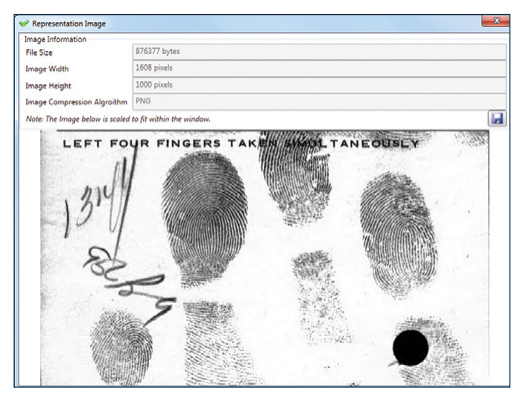
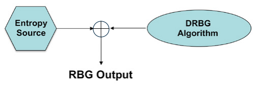
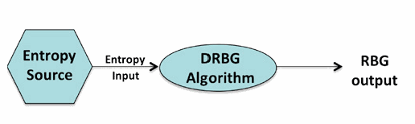
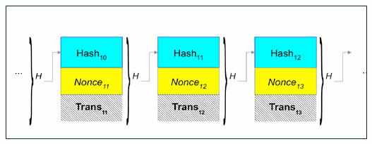
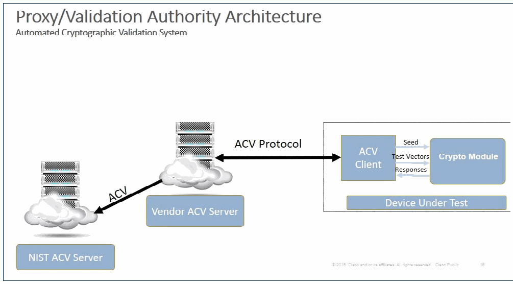
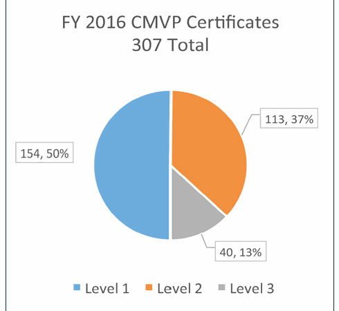
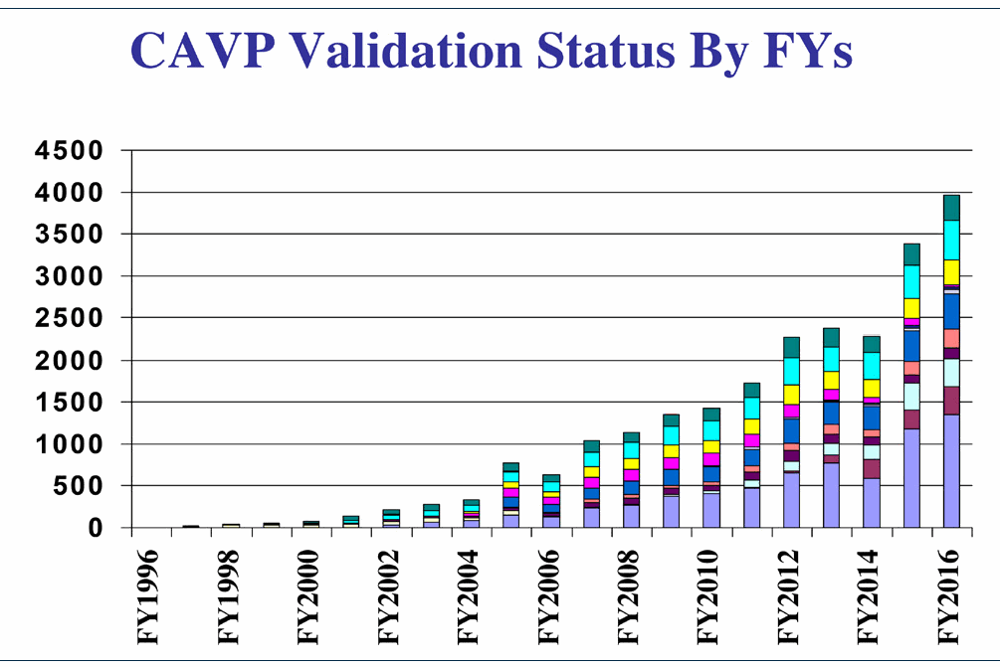
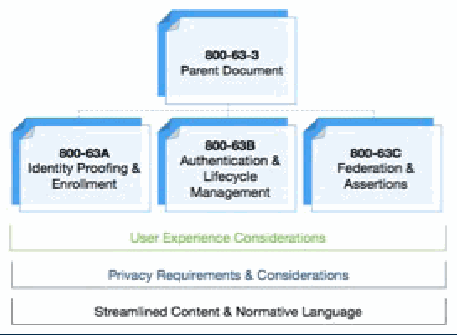
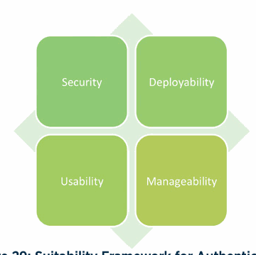
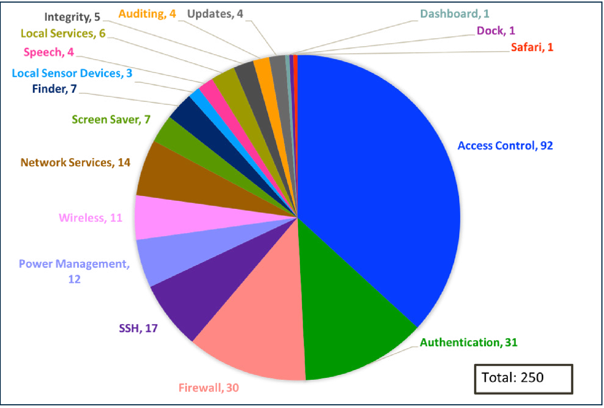

NIST Special Publication · PDF 原文抽出
2016 NIST/ITL Cybersecurity Program Annual Report
2016会計年度 NIST/ITLサイバーセキュリティプログラム年次報告書
NIST SP 800-195（2016 NIST/ITL Cybersecurity Program Annual Report）の英文と日本語訳を段落ごとに並べた閲覧用ページです。2016会計年度にNIST情報技術研究所（ITL）のサイバーセキュリティプログラムが取り組んだ研究活動、成果、課題をまとめます。 翻訳は有志による非公式のもので、NIST および米国商務省が作成・承認・推奨したものではありません。要件の確認にはNIST の正式版 PDFを参照してください。
2016 ANNUAL REPORT
2016年 年次報告書
NIST/ITL CYBERSECURITY PROGRAM
NIST/ITL サイバーセキュリティプログラム
NIST SPECIAL PUBLICATION 800-195
NIST SPECIAL PUBLICATION 800-195
THIS PAGE IS LEFT INTENTIONALLY BLANK.
このページは意図的に空白としている。
ANNUAL REPORT 2016
2016年 年次報告書
NIST/ITL CYBERSECURITY PROGRAM
NIST/ITL サイバーセキュリティプログラム
PATRICK O’REILLY, EDITOR Computer Security Division Information Technology Laboratory
PATRICK O’REILLY（編集者） コンピュータセキュリティ部門 情報技術研究所
KRISTINA RIGOPOULOS, EDITOR Applied Cybersecurity Division Information Technology Laboratory
KRISTINA RIGOPOULOS（編集者） 応用サイバーセキュリティ部門 情報技術研究所
CO-EDITORS:
共同編集者：
Larry Feldman Greg Witte G2, Inc. Annapolis Junction, Maryland
Larry Feldman Greg Witte G2, Inc. Annapolis Junction, Maryland
THIS PUBLICATION IS AVAILABLE FREE OF CHARGE FROM https://doi.org/10.6028/NIST.SP.800-195
本書は次の場所から無料で入手できる： https://doi.org/10.6028/NIST.SP.800-195
SEPTEMBER 2017
2017年9月
U.S. DEPARTMENT OF COMMERCE Wilbur L. Ross, Jr., Secretary
米国商務省 長官 Wilbur L. Ross, Jr.
NATIONAL INSTITUTE OF STANDARDS AND TECHNOLOGY Kent Rochford, Acting Under Secretary of Commerce for Standards and Technology and Acting Director
米国国立標準技術研究所 標準技術担当商務次官代行 兼 所長代行 Kent Rochford
権限 ［装飾の画像。本文を読むのに必要のない装飾のため、この非公式サイトには掲載していない。原本 PDF を参照。］
AUTHORITY
権限
This publication has been developed by NIST in accordance with its statutory responsibilities under the Federal Information Security Modernization Act (FISMA) of 2014, 44 U.S.C. § 3541 et seq., Public Law (P.L.) 113-283. NIST is responsible for developing information security standards and guidelines, including minimum requirements for federal information systems, but such standards and guidelines shall not apply to national security systems without the express approval of appropriate federal officials exercising policy authority over such systems. This guideline is consistent with the requirements of the Office of Management and Budget (OMB) Circular A-130.
本書は、2014年連邦情報セキュリティ近代化法（Federal Information Security Modernization Act: FISMA）、44 U.S.C. § 3541 et seq.、公法（P.L.）113-283に基づく法定の責務に従い、NISTが作成したものである。NISTは、連邦情報システムに対する最低限の要件を含め、情報セキュリティの標準及びガイドラインを策定する責任を負う。ただし、これらの標準及びガイドラインは、国家安全保障システムに対する政策上の権限を行使する適切な連邦政府職員の明示的な承認がない限り、当該システムには適用されない。本ガイドラインは、行政管理予算局（OMB）Circular A-130の要件と整合している。
Nothing in this publication should be taken to contradict the standards and guidelines made mandatory and binding on federal agencies by the Secretary of Commerce under statutory authority. Nor should these guidelines be interpreted as altering or superseding the existing authorities of the Secretary of Commerce, Director of the OMB, or any other federal official. This publication may be used by nongovernmental organizations on a voluntary basis and is not subject to copyright in the United States. Attribution would, however, be appreciated by NIST.
本書のいかなる内容も、商務長官が法定の権限に基づいて連邦機関に対し義務的かつ拘束力のあるものとした標準及びガイドラインに矛盾するものと解してはならない。また、これらのガイドラインを、商務長官、OMB長官、その他の連邦政府職員が現に有する権限を変更し、又はこれに取って代わるものと解釈してはならない。本書は非政府組織が任意に使用してよく、米国内では著作権の対象とならない。ただし、出典を明示してもらえればNISTとしては幸いである。
National Institute of Standards and Technology Special Publication 800-195 Natl. Inst. Stand. Technol. Spec. Publ. 800-195, 156 pages (September 2017) CODEN: NSPUE2
National Institute of Standards and Technology Special Publication 800-195 Natl. Inst. Stand. Technol. Spec. Publ. 800-195, 156 pages (September 2017) CODEN: NSPUE2
This publication is available free of charge from: https://doi.org/10.6028/NIST.SP.800-195
本書は次の場所から無料で入手できる： https://doi.org/10.6028/NIST.SP.800-195
コンピュータシステム技術報告書 ［装飾の画像。本文を読むのに必要のない装飾のため、この非公式サイトには掲載していない。原本 PDF を参照。］
REPORTS ON COMPUTER SYSTEMS TECHNOLOGY
コンピュータシステム技術に関する報告書
The Information Technology Laboratory (ITL) at the National Institute of Standards and Technology (NIST) promotes the U.S. economy and public welfare by providing technical leadership for the Nation’s measurement and standards infrastructure. ITL develops tests, test methods, reference data, proof of concept implementations, and technical analyses to advance the development and productive use of information technology. ITL’s responsibilities include the development of management, administrative, technical, and physical standards and guidelines for the cost-effective security and privacy of other than national security-related information in federal information systems. The Special Publication 800-series reports on ITL’s research, guidelines, and outreach efforts in information system security, and its collaborative activities with industry, government, and academic organizations.
米国国立標準技術研究所（NIST）の情報技術研究所（ITL）は、米国の計測及び標準の基盤に対して技術的な主導力を発揮することにより、米国の経済と公共の福祉を促進している。ITLは、情報技術の開発と生産的な利用を進めるために、試験、試験方法、参照データ、概念実証の実装及び技術的分析を開発している。ITLの責務には、連邦情報システムにおける国家安全保障関連以外の情報について、費用対効果の高いセキュリティとプライバシーを実現するための、マネジメント上、事務上、技術上及び物理上の標準及びガイドラインの策定が含まれる。Special Publication 800シリーズは、情報システムセキュリティに関するITLの研究、ガイドライン及び普及活動、並びに産業界、政府機関及び学術機関との協働活動について報告するものである。
謝辞 ［装飾の画像。本文を読むのに必要のない装飾のため、この非公式サイトには掲載していない。原本 PDF を参照。］
ACKNOWLEDGMENTS
謝辞
The editors, Patrick O’Reilly of the Computer Security Division (CSD) and Kristina Rigopoulos of the Applied Cybersecurity Division (ACD), would like to thank their ITL colleagues who provided write-ups on their 2016 project highlights and accomplishments for this annual report (their names are mentioned after each project write-up). The editors would also like to acknowledge Elaine Barker (CSD), Lisa Carnahan (Standards Coordination Office, NIST), Greg Witte and Larry Feldman (G2) for reviewing and providing valuable feedback for this annual report.
編集者であるコンピュータセキュリティ部門（CSD）のPatrick O’Reilly及び応用サイバーセキュリティ部門（ACD）のKristina Rigopoulosは、本年次報告書のために2016年のプロジェクトの主な活動と成果についての記事を寄せてくれたITLの同僚に感謝する（その氏名は各プロジェクトの記事の後に記載している）。編集者はまた、本年次報告書をレビューし、有益な意見を寄せてくれたElaine Barker（CSD）、Lisa Carnahan（NIST Standards Coordination Office）、Greg Witte及びLarry Feldman（G2）に謝意を表する。
The editors would also like to acknowledge Kristen Dill of Dill and Company, Inc. for designing the cover and inside layout for this 2016 annual report.
編集者はまた、この2016年年次報告書の表紙と本文レイアウトをデザインしたDill and Company, Inc.のKristen Dillに謝意を表する。
免責事項 ［装飾の画像。本文を読むのに必要のない装飾のため、この非公式サイトには掲載していない。原本 PDF を参照。］
DISCLAIMER
免責事項
Any mention of commercial products or organizations is for informational purposes only; it is not intended to imply recommendation or endorsement by the National Institute of Standards and Technology, nor is it intended to imply that the products identified are necessarily the best available for the purpose.
商用の製品又は組織への言及は、情報提供のみを目的としている。米国国立標準技術研究所による推奨又は支持を意味するものではなく、また、特定された製品がその目的に対して必ずしも入手可能な最良のものであることを意味するものでもない。
商標情報 ［装飾の画像。本文を読むのに必要のない装飾のため、この非公式サイトには掲載していない。原本 PDF を参照。］
TRADEMARK INFORMATION
商標に関する情報
All names are trademarks or registered trademarks of their respective owners.
すべての名称は、それぞれの所有者の商標又は登録商標である。
TABLE OF CONTENTS
目次
ACKNOWLEDGMENTS ...................................................................................................................................................................V
謝辞 ................................................................................................................................................................... V
DISCLAIMER ...................................................................................................................................................................................V
免責事項 ................................................................................................................................................................................... V
TRADEMARK INFORMATION .........................................................................................................................................................V
商標に関する情報 ......................................................................................................................................................... V
WELCOME LETTER..........................................................................................................................................................................1
挨拶状 .......................................................................................................................................................................... 1
BACKGROUND INFORMATION OF ANNUAL REPORT .................................................................................................................. 3
年次報告書の背景情報 .................................................................................................................. 3
THE INFORMATION TECHNOLOGY LABORATORY IMPLEMENTS THE FEDERAL INFORMATION SECURITY MANAGEMENT ACT........................................................................................................................................................................ 4
情報技術研究所による連邦情報セキュリティマネジメント法の実施 ........................................................................................................................................................................ 4
ITL CYBERSECURITY PROGRAM ACCOMPLISHMENTS FOR FISCAL YEAR 2016....................................................................... 9
2016会計年度におけるITLサイバーセキュリティプログラムの成果 ....................................................................... 9
ITL INVOLVEMENT WITH NATIONAL AND INTERNATIONAL IT SECURITY STANDARDS........................................................ 10
国内及び国際的なITセキュリティ標準へのITLの関与 ........................................................ 10
Focus on ISO and ANSI Standardization (ISO/IEC JTC1 SC27 IT Security) .................................................................................10
ISO及びANSIの標準化への注力（ISO/IEC JTC1 SC27 IT Security） ................................................................................. 10
IT Security Techniques Standards .....................................................................................................................................................10
ITセキュリティ技術の標準 ..................................................................................................................................................... 10
Next Generation Access Control Standards ......................................................................................................................................11
次世代アクセス制御の標準 ...................................................................................................................................... 11
ISO Standardization of Security Requirements for Cryptographic Modules................................................................................11
暗号モジュールのセキュリティ要件のISO標準化 ................................................................................ 11
Identity Management Devices and Infrastructures Standards (JTC1 SC17 Cards and Personal Identification Devices) ....... 13
アイデンティティ管理デバイス及び基盤の標準（JTC1 SC17 Cards and Personal Identification Devices） ....... 13
Cloud Computing Standards Within ISO/IEC JTC 1/SC 38 Cloud Computing and INCITS Cloud 38 ....................................... 13
ISO/IEC JTC 1/SC 38 Cloud Computing及びINCITS Cloud 38におけるクラウドコンピューティングの標準 ....................................... 13
Biometric Standards and Associated Conformity Assessment Testing Tools .............................................................................14
バイオメトリクスの標準及び関連する適合性評価試験ツール ............................................................................. 14
RISK MANAGEMENT......................................................................................................................................................................14
リスク管理 ...................................................................................................................................................................... 14
Framework for Improving Critical Infrastructure Cybersecurity (Cybersecurity Framework)..................................................14
Framework for Improving Critical Infrastructure Cybersecurity（Cybersecurity Framework） .................................................. 14
Federal Information Security Management Act (FISMA) Implementation Project .................................................................... 15
連邦情報セキュリティマネジメント法（FISMA）実施プロジェクト .................................................................... 15
Privacy Engineering Program............................................................................................................................................................. 17
プライバシーエンジニアリングプログラム ............................................................................................................................................................. 17
Cyber Supply Chain Risk Management (SCRM) .............................................................................................................................. 19
サイバーサプライチェーンリスク管理（SCRM） .............................................................................................................................. 19
BIOMETRIC STANDARDS AND ASSOCIATED CONFORMITY ASSESSMENT TESTING TOOLS ..................................................21
バイオメトリクスの標準及び関連する適合性評価試験ツール .................................................. 21
SECURITY OF CYBER-PHYSICAL AND INDUSTRIAL CONTROL SYSTEMS ..................................................................................... 22
サイバーフィジカルシステム及び産業用制御システムのセキュリティ ..................................................................................... 22
Security of Cyber Physical Systems ................................................................................................................................................. 22
サイバーフィジカルシステムのセキュリティ ................................................................................................................................................. 22
Cybersecurity for Industrial Control Systems ................................................................................................................................. 23
産業用制御システムのサイバーセキュリティ ................................................................................................................................. 23
FEDERAL CYBERSECURITY RESEARCH & DEVELOPMENT (R&D) ............................................................................................ 23
連邦政府のサイバーセキュリティ研究開発（R&D） ............................................................................................ 23
SECURITY ASPECTS OF ELECTRONIC VOTING .......................................................................................................................... 24
電子投票のセキュリティ面 .......................................................................................................................... 24
SOFTWARE ASSURANCE & RELIABILITY ................................................................................................................................... 24
ソフトウェアの保証及び信頼性 ................................................................................................................................... 24
COMPUTER FORENSICS............................................................................................................................................................... 25
コンピュータフォレンジック ............................................................................................................................................................... 25
NATIONWIDE PUBLIC SAFETY BROADBAND NETWORK (NPSBN) CYBERSECURITY............................................................ 26
全米公共安全ブロードバンドネットワーク（NPSBN）のサイバーセキュリティ ............................................................ 26
SMART GRID CYBERSECURITY ................................................................................................................................................... 27
スマートグリッドのサイバーセキュリティ ................................................................................................................................................... 27
CYBERSECURITY AWARENESS, TRAINING, EDUCATION, AND OUTREACH ............................................................................ 28
サイバーセキュリティの意識向上、訓練、教育及び普及活動 ............................................................................ 28
National Initiative for Cybersecurity Education (NICE)................................................................................................................. 28
National Initiative for Cybersecurity Education（NICE） ................................................................................................................. 28
Computer Security Resource Center (CSRC) .................................................................................................................................. 29
Computer Security Resource Center（CSRC） .................................................................................................................................. 29
Federal Computer Security Managers’ (FCSM) Forum.................................................................................................................. 30
Federal Computer Security Managers’ (FCSM) Forum .................................................................................................................. 30
Federal Information Systems Security Educators’ Association (FISSEA) ...........................................................................................................31
Federal Information Systems Security Educators’ Association（FISSEA） ........................................................................................................... 31
Information Security and Privacy Advisory Board (ISPAB).......................................................................................................... 33
Information Security and Privacy Advisory Board（ISPAB） .......................................................................................................... 33
Small and Medium Size Business (SMB) Cybersecurity Outreach Workshop ............................................................................ 35
中小企業（SMB）向けサイバーセキュリティ普及ワークショップ ............................................................................ 35
CRYPTOGRAPHIC STANDARDS PROGRAM ................................................................................................................................ 36
暗号標準プログラム ................................................................................................................................ 36
Secure Hash Algorithm-3 (SHA-3) Derived Functions (NIST SP 800-185)................................................................................. 36
Secure Hash Algorithm-3（SHA-3）派生関数（NIST SP 800-185） ................................................................................. 36
Random Number Generation (RNG) ................................................................................................................................................ 36
乱数生成（RNG） ................................................................................................................................................ 36
Block Cipher Modes of Operation .................................................................................................................................................... 38
ブロック暗号の利用モード .................................................................................................................................................... 38
Key Management ................................................................................................................................................................................ 38
鍵管理 ................................................................................................................................................................................ 38
Transport Layer Security.................................................................................................................................................................... 42
Transport Layer Security .................................................................................................................................................................... 42
Elliptic Curve Cryptography .............................................................................................................................................................. 42
楕円曲線暗号 .............................................................................................................................................................. 42
Post-Quantum Cryptography............................................................................................................................................................ 43
耐量子計算機暗号 ............................................................................................................................................................ 43
Circuit Complexity .............................................................................................................................................................................. 43
回路計算量 .............................................................................................................................................................................. 43
Lightweight Cryptography ................................................................................................................................................................ 45
軽量暗号 ................................................................................................................................................................ 45
The NIST Randomness Beacon ......................................................................................................................................................... 45
NIST Randomness Beacon ......................................................................................................................................................... 45
TABLE OF CONTENTS
目次
Cryptography Applications in Wireless and Mobile Security ....................................................................................................... 46
無線及びモバイルのセキュリティにおける暗号の応用 ....................................................................................................... 46
Blockchains .......................................................................................................................................................................................... 46
ブロックチェーン .......................................................................................................................................................................................... 46
Entropy as a Service (EaaS) .............................................................................................................................................................. 47
Entropy as a Service（EaaS） .............................................................................................................................................................. 47
Automated Cryptographic Validation Testing ................................................................................................................................ 48
暗号検証試験の自動化 ................................................................................................................................ 48
VALIDATION PROGRAMS.............................................................................................................................................................50
検証プログラム ............................................................................................................................................................. 50
Cryptographic Programs and Laboratory Accreditation............................................................................................................... 50
暗号プログラム及び試験所認定 ............................................................................................................... 50
The Cryptographic Algorithm Validation Program (CAVP) .......................................................................................................... 52
Cryptographic Algorithm Validation Program（CAVP） .......................................................................................................... 52
Automated Security Testing and Test Suite Development............................................................................................................ 55
セキュリティ試験の自動化及びテストスイートの開発 ............................................................................................................ 55
Security Content Automation Protocol (SCAP) Validation Program........................................................................................... 57
Security Content Automation Protocol（SCAP）Validation Program ........................................................................................... 57
IDENTITY AND ACCESS MANAGEMENT ..................................................................................................................................... 59
アイデンティティ及びアクセスの管理 ..................................................................................................................................... 59
NIST Personal Identity Verification Program (NPIVP)................................................................................................................... 59
NIST Personal Identity Verification Program（NPIVP） ................................................................................................................... 59
Personal Identity Verification (PIV) and FIPS 201 Revision Efforts .............................................................................................60
Personal Identity Verification（PIV）及びFIPS 201の改訂作業 ............................................................................................. 60
Authentication...................................................................................................................................................................................... 61
認証 ...................................................................................................................................................................................... 61
Access Control and Privilege Management..................................................................................................................................... 62
アクセス制御及び特権管理 ..................................................................................................................................... 62
Conformance Verification for Access Control Policies .................................................................................................................. 63
アクセス制御ポリシーの適合性検証 .................................................................................................................. 63
Attribute-Based Access Control ....................................................................................................................................................... 65
属性ベースアクセス制御 ....................................................................................................................................................... 65
Trusted Identities Group (TIG) .......................................................................................................................................................... 66
Trusted Identities Group（TIG） .......................................................................................................................................................... 66
RESEARCH IN EMERGING TECHNOLOGIES ................................................................................................................................ 69
新興技術の研究 ................................................................................................................................ 69
Secure Development Toolchain Competitions................................................................................................................................ 69
セキュアな開発ツールチェーンのコンペティション ................................................................................................................................ 69
Networks of “Things” ......................................................................................................................................................................... 69
「モノ」のネットワーク ......................................................................................................................................................................... 69
Cloud Computing Security and Forensics ....................................................................................................................................... 70
クラウドコンピューティングのセキュリティ及びフォレンジック ....................................................................................................................................... 70
CSD Role in the NIST Cloud Computing Program................................................................................................................................................71
NIST Cloud Computing ProgramにおけるCSDの役割 ................................................................................................................................................ 71
Policy Machine – Next Generation Access Control .............................................................................................................................................72
Policy Machine – 次世代アクセス制御 ............................................................................................................................................. 72
Security for a Virtualized Infrastructure ..................................................................................................................................................................73
仮想化基盤のセキュリティ .................................................................................................................................................................. 73
Cyber Threat Information Sharing.................................................................................................................................................... 73
サイバー脅威情報の共有 .................................................................................................................................................... 73
The Ontology of Authentication ....................................................................................................................................................... 74
認証のオントロジー ....................................................................................................................................................... 74
NATIONAL CYBERSECURITY CENTER OF EXCELLENCE ........................................................................................................... 76
National Cybersecurity Center of Excellence ........................................................................................................... 76
INTERNET INFRASTRUCTURE PROTECTION.............................................................................................................................. 79
インターネット基盤の保護 .............................................................................................................................. 79
ADVANCED SECURITY TESTING AND MEASUREMENTS ........................................................................................................... 82
高度なセキュリティ試験及び測定 ........................................................................................................... 82
Security Automation and Continuous Monitoring.......................................................................................................................... 82
セキュリティ自動化及び継続的モニタリング .......................................................................................................................... 82
Specification, Standards, and Guidance Development.....................................................................................................................................82
仕様、標準及びガイダンスの策定 ..................................................................................................................................... 82
Security Content Automation Protocol (SCAP)...................................................................................................................................................83
Security Content Automation Protocol (SCAP)...................................................................................................................................................83
Software Asset Management Standards ................................................................................................................................................................85
ソフトウェア資産管理標準 ................................................................................................................................................................85
Development of Security Automation Consensus Standards....................................................................................................................... 86
セキュリティ自動化に関するコンセンサス標準の開発....................................................................................................................... 86
Security Automation Reference Data............................................................................................................................................... 87
セキュリティ自動化の参照データ............................................................................................................................................... 87
National Vulnerability Database (NVD)...................................................................................................................................................................87
National Vulnerability Database (NVD)...................................................................................................................................................................87
National Checklist Program (NCP)............................................................................................................................................................................88
National Checklist Program (NCP)............................................................................................................................................................................88
Apple OS X Security Configuration.......................................................................................................................................................................... 89
Apple OS X のセキュリティ設定.......................................................................................................................................................................... 89
TECHNICAL SECURITY METRICS..................................................................................................................................................91
技術的セキュリティメトリクス..................................................................................................................................................91
Security Risk Analysis of Enterprise Networks Using Attack Graphs........................................................................................... 91
攻撃グラフを用いたエンタープライズネットワークのセキュリティリスク分析........................................................................................... 91
Algorithms for Intrusion Measurement............................................................................................................................................. 91
侵入測定のためのアルゴリズム............................................................................................................................................. 91
Automated Combinatorial Testing ................................................................................................................................................... 92
自動化された組合せテスト ................................................................................................................................................... 92
Roots of Trust ...................................................................................................................................................................................... 93
信頼の基点 ...................................................................................................................................................................................... 93
USABILITY AND SECURITY..........................................................................................................................................................94
ユーザビリティとセキュリティ..........................................................................................................................................................94
HONORS AND AWARDS............................................................................................................................................................... 97
表彰および受賞............................................................................................................................................................... 97
ITL CYBERSECURITY PROGRAM PUBLICATIONS RELEASED IN FY 2016 .............................................................................. 103
2016会計年度に公開された ITL サイバーセキュリティプログラムの刊行物 .............................................................................. 103
ITL CYBERSECURITY PROGRAM RELATED PUBLICATIONS.................................................................................................... 109
ITL サイバーセキュリティプログラムの関連刊行物.................................................................................................... 109
NIST Technical Series Publications and Other NIST Publications ............................................................................................... 110
NIST Technical Series の刊行物およびその他の NIST 刊行物 ............................................................................................... 110
Abstracts of Publications Released in FY 2016 .............................................................................................................................. 111
2016会計年度に公開された刊行物の要旨 .............................................................................................................................. 111
NIST Technical Series Publications and Other NIST Publications ............................................................................................... 127
NIST Technical Series の刊行物およびその他の NIST 刊行物 ............................................................................................... 127
APPENDIX A: ACRONYMS ..........................................................................................................................................................137
付録 A：略語 ..........................................................................................................................................................137
APPENDIX B: NIST CYBERSECURITY EVENTS HELD DURING FY 2016 ...................................................................................145
付録 B：2016会計年度に開催された NIST のサイバーセキュリティ関連イベント ...................................................................................145
APPENDIX C: OPPORTUNITIES TO ENGAGE WITH ITL CYBERSECURITY PROGRAM AND NIST DURING FY 2017-2018.....147
付録 C：2017～2018会計年度に ITL サイバーセキュリティプログラムおよび NIST と関わる機会.....147
THIS PAGE IS LEFT INTENTIONALLY BLANK.
このページは意図的に空白としている。
WELCOME LETTER
挨拶状
Awareness about the importance of strong cybersecurity for maintaining trust in the economy and protecting the nation is at an all-time high. So, too, are the challenges. When it comes to cybersecurity, the National Institute of Standards and Technology (NIST) has a long history of conducting path-breaking research and development, cultivating standards and best practices, and facilitating technology transitions. We rely on open, transparent, and collaborative processes that engage private and public sector participation and attract expertise from around the world. This 2016 report captures our most noteworthy accomplishments.
経済への信頼を維持し、国家を保護するうえで強固なサイバーセキュリティが重要であるという認識は、かつてなく高まっている。課題もまた、かつてなく大きい。サイバーセキュリティに関して、米国国立標準技術研究所（NIST）は、先駆的な研究開発を行い、標準とベストプラクティスを育て、技術移転を促進してきた長い歴史を持つ。我々は、民間部門と公共部門の参加を得て、世界中から専門知識を集める、開かれた、透明で協調的なプロセスを拠り所としている。この2016年の報告書は、我々の最も注目すべき成果をまとめたものである。
In 2016, NIST continued to advance fundamental research to support security and interoperability standards and guidelines. This work was led by the Computer Security Division (CSD) in the NIST Information Technology Laboratory (ITL). Among other things, CSD is responsible for developing cybersecurity standards, guidelines, tests, and metrics for the protection of non-national security federal information systems. Recognizing the agency’s need to respond to and anticipate increasing demands for its cybersecurity expertise, NIST established the Applied Cybersecurity Division (ACD) within ITL to support additional applied research and to transition effective cybersecurity technology approaches to government and business sectors nationwide. ACD helps to drive the adoption of appropriate cybersecurity solutions by government and commercial organizations – enabling solutions-oriented collaborative interactions and offering guidance on the use of research results, standards, and best practices. Other parts of NIST also are key contributors to NIST’s cybersecurity portfolio.
2016年、NIST は、セキュリティおよび相互運用性の標準とガイドラインを支える基礎研究を引き続き進めた。この作業を主導したのは、NIST の情報技術研究所（ITL）のコンピュータセキュリティ部門（CSD）である。CSD は、とりわけ、国家安全保障に関わらない連邦情報システムを保護するためのサイバーセキュリティの標準、ガイドライン、テスト、およびメトリクスを開発する責任を負っている。NIST は、自らのサイバーセキュリティの専門知識に対する需要の高まりに応え、かつそれを先取りする必要があることを認識し、応用研究をさらに支援するとともに、効果的なサイバーセキュリティ技術のアプローチを全米の政府部門および産業部門へ移転するために、ITL 内に Applied Cybersecurity Division（ACD）を設置した。ACD は、政府機関および民間組織による適切なサイバーセキュリティソリューションの採用を後押しする。すなわち、ソリューション志向の協調的な交流を可能にし、研究成果、標準、およびベストプラクティスの利用に関するガイダンスを提供する。NIST の他の部署も、NIST のサイバーセキュリティポートフォリオに大きく貢献している。
Strong partnerships with industry, academia and government are critical to NIST’s cybersecurity program. In 2016, NIST continued to collaborate with stakeholders from across the country and around the world to raise awareness and encourage use of the voluntary Cybersecurity Framework. In this spirit, NIST began to develop an update to the version first published in 2014. NIST also prepared a draft Cybersecurity Framework profile aligned with manufacturing sector goals and industry best practices. In addition, NIST developed the draft Baldrige Cybersecurity Excellence Builder self-assessment tool that complements the Cybersecurity Framework and helps organizations to better understand the effectiveness of their cybersecurity risk management efforts.
産業界、学術界および政府との強固なパートナーシップは、NIST のサイバーセキュリティプログラムにとって不可欠である。2016年、NIST は、任意で利用する Cybersecurity Framework の認知度を高め、その利用を促すために、全米および世界各地の利害関係者との協力を続けた。この考えのもと、NIST は、2014年に初めて公開した版の改訂版の作成に着手した。NIST はまた、製造部門の目標および業界のベストプラクティスに沿った Cybersecurity Framework プロファイルの草案を作成した。さらに、NIST は、自己評価ツールである Baldrige Cybersecurity Excellence Builder の草案を作成した。このツールは Cybersecurity Framework を補完し、組織が自らのサイバーセキュリティリスク管理の取り組みの有効性をよりよく理解するのに役立つ。
Looking ahead is vital in the realm of cybersecurity. Knowing that if large-scale quantum computers are ever built, they will be able to break many of the public-key cryptosystems currently in use and compromise the confidentiality and integrity of digital communication on the Internet and elsewhere, NIST is working closely with the academic community and industry to develop protective cryptographic standards that we all rely upon. Building on its successful tradition of working openly with the worldwide cryptographic community, in 2016 NIST called for submissions for quantum-resistant public-key cryptographic algorithms for standards. These algorithms must be secure against both quantum and classical computers, and should interoperate with existing communications protocols and networks. After submissions are received late in 2017, NIST plans to spend 3-5 years working with the research community and industry to analyze the candidates before selecting algorithms for standardization.
サイバーセキュリティの領域では、先を見据えることが極めて重要である。大規模な量子コンピュータがいつか構築されれば、現在使用されている公開鍵暗号システムの多くが破られ、インターネットその他におけるデジタル通信の機密性と完全性が損なわれることになる。このことを踏まえ、NIST は、我々すべてが依拠する、保護のための暗号標準を開発するために、学術界および産業界と緊密に協力している。世界中の暗号コミュニティと開かれた形で協働してきた成功の伝統に基づき、NIST は2016年、標準化に向けた耐量子公開鍵暗号アルゴリズムの提案を募集した。これらのアルゴリズムは、量子コンピュータと古典コンピュータの両方に対して安全でなければならず、また既存の通信プロトコルおよびネットワークと相互運用できるべきである。2017年後半に提案を受け付けた後、NIST は、標準化するアルゴリズムを選定する前に、3～5年をかけて研究コミュニティおよび産業界と協力し、候補を分析する計画である。
Identity management is fundamental to security management. In 2016, NIST continued to advance solutions in identity management through projects with partners who manage innovative but practical real-world solutions. Also in the past year, NIST produced an introduction to the concepts of privacy engineering and risk management for federal information systems. The goal is to help decrease privacy risks and enable organizations to make purposeful decisions about resource allocation and effective implementation of controls in information systems. NIST also initiated an update to our Digital Identity Guideline (Special Publication 800-63), which provides technical guidelines to agencies for the implementation of digital authentication. Building from these foundational resources, NIST’s efforts will focus on strengthening the security, privacy, usability and interoperability of digital identity solutions that meet an organization’s identity and access management needs throughout the system lifecycle.
アイデンティティ管理は、セキュリティ管理の基本である。2016年、NIST は、革新的でありながら実用的な実世界のソリューションを運営するパートナーとのプロジェクトを通じて、アイデンティティ管理におけるソリューションを引き続き前進させた。またこの1年に、NIST は、連邦情報システムのためのプライバシーエンジニアリングとリスク管理の概念に関する入門書を作成した。その目標は、プライバシーリスクの低減に役立てること、ならびに組織が資源配分および情報システムにおける管理策の効果的な実装について、目的に即した判断を下せるようにすることである。NIST はまた、Digital Identity Guideline（Special Publication 800-63）の改訂に着手した。これは、デジタル認証の実装に関する技術的ガイドラインを各機関に提供するものである。これらの基礎となる資源を土台として、NIST は、システムライフサイクル全体を通じて組織のアイデンティティおよびアクセス管理のニーズを満たすデジタルアイデンティティソリューションのセキュリティ、プライバシー、ユーザビリティおよび相互運用性の強化に注力する。
During 2016, NIST’s National Cybersecurity Center of Excellence (NCCoE) moved into a new permanent facility that expanded the Center’s workspace from four to 23 separate, flexible laboratories—including two larger areas capable of safely hosting large equipment, such as automobiles. This additional space allows NCCoE to increase its collaborations and projects. In 2016, the Center published draft practice guides to support industry sectors, including healthcare, financial services, and energy; these guides are now beginning to be put to productive use. NCCoE also published draft documents to support security in key technology areas, such as cloud computing and mobile applications.
2016年中に、NIST の National Cybersecurity Center of Excellence（NCCoE）は新しい恒久施設へ移転した。これにより、同センターの作業スペースは、独立した柔軟な実験室4室から23室に拡大した。その中には、自動車などの大型機器を安全に収容できる、より広い区画が2つ含まれる。この追加スペースによって、NCCoE は協力関係とプロジェクトを増やすことができる。2016年、同センターは、医療、金融サービス、エネルギーなどの産業部門を支援する実践ガイドの草案を公開した。これらのガイドは現在、実際に活用され始めている。NCCoE はまた、クラウドコンピューティングやモバイルアプリケーションなどの主要な技術分野におけるセキュリティを支援する文書の草案も公開した。
The National Initiative for Cybersecurity Education (NICE), led by NIST, is a partnership between government, academia, and the private sector that is focused on promoting a robust network and an ecosystem of cybersecurity education, training, and workforce development. In 2016, NIST released an update to the NICE Cybersecurity Workforce Framework (NCWF); it already is being used in the private and public sectors to more effectively identify, recruit, develop and maintain cybersecurity talent. The NICE framework provides a common language to categorize and describe cybersecurity work that helps organizations to build a strong staff to protect systems and data.
NIST が主導する National Initiative for Cybersecurity Education（NICE）は、政府、学術界、および民間部門のパートナーシップであり、サイバーセキュリティの教育、訓練、および人材育成の強固なネットワークとエコシステムの促進に重点を置いている。2016年、NIST は NICE Cybersecurity Workforce Framework（NCWF）の改訂版を公開した。このフレームワークは、サイバーセキュリティ人材をより効果的に見いだし、採用し、育成し、維持するために、民間部門と公共部門ですでに利用されている。NICE のフレームワークは、サイバーセキュリティ業務を分類し記述するための共通言語を提供するものであり、組織がシステムとデータを保護する強力な陣容を築くのに役立つ。
Our dedicated staff has accomplished a great deal in 2016, developing standards and working closely with scores of partners and drawing upon hundreds of private and public sector organizations and individuals. This is not a static endeavor. For example, NIST is fully aware of the urgent need to more aggressively address the security challenges of the Internet of Things and, more broadly, our connected world.
我々の献身的な職員は、2016年に多くのことを成し遂げた。標準を開発し、数十のパートナーと緊密に協力し、数百に及ぶ民間部門および公共部門の組織と個人の力を借りてのことである。これは静的な取り組みではない。たとえば NIST は、Internet of Things の、さらに広くは相互に接続された我々の世界のセキュリティ上の課題に、より積極的に取り組むことが急務であることを十分に認識している。
We welcome any and all suggestions about where and how we can better provide the nation with the kind of cybersecurity information and tools that it needs in order to advance and protect our economy and our country.
経済と国を発展させ保護するために国家が必要とするサイバーセキュリティの情報とツールを、我々がどの分野で、どのようにすればよりよく提供できるかについて、あらゆる提案を歓迎する。
Donna F. Dodson, Chief Cybersecurity Advisor
Donna F. Dodson、Chief Cybersecurity Advisor
BACKGROUND INFORMATION OF ANNUAL REPORT
年次報告書の背景情報
This Annual Report, formerly the Computer Security Division Annual Report, has been renamed to the Information Technology Laboratory (ITL) Cybersecurity Program Annual Report. This change reflects the opportunity to describe the many cybersecurity program highlights and accomplishments from throughout the laboratory. This Annual Report is organized into several sections, each identified by a title page.
この年次報告書は、従来の Computer Security Division Annual Report から、Information Technology Laboratory (ITL) Cybersecurity Program Annual Report へと改称された。この変更は、同研究所全体にわたるサイバーセキュリティプログラムの多くのハイライトと成果を記述する機会となることを反映している。この年次報告書は複数のセクションで構成され、各セクションは扉ページによって示される。
Please note: This Annual Report covers the Federal Government’s Fiscal Year (FY) 2016 from October 1, 2015 to September 30, 2016.
注記：この年次報告書は、連邦政府の2016会計年度（2015年10月1日から2016年9月30日まで）を対象とする。
ITL, an operating unit under NIST, contains seven divisions. Five of these seven divisions are involved with cybersecurity efforts at NIST. Throughout this Annual Report, there are some references to particular division activities, and to work by groups within those divisions. Primarily, the authors have attributed accomplishments to ITL, since ITL staff have been involved with each cybersecurity program included in this Annual Report. At the end of each program/project write-up, one or more points of contact are provided and may be used to address questions or request for more information. Many sections also include additional references that readers may find valuable.
ITL は NIST の下にある運営単位であり、7つの部門を擁する。この7部門のうち5部門が、NIST におけるサイバーセキュリティの取り組みに関与している。この年次報告書では随所で、特定の部門の活動、およびそれらの部門内のグループによる作業に言及している。ただし、この年次報告書に含まれる各サイバーセキュリティプログラムには ITL の職員が関与しているため、執筆者は成果を主として ITL に帰属させている。各プログラム／プロジェクトの記述の末尾には、1名以上の連絡窓口を示しており、質問や追加情報の依頼に利用できる。多くのセクションには、読者にとって有益と思われる追加の参考資料も含まれている。
Below is a condensed hierarchical chart of ITL’s structure:
以下は、ITL の組織構造を簡略化した階層図である。
情報技術研究所（ITL）本部 ［装飾の画像。本文を読むのに必要のない装飾のため、この非公式サイトには掲載していない。原本 PDF を参照。］
INFORMATION TECHNOLOGY LABORATORY (ITL) HEADQUARTERS
情報技術研究所（ITL）本部
Charles Romine, Director
Charles Romine、Director
Jim St. Pierre, Deputy Director
Jim St. Pierre、Deputy Director
(5 of the 7 divisions (identified below) are involved with the ITL Cybersecurity Program)
（7部門のうち、以下に示す5部門が ITL サイバーセキュリティプログラムに関与している）
Advanced Network Technologies Division (ANTD)
Advanced Network Technologies Division (ANTD)
Abdella Battou, Division Chief
Abdella Battou、Division Chief
Applied Cybersecurity Division (ACD)
Applied Cybersecurity Division (ACD)
Kevin Stine, Division Chief
Kevin Stine、Division Chief
Computer Security Division (CSD)
コンピュータセキュリティ部門（CSD）
Matthew Scholl, Division Chief
Matthew Scholl、Division Chief
Information Access Division (IAD)
Information Access Division (IAD)
Shahram Orandi, Division Chief
Shahram Orandi、Division Chief
Software and Systems Division (SSD)
Software and Systems Division (SSD)
Ram Sriram, Division Chief
Ram Sriram、Division Chief
ITL’s Cybersecurity Program is very excited to share these achievements and accomplishments made during the 2016 Fiscal Year in this Annual Report.
ITL のサイバーセキュリティプログラムは、2016会計年度に達成したこれらの実績と成果を、この年次報告書でお伝えできることを大変喜ばしく思う。
原本PDFの抜粋画像
THE INFORMATION TECHNOLOGY LABORATORY IMPLEMENTS THE FEDERAL INFORMATION SECURITY MANAGEMENT ACT
情報技術研究所による Federal Information Security Management Act の実施
This section contains a list of the major activities that were accomplished during FY 2016 by the ITL Cybersecurity Program. Detailed explanations of these activities are provided in the next section.
このセクションには、ITL サイバーセキュリティプログラムが2016会計年度に達成した主要な活動の一覧を示す。これらの活動の詳細な説明は、次のセクションに示す。
INFORMATION TECHNOLOGY LABORATORY (ITL) CYBERSECURITY PROGRAM IMPLEMENTS FEDERAL INFORMATION SECURITY MANAGEMENT ACT
情報技術研究所（ITL）サイバーセキュリティプログラムによる Federal Information Security Management Act の実施
The E-Government Act, Public Law 107-347, passed by the 107th Congress and signed into law by the President in December 2002, recognized the importance of information security to the economic and national security interests of the United States. Title III of the E-Government Act, titled the Federal Information Security Management Act (FISMA) of 2002, included the duties and responsibilities for the National Institute of Standards and Technology, Information Technology Laboratory. There are multiple divisions within ITL that are involved with cybersecurity programs/projects. The work is being conducted collaboratively between the divisions. In December 2014, the 113th Congress updated FISMA as the Federal Information Security Modernization Act (Public Law 113-283). NIST ITL responsibilities were unchanged in the update. In 2016, the ITL Cybersecurity Program addressed its assignment through the following major activities:
E-Government Act（Public Law 107-347）は、第107議会で可決され、2002年12月に大統領の署名により成立した法律であり、米国の経済的利益および国家安全保障上の利益にとって情報セキュリティが重要であることを認めた。E-Government Act の Title III は、Federal Information Security Management Act (FISMA) of 2002 と題され、米国国立標準技術研究所の情報技術研究所の任務と責任を定めていた。ITL 内では、複数の部門がサイバーセキュリティのプログラム／プロジェクトに関与している。作業は部門間で協力して進められている。2014年12月、第113議会は FISMA を Federal Information Security Modernization Act（Public Law 113-283）として改正した。この改正において、NIST ITL の責任に変更はなかった。2016年、ITL サイバーセキュリティプログラムは、以下の主要な活動を通じてその任務に取り組んだ。
•Forty-three NIST Special Publications (SP) (20 approved as final and 23 drafts) were issued, providing management, operational, and technical security guidelines in topic areas including:
•43件の NIST Special Publication (SP)（最終版として承認されたもの20件、草案23件）を発行し、次のような分野について、管理面、運用面、および技術面のセキュリティガイドラインを提供した。
The 2015 annual report; cryptography (cryptographic standards used for the Federal Government, block cipher modes of operation, key management, random bit generator (RBG), Secure Hash Algorithm-3 (SHA-3) cryptography, transitioning the use of cryptographic algorithms and key lengths); mobile security (enterprise telework, remote access and bring-your-own device (BYOD), mobile device security – cloud and hybrid builds): application whitelisting; cyber threat sharing; cybersecurity event recovery; data-centric system threat modeling; de-identifying government datasets; asset management – financial services; guidelines for checklist users and developers; networks of “things”; personal identification verification (PIV); protecting Controlled Unclassified Information within nonfederal information systems and organizations; securing Apple Operating System (OS) X; security content automation protocol (SCAP); systems engineering; trustworthy email; and virtual machine (VM) protection.
2015年の年次報告書、暗号（連邦政府向けに使用される暗号標準、ブロック暗号の利用モード、鍵管理、乱数ビット生成器（RBG）、Secure Hash Algorithm-3（SHA-3）暗号、暗号アルゴリズムおよび鍵長の利用の移行）、モバイルセキュリティ（企業のテレワーク、リモートアクセスおよび bring-your-own device（BYOD）、モバイルデバイスセキュリティ – クラウドおよびハイブリッドの構築例）：アプリケーションホワイトリスティング、サイバー脅威情報の共有、サイバーセキュリティイベントからの復旧、データ中心のシステム脅威モデリング、政府データセットの非識別化、資産管理 – 金融サービス、チェックリストの利用者および開発者向けガイドライン、「モノ」のネットワーク、personal identification verification（PIV）、連邦政府外の情報システムおよび組織における Controlled Unclassified Information の保護、Apple Operating System (OS) X のセキュリティ確保、security content automation protocol（SCAP）、システムエンジニアリング、信頼できる電子メール、ならびに仮想マシン（VM）の保護。
•Thirty-one NIST Interagency/Internal Reports (NISTIR) (18 approved as final and 13 drafts) were issued on a variety of topics, including:
•31件の NIST Interagency/Internal Report (NISTIR)（最終版として承認されたもの18件、草案13件）を、次のようなさまざまなテーマについて発行した。
Cryptography (post-quantum cryptography, lightweight cryptography, NIST cryptographic standards and guidelines development process); mobile security (mobile devices, infrastructure and platforms); attribute metadata; automation support for security control assessments; catalyzing the identity ecosystem; de-identification of personal information; Long-Term Evolution (LTE) architecture overview and security analysis; PIV; policy machine (access control framework); public safety mobile applications; SCAP; security of interactive and automated access management using Secure Shell (SSH); software identification (SWID) tags; strategic U.S. Government engagement in international standardization; trusted geolocation in the cloud; and vulnerability description ontology (VDO).
暗号（耐量子暗号、軽量暗号、NIST の暗号標準およびガイドラインの開発プロセス）、モバイルセキュリティ（モバイルデバイス、インフラストラクチャおよびプラットフォーム）、属性メタデータ、セキュリティ管理策のアセスメントに対する自動化支援、アイデンティティエコシステムの促進、個人情報の非識別化、Long-Term Evolution（LTE）アーキテクチャの概要とセキュリティ分析、PIV、policy machine（アクセス制御フレームワーク）、公共安全向けモバイルアプリケーション、SCAP、Secure Shell（SSH）を用いた対話型および自動化されたアクセス管理のセキュリティ、software identification（SWID）タグ、国際標準化への米国政府の戦略的関与、クラウドにおける信頼できる位置情報、ならびに vulnerability description ontology（VDO）。
•The National Cybersecurity Center of Excellence (NCCoE) moved into a new permanent facility:
•National Cybersecurity Center of Excellence（NCCoE）が新しい恒久施設へ移転した。
This facility was made possible by the state of Maryland and Montgomery County, Maryland, and has almost 60,000 square feet of modern physical space and IT systems. The new facility expanded the Center’s workspace from four to twenty-two separate, flexible laboratories— including two larger areas capable of safely housing large equipment (including a vehicle that will be used in an upcoming project on auto-related cybersecurity issues). This additional space allows NCCoE to increase its collaboration and to undertake new projects.
この施設はメリーランド州および同州モンゴメリー郡によって実現したものであり、約60,000平方フィートの近代的な物理スペースと IT システムを備える。新施設により、同センターの作業スペースは、独立した柔軟な実験室4室から22室に拡大した。その中には、大型機器（自動車関連のサイバーセキュリティ問題に関する今後のプロジェクトで使用される車両を含む）を安全に収容できる、より広い区画が2つ含まれる。この追加スペースによって、NCCoE は協力関係を拡大し、新たなプロジェクトに着手することができる。
•The Strategic Plan for the National Initiative for Cybersecurity Education (NICE) was issued:
•National Initiative for Cybersecurity Education（NICE）の Strategic Plan を発行した。
With a mission of energizing and promoting a robust network and an ecosystem of cybersecurity education, training, and workforce development, this plan lays out important goals for the cybersecurity workforce. (See: http://csrc.nist.gov/nice/about/strategicplan.html)
サイバーセキュリティの教育、訓練、および人材育成の強固なネットワークとエコシステムを活性化し促進するという使命のもと、この計画はサイバーセキュリティ人材に関する重要な目標を定めている。（参照：http://csrc.nist.gov/nice/about/strategicplan.html）
•A draft Cybersecurity Framework profile for manufacturers was developed and issued:
•製造業者向けの Cybersecurity Framework プロファイルの草案を作成し、発行した。
This profile can be used as a roadmap for reducing cybersecurity risk for manufacturers and is aligned with manufacturing sector goals and industry best practices.
このプロファイルは、製造業者がサイバーセキュリティリスクを低減するためのロードマップとして利用でき、製造部門の目標および業界のベストプラクティスに沿っている。
•The Baldrige Cybersecurity Excellence Builder (BCEB) self-assessment tool was developed and issued for public comment:
•自己評価ツールである Baldrige Cybersecurity Excellence Builder（BCEB）を作成し、パブリックコメントに付すために発行した。
The BCEB, aligned to the Cybersecurity Framework, is a self-assessment tool to help organizations better understand the effectiveness of their cybersecurity risk management efforts. (See: https://www.nist.gov/baldrige/products-services/baldrige-cybersecurity-initiative)
BCEBはCybersecurity Frameworkに整合した自己評価ツールであり、組織が自らのサイバーセキュリティリスク管理の取り組みの有効性をよりよく理解できるよう支援する。（参照: https://www.nist.gov/baldrige/products-services/baldrige-cybersecurity-initiative）
•Continued to research, evaluate and develop standards for Post-Quantum Cryptography (PQC):
•耐量子計算機暗号（Post-Quantum Cryptography、PQC）の標準の研究、評価、開発を継続した:
NIST announced a Call for Proposals to solicit, evaluate, and standardize quantum-resistant public key cryptography (a.k.a. post-quantum cryptography (PQC)) algorithms through a Federal Register Notice (FRN). The team solicited public comments regarding requirements and evaluation criteria, which were subsequently finalized. NIST plans to spend three to five years analyzing the submitted algorithms before selecting algorithms for standardization, during which time NIST will engage with the research community through conferences and workshops.
NISTは、Federal Register Notice（FRN）を通じて、耐量子公開鍵暗号（別名、耐量子計算機暗号（PQC））アルゴリズムを募集し、評価し、標準化するための提案募集を公表した。チームは要件と評価基準についてパブリックコメントを募集し、その後これらを確定した。NISTは、標準化するアルゴリズムを選定する前に、提出されたアルゴリズムの分析に3年から5年をかける計画であり、その間、会議やワークショップを通じて研究コミュニティと連携する。
•Initiated a lightweight cryptography project to study the performance of the current NIST-approved cryptographic standards on constrained devices:
•制約のあるデバイス上での現行のNIST承認暗号標準の性能を調査するため、軽量暗号プロジェクトを開始した:
To better understand the need for dedicated lightweight cryptography, ITL has created a portfolio of lightweight primitives through an open process. ITL will evaluate and recommend algorithms based on profiles, which consist of a set of design goals, physical characteristics of target devices, performance characteristics imposed by the applications, and security characteristics.
専用の軽量暗号の必要性をよりよく理解するため、ITLは公開のプロセスを通じて軽量プリミティブのポートフォリオを作成した。ITLは、プロファイルに基づいてアルゴリズムを評価し、推奨する。プロファイルは、一連の設計目標、対象デバイスの物理的特性、アプリケーションが課す性能特性、およびセキュリティ特性で構成される。
•Continued to develop expertise in several critical research areas in cryptography:
•暗号分野のいくつかの重要な研究領域における専門知識の蓄積を継続した:
ITL continues to conduct research into post-quantum cryptography (PQC), quantum algorithms, elliptic curve cryptography (ECC), privacy-enhancing cryptography, and lightweight cryptographic schemes for constrained environments.
ITLは、耐量子計算機暗号（PQC）、量子アルゴリズム、楕円曲線暗号（ECC）、プライバシー強化暗号、および制約のある環境向けの軽量暗号方式の研究を継続している。
•A NIST/Industry joint working group was created to study the automation of cryptographic implementation testing:
•暗号実装試験の自動化を検討するため、NISTと産業界の合同ワーキンググループが設置された:
After working with industry on the protocol necessary to exchange cryptographic test data in an automated fashion, the development of the cryptographic algorithm testing service to be hosted at NIST was begun, with the full implementation expected to take approximately one year. (See: http://csrc.nist.gov/projects/acvt)
暗号試験データを自動的に交換するために必要なプロトコルについて産業界と作業した後、NISTがホストする暗号アルゴリズム試験サービスの開発に着手した。完全な実装にはおよそ1年を要する見込みである。（参照: http://csrc.nist.gov/projects/acvt）
•Continued research and reporting results in software testing:
•ソフトウェアテストに関する研究と成果の報告を継続した:
In software testing, the oracle problem refers to determining the expected output for a given set of inputs. A determination of the expected output normally requires human involvement or a mathematical model of the specification. ITL has developed an oracle-free software testing method for which NIST filed a patent application. The test settings for an input factor may represent ranges of values (called equivalence classes) for which the output is expected to remain unchanged.
ソフトウェアテストにおいて、オラクル問題とは、与えられた入力の集合に対する期待出力を決定することを指す。期待出力の決定には通常、人間の関与か、仕様の数学的モデルが必要である。ITLはオラクルを必要としないソフトウェアテスト手法を開発し、NISTはこの手法について特許を出願した。入力因子に対するテスト設定は、出力が変わらないと期待される値の範囲（同値クラスと呼ばれる）を表すことができる。
•Continued research and development of a new conformance test tool for the ANSI/NIST-ITL Machine Readable Table (MRT) Biometric Data Formats:
•ANSI/NIST-ITL Machine Readable Table（MRT）Biometric Data Formats向けの新しい適合性試験ツールの研究開発を継続した:
A command-line interface was developed that tests the MRTs themselves for conformance to the specification, in addition to testing American National Standards Institute (ANSI)/NIST-ITL Transactions. An initial graphical user interface was also developed to allow an easy-to-use software suite for end users. National standard bodies were encouraged to further the advancements of biometric data interchange format standards.
American National Standards Institute（ANSI）/NIST-ITL Transactionsの試験に加えて、MRTそのものが仕様に適合しているかを試験するコマンドラインインタフェースを開発した。また、エンドユーザーが使いやすいソフトウェアスイートとなるよう、初期のグラフィカルユーザーインタフェースも開発した。各国の標準化団体に対し、生体データ交換フォーマット標準の発展を一層進めるよう促した。
•Represented the NIST/NTIA PSCR (Public Safety Communications Research Program), FirstNet (the US First Responders’ Network Authority), and Public Safety stakeholders in the 3GPP (Third Generation Partnership Project):
•3GPP（Third Generation Partnership Project）において、NIST/NTIA PSCR（Public Safety Communications Research Program）、FirstNet（米国のFirst Responders’ Network Authority）、および公共安全分野の利害関係者を代表した:
The International Standards Organization, which is developing the next-generation telecommunications standard, LTE (Long Term Evolution), is ensuring that features critical to Public Safety are incorporated into the standards.
次世代電気通信標準であるLTE（Long Term Evolution）を開発しているInternational Standards Organizationは、公共安全にとって不可欠な機能が標準に確実に組み込まれるようにしている。
•Continued refinement and support for the USG Federal Identity Program:
•米国政府のFederal Identity Programの改良と支援を継続した:
In continued support of Homeland Security Presidential Directive-12 (HSPD-12) and Federal Information Processing Standard 201-2 (FIPS 201-2), the NIST Personal Identity Verification (PIV) Program updated and refined several supporting documents.
Homeland Security Presidential Directive-12（HSPD-12）およびFederal Information Processing Standard 201-2（FIPS 201-2）への継続的な支援として、NIST Personal Identity Verification（PIV）Programは、いくつかの支援文書を更新し、改良した。
•Continued involvement, research, and development of Virtualization Guidance and Standards:
•仮想化に関するガイダンスと標準への関与、研究、開発を継続した:
As a natural follow-up to the publication of security guidelines for hypervisor deployment for server virtualization, ITL published SP 800-125B, Secure Virtual Network Configuration for Virtual Machine (VM) Protection, after extensive public comments, followed by a conference paper titled “Analysis of Virtual Networking Options for Securing Virtual Machines.” ITL also submitted two Special Publications and three conference papers on Virtualization Security to ISO/IEC JTC1/SC27/WG4 as a NIST/US Contribution. The submissions have now resulted in the ISO/IEC working draft 21878.
サーバ仮想化のためのハイパーバイザ導入に関するセキュリティガイドラインの公表に続く当然の取り組みとして、ITLは、広範なパブリックコメントを経てSP 800-125B, Secure Virtual Network Configuration for Virtual Machine (VM) Protectionを公表し、続いて“Analysis of Virtual Networking Options for Securing Virtual Machines”と題する会議論文を発表した。ITLはまた、仮想化セキュリティに関する2件のSpecial Publicationと3件の会議論文を、NIST/米国の寄書としてISO/IEC JTC1/SC27/WG4に提出した。これらの提出物は現在、ISO/IEC作業草案21878に結実している。
•Ongoing involvement and outreach support among various programs:
•さまざまなプログラムにわたる継続的な関与とアウトリーチ支援:
ITL provided assistance to agencies and the private sector through many outreach programs, including the National Initiative for Cybersecurity Education (NICE), the Federal Information Systems Security Educators’ Association (FISSEA), and the Federal Computer Security Managers’ Forum.
ITLは、National Initiative for Cybersecurity Education（NICE）、Federal Information Systems Security Educators’ Association（FISSEA）、Federal Computer Security Managers’ Forumをはじめとする多くのアウトリーチプログラムを通じて、各機関と民間部門を支援した。
•Continued support and involvement of the Information Security and Privacy Advisory Board (ISPAB):
•Information Security and Privacy Advisory Board（ISPAB）への支援と関与を継続した:
NIST solicited recommendations from the Information Security and Privacy Advisory Board (ISPAB) on draft standards and guidelines regarding information security and privacy issues.
NISTは、情報セキュリティとプライバシーの問題に関する標準およびガイドラインの草案について、Information Security and Privacy Advisory Board（ISPAB）に勧告を求めた。
•Provided research, collaboration, development and improving the System Security Engineering Initiative:
•System Security Engineering Initiativeについて、研究、協働、開発、および改善を行った:
ITL published the final public draft of SP 800-160, Systems Security Engineering: Considerations for a Multidisciplinary Approach in the Engineering of Trustworthy Secure Systems, to address the engineering-driven actions necessary to develop more defensible and survivable systems—including the components that compose and the services that depend on those systems.
ITLは、より防御可能で残存性の高いシステム（そのシステムを構成するコンポーネントと、そのシステムに依存するサービスを含む）を開発するために必要な、エンジニアリング主導の行動を扱うため、SP 800-160, Systems Security Engineering: Considerations for a Multidisciplinary Approach in the Engineering of Trustworthy Secure Systemsの最終公開草案を公表した。
•Continued research, collaboration work with other federal agencies along with nonfederal organizations for improving Risk Management Guidelines:
•リスク管理ガイドラインの改善に向けて、他の連邦機関および連邦政府以外の組織との研究と協働作業を継続した:
Work began on SP 800-53 Revision 5, Security and Privacy Controls for Systems and Organizations, with a pre-draft call for comments, adjudication of those comments, and coordination with partners within the Joint Task Force (JTF) Transformation Initiative. SP 800-53 provides organizations with the security controls necessary to appropriately strengthen their systems and the environments in which those systems operate.
SP 800-53 Revision 5, Security and Privacy Controls for Systems and Organizationsの作業が、草案作成前の意見募集、寄せられた意見の裁定、およびJoint Task Force（JTF）Transformation Initiative内のパートナーとの調整をもって始まった。SP 800-53は、組織のシステムと、そのシステムが運用される環境を適切に強化するために必要なセキュリティ管理策を組織に提供する。
•Published the Initial Public Draft (IPD) of SP 800-171 Revision 1, Protecting Controlled Unclassified Information in Nonfederal Information Systems and Organizations:
•SP 800-171 Revision 1, Protecting Controlled Unclassified Information in Nonfederal Information Systems and Organizationsの初期公開草案（Initial Public Draft、IPD）を公表した:
This draft provides guidance to federal agencies for the protection of Controlled Unclassified Information when such information is resident in nonfederal systems and organizations.
この草案は、Controlled Unclassified Informationが連邦政府以外のシステムおよび組織に存在する場合の当該情報の保護について、連邦機関にガイダンスを提供する。
•Made significant contributions in the design, standardization, test and measurement of technologies to improve the security and robustness of the Internet’s global routing protocol (Border Gateway Protocol (BGP)):
•インターネットのグローバルなルーティングプロトコル（Border Gateway Protocol（BGP））のセキュリティと堅牢性を向上させる技術の設計、標準化、試験、および計測に大きく貢献した:
ITL’s Internet Infrastructure Protection (IIP) program works with industry to develop the measurement science and new standards necessary to ensure the robustness, scalability, and security of the global Internet.
ITLのInternet Infrastructure Protection（IIP）プログラムは、産業界と協力して、グローバルなインターネットの堅牢性、スケーラビリティ、およびセキュリティを確保するために必要な計測科学と新しい標準を開発している。
•Continued research and testing with the Usability and Security project:
•Usability and Securityプロジェクトにおける研究と試験を継続した:
The ITL usability team’s research focused primarily in four areas: passwords, understanding user behavior, cryptography, and privacy.
ITLのユーザビリティチームの研究は、主にパスワード、ユーザー行動の理解、暗号、プライバシーの4つの領域に重点を置いた。
•Continued research, developing and updating support tools, and providing resources for the Software Assurance and Reliability, and Computer Forensics projects:
•Software Assurance and ReliabilityプロジェクトおよびComputer Forensicsプロジェクトについて、研究、支援ツールの開発と更新、およびリソースの提供を継続した:
ITL produced reference data and test methods for computer forensics and software quality to support the needs of the software assurance, law enforcement, and forensics communities for quality and efficiency improvements.
ITLは、品質と効率の向上を求めるソフトウェア保証、法執行、およびフォレンジックの各コミュニティのニーズを支えるため、コンピュータフォレンジックとソフトウェア品質のための参照データと試験方法を作成した。
•Support of FISMA, ITL conducted workshops, awareness briefings, and outreach to ITL customers:
•FISMAへの支援として、ITLはワークショップ、意識向上のための説明会、およびITLの顧客に向けたアウトリーチを実施した:
These outreach activities help to ensure a clear comprehension of standards and guidelines, help share ongoing and planned activities, and help ensure that guidelines are scoped in a collaborative, open, and transparent manner. ITL public workshops addressed a diverse range of information security and technology topics, including:
これらのアウトリーチ活動は、標準とガイドラインが明確に理解されるようにし、進行中および計画中の活動を共有し、ガイドラインの範囲が協働的で開かれた透明性のある方法で定められるようにするのに役立つ。ITLの公開ワークショップは、情報セキュリティと情報技術に関する多様なテーマを扱った。これには次のものが含まれる:
•NICE National K-12 Cybersecurity Education Conference,
•NICE National K-12 Cybersecurity Education Conference、
•NICE Annual Conference,
•NICE Annual Conference、
•Applying Measurement Science in the Identity Ecosystem Workshop,
•Applying Measurement Science in the Identity Ecosystem Workshop、
•Federal Information Systems Security Educators’ Association (FISSEA) Annual Conference,
•Federal Information Systems Security Educators’ Association (FISSEA) Annual Conference、
•Privacy Controls Workshop: Next Steps for SP 800-53 Appendix J,
•Privacy Controls Workshop: Next Steps for SP 800-53 Appendix J、
•NIST Trusted Identities Group (TIG) Federated Identity in Healthcare Pilot Program,
•NIST Trusted Identities Group (TIG) Federated Identity in Healthcare Pilot Program、
•Cybersecurity Framework Workshop,
•Cybersecurity Framework Workshop、
•Open Meeting of The Commission on Enhancing National Cybersecurity,
•Open Meeting of The Commission on Enhancing National Cybersecurity、
•NIST Cloud Computing Forum & Workshop IX,
•NIST Cloud Computing Forum & Workshop IX、
•Protecting Consumer Data: Securing Payment and Transaction Information,
•Protecting Consumer Data: Securing Payment and Transaction Information、
•Information Security Privacy Advisory Board (ISPAB) Meetings,
•Information Security Privacy Advisory Board (ISPAB) Meetings、
•National Strategic Computing Initiative (NSCI): High-Performance Computing Security Workshop,
•National Strategic Computing Initiative (NSCI): High-Performance Computing Security Workshop、
•Exploring the Dimensions of Trustworthiness: Challenges and Opportunities,
•Exploring the Dimensions of Trustworthiness: Challenges and Opportunities、
•Trustworthy Suppliers Framework Forum,
•Trustworthy Suppliers Framework Forum、
•Best Practices in Cyber Supply Chain Risk Management,
•Best Practices in Cyber Supply Chain Risk Management、
•Random Bit Generation Workshop,
•Random Bit Generation Workshop、
•Workshop on Software Measures and Metrics to Reduce Security Vulnerabilities,
•Workshop on Software Measures and Metrics to Reduce Security Vulnerabilities、
•Software Identification (SWID) Tag Implementation and Use Workshop,
•Software Identification (SWID) Tag Implementation and Use Workshop、
•Software and Supply Chain Assurance Forums,
•Software and Supply Chain Assurance Forums、
•Cybersecurity for Small Manufacturers webinar series,
•Cybersecurity for Small Manufacturersウェビナーシリーズ、
•Retail Cybersecurity Workshop,
•Retail Cybersecurity Workshop、
•Strengthening Cybersecurity in the Financial Sector with the new NIST Practice Guide, and
•Strengthening Cybersecurity in the Financial Sector with the new NIST Practice Guide、および
•Cybersecurity in Retail: Trends and Challenges with Point of Sale and Payment Technologies.
•Cybersecurity in Retail: Trends and Challenges with Point of Sale and Payment Technologies。
•Annual Reports:
•年次報告書:
The 2016 ITL Cybersecurity Program Annual Report (formerly titled Computer Security Division Annual Report) was produced and released as a NIST SP. Former CSD annual reports from fiscal years 2003 through 2015 are available on the Computer Security Resource Center (CSRC) at https://csrc.nist.gov/Publications/Search?requestStatusList=1,3&requestSeriesList=3,1,4,2,8,13,7,9,6,5,10,11,12&requestSortOrder=7&requestDisplayOption=brief&itemsPerPage=25&requestControlFamilyType=All&requestTopicType=All&requestControlFamilyList=&requestTopicList=15&request
2016 ITL Cybersecurity Program Annual Report（旧称Computer Security Division Annual Report）を作成し、NIST SPとして公表した。2003会計年度から2015会計年度までの過去のCSD年次報告書は、Computer Security Resource Center（CSRC）の次の場所で入手できる: https://csrc.nist.gov/Publications/Search?requestStatusList=1,3&requestSeriesList=3,1,4,2,8,13,7,9,6,5,10,11,12&requestSortOrder=7&requestDisplayOption=brief&itemsPerPage=25&requestControlFamilyType=All&requestTopicType=All&requestControlFamilyList=&requestTopicList=15&request
原本PDFの抜粋画像
ITL CYBERSECURITY PROGRAM ACCOMPLISHMENTS FOR FISCAL YEAR 2016
2016会計年度におけるITLサイバーセキュリティプログラムの成果
In FY 2016, ITL continued to research and develop guidance in a broad array of technical areas, including supply chain risk management; forensics, software, security analytics, usability and security, cloud, mobile, and privacy-enhancing technologies; hardware-enabled security; cyber-physical and embedded systems; and other projects. ITL staff and guest researchers have collaborated with global partners from government, industry, and academia, making significant contributions to help secure critical information and the infrastructure. The following sections describe ITL’s Cybersecurity Program achievements, including extensive research and development for high-quality, cost-effective security and privacy mechanisms, standards, guidelines, tests, and metrics that address current and future computer and information security challenges.
2016会計年度に、ITLは幅広い技術領域でガイダンスの研究と開発を継続した。その領域には、サプライチェーンリスク管理、フォレンジック、ソフトウェア、セキュリティ分析、ユーザビリティとセキュリティ、クラウド、モバイル、およびプライバシー強化の各技術、ハードウェアを利用したセキュリティ、サイバーフィジカルシステムおよび組込みシステム、ならびにその他のプロジェクトが含まれる。ITLの職員と客員研究員は、政府、産業界、学術界の世界中のパートナーと協働し、重要な情報とインフラストラクチャの保護を支援するうえで大きく貢献した。以下の各節では、ITLのサイバーセキュリティプログラムの成果を説明する。これには、コンピュータおよび情報セキュリティの現在と将来の課題に対処する、高品質で費用対効果の高いセキュリティおよびプライバシーのメカニズム、標準、ガイドライン、試験、および指標のための広範な研究開発が含まれる。
(Editors’ Note: Acronyms used throughout this Annual Report are generally defined when first used. A complete list of Acronyms used in this report is provided in Appendix A of this Annual Report.)
（編集者注: この年次報告書の全体で使用する頭字語は、原則として初出時に定義している。この報告書で使用する頭字語の完全な一覧は、この年次報告書の附属書Aに示す。）
ITL INVOLVEMENT WITH NATIONAL AND INTERNATIONAL IT SECURITY STANDARDS
国内および国際的なITセキュリティ標準へのITLの関与
Figure 1 shows many of the national and international standards-developing organizations (SDOs) involved in cybersecurity standardization. Various ITL staff participate in many cybersecurity standards’ activities either in leadership positions or as editors and contributors, including the American National Standards Institute (ANSI); the International Organization for Standardization (ISO); the International Electrotechnical Commission (IEC); the Biometric Application Programming Interface (BioAPI) Consortium; the Bluetooth Special Interest Group (SIG); Bluetooth Security Expert Group (BT-SEG); the International Telecommunications Union - Telecommunication Standardization Sector (ITU-T); various groups within the Institute of Electrical and Electronics Engineers (IEEE) and the Internet Engineering Task Force (IETF); the North American Security Products Organization (NASPO); the Trusted Computing Group (TCG); and Accredited Standards Committee X9, Inc. (ASC X9, Inc.) (e.g., X9F – Data & Information Security Subcommittee). Many of ITL’s publications have been the basis for both national and international standards projects.
図1は、サイバーセキュリティの標準化に関与する国内および国際的な標準開発機関（SDO）の多くを示している。ITLのさまざまな職員が、指導的な立場で、あるいはエディタや寄稿者として、多くのサイバーセキュリティ標準の活動に参加している。これには、米国国家規格協会（ANSI）、国際標準化機構（ISO）、国際電気標準会議（IEC）、Biometric Application Programming Interface (BioAPI) Consortium、Bluetooth Special Interest Group (SIG)、Bluetooth Security Expert Group (BT-SEG)、国際電気通信連合 電気通信標準化部門（ITU-T）、Institute of Electrical and Electronics Engineers (IEEE) およびInternet Engineering Task Force (IETF) 内のさまざまなグループ、North American Security Products Organization (NASPO)、Trusted Computing Group (TCG)、ならびにAccredited Standards Committee X9, Inc. (ASC X9, Inc.)（例：X9F – Data & Information Security Subcommittee）が含まれる。ITLの刊行物の多くは、国内および国際的な標準プロジェクトの双方の基礎となってきた。
Focus on ISO and ANSI Standardization (ISO/IEC JTC1 SC27 IT Security)
ISOおよびANSIの標準化への注力（ISO/IEC JTC1 SC27 IT Security）
The following paragraphs discuss ITL staff activities in conjunction with the InterNational Committee for Information Technology Standards (INCITS) Technical Committee Cybersecurity 1 (CS1), where ITL’s Sal Francomacaro serves as the CS1 Vice Chair. CS1 is the U.S. counterpart for the ISO/IEC SC27 committee for IT Security.
以下の段落では、InterNational Committee for Information Technology Standards (INCITS) Technical Committee Cybersecurity 1 (CS1) と連携したITL職員の活動について述べる。CS1では、ITLのSal FrancomacaroがCS1副議長を務めている。CS1は、ITセキュリティに関するISO/IEC SC27委員会に対応する米国側の組織である。
IT Security Techniques Standards
ITセキュリティ技術の標準
ITL staff actively participate with JTC1/SC27 and its working groups to develop standards for the protection of information and Information and Communications Technology (ICT). This includes generic methods, techniques and guidelines to address both security and privacy aspects, such as:
ITL職員は、JTC1/SC27とその作業グループに積極的に参加し、情報および情報通信技術（ICT）の保護のための標準を開発している。これには、セキュリティとプライバシーの双方の側面に対処するための、次のような汎用的な方法、技術およびガイドラインが含まれる。
•Management of information and ICT security; in particular, information security management systems, security processes, and security controls and services;
•情報およびICTのセキュリティの管理。特に、情報セキュリティマネジメントシステム、セキュリティプロセス、ならびにセキュリティ管理策およびサービス
•Cryptographic and other security mechanisms, including but not limited to, mechanisms for protecting the accountability, availability, integrity and confidentiality of information;
•暗号その他のセキュリティメカニズム。情報の責任追跡性、可用性、完全性および機密性を保護するためのメカニズムを含むが、これらに限定されない
![Figure 1: SDOs involved in Cybersecurity. An organization chart divided by a dashed horizontal line into International (top) and US Counterparts (bottom). International: IEEE (oval) is linked to ISO by a dashed line labeled PSDO; ISO, IEC and IETF; and ICAO, ITU-T and ITU-R (yellow boxes). ITU-T branches to SG 9, SG 13, SG 15 and SG 17; ITU-R branches to SG 4 and SG 5. ISO branches to ISO TC 68 (Banking, Securities and Other Financial Services), which branches to SC 2 (Security management and general banking operations). ISO and IEC both lead to ISO/IEC JTC 1 (Information Technology), which branches to SC 6 (Telecomm & info exchange), SC 7 (Software & systems engineering), SC 17 (Cards & personal identification), SC 22 (Programming languages), SC 27 (IT security techniques), SC 37 (Biometrics) and SC 38 (DAPS). A dashed line labeled PAS Submitters links JTC 1 to OASIS, W3C, TCG and OMG. Further ovals on the right: ISA, 3GPP, WiMAX, Open Gp, 3GPP2, ATIS and others. US Counterparts: ANSI (US Member -- ISO), IEEE SA, and Department of State (US Member -- ITU). Lines labeled US TAG Report Path lead from ANSI to X9 (US TAG - ISO TC 68), which leads to X9F (Data & Information Security; US TAG – TC 68/SC 2), and to INCITS (US TAG - ISO/IEC JTC 1). INCITS is linked by a US TAG Report Path line to IEEE JTC 1/SC 7 TAG, shown below IEEE SA. Another US TAG Report Path leads from INCITS to B10 (ID Cards & Related Devices; US TAG – JTC 1/SC 17), CS1 (Cyber Security; US TAG – JTC 1/SC 27), DAPS38 (DAPS; US TAG – JTC 1/SC 38), M1 (Biometrics; US TAG – JTC 1/SC 37), PL22 (Programming languages; US TAG – JTC 1/SC 22) and T3 (ODP; US TAG – JTC 1/SC 6). A box reads Source: ITL Standards Liaison, August 2014. Key: PSDO = Partner Standards Development Organization; PAS = Publicly Available Specification; blue box = private sector, national member-based international standards body; yellow box = UN agency, member state-based international standards body; oval = international standards developer (e.g., consortium; industry association).](assets/195/p0018-figure-02.png)
図1：サイバーセキュリティに関与するSDO。破線の横線で上の International（国際）と下の US Counterparts（米国の対応組織）に分かれた組織図である。国際側では、IEEE（楕円）が PSDO と記された破線で ISO と結ばれ、ISO、IEC、IETF、および黄色の箱の ICAO、ITU-T、ITU-R が並ぶ。ITU-T からは SG 9、SG 13、SG 15、SG 17 に、ITU-R からは SG 4、SG 5 に枝分かれする。ISO からは ISO TC 68（銀行・証券・その他の金融サービス）に至り、そこから SC 2（セキュリティ管理と一般銀行業務）に至る。ISO と IEC はともに ISO/IEC JTC 1（情報技術）に至り、JTC 1 からは SC 6（通信・情報交換）、SC 7（ソフトウェア・システム工学）、SC 17（カード・個人識別）、SC 22（プログラミング言語）、SC 27（IT セキュリティ技術）、SC 37（バイオメトリクス）、SC 38（DAPS）に枝分かれする。PAS Submitters と記された破線が JTC 1 を OASIS、W3C、TCG、OMG と結ぶ。右側には ISA、3GPP、WiMAX、Open Gp、3GPP2、ATIS、その他の楕円もある。米国側には ANSI（US Member -- ISO）、IEEE SA、国務省（US Member -- ITU）がある。US TAG Report Path と記された線が ANSI から X9（US TAG - ISO TC 68）および INCITS（US TAG - ISO/IEC JTC 1）へ延びる。X9 からは X9F（Data & Information Security; US TAG – TC 68/SC 2）へ至る。INCITS は US TAG Report Path と記された線で、IEEE SA の下にある IEEE JTC 1/SC 7 TAG と結ばれる。INCITS からの US TAG Report Path は、B10（ID Cards & Related Devices; US TAG – JTC 1/SC 17）、CS1（Cyber Security; US TAG – JTC 1/SC 27）、DAPS38（DAPS; US TAG – JTC 1/SC 38）、M1（Biometrics; US TAG – JTC 1/SC 37）、PL22（Programming languages; US TAG – JTC 1/SC 22）、T3（ODP; US TAG – JTC 1/SC 6）に至る。出典：ITL Standards Liaison、2014年8月。凡例：PSDO = Partner Standards Development Organization（パートナー標準化団体）、PAS = Publicly Available Specification（公開仕様）、青の箱 = 民間部門の国別会員制の国際標準化団体、黄色の箱 = 国連機関で加盟国制の国際標準化団体、楕円 = 国際標準開発者（例：コンソーシアム、業界団体）。
Figure 1: SDOs involved in Cybersecurity
図1：サイバーセキュリティに関与するSDO
•Security management support documentation, including terminology and guidelines as well as procedures for the registration of security components;
•セキュリティ管理を支援する文書。用語およびガイドライン、ならびにセキュリティコンポーネントの登録手続を含む
•Security aspects of identity management, biometrics and privacy;
•アイデンティティ管理、バイオメトリクスおよびプライバシーのセキュリティ面
•Conformance assessment, accreditation and auditing requirements in the area of information security management systems; and
•情報セキュリティマネジメントシステムの分野における適合性評価、認定および監査の要件
•Security evaluation criteria and methodology.
•セキュリティ評価の基準および方法論
ITL staff also engages in active liaison and collaboration with appropriate bodies to ensure the proper development and application of SC 27 standards and technical reports in relevant areas.
ITL職員はまた、関連分野においてSC 27の標準および技術報告書が適切に開発され適用されるように、しかるべき団体との連絡調整と協力にも積極的に取り組んでいる。
CONTACT:
連絡先：
Mr. Salvatore Francomacaro, (301) 975-6414, salvatore.francomacaro@nist.gov
Mr. Salvatore Francomacaro, (301) 975-6414, salvatore.francomacaro@nist.gov
Next Generation Access Control Standards
次世代アクセス制御の標準
ITL has continued the development of an advanced Attribute Based Access Control (ABAC) framework called the Policy Machine, which was designed to be in alignment with an emerging ANSI/INCITS standard under the title of “Next Generation Access Control” (NGAC).
ITLは、Policy Machineと呼ばれる先進的な属性ベースアクセス制御（ABAC）フレームワークの開発を継続してきた。Policy Machineは、“Next Generation Access Control”（NGAC）という名称で策定が進むANSI/INCITS標準と整合するように設計されたものである。
The NIST Policy Machine research and development effort has resulted in three ongoing national standards projects in CS1 in the early stages of development. They include:
NISTのPolicy Machineの研究開発の取り組みは、CS1において、開発の初期段階にある3件の進行中の国家標準プロジェクトにつながった。それらは次のとおりである。
•Next Generation Access Control –Functional Architecture (NGAC-FA). Project number INCITS 499-2013, was published in FY 2013 and is currently under revision.
•Next Generation Access Control –Functional Architecture (NGAC-FA)。プロジェクト番号INCITS 499-2013であり、2013会計年度に発行され、現在改訂中である。
•Next Generation Access Control – Generic Operations & Abstract Data Structures (NGAC-GOADS). Serban Gavrila, ITL, is the editor. The project is assigned project number 2195-D, and the document was published during FY 2016.
•Next Generation Access Control – Generic Operations & Abstract Data Structures (NGAC-GOADS)。ITLのSerban Gavrilaがエディタである。このプロジェクトにはプロジェクト番号2195-Dが割り当てられており、文書は2016会計年度中に発行された。
•Next Generation Access Control -Implementation Requirements, Protocols and API Definitions (NGAC-IRPADS). Project number 2193-D has been assigned. This part will be published as a technical report in FY 2018.
•Next Generation Access Control -Implementation Requirements, Protocols and API Definitions (NGAC-IRPADS)。プロジェクト番号2193-Dが割り当てられている。この部は、2018会計年度に技術報告書として発行される予定である。
CONTACTS:
連絡先：
Mr. David Ferraiolo, (301) 975-3046, david.ferraiolo@nist.gov
Mr. David Ferraiolo, (301) 975-3046, david.ferraiolo@nist.gov
Mr. Serban Gavrila, (301) 975-4343, serban.gavrila@nist.gov
Mr. Serban Gavrila, (301) 975-4343, serban.gavrila@nist.gov
ISO Standardization of Security Requirements for Cryptographic Modules
暗号モジュールのセキュリティ要件のISO標準化
ITL has contributed to the activities of ISO/IEC JTC 1 SC/27, which published ISO/IEC 19790, Security Requirements for Cryptographic Modules, on March 1, 2006, and ISO/IEC 24759, Test Requirements for Cryptographic Modules, on July 1, 2008. ISO/IEC 19790 specifies the security requirements for a cryptographic module utilized within a security system protecting sensitive information in computer and telecommunication systems. These efforts bring consistent testing of cryptographic modules to the global community by providing ISO-equivalent standards representing FIPS 140-2, Security Requirements for Cryptographic Modules and Derived Test Requirements [DTR] for FIPS 140-2, Security Requirements for Cryptographic Modules. Mr. Randall Easter (CSD) continues as the principal editor for these standards.
ITLは、ISO/IEC JTC 1 SC/27の活動に貢献してきた。同委員会は、2006年3月1日にISO/IEC 19790, Security Requirements for Cryptographic Modulesを、2008年7月1日にISO/IEC 24759, Test Requirements for Cryptographic Modulesを発行した。ISO/IEC 19790は、コンピュータシステムおよび電気通信システムにおいて機微な情報を保護するセキュリティシステムの中で利用される暗号モジュールのセキュリティ要件を規定する。これらの取り組みは、FIPS 140-2, Security Requirements for Cryptographic ModulesおよびDerived Test Requirements [DTR] for FIPS 140-2, Security Requirements for Cryptographic Modulesに相当するISO標準を提供することにより、暗号モジュールの一貫した試験を世界のコミュニティにもたらす。Mr. Randall Easter（CSD）が、引き続きこれらの標準の主任エディタを務めている。
ISO/IEC JTC 1/SC 27 Working Group (WG) 3 completed and published revisions, followed with updated corrections, of ISO/IEC 19790:2006 and ISO/IEC 24759:2008. The revision of ISO/IEC 19790 was published on August 15, 2012. The revision of ISO/IEC 24759 was published on January 31, 2014. Both ISO/IEC standards were also adopted by the American National Standards Institute (ANSI) (see: http://webstore.ansi.org/RecordDetail.aspx?sku=ISO%2FIEC+19790%3A2012). The two ISO/IEC revisions were developed with international support and the collaboration of governments, industry and academia. Revised corrections of both standards were published on December 15, 2015.
ISO/IEC JTC 1/SC 27 Working Group (WG) 3は、ISO/IEC 19790:2006およびISO/IEC 24759:2008の改訂版を完成させて発行し、その後、更新された訂正版を発行した。ISO/IEC 19790の改訂版は2012年8月15日に発行された。ISO/IEC 24759の改訂版は2014年1月31日に発行された。両ISO/IEC標準は、米国国家規格協会（ANSI）にも採用された（http://webstore.ansi.org/RecordDetail.aspx?sku=ISO%2FIEC+19790%3A2012 を参照）。この2件のISO/IEC改訂版は、国際的な支持と、政府、産業界および学術界の協力を得て開発された。両標準の改訂された訂正版は、2015年12月15日に発行された。
The revision of ISO/IEC 19790:2012 addresses new security areas, such as defined software module boundaries, degraded modes of operation, trusted channels, two-factor authentication, software security, mitigation of fault induction and side-channel attacks, operational self-tests for algorithms, and lifecycle assurance from design to end-of-life.
ISO/IEC 19790:2012の改訂版は、新たなセキュリティ領域を扱っている。たとえば、ソフトウェアモジュール境界の定義、縮退動作モード、高信頼チャネル、二要素認証、ソフトウェアセキュリティ、故障誘発攻撃およびサイドチャネル攻撃の緩和、アルゴリズムの動作時自己テスト、設計から使用終了までのライフサイクル保証である。
Figure 2: Cryptographic Module Testing – ISO Standards is a chart of the ISO/IEC standards, as explained above, in which CSD has played a part during the development process.
図2：Cryptographic Module Testing – ISO Standardsは、上で説明した、開発の過程でCSDが役割を担ってきたISO/IEC標準を示す図である。
Figure 2: Cryptographic Module Testing – ISO Standards
図2: 暗号モジュール試験 – ISO標準
In addition to the aforementioned standards, International Standards ISO/IEC 17825, Testing methods for the mitigation of non-invasive attack classes against cryptographic modules, is expected to be published in January 2017 and ISO/IEC 18367, Cryptographic algorithms and security mechanisms conformance testing, is on target to be published during December 2016. Mr. Easter was the editor of both standards.
前述の標準に加えて、国際標準ISO/IEC 17825, Testing methods for the mitigation of non-invasive attack classes against cryptographic modulesは2017年1月に発行される見込みであり、ISO/IEC 18367, Cryptographic algorithms and security mechanisms conformance testingは2016年12月中の発行に向けて予定どおり進んでいる。Mr. Easterは両標準の編集者であった。
International Standard ISO/IEC 17825 specifies the non-invasive attack mitigation test metrics for determining conformance to the requirements specified in ISO/IEC 19790 for Security Levels 3 and 4. The test metrics are associated with the security functions specified in ISO/IEC 19790. Testing will be conducted at the defined boundary of the cryptographic module and using Input/Output (I/O) available at the defined boundary .
国際標準ISO/IEC 17825は、セキュリティレベル3および4についてISO/IEC 19790に規定された要件への適合性を判定するための、非侵襲攻撃の緩和に関する試験指標を規定している。この試験指標は、ISO/IEC 19790に規定されたセキュリティ機能に対応付けられている。試験は、暗号モジュールの定義された境界において、その境界で利用できる入出力（I/O）を用いて実施される。
International Standard ISO/IEC 18367 describes conformance testing methods for cryptographic algorithms and security mechanisms. Conformance testing assures that an implementation of a cryptographic algorithm or security mechanism is correct whether implemented in hardware, software or firmware. It also confirms that it runs correctly in a specific operating environment. Testing may consist of known-answer or Monte Carlo testing, or a combination of test methods. Testing may be performed on the actual implementation or modeled in a simulation environment.
国際標準ISO/IEC 18367は、暗号アルゴリズムおよびセキュリティメカニズムの適合性試験の方法を記述している。適合性試験は、暗号アルゴリズムまたはセキュリティメカニズムの実装が、ハードウェア、ソフトウェア、ファームウェアのいずれで実装されているかにかかわらず正しいことを保証する。また、その実装が特定の動作環境で正しく動作することも確認する。試験は、既知解試験もしくはモンテカルロ試験、または複数の試験方法の組み合わせで構成される場合がある。試験は、実際の実装に対して実施される場合もあれば、シミュレーション環境でモデル化して実施される場合もある。
The test methods used by testing laboratories to test whether the cryptographic module conforms to the requirements specified in ISO/IEC 19790 and the test metrics specified in this International Standard for each of the associated security functions specified in ISO/IEC 19790 are specified in ISO/IEC 24759. The test approach employed in this International Standard is an efficient “push-button” approach: the tests are technically sound, repeatable and have moderate costs.
暗号モジュールが、ISO/IEC 19790に規定された要件と、ISO/IEC 19790に規定された関連する各セキュリティ機能についてこの国際標準に規定された試験指標とに適合しているかどうかを試験するために試験機関が用いる試験方法は、ISO/IEC 24759に規定されている。この国際標準で採用している試験のアプローチは、効率的な「プッシュボタン」方式である。すなわち、試験は技術的に妥当で、再現可能であり、費用も中程度である。
ITL is also the principal editor or co-editor of other ISO/IEC documents. ITL’s contributions to the development of these international standards create a strong foundation for the adoption of and migration from currently used national standards. In particular, this adoption will promote international harmonization for the implementation and testing of cryptographic algorithms and modules, while accommodating individual country preferences in the choice of approved security functions.
ITLは、他のISO/IEC文書の主任編集者または共同編集者も務めている。これらの国際標準の開発に対するITLの貢献は、国際標準の採用と、現在使用されている国内標準からの移行のための強固な基盤となる。特に、この採用は、承認されたセキュリティ機能の選択における各国の意向を受け入れながら、暗号アルゴリズムおよび暗号モジュールの実装と試験に関する国際的な調和を促進する。
FOR MORE INFORMATION, SEE:
詳細情報:
http://csrc.nist.gov/groups/STM/
http://csrc.nist.gov/groups/STM/
CONTACT:
連絡先:
Mr. Randall J. Easter (240) 361-8777 randall.easter@nist.gov
Mr. Randall J. Easter (240) 361-8777 randall.easter@nist.gov
Identity Management Devices and Infrastructures Standards (JTC1 SC17 Cards and Personal Identification Devices)
アイデンティティ管理デバイスおよびインフラストラクチャの標準（JTC1 SC17 Cards and Personal Identification Devices）
In the area of Identity Tokens and Secure elements, ITL has provided the technical and editorial support of Mr. Ketan Mehta (CSD) in the development and amendment of American National Standard (ANS) 504, Generic Identity Command Set (GICS). GICS enables Personal Identity Verification (PIV), PIV-Interoperable (PIV-I) and Common Access Card (CAC) applications, and others, to be built from a single platform. GICS defines an open platform where identity applications can be instantiated, deployed, and used in an interoperable way between the credential issuers and credential users that aligns with the last revision of the NIST SP 800-73-4, Interfaces for Personal Identity Verification, (PIV) specifications.
アイデンティティトークンとセキュアエレメントの分野では、ITLは、American National Standard (ANS) 504, Generic Identity Command Set (GICS)の開発と改正において、Mr. Ketan Mehta（CSD）による技術面および編集面の支援を提供してきた。GICSにより、Personal Identity Verification（PIV）、PIV-Interoperable（PIV-I）、Common Access Card（CAC）などのアプリケーションを単一のプラットフォームから構築できる。GICSは、クレデンシャルの発行者と利用者との間で相互運用可能な形でアイデンティティアプリケーションをインスタンス化し、展開し、使用できるオープンなプラットフォームを定義しており、これはNIST SP 800-73-4, Interfaces for Personal Identity Verification, (PIV)の仕様の最新の改訂に整合している。
During FY 2017, ITL staff plans to:
2017会計年度中に、ITLの職員は次のことを計画している:
•Contribute to the publication of several revisions of the ISO/IEC 7816 family of standards (Identification cards - Integrated circuit cards), which are all relevant to FIPS 201, Personal Identity Verification (PIV) of Federal Employees and Contractors, specifications;
•ISO/IEC 7816ファミリーの標準（Identification cards - Integrated circuit cards）のいくつかの改訂版の発行に貢献する。これらはいずれもFIPS 201, Personal Identity Verification (PIV) of Federal Employees and Contractorsの仕様に関連する。
•Pursue the standardization and harmonization of identity standards developed in the U.S.;
•米国で開発されたアイデンティティ標準の標準化と調和を進める。
•Develop requirements and identify standards gaps for Mobile Driving Licenses;
•Mobile Driving Licensesについて要件を策定し、標準の不足部分を特定する。
•Enhance the Machine-Readable Travel Documents (ePassport) data model to address privacy and security concerns; and
•プライバシーとセキュリティ上の懸念に対処するため、Machine-Readable Travel Documents（ePassport）のデータモデルを拡充する。
•Contribute to the development of privacy-enhanced security protocols.
•プライバシーを強化したセキュリティプロトコルの開発に貢献する。
ITL staff will continue to actively support relevant ID management standard initiatives, such as ISO/IEC 19286, Integrated circuit card (ICC) Privacy-enhancing protocols and services, and ISO/IEC 18328, ICC managed devices.
ITLの職員は、ISO/IEC 19286, Integrated circuit card (ICC) Privacy-enhancing protocols and servicesやISO/IEC 18328, ICC managed devicesなど、関連するID管理標準の取り組みを引き続き積極的に支援する。
Web Authentication/FIDO:
Web認証/FIDO:
ITL participates in the development of online authentication specifications. These specifications are developed by the Fast Identities Online (FIDO) alliance, which is a consortium of private organizations. ITL also participates in the development of similar specifications (called WebAuthn) for web browsers that are being developed by the W3C consortium. Both the FIDO and WebAuthn specifications enable relying parties to create cryptographic tokens on the end-user’s device and subsequently use this cryptographic token to authenticate the end user. These specifications provide multi-factor authentication directives, and they are designed to mitigate common threat vectors for Internet communications, such as phishing, man-in-the-middle, and replay attacks.
ITLは、オンライン認証の仕様の策定に参加している。これらの仕様は、民間組織のコンソーシアムであるFast Identities Online（FIDO）allianceが策定している。ITLはまた、W3Cコンソーシアムが策定を進めているウェブブラウザ向けの同様の仕様（WebAuthnと呼ばれる）の策定にも参加している。FIDOとWebAuthnのいずれの仕様も、依拠当事者がエンドユーザのデバイス上に暗号トークンを作成し、その後この暗号トークンを用いてエンドユーザを認証できるようにする。これらの仕様は多要素認証の指示を定めており、フィッシング、中間者攻撃、リプレイ攻撃といった、インターネット通信に対する一般的な脅威ベクトルを緩和するように設計されている。
ePassport:
ePassport：
ITL participates in the development of an ISO/IEC standard (ISO/IEC 7501) for electronic Passports. Specifically, ITL is contributing to the development of passport data structure and its access control. ITL reviews and comments on authentication protocols that are developed to ensure strong user authentication and to protect personally identifiable passport data.
ITLは、電子パスポートに関するISO/IEC規格（ISO/IEC 7501）の策定に参加している。具体的には、パスポートのデータ構造とそのアクセス制御の策定に貢献している。ITLは、強力なユーザ認証を確保し、個人を識別できるパスポートデータを保護するために策定される認証プロトコルをレビューし、コメントを提出している。
Mobile Driver License:
モバイル運転免許証：
ITL is also participating in the development of an ISO standard (ISO/IEC 18013) for an International Mobile Driver License (DL). During 2016, ITL gathered and discussed functional and security requirements for Mobile DLs. ITL is now developing two models for the Mobile DLs, namely, offline and online models. Once these models are correctly defined, ITL plans to write technical specification for each model.
ITLは、国際モバイル運転免許証（DL）に関するISO規格（ISO/IEC 18013）の策定にも参加している。2016年中に、ITLはモバイルDLの機能要件とセキュリティ要件を収集し、議論した。ITLは現在、モバイルDLの二つのモデル、すなわちオフラインモデルとオンラインモデルを策定している。これらのモデルが正しく定義された後、ITLはそれぞれのモデルについて技術仕様を作成する予定である。
CONTACTS:
連絡先：
Mr. Salvatore Francomacaro, (301) 975-6414, salvatore.francomacaro@nist.gov
Mr. Salvatore Francomacaro, (301) 975-6414, salvatore.francomacaro@nist.gov
Mr. Ketan Mehta, (301) 975-8405, ketan.mehta@nist.gov
Mr. Ketan Mehta, (301) 975-8405, ketan.mehta@nist.gov
Cloud Computing Standards Within ISO/IEC JTC 1/SC 38 Cloud Computing and INCITS Cloud 38
ISO/IEC JTC 1/SC 38 Cloud Computing及びINCITS Cloud 38におけるクラウドコンピューティング規格
During FY 2016, ITL has been designated by the Federal Chief Information Officer (CIO) to accelerate the Federal Government’s secure adoption of cloud computing by leading efforts to identify existing standards and guidelines. Where standards are needed, ITL works closely with U.S. industry, standards developers, other government agencies, and leaders in the global standards community to develop standards that will support secure cloud computing.
2016会計年度中、ITLは連邦最高情報責任者（CIO）の指名を受け、既存の標準及びガイドラインを特定する取り組みを主導することによって、連邦政府によるクラウドコンピューティングの安全な導入を加速する役割を担ってきた。標準が必要な分野では、ITLは米国の産業界、標準策定者、他の政府機関、及びグローバルな標準コミュニティのリーダーと緊密に連携し、安全なクラウドコンピューティングを支える標準を策定している。
This standardization effort supports federal agencies in adopting and implementing cloud computing infrastructures. This standard work includes standards development within the voluntary, consensus-based standards ecosystem and the development of NIST standards and guidelines for federal agencies, as required by government mandates. The ITL staff participates in developing standards for many aspects of cloud computing. ITL participation helps to ensure the alignment of NIST standards with those of ISO/IEC sub-committees, such as SC 27, SC 38 and their U.S. counterparts, ANSI/INCITS CS1 and Cloud 38. The large number of standards being developed in SC 27 covering areas (such as security, privacy, supply chain, personally identifiable information (PII) processing or virtualization security) interweave with many cloud computing standards being developed by these subcommittees.
この標準化の取り組みは、連邦機関によるクラウドコンピューティング基盤の導入と実装を支援するものである。この標準化作業には、自発的な合意に基づく標準エコシステムの中での標準策定と、政府の命令によって求められる、連邦機関向けのNIST標準及びガイドラインの策定が含まれる。ITLの職員は、クラウドコンピューティングの多くの側面について標準の策定に参加している。ITLの参加は、NISTの標準と、SC 27やSC 38といったISO/IECの分科委員会及びそれらに対応する米国の組織であるANSI/INCITS CS1やCloud 38の標準との整合を確保するのに役立っている。SC 27では（セキュリティ、プライバシー、サプライチェーン、個人を識別できる情報（PII）の処理、仮想化セキュリティなどの）分野にわたる多数の標準が策定されており、それらは、これらの分科委員会が策定している多くのクラウドコンピューティング標準と密接に絡み合っている。
Ms. Annie Sokol is a member of ITL’s Cloud Computing team and the CSD representative in the standards development program. ITL provides technical and editorial representation in the development of national and international standards in both SC 27 and SC38. Ms. Sokol is currently the co-editor of ISO/IEC 19941, Information technology– Cloud computing–Interoperability and portability, which is intended to establish a common understanding of cloud computing interoperability and portability. This document is of interest to cloud stakeholders focusing on cloud service agreements concerning interoperability or portability among cloud services. The ISO/IEC 19941 work aligns with ITL staff involvement in the SC 38 development of ISO/IEC 19086-4 (DIS), Information technology–Cloud computing–Service level agreement (SLA), which has four parts. Of particular interest, ISO/IEC 19086 – Part 1 was published in 2016 and establishes a set of common cloud SLA building blocks (e.g. concepts, terms, definitions, contexts) that can be used to create cloud Service Level Agreements (SLAs).
Ms. Annie SokolはITLのクラウドコンピューティングチームのメンバーであり、標準策定プログラムにおけるCSDの代表である。ITLは、SC 27とSC38の双方において、国内標準及び国際標準の策定に技術面と編集面の代表を送っている。Ms. Sokolは現在、ISO/IEC 19941, Information technology– Cloud computing–Interoperability and portabilityの共同エディタを務めている。この規格は、クラウドコンピューティングの相互運用性と可搬性について共通の理解を確立することを意図している。この文書は、クラウドサービス間の相互運用性又は可搬性に関するクラウドサービス契約に注目するクラウドのステークホルダーにとって関心の対象となる。ISO/IEC 19941の作業は、SC 38におけるISO/IEC 19086-4 (DIS), Information technology–Cloud computing–Service level agreement (SLA)の策定へのITL職員の関与と整合している。この規格は四つの部で構成される。特に注目すべき点として、ISO/IEC 19086 – Part 1は2016年に発行され、クラウドのサービスレベル契約（SLA）の作成に利用できる、クラウドSLAの共通の構成要素（例えば、概念、用語、定義、文脈）を定めている。
CONTACT:
連絡先：
Ms. Annie Sokol (301) 975-2006 annie.sokol@nist.gov
Ms. Annie Sokol (301) 975-2006 annie.sokol@nist.gov
Biometric Standards and Associated Conformity Assessment Testing Tools
バイオメトリクス標準及び関連する適合性評価試験ツール
CSD’s Biometric Standards and Associated Conformity Assessment Testing Tools team contributes to the development of biometric standards. The team reviews standards documents, develops contributions and feedback and participates in technical and editorial discussions to substantiate NIST and ITL’s goals in the biometric field. The team participates in the International Committee for Information Technology Standards (INCITS) Technical Committee M1 – Biometrics standards body and related subcommittees. The team also participates in the International Organization for Standardization/International Electrotechnical Commission (ISO/IEC) Joint Technical Committee (JTC) 1 Subcommittee (SC) 37 – Biometrics standards body.
CSDのBiometric Standards and Associated Conformity Assessment Testing Toolsチームは、バイオメトリクス標準の策定に貢献している。同チームは、バイオメトリクス分野におけるNISTとITLの目標を裏付けるため、標準文書をレビューし、寄書とフィードバックを作成し、技術面及び編集面の議論に参加している。同チームは、International Committee for Information Technology Standards（INCITS）Technical Committee M1 – Biometrics標準化団体及び関連する分科委員会に参加している。同チームはまた、国際標準化機構／国際電気標準会議（ISO/IEC）Joint Technical Committee（JTC）1 Subcommittee（SC）37 – Biometrics標準化団体にも参加している。
CONTACT:
連絡先：
Mr. Dylan Yaga (301) 975-6004 dylan.yaga@nist.gov
Mr. Dylan Yaga (301) 975-6004 dylan.yaga@nist.gov
RISK MANAGEMENT
リスク管理
Framework for Improving Critical Infrastructure Cybersecurity (Cybersecurity Framework)
Framework for Improving Critical Infrastructure Cybersecurity（サイバーセキュリティフレームワーク）
Recognizing that the national and economic security of the United States depends on the reliable functioning of its critical infrastructure, the President issued Executive Order (EO) 13636, Improving Critical Infrastructure Cybersecurity, in February 2013. This EO directed NIST to work with stakeholders to develop a voluntary framework—based on existing standards, guidelines, and practices—for reducing cybersecurity risks to critical infrastructures.
米国の国家安全保障と経済安全保障が重要インフラの確実な機能に依存していることを認識し、大統領は2013年2月に大統領令（EO）13636, Improving Critical Infrastructure Cybersecurityを発出した。このEOはNISTに対し、ステークホルダーと協力して、重要インフラに対するサイバーセキュリティリスクを低減するための、既存の標準、ガイドライン及び実践に基づく自主的なフレームワークを策定するよう指示した。
The Cybersecurity Framework that was developed provides a prioritized, flexible, repeatable, performance-based, and cost-effective approach to help critical infrastructure owners and operators—as well as other interested entities— to identify, assess, and manage cybersecurity-related risk, while protecting business confidentiality, individual privacy, and civil liberties.
こうして策定されたサイバーセキュリティフレームワークは、重要インフラの所有者及び運用者、並びにその他の関心を持つ主体が、事業上の機密、個人のプライバシー及び市民的自由を保護しつつ、サイバーセキュリティに関連するリスクを特定し、評価し、管理するのを支援するための、優先順位付けされ、柔軟で、反復可能で、パフォーマンスに基づき、費用対効果の高いアプローチを提供する。
In FY 2016, ITL continued to work with a diverse stakeholder community to support the use and understanding of the Cybersecurity Framework. This process included:
2016会計年度、ITLは多様なステークホルダーコミュニティと引き続き協力し、サイバーセキュリティフレームワークの利用と理解を支援した。この過程には次の活動が含まれる。
•Issuing a Request for Information (RFI) to formally gather stakeholder input about Framework use, evolution, and future governance of the Framework;
•情報提供依頼（RFI）を発出し、フレームワークの利用、発展、及びフレームワークの将来のガバナンスについて、ステークホルダーの意見を正式に収集した。
•Conducting a public workshop at NIST in Gaithersburg, MD to gather input about the current use of the Framework and the need for an update to the Framework as well as future governance of the Framework;
•メリーランド州ゲイザースバーグのNISTで公開ワークショップを開催し、フレームワークの現在の利用状況、フレームワークの更新の必要性、及びフレームワークの将来のガバナンスについて意見を収集した。
•Releasing the draft Baldrige Cybersecurity Excellence Builder, a self-assessment tool to help organizations better understand the effectiveness of their cybersecurity risk management efforts;
•Baldrige Cybersecurity Excellence Builderの草案を公開した。これは、組織が自らのサイバーセキュリティリスク管理の取り組みの有効性をよりよく理解するのに役立つ自己評価ツールである。
•Coordinating with critical infrastructure owners and operators, regulators, and other industry organizations through a variety of meetings and industry events to ensure the understanding and use of the Framework;
•フレームワークの理解と利用を確保するため、さまざまな会合や業界イベントを通じて、重要インフラの所有者及び運用者、規制当局、その他の業界団体と調整を行った。
•Analyzing various industry work products (such as mapping documents) for Framework correctness;
•業界のさまざまな作業成果物（マッピング文書など）を分析し、フレームワークに照らして正しいかどうかを確認した。
•Consulting with state and local governments, and the governments of other nations regarding their alignment with both the principles and the cybersecurity outcomes of the Framework;
•州政府及び地方政府、並びに他国の政府と、フレームワークの原則とサイバーセキュリティ成果の双方に対するそれらの整合について協議した。
•Consulting with international organizations and standards bodies to demonstrate and ensure continued alignment with voluntary international standards; and
•国際機関及び標準化団体と協議し、自主的な国際標準との継続的な整合を実証し、確保した。
•Working with both industry and regulatory organizations to apply the Framework in ways that bring efficiencies to the regulatory process.
•業界団体と規制機関の双方と協力し、規制プロセスに効率をもたらす形でフレームワークを適用した。
Since the release of the Framework, NIST’s primary goal has been to raise awareness of the Framework, and encourage its use as a tool to help industry sectors and organizations manage cybersecurity risks.
フレームワークの公開以来、NISTの主要な目標は、フレームワークの認知度を高め、産業分野及び組織がサイバーセキュリティリスクを管理するのに役立つツールとしての利用を促すことであった。
In FY 2017, ITL will continue to conduct stakeholder outreach and will work collaboratively to further understand stakeholder needs regarding tools and resources to enable more effective use of the Framework. Additionally, in early 2017, NIST will publish a minor update to the Framework and will minimize any disruption to current Framework users by focusing on clarification and refinement. NIST will also publish guidance on how Federal agencies can use the Cybersecurity Framework, particularly illustrating how the Risk Management Framework (Special Publication (SP) 800-37 Revision 1, Guide for Applying the Risk Management Framework to Federal Information Systems: A Security Life Cycle Approach) and Cybersecurity Framework can work together to help agencies develop, implement, and continuously improve their information security programs.
2017会計年度、ITLはステークホルダーへのアウトリーチを引き続き実施し、フレームワークをより効果的に利用できるようにするためのツール及びリソースに関するステークホルダーのニーズをさらに理解するために協力して取り組む。加えて、2017年の早い時期に、NISTはフレームワークの小規模な更新版を公開し、明確化と改良に重点を置くことによって、フレームワークの現在の利用者への混乱を最小限に抑える。NISTはまた、連邦機関がサイバーセキュリティフレームワークをどのように利用できるかについてのガイダンスを公開する。このガイダンスは特に、リスク管理フレームワーク（Special Publication (SP) 800-37 Revision 1, Guide for Applying the Risk Management Framework to Federal Information Systems: A Security Life Cycle Approach）とサイバーセキュリティフレームワークがどのように連携して、機関による情報セキュリティプログラムの策定、実装及び継続的な改善を支援できるかを示す。
FOR MORE INFORMATION, SEE:
詳細情報：
https://www.nist.gov/cyberframework
https://www.nist.gov/cyberframework
CONTACTS:
連絡先：
Team email: cyberframework@nist.gov
チームの電子メール：cyberframework@nist.gov
Mr. Matt Barrett, (301) 975-6259, matthew.barrett@nist.gov
Mr. Matt Barrett, (301) 975-6259, matthew.barrett@nist.gov
Mr. Jeff Marron, (301) 975-3846, jeffrey.marron@nist.gov
Mr. Jeff Marron, (301) 975-3846, jeffrey.marron@nist.gov
Federal Information Security Management Act (FISMA) Implementation Project
Federal Information Security Management Act（FISMA）実施プロジェクト
The FISMA Implementation Project focuses on:
FISMA実施プロジェクトは、次の事項に重点を置いている。
•Developing a comprehensive series of standards and guidelines to help federal and nonfederal organizations build effective information security programs, defend against increasingly sophisticated cyber-attacks, and demonstrate compliance to security requirements set forth in legislation, Executive Orders, Homeland Security Directives, and Office of Management and Budget (OMB) policies; and
•連邦組織及び非連邦組織が、効果的な情報セキュリティプログラムを構築し、ますます高度化するサイバー攻撃から防御し、法令、大統領令、国土安全保障指令、及び行政管理予算局（OMB）の政策に定められたセキュリティ要件への準拠を実証するのを支援するための、包括的な一連の標準及びガイドラインを策定すること。
•Conducting outreach to public and private-sector organizations to facilitate the application of the suite of standards and guidelines that support the NIST Risk Management Framework (RMF) (see http://csrc.nist.gov/groups/SMA/fisma/framework.html).
•官民の組織へのアウトリーチを実施し、NISTのリスク管理フレームワーク（RMF）を支える一連の標準及びガイドラインの適用を促進すること（http://csrc.nist.gov/groups/SMA/fisma/framework.html を参照）。
During FY 2016, the ITL FISMA Implementation project continued to strengthen collaboration through the Joint Task Force (JTF) Transformation Initiative, which includes the Department of Defense (DOD), the Intelligence Community (IC), and the Committee on National Security Systems (CNSS), and various federal agencies. The JTF partners continue to develop and update key cybersecurity guidelines for protecting federal information and information systems as part of the Unified Information Security Framework. Previously, the JTF developed common security guidance in the critical areas of security controls for information systems and organizations, security assessment procedures to demonstrate security control effectiveness, security authorizations for risk acceptance decisions, and continuous monitoring activities to ensure that decision makers receive the most up-to-date information on the security state of their information systems. In addition, ITL worked with the Department of Homeland Security (DHS) to develop guidelines for automation support for security control assessments on a security capability basis and in accordance with the NIST RMF.
2016会計年度中、ITLのFISMA実施プロジェクトは、Joint Task Force（JTF）Transformation Initiativeを通じた協力の強化を続けた。この取り組みには、国防総省（DOD）、インテリジェンスコミュニティ（IC）、Committee on National Security Systems（CNSS）、及びさまざまな連邦機関が参加している。JTFのパートナーは、Unified Information Security Frameworkの一環として、連邦の情報及び情報システムを保護するための主要なサイバーセキュリティガイドラインの策定と更新を続けている。これまでにJTFは、情報システム及び組織のためのセキュリティ管理策、セキュリティ管理策の有効性を実証するためのセキュリティ評価手順、リスク受容の決定のためのセキュリティ認可、及び意思決定者が自らの情報システムのセキュリティ状態に関する最新の情報を確実に受け取れるようにするための継続的監視活動という重要分野において、共通のセキュリティガイダンスを策定した。加えて、ITLは国土安全保障省（DHS）と協力し、セキュリティ能力を単位とし、かつNIST RMFに従って行うセキュリティ管理策の評価について、その自動化支援のためのガイドラインを策定した。
In FY 2016, the ITL FISMA Team worked on the following initiatives:
2016会計年度、ITLのFISMAチームは次の取り組みを進めた。
•System Security Engineering Initiative: The final public draft of SP 800-160, Systems Security Engineering: Considerations for a Multidisciplinary Approach in the Engineering of Trustworthy Secure Systems, was published to address the engineering-driven actions necessary to develop more defensible and survivable systems—including the components that compose and the services that depend on those systems. To ensure that the publication provides the utmost clarity and focus for our customers, several of the supporting appendices from the second public draft are being recast into their own publications. SP 800-160 will become the flagship publication for the NIST Systems Security Engineering Initiative. NIST publications specifically addressing several key systems security engineering considerations (i.e., resilience, software assurance, and hardware assurance) will be developed and published, beginning in 2017. Additionally, the interaction of the NIST RMF with the life cycle processes in SP 800-160, will be described in future updates to existing RMF standards and guidelines.
•System Security Engineering Initiative：SP 800-160, Systems Security Engineering: Considerations for a Multidisciplinary Approach in the Engineering of Trustworthy Secure Systemsの最終公開草案が公開された。これは、より防御しやすく生存性の高いシステム（システムを構成するコンポーネント及びそのシステムに依存するサービスを含む）を開発するために必要な、エンジニアリング主導の活動を扱うものである。この文書が利用者にとって最大限に明確で焦点の定まったものとなるよう、第2次公開草案にあった補足的な附属書のいくつかは、独立した文書として作り直されている。SP 800-160は、NIST Systems Security Engineering Initiativeの中核となる文書になる。システムセキュリティエンジニアリング上のいくつかの主要な考慮事項（すなわち、レジリエンス、ソフトウェア保証、ハードウェア保証）を個別に扱うNISTの文書が、2017年から順次策定され、公開される。さらに、NIST RMFとSP 800-160のライフサイクルプロセスとの相互関係は、既存のRMF標準及びガイドラインの今後の更新において記述される。
•Risk Management Guidelines: Work began on SP 800-53 Revision 5, Security and Privacy Controls for Systems and Organizations, with a pre-draft call for comments, adjudication of those comments, and coordination with our JTF partners. SP 800-53 provides organizations with the security and privacy controls necessary to appropriately strengthen their systems and the environments in which those systems operate, and provides a process for selecting the appropriate controls, which contributes to systems that are resilient in the face of attacks and other threats and protect an individual’s privacy. The implementation of SP 800-53, SP 800-37, Guide for Applying the Risk Management Framework to Federal Information Systems, and SP 800-137, Information Security Continuous Monitoring for Federal Information Systems and Organizations, provides organizations with near real-time information that is essential for senior leaders making ongoing risk-based decisions affecting their critical missions and business functions.
•リスク管理ガイドライン：SP 800-53 Revision 5, Security and Privacy Controls for Systems and Organizationsの作業が、草案作成前のコメント募集、寄せられたコメントの裁定、及びJTFのパートナーとの調整をもって始まった。SP 800-53は、組織のシステム及びそれらのシステムが運用される環境を適切に強化するために必要なセキュリティ及びプライバシー管理策を組織に提供するとともに、適切な管理策を選択するためのプロセスを提供する。このプロセスは、攻撃その他の脅威に直面してもレジリエントであり、個人のプライバシーを保護するシステムの実現に寄与する。SP 800-53、SP 800-37, Guide for Applying the Risk Management Framework to Federal Information Systems、及びSP 800-137, Information Security Continuous Monitoring for Federal Information Systems and Organizationsを実装することによって、組織は、自らの重要なミッション及び事業機能に影響する継続的なリスクベースの決定を行う上級幹部にとって不可欠な、ほぼリアルタイムの情報を得られる。
•FISMA Outreach Activity to Public and Private-Sector Organizations: Cybersecurity outreach briefings were conducted and support was provided to all levels of private-sector organizations and government (including federal, state and local entities) on multiple information security topics of interest. These included, for example, an effective implementation of the NIST RMF, contingency planning, interconnection security agreements, security-focused configuration management, and information security for small businesses. In addition, the ITL FISMA Team responded to hundreds of inquiries from customers, served on cybersecurity advisory panels, and conducted outreach activities with academic institutions, providing information on NIST’s security standards and guidelines, and exploring new areas of cybersecurity research and development.
•官民の組織に対するFISMAアウトリーチ活動：あらゆる階層の民間組織及び政府（連邦、州及び地方の主体を含む）に対し、関心の高い複数の情報セキュリティのテーマについて、サイバーセキュリティに関するアウトリーチのブリーフィングを実施し、支援を提供した。そのテーマには、例えば、NIST RMFの効果的な実装、緊急時対応計画、相互接続セキュリティ協定、セキュリティに重点を置いた構成管理、及び小規模事業者のための情報セキュリティが含まれる。加えて、ITLのFISMAチームは、利用者からの数百件の問い合わせに回答し、サイバーセキュリティの諮問パネルの委員を務め、学術機関とのアウトリーチ活動を実施して、NISTのセキュリティ標準及びガイドラインに関する情報を提供するとともに、サイバーセキュリティの研究開発の新たな分野を探った。
•Collaboration with JTF partners and other federal organizations: The FISMA Team worked closely with JTF partners to ensure that the five JTF publications remain current, and to designate additional special publications as JTF guidance. The five JTF publications are:
•JTFのパートナー及びその他の連邦組織との協力：FISMAチームはJTFのパートナーと緊密に連携し、五つのJTF文書を最新の状態に保つとともに、追加のSpecial PublicationをJTFガイダンスとして指定する作業を進めた。五つのJTF文書は次のとおりである。
1.SP 800-30, Guide for Conducting Risk Assessments;
1.SP 800-30, Guide for Conducting Risk Assessments
2.SP 800-37, Guide for Applying the Risk Management Framework to Federal Information Systems: a Security Life Cycle Approach;
2.SP 800-37, Guide for Applying the Risk Management Framework to Federal Information Systems: a Security Life Cycle Approach
3.SP 800-39, Managing Information Security Risk: Organization, Mission, and Information System View;
3.SP 800-39, Managing Information Security Risk: Organization, Mission, and Information System View
4.SP 800-53, Security and Privacy Controls for Federal Information Systems and Organizations; and
4.SP 800-53, Security and Privacy Controls for Federal Information Systems and Organizations
5.SP 800-53A, Assessing Security and Privacy Controls in Federal Information Systems and Organizations: Building Effective Assessment Plans.
5.SP 800-53A, Assessing Security and Privacy Controls in Federal Information Systems and Organizations: Building Effective Assessment Plans
The FISMA Team also collaborated with DOD, the IC, DHS, the National Archives and Records Administration (NARA), the Federal Emergency Management Agency (FEMA), the Government Accountability Office (GAO), the Office of Management and Budget (OMB), the General Services Administration (GSA), the Small Business Administration (SBA), and the Inspectors General (IGs) on multiple projects to ensure consistency with FISMA-related guidance and to protect information in a way that is commensurate with risk. In addition, the FISMA Team served as co-chairs on the Committee on National Security Systems working groups.
FISMAチームはまた、FISMA関連のガイダンスとの一貫性を確保し、リスクに見合った方法で情報を保護するため、DOD、IC、DHS、国立公文書記録管理局（NARA）、連邦緊急事態管理庁（FEMA）、政府説明責任局（GAO）、行政管理予算局（OMB）、一般調達局（GSA）、中小企業庁（SBA）、及び監察総監（IG）と複数のプロジェクトで協力した。加えて、FISMAチームはCommittee on National Security Systemsの作業部会で共同議長を務めた。
In FY 2016, the FISMA Team completed the following activities:
2016会計年度、FISMAチームは次の活動を完了した。
•Published the final public draft of SP 800-160, Systems Security Engineering: Considerations for a Multidisciplinary Approach in the Engineering of Trustworthy Secure Systems;
•SP 800-160, Systems Security Engineering: Considerations for a Multidisciplinary Approach in the Engineering of Trustworthy Secure Systemsの最終公開草案を公開した。
•Started the development of SP 800-53, Revision 5, Security and Privacy Controls for Systems and Organizations;
•SP 800-53, Revision 5, Security and Privacy Controls for Systems and Organizationsの策定を開始した。
•Published the Initial Public Draft (IPD) of SP 800-171 Revision 1, Protecting Controlled Unclassified Information in Nonfederal Information Systems and Organizations, to provide guidance to federal agencies for the protection of Controlled Unclassified Information when such information is resident in nonfederal systems and organizations;
•SP 800-171 Revision 1, Protecting Controlled Unclassified Information in Nonfederal Information Systems and Organizationsの初期公開草案（IPD）を公開した。これは、管理対象非機密情報（Controlled Unclassified Information）が非連邦のシステム及び組織に存在する場合のその保護について、連邦機関にガイダンスを提供するものである。
•Published the IPDs of NISTIR 8011, Automation Support for Ongoing Assessments, Volume 1 - Overview, and Volume 2 - Hardware Asset Management, and adjudicated public comments in partnership with DHS;
•NISTIR 8011, Automation Support for Ongoing Assessments, Volume 1 - OverviewおよびVolume 2 - Hardware Asset ManagementのIPDを公表し、DHSと連携してパブリックコメントを裁定した。
•Started the development of a web application to automate the process for updating SP 800-53 in order to keep it as current and relevant as possible;
•SP 800-53を可能な限り最新かつ適切な状態に保つために、その更新プロセスを自動化するWebアプリケーションの開発に着手した。
•Continued the development of SP 800-60, Revision 2, Guide for Mapping Types of Information and Information Systems to Security Categories, in partnership with the National Archives and Records Administration; and
•National Archives and Records Administrationと連携して、SP 800-60, Revision 2, Guide for Mapping Types of Information and Information Systems to Security Categoriesの開発を継続した。
•Continued the development of the initial public draft of SP 800-18 Revision 2, Guide for Developing Security Plans for Federal Information Systems and Organizations.
•SP 800-18 Revision 2, Guide for Developing Security Plans for Federal Information Systems and Organizationsの初期公開草案の開発を継続した。
In FY 2017, the FISMA Team intend to:
2017会計年度に、FISMAチームは次のことを行う予定である。
•Finalize SP 800-160, Systems Security Engineering: Considerations for a Multidisciplinary Approach in the Engineering of Trustworthy Secure Systems;
•SP 800-160, Systems Security Engineering: Considerations for a Multidisciplinary Approach in the Engineering of Trustworthy Secure Systemsを最終化する。
•Finalize and publish the IPD of SP 800-53, Revision 5, Security and Privacy Controls for Systems and Organizations, and continue the development of the final publication;
•SP 800-53, Revision 5, Security and Privacy Controls for Systems and OrganizationsのIPDを最終化して公表し、最終版の開発を継続する。
•Complete the development of a web application for the automated support of SP 800-53 updates and the public comment process;
•SP 800-53の更新およびパブリックコメントのプロセスを自動的に支援するWebアプリケーションの開発を完了する。
•Continue the collaboration with DHS to develop and publish additional NISTIR 8011 volumes;
•DHSとの協力を継続し、NISTIR 8011の追加の巻を開発して公表する。
•Finalize and publish the initial public draft of SP 800-60, Revision 2, Guide for Mapping Types of Information and Information Systems to Security Categories in partnership with NARA and OMB;
•NARAおよびOMBと連携して、SP 800-60, Revision 2, Guide for Mapping Types of Information and Information Systems to Security Categoriesの初期公開草案を最終化して公表する。
•Continue the development of SP 800-18, Revision 2, Guide for Developing Security Plans for Federal Information Systems and Organizations;
•SP 800-18, Revision 2, Guide for Developing Security Plans for Federal Information Systems and Organizationsの開発を継続する。
•Finalize and publish NIST SPs 800-12 Revision 1, An Introduction to Information Security, and 800-47 Revision 1, Security Guide for Interconnecting Systems;
•NIST SP 800-12 Revision 1, An Introduction to Information Securityおよび800-47 Revision 1, Security Guide for Interconnecting Systemsを最終化して公表する。
•Expand cybersecurity outreach to include additional state, local, and tribal governments, as well as private-sector organizations and academic institutions;
•サイバーセキュリティのアウトリーチを拡大し、さらに多くの州政府、地方政府および部族政府、ならびに民間部門の組織および学術機関を対象に含める。
•Continue to support federal agencies in the effective implementation of the RMF; and
•連邦政府機関によるRMFの効果的な実施を引き続き支援する。
•Continue the collaboration with JTF partners and other federal organizations.
•JTFのパートナーおよびその他の連邦組織との協力を継続する。
FOR MORE INFORMATION, SEE:
詳細については、以下を参照：
http://csrc.nist.gov/groups/SMA/fisma
http://csrc.nist.gov/groups/SMA/fisma
CONTACTS:
連絡先：
The ITL FISMA Team email is: sec-cert@nist.gov
ITL FISMAチームの電子メールアドレス：sec-cert@nist.gov
Dr. Ron Ross, (301) 975-5390, ron.ross@nist.gov
Dr. Ron Ross, (301) 975-5390, ron.ross@nist.gov
Mr. Nedim Goren, (301) 975-5233, nedim.goren@nist.gov
Mr. Nedim Goren, (301) 975-5233, nedim.goren@nist.gov
Ms. Kelley Dempsey, (301) 975-2827, kelley.dempsey@nist.gov
Ms. Kelley Dempsey, (301) 975-2827, kelley.dempsey@nist.gov
Ms. Peggy Himes, (301) 975-2489, peggy.himes@nist.gov
Ms. Peggy Himes, (301) 975-2489, peggy.himes@nist.gov
Privacy Engineering Program
プライバシーエンジニアリングプログラム
ITL research in information technology, including cybersecurity, cloud computing, big data, the Smart Grid and other cyber-physical systems; aims to improve the products and services that bring great advancements to U.S. national and economic security and the quality of life. Much of this research pertains to the trustworthiness of these information technologies and the systems in which they are incorporated. Given concerns about how information technologies may affect privacy at individual and societal levels, the ITL Privacy Engineering Program (PEP) supports the development of trustworthy information systems by applying measurement science and system engineering principles to the creation of frameworks, risk models, guidance, tools, and standards that protect privacy, and by extension, civil liberties. The PEP also seeks to promote NIST and ITL leadership in privacy research and privacy-enhancing technologies.
ITLは、サイバーセキュリティ、クラウドコンピューティング、ビッグデータ、スマートグリッドその他のサイバーフィジカルシステムを含む情報技術の研究を行っており、米国の国家安全保障と経済安全保障、および生活の質に大きな進歩をもたらす製品とサービスの改善を目指している。この研究の多くは、これらの情報技術と、それらが組み込まれるシステムの信頼性に関するものである。情報技術が個人および社会のレベルでプライバシーにどのような影響を及ぼしうるかという懸念を踏まえ、ITL Privacy Engineering Program (PEP)は、プライバシー、ひいては市民的自由を保護するフレームワーク、リスクモデル、ガイダンス、ツール、標準の作成に計測科学とシステムエンジニアリングの原則を適用することによって、信頼できる情報システムの開発を支援している。PEPはまた、プライバシー研究とプライバシー強化技術におけるNISTとITLのリーダーシップを高めることも目指している。
The PEP was formally established as a program in FY 2016 as part of ACD. In 2014, the PEP team initiated research with two workshops to explore the foundations of privacy engineering and risk management and published a draft of NISTIR 8062, An Introduction to Privacy Engineering and Risk Management in Federal Systems, in May 2015 to introduce a novel set of privacy engineering objectives and a privacy risk assessment framework (see http://nvlpubs.nist.gov/nistpubs/ir/2017/NIST.IR.8062.pdf).
PEPは、2016会計年度にACDの一部として、プログラムとして正式に設置された。PEPチームは2014年に、プライバシーエンジニアリングとリスク管理の基礎を探る2回のワークショップによって研究を開始し、2015年5月にNISTIR 8062, An Introduction to Privacy Engineering and Risk Management in Federal Systemsの草案を公表して、新しい一連のプライバシーエンジニアリング目標とプライバシーリスクアセスメントのフレームワークを提示した（http://nvlpubs.nist.gov/nistpubs/ir/2017/NIST.IR.8062.pdf を参照）。
In FY 2016, the PEP focused resources in the following areas: developing a near-term strategic plan, finalizing NISTIR 8062, and coordinating with other NIST programs and research efforts to address and integrate privacy. The strategic plan is organized around the basic goals of advancing the development of privacy engineering and risk management processes and the deployment of privacy-enhancing technologies, as well as positioning NIST as a leader in privacy research.
2016会計年度に、PEPは、短期的な戦略計画の策定、NISTIR 8062の最終化、およびプライバシーに対処しプライバシーを統合するためのNISTの他のプログラムや研究活動との調整という分野に資源を集中した。この戦略計画は、プライバシーエンジニアリングとリスク管理のプロセスの開発およびプライバシー強化技術の導入を進めること、ならびにNISTをプライバシー研究のリーダーとして位置づけることという基本的な目標を軸に構成されている。
Advancement of Privacy Engineering and Risk Management
プライバシーエンジニアリング及びリスク管理の推進
To further the development of processes for privacy engineering and risk management (and inform its finalization of NISTIR 8062), the PEP team conducted outreach with stakeholders, researched privacy assessment and risk mitigation methods, and supported the use of its Privacy Risk Assessment Methodology (PRAM) inside and outside the Federal Government. The PEP team also worked extensively with OMB on the revision of Circular A-130, which lays out new requirements for federal agencies to address privacy risk in their information systems to ensure that the Circular and the PEP were in alignment on privacy risk management.
プライバシーエンジニアリング及びリスク管理のためのプロセスの開発を進める（とともに、NISTIR 8062の最終化に役立てる）ため、PEPチームはステークホルダーへのアウトリーチを実施し、プライバシー評価及びリスク緩和の手法を調査し、連邦政府の内外におけるPrivacy Risk Assessment Methodology（PRAM）の利用を支援した。PEPチームはまた、Circular A-130の改訂についてOMBと広範に協力し、同Circularとの間でプライバシーリスク管理に関する整合を確保した。同Circularは、連邦機関がその情報システムにおけるプライバシーリスクに対処するための新たな要件を定めている。
As a result of these efforts, the PEP team has revised NISTIR 8062 to more clearly introduce the concepts of privacy engineering and risk management, clarify the rationale for the introduction of a set of privacy engineering objectives and a risk model, and include a roadmap for the development of comprehensive privacy risk management guidance for federal agencies that parallels NIST guidance for information security.
これらの取り組みの結果、PEPチームはNISTIR 8062を改訂した。改訂では、プライバシーエンジニアリング及びリスク管理の概念をより明確に導入し、一連のプライバシーエンジニアリング目標とリスクモデルを導入する根拠を明確にし、情報セキュリティに関するNISTのガイダンスと並行する、連邦機関向けの包括的なプライバシーリスク管理ガイダンスを策定するためのロードマップを盛り込んだ。
The PEP also co-hosted a workshop in September 2016 with the Department of Transportation to gather input on changes to the privacy controls in Appendix J of NIST SP 800-53, which is undergoing its fifth revision. The workshop initiated the first stage of executing the guidance roadmap that the PEP will continue in FY 2017.
PEPはまた、2016年9月に運輸省とワークショップを共催し、第5次改訂が進められているNIST SP 800-53のAppendix Jにあるプライバシー管理策の変更について意見を収集した。このワークショップをもって、ガイダンスのロードマップを実行する第一段階が始まった。PEPは2017会計年度もこの取り組みを続ける。
Coordination with Other NIST Programs
他のNISTプログラムとの調整
An important role for the PEP is a collaboration and coordination with other NIST programs and research efforts to better integrate privacy in the pursuit of more trustworthy systems.
PEPの重要な役割の一つは、より信頼できるシステムの追求においてプライバシーをよりよく組み込むために、NISTの他のプログラム及び研究活動と協力し、調整することである。
Of particular note, the PEP put its preliminary concepts into practice with the PRAM, a set of worksheets that take an organization through a privacy risk assessment of its systems. Working with the ITL Trusted Identities Group (TIG), the PEP team supports the TIG grant awardees’ use of the PRAM to evaluate privacy risks and develop mitigating controls in their pilots. The PEP team also used the PRAM for privacy evaluations of information systems in partnership with federal agencies, including DHS and GSA. The lessons learned from these PRAM evaluations have been critical to the PEP team’s understanding of the practical aspects of applying privacy risk management concepts in system development.
特筆すべきこととして、PEP は、その予備的な概念を PRAM によって実践に移した。PRAM は、組織が自らのシステムのプライバシーリスクアセスメントを順を追って実施できるようにする一連のワークシートである。PEP チームは、ITL の Trusted Identities Group (TIG) と協力し、TIG の助成金受給者が各自のパイロットにおいて PRAM を用いてプライバシーリスクを評価し、リスクを低減する管理策を策定することを支援している。PEP チームはまた、DHS や GSA を含む連邦機関と連携し、情報システムのプライバシー評価にも PRAM を用いた。これらの PRAM 評価から得られた教訓は、システム開発にプライバシーリスク管理の概念を適用する際の実務的な側面を PEP チームが理解するうえで極めて重要であった。
The program also collaborated on many other projects, including a partnership PEP with TIG on a building block at the NIST National Cybersecurity Center of Excellence (NCCoE) to use the new privacy engineering objectives (see https://nccoe.nist.gov/sites/default/files/library/project-descriptions/privacy-enhanced-identity-brokers-project-description-draft.pdf). There was also collaboration with CSD and NIST’s Engineering Laboratory (EL) on the big data and cyber-physical systems frameworks and related efforts, and with ITL’s Information Access Division (IAD) to support a successful Build-the-Future proposal on de-identification, a process used to prevent a person’s identity from being associated with information.
本プログラムは、ほかにも多くのプロジェクトで協力した。その一つが、新しいプライバシーエンジニアリング目標を用いるための、NIST の National Cybersecurity Center of Excellence (NCCoE) におけるビルディングブロックに関する PEP と TIG の連携である（https://nccoe.nist.gov/sites/default/files/library/project-descriptions/privacy-enhanced-identity-brokers-project-description-draft.pdf を参照）。また、ビッグデータおよびサイバーフィジカルシステムのフレームワークならびに関連する取り組みについて、CSD および NIST の Engineering Laboratory (EL) と協力した。さらに、非識別化（個人の身元が情報と関連付けられることを防ぐために用いられるプロセス）に関する Build-the-Future 提案の採択を支援するため、ITL の Information Access Division (IAD) とも協力した。
Figure 3: Collaboration Between PEP and Other NIST Programs in FY 2016 illustrates a number of projects from the programs described above that PEP collaborated on in FY 2016. These projects can be categorized as applied privacy projects or guidance and frameworks.
図3「2016会計年度におけるPEPとNISTの他のプログラムとの協力」は、上述のプログラムのうち、PEPが2016会計年度に協力したいくつかのプロジェクトを示している。これらのプロジェクトは、応用プライバシープロジェクトと、ガイダンスおよびフレームワークとに分類できる。
NIST Leadership in Privacy
プライバシーにおける NIST のリーダーシップ
The program worked across public and private-sector organizations to advance NIST’s role in privacy. The PEP team participated in the Internet Policy Task Force’s Privacy Working Group (see https://www.ntia.doc.gov/category/internet-policy-task-force) and now hold leadership positions in the Federal Privacy Council (established by Executive Order in FY 2016), and the Networking and Information Technology Research and Development (NITRD) Program’s Privacy Research Interagency Working Group, whose work included drafting the National Privacy Research Strategy (see https://www.nitrd.gov/cybersecurity/nationalprivacyresearchstrategy.aspx), the Identity Ecosystem Steering Group, and the Fast Identity Online Alliance.
本プログラムは、プライバシーにおける NIST の役割を前進させるため、官民の組織にまたがって活動した。PEP チームは、Internet Policy Task Force の Privacy Working Group に参加し（https://www.ntia.doc.gov/category/internet-policy-task-force を参照）、現在は、Federal Privacy Council（2016会計年度に大統領令により設立）、Networking and Information Technology Research and Development (NITRD) Program の Privacy Research Interagency Working Group（その活動には National Privacy Research Strategy の起草が含まれる。https://www.nitrd.gov/cybersecurity/nationalprivacyresearchstrategy.aspx を参照）、Identity Ecosystem Steering Group、および Fast Identity Online Alliance において指導的な役職に就いている。
The PEP team presented its research at major conferences, including the RSA Conference, the International Association of Privacy Professionals Global Summit and Privacy Academy, the Institute of Electrical and Electronics Engineers International Workshop on Privacy Engineering, the Privacy + Security Forum, the TRUSTe Privacy Risk Summit, and the Computing Community Consortium’s Privacy by Design Workshop, among others.
PEP チームは、主要な会議でその研究を発表した。これには、RSA Conference、International Association of Privacy Professionals の Global Summit および Privacy Academy、Institute of Electrical and Electronics Engineers の International Workshop on Privacy Engineering、Privacy + Security Forum、TRUSTe Privacy Risk Summit、Computing Community Consortium の Privacy by Design Workshop などが含まれる。
The PEP team contributed to ongoing standards and framework development efforts in various organizations, including the Identity Ecosystem Steering Group, the Fast Identity Online Alliance, and the ISO.
PEP チームは、Identity Ecosystem Steering Group、Fast Identity Online Alliance、ISO を含むさまざまな組織で進行中の標準およびフレームワークの策定作業に貢献した。
In FY 2017, the PEP will publish the final version of NISTIR 8062, slated to be released in January 2017 (see http://nvlpubs.nist.gov/nistpubs/ir/2017/NIST.IR.8062.pdf). The PEP will also work on developing privacy risk management guidance for federal agencies, beginning with a revision of the privacy controls in NIST SP 800-53. The program will continue to collaborate with other NIST programs as they seek to address privacy challenges and will work with stakeholders to promote privacy engineering and risk management practices. The PEP team will also continue to seek leadership opportunities in public and private-sector organizations to position NIST on the leading edge of privacy research. Finally, The PEP will explore new areas for privacy research that have broad-based application and support federal agency mission-critical needs in managing privacy risk.
2017会計年度に、PEP は NISTIR 8062 の最終版を公開する。その公開は2017年1月に予定されている（http://nvlpubs.nist.gov/nistpubs/ir/2017/NIST.IR.8062.pdf を参照）。PEP はまた、NIST SP 800-53 のプライバシー管理策の改訂を皮切りに、連邦機関向けのプライバシーリスク管理ガイダンスの策定に取り組む。本プログラムは、他のNISTプログラムがプライバシー上の課題への対応を進める中で引き続き連携するとともに、利害関係者と協力してプライバシーエンジニアリングおよびリスク管理の実践を推進する。PEPチームはまた、NISTをプライバシー研究の最前線に位置づけるため、公的部門および民間部門の組織でリーダーシップを発揮する機会を引き続き求める。最後に、PEPは、幅広く応用でき、プライバシーリスクの管理における連邦機関のミッションクリティカルなニーズを支えるプライバシー研究の新たな領域を探る。
![Figure 3: Collaboration Between PEP and Other NIST Programs in FY 2016. A central circle labeled Privacy Engineering Program is surrounded by a ring of thirteen smaller circles, each joined to the center by a line. Five green circles on the left, grouped under the label Applied Privacy, are Personal Data Store Project; Attribute Metadata NISTIR 8112; NCCoE Privacy Enhancing Identity Federation; De-Identification; and Crypto and Trusted Identity Pilots. Eight blue circles, grouped under the label Guidance & Frameworks, are Standards; Trusted Identity Pilots and PRAM; Special Publication (63, 53); Big Data Framework; Cyber-Physical Systems Framework; Smart Cities; Cybersecurity Framework; and OMB Circular A-130.](assets/195/p0027-figure-01.png)
図3: 2016会計年度におけるPEPと他のNISTプログラムとの連携。中央の Privacy Engineering Program（プライバシーエンジニアリングプログラム）の円を 13 個の小さな円が囲み、それぞれが線で中央と結ばれている。左側の緑の 5 つの円は Applied Privacy（応用プライバシー）とまとめられ、Personal Data Store Project、Attribute Metadata NISTIR 8112、NCCoE Privacy Enhancing Identity Federation、De-Identification（匿名化）、Crypto and Trusted Identity Pilots である。青の 8 つの円は Guidance & Frameworks（ガイダンスとフレームワーク）とまとめられ、Standards（標準）、Trusted Identity Pilots and PRAM、Special Publication (63, 53)、Big Data Framework、Cyber-Physical Systems Framework、Smart Cities、Cybersecurity Framework、OMB Circular A-130 である。
Figure 3: Collaboration Between PEP and Other NIST Programs in FY 2016
図3: 2016会計年度におけるPEPと他のNISTプログラムとの連携
FOR MORE INFORMATION, SEE:
詳細情報:
https://www.nist.gov/itl/privacy-engineering
https://www.nist.gov/itl/privacy-engineering
CONTACTS:
連絡先:
PEP Team email: privacyeng@nist.gov
PEPチームの電子メール: privacyeng@nist.gov
Ms. Naomi Lefkovitz, (301) 975-2924, naomi.lefkovitz@nist.gov
Ms. Naomi Lefkovitz, (301) 975-2924, naomi.lefkovitz@nist.gov
Ms. Ellen Nadeau, (202) 306-4033, ellen.nadeau@nist.gov
Ms. Ellen Nadeau, (202) 306-4033, ellen.nadeau@nist.gov
(Editors’ Note: Mr. Sean Brooks was part of this project team and has since left NIST.)
（編集者注: Sean Brooks氏は本プロジェクトチームの一員であったが、その後NISTを離れた。）
Cyber Supply Chain Risk Management (SCRM)
サイバーサプライチェーンリスク管理（SCRM）
Information and Communications Technology (ICT) relies on a complex, globally distributed, and interconnected supply chain ecosystem to provide highly refined, cost-effective, and reusable solutions. This ecosystem is composed of various entities with multiple tiers of outsourcing, diverse distribution routes, assorted technologies, laws, policies, procedures, and practices, all of which interact to design, manufacture, distribute, deploy, use, maintain, and manage ICT products and services.
情報通信技術（ICT）は、高度に洗練され、費用対効果が高く、再利用可能なソリューションを提供するために、複雑で世界規模に分散し、相互接続されたサプライチェーンのエコシステムに依存している。このエコシステムは、複数階層の外部委託、多様な流通経路、さまざまな技術、法律、方針、手順、慣行を持つ多様な主体で構成されており、それらが相互に作用して、ICT製品およびサービスの設計、製造、流通、展開、使用、保守、管理を行っている。
The factors that allow for low-cost, interoperability, rapid innovation, a variety of product features, and other benefits, also increase the risk of a compromise to the ICT supply chain, which may result in risks to the end user. These ICT supply chain risks may include an insertion of counterfeits, unauthorized production, tampering, theft, and the insertion of malicious software and hardware as well as poor manufacturing and development practices in the ICT supply chain.
低コスト、相互運用性、迅速なイノベーション、多様な製品機能などを可能にする要因は、ICTサプライチェーンが危殆化するリスクも高め、エンドユーザーにとってのリスクにつながる可能性がある。これらのICTサプライチェーンのリスクには、偽造品の混入、無許可の生産、改ざん、盗難、悪意のあるソフトウェアおよびハードウェアの混入のほか、ICTサプライチェーンにおける不十分な製造・開発の慣行が含まれる。
Cyber Supply Chain Risk Management (SCRM) is the process of identifying, assessing, and mitigating the risks associated with the distributed and interconnected nature of ICT product and service supply chains. It covers the entire life cycle of a system (including design, development, maintenance, and destruction), as supply chain threats and vulnerabilities may intentionally or unintentionally compromise an ICT product or service at any stage.
サイバーサプライチェーンリスク管理（SCRM）とは、ICT製品およびサービスのサプライチェーンの分散した相互接続的な性質に関連するリスクを特定し、評価し、軽減するプロセスである。サプライチェーンにおける脅威や脆弱性は、いかなる段階においても、意図的か否かを問わず、ICT製品またはサービスを危殆化させる可能性があるため、SCRMはシステムのライフサイクル全体（設計、開発、保守、廃棄を含む）を対象とする。
In FY 2016, ITL continued to research the state of Cyber SCRM in both the public and private sectors, related standards and initiatives, effective practices, and metrics. ITL partnered with a team composed of representatives from the Federal Government (GSA and DHS), the insurance industry (Zurich and Beecher Carlson) and academia (the University of Maryland) to begin fundamental research and build the tools necessary to measure and assess the actual effectiveness of cybersecurity strategies and controls. The effort will use voluntary, secure and anonymized risk assessments based on the NIST Cybersecurity Framework to begin developing a large-scale anonymized data set that will, for the first time, demonstrate cause and effect relationships between cyber supply chain capability levels and organizational performance outcomes over time.
2016会計年度に、ITL は、官民両部門における Cyber SCRM の現状、関連する標準および取り組み、効果的なプラクティス、ならびにメトリクスの調査を継続した。ITL は、連邦政府（GSA および DHS）、保険業界（Zurich および Beecher Carlson）、学術界（University of Maryland）の代表者からなるチームと連携し、サイバーセキュリティの戦略および管理策の実際の有効性を測定し評価するための基礎研究と、それに必要なツールの構築に着手した。この取り組みでは、NIST Cybersecurity Framework に基づく、任意参加で安全かつ匿名化されたリスクアセスメントを用いて、大規模な匿名化データセットの整備を開始する。このデータセットは、サイバーサプライチェーンの能力レベルと、時間の経過に伴う組織のパフォーマンス成果との間の因果関係を、初めて実証するものとなる。
Also in FY 2016, ITL co-chaired, with the Department of Defense, the primary interagency working group on cyber SCRM to revise CNSS Directive (CNSSD) No. 505, Supply Chain Risk Management, which assigns responsibilities and establishes minimum criteria for the development and deployment of capabilities for SCRM of National Security Systems. ITL also co-chaired the Software and Supply Chain Assurance (SSCA) Forum and Working Groups, the purpose of which is to bring together a stakeholder community of government, industry, and academic experts in this field. Meetings are held quarterly and cover a variety of subjects of interest to attendees.
同じく2016会計年度に、ITL は、CNSS Directive (CNSSD) No. 505, Supply Chain Risk Management を改訂するための、サイバー SCRM に関する主要な省庁間ワーキンググループの共同議長を国防総省とともに務めた。この指令は、国家安全保障システムの SCRM のための能力の開発および展開について、責任を割り当て、最低限の基準を定めるものである。ITL はまた、Software and Supply Chain Assurance (SSCA) Forum および Working Groups の共同議長も務めた。その目的は、この分野における政府、産業界、学術界の専門家からなるステークホルダーのコミュニティを一堂に集めることである。会合は四半期ごとに開催され、参加者が関心を持つさまざまな主題を扱う。
In April 2016, ITL held a workshop regarding an update to the NIST Cybersecurity Framework (CSF). During the workshop, information was gathered in a breakout session regarding attendees’ views about improving how SCRM is covered in the CSF. Several ideas were proposed, and NIST plans to incorporate the feedback into an updated version of the CSF.
2016年4月、ITL は NIST Cybersecurity Framework (CSF) の更新に関するワークショップを開催した。ワークショップでは、CSF における SCRM の扱いの改善について、分科会で参加者の見解に関する情報を収集した。いくつかの案が提案され、NIST はそのフィードバックを CSF の更新版に取り入れる計画である。
In May 2016, ITL hosted a forum event led by the Institute for Defense Analyses (IDA) about their Trustworthy Supplier Framework (TSF), a prototype toolbox that maps various existing standards and practices to the controls provided in NIST SP 800-161, Supply Chain Risk Management Practices for Federal Information Systems and Organizations. The TSF is intended to increase the utility of existing standards to buyers and program managers making supplier selections, while simultaneously allowing suppliers flexibility in meeting procurement requirements. The forum provided an opportunity for ITL to understand the needs of stakeholders in this arena. The information will be used by IDA in their further development of the Trustworthy Supplier Framework and by ITL in future updates to SP 800-161 and other related publications.
2016年5月、ITL は、Institute for Defense Analyses (IDA) が主導する、同機関の Trustworthy Supplier Framework (TSF) に関するフォーラムイベントを主催した。TSF は、既存のさまざまな標準およびプラクティスを、NIST SP 800-161, Supply Chain Risk Management Practices for Federal Information Systems and Organizations に示された管理策に対応付けるプロトタイプのツールボックスである。TSF は、サプライヤーを選定する購入者およびプログラムマネージャーにとっての既存の標準の有用性を高めると同時に、サプライヤーが調達要件を満たすうえでの柔軟性を認めることを意図している。このフォーラムは、ITL がこの領域におけるステークホルダーのニーズを理解する機会となった。得られた情報は、IDA による Trustworthy Supplier Framework のさらなる開発に、また ITL による SP 800-161 およびその他の関連刊行物の今後の更新に用いられる。
In FY 2017, ITL will continue to collaborate with stakeholders in government, industry, and academia to conduct research, produce needed standards and guidance, and seek opportunities to create greater awareness across all sectors and types and sizes of organizations. ITL will:
2017会計年度に、ITL は、政府、産業界、学術界のステークホルダーとの協力を継続し、研究を実施し、必要な標準およびガイダンスを作成し、あらゆる部門ならびにあらゆる種類および規模の組織にわたって認識を高める機会を探る。ITL は次のことを行う。
•Conduct research and draft guidance on how organizations identify critical systems and components that need additional protections;
•追加の保護を必要とする重要なシステムおよびコンポーネントを組織がどのように特定するかについて、研究を実施し、ガイダンスの草案を作成する；
•Conduct research on applicable metrics and measures useful to cyber supply chain risk management;
•サイバーサプライチェーンリスク管理に有用な、適用可能なメトリクスおよび測定指標に関する研究を実施する；
•Conduct an effectiveness study with the goal of demonstrating cause-and-effect relationships between cyber supply chain capability levels and organizational performance outcomes over time;
•サイバーサプライチェーンの能力レベルと、時間の経過に伴う組織のパフォーマンス成果との間の因果関係を実証することを目標として、有効性に関する調査を実施する；
•Continue to co-chair the interagency working group on cyber supply chain risk management, and also to co-chair and sponsor the Software and Supply Chain Assurance Forum;
•サイバーサプライチェーンリスク管理に関する省庁間ワーキンググループの共同議長を引き続き務め、また Software and Supply Chain Assurance Forum の共同議長および後援も引き続き務める；
•Continue to engage stakeholders in identifying opportunities to create greater awareness about cyber supply chain risks and available standards, practices, guidance and related tools; and
•サイバーサプライチェーンリスク、ならびに利用可能な標準、プラクティス、ガイダンスおよび関連ツールについての認識を高める機会の特定に、引き続きステークホルダーの参加を得る；および
•Continue to engage stakeholders in identifying opportunities and needs for providing additional guidance regarding identifying and implementing supply chain protections.
•サプライチェーンの保護策の特定および実装に関する追加のガイダンスを提供する機会およびニーズの特定に、引き続きステークホルダーの参加を得る。
FOR MORE INFORMATION, SEE:
詳細情報：
http://csrc.nist.gov/scrm/
http://csrc.nist.gov/scrm/
CONTACTS:
連絡先：
ICT SCRM Team email: scrm-nist@nist.gov
ICT SCRM Team 電子メール：scrm-nist@nist.gov
Mr. Jon Boyens, (301) 975-5549, jon.boyens@nist.gov
Mr. Jon Boyens, (301) 975-5549, jon.boyens@nist.gov
Ms. Celia Paulsen, (301) 975-5981, celia.paulsen@nist.gov
Ms. Celia Paulsen, (301) 975-5981, celia.paulsen@nist.gov
BIOMETRIC STANDARDS AND ASSOCIATED CONFORMITY ASSESSMENT TESTING TOOLS
バイオメトリクス標準および関連する適合性評価試験ツール
ITL supports the development of biometric conformance testing methodology standards and other conformity assessment efforts through active technical participation in the development of these standards and the development of associated conformance test software, architectures and test suites, collectively known as Biometric Conformance Test Software (BioCTS). These test tools are developed to promote the adoption of these standards and to support users, product developers, and testing labs that require conformance to selected biometric standards. ITL contributes to the development of biometric standards and participates in the INCITS Technical Committee M1 – Biometrics and related subcommittees and in ISO/IEC Joint Technical Committee (JTC) 1 Subcommittee (SC) 37 – Biometrics standards bodies. ITL plans to continue this work in FY 2017.
ITL は、バイオメトリクスの適合性試験方法論の標準の策定およびその他の適合性評価の取り組みを支援している。その手段は、これらの標準の策定への積極的な技術的参加と、関連する適合性試験ソフトウェア、アーキテクチャおよびテストスイート（総称して Biometric Conformance Test Software (BioCTS) と呼ばれる）の開発である。これらの試験ツールは、これらの標準の採用を促進し、選定されたバイオメトリクス標準への適合を必要とする利用者、製品開発者および試験機関を支援するために開発されている。ITL は、バイオメトリクス標準の策定に貢献しており、標準化団体である INCITS Technical Committee M1 – Biometrics および関連する小委員会、ならびに ISO/IEC Joint Technical Committee (JTC) 1 Subcommittee (SC) 37 – Biometrics に参加している。ITL は、2017会計年度もこの作業を継続する計画である。
In FY 2016, the BioCTS team released refined versions of existing software and researched the use of machine-readable data to accelerate conformance test development and increase support for profiles and user-defined requirements.
2016会計年度に、BioCTS チームは、既存ソフトウェアの改良版をリリースするとともに、適合性試験の開発を加速し、プロファイルおよび利用者定義の要件への対応を拡充するための機械可読データの利用について研究した。
There were two updates to the BioCTS for ANSI/NIST-ITL (AN) software suite in FY 2016. These updates were primarily focused on enhancing the underlying codebase, increasing performance, and adding more user-friendly features. The testing architecture has been updated to be more maintainable and more robust. The update represents a complete overhaul of the BioCTS for AN’s initial release in 2012. A list of changes made to BioCTS for AN can be found in the Changelog (see https://csrc.nist.gov/Projects/Biometric-Conformance-Test-Software).
2016会計年度には、BioCTS for ANSI/NIST-ITL (AN) ソフトウェアスイートが2回更新された。これらの更新は、主として、基盤となるコードベースの強化、性能の向上、および使いやすい機能の追加に重点を置いたものである。試験アーキテクチャは、保守性と堅牢性が高まるよう更新された。この更新は、2012年に初回リリースされた BioCTS for AN の全面的な刷新に当たる。BioCTS for AN に加えられた変更の一覧は、Changelog に記載されている（https://csrc.nist.gov/Projects/Biometric-Conformance-Test-Software を参照）。
In addition to updates to BioCTS software, the team released an updated ANSI/NIST-ITL Data Extractor, illustrated in Figure 4: ANSI/NIST-ITL Extractor Software which shows the internal data records within an ANSI/NIST-ITL file. The Data Extractor allows data (images, text, etc.) to be saved from an ANSI/NIST-ITL formatted file, as well as providing a high-level overview of the file and its internal structure.
BioCTS ソフトウェアの更新に加えて、チームは ANSI/NIST-ITL Data Extractor の更新版をリリースした。これを示したものが 図4: ANSI/NIST-ITL Extractor Software であり、ANSI/NIST-ITL ファイル内の内部データレコードを表示している。Data Extractor を用いると、ANSI/NIST-ITL 形式のファイルからデータ（画像、テキストなど）を保存できるほか、ファイルとその内部構造の概要を把握できる。

図4：ANSI/NIST-ITL Extractor Software。Representation Image という題のソフトウェア画面のスクリーンショットである。Image Information の欄に、ファイルサイズ 876377 bytes、画像の幅 1608 pixels、画像の高さ 1000 pixels、画像圧縮アルゴリズム PNG が表示され、続いて「下の画像はウィンドウに合わせて縮小されている」という注記がある。その下に、LEFT FOUR FINGERS TAKEN SIMULTANEOUSLY（左手 4 指同時採取）と見出しのある指紋カードのスキャン画像があり、4 つの指紋と手書きの書き込みが写っている。
Figure 4: ANSI/NIST-ITL Extractor Software
図4: ANSI/NIST-ITL Extractor Software
The BioCTS team researched the new Machine Readable Tables (MRTs) for the ANSI/NIST-ITL Biometric Standard (AN-MRTs) to determine their suitability for integration into conformance testing efforts. The AN-MRTs encode many of the human-readable requirements specified in the base ANSI/NIST-ITL Biometric Standard (and related profiles, such as Federal Bureau of Investigation (FBI) Electronic Biometric Transmission Specification (EBTS)) in a manner that can be parsed and understood by software. The BioCTS team developed software capable of parsing and testing these tables to ensure a valid MRT format using MRT Schema documents and MRT element definitions. The results of our tests were documented and provided to the authors of the AN-MRTs for incorporation into future versions of the tables for the benefit of all MRT users. The software used to develop these results may be released in the future as a standalone tool for validating and analyzing AN-MRT files. The new BioCTS software will use the AN-MRTs as an external resource. This will allow updates to be made to the MRTs to incorporate the latest conformance requirements, correct errors, or conduct experiments without releasing an updated version of BioCTS itself.
BioCTS チームは、ANSI/NIST-ITL Biometric Standard のための新しい Machine Readable Tables (MRTs)（AN-MRTs）について、適合性試験の取り組みへの統合に適しているかどうかを判断するために調査した。AN-MRTs は、基本となる ANSI/NIST-ITL Biometric Standard（および Federal Bureau of Investigation (FBI) Electronic Biometric Transmission Specification (EBTS) などの関連プロファイル）に規定された、人間が読むための要件の多くを、ソフトウェアが構文解析して理解できる形で符号化している。BioCTS チームは、MRT Schema 文書および MRT 要素定義を用いて、これらの表を構文解析し、MRT の形式が妥当であることを確認する試験を行えるソフトウェアを開発した。我々の試験結果は文書化され、MRT のすべての利用者の利益となるよう、表の将来の版に取り入れるために AN-MRTs の作成者に提供された。これらの結果を得るために用いたソフトウェアは、将来、AN-MRT ファイルを検証し分析するための単独のツールとしてリリースされる可能性がある。新しい BioCTS ソフトウェアは、AN-MRTs を外部リソースとして利用する。これにより、BioCTS 自体の更新版をリリースすることなく、MRTs を更新して最新の適合性要件を取り入れ、誤りを訂正し、あるいは実験を行うことが可能になる。
An initial version of this software began development in FY 2016, and this effort is expected to continue in FY 2017.
このソフトウェアの初期版の開発は2016会計年度に始まり、この取り組みは2017会計年度も継続する見込みである。
FOR MORE INFORMATION, SEE:
詳細情報：
BioCTS - Biometric Conformance Test Tools:
BioCTS - Biometric Conformance Test Tools：
https://www.nist.gov/itl/csd/biometrics/biometric-conformance-test-software-biocts
https://www.nist.gov/itl/csd/biometrics/biometric-conformance-test-software-biocts
BioCTS for ANSI/NIST-ITL User Guide:
BioCTS for ANSI/NIST-ITL User Guide：
https://csrc.nist.gov/Projects/Biometric-Conformance-Test-Software/publications
https://csrc.nist.gov/Projects/Biometric-Conformance-Test-Software/publications
CONTACT:
連絡先：
Mr. Dylan Yaga, (301) 975-6004, dylan.yaga@nist.gov
Mr. Dylan Yaga, (301) 975-6004, dylan.yaga@nist.gov
SECURITY OF CYBER-PHYSICAL AND INDUSTRIAL CONTROL SYSTEMS
サイバーフィジカルシステムおよび産業用制御システムのセキュリティ
Security of Cyber Physical Systems
サイバーフィジカルシステムのセキュリティ
NIST’s Cyber-Physical Systems (CPS) effort will provide the next generation of “smart” co-designed and co-engineered interacting networks of physical and computational components. Specifically, ITL supports the effort by providing cybersecurity and privacy expertise to address CPS-specific cybersecurity and privacy challenges. Such challenges are related to emerging technical areas, such as personalized health care, emergency response, traffic-flow management, and electric power generation and delivery. Other phrases that are often referenced along with CPS technologies include:
NIST の Cyber-Physical Systems (CPS) の取り組みは、物理的コンポーネントと計算コンポーネントが協調設計・協調エンジニアリングされて相互作用するネットワークである、次世代の「スマート」なシステムを実現するものである。具体的には、ITL は、CPS に固有のサイバーセキュリティおよびプライバシーの課題に対処するため、サイバーセキュリティおよびプライバシーの専門知識を提供することでこの取り組みを支援している。こうした課題は、個別化医療、緊急対応、交通流管理、発電および電力供給といった新興の技術分野に関係している。CPS 技術とともによく言及されるその他の用語には、次のものがある。
•Internet of Things (IoT);
•Internet of Things (IoT)；
•Industrial Internet;
•インダストリアルインターネット；
•Smart Cities;
•スマートシティ；
•Smart Grid; and
•スマートグリッド；および
•“Smart” Anything (e.g., Cars, Buildings, Homes, Manufacturing, Hospitals, Appliances) (see http://www.nist.gov/cps/).
•「スマート」な各種のもの（例：自動車、建物、住宅、製造、病院、家電）（http://www.nist.gov/cps/ を参照）。
CPS aims for increased efficiency and interaction between the digital and physical worlds. Ensuring that these emerging and evolving systems are reliable, trustworthy, secure, and that they protect the privacy of information poses a unique cybersecurity challenge. Other challenges of CPS include the need for an integration with legacy components and allowance for emerging technologies as well as real-time response in support of extremely high availability, predictability, and reliability.
CPS は、デジタル世界と物理世界との間の効率および相互作用を高めることを目指している。新たに出現し進化を続けるこれらのシステムが、高い信頼性を備え、信用でき、安全であり、かつ情報のプライバシーを保護するものであることを確保するのは、ほかにはないサイバーセキュリティ上の課題である。CPS のその他の課題には、レガシーコンポーネントとの統合の必要性、新興技術を受け入れる余地の確保、ならびに極めて高い可用性、予測可能性および信頼性を支えるリアルタイム応答がある。
Cybersecurity and privacy considerations are critical to the safe and resilient design, development, and operation of CPS. Addressing both the opportunities and challenges of CPS requires a broad collaboration to develop a common foundation, including a consensus definition, vocabulary, reference architecture, and a shared understanding of the essential roles of timing, cybersecurity, and data interoperability. ITL is researching the cybersecurity and privacy needs of the broader landscape of CPS by applying their subject-matter expertise in cybersecurity and privacy to various instances of CPS. These instances may include industrial control systems, the smart grid, hardware-enabled security, and embedded systems, to name a few.
サイバーセキュリティおよびプライバシーへの配慮は、CPS の安全でレジリエントな設計、開発および運用に不可欠である。CPS の機会と課題の双方に取り組むには、合意された定義、語彙、参照アーキテクチャ、ならびにタイミング、サイバーセキュリティおよびデータ相互運用性が果たす本質的な役割についての共通理解を含む、共通の基盤を築くための幅広い協力が必要である。ITL は、サイバーセキュリティおよびプライバシーに関する専門知識を CPS のさまざまな事例に適用することにより、CPS のより広い領域全体におけるサイバーセキュリティおよびプライバシーのニーズを研究している。こうした事例には、いくつか例を挙げれば、産業用制御システム、スマートグリッド、ハードウェアにより実現されるセキュリティ、組込みシステムが含まれうる。
In FY 2016, ITL provided leadership for the Cybersecurity and Privacy subgroup of the CPS Public Working Group (PWG)—which focused on identifying strategies for cybersecurity and privacy in CPS as well as working collaboratively with the other subgroups to ensure the inclusion of cybersecurity as a design principle during the development processes.
2016会計年度に、ITL は、CPS Public Working Group (PWG) の Cybersecurity and Privacy サブグループを主導した。このサブグループは、CPS におけるサイバーセキュリティおよびプライバシーのための戦略の特定に重点を置くとともに、開発プロセスにおいてサイバーセキュリティが設計原則として確実に組み込まれるよう、他のサブグループと協力して作業した。
After publishing a Draft Framework for CPS in September 2015—which compiled the work of the five PWG technical subgroups—the CPS PWG published version 1.0 of the Framework for Cyber-Physical Systems in May 2016. The document is the culmination of several years’ work by the CPS PWG, which includes several hundred members drawn primarily from industry, academia, and government. As a follow-on to the Framework’s release, in August 2016, ITL, in collaboration with NIST’s Engineering Lab, hosted the Trustworthiness Launch Workshop at NIST in Gaithersburg, MD. A key goal for the workshop was to promote interaction around integrated goals for trustworthy cyber-physical systems to lay the foundation for future trustworthiness in science.
CPS PWG は、PWG の5つの技術サブグループの成果をまとめた Draft Framework for CPS を2015年9月に公開した後、2016年5月に Framework for Cyber-Physical Systems のバージョン1.0を公開した。この文書は、主として産業界、学術界および政府から集まった数百名のメンバーを擁する CPS PWG による数年にわたる作業の集大成である。Framework の公開に続く活動として、2016年8月、ITL は、NIST の Engineering Lab と協力し、メリーランド州ゲイザースバーグの NIST で Trustworthiness Launch Workshop を主催した。このワークショップの主要な目標は、信用できるサイバーフィジカルシステムのための統合的な目標をめぐる交流を促進し、将来の科学における信用性の基盤を築くことであった。
In July 2016, ITL published NIST SP 800-183, Networks of ‘Things’, which offers an underlying and foundational understanding of IoT by exploring the components that belong to most distributed systems. In FY 2017, foundational and applied research will be conducted in the areas of CPS and IoT. ITL will also continue to participate in the International Society of Automation (ISA) 99 Committee, which develops and establishes standards, recommended practices, technical reports, and related information that define procedures for implementing electronically secure industrial automation and control systems and security practices.
2016年7月、ITL は NIST SP 800-183, Networks of ‘Things’ を公開した。この文書は、大半の分散システムに含まれるコンポーネントを探ることにより、IoT についての根底的かつ基礎的な理解を提供する。2017会計年度には、CPS および IoT の分野で基礎研究および応用研究を実施する。ITL はまた、International Society of Automation (ISA) 99 Committee への参加も継続する。同委員会は、電子的に安全な産業用オートメーションおよび制御システムを実装するための手順ならびにセキュリティプラクティスを定める標準、推奨プラクティス、技術報告書および関連情報を策定し、確立している。
FOR MORE INFORMATION, SEE:
詳細情報：
https://www.nist.gov/cps/
https://www.nist.gov/cps/
CONTACTS:
連絡先：
Mr. Jeff Marron, (301) 975-3846, jeffrey.marron@nist.gov
Mr. Jeff Marron, (301) 975-3846, jeffrey.marron@nist.gov
Ms. Suzanne Lightman, (301) 975-6442, suzanne.lightman@nist.gov
Ms. Suzanne Lightman, (301) 975-6442, suzanne.lightman@nist.gov
Cybersecurity for Industrial Control Systems
産業用制御システムのサイバーセキュリティ
NISTs Industrial Control System (ICS) cybersecurity effort is focused on providing guidance and insight into the domain of securing connected physical systems. ITL, in collaboration with NIST’s Engineering Laboratory, is developing and implementing guidance aimed at effectively securing ICS—initially focusing on Smart Manufacturing Environments. Utilizing a cybersecurity performance test bed for ICS, NIST will measure the performance of these systems when instrumented with cybersecurity protections, in accordance with the best practices and requirements prescribed by national and international standards and guidelines. Examples of such standards and guidelines include ISA/IEC-62443, Industrial Automation and Control Systems (IACS) Security, and NIST SP 800-82, Revision 2, Guide to Industrial Control Systems (ICS) Security.
NISTの産業用制御システム（ICS）サイバーセキュリティの取り組みは、接続された物理システムのセキュリティ確保という領域について、ガイダンスと知見を提供することに重点を置いている。ITLは、NISTのEngineering Laboratoryと協力して、ICSを効果的に保護することを目的としたガイダンスを策定し、実装している。当初はスマート製造環境に重点を置く。NISTは、ICS用のサイバーセキュリティ性能テストベッドを利用して、国内および国際的な標準とガイドラインが定めるベストプラクティスと要件に従ってサイバーセキュリティ保護策を組み込んだ場合の、これらのシステムの性能を測定する。そのような標準とガイドラインの例には、ISA/IEC-62443, Industrial Automation and Control Systems (IACS) Security、およびNIST SP 800-82, Revision 2, Guide to Industrial Control Systems (ICS) Securityがある。
Industrial control systems are an essential component in manufacturing environments; increasing reliance on technology, communication, and the interconnectivity of ICS and IT has expanded the number of potential vulnerabilities and increased the potential risk to manufacturing operations. While these manufacturing systems become ‘smarter’ and increasingly connected (providing a tremendous increase of value and efficiency), they also present a new challenge regarding how cybersecurity can be effectively applied to the connected domain.
産業用制御システムは、製造環境に不可欠な構成要素である。技術と通信への依存の高まり、およびICSとITの相互接続性の高まりによって、潜在的な脆弱性の数が拡大し、製造業務に対する潜在的なリスクが増大している。これらの製造システムは「よりスマート」になり、接続の度合いを増して、価値と効率の大幅な向上をもたらす一方で、接続された領域にサイバーセキュリティをどのように効果的に適用できるかという新たな課題も提起している。
The ICS team has utilized existing standards, in conjunction with the NIST Cybersecurity Framework, to develop a target Profile for applying cybersecurity protections within manufacturing environments. The development of this profile helps establish a roadmap for reducing cybersecurity risk for manufacturers in a way that is aligned with manufacturing-sector goals and industry best practices. The profile also tailors the existing cybersecurity control language to account for unique requirements in these operational environments.
ICSチームは、既存の標準をNIST Cybersecurity Frameworkとあわせて利用し、製造環境にサイバーセキュリティ保護策を適用するための目標プロファイルを策定した。このプロファイルの策定は、製造部門の目標および業界のベストプラクティスに沿った形で、製造業者のサイバーセキュリティリスクを低減するためのロードマップを確立する助けとなる。このプロファイルはまた、こうした運用環境に固有の要件を考慮して、既存のサイバーセキュリティ管理策の文言を調整している。
In FY 2016, leading a session during the 2016 Cybersecurity Framework Workshop, the team solicited feedback from industry partners to help advance the development of the profile. The draft Cybersecurity Framework Manufacturing Profile was published as a whitepaper that solicited comments from the public. The Profile focuses on desired cybersecurity outcomes and can be used as a roadmap to identify opportunities for improving the current cybersecurity posture of a manufacturing system.
2016会計年度に、チームは2016 Cybersecurity Framework Workshopでセッションを主導し、プロファイルの策定を進めるために業界パートナーからフィードバックを募った。Cybersecurity Framework Manufacturing Profileの草案はホワイトペーパーとして公表され、一般からコメントを募集した。このプロファイルは、望ましいサイバーセキュリティの成果に重点を置いており、製造システムの現在のサイバーセキュリティ態勢を改善する機会を特定するためのロードマップとして使用できる。
In FY 2017, NIST will continue its research in the ICS domain to include incorporating feedback and finalizing the Manufacturing Profile, implementing the defined cybersecurity protections onto the cybersecurity performance test bed, and measuring and understanding the performance impacts of implemented cybersecurity protections.
2017会計年度に、NISTはICS領域の研究を継続する。これには、フィードバックを反映してManufacturing Profileを最終化すること、定義したサイバーセキュリティ保護策をサイバーセキュリティ性能テストベッドに実装すること、および実装したサイバーセキュリティ保護策が性能に及ぼす影響を測定し理解することが含まれる。
FOR MORE INFORMATION, SEE:
詳細情報：
https://www.nist.gov/programs-projects/cybersecurity-smart-manufacturing-systems
https://www.nist.gov/programs-projects/cybersecurity-smart-manufacturing-systems
http://csrc.nist.gov/cyberframework/documents/csf-manufacturing-profile-draft.pdf
http://csrc.nist.gov/cyberframework/documents/csf-manufacturing-profile-draft.pdf
http://nvlpubs.nist.gov/nistpubs/SpecialPublications/NIST.SP.800-82r2.pdf
http://nvlpubs.nist.gov/nistpubs/SpecialPublications/NIST.SP.800-82r2.pdf
CONTACTS:
連絡先：
Mr. Jeffrey Cichonski, (301) 975-3293, jeffrey.cichonski@nist.gov
Mr. Jeffrey Cichonski, (301) 975-3293, jeffrey.cichonski@nist.gov
Mr. Keith Stouffer, (301) 975-3877, keith.stouffer@nist.gov
Mr. Keith Stouffer, (301) 975-3877, keith.stouffer@nist.gov
FEDERAL CYBERSECURITY RESEARCH & DEVELOPMENT (R&D)
連邦政府のサイバーセキュリティ研究 & 開発（R&D）
The Networking and Information Technology Research and Development (NITRD) program provides a framework in which many federal agencies come together to coordinate their networking and IT research and development (R&D) efforts. NIST remains committed to the value of communicating its R&D efforts to other federal colleagues and identifying the opportunities to support R&D efforts throughout the Federal Government.
Networking and Information Technology Research and Development (NITRD)プログラムは、多くの連邦機関が集まり、ネットワーキングおよびITに関する研究開発（R&D）の取り組みを調整するための枠組みを提供している。NISTは、自らのR&Dの取り組みを他の連邦機関の関係者に伝えること、および連邦政府全体のR&Dの取り組みを支援する機会を特定することの価値を、引き続き重視している。
In FY 2016, the NITRD Cybersecurity and Information Assurance (CSIA) Interagency Working Group (IWG) monthly meetings provided an opportunity to learn and share information about NIST’s ongoing research. Participants also learned about connections with the February 2016 Federal Cybersecurity Research and Development Strategic Plan (see https://www.nitrd.gov/cybersecurity/publications/2016_Federal_Cybersecurity_Research_and_Development_Strategic_Plan.pdf). With Mr. Bill Newhouse serving as the NIST co-chair of the CSIA IWG, NIST helped guide the agenda for the monthly meetings to explore the defensive elements and critical elements in the R&D Strategic Plan.
2016会計年度には、NITRD Cybersecurity and Information Assurance (CSIA) Interagency Working Group (IWG)の月例会合が、NISTの進行中の研究について情報を得て共有する機会となった。参加者は、2016年2月のFederal Cybersecurity Research and Development Strategic Planとの関連についても学んだ（https://www.nitrd.gov/cybersecurity/publications/2016_Federal_Cybersecurity_Research_and_Development_Strategic_Plan.pdf を参照）。Mr. Bill NewhouseがCSIA IWGのNIST側共同議長を務め、NISTは、R&D Strategic Planの防御的要素と重要要素を検討するよう、月例会合の議題の方向づけに貢献した。
In FY 2016, members of the National Privacy Research Forum published a National Privacy Research Strategy, and a new Privacy R&D Interagency Working Group (IWG) was established, co-chaired by Naomi Lefkovitz, and Simson Garfinkel (ITL), who brought their expertise to the development process for the privacy R&D plan. (see https://www.nitrd.gov/Publications/PublicationDetail.aspx?pubid=65)
2016会計年度に、National Privacy Research ForumのメンバーがNational Privacy Research Strategyを公表し、新たにPrivacy R&D Interagency Working Group (IWG)が設置された。その共同議長はNaomi LefkovitzとSimson Garfinkel（ITL）が務め、両名はプライバシーR&D計画の策定プロセスに専門知識を提供した。（https://www.nitrd.gov/Publications/PublicationDetail.aspx?pubid=65 を参照）
NIST is a regular participant in the coordination activities of the federal Special Cyber Operations Research and Engineering (SCORE) Committee. SCORE enables technology transfer through the sharing of NIST cybersecurity expertise and publications with researchers throughout the Federal Government. The SCORE committee interacts with federal leaders and reports to the National Science & Technology Council’s Committee on Homeland & National Security.
NISTは、連邦政府のSpecial Cyber Operations Research and Engineering (SCORE) Committeeの調整活動に定期的に参加している。SCOREは、NISTのサイバーセキュリティに関する専門知識と刊行物を連邦政府全体の研究者と共有することを通じて、技術移転を可能にしている。SCORE委員会は連邦政府の指導者と連携し、National Science & Technology CouncilのCommittee on Homeland & National Securityに報告する。
FOR MORE INFORMATION, SEE:
詳細情報：
http://www.nitrd.gov/
http://www.nitrd.gov/
CONTACT:
連絡先：
Mr. Bill Newhouse, (301) 975-0232, william.newhouse@nist.gov
Mr. Bill Newhouse, (301) 975-0232, william.newhouse@nist.gov
SECURITY ASPECTS OF ELECTRONIC VOTING
電子投票のセキュリティ面
In 2002, Congress passed the Help America Vote Act (HAVA) to encourage the upgrade of voting equipment across the United States. HAVA established the Election Assistance Commission (EAC) and the Technical Guidelines Development Committee (TGDC), chaired by the Director of NIST. HAVA directs NIST to provide technical support to the EAC and TGDC in efforts related to human factors, security, and laboratory accreditation. Voting security team members from ITL conduct research and develop guidelines and best practices for voting system security.
2002年、連邦議会は、全米で投票機器の更新を促すためにHelp America Vote Act (HAVA)を可決した。HAVAは、Election Assistance Commission (EAC)と、NIST長官が議長を務めるTechnical Guidelines Development Committee (TGDC)を設置した。HAVAはNISTに対し、ヒューマンファクター、セキュリティ、および試験所認定に関する取り組みにおいて、EACとTGDCに技術支援を提供するよう指示している。ITLの投票セキュリティチームのメンバーは、投票システムのセキュリティについて研究を行い、ガイドラインとベストプラクティスを策定している。
The primary objective of NIST’s work is to support the development of the Voluntary Voting System Guidelines (VVSG), a broad set of equipment guidelines used by the EAC to certify voting systems. The current version of these guidelines is VVSG 1.1, which was approved by the EAC in March 2015. Initial efforts on the next revision of the VVSG have already begun. Beginning in 2015, NIST established public working groups to gather input and conduct the collaborative research necessary for the development of further guidelines/standards. These working groups consist of three election groups and four technology groups focused on human factors, cybersecurity, interoperability, and testing. The overall goal of the working groups is to lay the groundwork for a revision of the VVSG, as many jurisdictions are facing the need for a technology refresh since many voting systems are more than ten years old.
NISTの作業の主な目的は、Voluntary Voting System Guidelines (VVSG)の策定を支援することである。VVSGは、EACが投票システムを認証するために用いる、広範な機器ガイドラインである。このガイドラインの現行版はVVSG 1.1であり、2015年3月にEACによって承認された。VVSGの次の改訂に向けた初期の取り組みは、すでに始まっている。NISTは2015年から、意見を集め、今後のガイドラインや標準の策定に必要な共同研究を行うために、公開のワーキンググループを設置した。これらのワーキンググループは、3つの選挙グループと、ヒューマンファクター、サイバーセキュリティ、相互運用性、および試験に重点を置く4つの技術グループから成る。ワーキンググループの全体的な目標は、VVSGの改訂に向けた基礎を築くことである。多くの投票システムが導入から10年以上を経ており、多くの管轄区域が技術更新の必要に直面しているためである。
In the months leading up to the November 2016 election, NIST engaged with DHS, EAC, and the Department of Justice (DOJ) to help states better identify and manage their cybersecurity risks to election systems and voting systems for the upcoming election. This group ensured that election officials were aware of existing resources that are available to help them (including the guidelines and best practices that exist for voting and other IT systems, cyber hygiene scanning services by DHS, and threat and vulnerability bulletins).
2016年11月の選挙に至る数か月間、NISTは、DHS、EAC、およびDepartment of Justice (DOJ)と連携し、来たる選挙に向けて、各州が選挙システムと投票システムに対するサイバーセキュリティリスクをよりよく特定し管理できるよう支援した。このグループは、選挙管理当局者が、支援のために利用できる既存のリソース（投票システムその他のITシステムに関する既存のガイドラインとベストプラクティス、DHSによるサイバーハイジーンスキャンサービス、脅威と脆弱性に関する速報など）を確実に把握できるようにした。
In FY 2017, the voting working group will focus its efforts on the next revision of the VVSG. Based on feedback from the TGDC and election officials around the country, the new revision is expected to address new technologies and election use cases that have become commonplace in election systems. Additionally, the cybersecurity group plans to investigate security considerations and develop guidance in the areas of voter registration, electronic pollbooks, blank ballot delivery, ballot marking, auditing, and election-night reporting.
2017会計年度に、投票ワーキンググループはVVSGの次の改訂に注力する。TGDCおよび全米の選挙管理当局者からのフィードバックに基づき、新しい改訂版は、選挙システムで一般的になった新しい技術と選挙のユースケースを扱う見込みである。さらに、サイバーセキュリティグループは、有権者登録、電子選挙人名簿（electronic pollbook）、白紙投票用紙の送付、投票用紙への記入、監査、および選挙当夜の開票速報の各分野について、セキュリティ上の考慮事項を調査し、ガイダンスを策定することを計画している。
FOR MORE INFORMATION, SEE:
詳細情報：
https://vote.nist.gov
https://vote.nist.gov
CONTACTS:
連絡先：
Mr. Andrew Regenscheid, (301) 975-5155, andrew.regenscheid@nist.gov
Mr. Andrew Regenscheid, (301) 975-5155, andrew.regenscheid@nist.gov
Mr. Joshua Franklin, (301) 975-8463, joshua.franklin@nist.gov
Mr. Joshua Franklin, (301) 975-8463, joshua.franklin@nist.gov
SOFTWARE ASSURANCE & RELIABILITY
ソフトウェア保証 & 信頼性
Improving computer security depends on improving software, that is, on reducing the number and severity of vulnerabilities in code. To achieve fewer vulnerabilities, it is essential to know what kinds of vulnerabilities and weaknesses there are and to know how to find them so they can be fixed. The Software Assurance Metrics and Tool Evaluation (SAMATE) program has two primary components: the Static Analysis Reference Dataset (SARD) and the Static Analysis Tool Exposition (SATE). In FY 2016, NIST produced a report on Dramatically Reducing Software Vulnerabilities and a workshop report on Software Measure and Metrics to Reduce Security Vulnerabilities.
コンピュータセキュリティの向上は、ソフトウェアの改善、すなわちコード中の脆弱性の数と深刻度を減らすことにかかっている。脆弱性を減らすには、どのような種類の脆弱性と弱点があるかを知り、修正できるようにそれらを見つける方法を知ることが不可欠である。Software Assurance Metrics and Tool Evaluation (SAMATE)プログラムには、Static Analysis Reference Dataset (SARD)とStatic Analysis Tool Exposition (SATE)という2つの主要な構成要素がある。2016会計年度に、NISTは、Dramatically Reducing Software Vulnerabilitiesに関する報告書と、Software Measure and Metrics to Reduce Security Vulnerabilitiesに関するワークショップ報告書を作成した。
•The purpose of SARD is to provide users, researchers, and software security assurance tool developers with a set of computer programs with known security flaws. This allows end users to evaluate tools and tool developers to test their methods. The set includes “wild” (production), “synthetic” (written to test or generated for the test), and “academic” (from students) test cases. The SARD also contains real software applications with known bugs and vulnerabilities. The set is intended to encompass a wide variety of possible vulnerabilities, languages, platforms, and compilers. The SARD is a large-scale effort, gathering test cases from many contributors. ITL has more information about the SARD, including goals, structure, test suite selection, etc. at https://samate.nist.gov/index.php/SARD.html. In FY 2016, the SARD was increased by approximately 40,000 PHP (PHP is a server-side scripting language designed primarily for web development but also used as a general-purpose programming language) and over 30,000 C# test cases (C# is a new programming language designed for building a wide range of enterprise applications that run on the .NET Framework).
•SARDの目的は、既知のセキュリティ上の欠陥をもつ一連のコンピュータプログラムを、利用者、研究者、およびソフトウェアセキュリティ保証ツールの開発者に提供することである。これにより、エンドユーザーはツールを評価でき、ツール開発者は自らの手法を試験できる。この一式には、「野生の」（実運用の）テストケース、「合成の」（試験のために書かれた、または試験用に生成された）テストケース、および「学術的な」（学生による）テストケースが含まれる。SARDには、既知のバグと脆弱性をもつ実際のソフトウェアアプリケーションも含まれている。この一式は、起こりうる多種多様な脆弱性、言語、プラットフォーム、およびコンパイラを網羅することを意図している。SARDは大規模な取り組みであり、多くの提供者からテストケースを集めている。ITLは、目標、構造、テストスイートの選定などを含むSARDの詳細情報を https://samate.nist.gov/index.php/SARD.html で提供している。2016会計年度には、SARDにPHPのテストケース約40,000件（PHPは、主にウェブ開発向けに設計されたサーバーサイドスクリプト言語であるが、汎用プログラミング言語としても使われる）と、C#のテストケース30,000件超（C#は、.NET Framework上で動作する幅広いエンタープライズアプリケーションを構築するために設計された新しいプログラミング言語である）が追加された。
•SATE is designed to advance research (based on large test sets) in, and improvement of, static analysis tools that find security-relevant defects in source code. Participating toolmakers run their tools on a set of programs. Researchers, led by NIST, analyze the tool reports. The results and experiences are reported at a workshop. The tool reports and analysis are made publicly available at a later date. SATE’s purpose is NOT to evaluate nor to choose the “best” tools. Rather, it is aimed at exploring the following characteristics of tools: relevance of warnings to security, their correctness, and prioritization. SATE’s goals are:
•SATEは、ソースコード中のセキュリティに関連する欠陥を見つける静的解析ツールについて、（大規模なテストセットに基づく）研究とツールの改善を進めることを目的としている。参加するツール製作者は、一連のプログラムに対して自らのツールを実行する。NISTが主導する研究者が、ツールの報告を分析する。その結果と経験はワークショップで報告される。ツールの報告と分析は、後日一般に公開される。SATEの目的は、ツールを評価することでも「最良の」ツールを選ぶことでもない。むしろ、ツールの次の特性、すなわち警告とセキュリティとの関連性、警告の正確さ、および優先順位づけを探ることを狙いとしている。SATEの目標は次のとおりである。
•To enable empirical research based on large test sets,
•大規模なテストセットに基づく実証的研究を可能にすること、
•To encourage the improvement of tools, and
•ツールの改善を促すこと、および
•To speed the adoption of tools by objectively demonstrating their use on real software.
•実際のソフトウェアに対するツールの使用を客観的に実証することによって、ツールの採用を加速すること。
There have been five SATEs since the program began in 2008. The most recent exposition was held in 2014. In FY 2016, planning commenced for SATE VI.
2008年にこのプログラムが始まって以来、SATEは5回開催されている。直近の回は2014年に開催された。2016会計年度に、SATE VIの計画が開始された。
FOR MORE INFORMATION, SEE:
詳細情報：
http://samate.nist.gov
http://samate.nist.gov
CONTACT:
連絡先：
Dr. Paul Black, (301) 975-4794, paul.black@nist.gov
Dr. Paul Black, (301) 975-4794, paul.black@nist.gov
COMPUTER FORENSICS
コンピュータフォレンジック
Digital evidence includes data on computers and mobile devices, including audio, video, and image files as well as software and hardware. Digital evidence can be a part of investigating most crimes, since material relevant to the crime may be recorded in digital form. Methods for securely acquiring, storing and analyzing digital evidence quickly and efficiently are critical. ITL promotes the efficient and effective use of computer technology to investigate crimes. The project team develops tools for testing computer forensic software, including test criteria and test sets. ITL also maintains the National Software Reference Library – a vast archive of published software applications that is an important resource for both criminal investigators and historians.
デジタル証拠には、コンピュータやモバイルデバイス上のデータが含まれ、音声、映像、画像のファイルのほか、ソフトウェアとハードウェアも含まれる。犯罪に関連する資料がデジタル形式で記録されている可能性があるため、デジタル証拠はほとんどの犯罪の捜査の一部となりうる。デジタル証拠を安全に取得し、保管し、迅速かつ効率的に分析する方法がきわめて重要である。ITLは、犯罪捜査のためにコンピュータ技術を効率的かつ効果的に利用することを推進している。プロジェクトチームは、試験基準とテストセットを含む、コンピュータフォレンジックソフトウェアを試験するためのツールを開発している。ITLはまた、National Software Reference Libraryを維持している。これは公開されたソフトウェアアプリケーションの膨大なアーカイブであり、犯罪捜査官と歴史研究者の双方にとって重要な資源である。
National Software Reference Library（NSRL）のロゴ ［組織・プログラムのロゴ。ロゴのため、この非公式サイトには掲載していない。原本 PDF を参照。］
National Software Reference Library
National Software Reference Library
The National Software Reference Library (NSRL) is designed to collect software from various sources and incorporate file profiles computed from this software into a Reference Data Set (RDS) of information. The RDS can be used by law enforcement, government, and industry organizations to review files on a computer by matching file profiles in the RDS. This will help alleviate much of the effort involved in determining which files are important as evidence on computers or file systems that have been seized as part of criminal investigations. The NSRL also provides a research environment to promote the development of new forensics techniques and other applications in computer science.
National Software Reference Library (NSRL)は、さまざまな提供元からソフトウェアを収集し、そのソフトウェアから計算したファイルプロファイルを、Reference Data Set (RDS)という情報の集合に組み入れるよう設計されている。法執行機関、政府機関、および産業界の組織は、RDS内のファイルプロファイルと照合することによって、コンピュータ上のファイルを調べるためにRDSを利用できる。これは、犯罪捜査の一環として押収されたコンピュータやファイルシステム上で、どのファイルが証拠として重要かを判断する作業の労力を大きく軽減する助けとなる。NSRLはまた、新しいフォレンジック技術やコンピュータサイエンスにおけるその他の応用の開発を促進するための研究環境も提供している。
In FY 2016, the NSRL published four releases of the RDS, which continues to be the premier software resource. There are currently 21,000 applications and 200,000,000 files. The project team completed a project with the Stanford University Library to preserve thousands of first-generation computer packages. In FY 2017, the NSRL was expanded to include mobile apps.
2016会計年度に、NSRLはRDSを4回リリースした。RDSは引き続き、第一級のソフトウェアリソースである。現在、21,000のアプリケーションと200,000,000のファイルが収録されている。プロジェクトチームは、Stanford University Libraryとの間で、第一世代のコンピュータ用パッケージ数千点を保存するプロジェクトを完了した。2017会計年度に、NSRLはモバイルアプリを含むよう拡張された。
［NIST のロゴ。公的な標章のため、この非公式サイトには掲載していない。原本 PDF を参照。］
Computer Forensics Tool Testing Project
Computer Forensics Tool Testing プロジェクト
There is a critical need in the law enforcement community to ensure the reliability of computer forensic tools. The goal of the Computer Forensic Tool Testing (CFTT) project at NIST is to establish a methodology for testing computer forensic software tools by the development of general tool specifications, test procedures, test criteria, test sets, and test hardware. The project is intended to provide the information necessary for toolmakers to improve tools, for users to make informed choices about acquiring and using computer forensics tools, and for interested parties to understand the capabilities of the tools. A capability is required to ensure that forensic software tools consistently produce accurate and objective test results. The project team’s approach for testing computer forensic tools is based on well-recognized international methodologies for conformance testing and quality testing.
法執行機関のコミュニティには、コンピュータフォレンジックツールの信頼性を確保するという切実なニーズがある。NIST の Computer Forensic Tool Testing (CFTT) プロジェクトの目標は、汎用的なツール仕様、試験手順、試験基準、テストセットおよび試験用ハードウェアの開発を通じて、コンピュータフォレンジックソフトウェアツールを試験するための方法論を確立することである。このプロジェクトは、ツール作成者がツールを改善するため、利用者がコンピュータフォレンジックツールの入手および使用について十分な情報に基づいた選択を行うため、そして関係者がツールの能力を理解するために必要な情報を提供することを意図している。フォレンジックソフトウェアツールが正確かつ客観的な試験結果を一貫して生成することを確保する能力が必要である。プロジェクトチームによるコンピュータフォレンジックツールの試験のアプローチは、適合性試験および品質試験のための広く認められた国際的な方法論に基づいている。
In FY 2016, the CFTT project was expanded to allow forensics testers to use the NIST testing methodology in their own labs and to produce standardized test reports. Currently, the project supports disk imaging testing and will be expanded to support hard-disk write blocking and mobile forensics in 2017. The CFTT project also maintains the Forensics Tool Catalog and the Computer Forensics Reference Dataset.
2016会計年度に、CFTT プロジェクトは拡張され、フォレンジックの試験担当者が自らの試験機関で NIST の試験方法論を用い、標準化された試験報告書を作成できるようになった。現在、このプロジェクトはディスクイメージングの試験に対応しており、2017年にはハードディスクの書き込み防止およびモバイルフォレンジックにも対応するよう拡張される。CFTT プロジェクトはまた、Forensics Tool Catalog および Computer Forensics Reference Dataset を維持管理している。
FOR MORE INFORMATION, SEE:
詳細情報：
http://www.nsrl.nist.gov and
http://www.nsrl.nist.gov および
http://www.cftt.nist.gov
http://www.cftt.nist.gov
CONTACTS:
連絡先：
Mr. Doug White, (301) 975-4761, doug.white@nist.gov
Mr. Doug White, (301) 975-4761, doug.white@nist.gov
Dr. Jim Lyle, (301) 975-3270, james.lyle@nist.gov
Dr. Jim Lyle, (301) 975-3270, james.lyle@nist.gov
NATIONWIDE PUBLIC SAFETY BROADBAND NETWORK (NPSBN) CYBERSECURITY
全米公共安全ブロードバンドネットワーク（NPSBN）のサイバーセキュリティ
青空を背景にした通信基地局のアンテナ塔の写真 ［装飾の画像。本文を読むのに必要のない装飾のため、この非公式サイトには掲載していない。原本 PDF を参照。］
In February of 2012, Congress passed the Middle Class Tax Relief and Job Creation Act. One portion of this legislation calls for the establishment of a nationwide, interoperable public-safety broadband network based on the 3rd Generation Partnership Project’s (3GPP) Long-Term Evolution (LTE) technology. The network will be deployed and operated by the First Responder Network Authority (FirstNet). The planned Nationwide Public Safety Broadband Network (NPSBN) will “create a much-needed nationwide interoperable broadband network that will help police, firefighters, emergency medical service professionals and other public safety officials stay safe and do their jobs” (see http://www.ntia.doc.gov/category/public-safety). NIST is directed to establish a list of certified devices and required components to be used by public safety officials, vendors, and other interested parties for interacting with the nationwide network. NIST is also directed to conduct research and development that supports the acceleration and advancement of the nationwide network.
2012年2月、連邦議会は Middle Class Tax Relief and Job Creation Act を可決した。この法律の一部は、3rd Generation Partnership Project (3GPP) の Long-Term Evolution (LTE) 技術に基づく、全米規模で相互運用可能な公共安全ブロードバンドネットワークの構築を求めている。このネットワークは、First Responder Network Authority (FirstNet) によって展開され、運用される。計画されている Nationwide Public Safety Broadband Network (NPSBN) は、「警察、消防士、救急医療サービスの専門家およびその他の公共安全担当者が安全を保ち、職務を遂行する助けとなる、切望されてきた全米規模の相互運用可能なブロードバンドネットワークを構築する」ものである（http://www.ntia.doc.gov/category/public-safety を参照）。NIST は、公共安全担当者、ベンダーおよびその他の関係者がこの全米ネットワークとやり取りするために用いる、認定済みデバイスおよび必要なコンポーネントの一覧を作成するよう指示されている。NIST はまた、この全米ネットワークの加速および高度化を支援する研究開発を実施することも指示されている。
Source: http://www.pscr.gov/
出典：http://www.pscr.gov/
In FY 2016, CSD, ACD, and the NCCoE supported the joint National Telecommunications and Information Administration (NTIA) and NIST Public Safety Communications Research (PSCR) program with efforts in public-safety mobile-application security, identity management, data and application isolation technologies, and enabling cybersecurity capabilities on the PSCR 700 MHz LTE demonstration network located in Boulder, Colorado (see http://www.pscr.gov). At PSCR’s Annual Public Safety Broadband Stakeholder Conference in June 2016, CSD and ACD organized and moderated a panel called “Public Safety and Network Security Enhancements,” led two breakout sessions on LTE Network Security, and had a booth highlighting the cybersecurity-related efforts of PSCR.
2016会計年度に、CSD、ACD及びNCCoEは、National Telecommunications and Information Administration（NTIA）とNISTの共同プログラムであるPublic Safety Communications Research（PSCR）プログラムを支援し、公共安全向けモバイルアプリケーションのセキュリティ、アイデンティティ管理、データ及びアプリケーションの分離技術、並びにコロラド州ボルダーにあるPSCRの700 MHz LTE実証ネットワークでサイバーセキュリティ機能を利用可能にすることに取り組んだ（http://www.pscr.gov を参照）。2016年6月に開催されたPSCRのAnnual Public Safety Broadband Stakeholder Conferenceでは、CSDとACDが「Public Safety and Network Security Enhancements」と題するパネルを企画して司会を務め、LTE Network Securityに関する2つの分科会を主導し、PSCRのサイバーセキュリティ関連の取り組みを紹介するブースを出展した。
PSCR主催の2016年6月公共安全ブロードバンド関係者会議の会場で、CSDとACDの研究者2人が「Cybersecurity for Public Safety Systems」と掲げた展示ブースで活動を紹介している写真。卓上に資料と画面がある。 ［人物の写真。人物が写っているため、この非公式サイトには掲載していない。原本 PDF を参照。］
Figure 5: CSD and ACD researchers highlighting their work at the June 2016 Public Safety Broadband Stakeholder Meeting hosted by PSCR.
図5：PSCRが主催した2016年6月のPublic Safety Broadband Stakeholder Meetingで自らの研究を紹介するCSD及びACDの研究者。
During FY 2016, CSD and ACD published NISTIR 8080: Usability and Security Considerations for Public Safety Mobile Authentication, and NISTIR 8135: Identifying and Categorizing Data Types for Public Safety Mobile Applications Workshop Report. In addition, CSD and ACD released draft NISTIR 8136; Mobile Application Vetting Services for Public Safety - an Informal Survey, for public comment.
2016会計年度中に、CSDとACDは、NISTIR 8080: Usability and Security Considerations for Public Safety Mobile Authentication及びNISTIR 8135: Identifying and Categorizing Data Types for Public Safety Mobile Applications Workshop Reportを公表した。加えて、CSDとACDは、草案NISTIR 8136; Mobile Application Vetting Services for Public Safety - an Informal Surveyをパブリックコメントに付すために公開した。
CSD and ACD participated in the standards development process for LTE technology within the 3rd Generation Partnership Project (3GPP) supporting security requirements for public safety that are related to Proximity Services (ProSe), Group Communication System Enablers (GCSE), and Mission Critical Push-to-Talk (MCPTT). In addition, CSD and ACD broadened its scope within the Internet Engineering Task Force (IETF) to include efforts related to public safety.
CSDとACDは、3rd Generation Partnership Project（3GPP）におけるLTE技術の標準策定プロセスに参加し、Proximity Services（ProSe）、Group Communication System Enablers（GCSE）及びMission Critical Push-to-Talk（MCPTT）に関連する公共安全向けのセキュリティ要件を支援した。加えて、CSDとACDは、Internet Engineering Task Force（IETF）における活動範囲を広げ、公共安全に関連する取り組みを含めた。
In FY 2017, CSD and ACD will work to implement and exercise cybersecurity capabilities in the PSCR 700 MHz LTE demonstration network, conduct research into mobile authentication solutions to support the different public-safety disciplines, and investigate mobile application-security services to support the security requirements of public-safety mobile applications. CSD and ACD will continue to engage the public-safety communications community by organizing workshops and conferences and participating in events such as the Association of Public-Safety Communications Officials (APCO) Annual Meeting, PSRC’s Annual Public Safety Broadband Stakeholder Conference, and the International Wireless Communications Expo (IWCE).
2017会計年度に、CSDとACDは、PSCRの700 MHz LTE実証ネットワークでサイバーセキュリティ機能を実装して運用し、公共安全の各分野を支えるモバイル認証ソリューションを研究し、公共安全向けモバイルアプリケーションのセキュリティ要件を支えるモバイルアプリケーションセキュリティサービスを調査する。CSDとACDは、ワークショップや会議を企画し、Association of Public-Safety Communications Officials（APCO）Annual Meeting、PSRCのAnnual Public Safety Broadband Stakeholder Conference、International Wireless Communications Expo（IWCE）などの行事に参加することで、公共安全通信のコミュニティとの関わりを続ける。
CONTACTS:
連絡先：
Ms. Sheila Frankel (301) 975-3297 sheila.frankel@nist.gov
Ms. Sheila Frankel (301) 975-3297 sheila.frankel@nist.gov
Dr. Nelson Hastings (301) 975-5237 nelson.hastings@nist.gov
Dr. Nelson Hastings (301) 975-5237 nelson.hastings@nist.gov
SMART GRID CYBERSECURITY
スマートグリッドのサイバーセキュリティ
The major elements of the smart grid are Information Technology, industrial control systems/operational technology, and the communications infrastructure. The infrastructure is used to send command information across the electric grid from the generation systems to the distribution systems, and to exchange usage and billing information between utilities and their customers. The key to the successful deployment of the smart grid infrastructure is the development of a cybersecurity strategy that includes cybersecurity as a design consideration for new and emerging systems and an approach to adding cybersecurity into existing systems. The electric grid is critical to the economic and physical well-being of the nation, and emerging cyber threats targeting power systems highlight the need to integrate advanced security to protect critical assets.
スマートグリッドの主要な要素は、情報技術、産業用制御システム／運用技術、及び通信インフラストラクチャである。このインフラストラクチャは、発電システムから配電システムまで電力網全体に指令情報を送るため、また電力事業者とその顧客との間で使用量及び料金請求の情報を交換するために使われる。スマートグリッドのインフラストラクチャの展開を成功させる鍵は、新しいシステム及び登場しつつあるシステムについてサイバーセキュリティを設計上の考慮事項として含め、かつ既存のシステムにサイバーセキュリティを追加する方法を含む、サイバーセキュリティ戦略を策定することである。電力網は国の経済的及び物理的な安定に不可欠であり、電力システムを標的とする新たなサイバー脅威は、重要な資産を保護するために高度なセキュリティを組み込む必要があることを浮き彫りにしている。
円形の電力量計。中央のデジタル表示には「0.193」と見える。 ［装飾の画像。本文を読むのに必要のない装飾のため、この非公式サイトには掲載していない。原本 PDF を参照。］
The Smart Grid Interoperability Panel (SGIP) became a membership-supported organization in January 2013. The SGIP Cybersecurity Working Group (CSWG) was renamed the Smart Grid Cybersecurity Committee (SGCC), and continues to be led by a NIST representative in support of responsibilities identified in the Energy Independence and Security Act of 2007. The SGCC chair is a voting member of the SGIP Technical Committee and serves as an ex-officio Director of the Board.
Smart Grid Interoperability Panel（SGIP）は、2013年1月に会員が支える組織となった。SGIP Cybersecurity Working Group（CSWG）はSmart Grid Cybersecurity Committee（SGCC）に改称され、Energy Independence and Security Act of 2007で定められた責任を果たすため、引き続きNISTの代表者が主導している。SGCCの議長は、SGIP Technical Committeeの議決権を持つ委員であり、理事会の職権上の理事を務める。
夜空を背景に複数の照明付き煙突・配管設備が並ぶ大型産業施設の写真。 ［装飾の画像。本文を読むのに必要のない装飾のため、この非公式サイトには掲載していない。原本 PDF を参照。］
In FY 2016, researchers from CSD, ACD, and the Software and Systems Division (SSD) worked on developing security tools for networks specifically designed to support the next-generation electrical power systems. The researchers concentrated on authenticating the provenance of multicast data streams from emerging power system sensors called Phasor Measurement Units. By authenticating the sensors to the utility, the utility can trust that their sensor measurements are coming from the correct sensors and have not been hijacked.
2016会計年度に、CSD、ACD及びSoftware and Systems Division（SSD）の研究者は、次世代の電力システムを支えるために特別に設計されたネットワーク向けのセキュリティツールの開発に取り組んだ。研究者は、Phasor Measurement Unitと呼ばれる新しい電力システム用センサーから送られるマルチキャストデータストリームの出所を認証することに注力した。電力事業者に対してセンサーを認証することで、電力事業者は、センサーの測定値が正しいセンサーから届いており、乗っ取られていないと信頼できる。
Multicast authentication of sensor data is challenging, due to the need for low-security overhead, tolerance of lossy networks, time-criticality, and high data rates. Researchers augmented an existing authentication scheme to accommodate high-data-rate sensor transmissions that are unbounded in length (meaning that there is no session expiration). Using dual-offset key chains to reduce authentication delay and the computational overhead associated with key chain commitment, they developed a new protocol called inf-TESLA that meets the performance requirements imposed by the physical dynamics of the power system. Significant effort was made to integrate their authentication protocol into existing network simulation software, specifically Optimized Network Engineering Tools (OPNET), thus providing potential users with the ability to evaluate the protocol on their own networks and for their own applications.
センサーデータのマルチキャスト認証は、セキュリティのオーバーヘッドが小さいこと、損失のあるネットワークに耐えること、時間的な制約が厳しいこと、及びデータレートが高いことが求められるため、難しい。研究者は、既存の認証方式を拡張し、長さに上限がない（すなわちセッションの期限切れがない）高データレートのセンサー送信に対応させた。二重オフセットの鍵チェーンを使って認証の遅延と鍵チェーンのコミットメントに伴う計算上のオーバーヘッドを減らし、電力システムの物理的な動特性から課される性能要件を満たすinf-TESLAという新しいプロトコルを開発した。この認証プロトコルを既存のネットワークシミュレーションソフトウェア、具体的にはOptimized Network Engineering Tools（OPNET）に組み込むために多くの労力を費やし、それによって、利用を検討する者が自らのネットワーク上で、自らのアプリケーションについてこのプロトコルを評価できるようにした。
Furthermore, in an effort to address the growing interest in co-optimizing cyber and physical components to work together as a system, NIST researchers developed mathematical formalism to trade off the sensitivity of a dynamic system to attack or perturbation against the authentication overhead incurred by their protocol. This formalism was demonstrated on a power system use case showing the limiting considerations between authentication overhead and stability margins of a wide-area damping controller. The project continues to be a work-in-progress and was presented and published at ICT Systems Security and Privacy Protection Conference 2016 in Ghent, Belgium.
さらに、サイバーの構成要素と物理的な構成要素が一つのシステムとして連携するように両者を同時に最適化することへの関心が高まっていることに対応するため、NISTの研究者は、攻撃又は外乱に対する動的システムの感度と、このプロトコルによって生じる認証のオーバーヘッドとのトレードオフを扱う数学的な定式化を開発した。この定式化は電力システムのユースケースで実証され、認証のオーバーヘッドと広域ダンピング制御器の安定余裕との間で制約となる考慮事項が示された。このプロジェクトは引き続き進行中であり、ベルギーのゲントで開催されたICT Systems Security and Privacy Protection Conference 2016で発表され、公表された。
Timing has also become a cyber-physical security issue with the onset of utilities detecting issues in receiving and distributing time to enable distributed real-time measurement and control. In particular, the concern of the threat of spoofing and jamming has led to efforts in determining redundant sources of traceable time. The first step is developing monitoring and anomaly detection capabilities. The effort included working with the North American Synchrophasor Initiative (NASPI) Time Synchronization Task Force to begin the effort in researching requirements and documenting guidelines for industry to provide assured timing. One alternative time distribution method to the Global Positioning System (GPS) is the IEEE 1588 Precision Time Protocol (PTP)—a time synchronization protocol that is used for the electric grid and other special-purpose industrial automation and measurement networks. Discussions have begun with the NIST Time and Frequency Division about experimental designs to provide a Coordinated Universal Time (UTC) scale that would be maintained as a NIST (UTC(NIST)) PTP service over a large geographical expanse.
電力事業者が、分散したリアルタイムの計測及び制御を可能にするための時刻の受信及び配信に問題を検出し始めたことで、タイミングもサイバーフィジカルセキュリティの問題となった。特に、スプーフィング及びジャミングの脅威への懸念から、トレーサブルな時刻の冗長な供給源を見つける取り組みが行われている。最初の段階は、監視及び異常検知の能力を開発することである。この取り組みには、North American Synchrophasor Initiative（NASPI）Time Synchronization Task Forceと協力して、確実なタイミングを提供するための要件を調査し、産業界向けのガイドラインを文書化する作業を始めることが含まれた。Global Positioning System（GPS）に代わる時刻配信方法の一つは、IEEE 1588 Precision Time Protocol（PTP）である。これは、電力網やその他の特殊用途の産業オートメーション及び計測ネットワークで使われる時刻同期プロトコルである。地理的に広い範囲にわたりNIST（UTC(NIST)）のPTPサービスとして維持されるCoordinated Universal Time（UTC）の時系を提供するための実験計画について、NIST Time and Frequency Divisionとの協議が始まっている。
In FY 2017, CSD will coordinate with NIST’s Engineering Laboratory (EL) and Smart Grid Program Office on the further development of a Cybersecurity Smart Grid Test Lab—part of the NIST Smart Grid Testbed Facility now under construction. CSD will also collaborate with the University of New Hampshire and ITL’s Software and Systems Division on cybersecurity research. The IEEE 1588 Security Working Group is developing a new Annex to secure time distribution through (a) PTP integrated authentication and integrity verification, (b) external transport security mechanisms, (c) architecture guidance, and (d) monitoring and management guidance. The research will focus on developing a full security scheme with emphasis on PTP integrated authentication and integrity verification and monitoring/detection of the network’s timing performance.
2017会計年度に、CSDは、現在建設中のNIST Smart Grid Testbed Facilityの一部であるCybersecurity Smart Grid Test Labの開発をさらに進めるため、NISTのEngineering Laboratory（EL）及びSmart Grid Program Officeと調整する。CSDはまた、サイバーセキュリティの研究についてUniversity of New Hampshire及びITLのSoftware and Systems Divisionと協力する。IEEE 1588 Security Working Groupは、(a) PTPに統合された認証及び完全性検証、(b) 外部のトランスポートセキュリティメカニズム、(c) アーキテクチャに関するガイダンス、並びに (d) 監視及び管理に関するガイダンスによって時刻配信を保護するための新しいAnnexを策定している。この研究は、PTPに統合された認証及び完全性検証、並びにネットワークのタイミング性能の監視／検知に重点を置いた、完全なセキュリティ方式の開発に焦点を当てる。
FOR MORE INFORMATION, SEE:
詳細情報：
http://www.nist.gov/smartgrid
http://www.nist.gov/smartgrid
http://www.sgip.org
http://www.sgip.org
CONTACTS:
連絡先：
Ms. Suzanne Lightman, (301) 975-6442, suzanne.lightman@nist.gov
Ms. Suzanne Lightman, (301) 975-6442, suzanne.lightman@nist.gov
Ms. Victoria Yan Pillitteri, (301) 975-8542, victoria.pillitteri@nist.gov
Ms. Victoria Yan Pillitteri, (301) 975-8542, victoria.pillitteri@nist.gov
CYBERSECURITY AWARENESS, TRAINING, EDUCATION, AND OUTREACH
サイバーセキュリティの意識向上、訓練、教育及びアウトリーチ
National Initiative for Cybersecurity Education (NICE)
National Initiative for Cybersecurity Education（NICE）
The National Initiative for Cybersecurity Education (NICE) is a partnership among government, academia, and the private sector that is focused on cybersecurity education, training, and workforce development. The mission of NICE is to energize and promote a robust network and ecosystem of cybersecurity education, training, and workforce development. NICE fulfills this mission by coordinating with government, academic, and industry partners to build on existing successful programs, facilitate change and innovation, and bring leadership and vision to increase the number of skilled cybersecurity professionals helping to keep our nation secure.
National Initiative for Cybersecurity Education（NICE）は、サイバーセキュリティの教育、訓練及び人材育成に焦点を当てた、政府、学術界及び民間部門の連携である。NICEの使命は、サイバーセキュリティの教育、訓練及び人材育成の強固なネットワーク及びエコシステムを活性化し、促進することである。NICEは、政府、学術界及び産業界のパートナーと調整して、成果を上げている既存のプログラムを土台とし、変化と革新を促し、国の安全を守ることに貢献する熟練したサイバーセキュリティ専門家の数を増やすための指導力とビジョンをもたらすことで、この使命を果たす。
NICE is building on its current efforts based on its Strategic Plan—delivered to Congress in April 2016 as required by the Cybersecurity Enhancement Act of 2014—which was written with engagement and deliberation among NICE partners. The three primary goals of the plan are to: 1) accelerate learning and skills development, 2) nurture a diverse learning community, and 3) guide career development and workforce planning. NICE partners will continue to develop appropriate implementation strategies and metrics for this plan.
NICEは、Strategic Planに基づいて現在の取り組みを発展させている。この計画は、Cybersecurity Enhancement Act of 2014の求めに従って2016年4月に議会へ提出されたもので、NICEのパートナーの関与と審議を経て作成された。この計画の3つの主要な目標は、1) 学習及びスキル開発を加速すること、2) 多様な学習コミュニティを育てること、並びに 3) キャリア開発及び人材計画の指針を示すことである。NICEのパートナーは、この計画の適切な実施戦略及び指標を引き続き策定する。
In FY 2016, the NICE team at NIST worked to set a solid staffing foundation for future progress. They assembled new internal team members that includes leads for academic engagement, industry engagement, government engagement, and a program manager. These, in combination with the existing NICE Director and NICE Deputy Director, completed the staffing needs for the NICE Program Office at NIST.
2016会計年度に、NISTのNICEチームは、今後の進展に向けて人員面の確かな基盤を整えることに取り組んだ。学術界との連携、産業界との連携及び政府との連携の各責任者並びにプログラムマネージャーを含む、新たな内部のチームメンバーを集めた。これらの人員と既存のNICE Director及びNICE Deputy Directorとを合わせて、NISTのNICE Program Officeに必要な人員が充足された。
Many NICE communication mechanisms were also established in FY 2016. These include the NICE Public Working Group (see https://www.nist.gov/itl/applied-cybersecurity/nice/about/working-group), the NICE Quarterly eNewsletter (see https://www.nist.gov/news-events/news/search/enewsletter), and an increased presence of NICE at cybersecurity education, training, and workforce development events across the country.
2016会計年度には、NICEの多くのコミュニケーション手段も確立された。これには、NICE Public Working Group（https://www.nist.gov/itl/applied-cybersecurity/nice/about/working-group を参照）、NICE Quarterly eNewsletter（https://www.nist.gov/news-events/news/search/enewsletter を参照）、及び全国各地のサイバーセキュリティの教育、訓練及び人材育成に関する行事でNICEの存在感を高めたことが含まれる。
20th Annual Colloquium for Information Systems Security Education Conferenceの会場で、NICEのブース前に立つ女性と男性の参加者。女性はcaptionでNICEのAcademic Engagement担当Davina Pruitt-Mentleと示されている。両側にNICEの案内バナーがあり、手前の机に展示物が並ぶ。 ［人物の写真。人物が写っているため、この非公式サイトには掲載していない。原本 PDF を参照。］
Figure 6: The NICE Lead for Academic Engagement, Mrs. Davina Pruitt-Mentle, speaking with an attendee at the 20th Annual Colloquium for Information Systems Security Education Conference in Philadelphia.
図6：フィラデルフィアで開催された20th Annual Colloquium for Information Systems Security Education Conferenceで参加者と話す、NICEの学術界連携責任者Mrs. Davina Pruitt-Mentle。
In addition to NICE’s continued coordination with academic and industry partners, NICE also continued its leadership in working with government partners on initiatives such as the Cybersecurity National Action Plan, the Federal Cybersecurity Workforce Strategy, and implementation of the Federal Cybersecurity Workforce Assessment Act.
NICEは、学術界及び産業界のパートナーとの調整を続けたことに加え、Cybersecurity National Action Plan、Federal Cybersecurity Workforce Strategy、Federal Cybersecurity Workforce Assessment Actの実施といった取り組みについて、政府のパートナーとの協力を引き続き主導した。
In FY 2016, NICE announced grant awards for five Regional Alliances and Multi-stakeholder Partnerships to Stimulate (RAMPS) cybersecurity education and workforce development. The RAMPS grants will bring together K-12, higher education, and local employers in regions across the nation (see https://www.nist.gov/nice/regional-alliances-and-multistakeholder-partnerships-stimulate-ramps). NICE also provided grant support for the 2015 NICE Conference and Expo, the 2015 National K-12 Cybersecurity Education Conference, the Center of Academic Excellence (CAE) Community Meeting, the National Cybersecurity Summit, the NICE Challenge Project, and the Cybersecurity Jobs Heat Map.
2016会計年度に、NICEは、サイバーセキュリティの教育及び人材育成を促進するための5件のRegional Alliances and Multi-stakeholder Partnerships to Stimulate（RAMPS）の助成金交付を発表した。RAMPSの助成金は、全国各地の地域で、K-12、高等教育及び地元の雇用主を結び付ける（https://www.nist.gov/nice/regional-alliances-and-multistakeholder-partnerships-stimulate-ramps を参照）。NICEはまた、2015 NICE Conference and Expo、2015 National K-12 Cybersecurity Education Conference、Center of Academic Excellence（CAE）Community Meeting、National Cybersecurity Summit、NICE Challenge Project及びCybersecurity Jobs Heat Mapに対して助成金による支援を行った。
In FY 2017, NICE plans to:
2017会計年度に、NICEは次のことを計画している。
•Support the 2016 NICE Conference on October 6-7, 2016;
•2016年10月6日から7日の2016 NICE Conferenceを支援する。
•Support the 2016 NICE Conference and Expo and pre-conference seminars on October 31, 2016 – November 2, 2016;
•2016年10月31日から11月2日の2016 NICE Conference and Expo及び会議前のセミナーを支援する。
•Launch a Cybersecurity Jobs Heat Map known as “CyberSeek”;
•「CyberSeek」として知られるCybersecurity Jobs Heat Mapを立ち上げる。
•Publish a draft of the NICE Cybersecurity Workforce Framework; and
•NICE Cybersecurity Workforce Frameworkの草案を公表する。
•Provide a public webinar series (see https://www.nist.gov/nice/webinars).
•一般向けのウェビナーシリーズを提供する（https://www.nist.gov/nice/webinars を参照）。
FOR MORE INFORMATION, SEE:
詳細情報：
http://www.nist.gov/nice
http://www.nist.gov/nice
CONTACTS:
連絡先：
Mr. Rodney Petersen, (301) 975-8897, nice.nist@nist.gov
Mr. Rodney Petersen, (301) 975-8897, nice.nist@nist.gov
Ms. Danielle Santos, (301) 975-5048, danielle.santos@nist.gov
Ms. Danielle Santos, (301) 975-5048, danielle.santos@nist.gov
Computer Security Resource Center (CSRC)
Computer Security Resource Center（CSRC）
The CSRC website is a vast repository of valuable information relating to cybersecurity research by NIST personnel in ITL and is one of the busiest and most expansive websites at NIST. CSRC encourages the broad sharing of information security tools and practices, provides a resource for information security standards and guidelines, and identifies and links key security web resources to support industry and government users. Several divisions within ITL rely on the CSRC website to post program/project information, research and testing, software tools, and other information that is essential to NIST’s customers worldwide. The CSRC website is home to many of the standards, guidelines, and other technical series documents that are valuable to the general public. The Publications Released in FY 2016 section of this annual report provides additional details. During FY 2016, CSRC had more than 6.2 million page views and downloads.
CSRCのウェブサイトは、ITLのNIST要員によるサイバーセキュリティ研究に関する有益な情報を収めた膨大なリポジトリであり、NISTで最もアクセスが多く、最も規模の大きいウェブサイトの一つである。CSRCは、情報セキュリティのツール及び実践を広く共有することを促し、情報セキュリティの標準及びガイドラインの情報源を提供し、産業界及び政府の利用者を支援するために主要なセキュリティ関連のウェブ資源を特定してリンクする。ITL内の複数の部門が、プログラム／プロジェクトの情報、研究及び試験、ソフトウェアツール、その他世界中のNISTの顧客にとって不可欠な情報を掲載するためにCSRCのウェブサイトを利用している。CSRCのウェブサイトには、一般の人々にとって有益な標準、ガイドライン、その他の技術シリーズ文書の多くが掲載されている。この年次報告書のPublications Released in FY 2016の節に、さらに詳しい情報がある。2016会計年度中、CSRCのページビュー及びダウンロードは620万件を超えた。
The CSRC team maintains a publication announcement mailing list with more than 73,630 subscribers from government, industry, and academia—as well as individuals with a personal interest in IT security worldwide. This free email list notifies subscribers about publications that have been posted to the CSRC website, along with announcing new NIST-sponsored cybersecurity events and important news and/or announcements.
CSRCチームは、出版物の公表を知らせるメーリングリストを運営しており、政府、産業界及び学術界のほか、ITセキュリティに個人的な関心を持つ世界中の個人を含め、73,630人を超える登録者がいる。この無料のメーリングリストは、CSRCのウェブサイトに掲載された出版物について登録者に通知するとともに、NISTが主催する新しいサイバーセキュリティ関連の行事及び重要なニュースやお知らせを伝える。
During FY 2016, the CSRC was updated daily, providing new information such as draft and final versions of technical series documents (e.g., FIPS, SPs, NISTIRs and ITL Bulletins) and updates to various program and project webpages. The CSRC team has made progress on plans for a complete redesign of the current CSRC website, including a content management system (CMS). Updating CSRC with a CMS will provide a user-friendly environment and experience. The first phase of the project, the publications section; has been completed. All technical and non-technical publications (e.g., white papers, conference papers, presentations) have been successfully integrated into the new system.
2016会計年度中、CSRCは毎日更新され、技術シリーズ文書（例えばFIPS、SP、NISTIR及びITL Bulletin）の草案及び最終版や、さまざまなプログラム及びプロジェクトのウェブページの更新といった新しい情報を提供した。CSRCチームは、コンテンツ管理システム（CMS）の導入を含め、現在のCSRCウェブサイトを全面的に再設計する計画を進めた。CMSを用いてCSRCを更新することで、利用しやすい環境と体験が提供される。プロジェクトの第1段階である出版物のセクションは完了した。技術的な出版物及び技術的でない出版物（例えばホワイトペーパー、会議論文、プレゼンテーション）のすべてが、新しいシステムに問題なく統合された。
The CSRC team has spent the last portion of FY 2016 migrating the content from the current website into the CMS, and in FY 2017, a beta test site of the entire CSRC is expected to be made available. The CSRC team plans to continue testing the new website and to review feedback received, with the plan for full transition to the updated site in FY 2017.
CSRCチームは、2016会計年度の終盤を、現在のウェブサイトのコンテンツをCMSへ移行する作業に費やした。2017会計年度には、CSRC全体のベータ版テストサイトが利用可能になる見込みである。CSRCチームは、新しいウェブサイトの試験を続け、寄せられたフィードバックを検討する予定であり、2017会計年度に更新後のサイトへ完全に移行することを計画している。
FOR MORE INFORMATION, SEE:
詳細情報：
http://csrc.nist.gov
http://csrc.nist.gov
CONTACTS:
連絡先：
Questions regarding the CSRC website can be sent to the CSRC Webmasters at:
CSRCのウェブサイトに関する質問は、次のCSRC Webmasters宛てに送ることができる。
webmaster-csrc@nist.gov
webmaster-csrc@nist.gov
Mr. Patrick O’Reilly, (301) 975-4751, patrick.oreilly@nist.gov
Mr. Patrick O’Reilly, (301) 975-4751, patrick.oreilly@nist.gov
Ms. Nicole Keller, (301) 975-3648, nicole.keller@nist.gov
Ms. Nicole Keller, (301) 975-3648, nicole.keller@nist.gov
Federal Computer Security Managers’ (FCSM) Forum
Federal Computer Security Managers’（FCSM）Forum
The Federal Computer Security Managers’ (FCSM) Forum is sponsored by NIST to promote the sharing of security-related information among federal agencies. The Forum, which serves more than 1,200 members, strives to provide an ongoing opportunity for managers of federal information security programs to exchange information security materials in a timely manner, build upon the experiences of other programs, and reduce possible duplication of effort. It provides a mechanism for NIST to share information directly with federal agency information security managers in fulfillment of NIST’s leadership mandate (under FISMA). It also assists NIST in establishing and maintaining relationships with other individuals or organizations that are actively addressing information security issues within the Federal Government. During FY 2016, NIST’s Patricia Toth served as the Chairperson, and ACD served as the Secretariat of the Forum, with administrative and logistical support from NIST’s Peggy Himes.
Federal Computer Security Managers’（FCSM）Forumは、連邦機関の間でセキュリティ関連の情報を共有することを促進するために、NISTが後援している。1,200人を超える会員を擁するこのForumは、連邦政府の情報セキュリティプログラムの管理者が、情報セキュリティに関する資料を適時に交換し、他のプログラムの経験を活かし、起こり得る作業の重複を減らすための継続的な機会を提供するよう努めている。Forumは、NISTが（FISMAに基づく）指導的役割の責務を果たすにあたり、連邦機関の情報セキュリティ管理者と直接情報を共有する仕組みを提供する。また、連邦政府内で情報セキュリティの課題に積極的に取り組んでいる他の個人又は組織との関係をNISTが構築し、維持することを助ける。2016会計年度中は、NISTのPatricia Tothが議長を、ACDがForumの事務局を務め、NISTのPeggy Himesが事務及び運営面で支援した。
The Forum maintains an extensive email subscription service. Participation in the service is restricted to those Federal Government employees with a role in the management of their organization’s information system security program. The Forum conducts bi-monthly meetings and an annual two-day conference for a discussion of current issues and topics of interest to those responsible for protecting sensitive (unclassified) federal systems. Events are open to federal employees and their designated support contractors.
Forumは、広範な電子メール購読サービスを運営している。このサービスへの参加は、所属組織の情報システムセキュリティプログラムの管理に役割を持つ連邦政府職員に限られる。Forumは、隔月の会合と年1回の2日間の会議を開催し、機微な（機密指定されていない）連邦政府のシステムの保護に責任を負う者が関心を持つ最新の課題及び話題を議論する。行事には、連邦政府職員及びその指定を受けた支援請負業者が参加できる。
Topics of discussion at FCSM meetings in FY 2016 included briefings on: software-aided security control selection, best practices for privileged user personal identity verification, the Cybersecurity Framework, the National Cybersecurity Center of Excellence (NCCoE) - Federally Funded Research and Development Center (FFRDC), an update on vetting the security mobile applications, and the U.S. Government Configuration Baselines (USGCB).
2016会計年度のFCSMの会合で議論された話題には、ソフトウェアを利用したセキュリティ管理策の選択、特権ユーザーの個人識別情報の検証に関するベストプラクティス、Cybersecurity Framework、National Cybersecurity Center of Excellence（NCCoE） - Federally Funded Research and Development Center（FFRDC）、モバイルアプリケーションのセキュリティ審査に関する最新状況、及びU.S. Government Configuration Baselines（USGCB）についての説明が含まれた。
FY 2016’s annual two-day offsite was held at NIST on August 16-17, 2016. Presentations included the current technical, operational and management information systems security topics and updates on the information system security activities of OMB, GAO, National Aeronautics and Space Administration (NASA), NARA, Federal Aviation Administration (FAA), Census Bureau, DHS, and NIST. Most presentations are available online (see http://csrc.nist.gov/groups/SMA/forum/events.html).
2016会計年度の年1回の2日間のオフサイト会合は、2016年8月16日から17日にNISTで開催された。発表には、情報システムセキュリティに関する技術面、運用面及び管理面の最新の話題と、OMB、GAO、National Aeronautics and Space Administration（NASA）、NARA、Federal Aviation Administration（FAA）、Census Bureau、DHS及びNISTの情報システムセキュリティ活動に関する最新状況が含まれた。ほとんどの発表資料はオンラインで入手できる（http://csrc.nist.gov/groups/SMA/forum/events.html を参照）。
The following is a list of presentations that were given at the annual two-day offsite meeting (see http://csrc.nist.gov/groups/SMA/forum/events.html for links to the presentations):
以下は、年1回の2日間のオフサイト会合で行われた発表の一覧である(発表資料へのリンクは http://csrc.nist.gov/groups/SMA/forum/events.html を参照)。
•Federal CIO Council update;
•Federal CIO Council の最新状況
•Establishing a Tier 2 Information Security risk management program: How a department-wide security gap analysis provided a basis for a new security program;
•Tier 2 の情報セキュリティリスク管理プログラムの確立: 省全体のセキュリティギャップ分析が新しいセキュリティプログラムの基礎となった経緯
•Government Accountability Office (GAO) Information Security update;
•米国会計検査院(GAO)による情報セキュリティの最新状況
•SP 800-150, Guide to Cyber Threat Information Sharing;
•SP 800-150, Guide to Cyber Threat Information Sharing
•NIST SP 800-171, Protecting Controlled Unclassified Information in Nonfederal Information Systems and Organizations;
•NIST SP 800-171, Protecting Controlled Unclassified Information in Nonfederal Information Systems and Organizations
•Continuous Diagnostics and Mitigation (CDM);
•Continuous Diagnostics and Mitigation (CDM)
•The new A-130 Policy;
•新しい A-130 ポリシー
•Migrating the Federal Government to Hyper Text Transfer Protocol Secure (HTTPS);
•連邦政府の Hyper Text Transfer Protocol Secure (HTTPS) への移行
•Security beyond a “system” – fiscal service’s approach to external services;
•「システム」の枠を超えたセキュリティ – 外部サービスに対する Fiscal Service の取り組み方
•Case study: boundary consolidation to support more efficient, effective use of resources and increased maturity in continuous monitoring;
•事例研究: 資源のより効率的かつ効果的な利用と、継続的監視の成熟度向上を支える境界の統合
•Lessons learned from the Federal Risk and Authorization Management Program (FedRAMP);
•Federal Risk and Authorization Management Program (FedRAMP) から得られた教訓
•CDM update, interagency communications, and agency involvement; and
•CDM の最新状況、省庁間のコミュニケーション、および各機関の関与
•The Cybersecurity Strategy and Implementation Plan (CSIP) and FY 2016 CIO FISMA metrics.
•Cybersecurity Strategy and Implementation Plan (CSIP) と2016会計年度の CIO FISMA 評価指標
The Forum plays a valuable role in helping NIST (and other federal agencies) develop and maintain a strong, proactive stance in the identification and resolution of new strategic and tactical IT security issues as they emerge. The email list of interested parties has steadily increased in size and provides a valuable resource for federal security program managers.
Forum は、新たに生じる戦略上および戦術上の IT セキュリティ課題を特定し解決するうえで、NIST(および他の連邦機関)が強固で先を見越した姿勢を築き、維持することを助ける貴重な役割を果たしている。関係者の電子メールリストは着実に規模を拡大しており、連邦政府のセキュリティプログラム管理者にとって貴重な情報源となっている。
FOR MORE INFORMATION, SEE:
詳細情報:
http://csrc.nist.gov/groups/SMA/forum/
http://csrc.nist.gov/groups/SMA/forum/
CONTACTS:
連絡先:
Ms. Victoria Yan Pillitteri, (301)975-8542, victoria.pillitteri@nist.gov
Ms. Victoria Yan Pillitteri, (301)975-8542, victoria.pillitteri@nist.gov
Ms. Peggy Himes, (301) 975-2489, peggy.himes@nist.gov
Ms. Peggy Himes, (301) 975-2489, peggy.himes@nist.gov
Ms. Jody Jacobs, (301) 975-4728, jlj3@nist.gov
Ms. Jody Jacobs, (301) 975-4728, jlj3@nist.gov
(Editors’ Note: Pat Toth worked on this initiative until she took another position at NIST.)
(編集者注: Pat Toth は、NIST 内の別の職に就くまでこの取り組みに従事した。)
Federal Information Systems Security Educators’ Association (FISSEA)
Federal Information Systems Security Educators’ Association (FISSEA)
The Federal Information Systems Security Educators’ Association (FISSEA), founded in 1987, is a NIST organization to assist federal agency professionals with meeting information system security awareness, training, and education responsibilities. FISSEA strives to elevate the general level of information system security knowledge for the Federal Government and the federal workforce. It also seeks to assist the professional development of its members.
1987年に設立された Federal Information Systems Security Educators’ Association (FISSEA) は、連邦機関の専門職が情報システムセキュリティの意識向上、訓練、および教育に関する責任を果たすことを支援する NIST の組織である。FISSEA は、連邦政府および連邦職員全体の情報システムセキュリティに関する知識水準を高めることに努めている。また、会員の専門能力の開発を支援することも目指している。
FISSEA membership is open to information system security professionals, professional trainers and educators, managers responsible for information system security training programs in federal agencies, contractors of these agencies, and faculty members of accredited educational institutions who are involved in information security training and education. All that is required to become a FISSEA member is a willingness to share products, information, and experiences. A working group meets monthly to administer business activities.
FISSEA の会員資格は、情報システムセキュリティの専門職、専門の訓練担当者および教育者、連邦機関において情報システムセキュリティの訓練プログラムに責任を負う管理者、これらの機関の請負業者、ならびに情報セキュリティの訓練および教育に携わる認定教育機関の教員に開かれている。FISSEA の会員となるために必要なのは、成果物、情報、および経験を共有する意思だけである。作業グループが毎月会合を開き、業務活動を運営している。
FISSEA communicates with its membership through a website, a mailing list, and a social networking site. The ACD staff assists FISSEA with its operations by providing staffing support for several of its activities (and by acting as FISSEA’s host agency).
FISSEA は、ウェブサイト、メーリングリスト、およびソーシャルネットワーキングサイトを通じて会員と連絡を取っている。ACD の職員は、FISSEA のいくつかの活動に人員面の支援を提供することにより(また FISSEA のホスト機関を務めることにより)、FISSEA の運営を支援している。
The 29th Annual FISSEA Conference occurred March 15-16, 2016 at NIST, and the theme was “The Quest for the Unhackable Human: The Power of Cybersecurity Awareness and Training.” The 250+ attendees were made up of managers (specifically those responsible for information systems security awareness, training, certifications, workforce identification, compliance, etc. in federal agencies), contractors providing awareness and training support, and faculty members of accredited educational institutions who are involved in information security training and education. The attendees learned about new techniques for developing/conducting training, cost-effective practices, workforce development, and free resources and contacts.
第29回年次 FISSEA Conference は2016年3月15日から16日に NIST で開催され、テーマは “The Quest for the Unhackable Human: The Power of Cybersecurity Awareness and Training” であった。250名を超える参加者は、管理者(具体的には、連邦機関において情報システムセキュリティの意識向上、訓練、資格認定、要員の特定、コンプライアンスなどに責任を負う者)、意識向上および訓練の支援を提供する請負業者、ならびに情報セキュリティの訓練および教育に携わる認定教育機関の教員で構成されていた。参加者は、訓練の開発および実施のための新しい手法、費用対効果の高い実践方法、要員の育成、ならびに無料で利用できる資源および連絡先について学んだ。
NIST’s Pat Toth, Peggy Himes, and members of the FISSEA Technical Working Group were integral to the effort to support the 2016 Annual Conference. NIST ITL Director, Charles Romine, opened the event as the welcoming speaker, and ten-year-old Reuben Abishai Paul, Founder and CEO of CyberShaolin & Prudent Games, gave the keynote address “R U #Unhackable?” Presenters at the event represented NIST, DHS, Department of State (DoS), National Security Agency (NSA), National Institute of Health (NIH), National Oceanic and Atmospheric Administration (NOAA), Federal Housing Finance Agency (FHFA), private industry, and academia. The attendees had an opportunity to visit vendors and federal agencies on the second day to discuss their specific awareness and training programs, and the Pecha Kucha fast-paced talks proved to be both entertaining and educational.
NIST の Pat Toth、Peggy Himes、および FISSEA Technical Working Group のメンバーは、2016年の年次会議を支える取り組みに欠かせない存在であった。NIST ITL 所長の Charles Romine が歓迎の挨拶を述べて開会し、CyberShaolin & Prudent Games の創設者兼 CEO である10歳の Reuben Abishai Paul が、基調講演 “R U #Unhackable?” を行った。この会議の発表者は、NIST、DHS、国務省(DoS)、国家安全保障局(NSA)、国立衛生研究所(NIH)、米国海洋大気庁(NOAA)、連邦住宅金融庁(FHFA)、民間企業、および学術界を代表する者であった。参加者には、2日目にベンダーおよび連邦機関を訪ね、それぞれの意識向上および訓練プログラムについて話し合う機会があった。また、テンポの速い Pecha Kucha 形式の講演は、楽しくかつ有益なものとなった。
The FISSEA Educator of the Year Award is an annual recognition to honor a contemporary individual who is making special efforts to create, build, manage, or inspire an information systems security awareness, training, or education program. Susan Hansche (DHS) presented the FISSEA 2016 Educator of the Year Award to Gretchen Morris (DB Consulting Group/NASA). Gretchen’s vast knowledge-base, strong work ethic, her dedication to the improvement of information security awareness and training, and her commitment to coordinating the annual FISSEA Security Contest made her the perfect recipient for the award.
FISSEA Educator of the Year Award は、情報システムセキュリティの意識向上、訓練、または教育のプログラムを創設、構築、管理、または鼓舞するために特別な努力をしている現役の個人を称える、年1回の表彰である。Susan Hansche (DHS) が、FISSEA 2016 Educator of the Year Award を Gretchen Morris (DB Consulting Group/NASA) に授与した。Gretchen は、幅広い知識基盤、仕事に対する強い責任感、情報セキュリティの意識向上および訓練の改善への献身、ならびに年次の FISSEA Security Contest の調整への尽力により、この賞に最もふさわしい受賞者となった。
Susan Hansche氏（左）がGretchen Morris氏（右）へFISSEA 2015 Educator of the Year Awardを手渡している写真。背後にFISSEAのバナーがある。 ［人物の写真。人物が写っているため、この非公式サイトには掲載していない。原本 PDF を参照。］
Figure 7: Susan Hansche, DHS, presented the FISSEA 2015 Educator of the Year Award to Gretchen Morris, DB Consulting/NASA on March 15, 2016.
図7: 2016年3月15日、DHS の Susan Hansche が、FISSEA 2015 Educator of the Year Award を DB Consulting/NASA の Gretchen Morris に授与した。
Other traditional FISSEA conference events include announcing the winners of the FISSEA Security Awareness, Training & Education Contest, which includes six categories from one of FISSEA’s three key areas: awareness, training, and education. A winner is selected from each category and awarded a certificate. The categories covered the topics described below, including a new section this year related to video-based training.
FISSEA 会議のその他の恒例行事には、FISSEA Security Awareness, Training & Education Contest の受賞者の発表がある。このコンテストには、FISSEA の3つの主要分野である意識向上、訓練、および教育のいずれかに属する6つの部門がある。各部門から受賞者が1組選ばれ、賞状が授与される。各部門は以下に示す題材を対象としており、今年は動画を用いた訓練に関する部門が新設された。
In FY 2016, awarded certificates were selected by an impartial judging committee and included:
2016会計年度に賞状を授与された受賞者は、公平な審査委員会によって選ばれ、次のとおりであった。
•Poster Winner: K. Rudolph, John Ippolito, G. Mark Hardy, Andrew Ellis, and Charles A. Filius, from Native Intelligence, Inc. and friends;
•ポスター部門受賞者: Native Intelligence, Inc. とその仲間である K. Rudolph、John Ippolito、G. Mark Hardy、Andrew Ellis、および Charles A. Filius
•Website Winner: Lisa Dorr, Sarah Moffat, Toney Rogers, and Jennifer Kimberly from U.S. Department of Health and Human Services (HHS), Office of Information Security (OIS), Governance, Risk Management, and Compliance (GRC) – Governance Division;
•ウェブサイト部門受賞者: 保健福祉省(HHS)、Office of Information Security (OIS)、Governance, Risk Management, and Compliance (GRC) – Governance Division の Lisa Dorr、Sarah Moffat、Toney Rogers、および Jennifer Kimberly
•Motivational Item Winner: K. Rudolph from Native Intelligence, Inc.;
•動機付けアイテム部門受賞者: Native Intelligence, Inc. の K. Rudolph
•Newsletter Winner: Indian Health Service (IHS), Office of Information Technology, Division of Information Security;
•ニュースレター部門受賞者: Indian Health Service (IHS)、Office of Information Technology、Division of Information Security
•Security Training: The Employment and Social Development Canada (ESDC) Security Training and Awareness Program Team; and
•セキュリティ訓練部門: Employment and Social Development Canada (ESDC) の Security Training and Awareness Program Team
•Video: Cheryl Seaman and Stephanie Erickson from NIH.
•動画部門: NIH の Cheryl Seaman および Stephanie Erickson
Peer’s Choice Award winners were selected by peers during the conference and included:
Peer’s Choice Award の受賞者は、会議の期間中に参加者同士の投票で選ばれ、次のとおりであった。
•Poster Winner: Katherine Martini from DoS – Office of Cybersecurity;
•ポスター部門受賞者: DoS – Office of Cybersecurity の Katherine Martini
•Website Winner: Lisa Dorr, Sarah Moffat, Toney Rogers, and Jennifer Kimberly from HHS, Office of Information Security (OIS), Governance, Risk Management, and Compliance (GRC) – Governance Division;
•ウェブサイト部門受賞者: HHS、Office of Information Security (OIS)、Governance, Risk Management, and Compliance (GRC) – Governance Division の Lisa Dorr、Sarah Moffat、Toney Rogers、および Jennifer Kimberly
•Motivational Item Winner: K. Rudolph from Native Intelligence, Inc.;
•動機付けアイテム部門受賞者: Native Intelligence, Inc. の K. Rudolph
•Newsletter Winner: IHS Office of Information Technology, Division of Information Security;
•ニュースレター部門受賞者: IHS Office of Information Technology、Division of Information Security
•Security Training: IHS Office of Information Technology, Division of Information Security; and
•セキュリティ訓練部門: IHS Office of Information Technology、Division of Information Security
•Video: The ESDC Security Training and Awareness Program Team.
•動画部門: ESDC の Security Training and Awareness Program Team
Another benefit of attending the 2016 FISSEA conference was the networking opportunities. The conference continues to be a valuable forum for attendees to learn about ongoing and planned training and education programs and initiatives. It also provides NIST the opportunity to help departments and agencies with fulfilling FISMA responsibilities. The 30th Annual FISSEA Conference will be held at NIST on March 14-15, 2017.
2016年の FISSEA 会議に参加するもう1つの利点は、人脈を築く機会が得られることであった。この会議は、参加者が進行中および計画中の訓練・教育のプログラムおよび取り組みについて学ぶ貴重な場であり続けている。また、各省庁が FISMA 上の責任を果たすことを NIST が支援する機会にもなっている。第30回年次 FISSEA Conference は、2017年3月14日から15日に NIST で開催される予定である。
FOR MORE INFORMATION, SEE:
詳細情報:
https://csrc.nist.gov/Projects/Federal-Info-Systems-Security-Educators-Assoc
https://csrc.nist.gov/Projects/Federal-Info-Systems-Security-Educators-Assoc
CONTACTS:
連絡先:
Mr. Clarence Williams, (240) 672-8723, clarence.williams@nist.gov
Mr. Clarence Williams, (240) 672-8723, clarence.williams@nist.gov
Ms. Peggy Himes, (301) 975-2489, peggy.himes@nist.gov
Ms. Peggy Himes, (301) 975-2489, peggy.himes@nist.gov
(Editors’ Note: Pat Toth worked on this initiative until she took another position at NIST.)
(編集者注: Pat Toth は、NIST 内の別の職に就くまでこの取り組みに従事した。)
Information Security and Privacy Advisory Board (ISPAB)
Information Security and Privacy Advisory Board (ISPAB)
The Information Security and Privacy Advisory Board (ISPAB) was initiated in 1987 and has successfully renewed its charter with proper authority every two years. The legislative history for Public Law 100-235 and Public Law 107-347 underscores that Congress intended that the Board should be a continuing body. The Board plays a central and unique role in providing the government with expert advice concerning information security and privacy issues that may affect federal information systems. No other similar group of experts meets regularly to review information security issues involved in unclassified Federal Government computer systems and networks. Title III of the E-Government Act of 2002 reaffirmed the need for this Board by giving it additional responsibilities: to thoroughly review all proposed information technology standards and guidelines developed under Section 20 of the National Institute of Standards and Technology Act (15 U.S.C. 278g-3), as amended.
Information Security and Privacy Advisory Board (ISPAB) は1987年に発足し、以来2年ごとに、正当な権限に基づいて設立趣意書を更新してきた。Public Law 100-235 および Public Law 107-347 の立法経緯は、連邦議会が同委員会を継続的な機関とする意図であったことを明確に示している。同委員会は、連邦政府の情報システムに影響を及ぼしうる情報セキュリティおよびプライバシーの課題について、政府に専門的な助言を提供するという中心的かつ独自の役割を果たしている。連邦政府の機密指定されていないコンピュータシステムおよびネットワークに関わる情報セキュリティの課題を検討するために定期的に会合を開く専門家集団は、他に存在しない。E-Government Act of 2002 の Title III は、改正後の National Institute of Standards and Technology Act の Section 20 (15 U.S.C. 278g-3) に基づいて策定される情報技術の標準およびガイドラインの案すべてを徹底的にレビューするという追加の責任を同委員会に与えることにより、同委員会の必要性を改めて確認した。
The ISPAB is a federal advisory committee with specific statutory objectives to identify emerging managerial, technical, administrative, and physical safeguard issues related to information security and privacy.
ISPAB は連邦諮問委員会であり、情報セキュリティおよびプライバシーに関して新たに生じる管理的、技術的、事務的、および物理的な保護措置の課題を特定するという、法律に定められた具体的な目的を持つ。
The duties of the Board, as dictated in the Act, are:
同法に定められた委員会の任務は、次のとおりである。
•To identify emerging managerial, technical, administrative, and physical safeguard issues relative to information security and privacy;
•情報セキュリティおよびプライバシーに関して新たに生じる管理的、技術的、事務的、および物理的な保護措置の課題を特定すること。
•To advise NIST and the Director of OMB on information security and privacy issues pertaining to Federal Government information systems, including a thorough review of proposed standards and guidelines developed under section 278g–3 of this title; and
•連邦政府の情報システムに関わる情報セキュリティおよびプライバシーの課題について、NIST および OMB 長官に助言すること。これには、本編の第278g–3条に基づいて策定される標準およびガイドラインの案の徹底的なレビューが含まれる。
•To provide an annual report of its findings to the Secretary of Commerce, the Director of OMB, the Director of the NSA, and the appropriate committees of Congress.
•委員会の所見に関する年次報告書を、商務長官、OMB 長官、NSA 長官、および連邦議会の該当する委員会に提出すること。
Congress indicated the long-term need for the Board by setting the terms of Board members to four years. The Board’s charter requires that the NIST Director appoint the Chairperson and all twelve members of the Board, each of whom is selected for her/his preeminence in the IT industry or related disciplines.
連邦議会は、委員の任期を4年と定めることにより、同委員会が長期にわたって必要であることを示した。委員会の設立趣意書は、NIST 所長が委員長および12名の委員全員を任命することを求めており、各委員は IT 産業または関連分野における卓越性に基づいて選ばれる。
Mr. Chris Boyer took over leadership from Dr. Peter Weinberger and was officially appointed by the NIST Director as the ISPAB Chair on May 1, 2016. Chris Boyer (Assistant Vice President, Global Public Policy at AT&T Services Inc.) has been a member of the Board since June 2012. In addition to his official role representing AT&T, he serves as AT&T’s point of contact to the National Security Telecommunications Advisory Council (NSTAC), a federal advisory committee tasked with providing advice to the president on matters of national security and emergency preparedness (NS/EP).
Mr. Chris Boyer は Dr. Peter Weinberger から指導的役割を引き継ぎ、2016年5月1日に NIST 所長によって ISPAB 委員長に正式に任命された。Chris Boyer (AT&T Services Inc. の Assistant Vice President, Global Public Policy) は、2012年6月から同委員会の委員を務めている。同氏は AT&T を代表する公式の役割に加えて、National Security Telecommunications Advisory Council (NSTAC) に対する AT&T の窓口を務めている。NSTAC は、国家安全保障および緊急事態への備え(NS/EP)に関する事項について大統領に助言することを任務とする連邦諮問委員会である。
The ISPAB Board currently has ten members supporting the Chair (see http://csrc.nist.gov/groups/SMA/ispab/membership.html). This year, the Board was pleased to welcome Ms. Patricia Hatter as a new member (see https://www.nist.gov/news-events/news/2016/08/nists-information-security-and-privacy-advisory-board-adds-industry-member). The following are current Board members:
ISPAB には現在、委員長を支える10名の委員がいる(http://csrc.nist.gov/groups/SMA/ispab/membership.html を参照)。今年、同委員会は Ms. Patricia Hatter を新しい委員として迎えた(https://www.nist.gov/news-events/news/2016/08/nists-information-security-and-privacy-advisory-board-adds-industry-member を参照)。現在の委員は次のとおりである。
•Ana (Annie) Antón, Professor and Chair, School of Interactive Computing, Georgia Institute of Technology;
•Ana (Annie) Antón, Professor and Chair, School of Interactive Computing, Georgia Institute of Technology
•John R. Centafont, National Security Agency, Information Assurance and Cyber Defense;
•John R. Centafont, National Security Agency, Information Assurance and Cyber Defense
•David Cullinane, CEO, TruStar, LLC;
•David Cullinane, CEO, TruStar, LLC
•Gregory Garcia, Executive Vice President, McBee Strategic Consulting;
•Gregory Garcia, Executive Vice President, McBee Strategic Consulting
•Jeffrey Greene, Esq., Director, Government Affairs, North America & Senior Policy Counsel, Senior Policy Counsel, Cybersecurity and Identity, Symantec Corporation;
•Jeffrey Greene, Esq., Director, Government Affairs, North America & Senior Policy Counsel, Senior Policy Counsel, Cybersecurity and Identity, Symantec Corporation
•Patricia Hatter, General Manager, Professional Services, Intel;
•Patricia Hatter, General Manager, Professional Services, Intel
•Toby Levin, Retired (formerly Senior Advisor and Director of Privacy Policy, U.S. Department of Homeland Security);
•Toby Levin, 退職(元 Senior Advisor and Director of Privacy Policy, U.S. Department of Homeland Security)
•Edward Roback, Associate Chief Information Officer for Cybersecurity, U.S. Department of Treasury;
•Edward Roback, Associate Chief Information Officer for Cybersecurity, U.S. Department of Treasury
•Gale Stone, Deputy Assistant Inspector General for Audit, Social Security Administration; and
•Gale Stone, Deputy Assistant Inspector General for Audit, Social Security Administration
•J. Daniel Toler, Deputy Director, Federal Network Resilience, U.S. Department of Homeland Security.
•J. Daniel Toler, Deputy Director, Federal Network Resilience, U.S. Department of Homeland Security
During FY 2016, ISPAB held three meetings that were located at the U.S. Access Board Conference Room in Washington, D.C:
2016会計年度に、ISPAB は Washington, D.C. の U.S. Access Board Conference Room で3回の会合を開催した。
•October 21-23, 2015;
•2015年10月21日から23日
•March 23-25, 2016; and
•2016年3月23日から25日
•June 15-17, 2016.
•2016年6月15日から17日
The presenters at each Board meeting were leaders and experts representing private industry, academia, federal agency CIOs, Inspectors General, and Chief Information Security Officers.
委員会の各会合の発表者は、民間企業、学術界、連邦機関の CIO、監察総監、および最高情報セキュリティ責任者を代表する指導者および専門家であった。
In keeping with previous practices, at the first meeting of the fiscal year, the Board established a work plan for FY 2016. The resulting plan included the following areas of focus:
これまでの慣行に従い、委員会は会計年度の最初の会合で2016会計年度の作業計画を策定した。策定された計画には、次の重点分野が含まれていた。
•Quantum (physics, pre-shared keys, quantum key distribution, block chains);
•量子(物理学、事前共有鍵、量子鍵配送、ブロックチェーン)
•Cybersecurity;
•サイバーセキュリティ
•OMB topics, including Circular A-130 revisions, cyber-marathon, CyberStats, measuring outcomes for cybersecurity, and cybersecurity protections in Federal Government acquisitions;
•OMB に関する題目。Circular A-130 の改訂、cyber-marathon、CyberStats、サイバーセキュリティの成果の測定、および連邦政府の調達におけるサイバーセキュリティ保護を含む。
•DHS topics, including Fly-Away (Incident Response) Team, Einstein, Continuous Diagnostics and Mitigation (CDM), and outcome measurement methods;
•DHS に関する題目。Fly-Away (Incident Response) Team、Einstein、Continuous Diagnostics and Mitigation (CDM)、および成果の測定方法を含む。
•Networking and Information Technology Research and Development (NITRD) and the Build-it-in initiative and NITRD – on how competent companies acquire IT;
•Networking and Information Technology Research and Development (NITRD) と Build-it-in initiative、および NITRD – 有能な企業が IT をどのように調達しているか
•National Highway Traffic Safety Administration (NHTSA) and automotive cybersecurity;
•運輸省道路交通安全局(NHTSA)と自動車のサイバーセキュリティ
•Federal Trade Commission (FTC) – security, protecting data;
•連邦取引委員会(FTC) – セキュリティ、データの保護
•Facial recognition, technologies, biometrics, and users;
•顔認識、技術、バイオメトリクス、および利用者
•Privacy technologies;
•プライバシー技術
•Privacy and Civil Liberties Oversight Board (PCLOB);
•Privacy and Civil Liberties Oversight Board (PCLOB)
•Safe Harbor; and
•Safe Harbor
•Acquisition.
•調達
Aligning with work-plan focus areas, the Board continues to monitor the following critical areas:
作業計画の重点分野に沿って、委員会は次の重要分野を引き続き注視している。
•Updates from the senior staff of federal agencies (e.g., the Deputy Under Secretary, Cybersecurity and Communications, National Protection Directorate, DHS, and Senate and Congressional staff);
•連邦機関の上級職員(例: DHS の Deputy Under Secretary, Cybersecurity and Communications, National Protection Directorate、ならびに上院および連邦議会の職員)からの最新状況の報告
•PCLOB and the establishment of the Federal Privacy Council;
•PCLOB と Federal Privacy Council の設立
•OMB Circular A-130 revisions;
•OMB Circular A-130 の改訂
•National Highway Traffic Safety Administration, autonomous vehicle technology, gaps, challenges, security and privacy;
•運輸省道路交通安全局、自動運転車技術、ギャップ、課題、セキュリティおよびプライバシー
•Privacy, transparency, and accountability for commercial unmanned aircraft systems;
•商用無人航空機システムに関するプライバシー、透明性、および説明責任
•Cryptography and NIST cryptographic standards processes;
•暗号技術と NIST の暗号標準策定プロセス
•Emerging technologies: cloud computing, big data, Internet of Things, cyber physical systems, smart cities, drones and unmanned aircraft systems, medical devices, transportation sector and vehicle-to-vehicle communication, blockchain protocol, and impacts on security and privacy;
•新興技術: クラウドコンピューティング、ビッグデータ、Internet of Things、サイバーフィジカルシステム、スマートシティ、ドローンおよび無人航空機システム、医療機器、運輸部門および車車間通信、ブロックチェーンプロトコル、ならびにセキュリティおよびプライバシーへの影響
•Commission on Enhancing National Cybersecurity;
•Commission on Enhancing National Cybersecurity
•The NIST Cybersecurity Framework;
•NIST Cybersecurity Framework
•Cybersecurity Information Sharing Act (CISA);
•Cybersecurity Information Sharing Act (CISA)
•Information sharing and analysis;
•情報の共有および分析
•The DHS CDM program;
•DHS の CDM プログラム
•The Trusted Identities Group (TIG);
•Trusted Identities Group (TIG)
•National Cybersecurity Center of Excellence (NCCoE); and
•National Cybersecurity Center of Excellence (NCCoE)
•Realignment of IT Laboratory.
•IT Laboratory の再編
The Board submitted two recommendation letters based on the Board work from each meeting in this fiscal year. Records of the submitted letters and the received responses are accessible from http://csrc.nist.gov/groups/SMA/ispab/documentation.html.
委員会は今会計年度、各会合での委員会の作業に基づいて2通の勧告書簡を提出した。提出した書簡および受領した回答の記録は、http://csrc.nist.gov/groups/SMA/ispab/documentation.html から閲覧できる。
•At the close of the October 2015 meeting, the Board submitted a recommendation letter regarding quantum computing to the NIST Director. The NIST Director responded to the Board in a letter dated January 2016.
•2015年10月の会合の終了時に、委員会は量子コンピューティングに関する勧告書簡を NIST 所長に提出した。NIST 所長は、2016年1月付の書簡で委員会に回答した。
•At the close of the March 2016 meeting, the Board submitted a recommendation letter regarding FIPS 140 and the use of ISO/IEC 19790 to the NIST Director. The Board received a response from the NIST Director in August 2016.
•2016年3月の会合の終了時に、委員会は FIPS 140 および ISO/IEC 19790 の利用に関する勧告書簡を NIST 所長に提出した。委員会は、2016年8月に NIST 所長から回答を受け取った。
Copies of the current list of members and their biographies, the Board’s charter, and past Board activities are located at https://csrc.nist.gov/Projects/ISPAB. Information on ISPAB meetings is published in Federal Register Notices at least 16 days prior to the meeting. Those interested in receiving meeting notices and other notices relating to NIST information security and privacy work may email their name, affiliation, and address to Matthew Scholl at the email address below.
現在の委員名簿および各委員の経歴、委員会の設立趣意書、ならびに委員会の過去の活動の写しは、https://csrc.nist.gov/Projects/ISPAB に掲載されている。ISPAB の会合に関する情報は、会合の少なくとも16日前に Federal Register Notices で公表される。会合の通知、および NIST の情報セキュリティとプライバシーに関する業務についてのその他の通知の受け取りを希望する者は、氏名、所属、および住所を下記の電子メールアドレスの Matthew Scholl 宛てに電子メールで送ればよい。
FOR MORE INFORMATION, SEE:
詳細情報:
http://csrc.nist.gov/groups/SMA/ispab/
http://csrc.nist.gov/groups/SMA/ispab/
CONTACT:
連絡先:
Mr. Matthew Scholl (301) 975-2941 matthew.scholl@nist.gov
Mr. Matthew Scholl (301) 975-2941 matthew.scholl@nist.gov
(Editors’ Note: Annie Sokol worked on this initiative until she was assigned to other projects.)
(編集者注: Annie Sokol は、他のプロジェクトに配属されるまでこの取り組みに従事した。)
Small and Medium Size Business (SMB) Cybersecurity Outreach Workshop
Small and Medium Size Business (SMB) Cybersecurity Outreach Workshop
Small business owners face a broad range of information security issues. A computer failure or system breach could jeopardize the company’s reputation and may result in significant damage and recovery cost—or even business closure. The small business owner who recognizes the threat of computer crime and takes steps to deter inappropriate activities is less likely to become a victim.
小規模事業者の経営者は、情報セキュリティに関する幅広い課題に直面している。コンピュータの故障やシステムへの侵害は、会社の評判を危うくするおそれがあり、重大な損害と復旧費用をもたらすことがある。さらには廃業に至ることさえある。コンピュータ犯罪の脅威を認識し、不適切な行為を抑止する措置を講じる小規模事業者の経営者は、被害者となる可能性が低い。
The U.S. Small Business Administration (SBA) reports that over 27 million U.S. companies − more than 99 % of all U.S. businesses − are SMBs of 500 employees or fewer (see http://www.sba.gov/sites/default/files/allprofiles12.pdf). While the threats to individual small and medium-size businesses may not be significantly different from those facing larger organizations, a SMB frequently has fewer resources available to protect systems, detect attacks, or respond to security issues. A vulnerability common to a large percentage of SMBs could pose a threat to the nation’s information infrastructure and economic base.
米国中小企業庁（SBA）の報告によれば、2,700万社を超える米国企業、すなわち米国の全企業の99 %超が、従業員500人以下のSMBである（http://www.sba.gov/sites/default/files/allprofiles12.pdf を参照）。個々の中小企業に対する脅威は、大規模な組織が直面する脅威と大きくは異ならないかもしれないが、SMBでは、システムの保護、攻撃の検知、セキュリティ問題への対応に充てられる資源が少ないことが多い。SMBの大部分に共通する脆弱性は、国の情報インフラストラクチャと経済基盤に対する脅威となり得る。
To help address information security risks, these businesses require assistance with the identification of security mechanisms and with practical, cost-effective training. Training helps SMB’s use their limited resources most effectively to address relevant and serious threats. In response to this need, NIST, the SBA, and the FBI InfraGard program co-sponsor a series of cybersecurity training workshops for small businesses. These workshops provide an overview of cybersecurity threats, vulnerabilities, and corresponding protective tools and techniques, with a special emphasis on information that small business personnel can apply directly.
情報セキュリティリスクに対処するために、これらの企業は、セキュリティの仕組みの特定と、実用的で費用対効果の高いトレーニングについて支援を必要としている。トレーニングは、SMBが限られた資源を最も効果的に使い、自らに関係する重大な脅威に対処する助けとなる。この必要性に応えて、NIST、SBA、およびFBIのInfraGardプログラムは、小規模企業向けの一連のサイバーセキュリティトレーニングワークショップを共催している。これらのワークショップでは、サイバーセキュリティの脅威、脆弱性、およびそれらに対応する保護のためのツールと技法の概要を、小規模企業の担当者がそのまま適用できる情報に特に重点を置いて提供している。
In FY 2016, SMB outreach workshops took place in:
2016会計年度には、SMB向けアウトリーチワークショップを次の場所で開催した。
•Minneapolis, Minnesota;
•ミネソタ州Minneapolis、
•McHenry, Maryland;
•メリーランド州McHenry、
•Harrisonburg, Virginia;
•バージニア州Harrisonburg、
•Arlington, Virginia;
•バージニア州Arlington、
•Ocala, Florida;
•フロリダ州Ocala、
•The Villages, Florida;
•フロリダ州The Villages、
•Orlando, Florida;
•フロリダ州Orlando、
•Clermont, Florida;
•フロリダ州Clermont、
•Charlestown, West Virginia; and
•ウェストバージニア州Charlestown、および
•Detroit, Michigan.
•ミシガン州Detroit。
Additionally, as part of the President’s Cybersecurity National Action Plan (CNAP), NIST partnered with the SBA, the FTC, and the Department of Energy (DoE) to develop and provide five cybersecurity training webinars to reach small businesses and small business stakeholders through 68 SBA District Offices, nine NIST Manufacturing Extension Partnership Centers, and other regional networks across the country.
さらに、大統領のCybersecurity National Action Plan（CNAP）の一環として、NISTはSBA、FTC、およびエネルギー省（DoE）と協力して5回のサイバーセキュリティトレーニングウェビナーを開発、提供し、68か所のSBA District Office、9か所のNIST Manufacturing Extension Partnership Center、および全米のその他の地域ネットワークを通じて、小規模企業とその利害関係者に届けた。
In collaboration with the SBA and the FBI, planning is underway to identify locations and plan cybersecurity workshops in FY 2017.
SBAおよびFBIと協力して、2017会計年度のサイバーセキュリティワークショップについて、開催地の選定と計画を進めている。
FOR MORE INFORMATION, SEE:
詳細情報：
https://csrc.nist.gov/Projects/Small-Business-Community
https://csrc.nist.gov/Projects/Small-Business-Community
CONTACT:
連絡先：
Mr. Jeffrey Marron (301) 975-3846 Jeffrey.Marron@nist.gov
Mr. Jeffrey Marron (301) 975-3846 Jeffrey.Marron@nist.gov
(Editors’ Note: Pat Toth worked on this initiative until she took another position at NIST.)
（編集者注：Pat Tothは、NIST内の別の職に就くまでこの取り組みに従事した。）
CRYPTOGRAPHIC STANDARDS PROGRAM
暗号標準プログラム
Secure Hash Algorithm-3 (SHA-3) Derived Functions (NIST SP 800-185)
Secure Hash Algorithm-3（SHA-3）派生関数（NIST SP 800-185）
NIST opened a public competition in November 2007 to select a new cryptographic hash algorithm for standardization. The “SHA-3” competition ended in October 2012. NIST standardized the winning algorithm, Keccak, in FIPS 202 as the new SHA-3 Standard. Announced on August 5, 2015, FIPS 202, SHA-3 Standard: Permutation-Based Hash and Extendable-Output Functions, is available at: https://csrc.nist.gov/Publications/Search?requestSeriesList=3&requestStatusList=1,3&requestDisplayOption.=brief&requestSortOrder=5&itemsPerPage=All.
NISTは、標準化する新しい暗号ハッシュアルゴリズムを選定するために、2007年11月に公開コンペティションを開始した。この「SHA-3」コンペティションは2012年10月に終了した。NISTは、選定されたアルゴリズムであるKeccakを、新しいSHA-3標準としてFIPS 202で標準化した。2015年8月5日に公表されたFIPS 202, SHA-3 Standard: Permutation-Based Hash and Extendable-Output Functionsは、次の場所で入手できる：https://csrc.nist.gov/Publications/Search?requestSeriesList=3&requestStatusList=1,3&requestDisplayOption.=brief&requestSortOrder=5&itemsPerPage=All。
FIPS 202 defines four fixed-length hash functions (SHA3-224, SHA3-256, SHA3-384, and SHA3-512), and two variable-length eXtendable Output Functions (XOFs), SHAKE128 and SHAKE256. FIPS 202 also supports a flexible scheme for domain separation between different functions derived from Keccak, which ensures that different named functions will produce unrelated outputs.
FIPS 202は、4つの固定長ハッシュ関数（SHA3-224、SHA3-256、SHA3-384、SHA3-512）と、2つの可変長のeXtendable Output Function（XOF）であるSHAKE128およびSHAKE256を定義している。FIPS 202はまた、Keccakから派生する異なる関数の間でドメイン分離を行うための柔軟な方式にも対応しており、これによって、名前の異なる関数が互いに無関係な出力を生成することが保証される。
NIST extended this scheme to allow users to customize their use of the function by defining a new, customizable version of the SHAKE functions, called cSHAKE, and specifying two cSHAKE variants—cSHAKE128 and cSHAKE256—for a 128- and 256-bit security strength, respectively, in DRAFT SP 800-185, SHA-3 Derived Functions: cSHAKE, KMAC, TupleHash and ParallelHash.
NISTはこの方式を拡張し、利用者が関数の使い方をカスタマイズできるようにした。そのために、cSHAKEと呼ばれる、SHAKE関数の新しいカスタマイズ可能な版を定義し、セキュリティ強度がそれぞれ128ビットと256ビットである2つのcSHAKEの変種、cSHAKE128とcSHAKE256を、DRAFT SP 800-185, SHA-3 Derived Functions: cSHAKE, KMAC, TupleHash and ParallelHashで規定した。
Draft SP 800-185 defines three additional SHA-3-derived functions that provide new functionality. They are:
SP 800-185の草案は、新しい機能を提供するSHA-3派生関数をさらに3つ定義している。それらは次のとおりである。
•KMAC128 and KMAC256, providing pseudorandom functions (PRFs) and keyed-hash functions with variable-length outputs;
•KMAC128およびKMAC256。可変長の出力を持つ擬似ランダム関数（PRF）および鍵付きハッシュ関数を提供する。
•TupleHash128 and TupleHash256, providing functions that hash tuples of input strings without trivial collisions; and
•TupleHash128およびTupleHash256。入力文字列のタプルを、自明な衝突を生じさせずにハッシュする関数を提供する。
•ParallelHash128 and ParallelHash256, providing efficient hash functions to hash long messages in parallel.
•ParallelHash128およびParallelHash256。長いメッセージを並列にハッシュするための効率的なハッシュ関数を提供する。
Published on August 4, 2016, Draft SP 800-185 is available on the CSRC website. NIST invited the public to review the draft and provide comments before September 30, 2016. NIST is in the process of addressing the received comments, and will post the final version of SP 800-185 when the comments are resolved.
2016年8月4日に公開されたSP 800-185の草案は、CSRCのウェブサイトで入手できる。NISTは、この草案をレビューし、2016年9月30日までにコメントを提出するよう一般に呼びかけた。NISTは受け取ったコメントへの対応を進めており、コメントの解決が済み次第、SP 800-185の最終版を掲載する。
FOR MORE INFORMATION, SEE:
詳細情報：
http://csrc.nist.gov/groups/ST/hash/sha-3/sha-3_standardization.html.
http://csrc.nist.gov/groups/ST/hash/sha-3/sha-3_standardization.html.
CONTACT:
連絡先：
Dr. Lily Chen, (301) 975-6974, lily.chen@nist.gov
Dr. Lily Chen, (301) 975-6974, lily.chen@nist.gov
(Editors’ Note: Shu-jen Chang supported this program until her recent retirement)
（編集者注：Shu-jen Changは、先ごろ退職するまでこのプログラムを支援した）
Random Number Generation (RNG)
乱数生成（RNG）
Random numbers are required for the secure use of most cryptographic algorithms. For example, random numbers are used to generate the keys needed for encryption and digital signature applications. The CSD Cryptographic Technology Group (CTG) began work on the specification of random bit generators in the late 1990s. SP 800-90, Recommendation for Random Number Generation Using Deterministic Random Bit Generators, was published in 2007, and revised as SP 800-90A in 2012 and 2015. This document specifies several deterministic algorithms that can be used for the generation of pseudorandom bits – a sequence of bits produced by an algorithm, rather than a random physical phenomenon that produces a truly random sequence.
乱数は、ほとんどの暗号アルゴリズムを安全に使用するために必要である。例えば、乱数は、暗号化やデジタル署名のアプリケーションに必要な鍵の生成に使用される。CSDのCryptographic Technology Group（CTG）は、1990年代後半に乱数ビット生成器の仕様の策定に着手した。SP 800-90, Recommendation for Random Number Generation Using Deterministic Random Bit Generatorsは2007年に発行され、2012年と2015年にSP 800-90Aとして改訂された。この文書は、擬似ランダムビットの生成に使用できる複数の決定論的アルゴリズムを規定している。擬似ランダムビットとは、真にランダムな列を生み出すランダムな物理現象ではなく、アルゴリズムによって生成されるビット列である。
Two additional documents (SP 800-90B and SP 800-90C) are under development, and drafts were made available for public comment in 2012 and 2016.
さらに2つの文書（SP 800-90BおよびSP 800-90C）を策定中であり、2012年と2016年に草案をパブリックコメントに付した。
SP 800-90B, Recommendation for the Entropy Sources Used for Random Bit Generation:
SP 800-90B, Recommendation for the Entropy Sources Used for Random Bit Generation：
SP 800-90B addresses the development and testing of entropy sources. Figure 8: Entropy Source Model illustrates the model that the Recommendation uses to describe an entropy source and its components: a noise source, health tests, and an optional
SP 800-90Bは、エントロピー源の開発と試験を扱っている。図8：エントロピー源モデルは、この勧告がエントロピー源とその構成要素を記述するために用いるモデルを示している。構成要素は、ノイズ源、ヘルステスト、および任意の
![Figure 8: Entropy Source Model. A gray box labeled Entropy Source contains a dashed box labeled Digital Noise Source, which holds a cloud labeled Analog Noise source connected to a box labeled Digitization. From Digitization, Raw data flows down by a solid arrow to a box labeled (optional) Conditioning, and by a dashed arrow to the right to a box labeled Health Tests. A solid arrow leads from Conditioning out of the Entropy Source box to Output; a dashed arrow leads from Health Tests out of the box to Error message.](assets/195/p0044-figure-03.png)
図8：エントロピー源モデル。Entropy Source（エントロピー源）と記された灰色の箱の中に、Digital Noise Source（デジタルノイズ源）と記された破線の箱があり、その中で Analog Noise source（アナログノイズ源）の雲形が Digitization（デジタル化）の箱とつながっている。Digitization からの Raw data（生データ）は、実線の矢印で下の (optional) Conditioning（任意の調整）の箱へ、破線の矢印で右の Health Tests（ヘルステスト）の箱へ向かう。Conditioning からは実線の矢印がエントロピー源の箱の外の Output（出力）へ、Health Tests からは破線の矢印が箱の外の Error message（エラーメッセージ）へ向かう。
Figure 8: Entropy Source Model
図8：エントロピー源モデル
In Figure 8: Entropy Source Model, the noise source contains the entropy-providing activity (e.g., ring oscillators); if the activity being sampled does not produce binary data, then the noise source includes a digitization process. Health tests are intended to detect whether the noise source and the entropy source (as a whole) continues to operate as expected. The optional conditioning component is responsible for reducing bias and/or increasing the entropy rate of the bits to eventually be output by the entropy source.
図8：エントロピー源モデルにおいて、ノイズ源は、エントロピーをもたらす活動（例：リングオシレータ）を含む。サンプリングされる活動が二値データを生成しない場合、ノイズ源にはデジタル化処理が含まれる。ヘルステストは、ノイズ源とエントロピー源（全体として）が期待どおりに動作し続けているかどうかを検知するためのものである。任意の調整コンポーネントは、エントロピー源が最終的に出力するビットの偏りを減らす役割、エントロピーレートを高める役割、またはその両方を担う。
SP 800-90B includes descriptions of the tests for NIST’s Cryptographic Algorithm Validation Program (CAVP) to validate candidate entropy sources. During FY 2016, the CTG continued the development and testing of methods for estimating the amount of entropy per noise-source output.
SP 800-90Bには、NISTのCryptographic Algorithm Validation Program（CAVP）がエントロピー源の候補を検証するための試験の記述が含まれている。2016会計年度に、CTGは、ノイズ源の出力1つあたりのエントロピー量を推定する方法の開発と試験を継続した。
A draft of the document was provided for public comment in January 2016. A companion python code package was also made available to assist reviewers in evaluating the entropy estimation methods published in the draft (see https://github.com/usnistgov/SP800-90B_EntropyAssessment).
この文書の草案は、2016年1月にパブリックコメントに付された。草案に掲載されたエントロピー推定方法をレビュー担当者が評価する助けとなるよう、付属のpythonコードパッケージも公開された（https://github.com/usnistgov/SP800-90B_EntropyAssessment を参照）。
A workshop was held in May 2016 to discuss the document, and the public comment period ended shortly thereafter. The SP 800-90B development team has been reviewing the comments received during the public comment period and plans to finalize an initial version of the document in FY 2017.
この文書について議論するワークショップが2016年5月に開催され、その後まもなくパブリックコメント期間が終了した。SP 800-90Bの策定チームは、パブリックコメント期間中に受け取ったコメントを検討しており、2017会計年度にこの文書の初版を確定する計画である。
The latest draft of SP 800-90B is available via the Special Publications page: http://csrc.nist.gov/publications/PubsSPs.html.
SP 800-90Bの最新の草案は、Special Publicationsのページ（http://csrc.nist.gov/publications/PubsSPs.html）から入手できる。
SP 800-90C, Recommendation for Random Bit Generator (RBG) Constructions:
SP 800-90C, Recommendation for Random Bit Generator (RBG) Constructions：
SP 800-90C provides basic guidance on the construction of Random Bit Generators (RBGs) from the entropy sources validated against the requirements of SP 800-90B and the Deterministic Random Bit Generators (DRBG) algorithms of SP 800-90A. SP 800-90C includes constructions for both non-deterministic random bit generators (NRBGs; also known as true random number generators) and deterministic random bit generators (also known as pseudorandom number generators). Two general models are provided in SP 800-90C, as shown in Figures 8 and 9.
SP 800-90Cは、SP 800-90Bの要件に照らして検証されたエントロピー源と、SP 800-90Aの決定論的乱数ビット生成器（DRBG）アルゴリズムとから、乱数ビット生成器（RBG）を構成する方法について、基本的なガイダンスを提供する。SP 800-90Cには、非決定論的乱数ビット生成器（NRBG。真性乱数生成器とも呼ばれる）と決定論的乱数ビット生成器（擬似乱数生成器とも呼ばれる）の両方の構成が含まれている。SP 800-90Cでは、図8および図9に示すように、2つの一般的なモデルが提供されている。

図9：XOR-NRBG。左の Entropy Source（エントロピー源）の六角形と右の DRBG Algorithm（DRBG アルゴリズム）の楕円から、それぞれ矢印がその間の丸で囲まれたプラス記号（排他的論理和）に入り、記号から下へ矢印が RBG Output（RBG 出力）へ向かう。
Figure 9: XOR-NRBG
図9：XOR-NRBG
Figure 9: XOR-NRBG depicts the construction of one of the NRBGs – the XOR-NRBG. In this construction, each bit output by the entropy source (as discussed in SP 800-90B) is exclusive-ORed with a bit of output from a DRBG algorithm specified in SP 800-90A.
図9：XOR-NRBGは、NRBGの1つであるXOR-NRBGの構成を示している。この構成では、エントロピー源（SP 800-90Bで論じられている）が出力する各ビットと、SP 800-90Aで規定されたDRBGアルゴリズムの出力の1ビットとの排他的論理和をとる。

図10：DRBGおよびOversampling NRBG。Entropy Source（エントロピー源）の六角形から、Entropy Input（エントロピー入力）と記された矢印が DRBG Algorithm（DRBG アルゴリズム）の楕円に入り、そこから矢印が RBG output（RBG 出力）へ向かう。
Figure 10: DRBG and Oversampling NRBG
図10：DRBGおよびOversampling NRBG
Figure 10: DRBG and Oversampling NRBG depicts the construction used for the DRBGs and the second NRBG design – the Oversampling NRBG. The difference between the two is the availability of the entropy source and the frequency of requesting output from the entropy source. For a DRBG, an entropy source is only required for seeding the DRBG; after the initial seeding process, further requests for entropy-source output depend on the implementation and application. For the Oversampling NRBG, the entropy source must always be available and is accessed whenever bits are requested from the NRBG by a consuming application.
図10：DRBGおよびOversampling NRBGは、DRBGと、2つ目のNRBG設計であるOversampling NRBGとに用いられる構成を示している。両者の違いは、エントロピー源の可用性と、エントロピー源に出力を要求する頻度にある。DRBGでは、エントロピー源が必要になるのはDRBGにシードを与えるときだけであり、最初のシード処理の後にエントロピー源の出力をさらに要求するかどうかは、実装とアプリケーションに依存する。Oversampling NRBGでは、エントロピー源が常に利用可能でなければならず、利用側アプリケーションがNRBGにビットを要求するたびにエントロピー源にアクセスする。
The latest draft of SP 800-90C is available via the Special Publications page: http://csrc.nist.gov/publications/PubsSPs.html.
SP 800-90Cの最新の草案は、Special Publicationsのページ（http://csrc.nist.gov/publications/PubsSPs.html）から入手できる。
PLANS FOR FY 2017:
2017会計年度の計画：
The RBG development team has the following goals for FY 2017:
RBG策定チームは、2017会計年度に次の目標を掲げている。
•Complete the initial version of SP 800-90B and post the comments received, along with their resolution. The testing of entropy sources by the CMVP will begin as soon as possible after the test code is ported to another language for increased performance. Members of the CMVP staff have been participating in the development of SP 800-90B to more easily prepare for such testing. Not all comments received will be addressed in this version, since the development team is anxious to begin getting feedback from the CMVP labs about the adequacy of the tests specified in SP 800-90B. Addressing some of the comments would result in a significant delay in finalizing the initial version of the document.
•SP 800-90Bの初版を完成させ、受け取ったコメントをその解決内容とともに掲載する。CMVPによるエントロピー源の試験は、性能向上のために試験コードを別の言語に移植した後、できるだけ早く開始する。CMVPの職員は、こうした試験への準備を容易にするために、SP 800-90Bの策定に参加してきた。策定チームは、SP 800-90Bで規定する試験が十分かどうかについてCMVPの試験機関からのフィードバックを早く得始めたいと考えているため、受け取ったコメントのすべてにこの版で対応するわけではない。一部のコメントに対応すると、この文書の初版の確定が大幅に遅れることになる。
•Complete SP 800-90C, posting the comments received and their resolution, along with the document.
•SP 800-90Cを完成させ、受け取ったコメントとその解決内容を文書とともに掲載する。
•Monitor the testing of SP 800-90B and SP 800-90C in the CMVP labs to determine problems that need to be addressed in the next versions of the documents. In some cases, the problems may be addressed by additions to the FIPS 140-2 Implementation Guidance document until the documents are revised. The Implementation Guidance document is available at http://csrc.nist.gov/groups/STM/cmvp/documents/fips140-2/FIPS1402IG.pdf.
•CMVPの試験機関におけるSP 800-90BおよびSP 800-90Cの試験を監視し、これらの文書の次の版で対処する必要がある問題を特定する。場合によっては、文書が改訂されるまでの間、FIPS 140-2 Implementation Guidance文書への追加によって問題に対処することがある。Implementation Guidance文書は http://csrc.nist.gov/groups/STM/cmvp/documents/fips140-2/FIPS1402IG.pdf で入手できる。
•Consider the comments received during the public comment period for SP 800-90B that were not resolved before its publication. Also, address any problems that surface during CMVP testing.
•SP 800-90Bのパブリックコメント期間中に受け取ったコメントのうち、発行までに解決されなかったものを検討する。また、CMVPの試験中に表面化する問題に対処する。
FOR MORE INFORMATION, SEE:
詳細情報：
http://csrc.nist.gov/groups/ST/toolkit/rng/
http://csrc.nist.gov/groups/ST/toolkit/rng/
CONTACTS:
連絡先：
Ms. Elaine Barker, (301) 975-2911, elaine.barker@nist.gov
Ms. Elaine Barker, (301) 975-2911, elaine.barker@nist.gov
Mr. John Kelsey, (301) 975-5101, john.kelsey@nist.gov
Mr. John Kelsey, (301) 975-5101, john.kelsey@nist.gov
Dr. Meltem Sönmez Turan, (301) 975-4391, meltem.turan@nist.gov
Dr. Meltem Sönmez Turan, (301) 975-4391, meltem.turan@nist.gov
Dr. Kerry McKay, (301) 975-4969, kerry.mckay@nist.gov
Dr. Kerry McKay, (301) 975-4969, kerry.mckay@nist.gov
Block Cipher Modes of Operation
ブロック暗号の利用モード
The engine for many of the techniques in NIST’s cryptographic toolkit is a block cipher algorithm, such as the Advanced Encryption Standard (AES) algorithm or the Triple Data Encryption Algorithm (TDEA). A block cipher transforms some fixed-length binary data (i.e., a “block”) into seemingly random data of the same length. The transformation is determined by the choice of some secret data called the “key.” The same key is used to reverse the transformation and recover the original block of data. A cryptographic technique (e.g., for encryption and/or authentication) that is constructed from a block cipher is called a ‘mode of operation.’
NISTの暗号ツールキットに含まれる技法の多くは、Advanced Encryption Standard（AES）アルゴリズムやTriple Data Encryption Algorithm（TDEA）などのブロック暗号アルゴリズムを原動力としている。ブロック暗号は、固定長のバイナリデータ（すなわち「ブロック」）を、同じ長さの一見ランダムなデータに変換する。この変換は、「鍵」と呼ばれる秘密データの選択によって決まる。変換を逆にたどって元のデータブロックを復元するときにも、同じ鍵を使用する。ブロック暗号から構成される暗号技法（例：暗号化、認証、またはその両方のためのもの）を「利用モード」と呼ぶ。
Several modes of operation have been specified in the SP 800-38 series of publications. The latest installment in the series, Special Publication 800-38G, Recommendation for Block Cipher Modes of Operation: Methods for Format-Preserving Encryption, was published in March 2016. It specifies two AES modes of operation, called FF1 and FF3, for inclusion in the “toolkit” of approved cryptographic algorithms. FF1 and FF3 are format-preserving encryption (FPE) modes, based on proposals that were submitted from the private sector.
複数の利用モードが、SP 800-38シリーズの刊行物で規定されている。このシリーズの最新刊であるSpecial Publication 800-38G, Recommendation for Block Cipher Modes of Operation: Methods for Format-Preserving Encryptionは、2016年3月に発行された。この文書は、承認された暗号アルゴリズムの「ツールキット」に加えるものとして、FF1およびFF3と呼ばれる2つのAES利用モードを規定している。FF1とFF3は、民間部門から提出された提案に基づくフォーマット保持暗号化（FPE）モードである。
Previously approved confidentiality modes are designed for binary data; ciphertext resulting from these modes may be longer than the original plaintext and may result in format problems when used by existing devices or software.
これまでに承認された機密性モードはバイナリデータ向けに設計されている。これらのモードで得られる暗号文は元の平文より長くなることがあり、既存の装置やソフトウェアで使用するとフォーマット上の問題を生じることがある。
FPE modes such as FF1 and FF3 are designed for any kind of data, including non-binary formats, such as credit card numbers and social security numbers. The ciphertext resulting from an FPE mode has the same length and format as the original plaintext. Consequently, FPE modes can facilitate the retrofitting of encryption technology to existing devices or software, where a conventional encryption mode might not be feasible.
FF1やFF3などのFPEモードは、クレジットカード番号や社会保障番号のようなバイナリでないフォーマットを含む、あらゆる種類のデータ向けに設計されている。FPEモードで得られる暗号文は、元の平文と同じ長さとフォーマットを持つ。その結果、従来の暗号化モードでは実現が難しい場合がある既存の装置やソフトウェアへの暗号化技術の後付けが、FPEモードによって容易になる。
FOR MORE INFORMATION, SEE:
詳細情報：
http://csrc.nist.gov/groups/ST/toolkit/BCM/
http://csrc.nist.gov/groups/ST/toolkit/BCM/
CONTACT:
連絡先：
Dr. Morris Dworkin, (301) 975-2354, morris.dworkin@nist.gov
Dr. Morris Dworkin, (301) 975-2354, morris.dworkin@nist.gov
Key Management
鍵管理
Key management is required for applying numerous cryptographic technologies and is considered one of the most critical aspects associated with the use of cryptography. The Cryptographic Technology Group (CTG) began providing guidance in managing the keys used for cryptographic applications in the late 1990s to early 2000s. NIST Special Publications have been periodically updated to address new algorithms and handling procedures. These documents are coordinated with federal agencies and with the cryptographic community, including national and international organizations, industry, and academia.
鍵管理は、数多くの暗号技術を適用するために必要であり、暗号の使用に関わる最も重要な側面の1つと考えられている。Cryptographic Technology Group（CTG）は、1990年代後半から2000年代初頭にかけて、暗号アプリケーションに使用する鍵の管理に関するガイダンスの提供を開始した。NIST Special Publicationは、新しいアルゴリズムと取扱手順に対応するために定期的に更新されてきた。これらの文書は、連邦機関、および国内外の組織、産業界、学術界を含む暗号コミュニティと調整されている。
During the development and subsequent revision of these key-management documents, the development team coordinates with members of NIST’s Cryptographic Algorithm Validation Program (CAVP) and Cryptographic Module Validation Program (CMVP) to develop validation tests and address issues that arise during the validation processes.
これらの鍵管理文書の策定とその後の改訂にあたり、策定チームは、NISTのCryptographic Algorithm Validation Program（CAVP）およびCryptographic Module Validation Program（CMVP）のメンバーと調整して、検証試験を開発し、検証プロセスの中で生じる問題に対処している。
In FY 2016, the following publications were either created or revised:
2016会計年度には、次の刊行物を作成または改訂した。
SP 800-57, Part 1, Recommendation for Key Management, Part 1: General:
SP 800-57, Part 1, Recommendation for Key Management, Part 1: General：
SP 800-57, was first published in 2005, and later revised in 2007 and 2012. SP 800-57, Part 1 contains basic key-management guidance, including:
SP 800-57は2005年に初めて発行され、その後2007年と2012年に改訂された。SP 800-57, Part 1には、次のものを含む基本的な鍵管理ガイダンスが収められている。
•Defining the security services that may be obtained using NIST-approved algorithms;
•NIST承認のアルゴリズムを使用して得られるセキュリティサービスの定義、
•A classification of the different types of keys to be used with cryptographic algorithms, a specification of the protection required for each key type, and identification methods for providing this protection;
•暗号アルゴリズムとともに使用される各種の鍵の分類、鍵の種類ごとに必要な保護の規定、およびこの保護を提供する方法の特定、
•A listing of the states in which a key may exist during its lifetime;
•鍵がその存続期間中にとり得る状態の一覧、
•A discussion of a variety of key-management issues related to key management, including key usage, cryptoperiods, domain-parameter and public-key validation, backup and archiving; and
•鍵の用途、暗号有効期間、ドメインパラメータと公開鍵の検証、バックアップ、アーカイブなど、鍵管理に関するさまざまな論点の考察、および
•Guidance for cryptographic algorithm and key size selection (e.g., the security strength provided by a given algorithm with a specified key size).
•暗号アルゴリズムと鍵サイズの選択に関するガイダンス（例：所定の鍵サイズで特定のアルゴリズムが提供するセキュリティ強度）。
Another revision of the document was completed in January 2016 that includes information on and references to new and revised documents developed by the CTG (e.g., SP 800-152, as discussed below); the removal of references to the Dual_EC_DRBG, which was removed from SP 800-90A: Recommendation for Random Number Generation Using Deterministic Random Bit Generators; a revision of the security-strength tables; and a revision of the key-state discussion to provide more clarification.
この文書のさらなる改訂が2016年1月に完了した。この改訂には、CTGが策定した新規および改訂済みの文書（例：後述するSP 800-152）に関する情報とそれらへの参照、SP 800-90A: Recommendation for Random Number Generation Using Deterministic Random Bit Generatorsから削除されたDual_EC_DRBGへの参照の削除、セキュリティ強度の表の改訂、および鍵の状態に関する記述をより明確にするための改訂が含まれている。
SP 800-57, Part 1 is available at http://nvlpubs.nist.gov/nistpubs/SpecialPublications/NIST.SP.800-57pt1r4.pdf.
SP 800-57, Part 1は http://nvlpubs.nist.gov/nistpubs/SpecialPublications/NIST.SP.800-57pt1r4.pdf で入手できる。
SP 800-131A: Transitions: Recommendation for Transitioning the Use of Cryptographic Algorithms and Key Lengths:
SP 800-131A: Transitions: Recommendation for Transitioning the Use of Cryptographic Algorithms and Key Lengths：
SP 800-131A was originally published in January 2011. This document provides specific guidance for transitions to the use of stronger cryptographic keys and more robust algorithms. An update of SP 800-131A was completed in November 2015. This update removes approval for the Dual_EC_DRBG that was specified in SP 800-90A; deprecates the use of non-approved key-establishment schemes; disallows the use of non-approved key-wrapping methods after 2017; and indicates that the use of the SHA-3 family of hash functions is acceptable, in addition to the use of the SHA-2 family of hash functions and some applications of SHA-1.
SP 800-131Aは、2011年1月に最初に発行された。この文書は、より強力な暗号鍵とより堅牢なアルゴリズムの使用へ移行するための具体的なガイダンスを提供する。SP 800-131Aの更新は2015年11月に完了した。この更新では、SP 800-90Aで規定されていたDual_EC_DRBGの承認を取り消し、承認されていない鍵確立方式の使用を非推奨とし、承認されていない鍵ラッピング方式の使用を2017年より後は不許可とし、SHA-2ファミリーのハッシュ関数およびSHA-1の一部の用途に加えて、SHA-3ファミリーのハッシュ関数の使用が容認されることを示している。
SP 800-131A is available at http://nvlpubs.nist.gov/nistpubs/SpecialPublications/NIST.SP.800-131Ar1.pdf.
SP 800-131Aは http://nvlpubs.nist.gov/nistpubs/SpecialPublications/NIST.SP.800-131Ar1.pdf で入手できる。
SP 800-152: A Profile for U.S. Federal Cryptographic Key Management Systems (CKMS):
SP 800-152: A Profile for U.S. Federal Cryptographic Key Management Systems (CKMS)：
SP 800-152 provides guidance on the CKMS to be used by the Federal Government. This document contains requirements for CKMS design, implementation, procurement, installation, configuration, management, operation and use. Many of these requirements are refinements of the requirements for CKMS designers that are specified in SP 800-130: A Framework for Designing Cryptographic Key Management Systems. Other requirements are intended for the service providers of a CKMS used by federal agencies and their contractors. Guidance is also provided for the federal agencies in selecting CKMSs that support the security and management policies of those agencies.
SP 800-152は、連邦政府が使用するCKMSに関するガイダンスを提供する。この文書には、CKMSの設計、実装、調達、設置、設定、管理、運用および使用に関する要件が含まれている。これらの要件の多くは、SP 800-130: A Framework for Designing Cryptographic Key Management Systemsで規定されているCKMS設計者向けの要件をさらに具体化したものである。その他の要件は、連邦機関とその契約業者が使用するCKMSのサービス提供者を対象としている。連邦機関が自らのセキュリティポリシーと管理ポリシーを支えるCKMSを選定するためのガイダンスも提供されている。
This document was completed in October 2015 and is available at http://nvlpubs.nist.gov/nistpubs/SpecialPublications/NIST.SP.800-152.pdf.
この文書は2015年10月に完成し、http://nvlpubs.nist.gov/nistpubs/SpecialPublications/NIST.SP.800-152.pdf で入手できる。
SP 800-56A: Recommendation for Pair-Wise Key Establishment Schemes Using Discrete Logarithm Cryptography:
SP 800-56A: Recommendation for Pair-Wise Key Establishment Schemes Using Discrete Logarithm Cryptography：
SP 800-56A was originally published in 2006, and revised in 2007 and 2013. This document specifies Diffie-Hellman (DH) and Menezes-Qu-Vanstone (MQV) key-establishment schemes, both elliptic curve and finite field versions. Key establishment is a procedure that results in keying material that is shared between the participants. A key-establishment scheme is defined by a cryptographic algorithm, together with an identification of other information that must be available by both parties when establishing keys. The schemes are intended for use in communication protocols (e.g., Transport Layer Security (TLS), one of the protocols used by the Internet). The key-establishment schemes in SP 800-56A use public key algorithms, and each participant in a key-agreement transaction uses a pair of keys—a public key and a private key.
SP 800-56Aは2006年に初めて発行され、2007年と2013年に改訂された。この文書は、Diffie-Hellman（DH）およびMenezes-Qu-Vanstone（MQV）の鍵確立方式を、楕円曲線版と有限体版の両方について規定する。鍵確立とは、参加者の間で共有される鍵素材を得るための手順である。鍵確立方式は、暗号アルゴリズムと、鍵を確立する際に両当事者が利用できなければならないその他の情報の特定とによって定義される。これらの方式は、通信プロトコル（例えば、インターネットで使われるプロトコルの一つであるTransport Layer Security（TLS））での使用を意図している。SP 800-56Aの鍵確立方式は公開鍵アルゴリズムを用い、鍵合意トランザクションの各参加者は、公開鍵と秘密鍵からなる鍵ペアを使用する。
Both key-agreement and key-transport schemes are specified in the document. A key-agreement scheme is a procedure in which both parties in a key-establishment transaction contribute information that is used in generating a cryptographic key. The key-agreement process includes the generation of a shared secret (which is not itself considered to be a cryptographic key), and the derivation of keying material using the shared secret. Several key-agreement schemes are specified in SP 800-56A. Figure 11: (See next page) Key-Agreement Example below provides a simplified example of a key-agreement scheme. In this example, each party:
この文書では、鍵合意方式と鍵配送方式の両方を規定している。鍵合意方式とは、鍵確立トランザクションの両当事者が、暗号鍵の生成に用いられる情報を提供し合う手順である。鍵合意の過程には、共有シークレット（それ自体は暗号鍵とはみなされない）の生成と、その共有シークレットを用いた鍵素材の導出が含まれる。SP 800-56Aでは複数の鍵合意方式を規定している。以下の図11：（次ページ参照）鍵合意の例は、鍵合意方式を簡略化した例を示す。この例では、各当事者は次のことを行う。
1.Generates a key pair (either prior to or during the key-agreement transaction);
1.鍵ペアを生成する（鍵合意トランザクションの前、またはその最中に）。
2.Obtains the public key of the other party;
2.相手方の公開鍵を入手する。
3.Computes a shared secret using one’s own keys and the other party’s public key; and
3.自分自身の鍵と相手方の公開鍵を用いて共有シークレットを計算する。
4.Derives one or more keys from the shared secret.
4.共有シークレットから一つ以上の鍵を導出する。
![Figure 11: Key-Agreement Example. Three columns separated by dotted vertical lines: Party A, (Communications), and Party B. On each side, an arrow from Generate Key Pair leads into a box labeled Compute Shared Secret, from which an arrow leads to a box labeled Derive Key(s). In the middle column, labeled Exchange Public Keys, one arrow runs from Party B's side to Party A's side and continues down into Party A's Compute Shared Secret, and another runs from Party A's side to Party B's side and continues down into Party B's Compute Shared Secret.](assets/195/p0048-figure-01.png)
図11：鍵合意の例。点線の縦線で Party A（当事者A）、(Communications)（通信）、Party B（当事者B）の 3 列に分かれている。各当事者の側では、Generate Key Pair（鍵ペアの生成）からの矢印が Compute Shared Secret（共有シークレットの計算）の箱に入り、そこから矢印が Derive Key(s)（鍵の導出）の箱へ向かう。中央の列には Exchange Public Keys（公開鍵の交換）と記され、当事者B の側から当事者A の側へ向かう矢印が当事者A の共有シークレットの計算に下りて入り、当事者A の側から当事者B の側へ向かう矢印が当事者B の共有シークレットの計算に下りて入る。
Figure 11: Key-Agreement Example
図11：鍵合意の例
Key transport is a key-establishment method whereby one party selects a symmetric key and sends it securely to one or more other parties. In SP 800-56A, key transport can be performed following the key-agreement process depicted in Figure 11 using a key that was derived during that process. Figure 12: Key-Transport Example provides an example of a key transport scheme. In this example,
鍵配送とは、一方の当事者が共通鍵を選択し、それを一つ以上の他の当事者に安全に送る鍵確立方法である。SP 800-56Aでは、図11に示す鍵合意の過程に続けて、その過程で導出された鍵を用いて鍵配送を行うことができる。図12：鍵配送の例は、鍵配送方式の例を示す。この例では、
1..The sender (either party A or party B in Figure 11: Key-Agreement Example), generates a symmetric key;
1..送信者（図11：鍵合意の例における当事者Aまたは当事者Bのいずれか）が共通鍵を生成する。
2..Wraps (i.e., encrypts) that key using a key-wrapping algorithm (see SP 800-38F: Recommendation for Block Cipher Modes of Operation: Methods for Key Wrapping; SP 800-38F is available at http://nvlpubs.nist.gov/nistpubs/SpecialPublications/NIST.SP.800-38F.pdf);
2..鍵ラッピングアルゴリズムを用いてその鍵をラップ（すなわち暗号化）する（SP 800-38F: Recommendation for Block Cipher Modes of Operation: Methods for Key Wrappingを参照。SP 800-38Fはhttp://nvlpubs.nist.gov/nistpubs/SpecialPublications/NIST.SP.800-38F.pdfで入手できる）。
3..Sends the resulting ciphertext key to the other party (i.e., the receiver); and
3..その結果得られた暗号文の鍵を相手方（すなわち受信者）に送る。
4..The receiver unwraps (i.e., decrypts) the received ciphertext key using a key derived during the key-agreement process to obtain the original plaintext key that was generated by the sender.
4..受信者は、鍵合意の過程で導出された鍵を用いて、受け取った暗号文の鍵をアンラップ（すなわち復号）し、送信者が生成した元の平文の鍵を得る。
![Figure 12: Key-Transport Example. Three columns separated by dotted vertical lines: Sender, (Communications), and Receiver. On the sender side, arrows from Derived Key and from Generate Symmetric Key lead into a box labeled Wrap Symmetric Key. An arrow labeled Ciphertext Key runs from Wrap Symmetric Key across the communications column to a box labeled Unwrap Ciphertext Key on the receiver side. On the receiver side, an arrow from Derived Key leads into Unwrap Ciphertext Key, and an arrow leads from it to Original Plaintext Symmetric Key.](assets/195/p0048-figure-02.png)
図12：鍵配送の例。点線の縦線で Sender（送信者）、(Communications)（通信）、Receiver（受信者）の 3 列に分かれている。送信者側では、Derived Key（導出された鍵）と Generate Symmetric Key（共通鍵の生成）からの矢印が Wrap Symmetric Key（共通鍵のラップ）の箱に入る。Ciphertext Key（暗号文の鍵）と記された矢印が、共通鍵のラップから通信の列を横切って受信者側の Unwrap Ciphertext Key（暗号文の鍵のアンラップ）の箱へ向かう。受信者側では、Derived Key（導出された鍵）からの矢印がアンラップの箱に入り、そこから矢印が Original Plaintext Symmetric Key（元の平文の共通鍵）へ向かう。
Figure 12: Key-Transport Example
図12：鍵配送の例
The current version of SP 800-56A is available at http://nvlpubs.nist.gov/nistpubs/SpecialPublications/NIST.SP.800-53Ar4.pdf.
SP 800-56Aの現行版はhttp://nvlpubs.nist.gov/nistpubs/SpecialPublications/NIST.SP.800-53Ar4.pdfで入手できる。
SP 800-56A has been under revision during FY 2016. This revision will:
SP 800-56Aは2016会計年度を通じて改訂作業中であった。この改訂では次のことを行う。
•Approve the use of additional parameter/key sizes for the finite field schemes; currently, only key sizes of 2048 and 3072 bits are specified. Larger key sizes will be allowed and defined in the next version.
•有限体方式について、追加のパラメータサイズ／鍵サイズの使用を承認する。現在は、2048ビットと3072ビットの鍵サイズのみが規定されている。次の版では、より大きな鍵サイズが許容され、定義される。
•Allow the use of pre-defined domain parameter groups that are not currently allowed by SP 800-56A. Domain parameters are used to generate keys and compute the shared secret. Methods for generating domain parameters are specified for the finite field schemes in FIPS 186-4: Digital Signature Standard (DSS). The revision of SP 800-56A will allow the use of domain-parameter groups using “safe primes” that are used in the Transport Layer Security (TLS) and Internet Key Exchange (IKE) protocols, which were not generated using the methods in FIPS 186-4. These pre-defined groups will be listed in Annex A of FIPS 140-2.
•SP 800-56Aでは現在許容されていない、事前定義されたドメインパラメータ群の使用を許容する。ドメインパラメータは、鍵の生成と共有シークレットの計算に用いられる。有限体方式のドメインパラメータを生成する方法は、FIPS 186-4: Digital Signature Standard (DSS)に規定されている。SP 800-56Aの改訂では、Transport Layer Security（TLS）プロトコルおよびInternet Key Exchange（IKE）プロトコルで使われている、「安全素数」を用いたドメインパラメータ群の使用を許容する。これらはFIPS 186-4の方法で生成されたものではない。これらの事前定義された群は、FIPS 140-2のAnnex Aに列挙される。
•Move all key-derivation functions to SP 800-56C: Recommendation for Key Derivation Through Extraction-then-Expansion. SP 800-56A currently specifies two versions of a single step key-derivation function, refers to SP 800-56C for a two-step key-derivation procedure, and refers to SP 800-135: Recommendation for Existing Application-Specific Key Derivation Functions, for application-specific key-derivation functions.
•すべての鍵導出関数をSP 800-56C: Recommendation for Key Derivation Through Extraction-then-Expansionに移す。SP 800-56Aは現在、一段階の鍵導出関数を二種類規定しており、二段階の鍵導出手順についてはSP 800-56Cを参照し、アプリケーション固有の鍵導出関数についてはSP 800-135: Recommendation for Existing Application-Specific Key Derivation Functionsを参照している。
The revision of SP 800-56A will be available for public comment in FY 2017.
SP 800-56Aの改訂版は、2017会計年度にパブリックコメントに付される。
SP 800-56C: Recommendation for Key Derivation Through Extraction-then-Expansion:
SP 800-56C: Recommendation for Key Derivation Through Extraction-then-Expansion:
SP 800-56C specifies techniques for the derivation of keys from a shared secret generated during a key-establishment scheme defined in SP 800-56A and SP 800-56B using a two-step extraction-then-expansion procedure. SP 800-56A is discussed above. SP 800-56B: Recommendation for Pairwise Key-Establishment Schemes Using Integer Factorization Cryptography, is available at http://nvlpubs.nist.gov/nistpubs/SpecialPublications/NIST.SP.800-56Br1.pdf.
SP 800-56Cは、SP 800-56AおよびSP 800-56Bで定義される鍵確立方式の過程で生成された共有シークレットから、抽出と拡張の二段階の手順を用いて鍵を導出する技法を規定する。SP 800-56Aについては上で述べた。SP 800-56B: Recommendation for Pairwise Key-Establishment Schemes Using Integer Factorization Cryptographyは、http://nvlpubs.nist.gov/nistpubs/SpecialPublications/NIST.SP.800-56Br1.pdfで入手できる。
SP 800-56C uses either HMAC or the Cipher-based Message Authentication Code (CMAC) algorithm during the two-step process. HMAC is specified in FIPS 198-1: The Keyed-Hash Message Authentication Code (HMAC), and CMAC is specified for AES in SP 800-38B: Recommendation for Block Cipher Modes of Operation: the CMAC Mode of Authentication. FIPS 198-1 is available at http://csrc.nist.gov/publications/fips/fips198-1/FIPS-198-1_final.pdf; SP 800-38B is available at: http://nvlpubs.nist.gov/nistpubs/Legacy/SP/nistspecialpublication800-38b.pdf.
SP 800-56Cは、この二段階の過程でHMACまたはCipher-based Message Authentication Code（CMAC）アルゴリズムのいずれかを用いる。HMACはFIPS 198-1: The Keyed-Hash Message Authentication Code (HMAC)に規定されており、CMACはAESについてSP 800-38B: Recommendation for Block Cipher Modes of Operation: the CMAC Mode of Authenticationに規定されている。FIPS 198-1はhttp://csrc.nist.gov/publications/fips/fips198-1/FIPS-198-1_final.pdfで入手でき、SP 800-38Bはhttp://nvlpubs.nist.gov/nistpubs/Legacy/SP/nistspecialpublication800-38b.pdfで入手できる。
The current version of SP 800-56C is available at http://nvlpubs.nist.gov/nistpubs/Legacy/SP/nistspecialpublication800-56c.pdf.
SP 800-56Cの現行版はhttp://nvlpubs.nist.gov/nistpubs/Legacy/SP/nistspecialpublication800-56c.pdfで入手できる。
SP 800-56C is being revised to:
SP 800-56Cは、次のことを目的として改訂中である。
•Move the key derivation functions specified in SP 800-56A into SP 800-56C as well as the references to SP 800-135: Recommendation for Existing Application-Specific Key Derivation Functions;
•SP 800-56Aに規定されている鍵導出関数を、SP 800-135: Recommendation for Existing Application-Specific Key Derivation Functionsへの参照とともにSP 800-56Cに移す。
•Allow the use of KMAC, as specified in Draft SP 800-185, SHA-3 Derived Functions: cSHAKE, Keccak Message Authentication Code (KMAC), TupleHash and ParallelHash, for key derivation;
•鍵導出に、Draft SP 800-185, SHA-3 Derived Functions: cSHAKE, Keccak Message Authentication Code (KMAC), TupleHash and ParallelHashに規定されるKMACの使用を許容する。
•Define additional Message Authentication Code (MAC) lengths for the new parameter-size sets that will be allowed in the revision of SP 800-56A; and
•SP 800-56Aの改訂で許容される新しいパラメータサイズの組に対して、追加のMessage Authentication Code（MAC）長を定義する。
•Provide a formula for estimating the security strength for the parameter-size sets that are not explicitly listed in SP 800-56A and SP 800-56B.
•SP 800-56AおよびSP 800-56Bに明示的に列挙されていないパラメータサイズの組について、セキュリティ強度を見積もる式を示す。
The revision of SP 800-56C will be available for public comment in FY 2017.
SP 800-56Cの改訂版は、2017会計年度にパブリックコメントに付される。
New Documents Under Development:
策定中の新規文書:
A new NIST publication is under development that provides guidance on the search resistance of a bit string output from an approved cryptographic algorithm (e.g., a cryptographic key or encrypted data). Search resistance is a (rough) measure of the amount of secrecy that can be provided by a bit string, given the genealogy (i.e., how it was generated), handling (i.e., what happened to it after it was generated), the usage (i.e., what algorithm it will be used with), length, and any other secret values and processes associated with the generation and handling of that bit string. When approved algorithms are used, this document is intended to provide methods for determining the search resistance of the bit string. This document, SP 800-158: Key Management: The Search resistance of Bit Strings Output by Cryptographic Algorithms, has involved a considerable amount of new research, since it is an area that has not been addressed to date. This publication will be available for public comment in FY 2017.
承認された暗号アルゴリズムが出力するビット列（例えば、暗号鍵や暗号化されたデータ）の探索耐性に関するガイダンスを示す、新しいNIST刊行物を策定中である。探索耐性とは、ビット列の系譜（すなわち、どのように生成されたか）、取扱い（すなわち、生成後に何が起きたか）、用途（すなわち、どのアルゴリズムとともに使用されるか）、長さ、およびそのビット列の生成と取扱いに関連するその他の秘密の値と処理を前提としたときに、そのビット列がもたらしうる秘匿性の大きさを表す（大まかな）尺度である。この文書は、承認されたアルゴリズムが使用される場合に、ビット列の探索耐性を判定する方法を示すことを意図している。この文書、SP 800-158: Key Management: The Search resistance of Bit Strings Output by Cryptographic Algorithmsは、これまで扱われてこなかった領域であるため、相当な量の新たな研究を伴っている。この刊行物は、2017会計年度にパブリックコメントに付される。
A new document was started in FY 2016 on key storage and recovery (e.g., key backup and archiving). This document is intended to serve as a guideline for the storage and recovery of cryptographic keys that are not under the direct control of the entity using those keys (e.g., the owner). This includes the backup and archiving of copies of the keys and the metadata associated with them. The document will also discuss the recovery of those keys when required (e.g., by the key’s owner or the owner’s organization).
2016会計年度には、鍵の保管と回復（例えば、鍵のバックアップとアーカイブ）に関する新しい文書の作成を開始した。この文書は、鍵を使用するエンティティ（例えば、所有者）の直接の管理下にない暗号鍵の保管と回復についてのガイドラインとなることを意図している。これには、鍵の複製およびそれに関連付けられたメタデータのバックアップとアーカイブが含まれる。この文書では、必要とされる場合（例えば、鍵の所有者または所有者の組織が必要とする場合）のそれらの鍵の回復についても論じる。
Plans for FY 2017:
2017会計年度の計画:
During FY 2017, the CTG is expecting to accomplish the following tasks:
2017会計年度中に、CTGは次の作業を完了する見込みである。
•Provide the drafts of SP 800-56A and SP 800-56C for public comment;
•SP 800-56AおよびSP 800-56Cの草案をパブリックコメントに付す。
•Begin the revision of SP 800-56B;
•SP 800-56Bの改訂を開始する。
•Provide the draft of SP 800-158 for public comment; and
•SP 800-158の草案をパブリックコメントに付す。
•Continue the development of the key-storage document.
•鍵保管に関する文書の策定を継続する。
FOR MORE INFORMATION, SEE:
詳細情報:
http://csrc.nist.gov/groups/ST/key_mgmt
http://csrc.nist.gov/groups/ST/key_mgmt
CONTACTS:
連絡先:
Ms. Elaine Barker, (301) 975-2911, elaine.barker@nist.gov
Ms. Elaine Barker, (301) 975-2911, elaine.barker@nist.gov
Mr. Ray Perlner, (301) 975-3357, ray.perlner@nist.gov
Mr. Ray Perlner, (301) 975-3357, ray.perlner@nist.gov
Dr. Lily Chen, (301) 975-6974, lily.chen@nist.gov
Dr. Lily Chen, (301) 975-6974, lily.chen@nist.gov
Dr. Allen Roginsky, (301) 975-8136, allen.roginsky@nist.gov
Dr. Allen Roginsky, (301) 975-8136, allen.roginsky@nist.gov
Transport Layer Security
Transport Layer Security
SP 800-52: Guidelines for the Selection, Configuration, and Use of Transport Layer Security (TLS) Implementations, provides recommendations regarding TLS server and client implementations. TLS is a widely used cryptographic protocol that provides communication security for a variety of network applications, such as email, e-commerce, and healthcare.
SP 800-52: Guidelines for the Selection, Configuration, and Use of Transport Layer Security (TLS) Implementationsは、TLSのサーバ実装およびクライアント実装に関する推奨事項を示す。TLSは広く使われている暗号プロトコルであり、電子メール、電子商取引、医療など、さまざまなネットワークアプリケーションに通信のセキュリティを提供する。
SP 800-52 was first published in June of 2005, and SP 800-52 Revision 1 was published in April of 2014. Since the revision, CTG has been following developments in TLS implementations, including updates and attacks. In FY 2016, a second revision began that considers these developments. This second revision will be posted for public review and comment in FY 2017.
SP 800-52は2005年6月に初めて発行され、SP 800-52 Revision 1は2014年4月に発行された。この改訂以降、CTGは、更新や攻撃を含むTLS実装の動向を追ってきた。2016会計年度には、これらの動向を考慮した2回目の改訂を開始した。この2回目の改訂版は、2017会計年度に公開レビューとコメントのために掲載される。
CTG has been contributing to the development of testssl.sh (see https://github.com/drwetter/testssl.sh), an open-source program that tests TLS-enabled servers, providing information about the protocols and cipher suites supported, in addition to checking for some well-known flaws. In FY 2017, CTG will be contributing code to testssl.sh that tests a TLS server’s configuration for conformance to SP 800-52 Revision 2. CTG intends to make a draft version of this code available when the draft of SP 800-52 Revision 2 is posted for public comment.
CTGは、testssl.sh（https://github.com/drwetter/testssl.shを参照）の開発に貢献してきた。testssl.shは、TLSが有効なサーバをテストするオープンソースのプログラムであり、いくつかのよく知られた欠陥の有無を検査するのに加えて、サポートされているプロトコルと暗号スイートに関する情報を示す。2017会計年度には、CTGは、TLSサーバの設定がSP 800-52 Revision 2に適合しているかをテストするコードをtestssl.shに提供する。CTGは、SP 800-52 Revision 2の草案がパブリックコメントのために掲載される際に、このコードの草案版を利用可能にする予定である。
The Internet Engineering Task Force (IETF) is actively developing extensions that can be used to add functionality to TLS. CTG will continue to review updates and additions to the TLS protocol in FY 2017.
Internet Engineering Task Force（IETF）は、TLSに機能を追加するために使用できる拡張の開発を活発に進めている。CTGは、2017会計年度もTLSプロトコルへの更新と追加のレビューを継続する。
CONTACTS:
連絡先:
Dr. Kerry McKay, (301) 975-4969, kerry.mckay@nist.gov
Dr. Kerry McKay, (301) 975-4969, kerry.mckay@nist.gov
Dr. Lily Chen, (301) 975-6974, lily.chen@nist.gov
Dr. Lily Chen, (301) 975-6974, lily.chen@nist.gov
Elliptic Curve Cryptography
楕円曲線暗号
Elliptic curve cryptography is critical to the adoption of strong cryptography as we migrate to higher security strengths. NIST has standardized elliptic curve cryptography for digital signature algorithms in FIPS 186: Digital Signature Standard (DSS), and for key establishment schemes in SP 800-56A: Recommendation for Pair-Wise Key Establishment Schemes Using Discrete Logarithm Cryptography.
より高いセキュリティ強度へ移行していく中で、楕円曲線暗号は強力な暗号の採用に不可欠である。NISTは、デジタル署名アルゴリズムについてはFIPS 186: Digital Signature Standard (DSS)で、鍵確立方式についてはSP 800-56A: Recommendation for Pair-Wise Key Establishment Schemes Using Discrete Logarithm Cryptographyで、楕円曲線暗号を標準化している。
In FIPS 186-4, NIST recommends fifteen elliptic curves of varying security strengths for use in these elliptic curve cryptographic standards. However, the provenance of the curves is not fully specified in the standard, leading to recent public concerns that there could be a hidden weakness in these curves. NIST is not aware of any vulnerability in these curves when they are implemented correctly and used as described in NIST standards and guidelines.
FIPS 186-4において、NISTは、これらの楕円曲線暗号の標準で使用するために、セキュリティ強度の異なる15の楕円曲線を推奨している。しかし、これらの曲線の由来は標準の中で完全には明記されておらず、そのことが、これらの曲線に隠れた弱点があるのではないかという近年の一般の懸念につながっている。NISTは、これらの曲線が正しく実装され、NISTの標準およびガイドラインに記載されたとおりに使用される場合について、いかなる脆弱性も把握していない。
More than fifteen years have now passed since these curves were developed, and the community now knows more about the security of elliptic curve cryptography and practical implementation issues. Advances within the cryptographic community have led to the development of new elliptic curves and algorithms whose designers claim to offer better performance and are easier to implement in a secure manner. Some of these curves are under consideration in voluntary, consensus-based Standards Developing Organizations.
これらの曲線が開発されてからすでに15年以上が経過しており、コミュニティは現在、楕円曲線暗号のセキュリティと実装上の実際的な問題について、より多くのことを知っている。暗号コミュニティにおける進歩により、新しい楕円曲線とアルゴリズムが開発されており、その設計者は、性能がより優れ、安全な形での実装がより容易であると主張している。これらの曲線の一部は、任意参加で合意に基づく標準化団体において検討されている。
In FY 2016, NIST solicited comments on possible improvements to FIPS 186-4. In particular, comments were requested on the possibility of adding new elliptic curves to the current recommended set—as well as adding new digital signature schemes. Throughout 2016, NIST began resolving the comments and revising FIPS 186-4. It is expected that the revised draft version of FIPS 186-5 will be available for public comment in FY 2017.
2016会計年度に、NISTはFIPS 186-4の改善の可能性についてコメントを募集した。特に、現在の推奨曲線の組に新しい楕円曲線を追加する可能性、および新しいデジタル署名方式を追加する可能性についてコメントを求めた。2016年を通じて、NISTはコメントへの対応とFIPS 186-4の改訂に着手した。改訂された草案版であるFIPS 186-5は、2017会計年度にパブリックコメントに付される見込みである。
CONTACTS:
連絡先:
Email project team: EllipticCurves@nist.gov
Email project team: EllipticCurves@nist.gov
Dr. Dustin Moody, (301) 975-8136, dustin.moody@nist.gov
Dr. Dustin Moody, (301) 975-8136, dustin.moody@nist.gov
Dr. Lily Chen, (301) 975-6974, lily.chen@nist.gov
Dr. Lily Chen, (301) 975-6974, lily.chen@nist.gov
Mr. Andy Regenscheid, (301) 975-5155, andrew.regenscheid@nist.gov
Mr. Andy Regenscheid, (301) 975-5155, andrew.regenscheid@nist.gov
Post-Quantum Cryptography
耐量子計算機暗号
In recent years, there has been a substantial amount of research on quantum computers – machines that exploit quantum mechanical phenomena to solve problems that are difficult or intractable for conventional computers. If large-scale quantum computers are ever built, they will be able to break the existing infrastructure of public-key cryptography. The focus of the Post-Quantum Cryptography project is to identify candidate quantum-resistant systems that are secure against both quantum and classical computers—as well as the impact that such post-quantum algorithms will have on current protocols and security infrastructures.
近年、量子コンピュータ、すなわち量子力学的現象を利用して、従来型のコンピュータでは困難または手に負えない問題を解く機械について、相当な量の研究が行われている。大規模な量子コンピュータが構築されれば、公開鍵暗号の既存の基盤を破ることができるようになる。Post-Quantum Cryptographyプロジェクトの焦点は、量子コンピュータと古典コンピュータの両方に対して安全な耐量子方式の候補を特定すること、ならびに、そのような耐量子計算機暗号アルゴリズムが現行のプロトコルとセキュリティ基盤に及ぼす影響を明らかにすることにある。
NIST researchers have held regular seminars throughout FY 2016. The presentation topics include the latest published results and security analyses, as well as status reports on quantum computation, hash-based signatures, coding-based cryptography, lattice-based cryptography, and multivariate cryptography. Through these presentations and discussions, the project team has made significant progress in understanding the strengths and weaknesses of the existing cryptographic schemes in each category.
NISTの研究者は、2016会計年度を通じて定期的にセミナーを開催してきた。発表の題目には、公表された最新の結果とセキュリティ解析のほか、量子計算、ハッシュベース署名、符号ベース暗号、格子ベース暗号、および多変数暗号に関する状況報告が含まれる。これらの発表と議論を通じて、プロジェクトチームは、各分類における既存の暗号方式の強みと弱みの理解を大きく前進させた。
In April 2016, NIST published NISTIR 8105: Report on Post-Quantum Cryptography, which shared the team’s current understanding about the status of quantum computing and post-quantum cryptography. The report also outlined NIST’s initial plan to move forward in this area. At Post-Quantum Cryptography (PQCrypto) 2016, NIST announced that it would begin the Post-Quantum Standardization Process, a thorough multi-year effort with the objective of creating new quantum-resistant cryptographic standards for public-key encryption and digital signatures (see www.nist.gov/pqcrypto). These functionalities are much more complex than AES or SHA-3, and will require fundamentally new techniques to address several open research questions in this area (for example, how to measure security against quantum attacks when a quantum computer has not yet been built). In August 2016, NIST issued draft submission requirements and evaluation criteria for public comment. (see https://www.federalregister.gov/articles/2016/08/02/2016-18150/request-for-comments-on-post-quantum-cryptography-requirements-and-evaluation-criteria)
2016年4月、NISTはNISTIR 8105: Report on Post-Quantum Cryptographyを発行し、量子コンピューティングと耐量子計算機暗号の状況に関するチームの現時点での理解を共有した。この報告書は、この分野で前進するためのNISTの当初の計画の概要も示した。Post-Quantum Cryptography (PQCrypto) 2016において、NISTは、Post-Quantum Standardization Processを開始すると発表した。これは、公開鍵暗号化とデジタル署名のための新しい耐量子暗号標準を策定することを目的とした、複数年にわたる綿密な取り組みである（www.nist.gov/pqcryptoを参照）。これらの機能はAESやSHA-3よりもはるかに複雑であり、この分野のいくつかの未解決の研究課題（例えば、量子コンピュータがまだ構築されていない段階で、量子攻撃に対するセキュリティをどのように測るか）に対処するには、根本的に新しい技法が必要となる。2016年8月、NISTは提出要件と評価基準の草案をパブリックコメントのために公表した。（https://www.federalregister.gov/articles/2016/08/02/2016-18150/request-for-comments-on-post-quantum-cryptography-requirements-and-evaluation-criteriaを参照）
The NIST team also continues to be productive in post-quantum cryptography research. The results have been published at major conferences, such as Embedded Security in Cars (ESCARS), Selected Areas in Cryptography (SAC), PQCrypto, and Eurocrypt. NIST researchers have given presentations at conferences and workshops to increase awareness of the upcoming migration. NIST has also sponsored other research, education, and research events.
NISTのチームは、耐量子計算機暗号の研究においても引き続き成果を上げている。その結果は、Embedded Security in Cars (ESCARS)、Selected Areas in Cryptography (SAC)、PQCrypto、Eurocryptなどの主要な会議で発表されている。NISTの研究者は、来たるべき移行についての認識を高めるために、会議やワークショップで発表を行ってきた。NISTはまた、その他の研究、教育、および研究イベントを後援してきた。
In FY 2017, NIST will continue to explore the security and feasibility of purported quantum-resistant technologies, with the ultimate goal of uncovering the fundamental mechanisms necessary for efficient, trustworthy, and cost-effective information assurance in the post-quantum era. The Post-Quantum Standardization Process will begin in early FY 2017, with the issuance of the finalized submission requirements and evaluation criteria. There will be a one-year period during which quantum-resistant algorithms may be submitted for possible standardization. After the submission period, there will be a public workshop in FY 2018, followed by multiple rounds of evaluation and analysis.
2017会計年度に、NISTは、耐量子とされる技術のセキュリティと実現可能性の探究を継続する。その最終的な目標は、ポスト量子時代において効率的で信頼でき、費用対効果の高い情報保証に必要な基本的な仕組みを明らかにすることである。Post-Quantum Standardization Processは、確定した提出要件と評価基準の公表とともに、2017会計年度の早い時期に始まる。標準化の候補として耐量子アルゴリズムを提出できる期間が1年間設けられる。提出期間の後、2018会計年度に公開ワークショップが開かれ、続いて複数ラウンドの評価と分析が行われる。
FOR MORE INFORMATION, SEE:
詳細情報:
https://www.nist.gov/pqcrypto
https://www.nist.gov/pqcrypto
CONTACTS:
連絡先:
Email project team: pqc@nist.gov
Email project team: pqc@nist.gov
Dr. Dustin Moody, (301) 975-8136, dustin.moody@nist.gov
Dr. Dustin Moody, (301) 975-8136, dustin.moody@nist.gov
Dr. Lily Chen, (301) 975-6974, lily.chen@nist.gov
Dr. Lily Chen, (301) 975-6974, lily.chen@nist.gov
Dr. Yi-Kai Liu, (301) 975-6499, yi-kai.liu@nist.gov
Dr. Yi-Kai Liu, (301) 975-6499, yi-kai.liu@nist.gov
Circuit Complexity
回路計算量
Cryptographic functions, such as encryption, digital signatures, and hashing, are implemented as electronic circuits for a wide class of applications. In practice, it is important to be able to minimize the size of these circuits. This problem is closely related to designing small combinational circuits. These circuits use only binary AND, XOR and NEGATION gates, i.e., multiplication, addition, and “+1” in arithmetic modulo 2. A combinational circuit on four variables (X1, X2, X3, and X4) using AND and XOR gates is depicted in Figure 13.
暗号化、デジタル署名、ハッシュなどの暗号関数は、幅広い種類のアプリケーションのために電子回路として実装される。実用上、これらの回路の規模を最小化できることが重要である。この問題は、小さな組合せ回路の設計と密接に関係している。これらの回路は、二項のANDゲート、XORゲートおよびNEGATIONゲート、すなわち2を法とする算術における乗算、加算および「+1」のみを用いる。ANDゲートとXORゲートを用いた4変数（X1、X2、X3、X4）の組合せ回路を図13に示す。
![Figure 13: Combinational Boolean Circuit. A circuit graph with inputs x1, x2, x3 and x4 on the left and a single output f on the right, built from three red nodes and six yellow nodes connected by arrows; a note reads "The red nodes are AND gates; the yellow nodes are XOR gates." x3 feeds a lower-left XOR and, together with x4, a bottom XOR. x2 feeds the lower-left XOR and an AND that also takes the lower-left XOR's output; that AND and x1 feed an XOR, which together with x1 feeds the top AND. The top AND and x2 feed a central XOR. The central XOR feeds the output XOR and a lower AND that also takes the bottom XOR's output. The bottom XOR and the lower AND feed a lower-right XOR, which feeds the output XOR; the output XOR produces f.](assets/195/p0052-figure-01.png)
図13：組合せブール回路。左に入力 x1、x2、x3、x4、右に 1 つの出力 f があり、3 つの赤のノードと 6 つの黄のノードを矢印でつないだ回路のグラフである。「The red nodes are AND gates; the yellow nodes are XOR gates.」（赤のノードは AND ゲート、黄のノードは XOR ゲートである）と注記がある。x3 は左下の XOR に入り、x4 とともに最下段の XOR にも入る。x2 は左下の XOR と、左下の XOR の出力も受ける AND に入る。その AND と x1 は XOR に入り、その XOR と x1 は最上段の AND に入る。最上段の AND と x2 は中央の XOR に入る。中央の XOR は出力の XOR と、最下段の XOR の出力も受ける下の AND に入る。最下段の XOR と下の AND は右下の XOR に入り、右下の XOR は出力の XOR に入る。出力の XOR が f を出す。
Figure 13: Combinational Boolean Circuit
図13：組合せブール回路
The project team has shown that finding optimal combinational circuits is MAX SNP-complete. In practice, this means that it is necessary to settle for methods that design “good” circuits, as opposed to provably optimal circuits. The CTG has developed and implemented new solutions for the circuit-minimization problem. Two patents have been granted related to this work, the last one in FY 2014. These are held jointly between NIST and the University of Southern Denmark.
プロジェクトチームは、最適な組合せ回路を見つける問題がMAX SNP完全であることを示した。これは実用上、最適であることが証明できる回路ではなく、「良い」回路を設計する方法で満足せざるを得ないことを意味する。CTGは、回路最小化問題に対する新しい解法を開発し、実装した。この研究に関連して2件の特許が付与されており、直近のものは2014会計年度に付与された。これらの特許は、NISTとUniversity of Southern Denmarkが共同で保有している。
The CTG is also researching circuit-based security metrics for cryptographic functions. For a function to be secure (in particular, one-way), it must be the case that any circuit that implements it is sufficiently complex. In particular, a function is insecure if it can be implemented by a circuit containing too few Boolean AND gates. This security metric, namely the number of AND gates necessary and sufficient to implement a function, is referred to as its multiplicative complexity. Unfortunately, determining multiplicative complexity is extremely hard.
CTGは、暗号関数に対する回路ベースのセキュリティ指標についても研究している。関数が安全である（特に、一方向性をもつ）ためには、それを実装するどの回路も十分に複雑でなければならない。特に、ブールANDゲートの数が少なすぎる回路で実装できる関数は安全ではない。このセキュリティ指標、すなわち関数を実装するのに必要十分なANDゲートの数は、その関数の乗法的計算量と呼ばれる。残念ながら、乗法的計算量を求めることは極めて難しい。
The CTG has published circuits that are provably optimal or close to optimal (with respect to multiplicative complexity) for important classes of functions. In the process, we developed tools that have wide applicability for both theoretical and applied research in security and cryptography.
CTGは、重要な関数のクラスについて、（乗法的計算量に関して）最適である、または最適に近いことが証明できる回路を公表してきた。その過程で、我々は、セキュリティと暗号の理論研究と応用研究の両方に広く適用できるツールを開発した。
Multiparty computation is a technique that allows a group of people to compute a function of their inputs without revealing the inputs themselves. Examples of this are: i) holding an election; ii) conducting closed-bid auctions in which only the winning bid is determined; and iii) proving to a third party that a person’s encrypted attributes satisfy some requirement, such as “over 21 and (U.S. citizen or Canadian citizen).” The protocols that solve multiparty computation problems often encrypt bits using arithmetic modulo 2. The complexity of such protocols largely depends on the number of multiplications required. Hence, expressing functions as circuit computations with only a few multiplication (AND) gates is important. Some of the published circuits are now the standard reference for benchmarking tools in multiparty computation.
マルチパーティ計算は、複数の人からなるグループが、各自の入力そのものを明かすことなく、それらの入力の関数を計算できるようにする技術である。その例として、i) 選挙の実施、ii) 落札額だけが判明する封印入札方式のオークションの実施、iii) ある人物の暗号化された属性が「21歳以上、かつ（米国市民またはカナダ市民）」といった何らかの要件を満たすことの第三者への証明、がある。マルチパーティ計算の問題を解くプロトコルは、多くの場合、2を法とする算術を用いてビットを暗号化する。こうしたプロトコルの計算量は、必要となる乗算の回数に大きく左右される。したがって、関数を、少数の乗算（AND）ゲートしか持たない回路計算として表現することが重要である。公表された回路の一部は、現在、マルチパーティ計算におけるツールのベンチマークのための標準的な参照となっている。
The following is a partial list of new results by our team:
以下は、我々のチームによる新しい成果の一部である。
•Better recursions for Karatsuba multiplication, which yielded the smallest known circuits for binary multiplication (i.e., multiplication of polynomials of degree n over the Galois Field with two elements). This yields important speed increases in elliptic curve cryptography and other applications.
•Karatsuba乗算のより優れた再帰。これにより、2進乗算（すなわち、2元のガロア体上の次数nの多項式の乗算）について、知られている中で最小の回路が得られた。これは、楕円曲線暗号やその他のアプリケーションにおいて重要な速度向上をもたらす。
•Optimal circuits were constructed - with respect to multiplicative complexity - for all predicates on four bits (see the example below). There are 65,536 such predicates. Surprisingly, the multiplicative complexity of all these functions turned out to be at most three. Additionally, our circuits use no more than seven non-linear gates (XOR, XNOR). This is quite hard. Consider the following predicate (arithmetic is modulo 2):
•4ビット上のすべての述語について、乗算計算量に関して最適な回路を構成した（下の例を参照）。そのような述語は65,536個ある。驚くべきことに、これらすべての関数の乗算計算量は高々3であることが判明した。加えて、我々の回路が使用する非線形ゲート（XOR、XNOR）は7個以下である。これは非常に難しいことである。次の述語を考える（算術は2を法とする）。
f = x₁x₂ + x₁x₃ + x₁x₄ + x₂x₃ + x₂x₄ + x₁x₂x₃ + x₁x₂x₄ + x₁x₂x₃x₄.
f = x₁x₂ + x₁x₃ + x₁x₄ + x₂x₃ + x₂x₄ + x₁x₂x₃ + x₁x₂x₄ + x₁x₂x₃x₄.
•Computing the last term requires three multiplications. So, it is quite surprising that the full expression can be computed using only three multiplications. But, we have shown this to be true for f and all other predicates on four bits. The circuit depicted above computes f using three multiplications and six additions.
•最後の項を計算するには3回の乗算が必要である。したがって、式全体をわずか3回の乗算で計算できるというのは、非常に驚くべきことである。しかし我々は、fおよび4ビット上の他のすべての述語について、これが成り立つことを示した。上に図示した回路は、3回の乗算と6回の加算を用いてfを計算する。
•A proof was developed that the maximum multiplicative complexity of predicates on five bits (there are more than 4 billion such predicates) is four. The proof is constructive, meaning that the circuits can actually be built.
•5ビット上の述語（そのような述語は40億個を超える）の乗算計算量の最大値が4であることの証明を得た。この証明は構成的であり、すなわち、その回路を実際に構築できる。
•A proof was developed that an explicit function requires at least 3.01n gates. This constitutes the only improvement on this problem for more than 30 years. The result is due to Magnus Find, in collaboration with mathematicians from New York University (NYU) and from the Steklov Institute, St. Petersburg, Russia.
•ある明示的な関数が少なくとも3.01n個のゲートを必要とすることの証明を得た。これは、この問題に関する30年以上ぶりの唯一の改善である。この結果は、Magnus Findが、New York University（NYU）およびロシア、サンクトペテルブルクのSteklov Instituteの数学者と共同で得たものである。
In 2017, plans are in place to begin the implementation of combinational circuits in ASIC (application-specific integrated circuit) hardware. The team will also map the multiplicative complexity of all functions of six variables and will code a new heuristic for simultaneously reducing the size and depth of circuits.
2017年には、ASIC（特定用途向け集積回路）ハードウェアでの組合せ回路の実装を開始する計画である。チームはまた、6変数のすべての関数の乗算計算量を網羅的に調べ、回路のサイズと深さを同時に削減する新しいヒューリスティックをコード化する。
Circuits are posted periodically at:
回路は、次の場所に定期的に掲載している。
http://cs-www.cs.yale.edu/homes/~peralta/CircuitStuff/CMT.html
http://cs-www.cs.yale.edu/homes/~peralta/CircuitStuff/CMT.html
CONTACT:
連絡先：
Dr. Rene Peralta, (301) 975-8702, rene.peralta@nist.gov
Dr. Rene Peralta, (301) 975-8702, rene.peralta@nist.gov
Lightweight Cryptography
軽量暗号
There are several emerging areas in which highly constrained devices are interconnected and working in concert to accomplish a task. Examples of these areas include automotive systems, sensor networks, healthcare, distributed control systems, the Internet of Things (IoT), cyber-physical systems, and the smart grid. Security and privacy can be very important in these areas. Because most of the modern cryptographic algorithms were designed for desktop/server environments, many of these algorithms cannot be implemented in the constrained devices used by these applications. When current NIST-approved algorithms can be engineered to fit into the limited resources of constrained environments, their performance may not be acceptable. For these reasons, NIST started a lightweight cryptography project in 2013 that was tasked with determining the need and developing a strategy for the standardization of lightweight cryptographic algorithms.
制約の厳しいデバイスが相互に接続され、協調して動作することで一つのタスクを達成するという新興分野がいくつかある。こうした分野の例として、自動車システム、センサーネットワーク、ヘルスケア、分散制御システム、モノのインターネット（IoT）、サイバーフィジカルシステム、スマートグリッドがある。これらの分野では、セキュリティとプライバシーが非常に重要になり得る。現代の暗号アルゴリズムの大半はデスクトップ／サーバ環境向けに設計されたため、これらのアルゴリズムの多くは、こうしたアプリケーションで使用される制約付きデバイスには実装できない。現行のNIST承認アルゴリズムを、制約のある環境の限られたリソースに収まるよう設計できる場合でも、その性能は許容できるものではないかもしれない。これらの理由から、NISTは2013年に軽量暗号プロジェクトを開始した。このプロジェクトは、軽量暗号アルゴリズムの標準化の必要性を判断し、そのための戦略を策定することを任務としている。
CTG staff are examining applications in constrained environments to determine whether NIST should develop lightweight cryptographic standards. This includes communicating with industry experts to understand the challenges and limitations and following the work of other standardization bodies in this area. In FY 2015, CTG organized a Lightweight Cryptography Workshop to discuss issues related to the security and resource requirements of applications in constrained environments and potential future standardization of lightweight primitive algorithms. Using input gathered at the workshop in FY 2016, CTG released draft NISTIR 8114, Draft Report on Lightweight Cryptography for public comments. This report provides an overview of the lightweight cryptography project at NIST, and describes a plan for the standardization of lightweight cryptographic algorithms. This plan involves the creation of profiles that will target specific applications and requirements where conventional cryptography may not be suitable.
CTGの職員は、NISTが軽量暗号標準を策定すべきかどうかを判断するため、制約のある環境におけるアプリケーションを調査している。これには、課題と制限を理解するために業界の専門家と意見交換することや、この分野における他の標準化団体の作業を追跡することが含まれる。2015会計年度に、CTGはLightweight Cryptography Workshopを開催し、制約のある環境におけるアプリケーションのセキュリティ要件およびリソース要件に関する課題と、軽量プリミティブアルゴリズムの将来の標準化の可能性について議論した。CTGは、このワークショップで集めた意見を用いて、2016会計年度に、草案NISTIR 8114, Draft Report on Lightweight Cryptographyをパブリックコメント用に公表した。この報告書は、NISTにおける軽量暗号プロジェクトの概要を示し、軽量暗号アルゴリズムの標準化の計画を記述している。この計画には、従来の暗号が適さない可能性のある特定のアプリケーションおよび要件を対象とするプロファイルの作成が含まれる。
CTG is organizing the second NIST workshop on Lightweight Cryptography, taking place at the beginning of FY 2017 to discuss the plan outlined in the draft report before it is finalized. The next steps in the plan include working with industry to create an initial set of profiles and the selection of algorithms that meet profile requirements.
CTGは、草案の報告書に概説された計画を、それが最終化される前に議論するため、2017会計年度の初めに開催される第2回のNISTのLightweight Cryptographyワークショップを準備している。計画における次のステップには、業界と協力して最初のプロファイル群を作成すること、およびプロファイルの要件を満たすアルゴリズムを選定することが含まれる。
CONTACTS:
連絡先：
Mr. Lawrence Bassham, (301) 975-3292, lawrence.bassham@nist.gov
Mr. Lawrence Bassham, (301) 975-3292, lawrence.bassham@nist.gov
Dr. Kerry McKay, (301) 975-4969, kerry.mckay@nist.gov
Dr. Kerry McKay, (301) 975-4969, kerry.mckay@nist.gov
Dr. Meltem Sönmez Turan, (301) 975-4391, meltem.turan@nist.gov
Dr. Meltem Sönmez Turan, (301) 975-4391, meltem.turan@nist.gov
The NIST Randomness Beacon
NIST Randomness Beacon
NIST has implemented a source of public randomness, which is available at https://beacon.nist.gov/home. It uses two independent, commercially-available sources of randomness, each with an independent hardware entropy source and SP 800-90A-approved components.
NISTは公開の乱数源を実装しており、これはhttps://beacon.nist.gov/homeで利用できる。この乱数源は、市販されている二つの独立した乱数源を使用しており、そのそれぞれが、独立したハードウェアエントロピー源とSP 800-90A承認のコンポーネントを備えている。
The NIST Beacon is designed to provide unpredictability, autonomy, and consistency. Unpredictability means that users cannot algorithmically predict bits before they are made available by the source. Autonomy means that the source is resistant to attempts by outside parties to alter the distribution of the random bits. Consistency means that a set of users can access the source in such a way that they are confident of receiving the same random string.
NIST Beaconは、予測不可能性、自律性、および一貫性を提供するように設計されている。予測不可能性とは、ビットが乱数源によって利用可能にされる前に、利用者がそれをアルゴリズムによって予測できないことを意味する。自律性とは、乱数ビットの分布を変えようとする外部の者の試みに対して、乱数源が耐性を持つことを意味する。一貫性とは、一群の利用者が、同じ乱数列を受け取っていると確信できる方法で乱数源にアクセスできることを意味する。
The NIST Beacon posts bit-strings in blocks of 512 bits every 60 seconds. Each such value is time-stamped and signed to form a packet that also includes the hash of the previous value to chain the sequence of values together. This prevents all parties, even the source, from retroactively changing an output packet without being detected. The NIST Beacon keeps all output packets. At any point in time, the full history of outputs is available to users.
NIST Beaconは、60秒ごとに512ビットのブロック単位でビット列を公表する。そうした値のそれぞれは、タイムスタンプを付され、署名されて一つのパケットを形成する。このパケットには、値の列を連鎖させるために、直前の値のハッシュも含まれる。これにより、乱数源自身を含むいかなる当事者も、検知されることなく出力パケットを遡って変更することができなくなる。NIST Beaconはすべての出力パケットを保持する。どの時点においても、出力の完全な履歴を利用者が利用できる。
Tables of random numbers have probably been used for multiple purposes at least since the Industrial Revolution. In the digital age, algorithmic pseudorandom number generators (PRNGs) have largely replaced these tables. The NIST Beacon expands the use of randomness to multiple scenarios in which neither tables nor PRNGs can be used. The extra functionalities stem mainly from three features. First, the Beacon-generated numbers cannot be predicted before they are published. Second, the public, time-bound, and authenticated nature of the Beacon allows a user application to prove to anybody that it used truly random numbers not known before a certain point in time. Third, this proof can be presented offline and at any point in the future.
乱数表は、おそらく少なくとも産業革命以来、さまざまな目的に使用されてきた。デジタル時代には、アルゴリズムによる擬似乱数生成器（PRNG）がこれらの表にほぼ取って代わった。NIST Beaconは、乱数の利用を、表もPRNGも使用できない多様な場面へと拡張する。この追加の機能は、主に三つの特徴に由来する。第一に、Beaconが生成する数は、公表される前に予測することができない。第二に、Beaconが公開のものであり、時刻に結び付けられ、かつ認証されているという性質により、利用者のアプリケーションは、ある時点より前には知られていなかった真の乱数を使用したことを、誰に対しても証明できる。第三に、この証明は、オフラインで、かつ将来のどの時点においても提示できる。
Although commercially available physical sources of randomness are adequate as entropy sources for currently envisioned implementations of the NIST Beacon, the NIST
市販されている物理的な乱数源は、現在想定されているNIST Beaconの実装のためのエントロピー源としては十分であるが、NIST
Randomness Beacon project team is working on developing a source of verifiably random sequences. In collaboration with NIST physicists from the Physical Measurement Laboratory (PML), the project team aims to use quantum non-locality to build an entropy source whose unpredictability is guaranteed by the laws of physics. In FY 2016, a major milestone was achieved, namely, a strong loophole-free test of local realism (where individual particles are governed by elements of reality, even if these elements are hidden from us) (see https://www.nist.gov/news-events/news/2015/11/nist-team-proves-spooky-action-distance-really-real).
Randomness Beaconプロジェクトチームは、検証可能な形でランダムな列の生成源の開発に取り組んでいる。プロジェクトチームは、Physical Measurement Laboratory（PML）のNISTの物理学者と共同で、量子非局所性を利用して、予測不可能性が物理法則によって保証されるエントロピー源を構築することを目指している。2016会計年度には、大きな節目となる成果、すなわち、局所実在論（個々の粒子は実在の要素によって支配されており、それはたとえそれらの要素が我々から隠されていても変わらない、とする考え方）についての、抜け穴のない強力な検証が達成された（https://www.nist.gov/news-events/news/2015/11/nist-team-proves-spooky-action-distance-really-realを参照）。
The project team has also made progress in reaching a goal of helping other institutions set up other interoperable sources. This is important because multiple sources can be combined in such a way that all sources would have to be compromised in order to degrade the common random strings.
プロジェクトチームはまた、他の機関が相互運用可能な別の乱数源を立ち上げるのを支援するという目標の達成に向けても前進した。これが重要であるのは、複数の乱数源を、共通の乱数列を劣化させるにはすべての乱数源を侵害しなければならなくなるような形で組み合わせることができるからである。
As of the end of FY 2016, the NIST Beacon has been functioning without interruption for more than three years. During this time, the project team has received valuable input from a growing community of users. As a result, the project team will provide an enhanced version of the service during FY 2017. The enhancements are mainly intended to enable interoperability.
2016会計年度末の時点で、NIST Beaconは3年以上にわたり中断なく稼働している。この間、プロジェクトチームは、拡大しつつある利用者コミュニティから貴重な意見を受け取ってきた。その結果、プロジェクトチームは、2017会計年度中にこのサービスの拡張版を提供する。この拡張は、主に相互運用性を実現することを意図している。
NIST encourages the community-at-large to research and publish novel ways in which this tool can be used.
NISTは、このツールの新しい利用方法を研究し公表することを、コミュニティ全体に奨励する。
FOR MORE INFORMATION, SEE:
詳細については、以下を参照：
https://www.nist.gov/programs-projects/nist-randomness-beacon
https://www.nist.gov/programs-projects/nist-randomness-beacon
CONTACT:
連絡先：
Dr. Rene Peralta (301) 975-8702 rene.peralta@nist.gov
Dr. Rene Peralta (301) 975-8702 rene.peralta@nist.gov
Cryptography Applications in Wireless and Mobile Security
無線およびモバイルセキュリティにおける暗号の応用
Today, wireless networks have been integrated into modern communication systems that connect mobile devices using multiple radio technologies. Such heterogeneous networks demand integrated security solutions. The NIST team has worked closely with different working groups in the IEEE 802 LAN/MAN Standards Committee since 2006 and made solid contributions to the security solutions for wireless networks. The NIST team has been involved in the IEEE 802.11 and IEEE 802.21 working groups to develop standards for cryptographic key management schemes for the mobility environment.
今日、無線ネットワークは、複数の無線技術を用いてモバイルデバイスを接続する現代の通信システムに統合されている。こうした異種混在ネットワークは、統合されたセキュリティソリューションを必要とする。NISTのチームは、2006年以来、IEEE 802 LAN/MAN Standards Committeeのさまざまな作業部会と緊密に連携し、無線ネットワークのセキュリティソリューションに確かな貢献をしてきた。NISTのチームは、IEEE 802.11およびIEEE 802.21の作業部会に参加し、モビリティ環境のための暗号鍵管理方式の標準を策定してきた。
NIST cryptographic standards have been extensively used in the wireless standards developed in the IEEE 802 community. In FY 2016, the NIST team actively worked with the IEEE 802.1 security group in using the Galois/Counter Mode (GCM) specified in NIST Special Publication 800-38D for Media Access Control (MAC) security (MACsec) solutions.
NISTの暗号標準は、IEEE 802コミュニティで策定された無線標準において広く使用されてきた。2016会計年度に、NISTのチームは、Media Access Control（MAC）セキュリティ（MACsec）ソリューションにNIST Special Publication 800-38Dで規定されたGalois/Counter Mode（GCM）を使用することについて、IEEE 802.1のセキュリティグループと積極的に協力した。
In FY 2016, NIST researchers continuously collaborated with the IEEE 802.21 Working Group to develop solutions for multicast group key distribution and coauthored a paper titled “Security Multicast Group Key Management and Key Distribution in IEEE 802.21.” The paper has been accepted by the Security Standardization Research Conference 2016 (SSR 2016) and will be presented on December 5-6, 2016.
2016会計年度に、NISTの研究者は、IEEE 802.21 Working Groupと継続的に協力してマルチキャストグループ鍵配布のソリューションを開発し、“Security Multicast Group Key Management and Key Distribution in IEEE 802.21.”と題する論文を共同執筆した。この論文はSecurity Standardization Research Conference 2016（SSR 2016）に採択されており、2016年12月5日～6日に発表される予定である。
In FY 2017, the NIST team will continue to contribute to IEEE 802 wireless standards and provide guidance for NIST cryptographic standard usage in wireless and mobility applications.
2017会計年度に、NISTのチームは、IEEE 802の無線標準への貢献を継続し、無線およびモビリティのアプリケーションにおけるNIST暗号標準の使用に関するガイダンスを提供する。
CONTACT:
連絡先：
Dr. Lily Chen (301) 975 -6974 lily.chen@nist.gov
Dr. Lily Chen (301) 975 -6974 lily.chen@nist.gov
Blockchains
ブロックチェーン
The Cryptographic Technology Group (CTG) began studying the use of blockchains, which have been suggested as a solution for many applications. A blockchain is a distributed database that maintains a continuously growing list of records called blocks that are secured from revision using a hash function. Each block contains a link to the previous block. A new block is added to the chain only when multiple parties (possibly mutually untrusting parties) agree to its accuracy. In essence, a blockchain is a mutually agreed-upon record of history.
Cryptographic Technology Group（CTG）は、ブロックチェーンの利用についての調査を開始した。ブロックチェーンは、多くのアプリケーションのためのソリューションとして提案されてきたものである。ブロックチェーンとは、ブロックと呼ばれるレコードの、絶えず増え続けるリストを維持する分散データベースであり、これらのブロックはハッシュ関数を用いて改変から保護される。各ブロックは、直前のブロックへのリンクを含む。新しいブロックは、複数の当事者（相互に信頼していない当事者である場合もある）がその正確性に合意した場合にのみ、チェーンに追加される。要するに、ブロックチェーンとは、相互に合意された履歴の記録である。

図14：ブロックチェーンの例。先頭と末尾の省略記号の間に 3 つのブロックが並ぶ。各ブロックは Hash（ハッシュ。添字 10、11、12）、Nonce（ノンス。添字 11、12、13）、Trans（トランザクション。添字 11、12、13）の 3 つのセルを積み重ねたものである。各ブロックの後（および最初のブロックの前）にある波括弧に H と記され、そこから矢印が次のブロックの Hash のセルに入る。最後のブロックの後の矢印は末尾の省略記号へ向かう。
Figure 14: Example of a Blockchain
図14：ブロックチェーンの例
Figure 14: Example of a Blockchain illustrates three blocks in a blockchain, where each block contains at least one transaction, a nonce and the hash value of the previous block in the chain.
図14：ブロックチェーンの例は、ブロックチェーン内の三つのブロックを示しており、各ブロックは、少なくとも一つのトランザクション、ノンス、およびチェーン内の直前のブロックのハッシュ値を含んでいる。
The most well-known example of the use of a blockchain is BitCoin and similar digital currencies. However, the use of blockchains has been proposed for other applications, such as smart contracts and various ledgering applications.
ブロックチェーンの利用例として最もよく知られているのは、BitCoinおよび類似のデジタル通貨である。しかし、ブロックチェーンの利用は、スマートコントラクトや各種の台帳アプリケーションなど、他のアプリケーションにも提案されている。
Many organizations have suggested applications for the use of blockchains, some of which may not be appropriate. The CSD is investigating the use of blockchains to determine which application types are appropriate for using blockchains and which are not. The CTG is monitoring the proposed uses of cryptography to assure that current cryptographic techniques are used properly and whether new techniques are required.
多くの組織がブロックチェーンを利用するアプリケーションを提案してきたが、その中には適切でないものもあるかもしれない。CSDは、どの種類のアプリケーションがブロックチェーンの利用に適しており、どの種類が適していないかを判断するため、ブロックチェーンの利用について調査している。CTGは、現行の暗号技術が適切に使用されることを確実にするため、また新しい技術が必要かどうかを確認するため、提案されている暗号の使用法を監視している。
During FY 2016, the CTG participated in two blockchain workshops: the “DC Blockchain Summit” in March and the “Blockchain and Healthcare Workshop” in September. The CTG took an active role in the September workshop by reviewing papers and providing presentations on blockchains and the CTG standards that might be useful for future blockchain work. The CSD also began testing the use of several blockchain nodes.
2016会計年度中に、CTGは二つのブロックチェーンのワークショップ、すなわち3月の“DC Blockchain Summit”と9月の“Blockchain and Healthcare Workshop”に参加した。CTGは、9月のワークショップにおいて、論文を査読し、ブロックチェーンについて、および将来のブロックチェーンの作業に役立つ可能性のあるCTGの標準について発表を行うことで、積極的な役割を果たした。CSDはまた、複数のブロックチェーンノードの使用の試験を開始した。
During FY 2017, in addition to continuing familiarization with the use of blockchains and monitoring the cryptography proposed, the CTG is planning to participate in a blockchain study group sponsored by American Standards Committee X9, the financial services committee of the American National Standards Institute (ANSI).
2017会計年度中に、CTGは、ブロックチェーンの利用についての習熟と、提案される暗号の監視を継続することに加えて、米国国家規格協会（ANSI）の金融サービス委員会であるAmerican Standards Committee X9が主催するブロックチェーン研究グループに参加することを計画している。
CONTACTS:
連絡先：
Ms. Elaine Barker, 301-975-2911, ebarker@nist.gov
Ms. Elaine Barker, 301-975-2911, ebarker@nist.gov
Dr. Lily Chen, (301) 975-6974, lily.chen@nist.gov
Dr. Lily Chen, (301) 975-6974, lily.chen@nist.gov
Mr. John Kelsey, (301) 975-5101, kelsey@nist.gov
Mr. John Kelsey, (301) 975-5101, kelsey@nist.gov
Dr. Rene Peralta, (301) 975-8702, rene.peralta@nist.gov
Dr. Rene Peralta, (301) 975-8702, rene.peralta@nist.gov
Mr. Dylan Yaga, (301) 975-6004, dylan.yaga@nist.gov
Mr. Dylan Yaga, (301) 975-6004, dylan.yaga@nist.gov
Entropy as a Service (EaaS)
Entropy as a Service（EaaS）
The security of cryptography today depends on having strong keys and keeping them secret. The ability to generate strong cryptographic keys is directly related to having access to unpredictable random data, but generating truly unpredictable random data on computing devices is hard and unreliable. As a result, weak keys are widely used in cryptographic applications, thus compromising the security of the sensitive data protected by them − potentially with disastrous consequences.
今日の暗号のセキュリティは、強い鍵を持つこと、およびそれを秘密に保つことに依存している。強い暗号鍵を生成できるかどうかは、予測不可能なランダムデータを利用できるかどうかに直結しているが、コンピューティングデバイス上で真に予測不可能なランダムデータを生成することは難しく、信頼性に欠ける。その結果、暗号アプリケーションにおいて弱い鍵が広く使用されており、それらの鍵によって保護される機微なデータのセキュリティが損なわれている − 場合によっては壊滅的な結果を伴う。
A primary goal of this project is to provide high-quality, truly unpredictable random data to devices on the Internet to enable them to generate strong cryptographic keys and attest the strength of the keys used to protect data in transit or at rest, thereby enabling cryptographic system strength attestation. Achieving this goal would provide a solid basis for achieving the goals of the Automated Cryptographic Validation Testing project (see http://csrc.nist.gov/projects/acvt/ ) as well as addressing the problems targeted by the Cryptographic Programs and Laboratory Accreditation (see the next section: Validated Programs, the first project in that section), where entropy estimation has persisted as one of the most difficult and labor-consuming activities, causing problems for all parties involved: the industry, the testing laboratories and the government validators.
このプロジェクトの主要な目標の一つは、インターネット上のデバイスに高品質で真に予測不可能なランダムデータを提供することで、それらのデバイスが強い暗号鍵を生成し、転送中または保存中のデータを保護するために使用される鍵の強度を証明できるようにし、それによって暗号システムの強度の証明を可能にすることである。この目標を達成すれば、Automated Cryptographic Validation Testingプロジェクト（http://csrc.nist.gov/projects/acvt/ を参照）の目標を達成するための確かな基盤が得られるとともに、Cryptographic Programs and Laboratory Accreditation（次のセクション「Validated Programs」の最初のプロジェクトを参照）が対象とする問題への対処にもなる。そこでは、エントロピー推定が最も困難で労力を要する作業の一つであり続け、関係するすべての当事者、すなわち産業界、試験機関、および政府の検証担当者に問題を引き起こしている。
Random data obtained from sources of true randomness that are based on unpredictable physical phenomena, such as quantum effects, is much better suited for cryptographic applications. CSD is collaborating with the NIST Physical Measurement Laboratory (PML) to build a quantum source. The aim is to use quantum effects to generate sequences that are guaranteed to be unpredictable, even if an attacker has access to the random source. For more information on this collaboration, see https://www.nist.gov/pml/div684/random_numbers_bell_test.cfm/
量子効果のような予測不可能な物理現象に基づく真の乱数源から得られるランダムデータは、暗号アプリケーションにはるかに適している。CSDは、NIST Physical Measurement Laboratory（PML）と協力して量子源を構築している。その狙いは、量子効果を利用して、たとえ攻撃者が乱数源にアクセスできたとしても予測不可能であることが保証される列を生成することである。この協力の詳細については、https://www.nist.gov/pml/div684/random_numbers_bell_test.cfm/ を参照のこと。
This project aims to develop a system and protocols for obtaining random data with high entropy from one or more remote sources. The high-level architecture is shown in Figure 15: (See next page) High-level Architecture of EaaS. The architecture of the Entropy-as-a-Service system consists of two main parts: the client-side and the server-side. The critical components of the system are the quantum device, the EaaS server and a secure device in the client systems that is capable of providing strong isolation and protection for the cryptographic keys stored inside the device and offering a set of basic cryptographic services.
このプロジェクトは、一つまたは複数の遠隔の乱数源から高いエントロピーを持つランダムデータを取得するためのシステムおよびプロトコルを開発することを目指している。高水準のアーキテクチャを、図15：（次ページを参照）EaaSの高水準アーキテクチャに示す。Entropy-as-a-Serviceシステムのアーキテクチャは、クライアント側とサーバ側という二つの主要部分からなる。このシステムの重要なコンポーネントは、量子デバイス、EaaSサーバ、およびクライアントシステム内のセキュアなデバイスである。このセキュアなデバイスは、デバイス内に保存された暗号鍵に対して強力な分離と保護を提供し、一連の基本的な暗号サービスを提供することができる。
The EaaS server is continuously fed random data from the attached quantum source. The data enters a FIFO (first in, first out)-like buffer in the server’s Random Access Memory (RAM), and, when a client request arrives, the server reads the top value from the buffer, signs and encrypts it, and then sends it to the requester. The FIFO buffer shifts after every request and when new data comes from the random source. The EaaS server ensures that the FIFO buffer is erased prior to server shutdown and never paged to disk. Open implementations can help ensure that this occurs.
EaaSサーバには、接続された量子源からランダムデータが継続的に供給される。データは、サーバのRandom Access Memory（RAM）内のFIFO（先入れ先出し）に似たバッファに入り、クライアントの要求が到着すると、サーバはバッファの先頭の値を読み取り、それに署名して暗号化し、要求者に送信する。FIFOバッファは、要求のたびに、および乱数源から新しいデータが到着したときにシフトする。EaaSサーバは、FIFOバッファがサーバのシャットダウン前に消去され、決してディスクにページアウトされないことを確実にする。オープンな実装は、これが確実に行われるようにするのに役立ち得る。
The client system consists of a classic computing device enabled with a dedicated hardware component capable of storing secret cryptographic keys and seeds. A dedicated software application bridges the communication between EaaS and the hardware component. Examples of secure hardware components are the Trusted Platform Module (TPM), TrustZone technology in Advanced Reduced Instruction Set Computing (RISC) Machine (ARM) processors, and Identity Protection Technology in Intel processors. If a client system or device doesn’t have a secure hardware component, it can still use EaaS. The presence of a hardware component simply provides further guarantees to the system or device user, when present.
クライアントシステムは、秘密の暗号鍵およびシードを保存できる専用のハードウェアコンポーネントを備えた古典的なコンピューティングデバイスからなる。専用のソフトウェアアプリケーションが、EaaSとハードウェアコンポーネントとの間の通信を橋渡しする。セキュアなハードウェアコンポーネントの例としては、Trusted Platform Module（TPM）、Advanced Reduced Instruction Set Computing（RISC）Machine（ARM）プロセッサのTrustZone技術、およびIntelプロセッサのIdentity Protection Technologyがある。クライアントのシステムまたはデバイスがセキュアなハードウェアコンポーネントを持たない場合でも、EaaSを使用することはできる。ハードウェアコンポーネントは、存在する場合に、そのシステムまたはデバイスの利用者にさらなる保証を提供するにすぎない。
EaaS uses HTTP to transfer entropy payloads from the service to clients. To secure this transmission, the server encrypts the data using the client’s provided public key and digitally signs the payload with the server’s own private key.
EaaSは、HTTPを使用して、エントロピーのペイロードをサービスからクライアントに転送する。この伝送を保護するため、サーバは、クライアントから提供された公開鍵を用いてデータを暗号化し、サーバ自身の秘密鍵でペイロードにデジタル署名する。
Client devices mix this data with locally available random data to seed random number generators to generate strong cryptographic keys and other random values independently from the remote sources.
クライアントデバイスは、このデータをローカルで利用可能なランダムデータと混合して乱数生成器にシードを与え、遠隔の乱数源とは独立に、強い暗号鍵およびその他のランダム値を生成する。
With the conceptual system architecture and protocols defined, the project team continues to engage with industry and academia to obtain feedback on the approach and identify possibilities for collaborative approaches to solving important cybersecurity challenges in the domains of cryptography and supply-chain management (e.g., integrated circuit counterfeiting). The team published a peer-reviewed paper on EaaS in IEEE Computer, a top professional journal, in September 2016. The team also started a collaboration with a team of researchers at the University of Florida who won a NIST research grant to explore ways to leverage EaaS in protecting against integrated circuit counterfeiting and thereby help secure the supply chain. The University of Florida researchers will start their project in FY 2017.
概念的なシステムアーキテクチャとプロトコルが定義されたことを受け、プロジェクトチームは引き続き産業界および学術界と連携し、このアプローチに対するフィードバックを得るとともに、暗号およびサプライチェーン管理の領域における重要なサイバーセキュリティ課題（例えば、集積回路の偽造）を解決するための協働的なアプローチの可能性を見極めている。チームは2016年9月、EaaS に関する査読付き論文を、一流の専門誌である IEEE Computer に発表した。またチームは、University of Florida の研究者チームとの協働を開始した。この研究者チームは、集積回路の偽造からの保護に EaaS を活用し、それによってサプライチェーンの安全確保に役立てる方法を探るための NIST 研究助成金を獲得している。University of Florida の研究者は、2017会計年度にプロジェクトを開始する。
The team continues to develop the system to provide a publicly accessible NIST EaaS instance in FY 2017. During the summer of FY 2016, the team hosted a Summer Undergraduate Research Fellowship (SURF) student who developed a sample EaaS-client implementation with a
チームは、2017会計年度に、誰でもアクセスできる NIST EaaS インスタンスを提供するため、システムの開発を続けている。2016会計年度の夏には、Summer Undergraduate Research Fellowship (SURF) の学生を受け入れた。この学生が開発した EaaS クライアントのサンプル実装は、
![Figure 15: High-level Architecture of EaaS. A network diagram. On the left, an IoT client device (labeled IoT client w/ network capability, i.e. device on the IoT) connects by a line labeled NTP (Timestamp UTC) to the NIST Internet Time Service (ITS) and by a line labeled HTTP Get to a REST Web service labeled Entropy as a Service (EaaS) proxy. A note box attached to the device reads: H/W Root of Trust chip; BEST, if available, to hold a provisioned key pair. Otherwise, a protected memory/file location may be used. A bubble at the device reads seed = Hash(EaaS1, ..., EaaSn, local); Key = DRBG(seed). The ITS sits behind a firewall in front of the NIST Internet Time Server; the REST Web service sits behind a firewall in front of the EaaS server. A line labeled NTP (Timestamp UTC) joins the EaaS server and the ITS. A bubble at the EaaS server gives R(t) as a hash of HSM and Quantum values (subscripts not legible). A Quantum device and an HSM device are connected by lines into the EaaS server. A RAM column of stored values is attached to the EaaS server, with Requester's public key pointing to it. A computer labeled Continuous TrueRBG health monitor (SP 800-90B tests) receives lines from the Quantum and HSM devices and sends a red arrow labeled ERROR: Halt to the EaaS server. A note at the bottom reads: EaaS1, ..., EaaSn above indicate data from n different EaaS server instances; local indicates locally available random data, if any.](assets/195/p0056-figure-01.png)
図15：EaaS の高レベルアーキテクチャ。ネットワーク構成図である。左側の IoT クライアントのデバイス（IoT client w/ network capability, i.e. device on the IoT）は、NTP (Timestamp UTC) と記された線で NIST Internet Time Service（ITS）に、HTTP Get と記された線で Entropy as a Service（EaaS）プロキシである REST Web service に接続している。デバイスに付いた注記の枠には「H/W Root of Trust chip（ハードウェアのルートオブトラストのチップ）。可能なら、プロビジョニングされた鍵ペアを保持するのが最善である。それ以外の場合は、保護されたメモリ／ファイルの場所を使ってもよい」と記されている。デバイスの吹き出しには seed = Hash(EaaS1, ..., EaaSn, local); Key = DRBG(seed) とある。ITS はファイアウォールを挟んで NIST Internet Time Server の手前にあり、REST Web service はファイアウォールを挟んで EaaS server の手前にある。NTP (Timestamp UTC) と記された線が EaaS server と ITS を結ぶ。EaaS server の吹き出しには、R(t) を HSM と Quantum の値のハッシュとする式が書かれている（添字は判読できない）。Quantum device（量子デバイス）と HSM device が線で EaaS server に接続している。EaaS server には値を格納する RAM の列が付き、Requester's public key（要求者の公開鍵）がそれを指している。Continuous TrueRBG health monitor (SP 800-90B tests)（継続的な TrueRBG ヘルスモニタ）と記されたコンピュータは、量子デバイスと HSM デバイスからの線を受け、ERROR: Halt と記された赤の矢印を EaaS server へ送る。下部の注記には、EaaS1, ..., EaaSn は n 個の異なる EaaS サーバーインスタンスからのデータを、local はローカルで利用できる乱数データ（あれば）を示すとある。
Figure 15: High-level Architecture of EaaS
図15：EaaS の高レベルアーキテクチャ
proper cryptographic mixing of random data obtained from multiple EaaS instances and local sources. The team plans to publish the server and client code on GitHub in FY 2017 and invite the public to voluntarily adopt it. Related to this, the project team is planning to work on developing public criteria for reputable EaaS hosts. The team succeeded in obtaining NIST funding to hire contractors to help with the implementation and hosting of the EaaS server; the contractor team has been identified, and the project will start in FY 2017.
複数の EaaS インスタンスとローカルの情報源から得たランダムデータを、暗号学的に適切に混合するものである。チームは、2017会計年度にサーバとクライアントのコードを GitHub で公開し、一般の人々に自発的な採用を呼びかける計画である。これに関連して、プロジェクトチームは、信頼できる EaaS ホストについての公開基準の策定に取り組むことを計画している。チームは、EaaS サーバの実装とホスティングを支援する契約業者を雇うための NIST の資金を獲得することに成功した。契約業者のチームはすでに決まっており、プロジェクトは2017会計年度に開始する。
CONTACT:
連絡先：
Dr. Apostol Vassilev (301) 975-3221 apostol.vassilev@nist.gov
Dr. Apostol Vassilev (301) 975-3221 apostol.vassilev@nist.gov
Automated Cryptographic Validation Testing
暗号検証試験の自動化
The Cryptographic Module Validation Program (CMVP) was established on July 17, 1995 by NIST to validate cryptographic modules conforming to the Federal Information Processing Standards (FIPS) 140-1, Security Requirements for Cryptographic Modules, and other FIPS cryptography-based standards. FIPS 140-2 was released on May 25, 2001 and supersedes FIPS 140-1.
暗号モジュール検証プログラム (CMVP) は、Federal Information Processing Standards (FIPS) 140-1, Security Requirements for Cryptographic Modules およびその他の暗号に基づく FIPS 標準に適合する暗号モジュールを検証するために、1995年7月17日に NIST によって設立された。FIPS 140-2 は2001年5月25日に公表され、FIPS 140-1 に取って代わっている。
The current implementation of the CMVP is shown in Figure 16: Current Validation Flow below. The CMVP leverages the National Voluntary Laboratory Accreditation Program (NVLAP) accredited Cryptographic and Security testing (CST) laboratories for validation testing against the derived test requirements (DTR), implementation guidance (IG), and applicable CMVP programmatic guidance. According to existing guidance, the CST laboratories must perform 100 % independent testing of the modules submitted by the vendors.
CMVP の現在の実施形態を、下の「図16：現在の検証フロー」に示す。CMVP は、派生試験要件 (DTR)、実装ガイダンス (IG)、および適用される CMVP のプログラム運営上のガイダンスに照らした検証試験のために、National Voluntary Laboratory Accreditation Program (NVLAP) の認定を受けた暗号・セキュリティ試験 (CST) 機関を活用している。既存のガイダンスによれば、CST 機関は、ベンダーが提出したモジュールについて、100 % 独立した試験を実施しなければならない。
The structure and the rules under which the CMVP operates worked well for the level of the technology utilized by the Federal Government when the program was created more than two decades ago. As technology has advanced, however, the module testing process no longer satisfies the current industry and government operational needs. Testing is exceedingly long—well beyond typical product-development cycles across a wide range of technologies. The resulting validated modules often do not provide useful interfaces for integration into IT systems to enable run-time monitoring of modules for compliance with FISMA.
CMVP が運営される際の構造と規則は、このプログラムが20年以上前に創設された当時に連邦政府が利用していた技術の水準に対しては、うまく機能していた。しかし、技術が進歩するにつれて、モジュール試験のプロセスは、現在の産業界および政府の運用上のニーズを満たさなくなっている。試験には極めて長い時間がかかり、幅広い技術にわたって、一般的な製品開発サイクルを大きく超えている。その結果として得られる検証済みモジュールは、FISMA への準拠についてモジュールを実行時に監視できるようにするための、IT システムへの統合に役立つインタフェースを提供していないことが多い。
NIST recognizes the need to improve the efficiency and effectiveness of cryptographic module testing to reduce the time and cost required for testing, while providing a high level of assurance for Federal Government consumers.
NIST は、連邦政府の利用者に高い水準の保証を提供しつつ、試験に要する時間と費用を削減するために、暗号モジュール試験の効率と有効性を改善する必要があると認識している。
The principal goals of this project are to collaborate with commercial or open source producers of cryptographic capabilities and government consumers of FIPS 140-validated modules to:
このプロジェクトの主要な目標は、暗号機能を生産する商用またはオープンソースの生産者、および FIPS 140 検証済みモジュールを利用する政府の利用者と協働して、次のことを行うことである。

図16：現在の検証フロー。Proxy/Validation Authority Architecture（プロキシ／検証機関のアーキテクチャ）という題、Automated Cryptographic Validation System（自動暗号検証システム）という副題のスライドである。Vendor ACV Server（ベンダーの ACV サーバー）が、ACV Protocol と記された双方向の矢印で、Device Under Test（試験対象デバイス）と記された枠の中の ACV Client と結ばれている。枠の中では、ACV Client が Crypto Module（暗号モジュール）と、Seed（シード）、Test Vectors（テストベクトル）、Responses（応答）と記された矢印をやり取りする。ACV と記された矢印が、ベンダーの ACV サーバーから NIST ACV Server へ向かう。
Figure 16: Current Validation Flow
図16：現在の検証フロー
•Improve the efficiency and effectiveness of cryptographic module testing by adopting the best practices used by industry;
•産業界で用いられているベストプラクティスを採用することにより、暗号モジュール試験の効率と有効性を改善する。
•Develop test procedures and techniques that provide assurance of module compliance to FIPS 140 in an automated manner, based on machine-readable artifacts or evidence (Examples of machine readable artifacts are Extensible Markup Language (XML) or JavaScript Object Notation (JSON) files containing logs from performed tests and the corresponding results. At this stage, we have only partially concluded the research on this and can point to examples at https://github.com/usnistgov/ACVP); and
•機械可読な成果物または証拠に基づき、モジュールが FIPS 140 に準拠していることの保証を自動化された方法で提供する試験手順と試験技法を開発する（機械可読な成果物の例としては、実施した試験のログとそれに対応する結果を収めた Extensible Markup Language (XML) ファイルや JavaScript Object Notation (JSON) ファイルがある。現段階では、これに関する研究は部分的にしか完了しておらず、https://github.com/usnistgov/ACVP にある例を示すことができる）。
•Identify techniques and procedures that provide continued assurance of operational compliance to FIPS 140 for cryptographic modules throughout their lifecycle.
•暗号モジュールのライフサイクル全体を通じて、FIPS 140 への運用上の準拠について継続的な保証を提供する技法と手順を特定する。
The scope of this project is broken into multiple phases to be performed over several years.
このプロジェクトの範囲は、数年をかけて実施する複数のフェーズに分けられている。
PHASE 1
フェーズ1
•Identify potential approaches,
•考えられるアプローチを特定する。
•Select the best technical approach or approaches to prototype, and
•プロトタイプを作成する最良の技術的アプローチを1つ以上選定する。
•Document the technical approach.
•その技術的アプローチを文書化する。
PHASE 2
フェーズ2
•Develop working prototypes, and
•動作するプロトタイプを開発する。
•Evaluate the prototypes against the principal goals.
•主要な目標に照らしてプロトタイプを評価する。
PHASE 3
フェーズ3
•Publish a draft, provide a review period, adjudicate the comments, and publish the final version.
•草案を公表し、レビュー期間を設け、コメントを裁定し、最終版を公表する。
PHASE 4
フェーズ4
•Integrate the final version into the operational CMVP program.
•最終版を、運用中の CMVP プログラムに統合する。
Currently, the project is focused on completing the documentation of the technical approach for automating the algorithm testing and researching the approaches for automating the software module testing. The team working on this project, in collaboration with the industry, demonstrated successful automated algorithm validations at the International Cryptographic Module Conference in May 2017 for some algorithms (see https://acvts.nist.gov/acvp/home) and continues to develop the automation of the rest of algorithms currently tested by the traditional Cryptographic Algorithm Validation Program (http://csrc.nist.gov/groups/STM/cavp/index.html) with the goal of replacing it by the second quarter of 2018.
現在、このプロジェクトは、アルゴリズム試験を自動化するための技術的アプローチの文書化を完了させることと、ソフトウェアモジュール試験を自動化するためのアプローチを研究することに注力している。このプロジェクトに取り組むチームは、産業界と協働して、2017年5月の International Cryptographic Module Conference で、一部のアルゴリズムについて自動化されたアルゴリズム検証が成功することを実証した（https://acvts.nist.gov/acvp/home を参照）。チームは、従来の暗号アルゴリズム検証プログラム (http://csrc.nist.gov/groups/STM/cavp/index.html) が現在試験している残りのアルゴリズムについても自動化の開発を続けており、2018年の第2四半期までに従来のプログラムを置き換えることを目標としている。
The project activities are structured by work areas in order for subject-matter experts to more narrowly focus and make progress.
プロジェクトの活動は、各分野の専門家が対象をより絞り込んで進捗を上げられるように、作業領域ごとに構成されている。
1.Algorithm and Protocol Testing;
1.アルゴリズムおよびプロトコルの試験
2.Cryptographic Module Testing,
2.暗号モジュールの試験
a.Hardware,
a.ハードウェア
b.Software, and
b.ソフトウェア
c.Modules in cloud environments; and
c.クラウド環境におけるモジュール
3.Positioning and relationships to other Government Validation Programs.
3.他の政府検証プログラムに対する位置付けと関係
The project has several planned deliverables, including the identification of prospective technical approaches that adopt industry best practices and produce artifacts that are machine readable and map to DTR requirements, and a selection of the best technical and feasible approaches.
このプロジェクトでは、いくつかの成果物を計画している。その中には、産業界のベストプラクティスを採用し、機械可読で DTR の要件に対応付けられる成果物を生み出す、有望な技術的アプローチの特定と、技術的に最良で実現可能なアプローチの選定が含まれる。
CONTACT:
連絡先：
Dr. Apostol Vassilev, (301) 975-3221, apostol.vassilev@nist.gov
Dr. Apostol Vassilev, (301) 975-3221, apostol.vassilev@nist.gov
検証プログラムのセクション見出しを示す青色のバナー ［装飾の画像。本文を読むのに必要のない装飾のため、この非公式サイトには掲載していない。原本 PDF を参照。］
VALIDATION PROGRAMS
検証プログラム
Federal agencies, industry, and the public rely on many of the standards and specifications supported by ITL. Poor implementations of these standards or specifications may render a product insecure, potentially placing sensitive information at risk. ITL operates several validation programs that help provide a level of assurance that products meet established security requirements and conform to published specifications. To that end, the CSD Security Testing, Validation, and Measurement Group (STVMG) develops test suites and test methods; provides implementation guidance and technical support to industry forums; and conducts education, training, and outreach programs.
連邦政府機関、産業界、および一般の人々は、ITL が支える標準や仕様の多くに依拠している。これらの標準や仕様の実装が不十分であると、製品が安全でなくなり、機微な情報を危険にさらすおそれがある。ITL は、製品が確立されたセキュリティ要件を満たし、公表された仕様に適合していることについて一定水準の保証を提供するのに役立つ、いくつかの検証プログラムを運営している。そのために、CSD の Security Testing, Validation, and Measurement Group (STVMG) は、テストスイートと試験方法を開発し、産業界のフォーラムに実装ガイダンスと技術支援を提供し、教育、訓練、およびアウトリーチのプログラムを実施している。
STVMG’s validation programs work together with independent laboratories that are accredited by the National Voluntary Laboratory Accreditation Program (NVLAP). Based on independent laboratory test reports and test evidence provided by the labs, the validation programs described below validate the implementation-under-test. Awarded validations are subsequently published on NIST websites.
STVMG の検証プログラムは、National Voluntary Laboratory Accreditation Program (NVLAP) の認定を受けた独立した試験機関と連携して活動している。以下に述べる検証プログラムは、独立した試験機関の試験報告書と、試験機関が提供する試験の証拠に基づいて、試験対象実装を検証する。与えられた検証は、その後 NIST のウェブサイトで公表される。
Cryptographic Programs and Laboratory Accreditation
暗号プログラムおよび試験機関の認定
Cryptographic Module Validation Program (CMVP)
暗号モジュール検証プログラム (CMVP)
The Cryptographic Module Validation Program (CMVP) was developed to support the federal user communities for strong, independently tested, and commercially available cryptographic modules. Through this program, the CMVP works with international government, public and private sectors as a part of the cryptographic community to achieve standards-based security and assurance of correct implementation. The goal is to provide federal agencies with a security metric to use in procuring and deploying cryptographic modules, and promote the use of validated modules by industry and the public. The testing performed by independent third-party laboratories accredited by the National Voluntary Laboratory Accreditation Program (NVLAP), and the validations performed by the CMVP program provide this metric. Federal agencies, industry, and the public can choose cryptographic modules and/or products containing cryptographic modules from the CMVP Validated Modules List and have confidence in the claimed level of security and assurance of correct implementation.
暗号モジュール検証プログラム (CMVP) は、強力で、独立に試験され、商業的に入手可能な暗号モジュールを求める連邦政府の利用者コミュニティを支援するために開発された。このプログラムを通じて、CMVP は、暗号コミュニティの一員として各国の政府、公共部門、および民間部門と協力し、標準に基づくセキュリティと、実装が正しいことの保証を実現する。その目標は、暗号モジュールの調達と導入に用いるセキュリティの尺度を連邦政府機関に提供し、産業界および一般の人々による検証済みモジュールの利用を促進することである。National Voluntary Laboratory Accreditation Program (NVLAP) の認定を受けた独立した第三者試験機関が実施する試験と、CMVP プログラムが実施する検証が、この尺度を提供する。連邦政府機関、産業界、および一般の人々は、CMVP Validated Modules List から暗号モジュールや暗号モジュールを含む製品を選ぶことができ、主張されているセキュリティの水準と、実装が正しいことの保証を信頼することができる。
Cryptographic module testing and validation are based on published NIST standards. Since federal agencies are required to use validated cryptographic modules for the protection of sensitive unclassified information, the validated modules and the validated algorithms that the modules contain represent the culmination and delivery of CSD’s cryptography-based work to the end user.
暗号モジュールの試験と検証は、公表された NIST 標準に基づいている。連邦政府機関は、機微だが機密指定されていない情報の保護に検証済みの暗号モジュールを使用することを求められているため、検証済みモジュールと、そのモジュールに含まれる検証済みアルゴリズムは、CSD の暗号に基づく取り組みの集大成であり、それをエンドユーザに届けるものである。
The CMVP validates modules that are used in a wide variety of products, including Internet browsers, radios, smart cards, space-based communications, munitions, security tokens, mobile phones, network and storage devices, and products supporting the Public Key Infrastructure (PKI) and electronic commerce. While a module may be a standalone product (e.g., a virtual private network (VPN) or smart card), in many cases, a module (e.g., a cryptographic-based toolkit) is embedded into many products. Because a small number of modules may be incorporated within hundreds of products, the validation process has significant impact.
CMVP は、インターネットブラウザ、無線機、スマートカード、宇宙通信、軍需品、セキュリティトークン、携帯電話、ネットワーク機器およびストレージ機器、ならびに公開鍵基盤 (PKI) や電子商取引を支える製品など、多種多様な製品で使用されるモジュールを検証している。モジュールは単独の製品（例えば、仮想プライベートネットワーク (VPN) やスマートカード）であることもあるが、多くの場合、1つのモジュール（例えば、暗号に基づくツールキット）が多数の製品に組み込まれる。少数のモジュールが何百もの製品に組み込まれることがあるため、検証プロセスは大きな影響を持つ。
The theme for the CMVP in FY 2016 was change. The CMVP is evolving to be more efficient and consistent. The CMVP implemented an automated system, modified workflow processes to provide better transparency and strengthened collaboration with the Cryptographic Modules User Forum (CMUF).
2016会計年度の CMVP のテーマは変革であった。CMVP は、より効率的で一貫性のあるものへと進化している。CMVP は自動化システムを導入し、透明性を高めるためにワークフローのプロセスを変更し、Cryptographic Modules User Forum (CMUF) との協働を強化した。
On October 1, 2015, the CMVP began using a new automated system to manage the validation workflow. The impact to the CMVP’s efficiency was dramatic. In FY 2016, the CMVP awarded 307 new certificates, 111 more than in FY 2015. Figure 17: FY 2016 CMVP Certificates by Security Level displays the number of certificates by security level for FY 2016.
2015年10月1日、CMVP は、検証のワークフローを管理するための新しい自動化システムの使用を開始した。CMVP の効率に対する影響は劇的であった。2016会計年度に、CMVP は307件の新しい証明書を発行した。これは2015会計年度より111件多い。「図17：2016会計年度の CMVP 証明書（セキュリティレベル別）」に、2016会計年度の証明書の数をセキュリティレベル別に示す。

図17：2016会計年度の CMVP 証明書（セキュリティレベル別）。FY 2016 CMVP Certificates, 307 Total（2016会計年度の CMVP 証明書、計 307）という題の円グラフである。レベル 1 が 154（50%）、レベル 2 が 113（37%）、レベル 3 が 40（13%）である。
Figure 17: FY 2016 CMVP Certificates by Security Level
図17：2016会計年度の CMVP 証明書（セキュリティレベル別）
The automated system tracks the status of each submission and identifies the order in which the submissions should be reviewed, based on when each submission is added to the CMVP queue. Automating this housekeeping task significantly increased the efficiency of the validation process. Not only does this allow the CMVP time to focus on other tasks, it reduces the number of status messages from the laboratories that request a status for their specific submission. Status messages have dropped from 4 to 6 per week to 0 to 1 per week.
この自動化システムは、各提出物の状況を追跡し、各提出物が CMVP の待ち行列に加えられた時点に基づいて、提出物をレビューすべき順序を特定する。この管理業務を自動化したことで、検証プロセスの効率は大幅に向上した。これにより CMVP が他の作業に集中する時間が得られるだけでなく、試験機関が自らの提出物の状況を問い合わせる状況確認メッセージの数も減る。状況確認メッセージは、週に4～6件から週に0～1件に減少した。
The number of submissions sitting in the CMVP queue and the average queue time have been reduced in part due to this automation. The number of modules in the queue has dropped from an average of 120 to an average of 65. The average queue length (e.g., the amount of time between the arrival of a submission and when the review begins) has dropped from an average of four months to an average of less than two months. The average amount of time to validate a module is six months, with some validations being completed within two months. In the last quarter of FY 2016, the queue was, at times, empty.
CMVP の待ち行列に滞留している提出物の数と平均待ち時間は、一部にはこの自動化のおかげで減少した。待ち行列にあるモジュールの数は、平均120件から平均65件に減少した。待ち行列の平均の長さ（すなわち、提出物が到着してからレビューが始まるまでの時間）は、平均4か月から平均2か月未満に短縮された。モジュールの検証にかかる平均時間は6か月であり、2か月以内に完了する検証もある。2016会計年度の最終四半期には、待ち行列が空になることもあった。
One specific area where the automated system provided dramatic improvement was the NIST billing process. Generating an invoice was reduced from an average of three weeks to one day. Similarly, receiving a notification that an invoice was paid went from an average of one week to one day. These are contributing factors to the reduction in the queue length. This achievement was due to the cooperative relationship between the CMVP and NIST Receivables, who worked through technical challenges to allow the systems to exchange information.
自動化システムが劇的な改善をもたらした具体的な領域の1つが、NIST の請求プロセスである。請求書の作成は、平均3週間から1日に短縮された。同様に、請求書が支払われたという通知の受領も、平均1週間から1日になった。これらは、待ち行列の長さが短縮された要因である。この成果は、CMVP と NIST Receivables との協力関係によるものであり、両者は技術的な課題に取り組んで、システム間で情報を交換できるようにした。
In May 2015, to provide greater transparency to the laboratories, the CMVP began sending a weekly report to each laboratory, providing the status of each of their submissions. Before the capability to prepare and send this report was available, the CMVP and laboratories would, at times, find that each thought the other had the next action, resulting in unnecessary delays.
2015年5月、試験機関に対する透明性を高めるために、CMVP は、各試験機関の提出物それぞれの状況を知らせる週次報告を各試験機関に送り始めた。この報告を作成して送付する機能が利用できるようになる前は、CMVP と試験機関の双方が、次の対応は相手側にあると考えていたと判明することが時折あり、不必要な遅延が生じていた。
In August 2015, to provide greater transparency to users, the CMVP separated the Implementation-Under-Test (IUT) list from the rest of the Modules-In-Process (MIP) list. Separating the lists allows the users to quickly and easily see that the CMVP does not have any information on the modules currently being tested (i.e., those listed in the IUT list). In fact, the IUT list is provided as a marketing service for vendors that have made a commitment to achieving validation, but whose module(s) are not yet in the MIP.
2015年8月、利用者に対する透明性を高めるために、CMVP は、Implementation-Under-Test (IUT) リストを、Modules-In-Process (MIP) リストの残りの部分から分離した。リストを分離したことで、利用者は、現在試験中のモジュール（すなわち、IUT リストに掲載されているモジュール）について CMVP が何の情報も持っていないことを、素早く容易に理解できる。実際、IUT リストは、検証の取得を約束しているものの、モジュールがまだ MIP に入っていないベンダーのための、マーケティング上のサービスとして提供されている。
The CMVP strengthened its relationship with the CMUF by supporting the monthly CMUF general membership meetings and five CMUF working groups. The working groups are chaired by a member of industry and/or by laboratory personnel. Each working group includes a representative from the CMVP. The current working group topics include the Security Policy Template; Testing Equivalency; Revalidation in Response to Common Vulnerabilities and Exposures (CVEs); Proposed IG Integrity Testing using Random Sampling and IG Updates (IG 3.5 Documentation Requirements for Cryptographic Module Services, IG 1.20 Sub-Chip Cryptographic Subsystems, and 7.7 Key Establishment and Key Entry and Output). This CMUF collaboration allows greater progress on technical guidance and incorporates differing perspectives.
CMVP は、月例の CMUF 一般会員会合と5つの CMUF 作業部会を支援することにより、CMUF との関係を強化した。作業部会の議長は、産業界のメンバー、試験機関の職員、またはその両方が務めている。各作業部会には CMVP の代表者が1名参加している。現在の作業部会のテーマには、Security Policy Template、Testing Equivalency、Revalidation in Response to Common Vulnerabilities and Exposures (CVEs)、Proposed IG Integrity Testing using Random Sampling、および IG Updates（IG 3.5 Documentation Requirements for Cryptographic Module Services、IG 1.20 Sub-Chip Cryptographic Subsystems、および 7.7 Key Establishment and Key Entry and Output）がある。この CMUF との協働により、技術的ガイダンスについてより大きな進展が可能になり、異なる視点が取り入れられる。
For FY 2017, the CMVP team is:
2017会計年度について、CMVP チームは次のことを行う。
•Anticipating the approval of FIPS 140-3. When approved, the CMVP will create the necessary documents and processes to support the transition from FIPS 140-2 to FIPS 140-3;
•FIPS 140-3 の承認を見込む。承認され次第、CMVP は、FIPS 140-2 から FIPS 140-3 への移行を支えるために必要な文書とプロセスを作成する。
•Continuing to invest in automation to streamline the validation process and improve review consistency. One effort that started in FY 2016 was the ability for a laboratory to request an invoice while the laboratory finalizes the submission to CMVP. If laboratories leverage this new capability, the CMVP could see a further reduction in the queue length;
•検証プロセスを合理化し、レビューの一貫性を高めるために、自動化への投資を続ける。2016会計年度に始まった取り組みの1つは、試験機関が CMVP への提出物を仕上げている間に請求書を依頼できるようにする機能である。試験機関がこの新しい機能を活用すれば、CMVP の待ち行列の長さはさらに短縮される可能性がある。
•Anticipating the rollout of the new Computer Security Resource Center (CSRC) web site. This will allow the CMVP to replace the static validation pages with an interactive capability for users, along with other improvements for users. Following this, the CMVP will begin the transition to a web-based submission process to replace the current email-based process;
•新しい Computer Security Resource Center (CSRC) ウェブサイトの公開を見込む。これにより CMVP は、静的な検証ページを利用者向けの対話的な機能に置き換えることができ、利用者向けのその他の改善も行える。これに続いて、CMVP は、現在の電子メールによるプロセスを置き換える、ウェブベースの提出プロセスへの移行を開始する。
•Continuing to strengthen its relationship with the CMUF by collaborating on new and improved technical guidance and programmatic issues; and
•新しい技術的ガイダンスや改善された技術的ガイダンス、およびプログラム運営上の課題について協働することにより、CMUF との関係の強化を続ける。
•Joining the International Cryptographic Module Conference (ICMC) program committee to continue strengthening partnership within the community.
•コミュニティ内のパートナーシップを引き続き強化するために、International Cryptographic Module Conference (ICMC) のプログラム委員会に加わる。
FOR MORE INFORMATION, SEE:
詳細情報：
http://csrc.nist.gov/groups/STM/cmvp/index.html
http://csrc.nist.gov/groups/STM/cmvp/index.html
CONTACT:
連絡先：
Ms. Jennifer Cawthra 301-975-8514 jennifer.cawthra@nist.gov
Ms. Jennifer Cawthra 301-975-8514 jennifer.cawthra@nist.gov
The Cryptographic Algorithm Validation Program (CAVP)
暗号アルゴリズム検証プログラム (CAVP)
The Cryptographic Algorithm Validation Program (CAVP) provides federal agencies in the United States and Canada with assurance that a cryptographic algorithm has been implemented completely and correctly, as specified in its approved Federal Information Processing Standard (FIPS-Approved) or NIST-recommended cryptographic algorithm standard. The CAVP was established in 2013 as a joint program in collaboration between NIST and the Communications Security Establishment (CSE) of Canada. Prior to this date, the CAVP’s functions were included in the Cryptographic Module Validation Program (CMVP). With the increase in the number and complexity of FIPS-Approved and NIST-recommended cryptographic algorithms, it was deemed necessary to establish the CAVP as an independent program.
暗号アルゴリズム検証プログラム (CAVP) は、暗号アルゴリズムが、承認された連邦情報処理標準（FIPS-Approved）または NIST 推奨の暗号アルゴリズム標準に規定されているとおりに、完全かつ正しく実装されていることの保証を、米国およびカナダの連邦政府機関に提供する。CAVP は、NIST とカナダの Communications Security Establishment (CSE) との協働による共同プログラムとして、2013年に設立された。それ以前は、CAVP の機能は暗号モジュール検証プログラム (CMVP) に含まれていた。FIPS-Approved および NIST 推奨の暗号アルゴリズムの数と複雑さが増したことから、CAVP を独立したプログラムとして設立する必要があると判断された。
The CAVP’s goal is to provide federal agencies with a security metric to use in validating cryptographic algorithm implementations, and promote the use of validated algorithms by industry and the public. The testing is carried out by independent third-party laboratories accredited by the National Voluntary Laboratory Accreditation Program (NVLAP), and the validations performed by the CAVP program provide this metric. Federal agencies, industry, and the public can choose validated implementations of cryptographic algorithms from the CAVP Validated Algorithms List and have confidence in the claimed level of security and assurance of correct implementation.
CAVP の目標は、暗号アルゴリズムの実装を検証する際に用いるセキュリティの尺度を連邦政府機関に提供し、産業界および一般の人々による検証済みアルゴリズムの利用を促進することである。試験は、National Voluntary Laboratory Accreditation Program (NVLAP) の認定を受けた独立した第三者試験機関が実施し、CAVP プログラムが実施する検証がこの尺度を提供する。連邦政府機関、産業界、および一般の人々は、CAVP Validated Algorithms List から暗号アルゴリズムの検証済み実装を選ぶことができ、主張されているセキュリティの水準と、実装が正しいことの保証を信頼することができる。
The validation of cryptographic algorithms by the CAVP is a prerequisite to the validation of a cryptographic module by the CMVP and is also used by other programs outside of NIST as well. Since federal agencies are required to use validated cryptographic modules for the protection of sensitive unclassified information, the validated modules and the validated algorithms that the modules contain represent the culmination and delivery of CSD’s cryptography-based work to the end user.
CAVP による暗号アルゴリズムの検証は、CMVP による暗号モジュールの検証の前提条件であり、NIST の外部にある他のプログラムでも利用されている。連邦政府機関は、機微だが機密指定されていない情報の保護に検証済みの暗号モジュールを使用することを求められているため、検証済みモジュールと、そのモジュールに含まれる検証済みアルゴリズムは、CSD の暗号に基づく取り組みの集大成であり、それをエンドユーザに届けるものである。
The CAVP validation program provides documented methodologies for conformance testing through defined sets of security requirements. For the CAVP, a validation system document is designed for each FIPS-approved or NIST-recommended cryptographic algorithm. See the website for a listing (see http://csrc.nist.gov/groups/STM/cavp/). The four Annexes to FIPS 140-2 reference the underlying cryptographic algorithm standards or methods.
CAVP 検証プログラムは、定義された一連のセキュリティ要件を通じて、適合性試験のための文書化された方法論を提供する。CAVP では、FIPS 承認または NIST 推奨の暗号アルゴリズムごとに、検証システム文書が作成されている。一覧についてはウェブサイトを参照のこと（http://csrc.nist.gov/groups/STM/cavp/ を参照）。FIPS 140-2 の4つの附属書は、基礎となる暗号アルゴリズムの標準または方式を参照している。
By the end of 2016, the CAVP had issued approximately 23,559 validations, representing the algorithm validations of approximately 18 approved algorithms, including 5 modes of operation.
2016年末までに、CAVP は約23,559件の検証を発行した。これは、5つの動作モードを含む約18の承認済みアルゴリズムについてのアルゴリズム検証に相当する。
The CAVP issued approximately 4,000 algorithm validations in FY 2016, an increase of approximately 600 validations from the previous year. The increase in validations is attributed to an increase in cryptographic modules being validated and other outside programs now requiring CAVP validated implementations, e.g., the National Information Assurance Partnership (NIAP).
CAVP は、2016会計年度に約4,000件のアルゴリズム検証を発行し、前年より約600件増加した。検証の増加は、検証される暗号モジュールが増えたことと、外部の他のプログラム、例えば National Information Assurance Partnership (NIAP) が、CAVP で検証済みの実装を要求するようになったことによるものである。
The number of algorithms submitted for validation continues to grow, representing significant growth in the number of validations expected to be available in the future.
検証のために提出されるアルゴリズムの数は増え続けており、今後利用可能になると見込まれる検証の件数が大幅に増加することを示している。

図18：会計年度別のCAVP検証状況。CAVP Validation Status By FYs という題の積み上げ棒グラフで、FY1996 から FY2016 まで会計年度ごとに 1 本の棒があり（ラベルは 1 年おき）、縦軸は 0 から 4500 である。各棒は色分けされた区分に分かれているが、凡例はない。合計は 1990 年代後半のほぼ 0 から、FY2005 に約 750、FY2007 に約 1,000、FY2012 に約 2,250、FY2015 に約 3,400、FY2016 に約 4,000 へ増えており、FY2006 と FY2014 にわずかに減っている。
Figure 18: CAVP Validation Status by Fiscal Year
図18：会計年度別のCAVP検証状況
![Figure 19: CAVP Validation Status for FY 2016. A stacked bar chart titled CAVP Validation Status For FY16, with one bar per month from Oct '15 to Sep '16 and a vertical axis from 0 to 900. The legend lists, from top to bottom, TDES, SHA3, SHA, RSA, RNG, KDF, KAS, HMAC, ECDSA, DSA, DRBG, ComponentTest and AES; AES forms the bottom segment of each bar. Monthly totals are roughly: Oct '15 about 210, Nov '15 about 700, Dec '15 about 775 (the highest), Jan '16 about 530, Feb '16 about 175, Mar '16 about 280, Apr '16 about 225, May '16 about 160, Jun '16 about 185, Jul '16 about 275, Aug '16 about 130 (the lowest) and Sep '16 about 295.](assets/195/p0062-figure-19.png)
図19：2016会計年度のCAVP検証状況。CAVP Validation Status For FY16 という題の積み上げ棒グラフで、Oct '15 から Sep '16 まで月ごとに 1 本の棒があり、縦軸は 0 から 900 である。凡例は上から TDES、SHA3、SHA、RSA、RNG、KDF、KAS、HMAC、ECDSA、DSA、DRBG、ComponentTest、AES で、各棒の最下部の区分は AES である。月ごとの合計はおおよそ、2015年10月が約 210、11月が約 700、12月が約 775（最多）、2016年1月が約 530、2月が約 175、3月が約 280、4月が約 225、5月が約 160、6月が約 185、7月が約 275、8月が約 130（最少）、9月が約 295 である。
Figure 19: CAVP Validation Status for FY 2016
図19：2016会計年度のCAVP検証状況
![Figure 20: CAVP Validated Implementation Actual Numbers. A table titled CAVP Validated Implementation Actual Numbers, marked Updated As: Monday, October 17, 2016. Columns: FiscalYear, AES, Comp., DES, DSA, DRBG, ECDSA, HMAC, KAS, KDF, RNG, RSA, SHA, SJ, TDES, Total. Rows, values in that column order: FY1996: 0, 0, 2, 0, 0, 0, 0, 0, 0, 0, 0, 0, 0, 0, 2; FY1997: 0, 0, 11, 6, 0, 0, 0, 0, 0, 0, 0, 7, 2, 0, 26; FY1998: 0, 0, 27, 9, 0, 0, 0, 0, 0, 0, 0, 6, 0, 0, 42; FY1999: 0, 0, 30, 14, 0, 0, 0, 0, 0, 0, 0, 12, 1, 0, 57; FY2000: 0, 0, 29, 7, 0, 0, 0, 0, 0, 0, 0, 12, 1, 28, 77; FY2001: 0, 0, 41, 15, 0, 0, 0, 0, 0, 0, 0, 28, 0, 51, 135; FY2002: 30, 0, 44, 21, 0, 0, 0, 0, 0, 0, 0, 59, 6, 58, 218; FY2003: 66, 0, 49, 24, 0, 0, 0, 0, 0, 0, 0, 63, 3, 73, 278; FY2004: 82, 0, 41, 17, 0, 0, 0, 0, 0, 28, 22, 77, 0, 70, 337; FY2005: 145, 1, 54, 31, 0, 14, 115, 0, 0, 108, 80, 122, 2, 102, 774; FY2006: 131, 1, 3, 33, 0, 19, 87, 0, 0, 91, 63, 120, 1, 83, 632; FY2007: 238, 5, 0, 63, 0, 35, 127, 0, 0, 137, 130, 171, 1, 136, 1043; FY2008: 271, 7, 0, 77, 4, 41, 158, 0, 0, 137, 129, 191, 0, 122, 1137; FY2009: 373, 2, 0, 71, 23, 33, 193, 6, 0, 142, 143, 224, 1, 138, 1349; FY2010: 406, 2, 0, 70, 31, 39, 179, 12, 0, 150, 155, 239, 0, 142, 1425; FY2011: 476, 11, 0, 102, 79, 68, 201, 34, 0, 148, 183, 255, 0, 177, 1734; FY2012: 654, 24, 0, 121, 122, 92, 283, 20, 3, 157, 231, 323, 1, 248, 2279; FY2013: 778, 88, 0, 106, 145, 113, 276, 12, 9, 132, 208, 293, 0, 217, 2377; FY2014: 595, 223, 0, 95, 167, 96, 276, 14, 23, 63, 225, 314, 0, 196, 2287; FY2015: 1178, 226, 0, 99, 320, 164, 355, 32, 35, 80, 243, 396, 0, 258, 3386; FY2016: 1356, 329, 0, 125, 339, 214, 422, 50, 30, 23, 305, 463, 0, 303, 3964.](assets/195/p0062-figure-03.png)
図20：CAVPで検証された実装の実数。CAVP Validated Implementation Actual Numbers という題の表で、Updated As: Monday, October 17, 2016（2016年10月17日月曜日現在）と記されている。列は FiscalYear（会計年度）、AES、Comp.、DES、DSA、DRBG、ECDSA、HMAC、KAS、KDF、RNG、RSA、SHA、SJ、TDES、Total である。各行の値（列の順）は次のとおり。FY1996：0、0、2、0、0、0、0、0、0、0、0、0、0、0、2。FY1997：0、0、11、6、0、0、0、0、0、0、0、7、2、0、26。FY1998：0、0、27、9、0、0、0、0、0、0、0、6、0、0、42。FY1999：0、0、30、14、0、0、0、0、0、0、0、12、1、0、57。FY2000：0、0、29、7、0、0、0、0、0、0、0、12、1、28、77。FY2001：0、0、41、15、0、0、0、0、0、0、0、28、0、51、135。FY2002：30、0、44、21、0、0、0、0、0、0、0、59、6、58、218。FY2003：66、0、49、24、0、0、0、0、0、0、0、63、3、73、278。FY2004：82、0、41、17、0、0、0、0、0、28、22、77、0、70、337。FY2005：145、1、54、31、0、14、115、0、0、108、80、122、2、102、774。FY2006：131、1、3、33、0、19、87、0、0、91、63、120、1、83、632。FY2007：238、5、0、63、0、35、127、0、0、137、130、171、1、136、1043。FY2008：271、7、0、77、4、41、158、0、0、137、129、191、0、122、1137。FY2009：373、2、0、71、23、33、193、6、0、142、143、224、1、138、1349。FY2010：406、2、0、70、31、39、179、12、0、150、155、239、0、142、1425。FY2011：476、11、0、102、79、68、201、34、0、148、183、255、0、177、1734。FY2012：654、24、0、121、122、92、283、20、3、157、231、323、1、248、2279。FY2013：778、88、0、106、145、113、276、12、9、132、208、293、0、217、2377。FY2014：595、223、0、95、167、96、276、14、23、63、225、314、0、196、2287。FY2015：1178、226、0、99、320、164、355、32、35、80、243、396、0、258、3386。FY2016：1356、329、0、125、339、214、422、50、30、23、305、463、0、303、3964。
Figure 20: CAVP Validated Implementation Actual Numbers
図20：CAVPで検証された実装の実数
FOR MORE INFORMATION, SEE:
詳細情報：
https://csrc.nist.gov/Projects/Cryptographic-Algorithm-Validation-Program
https://csrc.nist.gov/Projects/Cryptographic-Algorithm-Validation-Program
CONTACT:
連絡先：
Mr. Harold Booth (301) 975-8441 harold.booth@nist.gov
Mr. Harold Booth (301) 975-8441 harold.booth@nist.gov
(Editors’ Note: Sharon Keller worked on this program until her recent retirement.)
（編集者注：Sharon Kellerは、先ごろ退職するまでこのプログラムに携わっていた。）
Automated Security Testing and Test Suite Development
自動セキュリティ試験と試験スイートの開発
The CAVP utilizes the requirements and specifications of the NIST standards (i.e., FIPS and Special Publications) to develop algorithm validation test suites and an automated security testing tool. The CAVP is responsible for providing assurance that the cryptographic algorithm implementations contained in cryptographic modules are implemented according to the specifications in the standards. The CAVP accomplishes this by designing and developing conformance testing specific to each cryptographic algorithm.
CAVPは、NIST標準（すなわちFIPSおよびSpecial Publication）の要求事項と仕様を用いて、アルゴリズム検証試験スイートと自動セキュリティ試験ツールを開発している。CAVPは、暗号モジュールに含まれる暗号アルゴリズム実装が標準の仕様どおりに実装されているという保証を提供する責任を負う。CAVPは、暗号アルゴリズムごとに固有の適合性試験を設計・開発することでこれを実現している。
The conformance testing consists of a suite of validation tests for each approved cryptographic algorithm. These validation tests exercise the algorithmic requirements and mathematical formulas to assure that the detailed specifications are implemented correctly and completely. If the implementer deviates from the specifications in the standard or excludes any part of these specifications or requirements, the validation test will detect the deviations and fail. The validation testing will indicate that the algorithm implementation does not function properly or is incomplete.
適合性試験は、承認された暗号アルゴリズムごとの検証試験一式で構成される。これらの検証試験は、アルゴリズム上の要求事項と数式を実際に動作させて、詳細な仕様が正しくかつ完全に実装されていることを確認する。実装者が標準の仕様から逸脱した場合、またはこれらの仕様や要求事項の一部を除外した場合、検証試験はその逸脱を検出して不合格となる。検証試験は、そのアルゴリズム実装が正しく機能していないこと、または不完全であることを示す。
The cryptographic algorithm validation tests designed and developed by the CAVP are used by independent third-party laboratories accredited by NVLAP. The laboratory works with vendors to validate their cryptographic algorithm implementations. The suite of validation tests for each algorithm ensures the repeatability of tests and the equivalency of results across the testing laboratories.
CAVPが設計・開発した暗号アルゴリズム検証試験は、NVLAPの認定を受けた独立の第三者試験所が使用する。試験所はベンダーと協力して、ベンダーの暗号アルゴリズム実装を検証する。アルゴリズムごとの検証試験一式により、試験の再現性と、試験所間での結果の同等性が確保される。
There are several types of validation tests, all designed to satisfy the testing requirements of the cryptographic algorithms and their specifications. These include, but are not limited to, Known-Answer Tests, Monte Carlo Tests, and Multi-Block Message Tests. The Known-Answer Tests are designed to examine the individual components of the algorithm by supplying known values to the variables and verifying the expected result. Negative testing is also performed by supplying known incorrect values to assure that the implementation recognizes values that are not allowed. The Monte Carlo Test is designed to exercise the entire implementation-under-test (IUT). This test is designed to detect the presence of implementation flaws that are not detected with the controlled input of the Known-Answer Tests. The types of implementation flaws detected by this validation test include pointer problems, insufficient allocation of space, improper error handling, and incorrect behavior of the IUT. The Multi-Block Message Test (MMT) is designed to test the ability of the implementation to process multi-block messages, which requires the chaining of information from one block to the next.
検証試験にはいくつかの種類があり、いずれも暗号アルゴリズムとその仕様の試験要求事項を満たすように設計されている。これには、Known-Answer Test、Monte Carlo Test、Multi-Block Message Testなどが含まれる。Known-Answer Testは、変数に既知の値を与えて期待される結果を検証することで、アルゴリズムの個々の構成要素を調べるように設計されている。また、既知の誤った値を与えるネガティブテストも実施し、許容されない値を実装が認識することを確認する。Monte Carlo Testは、被試験実装（IUT）の全体を動作させるように設計されている。この試験は、Known-Answer Testの統制された入力では検出されない実装上の欠陥の存在を検出するように設計されている。この検証試験で検出される実装上の欠陥の種類には、ポインタの問題、領域の割り当て不足、不適切なエラー処理、IUTの誤った動作などがある。Multi-Block Message Test（MMT）は、実装が複数ブロックのメッセージを処理する能力を試験するように設計されており、この処理ではあるブロックから次のブロックへ情報を連鎖させる必要がある。
During the last few years, the CSD Cryptographic Technology Group (CTG) has expanded its publications to contain not only the algorithm’s specifications, but also requirements for an algorithm’s use. Many of these usage requirements do not fall within the scope of the CAVP, because the CAVP focuses on the correctness of the instructions within the algorithm’s boundary. If these additional algorithm usage requirements are not considered applicable to the algorithm’s implementation, they cannot be tested at the algorithm level by the CAVP, but may be tested by the CMVP if the requirements are considered applicable to the cryptographic module. However, some of these usage requirements may be outside the scope of both the algorithm implementation and cryptographic module. In this latter case, the fulfillment of the requirements is the responsibility of entities using, installing, or configuring applications or protocols that use the cryptographic algorithms. For example, depending on the design of a cryptographic module, it may not be possible for the module to determine whether a specific key is used for multiple purposes, a situation that is strongly discouraged.
ここ数年、CSDのCryptographic Technology Group（CTG）は、アルゴリズムの仕様だけでなく、アルゴリズムの使用に関する要求事項も含めるように刊行物の内容を拡張してきた。こうした使用上の要求事項の多くは、CAVPの範囲に含まれない。CAVPは、アルゴリズムの境界内にある命令の正しさに焦点を当てているからである。これらの追加的なアルゴリズム使用上の要求事項がアルゴリズムの実装に適用されるとみなされない場合、CAVPがアルゴリズムのレベルで試験することはできないが、その要求事項が暗号モジュールに適用されるとみなされるのであれば、CMVPが試験することがある。ただし、こうした使用上の要求事項の中には、アルゴリズム実装と暗号モジュールのいずれの範囲にも含まれないものもある。この後者の場合、要求事項を満たすことは、その暗号アルゴリズムを使用するアプリケーションやプロトコルを使用、導入または設定する主体の責任となる。例えば、暗号モジュールの設計によっては、特定の鍵が複数の目的に使用されているかどうかをモジュールが判定できないことがある。鍵を複数の目的に使用することは、強く非推奨とされている状況である。
The CAVP currently has algorithm validation testing for the following cryptographic algorithms:
CAVPは現在、次の暗号アルゴリズムについてアルゴリズム検証試験を提供している。
In the future, the CAVP expects to add algorithm validation testing for:
CAVPは今後、次のものについてアルゴリズム検証試験を追加する見込みである。
•SP800-38G, Recommendation for Block Cipher Modes of Operation: Methods for Format-Preserving Encryption;
•SP800-38G, Recommendation for Block Cipher Modes of Operation: Methods for Format-Preserving Encryption、
•SP 800-56C, Recommendation for Key Derivation through Extraction-then-Expansion, November 2011;
•SP 800-56C, Recommendation for Key Derivation through Extraction-then-Expansion、2011年11月、
•SP 800-132, Recommendation for Password-Based Key Derivation Part 1: Storage Applications, December 2010; and
•SP 800-132, Recommendation for Password-Based Key Derivation Part 1: Storage Applications、2010年12月、および
•SP 800-56A Revision 2, Recommendation for Pair-Wise Key Establishment Schemes Using Discrete Logarithm Cryptography, May 2013.
•SP 800-56A Revision 2, Recommendation for Pair-Wise Key Establishment Schemes Using Discrete Logarithm Cryptography、2013年5月。
| TABLE 1: CRYPTOGRAPHIC ALGORITHMS & NIST TECHNICAL DOCUMENTS (FIPS & SPS) | |
|---|---|
| CRYPTOGRAPHIC ALGORITHM/COMPONENT | FEDERAL INFORMATION PROCESSING STANDARD (FIPS) OR SPECIAL PUBLICATION (SP) OR OTHER REFERENCE DOCUMENT |
| Triple Data Encryption Standard (TDES) | SP 800-67, Recommendation for the Triple Data Encryption Algorithm (TDEA) Block Cipher, and |
| SP 800-38A, Recommendation for Block Cipher Modes of Operation–Methods and Techniques | |
| Advanced Encryption Standard (AES) | FIPS 197, Advanced Encryption Standard, and |
| SP 800-38A, Recommendation for Block Cipher Modes of Operation–Methods and Techniques | |
| Digital Signature Algorithm (DSA) | FIPS 186-2, Digital Signature Standard (DSS), with change notice 1 and |
| FIPS 186-4, Digital Signature Standard (DSS) | |
| Elliptic Curve Digital Signature Algorithm (ECDSA) | FIPS 186-2, Digital Signature Standard (DSS), with change notice 1 and ANS X9.62 and |
| FIPS 186-4, Digital Signature Standard (DSS), and ANS X9.62 | |
| RSA algorithm | FIPS 186-4, Digital Signature Standard (DSS) and |
| ANS X9.31 and Public Key Cryptography Standards (PKCS) #1 v2.1: RSA Cryptography Standard-2002 | |
| Hashing algorithms SHA-1, SHA-224, SHA-256, SHA-384, SHA-512, SHA-512/224, SHA-512/256 | FIPS 180-4, Secure Hash Standard (SHS) |
| Hashing algorithms SHA3-224, SHA3-256, SHA3-384, SHA3-512 | FIPS 202, SHA-3 Standard: Permutation-Based Hash and Extendable-Output Functions, August 2015 |
| SHA-3 Extendable-Output Functions (XOFs) SHAKE128, SHAKE256 | FIPS 202, SHA-3 Standard: Permutation-Based Hash and Extendable-Output Functions, August 2015 |
| Random number generator (RNG) algorithms | FIPS 186-2 Appendix 3.1 and 3.2; ANS X9.62 Appendix A.4 |
| Deterministic Random Bit Generators (DRBG) | SP 800-90A, Recommendation for Random Number Generation Using Deterministic Random Bit Generators |
| Keyed-Hash Message Authentication Code (HMAC) using SHA-1, SHA-2 and SHA-3 | FIPS 198-1, The Keyed-Hash Message Authentication Code (HMAC) |
| Cipher-based Message Authentication Code (CMAC) Mode for Authentication | SP 800-38B, Recommendation for Block Cipher Modes of Operation: The CMAC Mode for Authentication |
| Counter with Cipher Block Chaining-Message Authentication Code (CCM) Mode | SP 800-38C, Recommendation for Block Cipher Modes of Operation: the CCM Mode for Authentication and Confidentiality |
| GCM, Galois Message Authentication Code (GMAC), and eXtended Packet Number (XPN) Modes | SP 800-38D, Recommendation for Block Cipher Modes of Operation: Galois/Counter Mode (GCM) and GMAC |
| XTS-AES Mode | SP 800-38E, Recommendation for Block Cipher Modes of Operation: The XTS-AES Mode for Confidentiality on Block-Oriented Storage Devices |
| 表1：暗号アルゴリズムとNIST技術文書（FIPSおよびSP） | |
|---|---|
| 暗号アルゴリズム／コンポーネント | 連邦情報処理標準（FIPS）、特別刊行物（SP）またはその他の参照文書 |
| トリプルデータ暗号化標準（TDES） | SP 800-67, Recommendation for the Triple Data Encryption Algorithm (TDEA) Block Cipher、ならびに |
| SP 800-38A, Recommendation for Block Cipher Modes of Operation–Methods and Techniques | |
| 高度暗号化標準（AES） | FIPS 197, Advanced Encryption Standard、ならびに |
| SP 800-38A, Recommendation for Block Cipher Modes of Operation–Methods and Techniques | |
| デジタル署名アルゴリズム（DSA） | FIPS 186-2, Digital Signature Standard (DSS), with change notice 1、ならびに |
| FIPS 186-4, Digital Signature Standard (DSS) | |
| 楕円曲線デジタル署名アルゴリズム（ECDSA） | FIPS 186-2, Digital Signature Standard (DSS), with change notice 1 and ANS X9.62、ならびに |
| FIPS 186-4, Digital Signature Standard (DSS), and ANS X9.62 | |
| RSAアルゴリズム | FIPS 186-4, Digital Signature Standard (DSS)、ならびに |
| ANS X9.31 and Public Key Cryptography Standards (PKCS) #1 v2.1: RSA Cryptography Standard-2002 | |
| ハッシュアルゴリズム SHA-1、SHA-224、SHA-256、SHA-384、SHA-512、SHA-512/224、SHA-512/256 | FIPS 180-4, Secure Hash Standard (SHS) |
| ハッシュアルゴリズム SHA3-224、SHA3-256、SHA3-384、SHA3-512 | FIPS 202, SHA-3 Standard: Permutation-Based Hash and Extendable-Output Functions, August 2015 |
| SHA-3拡張可能出力関数（XOF）SHAKE128、SHAKE256 | FIPS 202, SHA-3 Standard: Permutation-Based Hash and Extendable-Output Functions, August 2015 |
| 乱数生成器（RNG）アルゴリズム | FIPS 186-2 Appendix 3.1 and 3.2；ANS X9.62 Appendix A.4 |
| 決定論的乱数ビット生成器（DRBG） | SP 800-90A, Recommendation for Random Number Generation Using Deterministic Random Bit Generators |
| SHA-1、SHA-2およびSHA-3を用いる鍵付きハッシュメッセージ認証コード（HMAC） | FIPS 198-1, The Keyed-Hash Message Authentication Code (HMAC) |
| 認証用暗号ベースメッセージ認証コード（CMAC）モード | SP 800-38B, Recommendation for Block Cipher Modes of Operation: The CMAC Mode for Authentication |
| カウンタ付き暗号ブロック連鎖メッセージ認証コード（CCM）モード | SP 800-38C, Recommendation for Block Cipher Modes of Operation: the CCM Mode for Authentication and Confidentiality |
| GCM、ガロアメッセージ認証コード（GMAC）、および拡張パケット番号（XPN）モード | SP 800-38D, Recommendation for Block Cipher Modes of Operation: Galois/Counter Mode (GCM) and GMAC |
| XTS-AESモード | SP 800-38E, Recommendation for Block Cipher Modes of Operation: The XTS-AES Mode for Confidentiality on Block-Oriented Storage Devices |
Table 1: Cryptographic Algorithms & NIST Technical Documents (FIPS & SPs)
表1：暗号アルゴリズム & NISTの技術文書（FIPS & SP）
| TABLE 1 (CONT.): CRYPTOGRAPHIC ALGORITHMS & NIST TECHNICAL DOCUMENTS (FIPS & SPS) | |
|---|---|
| CRYPTOGRAPHIC ALGORITHM/COMPONENT | FEDERAL INFORMATION PROCESSING STANDARD (FIPS) OR SPECIAL PUBLICATION (SP) OR OTHER REFERENCE DOCUMENT |
| Key Wrapping | SP 800-38F, Recommendation for Block Cipher Modes of Operation: Methods for Key Wrapping |
| DH and MQV Key Agreement Schemes and Key Confirmation | SP 800-56A, Recommendation for Pair-Wise Key Establishment Schemes Using Discrete Logarithm Cryptography, dated March 2007 |
| All of SP 800-56A schemes without the Key Derivation Functions (KDF) | SP 800-56A, Key Derivation Functions for Key Agreement Schemes: All sections except Section 5.8 |
| SP 800-56A Section 5.7.1.2 ECC CDH function | SP 800-56A, Section 5.7.1.2 Elliptic Curve Cryptography Cofactor Diffie-Hellman (ECC CDH) Primitive Testing |
| Key-Based Key Derivation functions (KBKDF) | SP 800-108, Recommendation for Key Derivation using Pseudorandom Functions |
| Application-Specific Key Derivation functions (ASKDF) (includes the KDFs used by IKEv1, IKEv2, TLS, ANS X9.63-2001, SSH, SRTP, SNMP, and TPM) | SP 800-135 (Revision 1) Recommendation for Existing Application-Specific key Derivation Functions |
| Component test – ECDSA Signature Generation of a hash value (This component test verifies the signing of a hash-sized input. It does not verify the hashing of the original message to be signed.) | FIPS 186-4, Digital Signature Standard (DSS), and ANS X9.62 |
| Component test – RSA PKCS#1 1.5 Signature Generation of encoded message (EM) (This component test verifies the signing of an EM. It does not verify the formatting of the EM.) | FIPS 186-4, Digital Signature Standard (DSS), and Public Key Cryptography Standards (PKCS) #1 v2.1: RSA Cryptography Standard-2002 |
| Component test – RSA PKCS#1 PSS Signature Generation of encoded message EM (This component test verifies the RSASP1 function.) | SP 800-56B, Recommendation for Pair-Wise Key Establishment Schemes Using Integer Factorization Cryptography, August 2009, Section 7.1.2 |
| 表1（続き）：暗号アルゴリズムとNIST技術文書（FIPSおよびSP） | |
|---|---|
| 暗号アルゴリズム／コンポーネント | 連邦情報処理標準（FIPS）、特別刊行物（SP）またはその他の参照文書 |
| 鍵ラップ | SP 800-38F, Recommendation for Block Cipher Modes of Operation: Methods for Key Wrapping |
| DHおよびMQV鍵合意方式と鍵確認 | SP 800-56A, Recommendation for Pair-Wise Key Establishment Schemes Using Discrete Logarithm Cryptography, dated March 2007 |
| 鍵導出関数（KDF）を除くSP 800-56Aの全方式 | SP 800-56A, Key Derivation Functions for Key Agreement Schemes: All sections except Section 5.8 |
| SP 800-56A第5.7.1.2節のECC CDH関数 | SP 800-56A, Section 5.7.1.2 Elliptic Curve Cryptography Cofactor Diffie-Hellman (ECC CDH) Primitive Testing |
| 鍵ベース鍵導出関数（KBKDF） | SP 800-108, Recommendation for Key Derivation using Pseudorandom Functions |
| アプリケーション固有鍵導出関数（ASKDF）（IKEv1、IKEv2、TLS、ANS X9.63-2001、SSH、SRTP、SNMP、およびTPMで使用されるKDFを含む） | SP 800-135 (Revision 1) Recommendation for Existing Application-Specific key Derivation Functions |
| 構成要素試験：ECDSAハッシュ値署名生成（この試験はハッシュサイズの入力への署名を検証する。署名対象となる元メッセージのハッシュ計算は検証しない。） | FIPS 186-4, Digital Signature Standard (DSS)、およびANS X9.62 |
| 構成要素試験：RSA PKCS#1 1.5符号化メッセージ（EM）署名生成（この試験はEMへの署名を検証する。EMの形式化は検証しない。） | FIPS 186-4, Digital Signature Standard (DSS)、およびPublic Key Cryptography Standards (PKCS) #1 v2.1: RSA Cryptography Standard-2002 |
| 構成要素試験：RSA PKCS#1 PSS符号化メッセージ（EM）署名生成（この試験はRSASP1関数を検証する。） | SP 800-56B, Recommendation for Pair-Wise Key Establishment Schemes Using Integer Factorization Cryptography, August 2009, Section 7.1.2 |
FOR MORE INFORMATION, SEE:
詳細情報：
https://csrc.nist.gov/Projects/Cryptographic-Algorithm-Validation-Program
https://csrc.nist.gov/Projects/Cryptographic-Algorithm-Validation-Program
CONTACTS:
連絡先：
Mr. Harold Booth, (301) 975-8441, harold.booth@nist.gov
Mr. Harold Booth, (301) 975-8441, harold.booth@nist.gov
Ms. Elaine Barker, (301) 975-2911, elaine.barker@nist.gov
Ms. Elaine Barker, (301) 975-2911, elaine.barker@nist.gov
(Editors’ Note: Sharon Keller worked on this program until her recent retirement.)
（編集者注：Sharon Kellerは、先ごろ退職するまでこのプログラムに携わっていた。）
Security Content Automation Protocol (SCAP) Validation Program
Security Content Automation Protocol（SCAP）検証プログラム
The SCAP Validation Program performs conformance testing to ensure that products correctly implement SCAP, as defined in SP 800-126 Revision 2, The Technical Specification for the Security Content Automation Protocol (SCAP): SCAP Version 1.2. Conformance testing is necessary because SCAP is a complex collection of eleven individual specifications that work together to support various use cases. A single error in product implementation could result in undetected vulnerabilities or policy noncompliance within an organization’s networks.
SCAP検証プログラムは、SP 800-126 Revision 2, The Technical Specification for the Security Content Automation Protocol (SCAP): SCAP Version 1.2で定義されたSCAPを製品が正しく実装していることを確認するために、適合性試験を実施する。SCAPは、さまざまなユースケースを支えるために連携して動作する11の個別仕様からなる複雑な集合体であるため、適合性試験が必要である。製品の実装に誤りが1つあるだけで、組織のネットワーク内の脆弱性やポリシー違反が検出されないままになるおそれがある。
The test requirements for SCAP 1.2 are defined in NISTIR 7511, Security Content Automation Protocol (SCAP) Version 1.2 Validation Program Test Requirements. In general, vendors may opt for product validation for one or more SCAP capabilities or operating systems. Currently, the program offers testing on Microsoft Windows and Red Hat Enterprise Linux platforms. The validation process starts when a vendor voluntarily submits an SCAP-enabled product to an NVLAP-accredited laboratory. Once the lab completes product testing, the lab submits a test report to the SCAP Validation Program at NIST for review. NIST reviews the test report and awards a validation if all requirements have been met. Once a validation is awarded, the SCAP Validation Record is sent to the lab, and the information about the newly validated product is posted on the SCAP Validated Products web page. Figure 21: SCAP 1.2 Validation Process illustrates the SCAP 1.2 Validation Process.
SCAP 1.2の試験要求事項は、NISTIR 7511, Security Content Automation Protocol (SCAP) Version 1.2 Validation Program Test Requirementsで定義されている。一般に、ベンダーは1つ以上のSCAP機能またはオペレーティングシステムについて製品の検証を受けることを選択できる。現在、このプログラムはMicrosoft WindowsおよびRed Hat Enterprise Linuxのプラットフォーム上での試験を提供している。検証プロセスは、ベンダーがSCAP対応製品をNVLAP認定試験所に自主的に提出した時点で始まる。試験所は製品の試験を完了すると、試験報告書をNISTのSCAP検証プログラムに提出し、審査を受ける。NISTは試験報告書を審査し、すべての要求事項が満たされていれば検証を授与する。検証が授与されると、SCAP Validation Recordが試験所に送付され、新たに検証された製品に関する情報がSCAP Validated Productsのウェブページに掲載される。図21：SCAP 1.2検証プロセスは、SCAP 1.2検証プロセスを図示したものである。
![Figure 21: SCAP 1.2 Validation Process. A flow diagram titled SCAP 1.2 Validation Process with three boxes (SCAP Product Vendor, NVLAP Accredited SCAP Lab, NIST SCAP Validation Program) and seven numbered steps. 1: Vendor develops SCAP enabled product and uses the publicly available validation test content during quality assurance testing. 2 (arrow from the vendor to the lab): Vendor selects a lab and submits the product for testing. 3: Lab tests product for conformance to SCAP 1.2 using the derived test requirements in NIST IR 7511 and completes a test report. 4 (arrow from the lab to NIST): Lab submits the test report to NIST for validation. 5: NIST reviews the test report and awards validation for products meeting the requirements defined in NIST IR 7511. 6 (arrow from NIST to the lab): NIST informs the lab of validation award and sends the validation record, shown with a box labeled SCAP Validation Record. 7 (arrow from NIST): NIST adds the product to the SCAP Validated Product list, shown with a box labeled SCAP Validated Products bearing the SCAP logo.](assets/195/p0066-figure-01.png)
図21：SCAP 1.2検証プロセス。SCAP 1.2 Validation Process という題の流れ図で、3 つの箱（SCAP Product Vendor（SCAP 製品ベンダー）、NVLAP Accredited SCAP Lab（NVLAP 認定 SCAP 試験所）、NIST SCAP Validation Program（NIST SCAP 検証プログラム））と 7 つの番号付きの手順がある。1：ベンダーは SCAP 対応製品を開発し、品質保証試験の間、公開されている検証試験コンテンツを使用する。2（ベンダーから試験所への矢印）：ベンダーは試験所を選び、製品を試験に提出する。3：試験所は NIST IR 7511 の導出された試験要件を用いて製品の SCAP 1.2 への適合性を試験し、試験報告書を作成する。4（試験所から NIST への矢印）：試験所は試験報告書を検証のために NIST に提出する。5：NIST は試験報告書をレビューし、NIST IR 7511 に定める要件を満たす製品に検証を与える。6（NIST から試験所への矢印）：NIST は試験所に検証の付与を通知し、検証記録を送る（SCAP Validation Record の箱が添えられている）。7（NIST からの矢印）：NIST は製品を SCAP 検証済み製品リストに追加する（SCAP のロゴ付きの SCAP Validated Products の箱が添えられている）。
Figure 21: SCAP 1.2 Validation Process
図21：SCAP 1.2検証プロセス
All resources and information necessary for preparing products for SCAP 1.2 validation are published on the SCAP Validation Program web pages (see the url below). The most current NISTIR 7511 revision, as well as SCAP capabilities and supported platforms, are available on the home page (see http://scap.nist.gov/validation). The resources page includes documentation, a list of Frequently Asked Questions (FAQ), the SCAP validation-test content, and tools for validating and processing SCAP data streams. The SCAP validation-test content should be used by vendors for quality assurance testing prior to entering formal SCAP testing with an NVLAP-accredited laboratory. The open-source tools that are available for download may be used by SCAP content authors for testing the SCAP source content. The SCAP Content Validation Tool (SCAPVal) may be used to determine if the content conforms to the SCAP specification. Open-source SCAP reference implementation tools, such as the SCAP Reference Implementation Tool, may be used to process SCAP data streams.
SCAP 1.2の検証に向けて製品を準備するために必要なすべてのリソースと情報は、SCAP検証プログラムのウェブページ（下記のURLを参照）で公開されている。NISTIR 7511の最新の改訂版、ならびにSCAP機能および対応プラットフォームは、ホームページ（http://scap.nist.gov/validation を参照）で入手できる。リソースのページには、文書、よくある質問（FAQ）の一覧、SCAP検証試験コンテンツ、およびSCAPデータストリームを検証・処理するためのツールが含まれる。ベンダーは、NVLAP認定試験所での正式なSCAP試験に入る前の品質保証試験に、SCAP検証試験コンテンツを使用すべきである。ダウンロードできるオープンソースのツールは、SCAPコンテンツの作成者がSCAPのソースコンテンツを試験するために使用できる。SCAP Content Validation Tool（SCAPVal）は、コンテンツがSCAP仕様に適合しているかどうかを判定するために使用できる。SCAP Reference Implementation ToolなどのオープンソースのSCAP参照実装ツールは、SCAPデータストリームの処理に使用できる。
End users may use information on the SCAP Validation web page to learn about SCAP validation and find products that have been awarded validations. The validation records that are posted on the SCAP Validated Products page identify the product versions that were tested in the laboratory, along with details about each validation, such as the tested platforms, SCAP capabilities, the validation test suite version, and the lab that performed the product test.
エンドユーザーは、SCAP検証のウェブページにある情報を利用して、SCAP検証について知り、検証を授与された製品を探すことができる。SCAP Validated Productsのページに掲載されている検証記録は、試験所で試験された製品バージョンを特定するとともに、試験対象のプラットフォーム、SCAP機能、検証試験スイートのバージョン、製品試験を実施した試験所など、各検証の詳細を示している。
In FY 2016, several products successfully completed testing and were awarded validations, bringing the total number of SCAP 1.2-validated products to fifteen. Most vendors of configuration scanning products are SCAP validated, and vendors continually pursue validation for new platforms, capabilities, and versions of SCAP. The current list of SCAP 1.2-validated products may be found on the SCAP Validated Products list at https://nvd.nist.gov/scap/validated-tools.
2016会計年度には、いくつかの製品が試験を無事に完了して検証を授与され、SCAP 1.2の検証を受けた製品の総数は15になった。構成スキャン製品のベンダーの大半はSCAP検証を受けており、ベンダーは新しいプラットフォーム、機能、およびSCAPのバージョンについて継続的に検証の取得を進めている。SCAP 1.2の検証を受けた製品の最新の一覧は、SCAP Validated Productsの一覧（https://nvd.nist.gov/scap/validated-tools）で確認できる。
In FY 2017, NISTIR 7511 will be updated, adding requirements to test products for conformance to SCAP 1.3. New capabilities include testing the ability of products to process the most recent Open Vulnerability and Assessment Language (OVAL) versions and to read Software Identification (SWID) tags. The modular structure of the SCAP Validation Program supports the addition of these new test requirements, as well as new platforms and capabilities, without needing to re-design the entire program. Vendors benefit from the modular structure by choosing the capabilities and platforms that satisfy the needs of their customers.
2017会計年度には、NISTIR 7511を更新し、製品のSCAP 1.3への適合性を試験するための要求事項を追加する。新しい機能には、製品が最新のOpen Vulnerability and Assessment Language（OVAL）バージョンを処理する能力、およびSoftware Identification（SWID）タグを読み取る能力の試験が含まれる。SCAP検証プログラムはモジュール構造になっているため、プログラム全体を再設計することなく、これらの新しい試験要求事項や、新しいプラットフォームおよび機能を追加できる。ベンダーは、顧客のニーズを満たす機能とプラットフォームを選択できるという点で、このモジュール構造の恩恵を受ける。
FOR MORE INFORMATION, SEE:
詳細情報：
http://scap.nist.gov/validation
http://scap.nist.gov/validation
CONTACT:
連絡先：
Ms. Melanie Cook, (301) 975-5259, melanie.cook@nist.gov
Ms. Melanie Cook, (301) 975-5259, melanie.cook@nist.gov
IDENTITY AND ACCESS MANAGEMENT
アイデンティティ管理とアクセス管理
NIST Personal Identity Verification Program (NPIVP)
NIST Personal Identity Verification Program（NPIVP）
The objective of the NIST Personal Identity Verification Program (NPIVP) is to validate PIV components for conformance to the specifications in FIPS 201, Personal Identity Verification (PIV) of Federal Employees and Contractors, and its companion documents (detailed below). The two PIV components that come under the scope of NPIVP are the PIV Smart Card Application and the PIV Middleware. NPIVP test facilities that perform conformance tests for these two components are Cryptographic and Security Testing (CST) Laboratories accredited by the NVLAP. As of September 2016, there were seven such facilities (see http://csrc.nist.gov/groups/SNS/piv/npivp/testing_facilities.html).
NIST Personal Identity Verification Program（NPIVP）の目的は、PIVコンポーネントが、FIPS 201, Personal Identity Verification (PIV) of Federal Employees and Contractorsおよびその関連文書（後述）の仕様に適合していることを検証することである。NPIVPの対象範囲に入るPIVコンポーネントは、PIV Smart Card ApplicationとPIV Middlewareの2つである。この2つのコンポーネントの適合性試験を実施するNPIVP試験施設は、NVLAPの認定を受けたCryptographic and Security Testing（CST）試験所である。2016年9月時点で、こうした施設は7つあった（http://csrc.nist.gov/groups/SNS/piv/npivp/testing_facilities.html を参照）。
The interface specifications for the PIV Smart Card Application and PIV Middleware are found in a FIPS 201 companion document, namely, SP 800-73-4, Interfaces for Personal Identity Verification. The conformance tests for these specifications are detailed in SP 800-85A-4, PIV Card Application and Middleware Interface Test Guidelines. To implement these tests and to generate conformance test reports, CSD also developed and maintains an integrated toolkit called the “PIV Interface Test Runner,” which conducts tests on both PIV Smart Card Applications and PIV Middleware products. This toolkit is provided to accredited NPIVP test facilities for product testing and to the general public as open source software.
PIV Smart Card ApplicationおよびPIV Middlewareのインタフェース仕様は、FIPS 201の関連文書であるSP 800-73-4, Interfaces for Personal Identity Verificationに記載されている。これらの仕様に対する適合性試験の詳細は、SP 800-85A-4, PIV Card Application and Middleware Interface Test Guidelinesに記載されている。これらの試験を実装し、適合性試験報告書を生成するために、CSDは「PIV Interface Test Runner」という統合ツールキットも開発し、保守している。このツールキットは、PIV Smart Card ApplicationとPIV Middleware製品の両方に対して試験を実行する。このツールキットは、認定を受けたNPIVP試験施設には製品試験用として、一般にはオープンソースソフトウェアとして提供されている。
The NPIVP team is also closely involved in activities related to the revision of specifications of the PIV companion documents, such as SP 800-73, SP 800-76, Biometric Specifications for Personal Identity Verification, and SP 800-78, Cryptographic Algorithms and Key Sizes for Personal Identity Verification. This ensures that specification revisions in the PIV documents are fully reflected in the conformance test documents, SP 800-85A-4 and SP 800-85B (PIV Data Model Conformance Test Guidelines) as well as in the “PIV Interface Test Runner” toolkit. The changes to PIV specifications in PIV companion documents necessitated that NPIVP make a major update to the conformance test documents and consequently to the “PIV Interface Test Runner” toolkit in 2016. The updated Test Runner is available at http://csrc.nist.gov/groups/SNS/piv/npivp/sw-downloads.html.
NPIVPチームは、SP 800-73、SP 800-76, Biometric Specifications for Personal Identity Verification、SP 800-78, Cryptographic Algorithms and Key Sizes for Personal Identity Verificationなど、PIV関連文書の仕様の改訂に関する活動にも深く関与している。これにより、PIV文書における仕様の改訂が、適合性試験文書であるSP 800-85A-4およびSP 800-85B（PIV Data Model Conformance Test Guidelines）、ならびに「PIV Interface Test Runner」ツールキットに完全に反映されるようにしている。PIV関連文書におけるPIV仕様の変更に伴い、NPIVPは2016年に、適合性試験文書と、それに伴って「PIV Interface Test Runner」ツールキットを大幅に更新する必要が生じた。更新されたTest Runnerは http://csrc.nist.gov/groups/SNS/piv/npivp/sw-downloads.html で入手できる。
The NPIVP team also maintains the Validation List for PIV Smart Card Application and the PIV Middleware products that are PIV-conformant implementations. Updates to the PIV Smart Card Application validation list were necessary in 2016 to comply with the sunset date for some Random Number Generators (RNGs), as outlined in SP 800-131A, Recommendation for Transitioning the Use of Cryptographic Algorithms and Key Lengths. More information about the sunset can be found at http://csrc.nist.gov/groups/SNS/piv/npivp/announcements.html.
NPIVPチームは、PIVに適合した実装であるPIV Smart Card ApplicationおよびPIV Middleware製品のValidation Listも維持管理している。2016年には、SP 800-131A, Recommendation for Transitioning the Use of Cryptographic Algorithms and Key Lengthsに概説されている一部のRandom Number Generator（RNG）の使用終了日に対応するため、PIV Smart Card Applicationの検証リストの更新が必要となった。この使用終了に関する詳細は、http://csrc.nist.gov/groups/SNS/piv/npivp/announcements.html で確認できる。
In FY 2017, the NPIVP team will continue to fine-tune its toolkit and perform acceptance testing for PIV Smart Card Applications and PIV Middleware.
2017会計年度には、NPIVPチームは引き続きツールキットの調整を重ね、PIV Smart Card ApplicationおよびPIV Middlewareの受入試験を実施する。
FOR MORE INFORMATION, SEE:
詳細情報：
https://csrc.nist.gov/Projects/NIST-Personal-Identity-Verification-Program
https://csrc.nist.gov/Projects/NIST-Personal-Identity-Verification-Program
CONTACTS:
連絡先：
Dr. Ramaswamy Chandramouli, (301) 975-5013, mouli@nist.gov
Dr. Ramaswamy Chandramouli, (301) 975-5013, mouli@nist.gov
Ms. Hildegard Ferraiolo, (301) 975-6972, hildegard.ferraiolo@nist.gov
Ms. Hildegard Ferraiolo, (301) 975-6972, hildegard.ferraiolo@nist.gov
Personal Identity Verification (PIV) and FIPS 201 Revision Efforts
Personal Identity Verification（PIV）とFIPS 201の改訂作業
施設のドア脇に設置されたカードリーダーへ、人物がPIVカードをかざしている写真。PIVカードによる施設アクセス認証を示す。 ［装飾の画像。本文を読むのに必要のない装飾のため、この非公式サイトには掲載していない。原本 PDF を参照。］
Figure 22: Government Employees Use PIV Cards for Facility Access
図22：政府職員は施設への入退にPIVカードを使用する
In response to Homeland Security Presidential Directive-12 (HSPD-12), Policy for a Common Identification Standard for Federal Employees and Contractors, FIPS 201, Personal Identity Verification (PIV) of Federal Employees and Contractors, was developed and was approved by the Secretary of Commerce in February 2005. HSPD-12 called for the creation of a new identity credential for federal employees and contractors. FIPS 201 is the technical specification for both the PIV identity credential and the PIV system that produces, manages, and uses the credential. Within NIST’s Information Technology Laboratory (ITL), this work is a collaborative effort of the CSD and the Information Access Division (IAD). CSD activities in FY 2016 directly supported the latest revision of FIPS 201 (i.e., FIPS 201-2) by updating the relevant publications associated with FIPS 201-2 and by developing several new publications. CSD performed the following activities during FY 2016 in support of HSPD-12:
Homeland Security Presidential Directive-12（HSPD-12）, Policy for a Common Identification Standard for Federal Employees and Contractorsを受けて、FIPS 201, Personal Identity Verification (PIV) of Federal Employees and Contractorsが策定され、2005年2月に商務長官により承認された。HSPD-12は、連邦職員および契約業者のための新しいアイデンティティクレデンシャルの創設を求めた。FIPS 201は、PIVアイデンティティクレデンシャルと、そのクレデンシャルを生成、管理および使用するPIVシステムの両方についての技術仕様である。NISTのInformation Technology Laboratory（ITL）において、この作業はCSDとInformation Access Division（IAD）の共同の取り組みである。2016会計年度のCSDの活動は、FIPS 201-2に関連する刊行物を更新し、いくつかの新しい刊行物を作成することで、FIPS 201の最新の改訂版（すなわちFIPS 201-2）を直接支援した。CSDは2016会計年度に、HSPD-12を支援するために次の活動を行った。
•Published Draft SP 800-116 Revision 1, A Recommendation for the Use of PIV Credentials in Physical Access Control Systems (PACS). This document provides best practice guidelines for integrating the PIV Card with the PACS that authenticate the PIV cardholders in federal facilities. The document recommends a risk-based approach for selecting appropriate PIV authentication mechanisms to manage physical access to Federal Government facilities and assets.
•Draft SP 800-116 Revision 1, A Recommendation for the Use of PIV Credentials in Physical Access Control Systems (PACS)を公開した。この文書は、連邦施設においてPIVカード保持者を認証するPACSにPIVカードを統合するためのベストプラクティスのガイドラインを示す。この文書は、連邦政府の施設および資産への物理的アクセスを管理するために、適切なPIV認証メカニズムをリスクに基づくアプローチで選択することを推奨している。
•Published SP 800-156, Representation of PIV Chain-of-Trust for Import and Export. This document provides the data representation of a chain-of-trust record for the exchange of records between issuers. The exchanged record can be used by an agency to personalize a PIV Card for a transferred employee, or by a service provider to personalize a PIV Card on behalf of client federal agencies. The data representation is based on a common XML schema to facilitate interoperable information sharing and data exchange. The document also provides support for data integrity through digital signatures and confidentiality through encryption of chain-of-trust data in transit and at rest.
•SP 800-156, Representation of PIV Chain-of-Trust for Import and Exportを公開した。この文書は、発行者間で記録を交換するためのchain-of-trust記録のデータ表現を示す。交換された記録は、機関が異動してきた職員のPIVカードを個人化するために、またはサービスプロバイダが顧客である連邦機関に代わってPIVカードを個人化するために使用できる。このデータ表現は、相互運用可能な情報共有とデータ交換を促進するために、共通のXMLスキーマに基づいている。この文書はまた、転送中および保存中のchain-of-trustデータについて、デジタル署名によるデータ完全性と、暗号化による機密性を確保するための手段も示している。
•Published a white paper, Best Practices for Privileged User PIV Authentication, in response to OMB’s 30-day Cybersecurity Sprint effort and subsequent OMB Memorandum M-16-04, Cybersecurity Strategy and Implementation Plan (CSIP) for the Federal Civilian Government, which requires federal agencies to use PIV credentials for authenticating privileged users. The white paper outlines the risks of password-based single-factor authentication, and describes best practices for the use of multi-factor PIV-based user authentication for privileged users.
•ホワイトペーパーBest Practices for Privileged User PIV Authenticationを公開した。これは、OMBの30-day Cybersecurity Sprintの取り組みと、それに続くOMB Memorandum M-16-04, Cybersecurity Strategy and Implementation Plan (CSIP) for the Federal Civilian Governmentを受けたものであり、同覚書は連邦機関に対し、特権ユーザーの認証にPIVクレデンシャルを使用することを求めている。このホワイトペーパーは、パスワードに基づく単一要素認証のリスクを概説し、特権ユーザーに対してPIVに基づく多要素ユーザー認証を使用するためのベストプラクティスを説明している。
•Published SP 800-166, Derived PIV Application and Data Model Test Guidelines. SP 800-166 contains the derived test requirements and test assertions for testing the Derived PIV Application and associated Derived PIV data objects residing on a mobile device. The tests verify the conformance of these artifacts to the technical specifications of SP 800-157, Guidelines for Derived Personal Identity Verification (PIV) Credentials. SP 800-157 specifies standards-based, secure, reliable, interoperable public-key infrastructure (PKI)-based identity credentials. SP 800-166 is targeted at vendors of Derived PIV Applications, issuers of Derived PIV Credentials, and entities that will conduct conformance tests on these applications and credentials.
•SP 800-166, Derived PIV Application and Data Model Test Guidelinesを公開した。SP 800-166には、モバイルデバイス上に存在するDerived PIV Applicationおよび関連するDerived PIVデータオブジェクトを試験するための、派生試験要求事項と試験アサーションが記載されている。これらの試験は、こうした成果物がSP 800-157, Guidelines for Derived Personal Identity Verification (PIV) Credentialsの技術仕様に適合していることを検証する。SP 800-157は、標準に基づき、安全で信頼性が高く相互運用可能な、公開鍵基盤（PKI）ベースのアイデンティティクレデンシャルを規定している。SP 800-166は、Derived PIV Applicationのベンダー、Derived PIV Credentialの発行者、およびこれらのアプリケーションとクレデンシャルの適合性試験を実施する主体を対象としている。
•Published SP 800-85A-4, PIV Card Application and Middleware Interface Test Guidelines (SP 800-73-4 Compliance), to align the testing requirements with FIPS 2012, SP 800-73-4, and SP 800-78-4.
•SP 800-85A-4, PIV Card Application and Middleware Interface Test Guidelines (SP 800-73-4 Compliance)を公開し、試験要求事項をFIPS 2012、SP 800-73-4およびSP 800-78-4に整合させた。
In FY 2017, CSD will continue to focus on updating relevant publications associated with FIPS 201-2, including finalizing SP 800-116 Revision 1. CSD will also continue to provide technical and strategic inputs to the PIV-related initiatives.
2017会計年度には、CSDは引き続き、SP 800-116 Revision 1の最終化を含め、FIPS 201-2に関連する刊行物の更新に注力する。CSDはまた、PIV関連の取り組みに対して技術的および戦略的な知見の提供を続ける。
FOR MORE INFORMATION, SEE:
詳細情報：
http://csrc.nist.gov/groups/SNS/piv/
http://csrc.nist.gov/groups/SNS/piv/
CONTACTS:
連絡先：
Ms. Hildegard Ferraiolo, (301) 975-6972, hildegard.ferraiolo@nist.gov
Ms. Hildegard Ferraiolo, (301) 975-6972, hildegard.ferraiolo@nist.gov
Dr. David Cooper, (301) 975-3194, david.cooper@nist.gov
Dr. David Cooper, (301) 975-3194, david.cooper@nist.gov
Dr. Ramaswamy Chandramouli, (301) 975-5013, mouli@nist.gov
Dr. Ramaswamy Chandramouli, (301) 975-5013, mouli@nist.gov
Authentication
認証
To support Office of Management and Budget (OMB) requirements, CSD developed SP 800-63, Electronic Authentication Guideline. OMB defines four levels of assurance that a federal agency must select, based on a risk assessment to determine the impact of an authentication failure. This guideline covers remote authentication of users (such as private individuals) interacting with government IT systems over the Internet. It defines technical requirements for each of the four levels of assurance in the areas of identity proofing, authenticators, credential binding, management processes, authentication protocols and federation. The newest revision underway in 2016 establishes three individual assurance categories that can map into the original OMB levels of assurance. The categories are:
行政管理予算局（OMB）の要件を支援するため、CSDはSP 800-63, Electronic Authentication Guidelineを策定した。OMBは4つの保証レベルを定義しており、連邦機関は、認証の失敗がもたらす影響を判断するためのリスクアセスメントに基づいて、その中からレベルを選択しなければならない。このガイドラインは、インターネット経由で政府のITシステムとやり取りするユーザ（一般の個人など）のリモート認証を対象とする。また、身元確認、認証器、クレデンシャルのバインディング、管理プロセス、認証プロトコル、フェデレーションの各分野について、4つの保証レベルそれぞれの技術要件を定義している。2016年に進行中の最新の改訂では、当初のOMBの保証レベルに対応付けることができる、3つの個別の保証カテゴリを定めている。そのカテゴリは次のとおりである。
•Identity Assurance Level - the robustness of the identity proofing process and the binding between an authenticator and the records pertaining to a specific individual;
•Identity Assurance Level - 身元確認プロセスの堅牢性、および認証器と特定の個人に関する記録とのバインディングの堅牢性
•Authentication Assurance Level - the robustness of the authentication process itself; and,
•Authentication Assurance Level - 認証プロセスそのものの堅牢性
•Federation Assurance Level - the robustness of the assertion protocol utilized by a federation to communicate authentication and attribute information (if applicable) to a relying party.
•Federation Assurance Level - フェデレーションが認証情報および属性情報（該当する場合）をリライングパーティに伝達するために利用するアサーションプロトコルの堅牢性
Since the initial release of SP 800-63, CSD has released two revisions to address changes in modern technology and lessons learned from practical implementations by federal departments and agencies.
SP 800-63の最初の公開以降、CSDは、現代の技術の変化と、連邦政府の省庁および機関による実際の実装から得られた教訓に対応するため、2回の改訂版を公開してきた。
In addition, market forces have resulted in an inflexion point in how departments and agencies authenticate users. NIST and the private-sector partners have observed that some public and private-sector identity assurance standards have become outdated or have simply not been adopted. Specifically, SP 800-63 was originally written to address an online world that is much different than today. Innovation has offered new perspectives in how trusted identities can be established. Practical implementations of SP 800-63 have informed us of areas of strengths, weaknesses, and techniques not utilized by federal agencies or the private sector. Note that our online adversaries are targeting user names and passwords as the simplest point of entry to gain unauthorized access to sensitive systems and data.
加えて、市場の力により、省庁および機関がユーザを認証する方法は転換点を迎えている。NISTと民間部門のパートナーは、官民のアイデンティティ保証標準の一部が時代遅れになっているか、あるいは単に採用されていないことを確認してきた。具体的には、SP 800-63はもともと、今日とは大きく異なるオンラインの世界に対応するために書かれたものである。技術革新は、信頼できるアイデンティティをどのように確立できるかについて新たな視点をもたらした。SP 800-63の実際の実装を通じて、強みと弱みのある分野、および連邦機関や民間部門が利用していない技法が明らかになった。なお、オンライン上の攻撃者は、機微なシステムおよびデータへの不正アクセスを得るための最も単純な侵入口として、ユーザ名とパスワードを標的にしている。

図23：SP 800-63-3の新しい構成。最上部の文書 800-63-3（Parent Document、親文書）から 3 つの文書、800-63A（Identity Proofing & Enrollment、身元確認と登録）、800-63B（Authentication & Lifecycle Management、認証とライフサイクル管理）、800-63C（Federation & Assertions、フェデレーションとアサーション）に枝分かれする木である。その下に、3 つの文書すべてにまたがる横帯が 3 本あり、User Experience Considerations（ユーザーエクスペリエンスの考慮事項）、Privacy Requirements & Considerations（プライバシー要件と考慮事項）、Streamlined Content & Normative Language（簡素化された内容と規範的な文言）と記されている。
Figure 23: New SP 800-63-3 Structure
図23：SP 800-63-3の新しい構成
CSD, in collaboration with the ACD Trusted Identities Group, hosted the two-day workshop “Applying Measurement Science in the Identity Ecosystem” in January 2016. NIST gathered critical feedback from over 200 industry, academic, and public-sector stakeholders regarding new directions that NIST should take in authentication guidance and in methods for measuring the strength of relevant technologies and processes. The workshop culminated in the release of NISTIR 8103, Advanced Identity Workshop on Applying Measurement Science in the Identity Ecosystem: Summary and Next Steps.
CSDは、ACDのTrusted Identities Groupと協力して、2016年1月に2日間のワークショップ“Applying Measurement Science in the Identity Ecosystem”を開催した。NISTは、認証に関するガイダンス、ならびに関連する技術およびプロセスの強度を測定する方法においてNISTが取るべき新たな方向性について、産業界、学術界、公共部門の200を超える利害関係者から重要なフィードバックを集めた。このワークショップの成果として、NISTIR 8103, Advanced Identity Workshop on Applying Measurement Science in the Identity Ecosystem: Summary and Next Stepsが公開された。
In May 2016, ITL released a public preview draft of NIST SP 800-63-3, with an updated name, Digital Authentication Guideline. This body of work represents a significant departure from prior versions of the special publication. The guideline has been divided into a family of standalone documents that focus on outcomes and innovation where possible, rather than prescriptive processes and technologies (see Figure 23). A significant number of requirements were updated or removed, with many new requirements introduced, including increased allowances for the use of biometrics in authentication systems. SP 800-63-3, while required for federal agencies, suggests requirements for solutions often provided by the private sector; hence, many updates were garnered from innovation in the market, workshop feedback, and a dialog with all sectors while the guideline was open for comment. CSD and ACD also piloted a new approach to managing stakeholder feedback and document updates. During the development of the SP 800-63 revision, drafts of the documents were made available on GitHub, an online version management and collaboration tool that allowed us to openly discuss comments in real time and accept edits directly into the document from ITL stakeholders. This was the first time that an 800 series draft Special Publication was published on GitHub; the use of GitHub proved successful and will continue to be used to manage SP 800-63-3 as the document transitions from public preview to final version.
2016年5月、ITLはNIST SP 800-63-3の公開プレビュー草案を、Digital Authentication Guidelineという改められた名称で公開した。この一連の成果は、このSpecial Publicationの従来の版から大きく転換したものである。このガイドラインは、独立した文書群に分割されており、それらは、規範的なプロセスや技術ではなく、可能な限り成果と技術革新に焦点を当てている（図23を参照）。かなりの数の要件が更新または削除され、多くの新しい要件が導入された。その中には、認証システムにおけるバイオメトリクスの利用を認める範囲の拡大も含まれる。SP 800-63-3は、連邦機関にとっては必須であるが、民間部門が提供することの多いソリューションに対する要件を提示するものである。そのため、多くの更新内容は、市場における技術革新、ワークショップでのフィードバック、およびガイドラインがコメントを受け付けていた期間中のあらゆる部門との対話から得られた。CSDとACDは、利害関係者からのフィードバックと文書の更新を管理する新しいアプローチも試行した。SP 800-63の改訂版の策定中、文書の草案はGitHub上で公開された。GitHubはオンラインのバージョン管理およびコラボレーションのツールであり、これにより、コメントについてリアルタイムで公開の議論を行い、ITLの利害関係者からの編集を文書に直接受け入れることができた。800シリーズのSpecial Publicationの草案がGitHub上で公開されたのは、これが初めてであった。GitHubの利用は成功を収めたため、SP 800-63-3が公開プレビューから最終版へ移行するにあたっても、その管理に引き続き利用する。
In FY 2017, CSD will publish the final SP 800-63-3 revision, giving agencies an increased set of secure, privacy-enhancing, and user-friendly options to deliver safe digital services to their constituents. The final version may also serve as a foundation for future authentication shared services that the government will offer, such as those directed by the Cybersecurity National Action Plan (CNAP).
2017会計年度に、CSDはSP 800-63-3の改訂の最終版を公開し、機関が利用者に安全なデジタルサービスを提供するための、セキュアで、プライバシーを強化し、かつ使いやすい選択肢を拡充する。この最終版は、Cybersecurity National Action Plan（CNAP）が指示するものなど、政府が今後提供する認証の共有サービスの基盤にもなり得る。
Work on 800-63-3 will continue after the document becomes final. ITL will work on identifying ways to measure authentication systems in a more systematic and scientific way, allowing NIST to specify additional metrics that would be required in future authentication systems, based on risk. Work on biometric authentication will capitalize on the opportunity to enhance the authentication performance and security of a range of modalities (e.g., fingerprint, voice, or iris recognition). NIST will explore the inclusion of additional industry best practices into future revisions of SP 800-63-3. NIST will also research methods to ensure that practices align with the security and privacy demands of digital services offered by government. In addition to the topics described above, the team will research approaches that harmonize U.S. Government requirements on an international scale, promoting easy-to-implement cross-border trusted identity solutions. This helps avoid challenges that result from disparate, nationally unique authentication guidelines that may disrupt international interoperability.
800-63-3に関する作業は、文書が最終版になった後も継続する。ITLは、認証システムをより体系的かつ科学的に測定する方法の特定に取り組む。これによりNISTは、将来の認証システムに求められる追加の評価指標を、リスクに基づいて規定できるようになる。バイオメトリック認証に関する作業では、さまざまなモダリティ（例えば、指紋、音声、虹彩の認識）の認証性能とセキュリティを高める機会を活かす。NISTは、SP 800-63-3の将来の改訂に、産業界のベストプラクティスをさらに盛り込むことを検討する。また、NISTは、政府が提供するデジタルサービスに求められるセキュリティとプライバシーの要求にプラクティスを確実に整合させるための方法も研究する。上記のトピックに加えて、チームは、米国政府の要件を国際的な規模で調和させるアプローチを研究し、実装が容易な、国境を越えた信頼できるアイデンティティソリューションを促進する。これは、国ごとに固有でばらばらな認証ガイドラインが国際的な相互運用性を損なうことで生じる課題を回避するのに役立つ。
FOR MORE INFORMATION, SEE:
詳細情報：
http://csrc.nist.gov/groups/ST/eauthentication/
http://csrc.nist.gov/groups/ST/eauthentication/
https://pages.nist.gov/800-63-3
https://pages.nist.gov/800-63-3
CONTACT:
連絡先：
Mr. Paul Grassi, (703) 786-8275, paul.grassi@nist.gov
Mr. Paul Grassi, (703) 786-8275, paul.grassi@nist.gov
Access Control and Privilege Management
アクセス制御と特権管理
With the advance of current computing technologies and the diverse environments in which they are used, access control issues, such as situational awareness, trust management, the preservation of privacy, and privilege-management systems, are becoming increasingly complex. Practical and conceptual guidance for these topics is needed.
現在のコンピューティング技術の進歩と、それが利用される環境の多様化に伴い、状況認識、信頼管理、プライバシーの保護、特権管理システムといったアクセス制御の課題は、ますます複雑になっている。これらのトピックについて、実践面および概念面のガイダンスが必要とされている。
In FY 2016, the following activities were accomplished for this project:
2016会計年度に、このプロジェクトでは次の活動を実施した。
•Researched the requirement and capabilities for Access Control (AC) policy composing and verification technology;
•アクセス制御（AC）ポリシーの作成および検証の技術に関する要件と能力を研究した。
•Studied attribute considerations for access mechanism implementation; the results are presented in the internal draft of a NIST SP, Attribute Consideration for Access Control Systems (no publication number has been assigned to this internal draft SP), which is scheduled to be released during FY 2017);
•アクセス機構の実装における属性に関する考慮事項を調査した。その結果は、NIST SPの内部草案であるAttribute Consideration for Access Control Systems（この内部草案のSPには出版物番号がまだ割り当てられていない）に示されており、これは2017会計年度中に公開される予定である）。
•Researched the AC requirements and functions for distributed systems, including Big Data, Cloud, IoT, and the Smart Grid; and
•ビッグデータ、クラウド、IoT、スマートグリッドを含む分散システムにおけるACの要件と機能を研究した。
•Published NIST SP 800-178, A Comparison of Attribute Based Access Control (ABAC) Standards for Data Services, and worked on two internal draft NIST SPs: 1) Draft SP 800-192: Verification and Test Methods for Access Control Polices/Models, and 2) Draft SP (no number yet assigned), Attribute Consideration for Access Control Systems; both SPs are related to access control and privilege management.
•NIST SP 800-178, A Comparison of Attribute Based Access Control (ABAC) Standards for Data Servicesを公開し、2つのNIST SPの内部草案、すなわち 1) Draft SP 800-192: Verification and Test Methods for Access Control Polices/Models、および 2) Draft SP（番号は未割り当て）, Attribute Consideration for Access Control Systemsに取り組んだ。いずれのSPも、アクセス制御と特権管理に関連するものである。
In FY 2017, CSD will continue the above research. CSD expects that this project will:
2017会計年度に、CSDは上記の研究を継続する。CSDは、このプロジェクトが次のことを実現すると見込んでいる。
•Promote (or accelerate) the adoption of community computing that utilizes the power of shared resources and common trust-management schemes;
•共有リソースの力と共通の信頼管理方式を活用するコミュニティコンピューティングの採用を促進（または加速）する。
•Provide guidance for implementing access control models and mechanisms for standalone or network systems;
•スタンドアロンシステムまたはネットワークシステムにアクセス制御のモデルおよび機構を実装するためのガイダンスを提供する。
•Increase the security and safety of static (connected) distributed systems by applying the testing and verification tool for the AC policies;
•ACポリシーのテストおよび検証ツールを適用することにより、静的な（接続された）分散システムのセキュリティと安全性を高める。
•Assist system architects, security administrators, and security managers whose expertise is related to access control or privilege policy in managing their systems and in learning the limitations and practical approaches for their applications; and
•アクセス制御または特権ポリシーに関連する専門性を持つシステムアーキテクト、セキュリティ管理者、セキュリティマネージャが、自らのシステムを管理し、自らのアプリケーションにおける制約と実践的なアプローチを学ぶことを支援する。
•Provide accurate and efficient fault detection and correction technology for implementing AC rules and policies.
•ACのルールおよびポリシーを実装するための、正確かつ効率的な欠陥検出・修正技術を提供する。
Figure 24 (below) illustrates the application of access control and privilege management within and among organizations.
図24（下記）は、組織内および組織間におけるアクセス制御と特権管理の適用を示している。
CONTACTS:
連絡先：
Dr. Vincent Hu, (301) 975-4975, vhu@nist.gov
Dr. Vincent Hu, (301) 975-4975, vhu@nist.gov
Mr. David Ferraiolo, (301) 975-3046, david.ferraiolo@nist.gov
Mr. David Ferraiolo, (301) 975-3046, david.ferraiolo@nist.gov
Mr. Rick Kuhn, (301) 975-3337, kuhn@nist.gov
Mr. Rick Kuhn, (301) 975-3337, kuhn@nist.gov
Conformance Verification for Access Control Policies
アクセス制御ポリシーの適合性検証
Access control (AC) systems are among the most critical network security components. Faulty policies, misconfigurations, or flaws in software implementation can result in serious vulnerabilities. The specification of access control policies is often a challenging problem. Often, a system’s privacy and security are compromised due to the misconfiguration of access control policies, instead of the failure of cryptographic primitives or protocols. This problem becomes increasingly severe as software systems become more and more complex, and are deployed to manage a large amount of sensitive information and resources that are organized into sophisticated structures. Identifying discrepancies between policy specifications and their properties (their intended function) is crucial because the correct implementation and enforcement of policies by applications is based on the premise that the policy specifications are correct. As a result, policy specifications must undergo rigorous verification and validation through systematic testing to ensure that the policy specifications truly encapsulate the desires of the policy authors.
アクセス制御（AC）システムは、ネットワークセキュリティの構成要素の中でも特に重要なものの一つである。ポリシーの欠陥、設定ミス、あるいはソフトウェア実装上の不具合は、深刻な脆弱性につながり得る。アクセス制御ポリシーの仕様の記述は、しばしば困難な問題となる。システムのプライバシーとセキュリティは、暗号プリミティブやプロトコルの破綻ではなく、アクセス制御ポリシーの設定ミスによって損なわれることが多い。この問題は、ソフトウェアシステムがますます複雑になり、高度な構造に整理された大量の機微な情報およびリソースを管理するために導入されるにつれて、いっそう深刻になる。ポリシー仕様とその特性（意図された機能）との食い違いを特定することは極めて重要である。アプリケーションによるポリシーの正しい実装と実施は、ポリシー仕様が正しいという前提に基づいているからである。したがって、ポリシー仕様は、ポリシー作成者の意図を真に反映していることを確実にするために、体系的なテストによる厳密な検証と妥当性確認を受けなければならない。
To formally and precisely capture the security properties that AC should adhere to, access control models are usually written to bridge the rather wide gap in abstraction between policy and mechanism. Thus, an access control model provides unambiguous and precise expression as well as a reference for the design and implementation of security requirements. Techniques are required for verifying whether an access control model is correctly expressed in the access control policies, and whether the properties are satisfied in the model.
ACが従うべきセキュリティ特性を形式的かつ正確に捉えるために、通常はアクセス制御モデルを記述し、ポリシーと機構との間にあるかなり大きな抽象度の隔たりを埋める。このように、アクセス制御モデルは、曖昧さのない正確な表現を与えるとともに、セキュリティ要件の設計と実装のための拠り所となる。アクセス制御モデルがアクセス制御ポリシーにおいて正しく表現されているかどうか、また、その特性がモデルにおいて満たされているかどうかを検証するための技法が必要である。
![Figure 24: Access Control and Privilege Management. A diagram of four columns labeled at the bottom Government Organization A, B, C and D. Each of Organizations A, B and C has, at the top, a Gov't Org. A/B/C Authoritative Attribute Store and, at the bottom, Gov't Org. A/B/C User Terminals Integrated w/ Web Information Portal GUI/Client Application. Organization D contains a Policy Store, Environmental Conditions, a Policy Decision Point (PDP), a Policy Enforcement Point (PEP), a Web Information Portal Server and a Resource. Two-way arrows link the PDP with each attribute store, the Policy Store and Environmental Conditions; arrows run between the PDP and the PEP, and between the PEP and the Resource. Lines labeled Resource Request A, B and C run from each organization's user terminals to the Web Information Portal Server, and dashed arrows labeled Response to Resource Request A/B/C – Authorized Access to Resource return to each organization's user terminals.](assets/195/p0071-figure-03.png)
図24：アクセス制御と特権管理。下端に Government Organization A、B、C、D と記された 4 つの列からなる図である。組織 A、B、C には、それぞれ上部に Gov't Org. A/B/C Authoritative Attribute Store（権威ある属性ストア）、下部に Gov't Org. A/B/C User Terminals Integrated w/ Web Information Portal GUI/Client Application（Web 情報ポータルの GUI／クライアントアプリケーションと統合された利用者端末）がある。組織 D には、Policy Store（ポリシーストア）、Environmental Conditions（環境条件）、Policy Decision Point（PDP、ポリシー決定点）、Policy Enforcement Point（PEP、ポリシー施行点）、Web Information Portal Server（Web 情報ポータルサーバー）、Resource（リソース）がある。双方向の矢印が PDP と各属性ストア、ポリシーストア、環境条件を結び、PDP と PEP の間、PEP とリソースの間にも矢印がある。Resource Request A、B、C と記された線が各組織の利用者端末から Web 情報ポータルサーバーへ向かい、Response to Resource Request A/B/C – Authorized Access to Resource（リソース要求への応答：リソースへの認可されたアクセス）と記された破線の矢印が各組織の利用者端末へ戻る。
Figure 24: Access Control and Privilege Management
図24：アクセス制御と特権管理
Most research on AC model or policy verification techniques is focused on one particular model, and almost all of the research is in applied methods, which require the completed AC policies as the input for the verification or test processes to generate fault reports. Even though correct verification is achieved, and counter-examples may be generated when faults are found, those methods provide no information about the source of faults that might allow conflicts in privilege assignment, the leakage of privileges, or a conflict-of-interest in permissions. The difficulty in finding the source of faults is increased, especially when the AC rules are intricately covering duplicated variables to a degree of complexity. The complexity is because a fault might not be caused by one particular access rule. Thus, it requires manually analyzing each rule in the policy to find the correct solution for correcting the fault.
ACのモデルまたはポリシーの検証技法に関する研究の大半は、特定の一つのモデルに焦点を当てている。また、ほぼすべての研究は応用的な手法に関するものであり、それらは、欠陥レポートを生成する検証またはテストのプロセスへの入力として、完成したACポリシーを必要とする。正しい検証が達成され、欠陥が見つかった際に反例が生成されることはあっても、それらの手法は、特権の割り当てにおける競合、特権の漏えい、あるいは許可における利益相反を許してしまうおそれのある欠陥の原因については、何の情報も提供しない。欠陥の原因を見つける難しさは、とりわけACルールが重複した変数を複雑に入り組んだ形で扱っている場合に増大する。この複雑さは、欠陥が特定の一つのアクセスルールによって引き起こされるとは限らないことによる。そのため、欠陥を修正する正しい解決策を見つけるには、ポリシー内の各ルールを手作業で分析する必要がある。
To address the issue, CSD developed the Access Control Property Tool (ACPT), shown in Figure 25, which allows a user to compose, verify, test, and generate access control policies. CSD also researched the AC Rule Logic Circuit Simulation (ACRLCS) technique, which enables the AC authors to detect a fault when the fault-causing AC rule is added to the policy, so the fix can be implemented in real time before adding other rules that further complicate the detecting effort, rather than checking by retracing the interrelations between rules after the policy is completed.
この問題に対処するため、CSDは、図25に示すAccess Control Property Tool（ACPT）を開発した。これは、ユーザがアクセス制御ポリシーを作成、検証、テスト、生成できるようにするものである。CSDは、AC Rule Logic Circuit Simulation（ACRLCS）技法も研究した。この技法により、ACの作成者は、欠陥の原因となるACルールがポリシーに追加された時点で欠陥を検出できる。そのため、ポリシーの完成後にルール間の相互関係をたどり直して確認するのではなく、検出作業をさらに複雑にする他のルールを追加する前に、リアルタイムで修正を行うことができる。
In FY 2016, CSD accomplished the following:
2016会計年度に、CSDは次のことを達成した。
•Funded and supported two Small Business Innovation Research (SBIR) Phase II projects for access control tool developments;
•アクセス制御ツールの開発を目的とする、2件のSmall Business Innovation Research（SBIR）Phase IIプロジェクトに資金を提供し、支援した。
•Enhanced the usability and fixed bugs of the ACRLCS (the Access Control Rule Logic Circuit Simulation System) to provide more capability for policy fault detection;
•ACRLCS（Access Control Rule Logic Circuit Simulation System）のユーザビリティを高め、バグを修正して、ポリシーの欠陥検出の能力を拡充した。
•Published a conference paper: General Methods for Access Control Policy Verification, and an article: Access Control Policy Verification for policy test case generation;
•会議論文General Methods for Access Control Policy Verification、およびポリシーのテストケース生成に関する記事Access Control Policy Verificationを発表した。
•Worked with industrial and academic organizations in exploring new capabilities that helped to improve the usability of the AC tools (ACPT and ACRLCS), resulting in additional usage; ACPT was downloaded by 405 users and organizations; and
•産業界および学術界の組織と協力して、ACツール（ACPTおよびACRLCS）のユーザビリティ向上に役立つ新しい機能を探究し、その結果、利用が拡大した。ACPTは405のユーザおよび組織によってダウンロードされた。
•Enhanced the capability of ACPT by adding an object inheritance capability for basic access control models.
•基本的なアクセス制御モデル向けにオブジェクト継承の機能を追加することにより、ACPTの能力を強化した。
![Figure 25: Access Control Property Tool (ACPT). Above a large box labeled Access Control Policy Tool, a figure labeled AC policy author at a computer is linked by a two-way arrow to the GUI box at the top of the tool. Inside the tool, the GUI has two-way arrows to AC Model Templates and to Model Generator; Model Checker and Model Generator are linked by a two-way arrow; an arrow leads from Model Generator down to Test Suite Generator; and Combinatorial Array Generator and Test Suite Generator are linked by a dotted two-way arrow. Dotted arrows lead out of the tool from Model Generator to a document labeled .xml (XACML policy instance) and from Test Suite Generator to a document labeled Test suite. Callouts read: GUI allows specification of users, user attributes, actions, resources, resources attributes, and properties; Templates include: ABAC, Workflow, and Multi-Level; Generates encoded Model (Model Generator); Validates models against properties (Model Checker); Generates test suites (Test Suite Generator); Generates combinatorial test array (Combinatorial Array Generator).](assets/195/p0072-figure-01.png)
図25：Access Control Property Tool（ACPT）。Access Control Policy Tool と記された大きな箱の上に、コンピュータに向かう AC policy author（AC ポリシーの作成者）の人物があり、双方向の矢印でツール最上部の GUI の箱と結ばれている。ツールの中では、GUI が AC Model Templates（AC モデルのテンプレート）と Model Generator（モデル生成器）に双方向の矢印で結ばれ、Model Checker（モデル検査器）と Model Generator が双方向の矢印で結ばれ、Model Generator から下の Test Suite Generator（テストスイート生成器）へ矢印があり、Combinatorial Array Generator（組合せ配列生成器）と Test Suite Generator が点線の双方向の矢印で結ばれている。点線の矢印が、Model Generator からツールの外の .xml の文書（XACML policy instance、XACML ポリシーのインスタンス）へ、Test Suite Generator から Test suite（テストスイート）の文書へ向かう。吹き出しには、GUI は利用者、利用者属性、操作、リソース、リソース属性、特性を指定できる、テンプレートには ABAC、Workflow、Multi-Level が含まれる、符号化されたモデルを生成する（Model Generator）、モデルを特性に照らして検証する（Model Checker）、テストスイートを生成する（Test Suite Generator）、組合せテスト配列を生成する（Combinatorial Array Generator）とある。
Figure 25: Access Control Property Tool (ACPT)
図25：Access Control Property Tool（ACPT）
In FY 2017, CSD is planning to conduct further research on efficient testing technology, new capabilities, and enhance the performance of the ACPT and ACRLCS.
2017会計年度に、CSDは、効率的なテスト技術と新しい機能に関する研究をさらに進め、ACPTおよびACRLCSの性能を向上させることを計画している。
Figure 25 (See previous page) shows the system architecture of the NIST Access Control Policy Tool (ACPT), which allows access control policy authors to compose, verify, and test access control policy implementation.
図25（前ページを参照）は、NISTのAccess Control Policy Tool（ACPT）のシステムアーキテクチャを示している。ACPTは、アクセス制御ポリシーの作成者が、アクセス制御ポリシーの実装を作成、検証、テストできるようにするものである。
This project is expected to:
このプロジェクトは、次のことを実現すると見込まれる。
•Provide a generic paradigm and framework of access control model/property conformance testing;
•アクセス制御のモデルおよび特性の適合性テストに関する、汎用的なパラダイムとフレームワークを提供する。
•Provide templates for specifying access control rules in popular access control models, such as the Attribute Based, Multilevel, and Workflow models;
•属性ベース、マルチレベル、ワークフローの各モデルなど、広く使われているアクセス制御モデルにおけるアクセス制御ルールを記述するためのテンプレートを提供する。
•Provide tools or services for checking the security and safety of an access control implementation, policy combination, and eXtensible Access Control Markup Language (XACML) policy generation;
•アクセス制御の実装のセキュリティと安全性の確認、ポリシーの結合、およびeXtensible Access Control Markup Language（XACML）ポリシーの生成のためのツールまたはサービスを提供する。
•Promote (or accelerate) the adoption of combinatorial testing for large-system testing (such as an access control system);
•大規模システム（アクセス制御システムなど）のテストに対する組合せテストの採用を促進（または加速）する。
•Promote the concept of detecting AC policy faults in real-time AC rule composing;
•ACルールをリアルタイムで作成する過程でACポリシーの欠陥を検出するという考え方を普及させる。
•Provide an innovative method for specifying AC rules formed by Boolean logic expressions operated on variables of AC rules;
•ACルールの変数に対して演算を行うブール論理式によって構成されるACルールを記述するための、革新的な方法を提供する。
•Provide techniques for preventing faults in enforcing fundamental security properties, including Cyclic Inheritance, Privilege Escalation, and Separation of Duty; and
•Cyclic Inheritance、Privilege Escalation、Separation of Dutyを含む、基本的なセキュリティ特性の実施における欠陥を防止するための技法を提供する。
•Provide new methods for composing standard mandatory AC models, such as Attribute-Based Access Control (ABAC) and Multi-Level Security (MLS) as well as some fundamental security properties.
•Attribute-Based Access Control（ABAC）やMulti-Level Security（MLS）などの標準的な強制ACモデル、およびいくつかの基本的なセキュリティ特性を作成するための新しい方法を提供する。
FOR MORE INFORMATION, SEE:
詳細情報：
http://csrc.nist.gov/groups/SNS/acpt/
http://csrc.nist.gov/groups/SNS/acpt/
CONTACTS:
連絡先：
Dr. Vincent Hu (301) 975-4975 vhu@nist.gov
Dr. Vincent Hu (301) 975-4975 vhu@nist.gov
Mr. Rick Kuhn (301) 975-3337 kuhn@nist.gov
Mr. Rick Kuhn (301) 975-3337 kuhn@nist.gov
Attribute-Based Access Control
属性ベースアクセス制御
Attribute-Based Access Control (ABAC) is a logical access control methodology where an authorization to perform a set of operations is determined by evaluating the attributes associated with the subject, object, requested operations, and, in some cases, environmental conditions against policy, rules, or relationships that describe the allowable operations for a given set of attributes. For example, access to a database could be restricted to users with particular attributes, such as membership in a group (e.g., employees) and other conditions (e.g., part of the Human Resource Department). ABAC represents a point on the spectrum of logical access control, from simple access control lists to more capable role-based access (RBAC), and finally, to a highly flexible method for providing access based on the evaluation of attributes.
Attribute-Based Access Control（ABAC）は、論理アクセス制御の方法論の一つである。ABACでは、一連の操作を実行するための認可は、サブジェクト、オブジェクト、要求された操作、および場合によっては環境条件に関連付けられた属性を、所与の属性の組に対して許容される操作を記述したポリシー、ルール、または関係に照らして評価することによって決定される。例えば、データベースへのアクセスを、あるグループへの所属（例：従業員）といった特定の属性と、その他の条件（例：人事部門の一員であること）を備えたユーザに制限することができる。ABACは、単純なアクセス制御リストから、より高機能なロールベースアクセス（RBAC）を経て、最終的には属性の評価に基づいてアクセスを提供する極めて柔軟な方法に至る、論理アクセス制御のスペクトラム上の一点を表している。
CSD is conducting research that provides information for using ABAC to improve information sharing within and among organizations based on the planning, design, implementation, and operational considerations. The research also includes technologies such as attribute assurance, attribute engineering/management, identity system integration, attribute federation, situational awareness (real-time or contextual) mechanisms, policy management, and natural-language policy translation to digital policy. Figure 26 (See next page) illustrates the interaction of many of these components. The goal of this research is to improve information sharing, while maintaining control of that information for federal agencies.
CSDは、計画、設計、実装、運用上の考慮事項に基づき、ABACを用いて組織内および組織間の情報共有を改善するための情報を提供する研究を行っている。この研究には、属性の保証、属性のエンジニアリング／管理、アイデンティティシステムの統合、属性のフェデレーション、状況認識（リアルタイムまたはコンテキストに基づく）の機構、ポリシー管理、自然言語ポリシーからデジタルポリシーへの変換といった技術も含まれる。図26（次ページを参照）は、これらの構成要素の多くの相互作用を示している。この研究の目標は、連邦機関のために、情報に対する制御を維持しつつ情報共有を改善することである。
In FY 2016, the project team:
2016会計年度に、プロジェクトチームは次のことを行った。
•Worked on the book Attribute-Based Access Control – Models & Deployments; publishing is planned for March 2017 by Artech House;
•書籍Attribute-Based Access Control – Models & Deploymentsの執筆に取り組んだ。Artech Houseから2017年3月に出版される予定である。
•Published NIST Special Publication 800-178, A Comparison of Attribute Based Access Control (ABAC) Standards for Data Service Applications document; and
•NIST Special Publication 800-178, A Comparison of Attribute Based Access Control (ABAC) Standards for Data Service Applicationsを公開した。
•Continued research, in partnership with the Trusted Identities Group (TIG) and the National Cybersecurity Center of Excellence (NCCoE), on the attribute assurance of ABAC.
•Trusted Identities Group（TIG）およびNational Cybersecurity Center of Excellence（NCCoE）と連携して、ABACの属性の保証に関する研究を継続した。
In FY 2017, CSD will continue the research of ABAC formal models, as well as details and extended topics of ABAC capabilities, such as attribute considerations, ABAC implementation examples, ABAC mechanisms, and ABAC standards. The ABAC project will pursue the following objectives:
2017会計年度に、CSDは、ABACの形式モデルの研究に加え、属性に関する考慮事項、ABACの実装例、ABACの機構、ABACの標準といった、ABACの能力に関する詳細および発展的なトピックの研究を継続する。ABACプロジェクトは、次の目標に取り組む。
![Figure 26: ABAC Access Control Mechanism Chart. At the center, an oval labeled ABAC Access Control Mechanism contains gears marked Decision and Enforce, with small circles labeled rules, Role and Group. A red arrow from Subject enters the mechanism, and a dashed red arrow leads from the mechanism through a lock to Object. Red arrows lead into the mechanism from Local Access Control Policy Repository, Environment Conditions, Local Subject Attribute Repository (Name, Affiliation, Clearance, Etc.) and Object Attribute Repository (Type, Owner, Classification, Etc.). Dashed arrows show the supporting roles: Enterprise Access Control Policy Repository, with Hierarchical Policy Pushed to Subordinate Organizations, to the Local Access Control Policy Repository; Enterprise Access Control Policy Administration Point and Local Access Control Policy Administration Point; Enterprise Policy Manager; Optional Enterprise Policy Decision Service; Enterprise Identity / Credential Manager, with Credential Issuance to Subject and Subject Attribute Issuance to the Enterprise Subject Attribute Administration Point; Enterprise Subject Attribute Sharing with the Local Subject Attribute Repository; Local Subject Attribute Administration Point; Optional Enterprise Object Attribute Binding and Validation Service between Object and the Object Attribute Repository; Enterprise Object Attribute Manager; and Local Object Attribute Administration Point. Both attribute repositories feed a Set of Available Attributes for Policy Development, which is linked by a dashed line to the Local Access Control Policy Administration Point.](assets/195/p0074-figure-01.png)
図26：ABACのアクセス制御機構の図。中央の ABAC Access Control Mechanism（ABAC アクセス制御機構）の楕円の中に Decision（決定）と Enforce（施行）と記された歯車があり、rules（ルール）、Role（ロール）、Group（グループ）の小さな円が付いている。Subject（主体）からの赤の矢印が機構に入り、機構から鍵を通る赤の破線矢印が Object（客体）へ向かう。Local Access Control Policy Repository（ローカルのアクセス制御ポリシーリポジトリ）、Environment Conditions（環境条件）、Local Subject Attribute Repository（ローカルの主体属性リポジトリ。Name、Affiliation、Clearance、Etc.）、Object Attribute Repository（客体属性リポジトリ。Type、Owner、Classification、Etc.）から赤の矢印が機構に入る。破線の矢印は支援的な役割を示す。Enterprise Access Control Policy Repository（全社のアクセス制御ポリシーリポジトリ）から Local Access Control Policy Repository（ローカルのアクセス制御ポリシーリポジトリ）へ、Hierarchical Policy Pushed to Subordinate Organizations（下位組織にプッシュされる階層的ポリシー）が送られる。Enterprise Access Control Policy Administration Point（全社のアクセス制御ポリシー管理点）と Local Access Control Policy Administration Point（ローカルのアクセス制御ポリシー管理点）がある。Enterprise Policy Manager（全社のポリシー管理者）と Optional Enterprise Policy Decision Service（任意の全社ポリシー決定サービス）がある。Enterprise Identity / Credential Manager（全社のID／クレデンシャル管理者）から、Credential Issuance（クレデンシャルの発行）が Subject（主体）へ、Subject Attribute Issuance（主体属性の発行）が Enterprise Subject Attribute Administration Point（全社の主体属性管理点）へ向かう。Enterprise Subject Attribute Sharing（全社の主体属性共有）は Local Subject Attribute Repository（ローカルの主体属性リポジトリ）につながる。Local Subject Attribute Administration Point（ローカルの主体属性管理点）がある。Object（客体）と Object Attribute Repository（客体属性リポジトリ）の間には Optional Enterprise Object Attribute Binding and Validation Service（任意の全社客体属性の結び付け・検証サービス）がある。Enterprise Object Attribute Manager（全社の客体属性管理者）と Local Object Attribute Administration Point（ローカルの客体属性管理点）がある。両方の属性リポジトリは Set of Available Attributes for Policy Development（ポリシー策定に利用できる属性の集合）に結びついており、この集合は破線で Local Access Control Policy Administration Point（ローカルのアクセス制御ポリシー管理点）と結ばれている。
Figure 26: ABAC Access Control Mechanism Chart
図26：ABACのアクセス制御機構の図
•Provide readers with an overview of the current state of logical access control, a working definition of ABAC, and an explanation of the core and enterprise ABAC concepts;
•論理アクセス制御の現状の概要、ABACの実用的な定義、およびABACの中核的な概念とエンタープライズにおける概念の説明を読者に提供する。
•Assist security policy makers in establishing a business case for ABAC implementation and acquiring an interoperable set of capabilities;
•セキュリティポリシーの策定者が、ABACの実装に関するビジネスケースを確立し、相互運用可能な一連の能力を調達することを支援する。
•Assist ABAC developers in developing the operational requirements and overall enterprise architecture;
•ABACの開発者が、運用要件およびエンタープライズアーキテクチャ全体を策定することを支援する。
•Assist ABAC administrators in establishing or refining business processes to support ABAC;
•ABACの管理者が、ABACを支える業務プロセスを確立または改善することを支援する。
•Promote the adoption of ABAC for a more secure and flexible method for information sharing in a standalone or enterprise environment; and
•スタンドアロン環境またはエンタープライズ環境における、よりセキュアで柔軟な情報共有の方法として、ABACの採用を促進する。
•Provide testing methods for ABAC policy and implementations.
•ABACのポリシーおよび実装のテスト方法を提供する。
FOR MORE INFORMATION, SEE:
詳細情報：
http://csrc.nist.gov/projects/abac/
http://csrc.nist.gov/projects/abac/
CONTACTS:
連絡先：
Dr. Vincent Hu, (301) 975-4975, vhu@nist.gov
Dr. Vincent Hu, (301) 975-4975, vhu@nist.gov
Mr. David Ferraiolo, (301) 975-3046, david.ferraiolo@nist.gov
Mr. David Ferraiolo, (301) 975-3046, david.ferraiolo@nist.gov
Mr. Rick Kuhn, (301) 975-3337, kuhn@nist.gov
Mr. Rick Kuhn, (301) 975-3337, kuhn@nist.gov
Trusted Identities Group (TIG)
Trusted Identities Group (TIG)
ACD’s Trusted Identities Group (TIG) is tasked with improving online identity for individuals and organizations so they can employ solutions to access online services in a manner that promotes confidence, privacy, choice, and innovation (see http://www.nist.gov/itl/tig). The TIG focuses on outcomes that meet the four guiding principles that identity solutions be privacy-enhancing and voluntary, secure and resilient, interoperable, cost-effective and easy to use.
ACDのTrusted Identities Group (TIG) は、個人と組織が信頼、プライバシー、選択、イノベーションを促進する形でオンラインサービスにアクセスするためのソリューションを利用できるよう、オンラインアイデンティティを改善する任務を負っている（http://www.nist.gov/itl/tig を参照）。TIGは、アイデンティティソリューションが、プライバシーを強化し自発的に利用できること、安全でレジリエントであること、相互運用可能であること、費用対効果が高く使いやすいこと、という4つの指導原則を満たす成果に重点を置いている。
Through the promotion of government and commercial adoption of privacy-enhancing, secure, interoperable, and easy-to-use identity solutions, the TIG drives trust, convenience, and innovation in digital identity.
プライバシーを強化し、安全で、相互運用可能で、使いやすいアイデンティティソリューションを政府と民間が採用するよう促進することを通じて、TIGはデジタルアイデンティティにおける信頼、利便性、イノベーションを推進している。
The TIG is a partnership model that supports the private sector, advances risk management practices, develops and revises guidance and standards to be co-developed with private and public stakeholders, assists agencies in the implementation of identity solutions in their systems, promotes international interoperability of identity standards and solutions, and funds innovative projects through pilots and other funding mechanisms.
TIGはパートナーシップモデルであり、民間部門を支援し、リスク管理の実践を前進させ、官民の利害関係者と共同で策定するガイダンスと標準を策定・改訂し、各機関が自らのシステムにアイデンティティソリューションを実装するのを支援し、アイデンティティに関する標準とソリューションの国際的な相互運用性を促進し、パイロットその他の資金提供の仕組みを通じて革新的なプロジェクトに資金を提供する。
To achieve these ends, the TIG is working to advance measurement science, technology, and standards adoption in digital identity by focusing on four primary tactics: partnerships, publications, market intelligence, and communications.
これらの目的を達成するため、TIGは、パートナーシップ、刊行物、市場インテリジェンス、コミュニケーションという4つの主要な戦術に重点を置き、デジタルアイデンティティにおける計測科学、技術、標準の採用を前進させることに取り組んでいる。
Partnerships
パートナーシップ
External Projects.
外部プロジェクト。
The TIG funds external projects, including a pilot program that impacted more than 6.7 million individuals in its first four years. These projects aim to catalyze the marketplace to begin developing solutions aligned with the guiding principles. The marketplace is currently transitioning from broad market issues to targeting specific gaps and market impediments as the identity ecosystem matures. The pilots develop and deploy technology, models, and frameworks that wouldn’t otherwise exist in the marketplace. In FY 2016, the pilot programs made remarkable progress; the 24 projects include more than 170 partner organizations across 12 sectors— including the development or deployment of 14 multi-factor authentication solutions. Over the course of the fiscal year, six new pilots were launched (including five supporting state services and one driving federated identity in healthcare) (See https://www.nist.gov/itl/tig/pilot-projects).
TIGは外部プロジェクトに資金を提供しており、その中には、最初の4年間で670万人を超える個人に影響を与えたパイロットプログラムが含まれる。これらのプロジェクトは、指導原則に沿ったソリューションの開発を市場が始めるよう促すことを狙いとしている。アイデンティティエコシステムが成熟するにつれて、市場は現在、広範な市場課題への対応から、特定のギャップと市場の障害に的を絞る段階へと移行しつつある。パイロットは、これがなければ市場に存在しなかったはずの技術、モデル、フレームワークを開発し、展開する。2016会計年度に、パイロットプログラムは目覚ましい進展を遂げた。24件のプロジェクトには12分野にわたる170を超えるパートナー組織が参加しており、14件の多要素認証ソリューションの開発または展開も含まれる。この会計年度中に、6件の新しいパイロットが開始された（州のサービスを支援するもの5件と、ヘルスケア分野でフェデレーションアイデンティティを推進するもの1件を含む）（https://www.nist.gov/itl/tig/pilot-projects を参照）。
![Figure 27: NIST employs four primary tactics: partnerships, publications, market intelligence, and communications. A circular diagram of concentric rings around a center labeled Identity Ecosystem. The outer dark blue ring is divided into four segments: Partnerships (top), Publications (right), Market intelligence (bottom) and Communications (left). The middle light ring reads Standards, Technology and Measurement science. The inner gray ring, drawn as circular arrows, reads Government adoption and Commercial adoption.](assets/195/p0075-figure-02.png)
図27：NISTは、パートナーシップ、刊行物、市場インテリジェンス、コミュニケーションという4つの主要な戦術を用いる。Identity Ecosystem（アイデンティティエコシステム）と記された中心を同心円の輪が囲む図である。外側の濃い青の輪は 4 つに分かれ、Partnerships（パートナーシップ、上）、Publications（刊行物、右）、Market intelligence（市場インテリジェンス、下）、Communications（コミュニケーション、左）と記されている。中間の淡色の輪には Standards（標準）、Technology（技術）、Measurement science（計測科学）とある。内側の灰色の輪は円環状の矢印として描かれ、Government adoption（政府による採用）と Commercial adoption（商業的な採用）とある。
横並びの4つの灰色アイコン。人物と本人確認書類、組み合わさった図形、歯車、チェック印の付いた貯金箱を描く。 ［装飾の画像。本文を読むのに必要のない装飾のため、この非公式サイトには掲載していない。原本 PDF を参照。］
Figure 27: NIST employs four primary tactics: partnerships, publications, market intelligence, and communications
図27：NISTは、パートナーシップ、刊行物、市場インテリジェンス、コミュニケーションという4つの主要な戦術を用いる
Identity Ecosystem Framework.
Identity Ecosystem Framework。
The privately-led Identity Ecosystem Steering Group (IDESG) laid the groundwork for better digital identity transactions with the release of the Identity Ecosystem Framework (IDEF) in early FY 2016. The IDEF lays a foundation for the Identity Ecosystem by providing a baseline set of requirements that define how to execute transactions involving digital identity that puts users at the center by aligning with the four guiding principles, continually improving online commerce, the efficiency of digital services, and online interactions (see http://www.idesg.org/News-Events/Press-Releases/ID/74/Identity-Ecosystem-Framework-Released-Creating-Unprecedented-Rules-of-the-Road-for-Online-Identity).
民間主導のIdentity Ecosystem Steering Group (IDESG) は、2016会計年度の初めにIdentity Ecosystem Framework (IDEF) を公開し、より良いデジタルアイデンティティ取引のための土台を築いた。IDEFは、デジタルアイデンティティが関わる取引の実行方法を定める基本的な要件一式を提供することで、アイデンティティエコシステムの基礎を据える。この実行方法は、4つの指導原則に沿うことで利用者を中心に置き、オンライン商取引、デジタルサービスの効率、オンラインでのやり取りを継続的に改善するものである（http://www.idesg.org/News-Events/Press-Releases/ID/74/Identity-Ecosystem-Framework-Released-Creating-Unprecedented-Rules-of-the-Road-for-Online-Identity を参照）。
Strategic partners.
戦略的パートナー。
The TIG works alongside many professional organizations, agencies, and entities in the identity community on a daily basis. Their partnerships allow them to gain stronger insights, evolve their thinking and ideas, create more robust publications, orchestrate successful events, participate in speaking engagements across the country, bring in outside experts to review TIG federal funding opportunities, and allow for a broader reach of messaging and announcements. Under this model, the TIG works to co-develop NIST publications, creating an increasingly inclusive approach to producing the best possible documents. The TIG also works directly with agencies on their solutions to provide expert advice in the risk management of identity solutions and the implementation of those solutions.
TIGは、アイデンティティコミュニティの多くの専門団体、機関、事業体と日常的に協力している。こうしたパートナーシップにより、TIGはより深い洞察を得て、考え方とアイデアを発展させ、より堅固な刊行物を作成し、イベントを成功裏に運営し、全米各地の講演に参加し、TIGの連邦資金提供機会を審査する外部の専門家を招くことができ、またメッセージと告知をより広い範囲に届けることができる。このモデルの下で、TIGはNIST刊行物の共同策定に取り組み、可能な限り最良の文書を作成するために、より包摂的なアプローチを築いている。TIGはまた、各機関のソリューションについて当該機関と直接協力し、アイデンティティソリューションのリスク管理とその実装に関する専門的な助言を提供している。
Several publications were released in 2016 (many through the use of GitHub, to best ensure that the broad community can stay involved in their efforts and that they are transparent and informative every step of the way). Details are provided below; the list is current as of the end of FY 2016. The updated publications list can be found on the TIG resources page (see https://www.nist.gov/itl/tig/resources).
2016年にはいくつかの刊行物が公開された（その多くはGitHubを利用して公開された。これは、幅広いコミュニティがTIGの取り組みに関与し続けられること、およびその取り組みがあらゆる段階で透明かつ有益であることを最もよく確保するためである）。詳細を以下に示す。この一覧は2016会計年度末時点のものである。更新された刊行物一覧は、TIGのリソースページに掲載されている（https://www.nist.gov/itl/tig/resources を参照）。
•Draft SP 800-63-3: Digital Authentication Guideline (see https://pages.nist.gov/800-63-3/)
•草案 SP 800-63-3: Digital Authentication Guideline（https://pages.nist.gov/800-63-3/ を参照）
•Draft NISTIR 8149: Developing Trust Frameworks to Support Identity Federation (see https://pages.nist.gov/NISTIR-8149/)
•草案 NISTIR 8149: Developing Trust Frameworks to Support Identity Federation（https://pages.nist.gov/NISTIR-8149/ を参照）
•Publications that apply measurement science in the Identity Ecosystem:
•アイデンティティエコシステムに計測科学を適用する刊行物：
•NISTIR 8103: Advanced Identity Workshop on Applying Measurement Science in the Identity Ecosystem: Summary and Next Steps (see http://nvlpubs.nist.gov/nistpubs/ir/2016/NIST.IR.8103.pdf)
•NISTIR 8103: Advanced Identity Workshop on Applying Measurement Science in the Identity Ecosystem: Summary and Next Steps（http://nvlpubs.nist.gov/nistpubs/ir/2016/NIST.IR.8103.pdf を参照）
•Strength of authentication:
•認証の強度：
•Discussion Draft: Strength of Function for Authenticators – Biometrics (see https://pages.nist.gov/SOFA/)
•Discussion Draft: Strength of Function for Authenticators – Biometrics（https://pages.nist.gov/SOFA/ を参照）
•Discussion Draft: Measuring Strength of Authentication (see https://www.nist.gov/sites/default/files/nstic-strength-authentication-discussion-draft.pdf)
•Discussion Draft: Measuring Strength of Authentication（https://www.nist.gov/sites/default/files/nstic-strength-authentication-discussion-draft.pdf を参照）
•Attribute metadata and confidence scoring:
•属性メタデータと信頼度スコアリング：
•Draft NISTIR 8112: Attribute Metadata (see https://pages.nist.gov/NISTIR-8112/)
•草案 NISTIR 8112: Attribute Metadata（https://pages.nist.gov/NISTIR-8112/ を参照）
•Discussion Draft: Attribute Metadata and Confidence Scoring (see https://www.nist.gov/sites/default/files/nstic-attribute-confidence-metadata-discussion-draft.pdf)
•Discussion Draft: Attribute Metadata and Confidence Scoring（https://www.nist.gov/sites/default/files/nstic-attribute-confidence-metadata-discussion-draft.pdf を参照）
•Strength of identity proofing:
•身元確認の強度：
•Discussion Draft: Measuring Strength of Identity Proofing (see https://www.nist.gov/sites/default/files/nstic-strength-identity-proofing-discussion-draft.pdf)
•Discussion Draft: Measuring Strength of Identity Proofing（https://www.nist.gov/sites/default/files/nstic-strength-identity-proofing-discussion-draft.pdf を参照）
Market Intelligence
市場インテリジェンス
The TIG is continuously identifying, collecting, and analyzing metrics to gain greater insight into the development and adoption of TIG-aligned solutions. This work aids NIST in measuring the market shift toward these solutions and honing efforts moving forward so NIST most effectively uses program resources. This increases the likelihood that, with each new initiative, the TIG meets the market—rather than expecting the market to meet them.
TIGは、TIGの方針に沿ったソリューションの開発と採用についてより深い洞察を得るため、指標を継続的に特定、収集、分析している。この作業は、NISTがこれらのソリューションへの市場の移行を測定し、プログラムの資源を最も効果的に使えるよう今後の取り組みを絞り込むのに役立つ。これにより、新たな取り組みのたびに、市場がTIGに歩み寄ることを期待するのではなく、TIGが市場に歩み寄る可能性が高まる。
Communications
コミュニケーション
The TIG also leverages external communications to inform the public about its work and engage a variety of audiences to collaborate on projects as well as to align efforts and maximize the impact of NIST’s investment in cybersecurity initiatives. The TIG works with government and industry groups to raise public awareness of cybersecurity tools and concepts, such as by collaborating with the National Cybersecurity Alliance on campaigns, including Lock Down Your Login, National Cybersecurity Awareness Month, and Data Privacy Day. The TIG also regularly shares achievements and announcements via published documents, speaking engagements all over the country, webinars, their website and blog, social media engagement and outreach, and customized events for stakeholders. For instance, in FY 2016, the TIG coordinated the Advanced Identity Workshop, which brought together over 200 technology vendors, cybersecurity researchers, policy makers, and other experts from the public and commercial sectors.
TIGはまた、対外的なコミュニケーションを活用して、その活動を一般に知らせ、さまざまな対象者にプロジェクトでの協力を働きかけるとともに、取り組みの方向をそろえ、サイバーセキュリティの取り組みに対するNISTの投資の効果を最大化している。TIGは、政府および産業界のグループと協力して、サイバーセキュリティのツールと概念に対する一般の認識を高めている。たとえば、National Cybersecurity Allianceと協力して、Lock Down Your Login、National Cybersecurity Awareness Month、Data Privacy Dayなどのキャンペーンを行っている。TIGはまた、公開文書、全米各地での講演、ウェビナー、ウェブサイトとブログ、ソーシャルメディアでの交流とアウトリーチ、利害関係者向けに個別に企画したイベントを通じて、成果と告知を定期的に共有している。たとえば2016会計年度に、TIGはAdvanced Identity Workshopを取りまとめた。このワークショップには、技術ベンダー、サイバーセキュリティ研究者、政策立案者、その他の公共部門および民間部門の専門家が200名を超えて集まった。
In FY 2017, the TIG will continue to work to advance measurement science, technology, and standards adoption in identity management and focus on their four primary tactics of partnerships, publications, market intelligence, and communications. The TIG plans to also move on to new endeavors, such as:
2017会計年度に、TIGは、アイデンティティ管理における計測科学、技術、標準の採用を前進させる取り組みを続け、パートナーシップ、刊行物、市場インテリジェンス、コミュニケーションという4つの主要な戦術に重点を置く。TIGはまた、次のような新たな取り組みにも進むことを計画している。
•The identification of opportunities and mechanisms to complement the work of their pilot programs;
•パイロットプログラムの活動を補完する機会と仕組みの特定
•Increased work alongside federal agencies to address specific identity challenges through the NCCoE;
•NCCoEを通じて特定のアイデンティティ課題に対処するための、連邦機関との協働の拡大
•New research projects;
•新たな研究プロジェクト
•Additional standards work;
•標準に関する追加の作業
•Increased communication efforts to educate audiences of all types;
•あらゆる種類の対象者を啓発するためのコミュニケーション活動の拡大
•Continued engagement with various NIST programs to further integrate the Identity Ecosystem into NIST cybersecurity efforts; and,
•アイデンティティエコシステムをNISTのサイバーセキュリティの取り組みにさらに統合するための、NISTの各種プログラムとの継続的な連携
•Continued focus on industry engagement.
•産業界との連携への継続的な注力
FOR MORE INFORMATION, SEE:
詳細情報：
https://www.nist.gov/itl/tig
https://www.nist.gov/itl/tig
CONTACTS:
連絡先：
Dr. Mike Garcia, (202) 494-4122, michael.garcia@nist.gov
Dr. Mike Garcia, (202) 494-4122, michael.garcia@nist.gov
Ms. Kristina Rigopoulos, (202) 309-4791, kristina.rigopoulos@nist.gov
Ms. Kristina Rigopoulos, (202) 309-4791, kristina.rigopoulos@nist.gov
RESEARCH IN EMERGING TECHNOLOGIES
新興技術の研究
Secure Development Toolchain Competitions
安全な開発ツールチェーンのコンペティション
Many security weaknesses in federal information systems stem from software security vulnerabilities induced by software flaws present in current-generation software products. CSD tracks software security vulnerabilities (in the National Vulnerability Database), and seeks techniques for the measurement of security vulnerabilities and techniques that reduce the impact and prevalence of security vulnerabilities in newly developed products or in new versions of existing products.
連邦情報システムにおけるセキュリティ上の弱点の多くは、現世代のソフトウェア製品に存在するソフトウェアの欠陥が引き起こすソフトウェアセキュリティ脆弱性に起因する。CSDはソフトウェアセキュリティ脆弱性を（National Vulnerability Databaseで）追跡しており、セキュリティ脆弱性を測定する技法、および新たに開発される製品または既存製品の新バージョンにおけるセキュリティ脆弱性の影響と蔓延を低減する技法を探求している。
One approach to reducing the number of security vulnerabilities in software is to improve the development tools that are available. By identifying languages and software development tools that support a reduction of vulnerabilities, and by stimulating the creation of better tools and tool usage techniques, the approach should help developers produce applications with fewer vulnerabilities. While it is impossible to assure the total absence of security vulnerabilities in this way, it might well be possible to rule out specific, significant classes of vulnerabilities that currently provide the basis for many serious exploits.
ソフトウェアのセキュリティ脆弱性の数を減らす1つのアプローチは、利用可能な開発ツールを改善することである。脆弱性の低減を支援する言語とソフトウェア開発ツールを特定し、より優れたツールとツール利用技法の創出を促すことで、このアプローチは、開発者が脆弱性のより少ないアプリケーションを作成するのに役立つはずである。この方法でセキュリティ脆弱性が皆無であることを保証することは不可能であるが、現在多くの深刻なエクスプロイトの基盤となっている特定の重大な脆弱性クラスを排除することは十分に可能かもしれない。
CSD is developing an empirical, competitive approach to finding the most effective and usable combinations of tools to produce software systems that are relatively free of exploitable vulnerabilities. Multiple competitions are planned that will be based on an idea developed during the Designing a Secure Systems Engineering Competition Workshop that was conducted by the National Science Foundation in 2010. The workshop proposed a competition for the development of a set of tools to help non-security-expert developers to rapidly build a significant application with zero vulnerabilities, as detected by an extensive public test suite.
CSDは、悪用可能な脆弱性が比較的少ないソフトウェアシステムを作成するための、最も効果的で使いやすいツールの組み合わせを見つける、実証的かつ競争型のアプローチを開発している。複数のコンペティションが計画されており、それらは、National Science Foundationが2010年に開催したDesigning a Secure Systems Engineering Competition Workshopで練られたアイデアに基づくものとなる。このワークショップは、セキュリティの専門家でない開発者が、広範な公開テストスイートで検出される脆弱性がゼロである相当規模のアプリケーションを迅速に構築するのを助ける、一連のツールを開発するコンペティションを提案した。
The participants in the planned competitions would implement software systems to solve challenge problems using software development tool chains (“toolchains”) of their own choosing, within specified time periods. The toolchains may include existing technologies (e.g., existing software libraries and frameworks, code generators, reusable source code, or bug-finding tools), novel technologies, or any combination thereof. Each competition would apply a time pressure by simulating a deadline in the software development process, increasing the likelihood of an introduction of security flaws. The objective of the toolchains would be to detect or prevent security flaws while still supporting the quick-paced software development of applications with rich feature sets. Through the demonstration of security-flaw avoidance in a time-constrained setting, CSD would seek to show that wide-scale improvements in the overall security of software products could be realized without sacrificing a time-to-market goal. The competitions, which would be open to all interested parties, would aim to provide consistent application and measurement of commercial and research software development, composition, and reuse techniques.
計画中のコンペティションの参加者は、自ら選んだソフトウェア開発ツールチェーン（「ツールチェーン」）を用いて、指定された期間内に、課題を解決するソフトウェアシステムを実装することになる。ツールチェーンには、既存の技術（たとえば、既存のソフトウェアライブラリとフレームワーク、コードジェネレータ、再利用可能なソースコード、バグ発見ツール）、新規の技術、またはそれらの任意の組み合わせを含めてよい。各コンペティションは、ソフトウェア開発プロセスにおける締め切りを模擬することで時間的な圧力をかけ、セキュリティ上の欠陥が入り込む可能性を高める。ツールチェーンの目的は、豊富な機能を備えたアプリケーションの迅速なソフトウェア開発を支えつつ、セキュリティ上の欠陥を検出または防止することである。時間的制約のある状況でセキュリティ上の欠陥を回避できることを実証することにより、CSDは、市場投入までの時間の目標を犠牲にすることなく、ソフトウェア製品の全体的なセキュリティを広範囲に改善できることを示そうとする。コンペティションは、関心のあるすべての者に開かれ、商用および研究段階のソフトウェア開発、合成、再利用の技法について、一貫した適用と測定を提供することを目指す。
In FY 2016, CSD partially reformulated the existing toolchain testing infrastructure to mitigate test infrastructure reliability problems uncovered by a dry run of the competition and by subsequent inspections. A key part of this reformulation was the consolidation of multiple operating systems into a single operating system for all components. Additionally, CSD developed an installation guide to assist with the building, installing, and operating of the toolchain testing infrastructure. The current infrastructure uses several third-party components and concurrently-running virtual machines. The installation guide describes the required system configurations, account provisioning on local hosts, installation and integration of third-party components and packages, and the network configuration. An updated version of these elements as well as a document describing the manual steps for performing simplified, script-oriented testing in the absence of a continuous integration system was also developed.
2016会計年度に、CSDは、コンペティションの予行演習とその後の検査で明らかになったテスト基盤の信頼性の問題を緩和するため、既存のツールチェーンテスト基盤を部分的に再構成した。この再構成の重要な部分は、複数のオペレーティングシステムを、全コンポーネント共通の単一のオペレーティングシステムに統合したことである。加えて、CSDは、ツールチェーンテスト基盤の構築、インストール、運用を支援するインストールガイドを作成した。現在の基盤は、いくつかのサードパーティ製コンポーネントと、同時に稼働する複数の仮想マシンを使用している。インストールガイドは、必要なシステム構成、ローカルホストでのアカウントのプロビジョニング、サードパーティ製コンポーネントとパッケージのインストールと統合、およびネットワーク構成を記述している。これらの要素の更新版に加えて、継続的インテグレーションシステムがない場合に、簡略化したスクリプト指向のテストを実施するための手動の手順を記述した文書も作成した。
In FY 2017, CSD plans to substantially simplify portions of the testing infrastructure to improve reliability and reproducibility, to perform a second round of testing, and to publicly announce the first toolchain competition.
2017会計年度に、CSDは、信頼性と再現性を高めるためにテスト基盤の一部を大幅に簡素化し、第2ラウンドのテストを実施し、最初のツールチェーンコンペティションを公表することを計画している。
CONTACTS:
連絡先：
Mr. Lee Badger, (301) 975-3176, lee.badger@nist.gov
Mr. Lee Badger, (301) 975-3176, lee.badger@nist.gov
Mr. Christopher Johnson, (301) 975-3247, christopher.johnson@nist.gov
Mr. Christopher Johnson, (301) 975-3247, christopher.johnson@nist.gov
Networks of “Things”
「モノ」のネットワーク
The Internet of Things (IoT) increasingly appears to be the next great technology revolution. It is expected to impact everything from healthcare delivery, to how food is produced, to how we work, to all forms of transportation and communication, and to virtually all forms of automation. IoT will impact everyone, and in multiple ways.
Internet of Things (IoT) は、次の大きな技術革命であるとの様相をますます強めている。IoTは、医療の提供から、食料の生産方法、我々の働き方、あらゆる形態の輸送と通信、そして事実上あらゆる形態の自動化に至るまで、すべてに影響を与えると予想されている。IoTはすべての人に、しかも複数の形で影響を与える。
With a technology revolution of such large impact on society, it is imperative that IoT-based systems can be trusted. This means that they should exhibit secure, reliable, and private behaviors as well as many other attributes associated with quality (see references 2 and 4 below). Privacy is particularly important because IoT-based systems will likely produce huge amounts of data as a result of sensing and surveillance (see references 1, 3, and 4 below). This is the “big data” challenge associated with IoT. Therefore, techniques, tools, and methods to mitigate the numerous “trust” challenges are needed before these automated IoT-based networks manage much of daily life.
社会にこれほど大きな影響を与える技術革命であるからには、IoTベースのシステムが信頼できることが不可欠である。これは、IoTベースのシステムが、安全で、信頼性が高く、プライバシーを守る振る舞いを示すとともに、品質に関連するその他の多くの属性を示すべきであることを意味する（下記の参考文献2および4を参照）。IoTベースのシステムは、センシングと監視の結果として膨大な量のデータを生み出す可能性が高いため、プライバシーは特に重要である（下記の参考文献1、3、4を参照）。これがIoTに伴う「ビッグデータ」の課題である。したがって、こうした自動化されたIoTベースのネットワークが日常生活の多くを管理するようになる前に、数多くの「信頼」の課題を緩和するための技法、ツール、手法が必要である。
Historically, there has been little in the way of formal, analytic, or even descriptive information about the building blocks that govern the operation, trustworthiness, and life cycle of the Internet of Things. A composability model and vocabulary that defines principles common to most, if not all networks of things, was needed to address the question: “What is the science, if any, underlying IoT?” NIST SP 800-183, Networks of ‘Things’ does exactly that – it offers an underlying and foundational science to IoT that is based on a belief that IoT involves sensing, computing, communication, and actuation. The document describes five core building blocks (called primitives): (1) sensor, (2) aggregator, (3) communication channel, (4) eUtility, and (5) decision trigger.
これまで、Internet of Thingsの動作、信頼性、およびライフサイクルを支配する構成要素について、形式的、分析的な情報はもとより、記述的な情報さえほとんど存在しなかった。「IoTの基礎となる科学があるとすれば、それは何か」という問いに取り組むためには、すべてではないにせよ大部分のnetwork of thingsに共通する原則を定義する、構成可能性のモデルと語彙が必要であった。NIST SP 800-183, Networks of ‘Things’はまさにそれを行うものであり、IoTにはセンシング、コンピューティング、通信、およびアクチュエーションが関わるという考えに基づいて、IoTの根底にある基礎的な科学を提示している。この文書は、5つの中核的な構成要素（プリミティブと呼ぶ）、すなわち(1) sensor、(2) aggregator、(3) communication channel、(4) eUtility、(5) decision triggerを記述している。
SP 800-183 is unique in that it uses two acronyms, IoT and NoT (Network of Things), extensively and interchangeably. IoT is the outward facing acronym that most people are familiar with; a NoT is an unfamiliar term, but has the advantage of referencing a more specific set of interconnected objects to which one can apply the building blocks described above.
SP 800-183は、IoTとNoT (Network of Things)という2つの頭字語を広範に、かつ互換的に用いている点で独特である。IoTは、ほとんどの人になじみのある対外的な頭字語である。NoTはなじみのない用語であるが、上述の構成要素を適用できる、より具体的な相互接続された物の集合を指せるという利点がある。
The relationship between IoT and NoT is subtle—IoT is an instantiation of a NoT, whereby IoT has its “things” tethered to the Internet. A different type of NoT could be a Local Area Network (LAN), with none of its “things” connected to the Internet. Social media networks, sensor networks, and the Industrial Internet are all variants of NoTs. This differentiation in terminology helps to separate use cases of varying vertical and quality domains (transportation, medical, financial, agricultural, safety-critical, security-critical, performance-critical, and high assurance, to name a few). The distinctions are useful since there is no singular IoT, and it is meaningless to speak of comparing one IoT to another. But one NoT can be compared to another NoT – that makes this viewpoint and the associated definition actionable.
IoTとNoTの関係は微妙である。IoTはNoTの一つの具体化であり、IoTではその「things」がインターネットにつながれている。別の種類のNoTとしては、「things」のいずれもインターネットに接続されていないLocal Area Network (LAN)がありうる。ソーシャルメディアネットワーク、センサーネットワーク、およびIndustrial Internetはいずれも、NoTの変種である。この用語上の区別は、さまざまな垂直領域と品質領域（少し例を挙げれば、輸送、医療、金融、農業、セーフティクリティカル、セキュリティクリティカル、性能クリティカル、高保証）のユースケースを切り分ける助けとなる。この区別が有用なのは、単一のIoTというものは存在せず、あるIoTを別のIoTと比較すると言っても意味がないからである。しかし、あるNoTを別のNoTと比較することはできる。それゆえ、この見方とそれに伴う定義は実際に使えるものとなる。
Future work in this area will refine the definitions of the five core NoT building blocks. For example, instead of just considering an all-purpose sensor, categories of sensors will be explored. This will involve a decomposition of the building blocks. The research team will also demonstrate how to apply these definitions to vertical markets. In addition, the team will present these results in Revision 1 of NIST SP 800-183, which should be produced in late 2017 or early 2018.
この分野の今後の作業では、NoTの5つの中核的な構成要素の定義を精緻化する。たとえば、汎用のセンサーだけを考えるのではなく、センサーの分類を検討する。これには構成要素の分解が伴う。研究チームはまた、これらの定義を垂直市場に適用する方法を実証する。さらに、チームはこれらの結果をNIST SP 800-183のRevision 1で提示する。Revision 1は2017年後半または2018年前半に作成される見込みである。
FOR MORE INFORMATION, SEE:
詳細情報：
1..NIST SP 800-183, Networks of ‘Things’, July 2016, https://doi.org/10.6028/NIST.SP.800-183.
1..NIST SP 800-183, Networks of ‘Things’, 2016年7月, https://doi.org/10.6028/NIST.SP.800-183.
2..J. Voas and G. Hurlburt, “Third Party Software’s Trust Quagmire”, IEEE Computer, December 2015.
2..J. Voas and G. Hurlburt, “Third Party Software’s Trust Quagmire”, IEEE Computer, 2015年12月.
3..J. Voas, “Demystifying IoT”, IEEE Computer, June 2016.
3..J. Voas, “Demystifying IoT”, IEEE Computer, 2016年6月.
4..C. Kolias, A. Stavrou, J. Voas, I. Bojanova, and R. Kuhn, “Learning Internet of Things Security Hands-On”, IEEE Security and Privacy, January 2016.
4..C. Kolias, A. Stavrou, J. Voas, I. Bojanova, and R. Kuhn, “Learning Internet of Things Security Hands-On”, IEEE Security and Privacy, 2016年1月.
CONTACT:
連絡先：
Dr. Jeffrey Voas, 301-975-6622, jeff.voas@nist.gov
Dr. Jeffrey Voas, 301-975-6622, jeff.voas@nist.gov
Cloud Computing Security and Forensics
クラウドコンピューティングのセキュリティとフォレンジック
The term cloud computing was initially coined in 1997 by Professor Ramnath Chellappa of Emory University. During his talk, titled “Intermediaries in Cloud-Computing”, which was presented at the Institute for Operations Research and the Management Sciences (INFORMS) meeting in Dallas, Texas, he referred to a cloud as an important new “computing paradigm where the boundaries of computing will be determined by economic rationale rather than technical limits alone.” The international IT literature and media later provided many definitions, models, and architectures, but it was not until 2011, when NIST published SP 800-145, The NIST Definition of Cloud Computing, that the world coalesced on the cloud deployment and service models, definitions and descriptions provided in SP 800-145.
クラウドコンピューティングという用語は、1997年にEmory UniversityのRamnath Chellappa教授が初めて用いた。教授は、テキサス州ダラスで開かれたInstitute for Operations Research and the Management Sciences (INFORMS) の会合で “Intermediaries in Cloud-Computing” と題する講演を行い、その中でクラウドを、「コンピューティングの境界が技術的な限界だけでなく経済的合理性によって決まるコンピューティングパラダイム」という重要な新しい概念として述べた。その後、ITに関する各国の文献やメディアが多くの定義、モデル、アーキテクチャを示したが、NISTが2011年にSP 800-145, The NIST Definition of Cloud Computingを公開して初めて、世界はSP 800-145が示すクラウドの展開モデルとサービスモデル、定義、説明にまとまった。
Following the December 2010 Federal Government’s “Cloud First” policy issued as part of the 25-point plan for the U.S. Federal Government’s (USG) IT modernization and reform, NIST assumed a technical leadership role for the federal agencies’ efforts related to the adoption and development of cloud computing standards. The goal was to accelerate the Federal Government’s adoption of secure and effective cloud computing solutions to reduce costs and improve services.
連邦政府は2010年12月に、米国連邦政府（USG）のIT近代化および改革のための25項目計画の一部として「Cloud First」政策を公表した。これを受けてNISTは、クラウドコンピューティング標準の採用と開発に関する連邦機関の取り組みにおいて、技術面の主導的役割を担うことになった。その目標は、連邦政府が安全で効果的なクラウドコンピューティングソリューションを採用する動きを加速し、コストを削減してサービスを改善することであった。
In addition to the initial definition of cloud computing, NIST built a USG cloud computing technology roadmap that focused on security, interoperability, and portability requirements, and lead efforts to develop standards and guidelines in close collaboration with standards bodies, the private sector, and other stakeholders. NIST also developed a cloud computing reference architecture, a security reference architecture and, during 2016, focused on developing the guidance for applying a risk-based approach to cloud adoption and the guidance for applying the SP 800-53 Revision 4 security and privacy controls to cloud-based federal information systems.
NISTは、クラウドコンピューティングの最初の定義に加えて、セキュリティ、相互運用性、可搬性の要件に重点を置いたUSGのクラウドコンピューティング技術ロードマップを作成し、標準化団体、民間部門、その他の利害関係者と緊密に協力して、標準とガイドラインを開発する取り組みを主導した。NISTはまた、クラウドコンピューティングの参照アーキテクチャとセキュリティ参照アーキテクチャを開発した。2016年には、クラウドの採用にリスクベースのアプローチを適用するためのガイダンスと、SP 800-53 Revision 4のセキュリティ管理策およびプライバシー管理策をクラウドベースの連邦情報システムに適用するためのガイダンスの開発に重点を置いた。
During FY 2016, NIST also started researching the security challenges encountered when leveraging application containers and microservices for the implementation of cloud-based federal information systems and the security challenges encountered when implementing cloud-based federated identity solutions, along with the impact on the system’s security posture. Some of the current work is focusing on the development of an open security controls assessment language (OSCAL) that aims to revolutionize every step in the life cycle of a cloud-based information system and on the development of a cloud forensics reference architecture that is derived from the cloud security reference architecture mentioned above. Details regarding the latest projects are provided below.
NISTは2016会計年度に、クラウドベースの連邦情報システムの実装にアプリケーションコンテナとマイクロサービスを利用する際に生じるセキュリティ上の課題と、クラウドベースのフェデレーション型アイデンティティソリューションを実装する際に生じるセキュリティ上の課題、およびそれらがシステムのセキュリティ態勢に及ぼす影響についても研究を始めた。現在の作業の一部は、クラウドベースの情報システムのライフサイクルのあらゆる段階を一変させることを目指すopen security controls assessment language (OSCAL) の開発と、前述のクラウドセキュリティ参照アーキテクチャから導出するクラウドフォレンジック参照アーキテクチャの開発に重点を置いている。最新のプロジェクトの詳細を以下に示す。
CSD Role in the NIST Cloud Computing Program
NIST Cloud Computing ProgramにおけるCSDの役割
During FY 2016, NIST continued to promote the development of publications, national and international standards, and specifications in support of the USG’s effective and secure use of cloud computing, as well as providing technical guidance to federal agencies for secure and effective cloud-computing adoption. During FY 2016, NIST’s cloud computing security and forensic science activities included the development of the following guidance and/or recommendations:
NISTは2016会計年度も、USGによるクラウドコンピューティングの効果的で安全な利用を支える刊行物、国内標準と国際標準、仕様の開発を引き続き推進するとともに、安全で効果的なクラウドコンピューティングの採用に向けた技術的なガイダンスを連邦機関に提供した。2016会計年度におけるNISTのクラウドコンピューティングのセキュリティおよびフォレンジック科学の活動には、次のガイダンスや推奨事項の開発が含まれる。
•NIST Draft SP 800-173, Guide for Applying the Risk Management Framework to Cloud-based Federal Information Systems. This publication provides guidance in using the Risk Management Framework described in SP 800-37 Revision 1, Guide for Applying the Risk Management Framework to Federal Information Systems: a Security Life Cycle Approach, to issue an authorization to operate for cloud-based information systems. The draft document will be posted for public comment by December 31, 2016.
•NIST Draft SP 800-173, Guide for Applying the Risk Management Framework to Cloud-based Federal Information Systems。この刊行物は、SP 800-37 Revision 1, Guide for Applying the Risk Management Framework to Federal Information Systems: a Security Life Cycle Approachに記載されたRisk Management Frameworkを用いて、クラウドベースの情報システムに運用認可を発行するためのガイダンスを示す。この草案は、2016年12月31日までにパブリックコメントに付される予定である。
•NIST Draft SP 800-174, Security and Privacy Controls for Cloud-based Federal Information Systems. This document, which is anticipated to be available for public comments by the end of the first quarter of 2017, provides a cloud overlay of the SP 80053 Revision 4 security controls for cloud-based ecosystems.
•NIST Draft SP 800-174, Security and Privacy Controls for Cloud-based Federal Information Systems。この文書は、2017年第1四半期末までにパブリックコメントに付される見込みであり、クラウドベースのエコシステムを対象に、SP 80053 Revision 4のセキュリティ管理策のクラウド向けオーバーレイを示す。
NIST is also leading the research and development of the projects listed below:
NISTはまた、以下に挙げるプロジェクトの研究開発を主導している。
•Members of the NIST Cloud Security Working Group, in collaboration with the Cloud Security Alliance’s members are researching the security challenges encountered when leveraging application containers and microservices for the implementation of cloud-based information systems. Based on this research, NIST will issue an interagency report documenting the findings and will provide recommendations based on best practices for mitigating the identified challenges.
•NIST Cloud Security Working Groupのメンバーは、Cloud Security Allianceのメンバーと協力して、クラウドベースの情報システムの実装にアプリケーションコンテナとマイクロサービスを利用する際に生じるセキュリティ上の課題を研究している。NISTはこの研究に基づき、得られた知見をまとめたinteragency reportを発行し、特定された課題を緩和するためのベストプラクティスに基づく推奨事項を示す。
•Members of the NIST Cloud Security Working Group are researching the security challenges encountered when implementing cloud-based federated identity solutions and the impact on the overall system’s security posture. Based on this research, NIST will issue an interagency report documenting the findings and will provide recommendations based on the best practices for mitigating the identified challenges.
•NIST Cloud Security Working Groupのメンバーは、クラウドベースのフェデレーション型アイデンティティソリューションを実装する際に生じるセキュリティ上の課題と、それがシステム全体のセキュリティ態勢に及ぼす影響を研究している。NISTはこの研究に基づき、得られた知見をまとめたinteragency reportを発行し、特定された課題を緩和するためのベストプラクティスに基づく推奨事項を示す。
•Members of the NIST Cloud Forensic Science Working Group are working on defining a cloud forensics reference architecture that leverages NIST SP 500-299: Cloud Security Reference Architecture and NISTIR 8006, NIST Cloud Computing Forensic Science Challenges.
•NIST Cloud Forensic Science Working Groupのメンバーは、NIST SP 500-299: Cloud Security Reference ArchitectureとNISTIR 8006, NIST Cloud Computing Forensic Science Challengesを活用したクラウドフォレンジック参照アーキテクチャの定義に取り組んでいる。
•Members of a NIST-led Tiger Team is developing an OSCAL, a hierarchical, formal language that aims to support the transfer of security information in formats that are compliant with the security controls catalog of choice.
•NISTが主導するTiger Teamのメンバーは、OSCALを開発している。OSCALは階層的な形式言語であり、利用者が選んだセキュリティ管理策カタログに準拠した形式でセキュリティ情報を受け渡せるようにすることを目指している。
In support of U.S. cloud-computing mandates, CSD staff members provide leadership for several public cloud working groups operating under the NIST Cloud Computing Program. These working groups focus on meeting the high-priority requirements described in NIST SP 500-293, U.S. Government Cloud Computing Technology Roadmap.
米国のクラウドコンピューティングに関する指令を支援するため、CSDの職員は、NIST Cloud Computing Programの下で活動する複数の公開のクラウドワーキンググループを主導している。これらのワーキンググループは、NIST SP 500-293, U.S. Government Cloud Computing Technology Roadmapに記載された優先度の高い要件を満たすことに重点を置いている。
CSD staff co-chaired several significant cloud computing efforts in 2016:
CSDの職員は2016年に、クラウドコンピューティングに関する複数の重要な取り組みで共同議長を務めた。
•Co-Chaired the NIST Cloud Computing Security Working Group and led the working group on the development of the NIST SP 800-173, Guide for Applying the Risk Management Framework to Cloud-based Federal Information Systems; NIST SP 800-174, Security and Privacy Controls for Cloud-based Federal Information Systems (both described above); and on researching the topics listed above.
•NIST Cloud Computing Security Working Groupの共同議長を務め、NIST SP 800-173, Guide for Applying the Risk Management Framework to Cloud-based Federal Information SystemsとNIST SP 800-174, Security and Privacy Controls for Cloud-based Federal Information Systems（いずれも前述）の開発、および上記の各主題の研究について同ワーキンググループを主導した。
•Co-Chaired the NIST Cloud Computing Forensic Science Working Group and led the development of the cloud forensics reference architecture.
•NIST Cloud Computing Forensic Science Working Groupの共同議長を務め、クラウドフォレンジックの参照アーキテクチャの開発を主導した。
•Co-Chaired the NIST Cloud Computing Interoperability and Portability Working Group and addressed issues facing cloud computing with respect to interoperability and portability, standards, and common and functional terminologies.
•NIST Cloud Computing Interoperability and Portability Working Groupの共同議長を務め、相互運用性と可搬性、標準、ならびに共通の用語と機能に関する用語について、クラウドコンピューティングが直面する課題に取り組んだ。
CSD staff members participated in various standards development organizations, all listed in the section of this report dedicated to international standards.
CSDの職員はさまざまな標準化団体に参加した。それらはすべて、本報告書の国際標準を扱う節に挙げてある。
In FY 2017, NIST will continue collaboration with the private sector, academia and other public-sector entities on developing guidance and specifications that support the broad adoption of innovative cloud solutions. Some of the very effective frameworks for such collaborations that NIST is hosting are the public working groups with international participation.
2017会計年度に、NISTは、革新的なクラウドソリューションの幅広い採用を支える指針と仕様の策定について、民間部門、学術界、その他の公共部門の組織との協力を継続する。こうした協力のためにNISTが運営している枠組みのうち、非常に効果的なものの一つが、国際的な参加を得た公開ワーキンググループである。
FOR MORE INFORMATION, SEE:
詳細情報:
https://www.nist.gov/programs-projects/nist-cloud-computing-program-nccp
https://www.nist.gov/programs-projects/nist-cloud-computing-program-nccp
CONTACT:
連絡先:
Dr. Michaela Iorga, (301) 975-8431, michaela.iorga@nist.gov
Dr. Michaela Iorga, (301) 975-8431, michaela.iorga@nist.gov
Policy Machine – Next Generation Access Control
Policy Machine – 次世代アクセス制御
CSD has continued the development of an advanced Attribute Based Access Control (ABAC) framework called the Policy Machine, which is designed to be in alignment with an emerging ANSI/INCITS standard under the title of “Next Generation Access Control” (NGAC).
CSDは、Policy Machineと呼ぶ先進的な属性ベースアクセス制御（ABAC）フレームワークの開発を継続している。これは、「Next Generation Access Control」（NGAC）という表題で策定が進むANSI/INCITS標準に整合するように設計されている。
The Policy Machine (PM) is a fundamental reworking of traditional access control into a form suited to the needs of a modern, distributed, interconnected enterprise. The PM is based on a flexible infrastructure that can provide access control services for several different types of resources that are accessed by different types of applications and users. The PM infrastructure is scalable and can support policies of various types simultaneously while remaining manageable in the face of changing technology, organizational restructuring, and increasing amounts of data. The PM provides a framework capable of supporting combinations of both current access control approaches and newly conceived types of policy without extension.
Policy Machine（PM）は、従来のアクセス制御を、相互接続された現代の分散型エンタープライズの要求に適した形へと根本から作り直したものである。PMは柔軟な基盤に基づいており、種類の異なるアプリケーションと利用者がアクセスする、いくつもの種類のリソースに対してアクセス制御サービスを提供できる。PMの基盤は拡張性があり、さまざまな種類のポリシーを同時にサポートできるうえ、技術の変化、組織の再編、データ量の増加に直面しても管理可能な状態を保つ。PMは、現行のアクセス制御方式と新たに考案された種類のポリシーの両方の組み合わせを、拡張なしにサポートできるフレームワークを提供する。
NIST and other members of an Ad Hoc INCITS working group are continuing to develop a three-part NGAC standard. This work is being conducted under three sub-projects:
NISTとINCITSのアドホックワーキンググループの他のメンバーは、3部構成のNGAC標準の策定を継続している。この作業は、次の3つのサブプロジェクトのもとで進められている。
•Project 2193–D: Next Generation Access Control – Implementation Requirements, Protocols and API Definitions;
•Project 2193–D: Next Generation Access Control – Implementation Requirements, Protocols and API Definitions、
•Project 2194–D: Next Generation Access Control – Functional Architecture; and
•Project 2194–D: Next Generation Access Control – Functional Architecture、および
•Project 2195–D: Next Generation Access Control – Generic Operations and Abstract Data Structures.
•Project 2195–D: Next Generation Access Control – Generic Operations and Abstract Data Structures。
An initial standard from this work was published in 2013 and is now available from ANSI as INCITS 499: NGAC Functional Architecture (NGAC–FA). However, based on experience with similar efforts (e.g., Project 2193-D, Project 2195-D, and the revised NISTIR 7987, Policy Machine: Features, Architecture, and Specification), work is underway to update this standard.
この作業による最初の標準は2013年に発行され、現在はINCITS 499: NGAC Functional Architecture (NGAC–FA)としてANSIから入手できる。しかし、同種の取り組み（例えば、Project 2193-D、Project 2195-D、および改訂版のNISTIR 7987, Policy Machine: Features, Architecture, and Specification）での経験に基づき、この標準を更新する作業が進んでいる。
In 2016, the standard for Project 2195-D was approved and is now available from the ANSI e-standards store as INCITS 526: NGAC Generic Operations and Abstract Data Structures (NGAC-GOADS).
2016年にはProject 2195-Dの標準が承認され、現在はINCITS 526: NGAC Generic Operations and Abstract Data Structures (NGAC-GOADS)としてANSIのe-standardsストアから入手できる。
The eXtensible Access Control Markup Language (XACML) and NGAC are very different ABAC standards with similar goals and objectives. What are the similarities and differences between these two standards? What are their comparative advantages and disadvantages? To answer these questions, in October 2016 NIST published SP 800-178, A Comparison of Attribute Based Access Control (ABAC) Standards for Data Service Applications: Extensible Access Control Markup Language (XACML) and Next Generation Access Control (NGAC), to describe and compare these standards with respect to the criteria derived from ABAC issues or considerations identified by NIST SP 800-162, Guide to Attribute Based Access Control (ABAC) Definition and Considerations: operational efficiency, attribute and policy management, scope and type of policy support, and support for administrative review and resource discovery.
eXtensible Access Control Markup Language（XACML）とNGACは、目標と目的は似ているが、大きく異なるABAC標準である。この2つの標準の類似点と相違点は何か。それぞれの相対的な長所と短所は何か。これらの問いに答えるため、NISTは2016年10月にSP 800-178, A Comparison of Attribute Based Access Control (ABAC) Standards for Data Service Applications: Extensible Access Control Markup Language (XACML) and Next Generation Access Control (NGAC)を発行し、NIST SP 800-162, Guide to Attribute Based Access Control (ABAC) Definition and Considerationsが特定したABACの課題または考慮事項から導いた基準、すなわち運用効率、属性とポリシーの管理、サポートするポリシーの範囲と種類、ならびに管理上のレビューとリソース発見のサポートに照らして、これらの標準を説明し比較した。
In FY 2017, CSD plans to issue a new version of the PM through GitHub as an open source distribution to allow widespread experimentation and transfer. Example data services (e.g., email, file management, records management, workflow) are planned to be provided with the distribution. The new version will reflect new features and enhanced performance, and will complete (for purposes of balloting) the revised INCITS 499, and the Project 2193–D standard.
2017会計年度に、CSDは、幅広い実験と技術移転を可能にするため、PMの新バージョンをオープンソース配布物としてGitHubを通じて公開する計画である。この配布物には、データサービスの例（例えば、電子メール、ファイル管理、記録管理、ワークフロー）を付ける予定である。新バージョンは新機能と性能の向上を反映し、改訂版のINCITS 499とProject 2193–Dの標準を（投票に付す目的において）完成させるものとなる。
FOR MORE INFORMATION, SEE:
詳細情報:
http://csrc.nist.gov/pm/
http://csrc.nist.gov/pm/
CONTACTS:
連絡先:
Mr. David Ferraiolo, (301) 975-3046, david.ferraiolo@nist.gov
Mr. David Ferraiolo, (301) 975-3046, david.ferraiolo@nist.gov
Mr. Serban Gavrila, (301) 975-4242, serban.gavrila@nist.gov
Mr. Serban Gavrila, (301) 975-4242, serban.gavrila@nist.gov
Security for a Virtualized Infrastructure
仮想化インフラストラクチャのセキュリティ
Virtualization technology has now found ubiquitous adoption in data centers used for hosting enterprise applications as well as for providing cloud services. This technology has been used not only for configuring and deploying virtualized hosts (Server Virtualization) but also for virtual networks (Network Virtualization) and virtualized storage (Storage Virtualization). Together, these three components constitute the virtualized infrastructure in a data center.
仮想化技術は現在、エンタープライズアプリケーションのホスティングやクラウドサービスの提供に使われるデータセンターで、広く採用されている。この技術は、仮想化ホストの構成と展開（サーバ仮想化）だけでなく、仮想ネットワーク（ネットワーク仮想化）と仮想化ストレージ（ストレージ仮想化）にも使われてきた。これら3つの構成要素が合わさって、データセンターの仮想化インフラストラクチャを構成する。
The core component of a virtualized infrastructure is the virtualized host (i.e., a physical host running a server virtualization product) that can support multiple computing stacks (called Virtual Machines or VMs), each with a different platform configuration (e.g., operating system (OS)) and each with unique security needs. Application programs loaded into a VM are often valuable server programs (e.g., webserver, database management system) that support important business processes and generally need more security protection than do other virtual hosts such as workstations. Protection for application programs in a VM (in fact for the entire VM) can be provided through a combination of the following: the secure configuration of the virtualized host, the secure configuration of the virtual network and the secure configuration of the virtualized storage associated with the VM.
仮想化インフラストラクチャの中核となる構成要素は、仮想化ホスト（すなわち、サーバ仮想化製品を実行する物理ホスト）である。仮想化ホストは複数のコンピューティングスタック（仮想マシンまたはVMと呼ぶ）をサポートでき、それぞれが異なるプラットフォーム構成（例えば、オペレーティングシステム（OS））と固有のセキュリティ上の要求を持つ。VMに読み込まれるアプリケーションプログラムは、重要な業務プロセスを支える価値の高いサーバプログラム（例えば、Webサーバ、データベース管理システム）であることが多く、一般に、ワークステーションなどの他の仮想ホストよりも手厚いセキュリティ保護を必要とする。VM内のアプリケーションプログラムの保護（実際にはVM全体の保護）は、仮想化ホストの安全な構成、仮想ネットワークの安全な構成、およびそのVMに関連付けられた仮想化ストレージの安全な構成を組み合わせることで実現できる。
Just like their physical counterparts (i.e., physical servers), VMs can be protected through host-level and network-level security measures. Hence, the focus of research in FY 2014 and prior years was on the secure configuration of the virtualized hosts (specifically Hypervisor configuration and deployment). Recognizing the fact that VMs are the end-nodes of a virtual network, research on the secure virtual network configuration for VM protection was started in FY 2015 and continued in FY 2016. The outcome of the research was the identification of four virtual network configuration areas impacting VM security: network segmentation, network path redundancy, traffic control using firewalls, and VM traffic monitoring. Each area was analyzed, and the corresponding security recommendations have been provided.
VMは、物理的に対応するもの（すなわち、物理サーバ）と同じように、ホストレベルとネットワークレベルのセキュリティ対策によって保護できる。そのため、2014会計年度以前の研究は、仮想化ホストの安全な構成（具体的にはハイパーバイザの構成と展開）に重点を置いていた。VMが仮想ネットワークの終端ノードであるという事実を踏まえ、VM保護のための安全な仮想ネットワーク構成に関する研究を2015会計年度に開始し、2016会計年度も継続した。この研究の成果として、VMのセキュリティに影響する仮想ネットワーク構成の4つの領域、すなわちネットワークのセグメント化、ネットワーク経路の冗長性、ファイアウォールを用いたトラフィック制御、およびVMトラフィックの監視を特定した。各領域を分析し、対応するセキュリティ上の推奨事項を示した。
In FY 2016, the project team produced the following two publications: Analysis of Virtual Networking Options for Securing Virtual Machines which was submitted to the Seventh International Conference on Cloud Computing, GRIDs, and Virtualization (CLOUD COMPUTING 2016) (Note: The abstract to this paper can be found in the Publications Released FY 2016 – Conference Papers section later in this Annual Report), and SP 800-125B, Secure Virtual Network Configuration for Virtual Machine (VM) Protection.
2016会計年度に、プロジェクトチームは次の2つの刊行物を作成した。Seventh International Conference on Cloud Computing, GRIDs, and Virtualization (CLOUD COMPUTING 2016)に投稿したAnalysis of Virtual Networking Options for Securing Virtual Machines（注: この論文の要旨は、本年次報告書の後のほうにあるPublications Released FY 2016 – Conference Papersの節に掲載している）と、SP 800-125B, Secure Virtual Network Configuration for Virtual Machine (VM) Protectionである。
In FY 2017, research on the secure configuration of the third component of a virtualized infrastructure (i.e., virtualized storage) will continue. The resulting findings and security recommendations will either be included as additions to SP 800-125A, Security Recommendations for Hypervisor Deployment, or as a separate document.
2017会計年度には、仮想化インフラストラクチャの3つ目の構成要素（すなわち、仮想化ストレージ）の安全な構成に関する研究を継続する。得られた知見とセキュリティ上の推奨事項は、SP 800-125A, Security Recommendations for Hypervisor Deploymentへの追加として収録するか、または別の文書とする。
CONTACT:
連絡先:
Dr. Ramaswamy Chandramouli, (301) 975-5013, mouli@nist.gov
Dr. Ramaswamy Chandramouli, (301) 975-5013, mouli@nist.gov
Cyber Threat Information Sharing
サイバー脅威情報の共有
As cyber attacks increase in both sophistication and frequency, it is important to collect and analyze cyber threat information from a variety of internal and external sources, and use it to develop, enhance, and deploy proactive, threat-informed, cyber defense capabilities. Cyber threat information includes indicators (i.e., artifacts or observable events that suggest that an attack is imminent, that an attack is underway, or that a compromise may have already occurred); information about the tactics, techniques, and procedures (TTPs) of actors; recommended courses of action; and other information that is used to characterize threats. Because threat actors often use the same TTPs against multiple targets, exchanging cyber threat information allows organizations to leverage the collective knowledge, experience, and analysis capabilities of their peers, thereby increasing the overall awareness and security of an entire sharing community. Through the exchange of cyber threat information, organizations can gain a more complete understanding of their threat environment by correlating their observations with those of others.
サイバー攻撃が巧妙さと頻度の両面で増大する中、内部と外部のさまざまな情報源からサイバー脅威情報を収集して分析し、それを用いて、脅威情報に基づく先を見越したサイバー防御能力を開発、強化、展開することが重要である。サイバー脅威情報には、インジケータ（すなわち、攻撃が差し迫っていること、攻撃が進行中であること、または侵害がすでに発生した可能性があることを示唆する痕跡または観測可能な事象）、攻撃者の戦術、技術、手順（TTP）に関する情報、推奨される対処方針、および脅威の特徴付けに用いるその他の情報が含まれる。脅威アクターは複数の標的に対して同じTTPを用いることが多いため、サイバー脅威情報を交換すれば、組織は同業他組織の集合的な知識、経験、分析能力を活用でき、それによって共有コミュニティ全体の認識とセキュリティが全般的に高まる。サイバー脅威情報の交換を通じて、組織は自らの観測結果を他組織の観測結果と関連付け、自組織の脅威環境をより完全に理解できる。
CSD has established a cyber threat information sharing initiative, which is focused on providing guidance on how an organization can establish information sharing and coordination capabilities that enhance or augment their existing cybersecurity practices. The guidance covers threat-informed detection, protection and response capabilities; data privacy and sensitivity; data collection and retention practices; the use of open standards for information exchange; de-identification and anonymization; and guidance on how an organization can establish, participate in, and maintain coordination and information sharing relationships. The guidance will help incident responders, network defenders, and operations personnel consider what information is sharable, the circumstances under which sharing is permitted, with whom the information may be shared, and how the information should be protected.
CSDは、サイバー脅威情報共有の取り組みを立ち上げた。この取り組みは、組織が既存のサイバーセキュリティの実務を強化または補強する情報共有と連携の能力をどのように確立できるかについて、指針を提供することに重点を置いている。この指針は、脅威情報に基づく検知、防護、対応の能力、データのプライバシーと機微性、データの収集と保持の実務、情報交換のためのオープン標準の利用、非識別化と匿名化を扱い、さらに、組織が連携と情報共有の関係をどのように確立し、それに参加し、維持できるかについての指針も含む。この指針は、インシデント対応者、ネットワーク防御担当者、運用要員が、どの情報が共有可能か、どのような状況で共有が許されるか、誰と情報を共有してよいか、情報をどのように保護すべきかを検討する助けとなる。
As an example of this guidance, in FY 2016, CSD released a second draft of SP 800-150, Guide to Cyber Threat Information Sharing. The draft publication was released for public comment on April 21, 2016. This publication is intended to help organizations prepare for an exchange of cyber threat information, both consuming cyber threat information from external sources and producing information for other organizations to use. Organizations may have substantially different capabilities for detecting threats, responding to attacks, diagnosing causes, and handling sensitive incident-related information, but this guidance is intended to help organizations collaborate and exchange cyber threat information despite these organizational differences. CSD will release the final version of SP 800-150, in October 2016.
この指針の一例として、CSDは2016会計年度に、SP 800-150, Guide to Cyber Threat Information Sharingの第2次草案を公表した。この草案は2016年4月21日にパブリックコメントに付された。この刊行物は、外部の情報源からサイバー脅威情報を受け取って利用することと、他の組織が利用する情報を作成することの両面で、組織がサイバー脅威情報の交換に備えるのを助けることを意図している。脅威の検知、攻撃への対応、原因の診断、インシデントに関連する機微な情報の取扱いについて、組織が持つ能力は大きく異なることがある。それでもこの指針は、そうした組織間の違いがあっても、組織が協力してサイバー脅威情報を交換できるように助けることを意図している。CSDは、SP 800-150の最終版を2016年10月に公表する。
In FY 2017, CSD plans to continue to conduct research, prepare guidance, and participate in standards development activities that are focused on increased interoperability and operational tempo through near real-time cyber threat information sharing, including:
2017会計年度に、CSDは、ほぼリアルタイムのサイバー脅威情報共有を通じた相互運用性と運用テンポの向上に重点を置いて、研究の実施、指針の作成、標準化活動への参加を継続する計画である。これには次のものが含まれる。
•Expressing cyber threat information using machine-readable formats,
•機械可読形式を用いたサイバー脅威情報の表現、
•Developing automated mechanisms for exchanging cyber threat information,
•サイバー脅威情報を交換する自動化された仕組みの開発、
•Describing automated courses of action,
•自動化された対処方針の記述、
•Publishing cyber threat information metadata, and
•サイバー脅威情報のメタデータの公開、および
•Safeguarding cyber threat information.
•サイバー脅威情報の保護。
NIST will also help foster cyber threat information sharing by supporting information sharing initiatives by public and private sector organizations, including:
NISTはまた、公共部門と民間部門の組織による情報共有の取り組みを支援することで、サイバー脅威情報共有の促進を助ける。対象には次のものが含まれる。
•Information Sharing and Analysis Centers (ISACs),
•Information Sharing and Analysis Centers（ISAC）、
•Information Sharing and Analysis Organizations (ISAOs),
•Information Sharing and Analysis Organizations（ISAO）、
•Federal/State/Local agencies,
•連邦、州、地方の機関、
•Law Enforcement,
•法執行機関、
•Fusion Centers, and
•フュージョンセンター、および
•Sector Coordinating Councils.
•Sector Coordinating Councils。
CONTACTS:
連絡先:
Mr. Christopher Johnson, (301) 975-3247, christopher.johnson@nist.gov
Mr. Christopher Johnson, (301) 975-3247, christopher.johnson@nist.gov
Mr. Lee Badger, (301) 975-3176, lee.badger@nist.gov
Mr. Lee Badger, (301) 975-3176, lee.badger@nist.gov
Mr. David Waltermire, (301) 975-3390, david.waltermire@nist.gov
Mr. David Waltermire, (301) 975-3390, david.waltermire@nist.gov
The Ontology of Authentication
認証のオントロジー
Over the past 30 years, NIST has been at the forefront of recommending best practices for authentication. Recommendations have included the usage of passwords, biometrics, authentication hardware devices, and Public Key Infrastructure (PKI) solutions in enterprise settings. In FY 2015, CSD began researching the classification of general authentication features. This investigation was prompted by the general call to move away from passwords toward the growing number of alternative authentication methods (e.g., biometrics, smart cards, etc.). A notional ontology of authentication was developed that included a detailed taxonomy, a metrology, and a framework for assessing alternatives.
過去30年にわたり、NISTは認証のベストプラクティスの推奨において先頭に立ってきた。推奨事項には、エンタープライズ環境におけるパスワード、バイオメトリクス、認証用ハードウェアデバイス、公開鍵基盤（PKI）ソリューションの利用が含まれてきた。2015会計年度に、CSDは認証の一般的な特徴の分類について研究を始めた。この調査のきっかけは、パスワードから離れ、数を増やしつつある代替の認証方式（例えば、バイオメトリクス、スマートカードなど）へ移行せよという広範な要請であった。詳細なタクソノミー、計測体系、および代替方式を評価するためのフレームワークを含む、認証の概念的なオントロジーを開発した。
Research over the past year led to updates to the authentication taxonomy (see Figure 28) to encapsulate current and emerging mechanisms and was the basis for Expanding Continuous Authentication with Mobile Devices, which was published in the IEEE Computer magazine. The taxonomy now covers a wide assortment of commonly used human-machine, machine-machine, human-human, and attribute attestation methods. Human-human authentication was included due to the number of systems that use human interaction as a backup system when a user has trouble with a man-machine interface. In addition, the research uncovered an emerging branch of authentication –continuous authentication – that supports user monitoring as a part of the authentication.
この1年の研究により、現在の仕組みと新たに登場しつつある仕組みを包含するように認証タクソノミーを更新した（図28参照）。この研究は、IEEE Computer誌に掲載されたExpanding Continuous Authentication with Mobile Devicesの基礎にもなった。このタクソノミーは現在、一般に使われている人対機械、機械対機械、人対人、および属性証明の方式を幅広く扱っている。人対人の認証を含めたのは、利用者がマンマシンインタフェースでうまくいかない場合の予備の仕組みとして人による対応を用いるシステムが多いためである。加えて、この研究によって、認証の新たな分野である継続的認証が明らかになった。これは、認証の一部として利用者の監視をサポートするものである。
![Figure 28: Draft Authentication Taxonomy. A tree whose root is Authentication Taxonomy (Draft), with two branches, Confirmation and Attestation. Confirmation branches to Human-Human, Human-Machine and Machine-Machine. Human-Human: Cached Data (PII). Human-Machine: Passwords (Passwords/PINS, Temporal Passwords, Patterns); Multi-modal; Device (Challenge Response, which leads to Secret Process; Signature, which leads to PKI; Out of Band); Biometrics (Physical; Behavioral, which leads to Static and Continuous). Machine-Machine: Key (Shared Key, Key agreement, Challenge Response). Attestation branches to Attribute, which branches to Hashing, Signature (DSA, PKI), Attribute Storage and Watermarking.](assets/195/p0083-figure-01.png)
図28: 認証タクソノミーの草案。根を Authentication Taxonomy (Draft)（認証タクソノミー（草案））とし、Confirmation（確認）と Attestation（証明）の 2 つに枝分かれする木である。Confirmation は Human-Human（人と人）、Human-Machine（人と機械）、Machine-Machine（機械と機械）に分かれる。Human-Human：Cached Data (PII)。Human-Machine：Passwords（Passwords/PINS、Temporal Passwords、Patterns）、Multi-modal、Device（Challenge Response、その下に Secret Process；Signature、その下に PKI；Out of Band）、Biometrics（Physical、Behavioral、その下に Static と Continuous）。Machine-Machine：Key（Shared Key、Key agreement、Challenge Response）。Attestation は Attribute（属性）に枝分かれし、その下に Hashing、Signature（DSA、PKI）、Attribute Storage、Watermarking がある。
Figure 28: Draft Authentication Taxonomy
図28: 認証タクソノミーの草案
The notional authentication ontology attempts to define a metrology framework that is useful for better understanding, comparing, and measuring the appropriateness of authentication technologies to a specific use-case. The measurement framework separates metrics into security, usability, deployability, and manageability categories (see Figure 29). It is important to note that each category may overlap or impact the others. Security and usability are of special interest; while usability is often thought of as a tradeoff to security, both must be satisfied for the user to support the security of the system.
この概念的な認証オントロジーは、認証技術が特定のユースケースにどの程度適しているかをよりよく理解し、比較し、測定するのに役立つ計測体系のフレームワークを定義しようとするものである。この測定フレームワークは、メトリクスをセキュリティ、ユーザビリティ、展開可能性、管理可能性の各カテゴリに分ける（図29参照）。各カテゴリが他のカテゴリと重なったり、他のカテゴリに影響したりする場合があることに注意することが重要である。セキュリティとユーザビリティは特に関心の対象となる。ユーザビリティはセキュリティとのトレードオフと考えられることが多いが、利用者がシステムのセキュリティを支えるためには、両方を満たさなければならない。

図29: 認証の適合性フレームワーク。矢じりのような先端を持つ淡色のひし形の背景の上に、角の丸い緑の四角形が 2 × 2 に並ぶ。左上が Security（セキュリティ）、右上が Deployability（展開可能性）、左下が Usability（ユーザビリティ）、右下が Manageability（管理可能性）である。
Figure 29: Suitability Framework for Authentication
図29: 認証の適合性フレームワーク
The security category is broken down into the following foundational areas:
セキュリティのカテゴリは、次の基礎的な領域に分けられる。
•Uniqueness of the relationship to the entity,
•エンティティとの関係の一意性、
•Protection and resilience of a token against compromise,
•危殆化に対するトークンの保護とレジリエンス、
•Protection of a token during delivery,
•配送中のトークンの保護、
•Protection of metadata in storage, and
•保管中のメタデータの保護、および
•Protection / resilience of storage backup.
•保管用バックアップの保護とレジリエンス。
The usability category follows the ISO 9241-11 (1988) areas of:
ユーザビリティのカテゴリは、ISO 9241-11 (1988)の次の領域に従う。
•Effectiveness,
•有効性、
•Efficiency, and
•効率、および
•Satisfaction.
•満足度。
Specific methods of calculating measurements in these categories are not currently included and may be unique to each authentication mechanism and environment. The framework supports integration with the programmatic categories of deployability and manageability, but measurement areas in these categories are not currently defined, as they are often well specified within organizations.
これらのカテゴリにおける測定値の具体的な算出方法は現時点では含めておらず、認証の仕組みと環境ごとに固有のものとなる可能性がある。このフレームワークは、展開可能性と管理可能性というプログラム上のカテゴリとの統合をサポートするが、これらのカテゴリの測定領域は、組織内で十分に規定されていることが多いため、現時点では定義していない。
Future programmatic efforts will be focused toward a NISTIR to describe the research results, encourage further discussion with the community, and provide recommendations for future standards development efforts, with the goal of moving toward specifying independently measurable strength requirements rather than specific implementation requirements.
今後のプログラムとしての取り組みは、研究結果を記述し、コミュニティとのさらなる議論を促し、今後の標準策定の取り組みに向けた推奨事項を示すNISTIRの作成に重点を置く。その目標は、特定の実装要件ではなく、独立に測定可能な強度要件を規定する方向へ進むことである。
The program status was presented and well received at the 2016 World eID and Cybersecurity Conference. As this program is to eventually define the future development of standards, concerns as to the immediate adoptability were received and will inform future research. Additional work to identify interdependencies, such as with identity management and authorization controls and requirements, should help allay these concerns.
このプログラムの状況は2016 World eID and Cybersecurity Conferenceで発表し、好評を得た。このプログラムはゆくゆくは今後の標準策定のあり方を定めるものであるため、ただちに採用できるかどうかについての懸念が寄せられており、これらは今後の研究に反映する。アイデンティティ管理や認可の管理策と要件との相互依存関係などを特定する追加の作業が、こうした懸念を和らげる助けになるはずである。
In addition, NIST CSD will work with the community in FY 2017 to identify and address common areas of authentication requirements to create a framework for researching and developing authentication mechanisms using this ontology. If a clear metrology can be established, future access control process implementations should be less susceptible to vulnerabilities specific to individual implementations.
加えて、NIST CSDは2017会計年度に、コミュニティと協力して認証要件に共通する領域を特定して対処し、このオントロジーを用いて認証の仕組みを研究開発するためのフレームワークを作る。明確な計測体系を確立できれば、今後のアクセス制御プロセスの実装は、個々の実装に固有の脆弱性の影響を受けにくくなるはずである。
CONTACT:
連絡先:
Dr. Kim Schaffer, (301) 975-8375, kim.schaffer@nist.gov
Dr. Kim Schaffer, (301) 975-8375, kim.schaffer@nist.gov
NATIONAL CYBERSECURITY CENTER OF EXCELLENCE
NATIONAL CYBERSECURITY CENTER OF EXCELLENCE
The National Cybersecurity Center of Excellence (NCCoE) is a collaborative hub where industry organizations, government agencies, and academic institutions work together to address the private sector’s most pressing cybersecurity issues. As a public-private partnership, industry experts and technology partners—from Fortune 50 market leaders to smaller companies specializing in IT security—choose to work with the NCCoE to develop practical, example cybersecurity solutions using standards, best practices, and commercially available technology. The NCCoE documents these example solutions in the NIST Special Publication 1800 series, which maps technical capabilities to the NIST Cybersecurity Framework and details the steps needed to recreate the example solution in the real world. The NCCoE aims to provide practical cybersecurity solutions that are cost-effective, repeatable, and scalable to increase the rate of adoption and accelerate effective innovation across business sectors.
National Cybersecurity Center of Excellence (NCCoE) は、産業界の組織、政府機関、学術機関が協力して、民間部門の最も差し迫ったサイバーセキュリティ上の課題に取り組む協働の拠点である。NCCoEは官民パートナーシップであり、Fortune 50に入る市場の主導的企業からITセキュリティを専門とする小規模な企業まで、産業界の専門家と技術パートナーが自らの選択でNCCoEと協働し、標準、ベストプラクティス、市販の技術を用いて、実用的なサイバーセキュリティソリューションの実例を開発している。NCCoEはこれらのソリューション例をNIST Special Publication 1800シリーズとして文書化している。同シリーズは、技術的な機能をNIST Cybersecurity Frameworkに対応付け、ソリューション例を実環境で再現するために必要な手順を詳しく示す。NCCoEは、費用対効果が高く、再現可能で、拡張可能な実用的サイバーセキュリティソリューションを提供することにより、採用の速度を高め、事業分野全体で効果的なイノベーションを加速することを目指している。
Below is a list of NCCoE’s highlights and accomplishments for FY 2016:
以下は、2016会計年度におけるNCCoEの主な成果と実績の一覧である。
Publications
刊行物
•Draft Special Publication (SP) 1800-4, Mobile Device Security: Cloud & Hybrid Builds Practice Guide: demonstrated how commercially available technologies can meet an organization’s needs to secure sensitive enterprise data accessed by and/or stored on employees’ mobile devices. The guide describes approaches for securing mobile devices in both a cloud-based architecture and also an architecture using a hybrid of cloud and enterprise architecture (see https://nccoe.nist.gov/projects/building_blocks/mobile_device_security).
•草案 Special Publication (SP) 1800-4, Mobile Device Security: Cloud & Hybrid Builds Practice Guide: 市販の技術によって、従業員のモバイルデバイスからアクセスされる、またはそこに保存される機微なエンタープライズデータを保護するという組織の要求をどのように満たせるかを実証した。この手引きは、クラウドベースのアーキテクチャと、クラウドとエンタープライズアーキテクチャのハイブリッドを用いるアーキテクチャの両方について、モバイルデバイスを保護する方法を説明している（https://nccoe.nist.gov/projects/building_blocks/mobile_device_security を参照）。
•Draft SP 1800-5, Financial Services IT Asset Management Practice Guide: demonstrated how an organization can, in an automated fashion, gain customized insight into 1) what is on its network, 2) the status of each hardware and software component in its environment, and 3) how to prioritize resources to address vulnerabilities. This kind of understanding and insight can help increase a financial organization’s cybersecurity resilience by enhancing the visibility of assets, revealing which applications are actually being used, identifying vulnerable assets, enabling faster response to security alerts, and reducing help-desk response times (see https://nccoe.nist.gov/projects/use_cases/financial_services_sector/it_asset_management
•Draft SP 1800-5, Financial Services IT Asset Management Practice Guide：組織が、1) 自組織のネットワーク上に何があるか、2) 環境内のハードウェアおよびソフトウェアの各コンポーネントがどのような状態にあるか、3) 脆弱性に対処するための資源にどう優先順位を付けるかについて、自組織に合わせた洞察を自動化された方法で得られることを実証した。このような理解と洞察は、資産の可視性を高め、実際に使用されているアプリケーションを明らかにし、脆弱な資産を特定し、セキュリティアラートへのより迅速な対応を可能にし、ヘルプデスクの応答時間を短縮することにより、金融機関のサイバーセキュリティレジリエンスの向上に役立つ（https://nccoe.nist.gov/projects/use_cases/financial_services_sector/it_asset_management を参照
•Wireless Medical Infusion Pumps Final Project Description: examined the security of wireless medical devices on an enterprise network using infusion pumps as a use case (see https://nccoe.nist.gov/projects/use_cases/medical_devices).
•Wireless Medical Infusion Pumps Final Project Description：輸液ポンプをユースケースとして、企業ネットワーク上の無線医療機器のセキュリティを検討した（https://nccoe.nist.gov/projects/use_cases/medical_devices を参照）。
•Domain Name System-Based Security for Electronic Mail Final Project Description: explored a security platform that provides trustworthy email exchanges across organizational boundaries to help businesses improve the privacy and security protections of their employees’ operations (see https://nccoe.nist.gov/projects/building_blocks/secured_email).
•Domain Name System-Based Security for Electronic Mail Final Project Description：企業が従業員の業務におけるプライバシーとセキュリティの保護を改善できるよう、組織の境界を越えた信頼できる電子メール交換を提供するセキュリティプラットフォームを調査した（https://nccoe.nist.gov/projects/building_blocks/secured_email を参照）。
•Data Integrity: Recovering from a Destructive Malware Attack Final Project Description: explored methods to effectively recover operating systems, databases, user files, applications, and software/system configurations. It will also explore issues of auditing and reporting (user activity monitoring, file system monitoring, database monitoring, scanning backups/snapshots for malware, and rapid recovery solutions) to support recovery and investigations (see https://nccoe.nist.gov/projects/building_blocks/data_integrity).
•Data Integrity: Recovering from a Destructive Malware Attack Final Project Description：オペレーティングシステム、データベース、ユーザファイル、アプリケーション、およびソフトウェア／システムの構成を効果的に復旧する方法を調査した。また、復旧と調査を支援するための監査と報告に関する課題（ユーザ活動の監視、ファイルシステムの監視、データベースの監視、バックアップ／スナップショットに対するマルウェアスキャン、および迅速な復旧ソリューション）も調査する予定である（https://nccoe.nist.gov/projects/building_blocks/data_integrity を参照）。
•Privacy-Enhanced Identity Federation Project Description Draft: examined how privacy-enhancing technologies that leverage market-dominant standards can be integrated into identity broker solutions to meet the privacy objectives of users and organizations (see https://nccoe.nist.gov/projects/building_blocks/privacy-enhanced-identity-brokers).
•Privacy-Enhanced Identity Federation Project Description Draft：市場で支配的な標準を活用するプライバシー強化技術を、利用者と組織のプライバシー目標を満たすために、どのようにアイデンティティブローカーソリューションへ統合できるかを検討した（https://nccoe.nist.gov/projects/building_blocks/privacy-enhanced-identity-brokers を参照）。
•Multi-factor Authentication for e-Commerce Draft Project Description: examined how multi-factor authentication for e-commerce transactions that are tied to existing web analytics and contextual risk calculation can increase assurance in purchaser or user identity and thus help reduce the risk of online identification and authentication fraud (see https://nccoe.nist.gov/projects/use_cases/multifactor-authentication-ecommerce).
•Multi-factor Authentication for e-Commerce Draft Project Description：既存のウェブ分析およびコンテキストに基づくリスク計算と結び付けた電子商取引向けの多要素認証が、購入者または利用者のアイデンティティに対する保証をどのように高め、それによってオンラインでの識別および認証に関する不正のリスクの低減にどう役立つかを検討した（https://nccoe.nist.gov/projects/use_cases/multifactor-authentication-ecommerce を参照）。
•Securing Non-Credit Card, Sensitive Data Draft Project Description: explored the implementation of data masking and tokenization, coupled with fine-grained access control such as Attribute Based Access Control, which may significantly improve the security of personally identifiable information (PII) transmitted and stored during commercial payment transactions, as well as PII shared internally within a retail organization and externally with business partners (see https://nccoe.nist.gov/projects/use_cases/securing-sensitive-consumer-data).
•Securing Non-Credit Card, Sensitive Data Draft Project Description：データマスキングとトークン化を、Attribute Based Access Control などのきめ細かなアクセス制御と組み合わせて実装することを調査した。これにより、商取引の決済において送信および保存される個人識別可能情報（PII）、ならびに小売組織の内部で共有される PII および外部の取引先と共有される PII のセキュリティが大幅に向上する可能性がある（https://nccoe.nist.gov/projects/use_cases/securing-sensitive-consumer-data を参照）。
•Mobile Application Single Sign-On Draft Project Description: explored the use of multi-factor authentication and mobile single sign-on for native and web applications to improve interoperability between mobile platforms, applications, and identity providers, irrespective of the application development platform used in their construction (see https://nccoe.nist.gov/projects/use_cases/mobile-sso).
•Mobile Application Single Sign-On Draft Project Description：ネイティブアプリケーションおよびウェブアプリケーションに多要素認証とモバイルシングルサインオンを用いることで、アプリケーションの構築に使用された開発プラットフォームにかかわらず、モバイルプラットフォーム、アプリケーション、およびアイデンティティプロバイダの間の相互運用性を向上させることを調査した（https://nccoe.nist.gov/projects/use_cases/mobile-sso を参照）。
•Authentication for Law Enforcement Vehicle Systems Draft Project Description: explored implementing an integrated set of authentication mechanisms, improving system security, usability, and safety (see https://nccoe.nist.gov/projects/use_cases/authentication-law-enforcement-vehicle-systems).
•Authentication for Law Enforcement Vehicle Systems Draft Project Description：統合された一連の認証メカニズムを実装し、システムのセキュリティ、ユーザビリティ、および安全性を向上させることを調査した（https://nccoe.nist.gov/projects/use_cases/authentication-law-enforcement-vehicle-systems を参照）。
•Identity and Access Management for Smart Home Devices Concept Paper: outlined potential project topics for exploration, including identification, authentication, and authorization for Internet of Things devices, specifically within the smart home (see https://nccoe.nist.gov/projects/project-concepts/idam-smart-home-devices).
•Identity and Access Management for Smart Home Devices Concept Paper：調査対象となり得るプロジェクトの主題の概要を示した。これには、IoT（Internet of Things）デバイス、特にスマートホーム内のデバイスの識別、認証、および認可が含まれる（https://nccoe.nist.gov/projects/project-concepts/idam-smart-home-devices を参照）。
Events
イベント
NCCoE hosted several events to support project development and receive feedback on proposed example solutions. Highlights include:
NCCoE は、プロジェクトの進展を支援し、提案された実例ソリューションに対するフィードバックを得るために、いくつかのイベントを主催した。主なものは次のとおりである。
•NCCoE Building Dedication, February 8, 2016, Rockville, MD: NCCoE hosted a ribbon cutting and building dedication ceremony for its new facility in Rockville. (see https://nccoe.nist.gov/news/nist-and-nccoe-celebrate-move-expanded-cybersecurity-facility).
•NCCoE Building Dedication、2016年2月8日、メリーランド州ロックビル：NCCoE は、ロックビルの新施設のテープカットおよび建物の落成式を主催した。（https://nccoe.nist.gov/news/nist-and-nccoe-celebrate-move-expanded-cybersecurity-facility を参照）。
•Protecting Consumer Data: Securing Payment and Transaction Information Workshop, March 22, 2016, University of Alabama Birmingham: The NCCoE hosted a full-day workshop with retail industry members and technology vendors to explore consumer-facing retail cybersecurity issues in depth. The participants recognized that cybersecurity incidents affecting consumer-facing businesses threaten the financial security of companies and the public, weakening consumer confidence, eroding individual privacy protections, and damaging the brand value and reputation of businesses. Topics included methods to combat online fraud (e.g., through multi-factor authentication for e-commerce transactions) and to safeguard customer profiles (e.g., through secure handling of sensitive, non-credit card consumer data). (See https://nccoe.nist.gov/events/consumer-facing-retail-sector-workshop.)
•Protecting Consumer Data: Securing Payment and Transaction Information Workshop、2016年3月22日、University of Alabama Birmingham：NCCoE は、消費者と直接接する小売業のサイバーセキュリティの課題を掘り下げて検討するため、小売業界の関係者および技術ベンダーとともに終日のワークショップを主催した。参加者は、消費者と直接接する事業に影響を及ぼすサイバーセキュリティインシデントが、企業と公衆の財務上の安全を脅かし、消費者の信頼を弱め、個人のプライバシー保護を損ない、事業のブランド価値と評判を傷つけることを認識した。議題には、オンライン詐欺に対抗する方法（例えば、電子商取引に対する多要素認証によるもの）と、顧客プロファイルを保護する方法（例えば、クレジットカード以外の機微な消費者データの安全な取扱いによるもの）が含まれた。（https://nccoe.nist.gov/events/consumer-facing-retail-sector-workshop を参照。）
•Pre-Workshop: Maritime and Oil & Natural Gas, April 5, 2016, Rockville, MD: In coordination with the NIST Cybersecurity Framework Workshop, the NCCoE facilitated an open session with members of the maritime and oil and natural gas industries to identify and prioritize hard cybersecurity challenges that can be addressed jointly (see https://nccoe.nist.gov/events/preworkshop-maritime-and-oil-and-natural-gas-open-session).
•Pre-Workshop: Maritime and Oil & Natural Gas、2016年4月5日、メリーランド州ロックビル：NCCoE は、NIST Cybersecurity Framework Workshop と連携して、海事ならびに石油および天然ガスの業界の関係者との公開セッションを進行し、共同で取り組むことのできる困難なサイバーセキュリティ上の課題を特定して優先順位を付けた（https://nccoe.nist.gov/events/preworkshop-maritime-and-oil-and-natural-gas-open-session を参照）。
図30：NCCoE施設の竣工式で行われたテープカットの写真。政府・産業界の関係者が、0と1の数字が印刷された青いリボンの後ろに並ぶ。背景にNIST、NCCoE、メリーランド州のロゴがある。人物名は下のキャプションに左から順に記載。 ［NIST のロゴが写っている図。公的な標章のため、この非公式サイトには掲載していない。原本 PDF を参照。］
Figure 30: NCCoE Building Dedication
図30：NCCoE の建物の落成式
FRONT ROW (from left to right): Ike Leggett, Montgomery County Executive; Maryland Lt Governor Boyd Rutherford; Senator Ben Cardin; Senator Barbara Mikulski; Commerce Secretary Penny Pritzker; Rep. John Delaney; and Rep. John Sarbanes.
前列（左から右へ）：Ike Leggett、モンゴメリー郡長；メリーランド州副知事 Boyd Rutherford；上院議員 Ben Cardin；上院議員 Barbara Mikulski；商務長官 Penny Pritzker；下院議員 John Delaney；および下院議員 John Sarbanes。
BACK ROW (from left to right): Al Grasso, President and Chief Executive Officer, MITRE; Gil Quiniones, President and Chief Executive Officer, New York Power Authority; Michael Brown, President and Chief Executive Officer, Symantec; Robert Caret, University System of Maryland Chancellor; Willie E. May, Director, NIST and Under Secretary of Commerce for Standards and Technology; Amit Yoran, RSA President; and Dean Garfield, President and Chief Executive Officer, Information Technology Industry Council. Photo credit: Joseph Andrucyk/State of Maryland Office of the Governor.
後列（左から右へ）：Al Grasso、MITRE 社長兼最高経営責任者；Gil Quiniones、New York Power Authority 社長兼最高経営責任者；Michael Brown、Symantec 社長兼最高経営責任者；Robert Caret、University System of Maryland 総長；Willie E. May、NIST 所長兼標準技術担当商務次官；Amit Yoran、RSA 社長；および Dean Garfield、Information Technology Industry Council 社長兼最高経営責任者。写真提供：Joseph Andrucyk/State of Maryland Office of the Governor。
NCCoE staff were invited to speak at more than 30 industry events and conferences. Highlights include:
NCCoE の職員は、30を超える業界のイベントおよび会議に講演者として招かれた。主なものは次のとおりである。
•RSA Conference, February 29-March 4, 2016, San Francisco: Nate Lesser, NCCoE Deputy Director, delivered a keynote address at the State of Maryland-hosted luncheon and presented a session on the NCCoE Wireless Infusion Pumps project (see https://nccoe.nist.gov/events/rsa-conference-2016).
•RSA Conference、2016年2月29日～3月4日、サンフランシスコ：NCCoE 副所長の Nate Lesser が、メリーランド州主催の昼食会で基調講演を行い、NCCoE の Wireless Infusion Pumps プロジェクトに関するセッションで発表した（https://nccoe.nist.gov/events/rsa-conference-2016 を参照）。
•Healthcare Information and Management Systems Society (HIMSS) Conference, February 29-March 4, 2016, Las Vegas: NCCoE engineers demonstrated the Wireless Infusion Pumps and Securing Electronic Health Records on Mobile Devices projects (see https://nccoe.nist.gov/events/himms-conference-and-exhibition).
•Healthcare Information and Management Systems Society (HIMSS) Conference、2016年2月29日～3月4日、ラスベガス：NCCoE の技術者が、Wireless Infusion Pumps プロジェクトおよび Securing Electronic Health Records on Mobile Devices プロジェクトを実演した（https://nccoe.nist.gov/events/himms-conference-and-exhibition を参照）。
•Christian Science Monitor’s Passcode Conversation, October 8, 2015, Washington, D.C.: Government leaders discussed ongoing cybersecurity challenges, such as how to adopt a proactive approach to effectively defend tomorrow’s networks and how to disrupt attacks upon organizational systems. Nate Lesser, NCCoE Deputy Director, participated in the Keynote Panel Discussion and described the center’s work in collaborating and coordinating between public and private sector.
•Christian Science Monitor’s Passcode Conversation、2015年10月8日、ワシントン D.C.：政府の指導者らが、将来のネットワークを効果的に防御するための先を見越したアプローチをどのように採用するか、組織のシステムに対する攻撃をどのように阻止するかなど、継続するサイバーセキュリティ上の課題について議論した。NCCoE 副所長の Nate Lesser は Keynote Panel Discussion に参加し、官民の間の協力と調整における同センターの取り組みを説明した。
図31：HIMSS 2016のFederal Health IT Solutions Pavilionで、NCCoE/NISTのGavin O’Brienが電子医療記録をモバイル端末で保護する方法を実演。ブースの前に来場者が座り、説明者が画面付きの演台の横で説明している。演台にはHIMSS 16の表示がある。 ［人物の写真。人物が写っているため、この非公式サイトには掲載していない。原本 PDF を参照。］
Figure 31: Gavin O’Brien (NCCoE, NIST) provided a demonstration on securing electronic health records on mobile devices.
図31：Gavin O’Brien（NCCoE、NIST）が、モバイルデバイス上の電子健康記録のセキュリティ確保に関する実演を行った。
In FY 2017, the NCCoE plans to release six SP-1800 practice guides:
2017会計年度に、NCCoE は次の6件の SP-1800 実践ガイドを公表する計画である。
•Domain Name System-Based Secured Email,
•Domain Name System-Based Secured Email、
•Situational Awareness: Secured Networking Infrastructure for the Energy Sector,
•Situational Awareness: Secured Networking Infrastructure for the Energy Sector、
•Wireless Medical Infusion Pumps,
•Wireless Medical Infusion Pumps、
•Derived Personal Identity Verification Credentials,
•Derived Personal Identity Verification Credentials、
•Data Integrity: Recovering from a Destructive Malware Attack, and
•Data Integrity: Recovering from a Destructive Malware Attack、および
•Mobile Application Single Sign-On.
•Mobile Application Single Sign-On。
In addition to the release of these practice guides, NCCoE plans to attend both national and international cybersecurity conferences to present NCCoE projects and participate in panels to help increase the rate of adoption and accelerate innovation. The NCCoE has already been selected to speak at the 2017 HIMSS conference.
NCCoE は、これらの実践ガイドの公表に加えて、国内および国際的なサイバーセキュリティ会議に出席して NCCoE のプロジェクトを発表し、パネルに参加することで、採用の速度を高め、イノベーションを加速させることに寄与する計画である。NCCoE は、2017年の HIMSS 会議での講演者にすでに選ばれている。
FOR MORE INFORMATION, SEE:
詳細情報：
https://nccoe.nist.gov/
https://nccoe.nist.gov/
CONTACT:
連絡先：
Mr. Timothy McBride (301) 975-0214 timothy.mcbride@nist.gov
Mr. Timothy McBride (301) 975-0214 timothy.mcbride@nist.gov
INTERNET INFRASTRUCTURE PROTECTION
インターネット基盤の保護
ITL’s Internet Infrastructure Protection (IIP) program, led by the Advanced Network Technologies Division (ANTD), works with industry to develop the measurement science and new standards necessary to ensure the robustness, scalability, and security of the global Internet. The research focuses on the measurement and modeling techniques necessary to understand, predict, and control the behavior of Internet-scale networked information systems. The ITL staff use these insights to guide the design, analysis, and standardization of new technologies aimed at improving the robustness of the Internet’s core infrastructure. Recent efforts have focused on enhancing the security of the Internet’s Domain Name System (DNS), the Border Gateway Protocol (BGP), and Electronic mail (Email) and messaging infrastructures. In addition, the IIP program addresses other systemic vulnerabilities in core Internet technologies, such as those that enable massive-scale Distributed Denial of Service (DDoS) attacks.
ITL の Internet Infrastructure Protection (IIP) プログラムは、Advanced Network Technologies Division (ANTD) が主導し、産業界と協力して、世界規模のインターネットの堅牢性、スケーラビリティ、およびセキュリティを確保するために必要な計測科学と新しい標準を開発している。この研究は、インターネット規模のネットワーク化された情報システムの挙動を理解し、予測し、制御するために必要な計測およびモデル化の手法に重点を置いている。ITL の職員は、これらの知見を用いて、インターネットの中核基盤の堅牢性を向上させることを目的とした新技術の設計、分析、および標準化の方向付けを行っている。最近の取り組みは、インターネットの Domain Name System (DNS)、Border Gateway Protocol (BGP)、ならびに電子メール（Email）およびメッセージングの基盤のセキュリティを強化することに重点を置いてきた。加えて、IIP プログラムは、大規模な分散型サービス拒否（DDoS）攻撃を可能にするものなど、インターネットの中核技術におけるその他の体系的な脆弱性にも取り組んでいる。
RPKI/BGPsecによるボーダー・ゲートウェイ・プロトコル（BGP）セキュリティを示す図。中央にRPKI/BGPsecの鍵の図を置き、周囲に「Robust Inter-Domain Routing」「Border Gateway Protocol」の文字を配する。 ［組織・プログラムのロゴ。ロゴのため、この非公式サイトには掲載していない。原本 PDF を参照。］
In FY 2016, ITL staff made significant contributions to the design, standardization, test and measurement of technologies to improve the security and robustness of the Internet’s global routing protocol BGP. NIST staff were key contributors to Internet Engineering Task Force (IETF) standards to add cryptographic validation to BGP (see, https://tools.ietf.org/html/draft-ietf-sidr-bgpsec-protocol/ ), and to address the robustness issues associated with large-scale routing policy violations (see, https://www.rfc-editor.org/rfc/rfc7908.txt). In addition, NIST developed and released open-source reference implementations of these emerging IETF specifications, online test tools to foster their adoption and measurement systems to track their operational deployment. Figure 32 below is a visualization generated by one such monitoring tool of the emerging global structure of the Resource Public Key Infrastructure (RPKI). The RPKI has been designed to provide the trust infrastructure upon which Internet routing security technologies can be based.
2016会計年度に、ITL の職員は、インターネットの世界規模の経路制御プロトコルである BGP のセキュリティと堅牢性を向上させる技術の設計、標準化、試験、および計測に大きく貢献した。NIST の職員は、BGP に暗号による検証を追加するための Internet Engineering Task Force (IETF) 標準（https://tools.ietf.org/html/draft-ietf-sidr-bgpsec-protocol/ を参照）、および大規模な経路制御ポリシー違反に伴う堅牢性の問題に対処するための IETF 標準（https://www.rfc-editor.org/rfc/rfc7908.txt を参照）の主要な貢献者であった。加えて、NIST は、策定が進むこれらの IETF 仕様のオープンソースの参照実装、その採用を促進するためのオンライン試験ツール、およびその運用上の展開を追跡するための計測システムを開発し、公開した。下の図32は、そのような監視ツールの一つが生成した、形成されつつある Resource Public Key Infrastructure (RPKI) の世界規模の構造の可視化である。RPKI は、インターネットの経路制御セキュリティ技術が基礎とすることのできる信頼基盤を提供するように設計されている。
Figure 32: NIST Visualization of the Evolving Coverage and Depth of the Internet’s Global Resource Public Key Infrastructure for BGP security.
図32：BGP セキュリティのためのインターネットの世界規模の Resource Public Key Infrastructure について、その範囲と深さの進展を NIST が可視化したもの。
In FY 2016, as technology specifications and implementations matured, the ITL staff began a series of outreach efforts with the networking industry to increase the understanding and foster the adoption of BGP security mechanisms. The ITL staff organized and led a workshop at the June North American Network Operators Group (NANOG) meeting aimed at addressing the practical issues, state of vendor support and existing operational experience with emerging BGP security technologies (see, https://www.nanog.org/meetings/abstract?id=2846). The ITL staff also initiated a nationwide BGP security pilot deployment project with the Internet2 research and education community.
2016会計年度に、技術仕様と実装が成熟するにつれて、ITL の職員は、BGP セキュリティメカニズムへの理解を深め、その採用を促進するために、ネットワーク業界に対する一連の普及活動を開始した。ITL の職員は、6月の North American Network Operators Group (NANOG) 会合においてワークショップを企画し主導した。このワークショップは、新たに登場しつつある BGP セキュリティ技術に関する実務上の課題、ベンダーによる対応の状況、および既存の運用経験を扱うことを目的としたものである（https://www.nanog.org/meetings/abstract?id=2846 を参照）。ITL の職員はまた、Internet2 の研究教育コミュニティとともに、全米規模の BGP セキュリティのパイロット展開プロジェクトを開始した。
ITL’s High Assurance Domains (HAD) project aims to leverage NIST’s previous successes in the development and deployment of Domain Name System Security Extentions (DNSSEC) technologies to enable scalable solutions of long standing Internet security issues. In FY 2016, the project focused on addressing the issues of Email phishing attacks and developing scalable techniques to enable the cryptographic protection of Email message exchanges. NIST published NIST SP 800-177, Trustworthy Email, a comprehensive guidance on the deployment and use of emerging DNS-based authentication mechanisms to combat email phishing and spam. In addition, ITL developed and deployed online test tools to assist network operators in the configuration and verification of their deployment of emerging anti-phishing technologies.
ITL の High Assurance Domains (HAD) プロジェクトは、Domain Name System Security Extentions (DNSSEC) 技術の開発と展開における NIST のこれまでの成果を活用して、長年にわたるインターネットのセキュリティ上の課題に対するスケーラブルな解決策を可能にすることを目指している。2016会計年度に、このプロジェクトは、電子メールのフィッシング攻撃の問題への対処と、電子メールメッセージの交換を暗号によって保護できるようにするスケーラブルな手法の開発に重点を置いた。NIST は NIST SP 800-177, Trustworthy Email を公表した。これは、電子メールのフィッシングとスパムに対抗するための、新たに登場しつつある DNS ベースの認証メカニズムの展開と利用に関する包括的なガイダンスである。加えて、ITL は、ネットワーク運用者が、新たに登場しつつあるフィッシング対策技術の展開を設定し検証するのを支援するオンライン試験ツールを開発し、展開した。
高保証ドメイン（HAD）の概念図。「DNSSEC-Enabled Trust」を示し、HADを中心にネットワーク構成を描く。 ［組織・プログラムのロゴ。ロゴのため、この非公式サイトには掲載していない。原本 PDF を参照。］
![Figure 32: NIST Visualization of the Evolving Coverage and Depth of the Internet's Global Resource Public Key Infrastructure for BGP security. A square mosaic of many small blocks in green, yellow, blue, magenta, black and gray, with no legend. Large gray blocks at the top right are labeled Multicast and Reserved. Black blocks, mostly in the upper left, are labeled with organization names such as HP, DEC, GE, AT&T, Apple, MIT, DISA, Level3, IBM, US Army, USPS, DoD NIC, Prudential and US-DOD. Registry names ARIN and APNIC appear repeatedly over the colored areas.](assets/195/p0088-figure-01.png)
図32：BGP セキュリティのためのインターネットの世界規模の Resource Public Key Infrastructure について、その範囲と深さの進展を NIST が可視化したもの。緑、黄、青、マゼンタ、黒、灰色の多数の小さな区画からなる正方形のモザイクで、凡例はない。右上の大きな灰色の区画には Multicast と Reserved と記されている。主に左上にある黒い区画には、HP、DEC、GE、AT&T、Apple、MIT、DISA、Level3、IBM、US Army、USPS、DoD NIC、Prudential、US-DOD などの組織名が記されている。色の付いた領域の上には、レジストリ名の ARIN と APNIC が繰り返し現れる。
The second focus area for the HAD project in FY 2016 was the advancement of specifications, implementations and deployment of IETF DNS-based Authentication of Named Entities (DANE) technology that leverages a secured DNS as a ubiquitous key discovery and management infrastructure. In FY 2016, the ITL staff contributed to the development of IETF DANE specifications and developed distributed test and measurement tools to assist in their adoption and use in the global Internet. Figure 33 (See next page) shows the user interface to the recently released NIST DANE test system that enables product developers and network operators to test their use of the DANE technologies to store, retrieve and validate various types of cryptographic keying material for end-to-end email security, and for general transport-layer security (TLS) for web and other applications.
2016会計年度における HAD プロジェクトの第2の重点分野は、IETF の DNS-based Authentication of Named Entities (DANE) 技術の仕様、実装、および展開を前進させることであった。この技術は、セキュリティが確保された DNS を、どこでも利用できる鍵の発見および管理の基盤として活用するものである。2016会計年度に、ITL の職員は、IETF の DANE 仕様の開発に貢献し、世界規模のインターネットにおけるその採用と利用を支援するための分散型の試験および計測ツールを開発した。図33（次ページを参照）は、最近公開された NIST DANE 試験システムのユーザインタフェースを示している。このシステムにより、製品開発者とネットワーク運用者は、エンドツーエンドの電子メールセキュリティ、ならびにウェブおよびその他のアプリケーション向けの一般的なトランスポート層セキュリティ（TLS）のために、各種の暗号鍵素材を格納し、取得し、検証する際の DANE 技術の利用を試験できる。
Figure 33: NIST DANE Test system for Secure Email
図33：安全な電子メールのための NIST DANE 試験システム
The HAD project staff also collaborated with the NCCoE DNS-Based Secured Email project that tested and produced detailed deployment guidance for commercial implementations of DANE-based server-to-server security for email transport (see https://nccoe.nist.gov/projects/building_blocks/secured_email).
HAD プロジェクトの職員は、NCCoE の DNS-Based Secured Email プロジェクトとも協力した。同プロジェクトは、電子メール転送のための DANE ベースのサーバ間セキュリティの商用実装を試験し、その詳細な展開ガイダンスを作成した（https://nccoe.nist.gov/projects/building_blocks/secured_email を参照）。
The ITL staff in the Advanced Distributed Denial of Service (DDoS) Mitigation Techniques project are working with the community to document and quantitatively characterize the applicability, effectiveness and impact of various approaches to filtering spoofed Internet Protocol (IP) traffic streams and develop consensus recommendations and deployment guidance that can drive their adoption in Federal network environments and throughout the Internet industry. In FY 2016, the NIST staff developed benchmarking methodologies to characterize the performance implications of various techniques to block spoofed IP packets in commercial routers and developed draft deployment guidance for these mechanisms in a variety of network interconnection scenarios.
Advanced Distributed Denial of Service (DDoS) Mitigation Techniques プロジェクトの ITL の職員は、コミュニティと協力して、送信元を偽装した Internet Protocol (IP) トラフィックストリームをフィルタリングする各種アプローチの適用可能性、有効性、および影響を文書化して定量的に特徴付けるとともに、連邦政府のネットワーク環境およびインターネット業界全体でそれらの採用を推進できる、合意に基づく推奨事項と展開ガイダンスを策定している。2016会計年度に、NIST の職員は、商用ルータにおいて送信元を偽装した IP パケットを遮断する各種手法が性能に及ぼす影響を特徴付けるためのベンチマーク手法を開発し、さまざまなネットワーク相互接続のシナリオにおけるこれらのメカニズムの展開ガイダンスの草案を作成した。
NIST Email Testerの画面。未暗号化メール、S/MIME、OpenPGP、検索、履歴、OpenPGP鍵生成の各機能を表示する ［組織・プログラムのロゴ。ロゴのため、この非公式サイトには掲載していない。原本 PDF を参照。］
In addition to understanding the barriers to deployment and adoption of existing DDoS mitigation techniques, the ITL staff began the research and evaluation of new, scalable means of DDoS detection and mitigation, based upon Software Defined Networking (SDN) technologies.
既存の DDoS 緩和手法の展開と採用を妨げる要因を理解することに加えて、ITL の職員は、Software Defined Networking (SDN) 技術に基づく、DDoS の検知と緩和のための新しいスケーラブルな手段の研究と評価を開始した。
In FY 2017, the major milestones for Internet Infrastructure Program will include:
2017会計年度における Internet Infrastructure Program の主要なマイルストーンには、次のものが含まれる。
•Completing the publication of IETF standards for BGP security and increasing outreach and pilot deployment activities to foster commercial deployment of these technologies;
•BGP セキュリティに関する IETF 標準の公表を完了し、これらの技術の商用展開を促進するために普及活動とパイロット展開の活動を拡大すること。
•Continuing to develop and mature DANE specifications and technologies for scalable key management in the Internet and conducting research on their applicability to emerging problem domains, such as authentication in consumer networks; and
•インターネットにおけるスケーラブルな鍵管理のための DANE の仕様と技術を引き続き開発して成熟させ、消費者向けネットワークにおける認証など、新たに現れつつある問題領域へのそれらの適用可能性について研究を行うこと。および
•Publishing NIST guidance on current DDoS mitigation techniques and continuing to research and develop new approaches based upon emerging SDN technologies.
•現行の DDoS 緩和手法に関する NIST のガイダンスを公表し、新たに登場しつつある SDN 技術に基づく新しいアプローチの研究と開発を継続すること。
FOR MORE INFORMATION, SEE:
詳細情報：
Robust Inter-Domain Routing Project: https://www.nist.gov/programs-projects/robust-inter-domain-routing
Robust Inter-Domain Routing Project: https://www.nist.gov/programs-projects/robust-inter-domain-routing
NIST RPKI Deployment Monitor and Test System: https://www.nist.gov/services-resources/software/nist-rpki-deployment-monitor-and-test-system
NIST RPKI Deployment Monitor and Test System: https://www.nist.gov/services-resources/software/nist-rpki-deployment-monitor-and-test-system
BGP Secure Routing Extension (BGP‑SRx) Prototype: https://www.nist.gov/services-resources/software/bgp-secure-routing-extension-bgp-srx-prototype
BGP Secure Routing Extension (BGP‑SRx) Prototype: https://www.nist.gov/services-resources/software/bgp-secure-routing-extension-bgp-srx-prototype
BRITE - BGPSEC / RPKI Interoperability Test & Evaluation System: https://www.nist.gov/services-resources/software/brite-bgpsec-rpki-interoperability-test-evaluation-system
BRITE - BGPSEC / RPKI Interoperability Test & Evaluation System: https://www.nist.gov/services-resources/software/brite-bgpsec-rpki-interoperability-test-evaluation-system
High Assurance Domains Project: https://www.nist.gov/programs-projects/high-assurance-domains
High Assurance Domains Project: https://www.nist.gov/programs-projects/high-assurance-domains
NIST SP 800-177 Trustworthy Email: http://nvlpubs.nist.gov/nistpubs/SpecialPublications/NIST. SP.800-177.pdf
NIST SP 800-177 Trustworthy Email: http://nvlpubs.nist.gov/nistpubs/SpecialPublications/NIST. SP.800-177.pdf
NIST DANE Test System: https://dane-test.had.dnsops.gov/
NIST DANE Test System: https://dane-test.had.dnsops.gov/
Advanced DDoS Mitigation Techniques Project: https://www.nist.gov/programs-projects/advanced-ddos-mitigation-techniques
Advanced DDoS Mitigation Techniques Project: https://www.nist.gov/programs-projects/advanced-ddos-mitigation-techniques
Software Defined Virtual Networks Project: https://www.nist.gov/programs-projects/software-defined-virtual-networks
Software Defined Virtual Networks Project: https://www.nist.gov/programs-projects/software-defined-virtual-networks
CONTACT:
連絡先：
Mr. Doug Montgomery, (301) 975-3630, dougm@nist.gov
Mr. Doug Montgomery, (301) 975-3630, dougm@nist.gov
ADVANCED SECURITY TESTING AND MEASUREMENTS
高度なセキュリティ試験および計測
Security Automation and Continuous Monitoring
セキュリティ自動化と継続的監視
IT organizations operate a diverse set of computing assets that access, route, store, and process information that is critical to the operations of businesses and the missions of government agencies. These IT environments are under constant threat of attack and are frequently undergoing change, with new and updated software being deployed along with updated configurations. The wide variety of computing products, the dynamic nature of software, the speed of configuration change, and the diversity of threats require organizations to maintain situational awareness over their IT assets and to utilize this information to make informed risk-based decisions.
IT 組織は、企業の業務および政府機関の任務にとって重要な情報にアクセスし、それを経路制御し、保存し、処理する多様なコンピューティング資産を運用している。これらの IT 環境は絶えず攻撃の脅威にさらされており、新しいソフトウェアや更新されたソフトウェアが更新された構成とともに展開されることで、頻繁に変更されている。コンピューティング製品の種類の多さ、ソフトウェアの動的な性質、構成変更の速さ、および脅威の多様性のため、組織は、自らの IT 資産に対する状況認識を維持し、その情報を利用して、十分な情報に基づくリスクベースの意思決定を行う必要がある。
Security automation utilizes standardized data formats and transport protocols to enable data to be exchanged between business, operational, and security systems that support security processes by:
セキュリティ自動化は、標準化されたデータ形式と転送プロトコルを利用して、業務システム、運用システム、およびセキュリティシステムの間でデータを交換できるようにする。これらのシステムは、次のことによってセキュリティプロセスを支援する。
•Identifying IT assets, including hardware, software, and data;
•ハードウェア、ソフトウェア、およびデータを含む IT 資産を特定すること。
•Providing awareness over the operational state of computing devices;
•コンピューティングデバイスの運用状態に対する認識を提供すること。
•Enabling security reference data to be collected from internal and external sources; and
•内部および外部の情報源からセキュリティ参照データを収集できるようにすること。および
•Supporting analysis processes that measure the effectiveness of security controls and provide visibility into security risks, enabling risk-based decision making.
•セキュリティ管理策の有効性を測定し、セキュリティリスクを可視化する分析プロセスを支援し、リスクに基づく意思決定を可能にする。
Commercial solutions built using security automation specifications enable the collection and harmonization of vast amounts of operational and security data into coherent, comparable information streams to achieve situational awareness that allows the timely and active management of diverse IT systems. Through the creation of reference data and guidance, and the international recognition of flexible, open standards, the NIST security automation program works to improve the interoperability, broad acceptance, and adoption of security automation solutions to address current and future security challenges, creating opportunities for innovation.
セキュリティ自動化仕様を用いて構築された商用ソリューションは、膨大な量の運用データおよびセキュリティデータを収集し、一貫性があり比較可能な情報の流れへと整合させることを可能にする。これにより、多様なITシステムを適時かつ能動的に管理できる状況認識が得られる。NISTのセキュリティ自動化プログラムは、参照データとガイダンスの作成、および柔軟でオープンな標準の国際的な承認を通じて、セキュリティ自動化ソリューションの相互運用性、幅広い受容および採用を向上させ、現在および将来のセキュリティ上の課題に対処するとともに、イノベーションの機会を創出するよう取り組んでいる。
Specification, Standards, and Guidance Development
仕様、標準およびガイダンスの策定
To support the overarching security automation vision, it is necessary to have specifications that describe the required interactions between systems, standards that document international consensus approaches, and guidance for product developers and implementers. Through close work with partners in government, industry, and academia, CSD continues to facilitate the definition and development of security automation approaches that enable organizations to understand and manage IT security risks.
セキュリティ自動化の全体的なビジョンを支えるには、システム間で必要となる相互作用を記述する仕様、国際的な合意に基づくアプローチを文書化する標準、ならびに製品開発者および実装者向けのガイダンスが必要である。CSDは、政府、産業界および学術界のパートナーとの緊密な協力を通じて、組織がITセキュリティリスクを理解し管理できるようにするセキュリティ自動化アプローチの定義と開発を引き続き促進している。
During FY 2016, CSD has continued to work to build on previous security automation work, as follows:
2016会計年度中、CSDは、これまでのセキュリティ自動化の成果を土台として、次のとおり取り組みを継続した。
•Identified and addressed gaps in the current specifications;
•現行の仕様に存在するギャップを特定し、それに対処した。
•Evolved existing approaches to achieve greater scalability and impact;
•より高い拡張性と影響力を実現するために、既存のアプローチを発展させた。
•Participated in working groups in standards development organizations to promote international consensus around standardized approaches;
•標準化されたアプローチに関する国際的な合意を促進するために、標準化団体の作業部会に参加した。
•Provided additional guidance on architectural, design, and analysis concerns; and
•アーキテクチャ、設計および分析に関する事項について追加のガイダンスを提供した。
•Developed and maintained tools and reference implementations.
•ツールおよび参照実装を開発し、維持した。
CSD is currently working with its partners in various standards-development organizations, including ISO, IETF, Organization for the Advancement of Structured Information Standards (OASIS), the Forum of Incident Response and Security Teams (FIRST), and the Trusted Computing Group (TCG), to further mature and broaden the adoption of security automation specifications, reference data, and techniques. This area of work is focused on evolving security automation specifications to integrate with existing transport protocols to provide for the secure, interoperable exchange of security automation data. Additional work is focused on evolving security metrics and providing consensus guidance on security automation approaches. Through the definition and adoption of security automation standards and guidelines, IT vendors will be able to provide standardized security solutions to their customers. These solutions support continuous monitoring and automated, dynamic network defense capabilities, based on the analysis of data from operational and security data sources and the collective action of security components.
CSDは現在、ISO、IETF、Organization for the Advancement of Structured Information Standards (OASIS)、Forum of Incident Response and Security Teams (FIRST)、Trusted Computing Group (TCG) を含むさまざまな標準化団体のパートナーと協力し、セキュリティ自動化の仕様、参照データおよび技法をさらに成熟させ、その採用を広げることに取り組んでいる。この分野の作業は、セキュリティ自動化仕様を発展させて既存のトランスポートプロトコルと統合し、セキュリティ自動化データを安全かつ相互運用可能な形で交換できるようにすることに重点を置いている。これに加えて、セキュリティメトリクスの発展と、セキュリティ自動化アプローチに関する合意に基づくガイダンスの提供にも重点を置いている。セキュリティ自動化の標準およびガイドラインが定義され採用されることによって、ITベンダーは標準化されたセキュリティソリューションを顧客に提供できるようになる。これらのソリューションは、運用およびセキュリティのデータソースから得られるデータの分析と、セキュリティコンポーネントの協調動作に基づいて、継続的監視および自動化された動的なネットワーク防御の能力を支援する。
Additionally, CSD is working with the vulnerability community to enable the automated analysis of metrics such as the Common Vulnerability Scoring System (CVSS), establishing a baseline of the minimum information needed to properly inform the vulnerability management process, and facilitating the sharing of vulnerability information across language barriers. To assist in this work, a public draft of NISTIR 8138, Vulnerability Description Ontology (VDO): A Framework for Characterizing Vulnerabilities, was created to foster a conversation and collect feedback on the best mechanisms to improve the degree of automation within vulnerability management processes. CSD is planning to develop this document iteratively with the vulnerability community to ensure participation from as many stakeholders as possible.
さらに、CSDは脆弱性コミュニティと協力し、Common Vulnerability Scoring System (CVSS) などのメトリクスの自動分析を可能にすること、脆弱性管理プロセスに適切な情報を与えるために必要な最小限の情報のベースラインを確立すること、および言語の壁を越えた脆弱性情報の共有を促進することに取り組んでいる。この作業に役立てるために、NISTIR 8138, Vulnerability Description Ontology (VDO): A Framework for Characterizing Vulnerabilities の公開草案を作成した。これは、脆弱性管理プロセスにおける自動化の度合いを高めるための最良の仕組みについて議論を促し、フィードバックを集めることを目的としている。CSDは、できるだけ多くの利害関係者の参加を確保するために、脆弱性コミュニティとともにこの文書を反復的に作成していく予定である。
Security automation standardization work has been focused in three areas: the evolution and international adoption of the Security Content Automation Protocol (SCAP), the development of software asset management standards to support operational and cybersecurity use cases, and the development of security automation consensus standards. The following sections detail this work.
セキュリティ自動化の標準化作業は、次の3つの分野に重点を置いてきた。すなわち、Security Content Automation Protocol (SCAP) の発展と国際的な採用、運用およびサイバーセキュリティのユースケースを支援するソフトウェア資産管理標準の策定、ならびにセキュリティ自動化のコンセンサス標準の策定である。以下の各節で、この作業を詳しく述べる。
Security Content Automation Protocol (SCAP)
Security Content Automation Protocol (SCAP)
SCAP is a multipurpose protocol that provides an automated means to collect and assess the state of devices. SCAP supports automated vulnerability checking, verifying the installation of patches, checking security configuration settings, verifying technical-control compliance, measuring security, and examining systems for indicators of a compromise. SCAP uses the Extensible Markup Language (XML) to standardize the format and nomenclature by which security software products communicate information about software flaws, security configurations, and other aspects of the device state. SCAP enables security automation content, also known as “SCAP content,” to be expressed using standardized formats, identifiers, and scoring models. This content can be used by any tool that is conformant to the specifications to collect and evaluate the state of software installed on a device.
SCAPは、デバイスの状態を収集し評価する自動化された手段を提供する多目的プロトコルである。SCAPは、脆弱性の自動チェック、パッチの適用状況の検証、セキュリティ構成設定のチェック、技術的管理策への準拠の検証、セキュリティの測定、および侵害の兆候についてのシステムの検査を支援する。SCAPは、Extensible Markup Language (XML) を用いて、セキュリティソフトウェア製品がソフトウェアの欠陥、セキュリティ構成、およびデバイスの状態のその他の側面に関する情報を伝達する際の形式と命名法を標準化する。SCAPにより、「SCAPコンテンツ」とも呼ばれるセキュリティ自動化コンテンツを、標準化された形式、識別子およびスコアリングモデルを用いて表現できる。このコンテンツは、仕様に適合するあらゆるツールが、デバイスにインストールされたソフトウェアの状態を収集し評価するために使用できる。
SCAP has been widely adopted by major software and hardware manufacturers and has become a significant component of information-security-management and governance programs. SCAP-enabled tools are currently being used by the U.S. Government, critical infrastructure companies, academia, and other businesses, both domestically and internationally. Currently, CSD is leveraging SCAP in multiple areas, both to support its own mission and to enable other agencies and private-sector entities to meet their goals. For CSD, SCAP is a critical component of the SCAP Validation Program, the National Vulnerability Database (NVD), and the National Checklist Program (NCP).
SCAPは、主要なソフトウェアおよびハードウェアの製造業者に広く採用されており、情報セキュリティの管理およびガバナンスのプログラムにおける重要な構成要素となっている。SCAP対応ツールは現在、米国内外で、米国政府、重要インフラ企業、学術界およびその他の事業者によって使用されている。現在、CSDは、自らの使命を果たすためと、他の機関および民間部門の組織がその目標を達成できるようにするための両面で、複数の分野においてSCAPを活用している。CSDにとって、SCAPは、SCAP Validation Program、National Vulnerability Database (NVD) およびNational Checklist Program (NCP) の不可欠な構成要素である。
In September 2012, CSD published SP 800-126 Revision 2, The Technical Specification for the Security Content Automation Protocol (SCAP): SCAP Version 1.2. That document describes the 11 component specifications composing SCAP. See Table 2 (below): SCAP 1.2 Specifications for details.
2012年9月、CSDはSP 800-126 Revision 2, The Technical Specification for the Security Content Automation Protocol (SCAP): SCAP Version 1.2 を公表した。この文書は、SCAPを構成する11のコンポーネント仕様について記述している。詳細は（下の）表2「SCAP 1.2仕様」を参照のこと。
Since the release of SCAP 1.2, CSD has worked to improve guidance around the use of SCAP specifications. In FY 2015, CSD released draft NISTIR 8058, Security Content Automation Protocol (SCAP) Version 1.2 Content Style Guide: Best Practices for Creating and Maintaining SCAP 1.2 Content, which provides guidance for SCAP 1.2 content creators to ensure that stylistic variations in SCAP 1.2 content are addressed in a way that improves the accuracy and consistency of results, avoids performance problems, reduces user effort, lowers content maintenance burdens, and enables content reuse. To achieve this, the report documents best practices for content creation and encourages their use by SCAP content authors and maintainers. Feedback on this report is welcomed and will help CSD to work toward producing a final version of this document.
SCAP 1.2のリリース以降、CSDはSCAP仕様の利用に関するガイダンスの改善に取り組んできた。2015会計年度に、CSDは草案NISTIR 8058, Security Content Automation Protocol (SCAP) Version 1.2 Content Style Guide: Best Practices for Creating and Maintaining SCAP 1.2 Content を公表した。これはSCAP 1.2コンテンツの作成者向けのガイダンスであり、SCAP 1.2コンテンツにおける記述スタイルのばらつきを、結果の正確性と一貫性を高め、性能上の問題を回避し、利用者の労力を減らし、コンテンツ保守の負担を軽減し、コンテンツの再利用を可能にする形で扱えるようにするものである。そのために、この報告書はコンテンツ作成のベストプラクティスを文書化し、SCAPコンテンツの作成者および保守者にその利用を奨励している。この報告書へのフィードバックを歓迎する。フィードバックは、CSDがこの文書の最終版の作成に向けて作業を進める助けとなる。
CSD is actively working on an SCAP 1.3 revision. In July 2016, CSD posted drafts for public comment of SP 800-126 Revision 3 and SP 800-126A. SP 800-126 Revision 3, is The Technical Specification for the Security Content Automation Protocol (SCAP): SCAP Version 1.3. SP 800-126A is SCAP 1.3 Component Specification Version Updates: An Annex to NIST Special Publication 800-126 Revision 3. These publications collectively document the draft requirements for SCAP 1.3. SP 800-126A is a new publication that allows SCAP 1.3 to take advantage of selected minor version updates of SCAP component specifications, as well as designated Open Vulnerability and Assessment Language (OVAL) platform schema revisions. The SCAP 1.3 revision includes the following changes:
CSDはSCAP 1.3への改訂に積極的に取り組んでいる。2016年7月、CSDはSP 800-126 Revision 3およびSP 800-126Aの草案をパブリックコメントのために公開した。SP 800-126 Revision 3は、The Technical Specification for the Security Content Automation Protocol (SCAP): SCAP Version 1.3 である。SP 800-126Aは、SCAP 1.3 Component Specification Version Updates: An Annex to NIST Special Publication 800-126 Revision 3 である。これらの刊行物は、両者を合わせてSCAP 1.3の要件の草案を文書化している。SP 800-126Aは新しい刊行物であり、SCAP 1.3が、SCAPコンポーネント仕様の選定されたマイナーバージョン更新と、指定されたOpen Vulnerability and Assessment Language (OVAL) プラットフォームスキーマの改訂を利用できるようにする。SCAP 1.3への改訂には、次の変更が含まれる。
•Adoption of the Open Vulnerability and Assessment Language (OVAL) 5.11.1, which was released in April 2015;
•2015年4月にリリースされたOpen Vulnerability and Assessment Language (OVAL) 5.11.1の採用
•Adoption of the Common Vulnerability Scoring System (CVSS) v3, which was released in June 2015;
•2015年6月にリリースされたCommon Vulnerability Scoring System (CVSS) v3の採用
•Removal of support for CVSSv2; and
•CVSSv2のサポートの削除
•Deprecation of support for older specification revisions and SCAP 1.0.
•旧版の仕様およびSCAP 1.0のサポートの非推奨化
| TABLE 2: SCAP 1.2 SPECIFICATIONS | |
|---|---|
| SPECIFICATIONS | DESCRIPTION |
| Languages | |
| Extensible Configuration Checklist Description Format (XCCDF) 1.2 | Used for authoring security checklists/benchmarks and for reporting the results of evaluating them |
| Open Vulnerability and Assessment Language (OVAL) 5.11.1 | Used for representing system-configuration information, assessing machine state, and reporting assessment results |
| Open Checklist Interactive Language (OCIL) 2.0 | Used for representing checks that collect information from people or from existing data stores populated by other data collection methods |
| Reporting Formats | |
| Asset Reporting Format (ARF) 1.1 | Used to express information about assets and to define the relationships between assets and reports |
| Asset Identification 1.1 | Used to uniquely identify assets based on known identifiers and other asset information |
| Identification Schemes | |
| Common Platform Enumeration (CPE) 2.3 | A nomenclature and dictionary of hardware, operating systems, and applications; a method to identify the applicability to platforms |
| Software Identification (SWID) Tags 2015 | A structured metadata format for describing a released software product |
| Common Configuration Enumeration (CCE) 5 | A nomenclature and dictionary of software-security configurations |
| Common Vulnerabilities and Exposures (CVE) | A nomenclature and dictionary of security-related software flaws |
| Measurement and Scoring Systems | |
| Common Vulnerability Scoring System (CVSS) | Used for measuring the relative severity of software flaws |
| Common Configuration Scoring System (CCSS) | Used for measuring the relative severity of device security (mis-)configuration issues |
| Content and Result Integrity | |
| Trust Model for Security Automation Data (TMSAD) | Guidance for using digital signatures in a common trust model applied to security automation specifications |
| 表2：SCAP 1.2仕様 | |
|---|---|
| 仕様 | 説明 |
| 言語 | |
| Extensible Configuration Checklist Description Format（XCCDF）1.2 | セキュリティチェックリスト／ベンチマークの作成、および評価結果の報告に使用 |
| Open Vulnerability and Assessment Language（OVAL）5.11.1 | システム構成情報の表現、マシン状態の評価、および評価結果の報告に使用 |
| Open Checklist Interactive Language（OCIL）2.0 | 人または他のデータ収集方法で作成された既存データストアから情報を集めるチェックの表現に使用 |
| 報告形式 | |
| Asset Reporting Format（ARF）1.1 | 資産に関する情報の表現、および資産とレポートの関係の定義に使用 |
| Asset Identification 1.1 | 既知の識別子とその他の資産情報に基づき、資産を一意に識別するために使用 |
| 識別方式 | |
| Common Platform Enumeration（CPE）2.3 | ハードウェア、オペレーティングシステム、アプリケーションの命名規則および辞書。プラットフォームへの適用可能性を特定する方法 |
| Software Identification（SWID）Tags 2015 | リリース済みソフトウェア製品を記述するための構造化メタデータ形式 |
| Common Configuration Enumeration（CCE）5 | ソフトウェアセキュリティ構成の命名規則および辞書 |
| Common Vulnerabilities and Exposures（CVE） | セキュリティ関連ソフトウェア欠陥の命名規則および辞書 |
| 測定およびスコアリングシステム | |
| Common Vulnerability Scoring System（CVSS） | ソフトウェア欠陥の相対的な深刻度の測定に使用 |
| Common Configuration Scoring System（CCSS） | デバイスのセキュリティ構成（不備）の相対的な深刻度の測定に使用 |
| コンテンツおよび結果の完全性 | |
| Trust Model for Security Automation Data（TMSAD） | セキュリティ自動化仕様に適用する共通の信頼モデルで、デジタル署名を使用するためのガイダンス |
CSD is currently considering the public feedback received on the drafts while preparing the final versions of these publications for release in early FY 2017. CSD is also working on an updated version of SCAPVal, the SCAP content validation tool. Once the specification revision is complete, CSD will also work to update the SCAP Validation Program to support SCAP 1.3. More information on SCAP 1.3 can be found at: https://scap.nist.gov/revision/1.3/.
CSDは現在、草案に対して寄せられた一般からのフィードバックを検討しつつ、2017会計年度の早い時期のリリースに向けて、これらの刊行物の最終版を準備している。CSDは、SCAPコンテンツ検証ツールであるSCAPValの更新版にも取り組んでいる。仕様の改訂が完了した後、CSDは、SCAP 1.3をサポートするようにSCAP Validation Programを更新する作業も行う。SCAP 1.3に関する詳細な情報は、https://scap.nist.gov/revision/1.3/ で参照できる。
CSD is also starting to plan a SCAP 2.0 release. This release will further define the interfaces and use of transport protocols for SCAP tools to provide component-level interoperability between products supporting various SCAP functions. By providing more interoperability, SCAP v2 will provide the basic software and configuration posture information needed to make and automate management decisions for networked devices as part of the license, vulnerability and
CSDは、SCAP 2.0のリリースの計画にも着手している。このリリースでは、SCAPツールのインタフェースとトランスポートプロトコルの利用をさらに定義し、SCAPのさまざまな機能をサポートする製品間でコンポーネントレベルの相互運用性を提供する。相互運用性を高めることによって、SCAP v2は、ネットワークに接続されたデバイスに関する管理上の判断を下し、それを自動化するために必要となる、ソフトウェアおよび構成の状態に関する基本的な情報を提供する。これは、ライセンス管理、脆弱性管理および
![Figure 34: SWID Tags Support the Software Product Lifecycle. Five columns under a chevron banner of lifecycle stages: Installation Media Deployed, Product Installed, Product Patched, Product Upgraded and Product Removed. Under Installation Media Deployed is a C tag; under Product Installed, PR, S and P tags; under Product Patched, a P tag; under Product Upgraded, an Old Version box with PR, S and P tags struck through by a red line, and a New Version box with PR and S tags; under Product Removed, a box with PR and S tags struck through by a red line. A legend reads: C, Corpus; PR, Primary; S, Supplemental; P, Patch.](assets/195/p0093-figure-01.png)
図34：ソフトウェア製品のライフサイクルを支援するSWIDタグ。ライフサイクルの段階を示す山形の帯の下に 5 つの列がある。段階は Installation Media Deployed（インストールメディアの配布）、Product Installed（製品のインストール）、Product Patched（製品へのパッチ適用）、Product Upgraded（製品のアップグレード）、Product Removed（製品の削除）である。インストールメディアの配布の下には C のタグ、製品のインストールの下には PR、S、P のタグ、パッチ適用の下には P のタグがある。アップグレードの下には、赤線で取り消された Old Version（旧版）の枠（PR、S、P のタグ）と、New Version（新版）の枠（PR、S のタグ）がある。削除の下には、赤線で取り消された PR、S のタグの枠がある。凡例は、C が Corpus（コーパス）、PR が Primary（プライマリ）、S が Supplemental（補足）、P が Patch（パッチ）である。
Figure 34: SWID Tags Support the Software Product Lifecycle
図34：ソフトウェア製品のライフサイクルを支援するSWIDタグ
configuration management practices, supporting improved networked device hygiene. Furthermore, the posture information provided by SCAP v2 products will provide much of the context needed to prevent, detect, and respond to network attacks. This additional context will enable SCAP v2 information to be applied for application whitelisting, the detection of anomalous behavior, the gathering and use of indicators, the use of machine-readable threat information, and orchestrating courses of action. CSD is preparing a draft whitepaper for release in early FY 2017 that will outline an approach, a development plan identifying the new and revised specifications that will be needed, and a transition plan for moving from SCAP 1.x to SCAP 2.0.
構成管理の実務の一部として行われ、ネットワークに接続されたデバイスの衛生状態の改善を支援する。さらに、SCAP v2製品が提供する状態情報は、ネットワーク攻撃を防止、検知し、それに対応するために必要なコンテキストの多くを提供する。この追加のコンテキストにより、SCAP v2の情報を、アプリケーションのホワイトリスト化、異常な挙動の検知、兆候の収集と利用、機械可読な脅威情報の利用、および対処方針のオーケストレーションに適用できるようになる。CSDは、2017会計年度の早い時期のリリースに向けてホワイトペーパーの草案を準備している。このホワイトペーパーは、アプローチ、必要となる新規および改訂の仕様を特定する開発計画、ならびにSCAP 1.xからSCAP 2.0へ移行するための移行計画の概要を示すものである。
Software Asset Management Standards
ソフトウェア資産管理標準
CSD has been collaborating with industry partners in support of ISO/IEC’s revision of standard ISO/IEC 19770-2:2009, Information technology—Software asset management—Part 2: Software identification tag, which establishes a specification for tagging software to support identification and management. An updated revision of this standard, ISO/IEC 19770-2:2015, was published on October 1, 2015. The software identification (SWID) data model defined by this standard describes an XML format for software publishers to provide authoritative identification, categorization, software relationships (e.g., dependency, bundling, and patch), executable and library footprint details, and other metadata for software. This information can be used to support operational and cybersecurity use cases around managing software deployments, managing software licenses, managing software vulnerabilities and related software patches, and assessing secure software configurations.
CSDは、ISO/IECによる標準ISO/IEC 19770-2:2009, Information technology—Software asset management—Part 2: Software identification tag の改訂を支援するために、産業界のパートナーと協力してきた。この標準は、識別と管理を支援するためにソフトウェアにタグを付ける仕様を定めている。この標準の改訂版であるISO/IEC 19770-2:2015は、2015年10月1日に発行された。この標準が定義するソフトウェア識別（SWID）データモデルは、ソフトウェア発行元がソフトウェアについて、権威ある識別情報、分類、ソフトウェア間の関係（例えば、依存、バンドルおよびパッチ）、実行ファイルおよびライブラリのフットプリントの詳細、ならびにその他のメタデータを提供するためのXML形式を記述している。この情報は、ソフトウェアの展開の管理、ソフトウェアライセンスの管理、ソフトウェアの脆弱性および関連するソフトウェアパッチの管理、ならびに安全なソフトウェア構成の評価に関する、運用およびサイバーセキュリティのユースケースを支援するために利用できる。
To supplement the requirements in ISO/IEC 19770-2:2015, CSD collaborated with DHS, NSA, and MITRE on the development of NISTIR 8060, Guidelines for the Creation of Interoperable Software Identification (SWID) Tags. NISTIR 8060, published in April 2016, provides an overview of the capabilities and usage of SWID tags as part of a comprehensive software lifecycle. This report introduces SWID tags in an operational context, provides guidelines for the creation of interoperable SWID tags, and highlights key usage scenarios for which SWID tags are applicable. Figure 34 illustrates several types of SWID tags and how these support multiple elements of the software product life cycle, including deployment, installation, patching, upgrading and removal.
ISO/IEC 19770-2:2015の要件を補うために、CSDはDHS、NSAおよびMITREと協力して、NISTIR 8060, Guidelines for the Creation of Interoperable Software Identification (SWID) Tags を作成した。2016年4月に公表されたNISTIR 8060は、包括的なソフトウェアライフサイクルの一部としてのSWIDタグの機能と利用法を概説している。この報告書は、運用の文脈においてSWIDタグを紹介し、相互運用可能なSWIDタグを作成するためのガイドラインを示し、SWIDタグを適用できる主要な利用シナリオを取り上げている。図34は、数種類のSWIDタグと、それらが展開、インストール、パッチ適用、アップグレードおよび削除を含むソフトウェア製品ライフサイクルの複数の要素をどのように支援するかを示している。
Additionally, NIST has worked with the TCG to integrate SWID tags into the Trusted Network Communications (TNC) protocol, through the SCAP Messages for IF-M specification.
さらに、NISTはTCGと協力し、SCAP Messages for IF-M仕様を通じて、SWIDタグをTrusted Network Communications (TNC) プロトコルに統合した。
The information provided within SWID tags enhances the SCAP use cases by providing authoritative information that can be used to create Common Platform Enumeration (CPE) names, to support the targeting of checklists, and to associate software flaws to products, based on a defect in a software library or executable. CSD is currently working on a SWID tag validation tool, called SWIDVal, that will validate a SWID tag document against the ISO/IEC 19770-2:2015 and NISTIR 8060 requirements. This tool is planned for an early access release in FY 2017. CSD is also planning to work on a revision of NISTIR 8060 with additional tag signature requirements for release in late FY 2017.
SWIDタグに含まれる情報は、権威ある情報を提供することによってSCAPのユースケースを強化する。この情報は、Common Platform Enumeration (CPE) 名の作成、チェックリストの適用対象の特定の支援、およびソフトウェアライブラリまたは実行ファイルの欠陥に基づくソフトウェアの欠陥と製品との関連付けに利用できる。CSDは現在、SWIDValと呼ばれるSWIDタグ検証ツールに取り組んでいる。このツールは、SWIDタグ文書をISO/IEC 19770-2:2015およびNISTIR 8060の要件に照らして検証する。このツールは、2017会計年度に早期アクセス版としてリリースする予定である。CSDは、タグの署名に関する要件を追加したNISTIR 8060の改訂版にも取り組み、2017会計年度の遅い時期にリリースすることを計画している。
Development of Security Automation Consensus Standards
セキュリティ自動化のコンセンサス標準の策定
CSD has been promoting the broad international adoption of SCAP by encouraging the integration of SCAP into other standards, and by adapting SCAP to address specific gaps and challenges. CSD has continued its collaboration with its industry partners in the IETF Security Automation and Continuous Monitoring (SACM) working group. This working group provides a venue for advancing appropriate SCAP specifications into international standards and addressing identified gap areas. The current scope of work for SACM includes identifying and/or defining the transport protocols and data formats needed to support the collection and evaluation of a device state against the expected values. The SACM working group has been working on identifying use cases, requirements, and architectural models to provide information to facilitate decisions about existing specifications and standards that can be referenced, required modifications or extensions to existing specifications and standards, and any gaps that need to be addressed. CSD is working with DHS, the Center for Internet Security (CIS), and the TCG to bring existing work into the IETF SACM working group, including OVAL and specifications related to the TNC protocol.
CSDは、他の標準へのSCAPの統合を奨励し、また特定のギャップや課題に対処できるようSCAPを適応させることによって、SCAPの幅広い国際的採用を推進してきた。CSDは、IETF Security Automation and Continuous Monitoring (SACM) ワーキンググループにおいて、産業界のパートナーとの協力を継続している。このワーキンググループは、適切なSCAP仕様を国際標準へと進め、特定されたギャップ領域に対処するための場を提供している。SACMの現在の作業範囲には、デバイスの状態を収集し、期待される値に照らして評価することを支援するために必要なトランスポートプロトコルおよびデータ形式を特定または定義することが含まれる。SACMワーキンググループは、ユースケース、要件およびアーキテクチャモデルの特定に取り組んできた。その目的は、参照できる既存の仕様および標準、既存の仕様および標準に必要な修正または拡張、ならびに対処する必要のあるギャップについての判断を助ける情報を提供することである。CSDは、DHS、Center for Internet Security (CIS) およびTCGと協力し、OVALやTNCプロトコルに関連する仕様を含む既存の成果をIETF SACMワーキンググループに持ち込むことに取り組んでいる。
The working group has been developing the following Internet Drafts:
このワーキンググループは、次のInternet Draftを作成している。
For more information, please refer to: http://datatracker.ietf.org/wg/sacm/charter/
詳細な情報については、http://datatracker.ietf.org/wg/sacm/charter/ を参照のこと。
Also, within the IETF, CSD has been collaborating with the Managed Incident Lightweight Exchange (MILE) working group in order to develop the Resource-Oriented Lightweight Information Exchange (ROLIE) specification. This specification seeks to address the security automation information discovery and dissemination use cases by defining how tools are expected to communicate with security automation information repositories. ROLIE allows for the transport, retrieval, and storage of any security automation-relevant information types. The ROLIE draft has undergone two major revisions, with the final draft nearing completion. In addition, CSD has begun the process of collaborating with MILE and other stakeholders to create extension drafts for ROLIE that address a number of information types, including vulnerability, configuration checklist, and software metadata information types.
また、IETFにおいて、CSDはResource-Oriented Lightweight Information Exchange (ROLIE) 仕様を策定するために、Managed Incident Lightweight Exchange (MILE) ワーキンググループと協力してきた。この仕様は、ツールがセキュリティ自動化情報のリポジトリとどのように通信すべきかを定義することによって、セキュリティ自動化情報の発見および配布のユースケースに対処しようとするものである。ROLIEは、セキュリティ自動化に関連するあらゆる種類の情報の転送、取得および保存を可能にする。ROLIEの草案は2回の大きな改訂を経ており、最終草案は完成に近づいている。さらに、CSDは、MILEおよびその他の利害関係者と協力して、脆弱性、構成チェックリストおよびソフトウェアメタデータの各情報タイプを含む、いくつかの情報タイプを扱うROLIEの拡張草案を作成するプロセスを開始した。
The main ROLIE draft can be found at https://datatracker.ietf.org/doc/draft-ietf-mile-rolie/. Additional information on ROLIE and on the extension drafts can be found in the working repository on GitHub: https://github.com/CISecurity/ROLIE/.
ROLIEの主草案は https://datatracker.ietf.org/doc/draft-ietf-mile-rolie/ で参照できる。ROLIEおよび拡張草案に関する追加の情報は、GitHub上の作業用リポジトリ https://github.com/CISecurity/ROLIE/ で参照できる。
CSD also worked with its government and industry partners in the TCG to define a number of specifications related to the TNC protocol. The first such publication is the TNC SCAP Messages for IF-M specification that supports carrying the SCAP content and results over the TNC protocols. The second is the TNC Enterprise Compliance Profile (ECP) and related specifications that support the exchange of SWID data over the TNC protocols. The ECP enables the collection of SWID data from a device for use by external tools to provide software inventory information. SCAP and SWID data collected using these mechanisms may be optionally used for network access control decision making, allowing the device state to be evaluated when devices connect and on an ongoing basis thereafter.
CSDは、TCGにおける政府および産業界のパートナーとも協力して、TNCプロトコルに関連するいくつかの仕様を定義した。その1つ目の刊行物は、TNC SCAP Messages for IF-M仕様であり、TNCプロトコル上でSCAPのコンテンツおよび結果を伝送することを支援する。2つ目は、TNC Enterprise Compliance Profile (ECP) および関連仕様であり、TNCプロトコル上でのSWIDデータの交換を支援する。ECPにより、外部ツールがソフトウェアインベントリ情報を提供するために利用するSWIDデータを、デバイスから収集できるようになる。これらの仕組みを用いて収集されたSCAPおよびSWIDのデータは、ネットワークアクセス制御の判断に任意で利用でき、デバイスの接続時およびその後も継続的にデバイスの状態を評価することが可能になる。
| INTERNET DRAFT | PURPOSE |
|---|---|
| https://datatracker.ietf.org/doc/draft-ietf-sacm-terminology/ | Definition of the common terminology used within several working-group documents. |
| https://datatracker.ietf.org/doc/draft-ietf-sacm-requirements/ | Listing architectural and specification requirements for SACM specifications. |
| https://datatracker.ietf.org/doc/draft-ietf-sacm-architecture/ | Definition of the SACM architecture to provide information for the development of methods to exchange security automation information (i.e., transports). |
| https://datatracker.ietf.org/doc/draft-ietf-sacm-information-model/ | Definition of the SACM information model to provide information for the development of data models. |
| Internet Draft | 目的 |
|---|---|
| https://datatracker.ietf.org/doc/draft-ietf-sacm-terminology/ | 複数のワーキンググループ文書で共通して使う用語の定義。 |
| https://datatracker.ietf.org/doc/draft-ietf-sacm-requirements/ | SACM仕様のアーキテクチャ要件および仕様要件の一覧。 |
| https://datatracker.ietf.org/doc/draft-ietf-sacm-architecture/ | セキュリティ自動化情報を交換する方法（トランスポートなど）の開発に必要な情報を提供するSACMアーキテクチャの定義。 |
| https://datatracker.ietf.org/doc/draft-ietf-sacm-information-model/ | データモデル開発に必要な情報を提供するSACM情報モデルの定義。 |
For more information on these specifications, please visit: http://www.trustedcomputinggroup.org/resources/tnc_scap_messages_for_ifm, and http://www.trustedcomputinggroup.org/resources/tnc_endpoint_compliance_profile_specification.
これらの仕様に関する詳細な情報については、http://www.trustedcomputinggroup.org/resources/tnc_scap_messages_for_ifm および http://www.trustedcomputinggroup.org/resources/tnc_endpoint_compliance_profile_specification を参照のこと。
Updated versions of the ECP and SWID related specifications, along with a usage scenario around vulnerability assessment are currently being worked on in the SACM working group, which available through the following locations:
ECPおよびSWIDに関連する仕様の更新版は、脆弱性評価に関する利用シナリオとともに、現在SACMワーキンググループで作業が進められており、次の場所で入手できる。
https://datatracker.ietf.org/doc/draft-haynes-sacm-ecp/
https://datatracker.ietf.org/doc/draft-haynes-sacm-ecp/
https://datatracker.ietf.org/doc/draft-coffin-sacm-nea-swid-patnc/
https://datatracker.ietf.org/doc/draft-coffin-sacm-nea-swid-patnc/
https://datatracker.ietf.org/doc/draft-ietf-sacm-vuln-scenario/
https://datatracker.ietf.org/doc/draft-ietf-sacm-vuln-scenario/
Additionally, CSD has several members who are actively engaged on the CVE Board, which is working to improve the assignment of CVE identifiers for vulnerabilities, with the overall goal of improving the automated processing of vulnerabilities and the timeliness of CVE identifier issuance.
さらに、CSDには、CVE Boardに積極的に関与しているメンバーが数名いる。CVE Boardは、脆弱性の自動処理とCVE識別子の発行の適時性を向上させることを全体的な目標として、脆弱性へのCVE識別子の割り当ての改善に取り組んでいる。
Finally, CSD has worked with the FIRST by participating in two Special Interest Groups (SIGs). The CVSS SIG (CVSS-SIG) is focused on maintaining and improving the CVSS scoring model, based on community feedback. The CVSS-SIG published CVSS Revision 3 (CVSS v3) in June 2015. The second SIG, the Vulnerability Reporting and Data eXchange SIG (VRDX-SIG), researches and recommends methods for identifying and exchanging vulnerability information across disparate vulnerability databases.
最後に、CSDは、2つのSpecial Interest Group (SIG) に参加することによってFIRSTと協力してきた。CVSS SIG (CVSS-SIG) は、コミュニティからのフィードバックに基づいて、CVSSスコアリングモデルの維持と改善に重点を置いている。CVSS-SIGは、2015年6月にCVSS Revision 3 (CVSS v3) を公表した。2つ目のSIGであるVulnerability Reporting and Data eXchange SIG (VRDX-SIG) は、異なる脆弱性データベース間で脆弱性情報を識別し交換するための方法を調査し、推奨している。
For more information, please visit: http://www.first.org/global/sigs.
詳細な情報については、http://www.first.org/global/sigs を参照のこと。
Through work with international standards-developing organizations (SDOs), SCAP and its related security automation capabilities are expected to evolve and expand in support of the growing need to define and measure effective security controls, assess and monitor ongoing aspects of information security, remediate noncompliance, and successfully manage systems in accordance with the Risk Management Framework described in SP 800-37 Revision 1, Guide for Applying the Risk Management Framework to Federal Information Systems: A Security Life Cycle Approach. Standards that are developed and published by these SDOs will be considered for inclusion in future revisions of SCAP.
国際的な標準化団体（SDO）との協力を通じて、SCAPおよびそれに関連するセキュリティ自動化の機能は発展し、拡大していくと見込まれる。これは、有効なセキュリティ管理策を定義して測定し、情報セキュリティの継続的な側面を評価および監視し、不適合を是正し、SP 800-37 Revision 1, Guide for Applying the Risk Management Framework to Federal Information Systems: A Security Life Cycle Approach に記述されたRisk Management Frameworkに従ってシステムを適切に管理するという、高まりつつあるニーズを支えるものである。これらのSDOが策定し発行する標準は、SCAPの将来の改訂版に取り入れることを検討する。
FOR MORE INFORMATION, SEE:
詳細情報の参照先：
http://scap.nist.gov/
http://scap.nist.gov/
CONTACT:
連絡先：
Mr. David Waltermire, (301) 975-3390, david.waltermire@nist.gov
Mr. David Waltermire, (301) 975-3390, david.waltermire@nist.gov
Security Automation Reference Data
セキュリティ自動化の参照データ
Through the NVD and the NCP (see below), NIST is providing relevant and important reference data in the areas of vulnerability and configuration management. SCAP and the programs that leverage it are moving the information assurance industry toward being able to standardize communications and toward the collection and storage of relevant data in standardized formats, as well as providing an automated means for the assessment and remediation of systems for both vulnerabilities and configuration compliance.
NISTは、NVDおよびNCP（後述）を通じて、脆弱性管理と構成管理の分野で関連性が高く重要な参照データを提供している。SCAPとそれを活用するプログラムは、情報保証業界を、通信の標準化と、関連データの標準化された形式での収集および保存が可能な状態へと向かわせており、脆弱性と構成への準拠の両面について、システムの評価と修復を自動的に行う手段も提供している。
National Vulnerability Database (NVD)
National Vulnerability Database (NVD)
Security automation reference data is currently housed within the NVD. The NVD is a comprehensive cybersecurity vulnerability database that allows the tracking of vulnerability trends over time. This trending service allows users to assess changes in vulnerability discovery rates within specific products or within specific types of vulnerabilities. NVD data is represented using the SCAP specifications. The NVD includes databases of security configuration checklists for the NCP, listings of publicly known software flaws, product names, and impact metrics. A formal validation program tests the ability of vendor products to use some forms of security automation data, based on a product’s conformance in support of specific enterprise capabilities.
セキュリティ自動化の参照データは、現在NVDに収容されている。NVDは、脆弱性の傾向を経時的に追跡できる、包括的なサイバーセキュリティ脆弱性データベースである。この傾向分析サービスにより、利用者は、特定の製品または特定の種類の脆弱性における脆弱性発見率の変化を評価できる。NVDのデータはSCAP仕様を用いて表現されている。NVDには、NCPのためのセキュリティ構成チェックリストのデータベース、公に知られているソフトウェアの欠陥の一覧、製品名、および影響の評価指標が含まれる。正式な検証プログラムが、特定のエンタープライズ機能を支援するうえでの製品の適合性に基づいて、ベンダー製品が一部の形式のセキュリティ自動化データを利用できるかどうかを試験する。
SCAP defines the structure of standardized software flaws and security configuration reference data, also known as SCAP content. This reference data is provided by the NVD.
SCAPは、標準化されたソフトウェア欠陥およびセキュリティ構成の参照データ（SCAPコンテンツとも呼ばれる）の構造を定義する。この参照データはNVDが提供する。
As of the end of September 2016, the NVD contained the following resources:
2016年9月末時点で、NVDには次のリソースが収録されていた。
•Over 79,000 vulnerability advisories, with an average of 30 new vulnerabilities added daily;
•79,000件を超える脆弱性アドバイザリ。1日平均30件の新たな脆弱性が追加されている。
•83 SCAP-expressed checklists containing thousands of low-level security configuration checks that can be used by SCAP-validated security products to perform automated evaluations of the system state;
•SCAPで表現された83件のチェックリスト。SCAP検証済みのセキュリティ製品がシステム状態の自動評価を行うために利用できる、数千件の低レベルのセキュリティ構成チェックを含む。
•293 non-SCAP security checklists (e.g., English prose guidance and configuration scripts);
•SCAPによらない293件のセキュリティチェックリスト（例：英語の文章によるガイダンスや構成スクリプト）。
•249 U.S. Computer Emergency Readiness Team (US-CERT) alerts; 4,458 US-CERT vulnerability summaries; and 10,286 SCAP machine-readable software flaw checks; and
•249件のU.S. Computer Emergency Readiness Team (US-CERT) アラート、4,458件のUS-CERT脆弱性サマリー、および10,286件のSCAPによる機械可読のソフトウェア欠陥チェック。
•A product dictionary with over 115,000 operating system, application, and hardware name entries; and over 63,900 vulnerability advisories translated into Spanish.
•オペレーティングシステム、アプリケーション、およびハードウェアの名称を115,000件超収録した製品辞書、ならびにスペイン語に翻訳された63,900件超の脆弱性アドバイザリ。
NVD is hosted and maintained by NIST and is sponsored by the Department of Homeland Security’s US-CERT.
NVDはNISTがホストおよび保守しており、国土安全保障省のUS-CERTが後援している。
The use of SCAP data by commercial security products, deployed in thousands of organizations worldwide, has extended NVD’s effective reach. Increasing demand for NVD XML data feeds (i.e., mechanisms that provide updated data from data sources) and SCAP-expressed content from the NVD website demonstrates an increased adoption of SCAP.
世界中の数千の組織に導入されている商用セキュリティ製品がSCAPデータを利用することで、NVDの実質的な到達範囲は広がっている。NVDのXMLデータフィード（すなわち、データソースから更新されたデータを提供する仕組み）およびNVDウェブサイトのSCAPで表現されたコンテンツに対する需要の増加は、SCAPの採用が進んでいることを示している。
The NVD continues to play a pivotal role in the Payment Card Industry (PCI) efforts to mitigate vulnerabilities in credit card systems. The PCI mandates the use of NVD vulnerability severity scores in measuring the risk to payment card servers worldwide and for prioritizing vulnerability patching. The PCI’s use of NVD severity scores helps enhance credit card transaction security and protects consumers’ personal information.
NVDは、クレジットカードシステムの脆弱性を緩和するPayment Card Industry (PCI) の取り組みにおいて、引き続き中心的な役割を果たしている。PCIは、世界中のペイメントカードサーバに対するリスクの測定と、脆弱性へのパッチ適用の優先順位付けに、NVDの脆弱性深刻度スコアを用いることを義務付けている。PCIがNVDの深刻度スコアを用いることは、クレジットカード取引のセキュリティ向上に役立ち、消費者の個人情報を保護する。
In the past year, the NVD began providing Common Vulnerability Scoring System (CVSS) base scores following the CVSS v3 specification and will soon include this information in the data feeds (see https://www.first.org/cvss/specification-document). An update of the web site is planned to enhance the user’s experience.
過去1年の間に、NVDはCVSS v3仕様に従ったCommon Vulnerability Scoring System (CVSS) 基本スコアの提供を開始しており、まもなくこの情報をデータフィードに含める予定である（https://www.first.org/cvss/specification-document を参照）。利用者の使い勝手を向上させるため、ウェブサイトの更新が計画されている。
FOR MORE INFORMATION, SEE:
詳細情報：
https://nvd.nist.gov
https://nvd.nist.gov
CONTACTS:
連絡先：
Mr. Harold Booth (301) 975-8441 harold.booth@nist.gov
Mr. Harold Booth (301) 975-8441 harold.booth@nist.gov
Mr. Robert Byers (301) 975-3279 robert.byers@nist.gov
Mr. Robert Byers (301) 975-3279 robert.byers@nist.gov
National Checklist Program (NCP)
National Checklist Program (NCP)
There are many threats to IT, ranging from remotely launched network service exploits to malicious code spread through infected emails, websites, and downloaded files. Vulnerabilities in IT products are discovered daily, and many ready-to-use exploitation techniques are widely available on the Internet. Because IT products are often intended for a wide variety of audiences, restrictive security configuration controls are usually not enabled by default. As a result, many out-of-the box IT products are immediately vulnerable. In addition, identifying a reasonable set of security settings that achieve balanced risk management is a complicated, arduous, and time-consuming task, even for experienced system administrators.
ITに対する脅威は、遠隔から仕掛けられるネットワークサービスのエクスプロイトから、感染した電子メール、ウェブサイト、ダウンロードファイルを通じて拡散する悪意のあるコードまで、数多く存在する。IT製品の脆弱性は日々発見されており、すぐに使える悪用手法の多くがインターネット上で広く入手できる。IT製品は多様な利用者層を想定していることが多いため、制限の厳しいセキュリティ構成の管理策は、通常、デフォルトでは有効になっていない。その結果、多くのIT製品は箱から出した状態のままで直ちに脆弱である。加えて、均衡のとれたリスク管理を実現する妥当なセキュリティ設定の組合せを特定することは、経験豊富なシステム管理者にとってさえ、複雑で骨が折れ、時間のかかる作業である。
To facilitate the development of security configuration checklists for IT products and to make checklists more organized and usable, CSD established the National Checklist Program (NCP) in furtherance of its statutory responsibilities under the Federal Information Security Management Act (FISMA) of 2002, Public Law 107-347, and also under the Cybersecurity Research and Development Act, which mandates that NIST “develop, and revise as necessary, a checklist setting forth settings and option selections that minimize the security risks associated with each computer hardware or software system that is, or is likely to become, widely used within the Federal Government.” In February 2008, a revision of Part 39 of the Federal Acquisition Regulation (FAR) was published. Paragraph (d) of section 39.101 states, “In acquiring information technology, agencies shall include the appropriate IT security policies and requirements, including use of common security configurations available from the NIST website at http://checklists.nist.gov. Agency contracting officers should consult with the requiring official to ensure the appropriate standards are incorporated.”
IT製品のセキュリティ構成チェックリストの開発を促進し、チェックリストをより整理された使いやすいものにするため、CSDはNational Checklist Program (NCP) を設立した。これは、2002年のFederal Information Security Management Act (FISMA)（Public Law 107-347）に基づく法定の責務、およびCybersecurity Research and Development Actに基づく法定の責務を遂行するものであり、後者はNISTに対し「連邦政府内で広く使用されている、または広く使用される見込みのある個々のコンピュータハードウェアまたはソフトウェアシステムに関連するセキュリティリスクを最小化する設定およびオプション選択を定めたチェックリストを開発し、必要に応じて改訂する」ことを義務付けている。2008年2月には、Federal Acquisition Regulation (FAR) のPart 39の改訂が公表された。section 39.101のparagraph (d) は次のように定めている。「情報技術の調達にあたり、各機関は、NISTのウェブサイト http://checklists.nist.gov から入手できる共通セキュリティ構成の使用を含め、適切なITセキュリティのポリシーおよび要件を盛り込まなければならない。機関の契約担当官は、適切な標準が組み込まれることを確実にするため、要求元の担当官と協議すべきである。」
In Memorandum M-08-22, OMB mandated the use of SCAP-validated products for the continuous monitoring of Federal Desktop Core Configuration (FDCC) compliance. The NCP strives to encourage and assist federal agencies with these mandates.
OMBは、Memorandum M-08-22において、Federal Desktop Core Configuration (FDCC) への準拠の継続的監視にSCAP検証済み製品を使用することを義務付けた。NCPは、これらの義務について連邦機関を促し、支援するよう努めている。
The goals of the NCP are to:
NCPの目標は次のとおりである。
•Facilitate the development and sharing of checklists by providing a formal framework for checklist developers to submit checklists to NIST;
•チェックリストの開発者がNISTにチェックリストを提出するための正式な枠組みを提供することにより、チェックリストの開発と共有を促進する。
•Provide guidance to developers to help them create standardized, high-quality checklists that conform to common operation environments;
•共通の運用環境に適合する、標準化された高品質のチェックリストを作成できるよう、開発者にガイダンスを提供する。
•Help developers and users by providing guidelines for making checklists better documented and more usable;
•チェックリストの文書化を改善し、より使いやすくするためのガイドラインを提供することにより、開発者と利用者を支援する。
•Encourage software vendors and other parties to develop checklists;
•ソフトウェアベンダーおよびその他の関係者にチェックリストの開発を促す。
•Provide a managed process for the review, update, and maintenance of checklists;
•チェックリストのレビュー、更新、および保守のための管理されたプロセスを提供する。
•Provide an easy-to-use repository of checklists; and
•使いやすいチェックリストのリポジトリを提供する。
•Encourage the use of automation technologies (e.g., SCAP) for checklist application.
•チェックリストの適用に自動化技術（例：SCAP）を使用することを促す。
At the end of FY 2016, there are a total of 367 checklists posted on the NCP website (see http://checklists.nist.gov). Of that total, 154 of the checklists, addressing 96 platforms, are SCAP-expressed and can be used with SCAP-validated products.
2016会計年度末時点で、NCPのウェブサイトには合計367件のチェックリストが掲載されている（http://checklists.nist.gov を参照）。このうち96のプラットフォームを対象とする154件のチェックリストはSCAPで表現されており、SCAP検証済み製品とともに使用できる。
Organizations can use checklists obtained from the NCP website for automated security configuration patch assessment. The NCP currently provides metadata and links to the latest operating systems and applications checklists, including MacOS 10.10, Windows 10, Internet Explorer 11.0, Internet Explorer 10.0, Office 2016, Red Hat Enterprise Linux, and other products.
組織は、NCPのウェブサイトから入手したチェックリストを、セキュリティ構成およびパッチの自動評価に利用できる。NCPは現在、MacOS 10.10、Windows 10、Internet Explorer 11.0、Internet Explorer 10.0、Office 2016、Red Hat Enterprise Linux、その他の製品を含む、最新のオペレーティングシステムおよびアプリケーションのチェックリストについて、メタデータとリンクを提供している。
To assist users in identifying automated checklist content, NCP groups these checklists into tiers, from Tier I to Tier IV. The NCP uses the tiers to rank checklists according to their automation capability. Tier III and IV checklists include fully vetted SCAP content that has successfully demonstrated conformance to the requirements outlined in SP 800-126. Tier III & IV checklists are considered production-ready and are intended for use with SCAP-validated products.
利用者が自動化されたチェックリストコンテンツを見分けられるよう、NCPはこれらのチェックリストをTier IからTier IVまでの階層に分類している。NCPは、この階層を用いて、チェックリストを自動化の能力に応じて順位付けしている。Tier IIIおよびIVのチェックリストには、SP 800-126に示された要件への適合を実証済みの、十分に審査されたSCAPコンテンツが含まれる。Tier III & IVのチェックリストは本番運用に使用できるものとみなされ、SCAP検証済み製品とともに使用することを意図している。
Tier II checklists document the recommended security settings in a machine-readable format such as the XCCDF-only (i.e., no OVAL content), proprietary format, or product-specific configuration script. Tier I checklists are prose-based and contain no machine-readable content. Users can browse the checklists, based on the checklist tier, IT product, IT product category, or authority, and through a keyword search that searches the checklist name and summary for user-specified terms. The search results show the detailed checklist metadata and a link to any SCAP content for the checklist, as well as links to any supporting resources associated with the checklist.
Tier IIのチェックリストは、推奨されるセキュリティ設定を、XCCDFのみ（すなわちOVALコンテンツなし）、独自形式、製品固有の構成スクリプトなどの機械可読形式で記述している。Tier Iのチェックリストは文章によるもので、機械可読のコンテンツを含まない。利用者は、チェックリストの階層、IT製品、IT製品のカテゴリ、または発行主体に基づいてチェックリストを閲覧できるほか、利用者が指定した語句でチェックリストの名称と概要を検索するキーワード検索も利用できる。検索結果には、チェックリストの詳細なメタデータと、そのチェックリストのSCAPコンテンツへのリンク、ならびにそのチェックリストに関連する補足リソースへのリンクが表示される。
To assist checklist developers, the NCP provides both manual and automated interfaces to facilitate the submission and maintenance processes. The manual interface consists of a web application that guides the submitter through the data entry process to ensure that all the required information is submitted. The submission is validated upon review, and a report is returned to the submitting organization, verifying either acceptance or rejection, based on the criteria requirements. For instance, Tier III and Tier IV checklists require validation using the SCAP Content Validation Tool (this tool is available for download via https://scap.nist.gov/validation/resources.html).
チェックリストの開発者を支援するため、NCPは、提出と保守のプロセスを円滑にする手動インタフェースと自動インタフェースの両方を提供している。手動インタフェースは、必要な情報がすべて提出されるよう、提出者をデータ入力の手順に沿って案内するウェブアプリケーションからなる。提出物はレビューの際に検証され、基準の要件に基づいて受理または却下のいずれかを確認する報告が提出元の組織に返される。例えば、Tier IIIおよびTier IVのチェックリストは、SCAP Content Validation Toolを用いた検証を必要とする（このツールは https://scap.nist.gov/validation/resources.html からダウンロードできる）。
The NCP is defined in SP 800-70 Revision 3, National Checklist Program for IT Products—Guidelines for Checklist Users and Developers, which can be found at http://csrc.nist.gov/publications/PubsSPs.html.
NCPは、SP 800-70 Revision 3, National Checklist Program for IT Products—Guidelines for Checklist Users and Developersで定義されており、同文書は http://csrc.nist.gov/publications/PubsSPs.html で入手できる。
FOR MORE INFORMATION, SEE:
詳細情報：
https://checklists.nist.gov
https://checklists.nist.gov
CONTACT:
連絡先：
Mr. Stephen Quinn, (301) 975-6967, stephen.quinn@nist.gov
Mr. Stephen Quinn, (301) 975-6967, stephen.quinn@nist.gov
Apple OS X Security Configuration
Apple OS Xのセキュリティ構成
CSD’s OS X security configuration team is working to develop secure system configuration baselines supporting different operational environments for Apple OS X Version 10.10, “Yosemite.” These configuration guidelines will assist organizations with hardening OS X technologies and provide a basis for unified controls and settings for OS X workstations and for mobile system security configurations for federal agencies. The configurations are based on a collection of resources, including the existing NIST OS X configuration guidance, the DOD OS X Recommended Settings, the Defense Information Systems Agency (DISA) OS X Security Technical Implementation Guide (STIG), and the Center for Internet Security (CIS) OS X Security Benchmark.
CSDのOS Xセキュリティ構成チームは、Apple OS X Version 10.10「Yosemite」について、異なる運用環境に対応する安全なシステム構成ベースラインの開発に取り組んでいる。これらの構成ガイドラインは、組織によるOS X技術の堅牢化を支援し、連邦機関におけるOS Xワークステーションの統一された管理策と設定、およびモバイルシステムのセキュリティ構成の基礎を提供する。この構成は、既存のNISTのOS X構成ガイダンス、DOD OS X Recommended Settings、Defense Information Systems Agency (DISA) OS X Security Technical Implementation Guide (STIG)、Center for Internet Security (CIS) OS X Security Benchmarkなど、一連のリソースに基づいている。
The project team researched and tested 250 settings for OS X 10.10. Among other collected data, each setting has a designated Common Configuration Enumeration (CCE) number, which aids in long-term tracking of the setting. Figure 35 illustrates the various categories that comprise the baselines. Note that a higher quantity of settings in a category does not imply greater importance over other categories.
プロジェクトチームは、OS X 10.10の250件の設定を調査し、試験した。収集されたその他のデータとともに、各設定にはCommon Configuration Enumeration (CCE) 番号が割り当てられており、設定の長期的な追跡に役立つ。図35は、ベースラインを構成するさまざまなカテゴリを示している。なお、あるカテゴリの設定数が多いことは、そのカテゴリが他のカテゴリより重要であることを意味しない。
The team finished developing shell scripts that apply the settings to an OS X 10.10 system. The settings are organized into three key baselines, which are appropriate for different environments:
チームは、OS X 10.10システムに設定を適用するシェルスクリプトの開発を完了した。設定は、それぞれ異なる環境に適した3つの主要なベースラインに整理されている。
•The Standalone baseline describes small, informal computer installations that are used for home or business purposes,
•Standaloneベースラインは、家庭用または業務用に使用される、小規模で非公式なコンピュータ設備を対象とする。
•The Managed baseline is appropriate for centrally managed, networked systems, and
•Managedベースラインは、集中管理されたネットワーク接続システムに適している。
•The Specialized Security-Limited Functionality (SSLF) baseline is appropriate for systems where security requirements are more stringent and where the implementation of security safeguards is likely to reduce functionality.
•Specialized Security-Limited Functionality (SSLF) ベースラインは、セキュリティ要件がより厳格で、セキュリティ保護策の実装により機能が低下する可能性が高いシステムに適している。
In FY 2016, the security configuration was updated to have 250 settings after the internal testing on select CSD systems was completed. In June 2016, the draft SP 800-179, Guide to Securing Apple OS X 10.10 Systems for IT Professionals, was published for public comment (see https://csrc.nist.gov/publications/ Search?request SeriesList==1,&requestStatusList=1,3,&requestDisplay Option=brief&requestSortORder=5&itemsPerPage= All).
2016会計年度には、CSDの一部のシステムでの内部試験が完了した後、セキュリティ構成が250件の設定を持つよう更新された。2016年6月には、草案SP 800-179, Guide to Securing Apple OS X 10.10 Systems for IT Professionalsがパブリックコメントのために公表された（https://csrc.nist.gov/publications/ Search?request SeriesList==1,&requestStatusList=1,3,&requestDisplay Option=brief&requestSortORder=5&itemsPerPage= All を参照）。

図35：構成カテゴリ。Total: 250（合計 250）と記された枠のある円グラフである。各区分は、Access Control（アクセス制御）92、Authentication（認証）31、Firewall（ファイアウォール）30、SSH 17、Power Management（電源管理）12、Wireless（無線）11、Network Services（ネットワークサービス）14、Screen Saver（スクリーンセーバー）7、Finder 7、Local Sensor Devices（ローカルのセンサーデバイス）3、Speech（音声）4、Local Services（ローカルサービス）6、Integrity（完全性）5、Auditing（監査）4、Updates（更新）4、Dashboard 1、Dock 1、Safari 1 である。
Figure 35: Configuration Categories
図35：構成カテゴリ
The purpose of this document is to explain the settings, their security significance, and how to configure them for the three baselines described above. All feedback received during the comment period was addressed and incorporated into the draft document.
この文書の目的は、設定、そのセキュリティ上の意義、および上記の3つのベースラインについてそれらを構成する方法を説明することである。コメント期間中に寄せられたすべてのフィードバックは対処され、草案文書に反映された。
In FY 2017, the team plans on accomplishing the following:
2017会計年度に、チームは次の事項の達成を計画している。
•Complete the final version of SP 800-179, Guide to Securing Apple OS X 10.10 Systems for IT Professionals;
•SP 800-179, Guide to Securing Apple OS X 10.10 Systems for IT Professionalsの最終版を完成させる。
•Continue to refine the script and add more settings to the configuration;
•スクリプトの改良を続け、構成にさらに設定を追加する。
•Update the security configuration guide for MacOS 10.12; and
•MacOS 10.12向けにセキュリティ構成ガイドを更新する。
•Investigate translating security guidance into the SCAP format, which is defined and discussed in other sections of this report. SCAP will be used to express configuration settings and check system configuration compliance.
•セキュリティガイダンスをSCAP形式に変換することを検討する。SCAP形式は、本報告書の他の節で定義され、論じられている。SCAPは、構成設定の表現と、システム構成への準拠の確認に用いられる。
FOR MORE INFORMATION, SEE:
詳細情報：
http://csrc.nist.gov/projects/apple-os/
http://csrc.nist.gov/projects/apple-os/
https://github.com/usnistgov/applesec
https://github.com/usnistgov/applesec
CONTACTS:
連絡先：
Mr. Mark Trapnell, (301) 975-4091, mark.trapnell@nist.gov
Mr. Mark Trapnell, (301) 975-4091, mark.trapnell@nist.gov
Mr. Lee Badger, (301) 975-3176, lee.badger@nist.gov
Mr. Lee Badger, (301) 975-3176, lee.badger@nist.gov
Mr. Murugiah Souppaya, (301) 975-8443, murugiah.souppaya@nist.gov
Mr. Murugiah Souppaya, (301) 975-8443, murugiah.souppaya@nist.gov
TECHNICAL SECURITY METRICS
技術的セキュリティメトリクス
Security Risk Analysis of Enterprise Networks Using Attack Graphs
攻撃グラフを用いたエンタープライズネットワークのセキュリティリスク分析
The protection of computer networks from malicious intrusions is critical to the economy and security of the nation. Vulnerabilities are regularly discovered in software applications that are exploited to stage cyber attacks. System administrators need objective metrics to guide and justify decision making as they manage the security risk of enterprise networks. The objective of this research is to develop a standard model for the security risk analysis of computer networks. A standard model will enable an organization to answer questions such as “Are we more secure now than yesterday?” or “How does the security of one network configuration compare with another one?” Also, having a standard model to measure network security will allow users, vendors, and researchers to evaluate methodologies and products for network security in a coherent and consistent manner.
悪意のある侵入からコンピュータネットワークを保護することは、国家の経済と安全保障にとって極めて重要である。ソフトウェアアプリケーションには脆弱性が日常的に発見され、それらが悪用されてサイバー攻撃が仕掛けられる。システム管理者は、エンタープライズネットワークのセキュリティリスクを管理するにあたり、意思決定の指針となり、その根拠となる客観的なメトリクスを必要としている。本研究の目的は、コンピュータネットワークのセキュリティリスク分析のための標準モデルを開発することである。標準モデルがあれば、組織は「我々は昨日より今のほうが安全か」や「あるネットワーク構成のセキュリティは別の構成と比べてどうか」といった問いに答えられるようになる。また、ネットワークセキュリティを測定する標準モデルがあれば、利用者、ベンダー、および研究者は、ネットワークセキュリティのための方法論と製品を、首尾一貫した整合的な方法で評価できるようになる。
CSD has approached the challenge of network security analysis by capturing vulnerability interdependencies and measuring security, based on how real attackers have penetrated networks. The methodology used for security risk analysis is based on attack graphs. CSD analyzes attack paths through a network, providing a probabilistic metric of the overall system risk. Through this metric, trade-offs between security costs and security benefits are analyzed.
CSDは、脆弱性の相互依存関係を捉え、実際の攻撃者がネットワークにどのように侵入してきたかに基づいてセキュリティを測定することにより、ネットワークセキュリティ分析という課題に取り組んできた。セキュリティリスク分析に用いる方法論は、攻撃グラフに基づいている。CSDは、ネットワークを通る攻撃経路を分析し、システム全体のリスクについての確率的なメトリクスを提供する。このメトリクスを通じて、セキュリティのコストとセキュリティ上の便益との間のトレードオフが分析される。
Computer systems are vulnerable to both known and zero-day attacks. Enterprises have begun to move parts of their networks from a traditional infrastructure into cloud computing environments. Cloud providers offer virtual servers that can be rented on demand by users. This paradigm enables cloud customers to acquire computing resources with high efficiency, low cost and great flexibility. However, it also introduces many security problems that need to be solved. Diversity has long been regarded as a security mechanism for improving the resilience of software and networks against various attacks. More recently, diversity has found new applications in cloud computing security, moving target defense, and improving the robustness of network routing. However, most existing efforts rely on intuitive and imprecise notions of diversity, and the few existing models of diversity are designed for a single system running diverse software replicas or variants. In FY 2016, CSD has attempted to formally model network diversity as a security metric by designing and evaluating a series of diversity metrics. In particular, CSD has devised a biodiversity-inspired metric based on the effective number of distinct resources. CSD has also proposed two complementary diversity metrics, based on the least and the average attacking efforts, respectively. CSD published two papers in this area:
コンピュータシステムは、既知の攻撃とゼロデイ攻撃の両方に対して脆弱である。企業は、ネットワークの一部を従来型のインフラストラクチャからクラウドコンピューティング環境へ移行し始めている。クラウドプロバイダは、利用者が必要に応じて借りることのできる仮想サーバを提供する。このパラダイムにより、クラウドの顧客は、高い効率、低いコスト、および大きな柔軟性でコンピューティング資源を取得できる。しかし、これは解決を要する多くのセキュリティ問題ももたらす。多様性は、さまざまな攻撃に対するソフトウェアおよびネットワークのレジリエンスを向上させるセキュリティメカニズムとして、長く認識されてきた。近年では、多様性は、クラウドコンピューティングのセキュリティ、moving target defense、およびネットワークルーティングの堅牢性の向上に新たな応用を見いだしている。しかし、既存の取り組みの大半は、多様性についての直観的で厳密さを欠く概念に依拠しており、わずかに存在する多様性のモデルも、多様なソフトウェアの複製または変種を実行する単一のシステムを対象に設計されている。2016会計年度に、CSDは、一連の多様性メトリクスを設計し評価することにより、ネットワークの多様性をセキュリティメトリクスとして形式的にモデル化することを試みた。特に、CSDは、相異なる資源の実効数に基づく、生物多様性に着想を得たメトリクスを考案した。CSDはまた、最小の攻撃労力と平均の攻撃労力にそれぞれ基づく、相補的な2つの多様性メトリクスを提案した。CSDは、この分野で2本の論文を発表した。
1.Network Diversity: A Security Metric for Evaluating the Resilience of Networks Against Zero Day Attacks, IEEE Transactions on Information Forensics and Security, 11(5) May 2016 (see http://ieeexplore.ieee.org/document/7378495/).
1.Network Diversity: A Security Metric for Evaluating the Resilience of Networks Against Zero Day Attacks, IEEE Transactions on Information Forensics and Security, 11(5) May 2016（http://ieeexplore.ieee.org/document/7378495/ を参照）。
2.Diversifying Networks Services under Cost Constraints for Better Resilience against Unknown Attacks, 30th International Federation for Information Processing (IFIP) Conference on Data and Application Security and Privacy, Trento, Italy, July 18th to 21st 2016 (see http://ws680.nist.gov/publication/get_pdf.cfm?pub_id=920658).
2.Diversifying Networks Services under Cost Constraints for Better Resilience against Unknown Attacks, 30th International Federation for Information Processing (IFIP) Conference on Data and Application Security and Privacy, Trento, Italy, July 18th to 21st 2016（http://ws680.nist.gov/publication/get_pdf.cfm?pub_id=920658 を参照）。
In FY 2017, CSD plans to develop new techniques and metrics for Cloud Computing threat modeling and network forensics analysis using Bayesian networks. CSD also plans to publish the results as a NIST report and as white papers in conferences and journals.
2017会計年度に、CSDは、ベイジアンネットワークを用いたクラウドコンピューティングの脅威モデリングおよびネットワークフォレンジック分析のための新たな手法とメトリクスを開発することを計画している。CSDはまた、その成果をNISTの報告書として、ならびに会議および学術誌におけるホワイトペーパーとして公表することも計画している。
FOR MORE INFORMATION, SEE:
詳細情報：
http://csrc.nist.gov/groups/SNS/security-risk-analysis-enterprise-networks/
http://csrc.nist.gov/groups/SNS/security-risk-analysis-enterprise-networks/
CONTACT:
連絡先：
Dr. Anoop Singhal (301) 975-4432 anoop.singhal@nist.gov
Dr. Anoop Singhal (301) 975-4432 anoop.singhal@nist.gov
Algorithms for Intrusion Measurement
侵入測定のためのアルゴリズム
The Algorithms for Intrusion Measurement (AIM) project furthers measurement science in designing and implementing algorithms to both detect attackers and limit their ability to intrude into a system. Most of the work leverages graph theory (the math of dots and lines) and algorithmic complexity analysis (the math around fast computation). In performing this work, the AIM project seeks to enhance the nation’s ability to defend itself from network-borne attacks.
Algorithms for Intrusion Measurement (AIM) プロジェクトは、攻撃者を検知するとともに、攻撃者がシステムに侵入する能力を制限するアルゴリズムの設計と実装における計測科学を前進させる。作業の大半は、グラフ理論（点と線の数学）とアルゴリズムの計算量解析（高速な計算に関する数学）を活用している。AIMプロジェクトは、この作業を通じて、ネットワーク経由の攻撃から自らを防御する国家の能力を高めることを目指している。
This scientific research is conducted in partnership with the Army Research Laboratory (ARL), the University of Maryland, and the Center for Applied Internet Data Analysis. ARL’s participation helps focus the work on solving immediate critical problems facing U.S. Government networks. However, research solutions are made publicly available and are designed to be generally applicable to as many environments as possible.
この科学的研究は、Army Research Laboratory (ARL)、University of Maryland、およびCenter for Applied Internet Data Analysisと連携して実施されている。ARLの参加は、米国政府のネットワークが直面している喫緊の重大な問題の解決に作業を集中させるのに役立っている。ただし、研究の成果は公開されており、できるだけ多くの環境に広く適用できるよう設計されている。
In FY 2016, the AIM project completed research in several areas: algorithms for measuring the ease at which networks can be broken apart, efficient representations for attack graphs, and an analysis of how to increase the robustness of the African Internet. More specifically, the project team accomplished the following:
2016会計年度に、AIMプロジェクトは、ネットワークの分断されやすさを測定するアルゴリズム、攻撃グラフの効率的な表現、およびアフリカのインターネットの堅牢性を高める方法の分析という、いくつかの領域の研究を完了した。具体的には、プロジェクトチームは次の事項を達成した。
•The team discovered a linear-time algorithm to implement a heuristic for vertex partitioning that enables effective partitioning on massive graphs (tested on graphs up to 34 million nodes). This enables one to measure the ease at which terrorist activity or global conflicts can break apart large networks, for example, the entire Internet (the research was published in the International Journal of Computer Science: Theory and Application).
•チームは、頂点分割のヒューリスティックを実装する線形時間アルゴリズムを発見した。これにより、大規模なグラフでも効果的な分割が可能になる（最大3,400万ノードのグラフで試験した）。これによって、テロ活動や世界的な紛争が、たとえばインターネット全体のような大規模ネットワークをどの程度容易に分断しうるかを測定できる（この研究はInternational Journal of Computer Science: Theory and Applicationに掲載された）。
•The team discovered an efficient representation for attack graphs that grows linearly in the number of nodes, while most attack graph research uses an inefficient graph representation that grows quadratically in the number of nodes and that creates unnecessary edge connections (this research was published in the proceedings of the Tenth International Conference on Software Engineering Advances).
•チームは、ノード数に対して線形に増大する、攻撃グラフの効率的な表現を発見した。これに対し、攻撃グラフの研究の大半は、ノード数に対して二次的に増大し、不要な辺の接続を生む非効率なグラフ表現を用いている（この研究はTenth International Conference on Software Engineering Advancesの予稿集に掲載された）。
•The team studied how to increase the robustness of the African Internet, creating the first country-level topology maps of Africa, and measured the growth of Internet connectivity (this research was a precursor to more global connectivity studies; it was published in the proceedings of the 7th European Alliance for Innovation International Conference on e-Infrastructure and e-Services for Developing Countries).
•チームは、アフリカのインターネットの堅牢性を高める方法を研究し、アフリカについて初めてとなる国レベルのトポロジーマップを作成し、インターネット接続性の伸びを測定した（この研究は、より世界規模の接続性研究の先駆けとなったものであり、7th European Alliance for Innovation International Conference on e-Infrastructure and e-Services for Developing Countriesの予稿集に掲載された）。
In FY 2017, the AIM project will work on new methods for assuring private communication on the Internet, network anomaly detection, efficient graph algorithms for access control computations (to restrict external leakage of insider information), and methods for using attack graphs to perform defense-in-depth measurements.
2017会計年度に、AIMプロジェクトは、インターネット上の秘匿通信を保証する新たな手法、ネットワークの異常検知、アクセス制御の計算のための効率的なグラフアルゴリズム（内部者情報の外部への漏えいを制限するためのもの）、および攻撃グラフを用いて多層防御の測定を行う手法に取り組む。
FOR MORE INFORMATION, SEE:
詳細情報：
http://csrc.nist.gov/projects/aim/
http://csrc.nist.gov/projects/aim/
CONTACT:
連絡先：
Mr. Peter Mell (301) 975-5572 peter.mell@nist.gov
Mr. Peter Mell (301) 975-5572 peter.mell@nist.gov
Automated Combinatorial Testing
自動化された組み合わせテスト
Software developers often encounter failures that result from an unexpected interaction between components. NIST investigation of actual failures has shown that most failures are triggered by one or two parameters, and progressively fewer by three, four, or more parameters (see Figure 36 - next page); this relationship is called the Interaction Rule. These results have important implications for testing software and systems. If all faults in a system can be triggered by a combination of n or fewer parameters, then testing all n-way combinations of parameters with a doable number of tests can provide strong fault-detection efficiency. These methods are being applied to software and hardware testing for reliability, safety, and security. CSD’s focus is on empirical results and the impact on real-world problems.
ソフトウェア開発者は、コンポーネント間の予期しない相互作用に起因する障害にしばしば遭遇する。NISTが実際の障害を調査したところ、ほとんどの障害は1つまたは2つのパラメータによって引き起こされ、3つ、4つ、またはそれ以上のパラメータによって引き起こされるものは次第に少なくなることがわかった（図36（次ページ）を参照）。この関係はInteraction Rule（相互作用則）と呼ばれる。これらの結果は、ソフトウェアおよびシステムのテストにとって重要な意味を持つ。システム内のすべての欠陥がn個以下のパラメータの組み合わせによって引き起こされうるのであれば、パラメータのn-way（n因子間）の組み合わせすべてを実行可能な数のテストでテストすることにより、高い欠陥検出効率が得られる。これらの手法は、信頼性、安全性およびセキュリティのためのソフトウェアおよびハードウェアのテストに適用されつつある。CSDは、実証的な結果と、現実世界の問題への影響に重点を置いている。
Project highlights for FY 2016 include the development of an efficient method for testing rule-based systems using covering arrays and the development of a prototype tool; invited lectures at conferences and universities; leading the Fifth International Workshop on Combinatorial Testing, held in conjunction with the eighth IEEE International Conference on Software Testing; development of a real-time combinatorial coverage measurement tool; and analyzing the factors involved in different types of software faults. Collaborators include researchers from the University of Texas at Arlington, the University of Texas at Dallas, East Carolina University, and Duke University.
2016会計年度のプロジェクトの主な成果には、被覆配列を用いてルールベースシステムをテストする効率的な手法の開発およびプロトタイプツールの開発、学会および大学での招待講演、eighth IEEE International Conference on Software Testingに併せて開催されたFifth International Workshop on Combinatorial Testingの主導、リアルタイムの組み合わせカバレッジ測定ツールの開発、ならびに種類の異なるソフトウェア欠陥に関わる要因の分析がある。共同研究者には、University of Texas at Arlington、University of Texas at Dallas、East Carolina UniversityおよびDuke Universityの研究者が含まれる。
NIST also submitted a patent on an oracle-free testing method based on two-layer covering arrays (see below). In software testing, the oracle problem refers to determining the expected output for a given set of inputs. A determination of the expected output requires expert knowledge and normally cannot be automated without a mathematical model of the specification. The test settings for an input factor may represent ranges of values (called equivalence classes) for which the output is expected to remain unchanged. For example, a shipping program may charge the same rate for any package under one pound, a second rate for packages one pound to 10 pounds, and a third rate for packages over 10 pounds. Values within each of these ranges are equivalent with respect to the cost calculation. Thus, any value within an equivalent range may be substituted for any other, and the program output should be unchanged. Similarly, equivalent values for any combination of input variables will also produce the same output.
NISTはまた、2層の被覆配列に基づくオラクルフリーのテスト手法について特許を出願した（下記参照）。ソフトウェアテストにおいて、オラクル問題とは、与えられた入力の組に対して期待される出力を決定することを指す。期待される出力の決定には専門家の知識が必要であり、通常は、仕様の数学的モデルがなければ自動化できない。ある入力因子に対するテスト設定は、出力が変わらないと期待される値の範囲（同値クラスと呼ばれる）を表すことがある。たとえば、配送プログラムは、1ポンド未満の荷物にはすべて同じ料金を、1ポンドから10ポンドまでの荷物には第2の料金を、10ポンドを超える荷物には第3の料金を課すことがある。これらの各範囲内の値は、料金計算に関して同値である。したがって、同値な範囲内の任意の値は他の任意の値と置き換えることができ、プログラムの出力は変わらないはずである。同様に、入力変数のどのような組み合わせについても、同値な値は同じ出力を生じる。
The test method works by generating two test arrays: a primary array and a secondary array. The entries of a primary array represent the names of equivalence classes of input factors. For each test row of the primary array, a second array is computed. The settings in the second array are the
このテスト手法は、一次配列と二次配列という2つのテスト配列を生成することによって機能する。一次配列の各要素は、入力因子の同値クラスの名前を表す。一次配列の各テスト行に対して、第2の配列が計算される。第2の配列における設定は、
![Figure 36: Interaction Rule Graph. A line chart with the horizontal axis Number of factors involved in faults (1 to 6) and the vertical axis Cumulative percent of software failures (0 to 100). Five lines: Medical Devices, Browser, Server, NASA and Network Security. At one factor, Medical Devices and NASA start near 66 to 68 percent, Server near 42, Browser near 29 and Network Security near 17. Medical Devices and NASA reach about 93 to 97 percent at two factors; Browser, Server and Network Security reach about 87 to 95 percent at three factors. All lines reach 100 percent by four to six factors.](assets/195/p0101-figure-01.png)
図36：Interaction Ruleのグラフ。横軸を Number of factors involved in faults（障害に関与する要因の数、1〜6）、縦軸を Cumulative percent of software failures（ソフトウェア障害の累積割合、0〜100）とする折れ線グラフである。線は Medical Devices（医療機器）、Browser（ブラウザ）、Server（サーバー）、NASA、Network Security（ネットワークセキュリティ）の 5 本である。要因 1 では、医療機器と NASA が約 66〜68%、サーバーが約 42%、ブラウザが約 29%、ネットワークセキュリティが約 17% から始まる。医療機器と NASA は要因 2 で約 93〜97% に、ブラウザ、サーバー、ネットワークセキュリティは要因 3 で約 87〜95% に達する。すべての線が要因 4〜6 までに 100% に達する。
Figure 36: Interaction Rule Graph
図36：Interaction Ruleのグラフ
values from equivalence classes corresponding to the names of equivalence classes in the primary array. If the outputs corresponding to one row of the primary array differ, then either the equivalence classes were defined incorrectly or the code is faulty in some way. This method can detect a large class of software faults automatically after equivalence classes have been defined, without a conventional test oracle.
一次配列における同値クラスの名前に対応する同値クラスから取った値である。一次配列の1つの行に対応する出力が互いに異なる場合、同値クラスの定義が誤っているか、コードに何らかの欠陥があるかのいずれかである。この手法は、同値クラスを定義した後は、従来のテストオラクルなしに、広範な種類のソフトウェア欠陥を自動的に検出できる。
Technology transfer activities included the publication of a number of technical papers and software distributions; publication of the results of a Cooperative R&D (CRADA) project with Lockheed Martin; release of enhanced combinatorial measurement tools; input modeling and fault location tools; a provisional patent application on the oracle-free testing method; and seminars at a number of conferences, universities, and federal agencies.
技術移転活動には、多数の技術論文の公表およびソフトウェアの配布、Lockheed Martinとの共同研究開発（Cooperative R&D、CRADA）プロジェクトの結果の公表、機能強化した組み合わせ測定ツールの公開、入力モデリングおよび欠陥位置特定のツール、オラクルフリーのテスト手法に関する仮特許出願、ならびに多数の学会、大学および連邦機関でのセミナーが含まれる。
Plans for FY 2017 include the development of a mathematical model for the evolution of t-way faults in software; combinatorial testing for big data software; measurement of input model combination coverage of network protocol software; trial use of prototype methods and tools for oracle-free testing methods; analysis of empirical data on failures; further development of methods and tools for fault localization; and seminars, workshops, and tutorials at professional meetings and research labs.
2017会計年度の計画には、ソフトウェアにおけるt-way欠陥の進展に関する数学的モデルの開発、ビッグデータソフトウェアのための組み合わせテスト、ネットワークプロトコルソフトウェアの入力モデルの組み合わせカバレッジの測定、オラクルフリーのテスト手法のためのプロトタイプの手法およびツールの試用、障害に関する実証データの分析、欠陥位置特定のための手法およびツールのさらなる開発、ならびに専門家会合および研究所でのセミナー、ワークショップおよびチュートリアルが含まれる。
FOR MORE INFORMATION, SEE:
詳細情報：
http://csrc.nist.gov/groups/SNS/acts/
http://csrc.nist.gov/groups/SNS/acts/
CONTACTS:
連絡先：
Mr. Rick Kuhn, (301) 975-3337, kuhn@nist.gov
Mr. Rick Kuhn, (301) 975-3337, kuhn@nist.gov
Dr. Raghu Kacker, (301) 975-2109, raghu.kacker@nist.gov
Dr. Raghu Kacker, (301) 975-2109, raghu.kacker@nist.gov
Roots of Trust
信頼の基点
Modern computing devices consist of various hardware, firmware, and software components at multiple layers of abstraction. Many security and protection mechanisms are currently rooted in software that, along with all underlying components, must be trusted and not tampered with. A vulnerability in any of those components could compromise the trustworthiness of the security mechanisms that rely upon those components. Stronger security assurances may be possible by grounding security mechanisms in roots of trust.
現代のコンピューティングデバイスは、複数の抽象化層にわたるさまざまなハードウェア、ファームウェアおよびソフトウェアのコンポーネントで構成されている。現在、多くのセキュリティおよび保護のメカニズムはソフトウェアに根ざしており、そのソフトウェアは、その下にあるすべてのコンポーネントとともに、信頼でき、かつ改ざんされていないものでなければならない。これらのコンポーネントのいずれかに脆弱性があれば、それらのコンポーネントに依拠するセキュリティメカニズムの信頼性が損なわれるおそれがある。セキュリティメカニズムの基礎を信頼の基点に置くことにより、より強いセキュリティ保証が可能になりうる。
Roots of trust are highly reliable and secure hardware, firmware, and software components that perform specific, critical security functions. Because roots of trust are inherently trusted, they must be secure by their design. As such, many roots of trust are implemented in hardware or protected firmware so that malware cannot tamper with the functions they provide. Roots of trust provide a firm foundation from which to build security and trust.
信頼の基点とは、特定の重要なセキュリティ機能を実行する、信頼性と安全性の高いハードウェア、ファームウェアおよびソフトウェアのコンポーネントである。信頼の基点は本質的に信頼されるものであるため、設計の段階から安全でなければならない。そのため、多くの信頼の基点は、それが提供する機能をマルウェアが改ざんできないように、ハードウェアまたは保護されたファームウェアに実装される。信頼の基点は、セキュリティと信頼を築くための強固な基盤を提供する。
This project aims to encourage the use of roots of trust in computers to provide stronger security assurances. A focus area for this work has been securing firmware. Previous work in this project described methods to protect boot firmware as part of the NIST SP 800-147 series, now standardized by ISO/IEC JTC 1/SC 27, IT Security Techniques, as ISO/IEC 19678:2015, Information Technology – BIOS Protection Guidelines. Building on this work in FY 2016, the project team researched techniques and requirements for securing firmware throughout the platform. The goal of this effort is to protect platform firmware from unauthorized changes, detect accidental or malicious corruption, and recover from destructive attacks.
このプロジェクトは、より強いセキュリティ保証を提供するために、コンピュータにおける信頼の基点の利用を促進することを目的としている。この作業の重点分野の1つは、ファームウェアの保護である。このプロジェクトのこれまでの作業では、NIST SP 800-147シリーズの一部としてブートファームウェアを保護する方法を記述しており、これは現在、ISO/IEC JTC 1/SC 27, IT Security Techniquesにより、ISO/IEC 19678:2015, Information Technology – BIOS Protection Guidelinesとして標準化されている。この作業を基に、2016会計年度にプロジェクトチームは、プラットフォーム全体にわたってファームウェアを保護するための技法および要件を研究した。この取り組みの目標は、プラットフォームファームウェアを不正な変更から保護し、偶発的または悪意のある破損を検知し、破壊的な攻撃から復旧することである。
The results of this research will be documented in a new set of draft guidelines that are expected to be released in FY 2017. The upcoming draft guidelines will facilitate discussions with industry, standards organizations, and consortiums over technologies, standards, and specifications that can support firmware protection, detection and recovery.
この研究の結果は、2017会計年度に公開される見込みの新たな一連のガイドライン草案に文書化される。今後公開されるこのガイドライン草案は、ファームウェアの保護、検知および復旧を支えうる技術、標準および仕様について、産業界、標準化団体およびコンソーシアムとの議論を促進する。
FOR MORE INFORMATION, SEE:
詳細情報：
http://csrc.nist.gov/projects/root-trust/
http://csrc.nist.gov/projects/root-trust/
CONTACT:
連絡先：
Mr. Andrew Regenscheid, (301) 975-5155, andrew.regenscheid@nist.gov
Mr. Andrew Regenscheid, (301) 975-5155, andrew.regenscheid@nist.gov
USABILITY AND SECURITY
ユーザビリティとセキュリティ
Usability is an often overlooked but critical component of cybersecurity. There is a belief that there is an inherent tradeoff between cybersecurity and usability. Computers can be theoretically secure but so unusable that they do not improve security because users are forced to perform in less secure ways. The opposite is true as well; systems that are easy to use and not secure are eventually unusable due to worms, viruses, and botnets. The usability principles of efficiency, effectiveness and user satisfaction must be incorporated to ensure that it is easy for users to do the right thing and hard for them to do the wrong thing. NIST has been working to develop usability and security metrics, facilitate the integration of usability principles into product design processes, and lead research projects to investigate methods for aligning user goals with organizational security goals.
ユーザビリティは、見過ごされがちであるが、サイバーセキュリティの重要な構成要素である。サイバーセキュリティとユーザビリティの間には本質的なトレードオフがあると考えられている。コンピュータは、理論上は安全であっても、あまりに使いにくいために、ユーザーがより安全性の低いやり方で作業せざるをえなくなり、セキュリティを向上させないことがある。その逆もまた真である。使いやすいが安全でないシステムは、ワーム、ウイルスおよびボットネットのために、やがて使用できなくなる。ユーザーにとって正しいことを行うのが容易で、誤ったことを行うのが難しくなるように、効率性、有効性およびユーザー満足度というユーザビリティの原則を取り入れなければならない。NISTは、ユーザビリティとセキュリティの測定指標の開発、製品設計プロセスへのユーザビリティ原則の統合の促進、およびユーザーの目標と組織のセキュリティ目標を整合させる方法を調査する研究プロジェクトの主導に取り組んできた。
During FY 2016, the usability team’s research focused primarily in four areas: passwords, understanding user behavior, cryptography, and privacy.
2016会計年度に、ユーザビリティチームの研究は主に4つの分野、すなわちパスワード、ユーザー行動の理解、暗号およびプライバシーに重点を置いた。
1. Password Research:
1. パスワードの研究：
The password research included examining password policies from two perspectives. The Password Policy Taxonomy project is exploring the relationship between usability and security by focusing on the password policy itself and how users of a policy understand it. To tackle the ambiguity inherent in many password policies, a formal language for representing a password policy was previously developed. Having clear, unambiguous policy statements enables us to explore password policies in much greater detail, discuss the relative merits of different statements, compare and contrast policies, explore plain language policy representations and user interpretations, and examine the interplay between usability and security in password policies. A Password Policy Question-Answer System (PPQAS) was designed, developed and tested. The system is a flexible application and is designed to collect users’ interpretations of various password policies and map each interpretation of a policy’s regulating statements to elements of the formal language via a dynamic set of questions and answers and to store those mappings for analysis.
パスワードの研究では、パスワードポリシーを2つの観点から検討した。Password Policy Taxonomyプロジェクトは、パスワードポリシーそのものと、ポリシーの利用者がそれをどう理解するかに焦点を当てることにより、ユーザビリティとセキュリティの関係を探っている。多くのパスワードポリシーに内在する曖昧さに対処するため、パスワードポリシーを表現するための形式言語を以前に開発した。明確で曖昧さのないポリシー文があれば、パスワードポリシーをはるかに詳細に調べ、異なる文の相対的な長所を議論し、ポリシーを比較対照し、平易な言葉によるポリシー表現とユーザーの解釈を調べ、パスワードポリシーにおけるユーザビリティとセキュリティの相互作用を検討することができる。Password Policy Question-Answer System（PPQAS）を設計、開発し、テストした。このシステムは柔軟なアプリケーションであり、さまざまなパスワードポリシーに対するユーザーの解釈を収集し、動的な質問と回答の組を通じて、ポリシーの規定文に対する各解釈を形式言語の要素に対応づけ、その対応づけを分析のために保存するよう設計されている。
The second effort examines how users interpret and apply password rules. Ambiguous terminology in password rules affects user comprehension. This research investigated user comprehension of ambiguous terminology in password rules, using a combination of quantitative and qualitative methods in a usable security study with 60 participants.
2つ目の取り組みは、ユーザーがパスワード規則をどのように解釈し、適用するかを調べるものである。パスワード規則における曖昧な用語は、ユーザーの理解に影響を及ぼす。この研究では、60名の参加者によるユーザブルセキュリティの調査において、定量的手法と定性的手法を組み合わせて、パスワード規則における曖昧な用語に対するユーザーの理解を調査した。
Results showed:
結果は次のことを示した。
•That manipulating password rule terminology causes users’ interpretation of the allowed character space to shrink or expand.
•パスワード規則の用語を操作すると、許容される文字空間についてのユーザーの解釈が縮小または拡大する。
•Users are confused by the terms “non-alphanumeric,” “symbols,” “special characters,” and “punctuation marks” in password rules.
•ユーザーは、パスワード規則における「non-alphanumeric」（英数字以外）、「symbols」（記号）、「special characters」（特殊文字）および「punctuation marks」（句読点）という用語に混乱する。
•Additionally, users are confused by partial lists of allowed characters using “e.g.” or “etc.”
•さらに、ユーザーは、「e.g.」や「etc.」を用いた、許容される文字の部分的な列挙にも混乱する。
This research provides data-driven usability guidance on constructing clearer language for password policies.
この研究は、パスワードポリシーのより明確な文言を作成するための、データに基づくユーザビリティのガイダンスを提供する。
2. Understanding User Behavior:
2. ユーザー行動の理解：
Understanding user behavior is critical to achieving security objectives. One example of this achieving security objectives is preventing successful phishing attacks. Phishing is the attempt to obtain sensitive information by posing as a trustworthy entity in an electronic communication, often in the form of emails appearing to be from legitimate parties that contains links or attachments. It is a major cyber threat facing government organizations. To help combat this threat, many organizations utilize some type of phishing awareness training to make their staff more aware of phishing threats and consequences. To ultimately improve awareness training, it is important to understand why the staff do or do not fall victim to phishing attacks. For example, an employee opening an email attachment could be a means of conducting the attack. This project partnered with the NIST Office of Information Systems Management (OISM) and Office of Safety, Health and Environment (OSHE) to better understand operational phishing awareness training. Results showed that user context is the key to understanding user behavior regarding phishing attacks. For example, staff who are responsible for paying bills and invoices are more likely to be victimized by fake unpaid invoice emails.
ユーザー行動を理解することは、セキュリティ目標を達成するうえで極めて重要である。このセキュリティ目標の達成の一例が、フィッシング攻撃の成功を防ぐことである。フィッシングとは、電子的な通信において信頼できる主体を装うことにより機微な情報を入手しようとする試みであり、多くの場合、正当な当事者から送られたように見える、リンクや添付ファイルを含む電子メールの形をとる。これは、政府機関が直面している主要なサイバー脅威である。この脅威に対抗するため、多くの組織は、職員にフィッシングの脅威とその結果をより強く意識させるために、何らかのフィッシング意識向上トレーニングを利用している。最終的に意識向上トレーニングを改善するには、職員がなぜフィッシング攻撃の被害に遭うのか、または遭わないのかを理解することが重要である。たとえば、職員が電子メールの添付ファイルを開くことが、攻撃を実行する手段になりうる。このプロジェクトは、NISTのOffice of Information Systems Management（OISM）およびOffice of Safety, Health and Environment（OSHE）と協力して、実運用におけるフィッシング意識向上トレーニングの理解を深めた。結果は、ユーザーの置かれた状況が、フィッシング攻撃に関するユーザー行動を理解する鍵であることを示した。たとえば、請求書の支払いを担当する職員は、未払い請求書を装った偽の電子メールの被害に遭いやすい。
Another noteworthy program in user behavior is the research into Security Fatigue. People are repeatedly bombarded with messages about the dangers lurking on the Internet, about the security breaches of major corporations and the U.S. government, and about the need to be constantly attentive while online. To combat these dangers and stay safe while online, users are forced to update passwords, run antivirus software programs, and accept unwieldy terms of agreements, often without a clear understanding of why and to what end. The research team interviewed 40 participants to understand their relationships with cybersecurity.
ユーザー行動に関するもう1つの注目すべきプログラムは、Security Fatigue（セキュリティ疲れ）の研究である。人々は、インターネットに潜む危険、大企業や米国政府のセキュリティ侵害、およびオンラインでは常に注意を払う必要があることについてのメッセージを、繰り返し浴びせられている。これらの危険に対抗し、オンラインで安全を保つために、ユーザーは、多くの場合その理由や目的を明確に理解しないまま、パスワードを更新し、ウイルス対策ソフトウェアを実行し、扱いにくい利用規約に同意することを強いられている。研究チームは、40名の参加者にインタビューを行い、彼らとサイバーセキュリティとの関わりを把握した。
セキュリティ疲労に関する利用者の声を示す図。デジタルネットワークが重ねられた人物の横顔と、「最初にログイン情報、次に認識が必要なサイトキー、続いてパスワードが与えられる。それで十分なので、これ以上何も求めないでほしい」という参加者109の発言を示す。 ［人物の写真。人物が写っているため、この非公式サイトには掲載していない。原本 PDF を参照。］
The team discovered that:
チームは次のことを発見した。
•People reach a saturation point and become inured to the issue of cybersecurity.
•人々は飽和点に達し、サイバーセキュリティの問題に対して無感覚になる。
•People are told they need to be constantly on alert, constantly doing “something,” but they are not even sure what that something is or what might happen if they do or do not do it.
•人々は、常に警戒し、常に「何か」をしている必要があると言われるが、その何かが何であるのか、それをした場合またはしなかった場合に何が起こりうるのかさえ、よくわかっていない。
The team calls this “security fatigue.” This security fatigue and the resignation and loss of control associated with it certainly presents a challenge to efforts aimed at promoting online security and the protection of online privacy.
チームはこれを「security fatigue」（セキュリティ疲れ）と呼んでいる。このセキュリティ疲れと、それに伴う諦めおよび制御の喪失感は、オンラインのセキュリティとオンラインのプライバシー保護の促進を目指す取り組みにとって、間違いなく課題となる。
This research on security fatigue was a popular topic with users and many media outlets interested in it. According to the NIST Public Affairs Office, there were:
セキュリティ疲れに関するこの研究は、ユーザーの間で人気の話題となり、多くの報道機関が関心を示した。NIST Public Affairs Officeによれば、次のとおりであった。
•17,550 page views of the news story on NIST.gov (the fourth most visited page in 2016 on the NIST website);
•NIST.gov上のニュース記事のページビューは17,550回（2016年にNISTのウェブサイトで4番目に多く閲覧されたページ）。
•7.9K total views for Facebook posts on the story;
•この記事に関するFacebook投稿の総閲覧数は7.9K。
•2,327 views of the story on Eurekalert (an online news release repository operated by The American Association for the Advancement of Science (AAAS));
•Eurekalert（The American Association for the Advancement of Science（AAAS）が運営するオンラインのニュースリリース集積サイト）での記事の閲覧数は2,327回。
•2,172 plays of the video on Kaltura (the platform hosting the video on the NIST news story page), 81 shares, 51 downloads; and
•Kaltura（NISTのニュース記事ページの動画をホストしているプラットフォーム）での動画の再生数は2,172回、共有は81回、ダウンロードは51回。
•918 video views on YouTube.
•YouTubeでの動画視聴数は918回。
The news outlets included: BBC News, MSN.com, Politico, Federal News Radio, Bloomberg BNA, the Register, and McClatchy DC, and many others included quotes by the authors, such as: “ ‘Users are tired of being overwhelmed by the need to be constantly on alert…’ said the study by the National Institute of Standards and Technology, a unit of the Department of Commerce.”
報道機関には、BBC News、MSN.com、Politico、Federal News Radio、Bloomberg BNA、the RegisterおよびMcClatchy DCが含まれ、ほかにも多くの報道機関が、次のような著者の発言の引用を掲載した。「『ユーザーは、常に警戒していなければならないという必要性に圧倒されて疲れている…』と、商務省の一機関である米国国立標準技術研究所による研究は述べた。」
3. Cryptography
3. 暗号
The team’s cryptographic research is concerned with creating a baseline understanding of the current practices and challenges of organizations that are developing products that use cryptography. The research team considered the entire process, from the identification of a market opportunity and the conceptualization of the product; the assembling of the product team; the design, implementation and testing of the product; and finally, the marketing, sale and end-user support. Based on the research, ITL will use this new understanding to help improve the assurance of cryptographic tools and the usability of cryptographic software and resources.
チームの暗号に関する研究は、暗号を使用する製品を開発している組織の現在の実務と課題について、基礎となる理解を築くことを目的としている。研究チームは、市場機会の特定と製品の構想から、製品チームの編成、製品の設計、実装およびテスト、そして最後にマーケティング、販売およびエンドユーザーサポートに至るまでの、プロセス全体を検討した。この研究に基づき、ITLは、この新たな理解を活用して、暗号ツールの保証と、暗号ソフトウェアおよびリソースのユーザビリティの向上に役立てる。
The following contributions were made:
次の貢献がなされた。
•The research team identified opportunities to better characterize the cryptographic practices and types of resources and standards used by cryptographic developers.
•研究チームは、暗号開発者が用いる暗号の実務ならびにリソースおよび標準の種類を、よりよく特徴づける機会を特定した。
•Research offers new insights into the challenges that cryptographic implementations introduce into organizational practices, such as recruitment, product lifecycle and transitions, the management of employees, the evaluation of cryptographic work, and product explanation to customers.
•研究は、暗号実装が、採用、製品ライフサイクルと移行、従業員の管理、暗号に関する業務の評価、顧客への製品説明といった組織の実務にもたらす課題について、新たな知見を提供する。
•The research team studied methods to quantify and rank factors that developers consider when evaluating the quality of a cryptographic implementation.
•研究チームは、開発者が暗号実装の品質を評価する際に考慮する要因を定量化し、順位づけする方法を研究した。
4. Privacy
4. プライバシー
A new area was initiated to examine privacy and de-identification. A Federal Government stakeholder’s meeting was organized to discuss the topic, after which NIST provided additional guidance through multiple training sessions to other federal agencies, a NIST Interagency Report, and a NIST Special Publication.
プライバシーと非識別化を検討する新たな分野に着手した。この主題を議論するために連邦政府の利害関係者会議を開催し、その後、NISTは、他の連邦機関に対する複数回のトレーニングセッション、NIST Interagency ReportおよびNIST Special Publicationを通じて、追加のガイダンスを提供した。
De-identification regarding private data set release, or the release of other information about a private data set (such as summarizing statistics), is a class of procedures intended to restrict or limit the ability of a recipient of such a release to re-identify a particular individual in the data set and infer potentially sensitive information about the individual (whether in an absolute, or in a probabilistic sense). De-identification is a collection of methods with the goal of protecting the privacy of the individual, while simultaneously preserving the utility of the released data (or other summarizing statistics).
非公開のデータセットの公開、または非公開のデータセットに関するその他の情報（要約統計量など）の公開に関する非識別化とは、そのような公開の受領者が、データセット内の特定の個人を再識別し、その個人に関する機微となりうる情報を（絶対的な意味であれ、確率的な意味であれ）推測する能力を制限または限定することを意図した、一群の手続きである。非識別化は、公開されるデータ（またはその他の要約統計量）の有用性を保ちつつ、同時に個人のプライバシーを保護することを目標とする方法の集まりである。
ITL researchers are evaluating differentially private algorithms, a subset of de-identification techniques. The team is considering the possible tradeoffs between protecting the privacy of individuals and the usefulness of information, such as might occur when a research database with de-identified personal information is released.
ITLの研究者は、非識別化技法の一部である差分プライバシーアルゴリズムを評価している。チームは、個人のプライバシーの保護と情報の有用性との間に生じうるトレードオフを検討している。こうしたトレードオフは、たとえば非識別化された個人情報を含む研究用データベースを公開する場合に生じうる。
The following are the publications that were released for the Usability and Security project during FY 2016:
2016会計年度にUsability and Securityプロジェクトで公表した刊行物は次のとおりである。
•NISTIR 8080, Usability and Security Considerations for Public Safety Mobile Authentication. (July 2016) (see http://nvlpubs.nist.gov/nistpubs/ir/2016/NIST.IR.8080.pdf)
•NISTIR 8080, Usability and Security Considerations for Public Safety Mobile Authentication.（2016年7月）（http://nvlpubs.nist.gov/nistpubs/ir/2016/NIST.IR.8080.pdf を参照）
•NISTIR 8150, Government Data De-Identification Stakeholder’s Meeting, Meeting Report. (September 2016) (see http://nvlpubs.nist.gov/nistpubs/ir/2016/NIST.IR.8150.pdf)
•NISTIR 8150, Government Data De-Identification Stakeholder’s Meeting, Meeting Report.（2016年9月）（http://nvlpubs.nist.gov/nistpubs/ir/2016/NIST.IR.8150.pdf を参照）
•Choong, Y. Y., & Greene, K. K. (2016, September). What’s a Special Character Anyway? Effects of Ambiguous Terminology in Password Rules. Published in the Proceedings of the Human Factors and Ergonomics Society Annual Meeting (Vol. 60, No. 1, pp. 760-764). Sage CA: Los Angeles, CA: SAGE Publications.
•Choong, Y. Y., & Greene, K. K.（2016年9月）. What’s a Special Character Anyway? Effects of Ambiguous Terminology in Password Rules. Proceedings of the Human Factors and Ergonomics Society Annual Meeting (Vol. 60, No. 1, pp. 760-764) に掲載。Sage CA: Los Angeles, CA: SAGE Publications.
•Theofanos, M., Garfinkel, S. and Choong, Y.Y., (2016). Secure and Usable Enterprise Authentication: Lessons from the Field. IEEE Security & Privacy, 14(5), pp.14-21.
•Theofanos, M., Garfinkel, S. and Choong, Y.Y., (2016). Secure and Usable Enterprise Authentication: Lessons from the Field. IEEE Security & Privacy, 14(5), pp.14-21.
•Greene, K.K., and Choong, Y.Y. “Must I, Can I? I Don’t Understand Your Ambiguous Password Rules.” This article was accepted on 09/12/2016 and will appear in Issue 1 of the 2017 Volume of Journal of Information and Computer Security.
•Greene, K.K., and Choong, Y.Y. “Must I, Can I? I Don’t Understand Your Ambiguous Password Rules.” この論文は2016年9月12日に採択され、Journal of Information and Computer Security の2017年巻の第1号に掲載される予定である。
•Stanton, B., Theofanos, M., Spickard Prettyman, S., Furman, S., “Security Fatigue”, IT Professional, Vol. 18, Issue 5, pp. 26-32, Sept.-Oct. 2016, doi:10.1109/MITP.2016.84
•Stanton, B., Theofanos, M., Spickard Prettyman, S., Furman, S., “Security Fatigue”, IT Professional, Vol. 18, Issue 5, pp. 26-32, Sept.-Oct. 2016, doi:10.1109/MITP.2016.84
•Stanton, B., Theofanos, M., Spickard Prettyman, S., Furman, S. (2016). The Power of Qualitative Methods: Aha Moments in Exploring Cybersecurity and Trust. User Experience Magazine, 16(5). Retrieved from http://uxpamagazine.org/the-power-of-qualitative-methods/
•Stanton, B., Theofanos, M., Spickard Prettyman, S., Furman, S. (2016). The Power of Qualitative Methods: Aha Moments in Exploring Cybersecurity and Trust. User Experience Magazine, 16(5). 入手先: http://uxpamagazine.org/the-power-of-qualitative-methods/
•Steves, M., Theofanos, M., (2016) “What’s in your policy? Do your users know?” National Institute of Standards and Technology Interagency Report (NISTIR) that was submitted to IEEE Security and Privacy.
•Steves, M., Theofanos, M., (2016) “What’s in your policy? Do your users know?” IEEE Security and Privacy に投稿した National Institute of Standards and Technology Interagency Report (NISTIR)。
•Garfinkle, S., Theofanos, M. and Choong,Y.Y., “Secure and Usable Enterprise Authentication: Lessons from the Field,” to appear in IEEE Security & Privacy, September/October 2016, a special issue on usable security.
•Garfinkle, S., Theofanos, M. and Choong,Y.Y., “Secure and Usable Enterprise Authentication: Lessons from the Field,” IEEE Security & Privacy, 2016年9月/10月号（ユーザブルセキュリティの特集号）に掲載予定。
The proposed plans for FY 2017 for this project consist of the following activities:
このプロジェクトの2017会計年度の計画案は、次の活動からなる。
•Examine users in healthcare and their behaviors and perceptions of security;
•医療分野の利用者と、そのセキュリティに関する行動および認識を調査する。
•Complete interviews with companies that develop cryptographic products;
•暗号製品を開発する企業へのインタビューを完了する。
•Perform usability testing on a password policy tool;
•パスワードポリシーツールのユーザビリティテストを実施する。
•Finalize usability chapters for the revision of 800-63, Digital Identity Guidelines;
•800-63, Digital Identity Guidelines の改訂版に収めるユーザビリティの章を完成させる。
•Extend the password rules comprehension research; and
•パスワード規則の理解に関する研究を拡張する。
•Develop test methods for de-identification algorithms.
•非識別化アルゴリズムの試験方法を開発する。
FOR MORE INFORMATION, SEE:
詳細情報:
https://csrc.nist.gov/Projects/Usability-Of-Security
https://csrc.nist.gov/Projects/Usability-Of-Security
CONTACTS:
連絡先:
Ms. Mary Theofanos, (301) 975-5889, maryt@nist.gov
Ms. Mary Theofanos, (301) 975-5889, maryt@nist.gov
Mr. Brian Stanton, (301) 975-2103, brian.stanton@nist.gov
Mr. Brian Stanton, (301) 975-2103, brian.stanton@nist.gov
HONORS AND AWARDS
表彰および受賞
This section recognizes ITL staff who have received honors and/or awards for their cybersecurity accomplishments.
本節では、サイバーセキュリティにおける業績に対して表彰または賞を受けたITL職員を紹介する。
Department of Commerce Gold Medal Award
商務省ゴールドメダル賞
Leah Kauffman, Nathan Lesser, Timothy McBride, Gavin O’Brien, Lucy Salah, and Karen Waltermire (Applied Cybersecurity Division, National Cybersecurity Center of Excellence (NCCoE)); Murugiah Souppaya (Computer Security Division); Kevin Kimball (NIST Director’s Office); Keith Bubar (Acquisition Management Division); and Lauren Didiuk (Department of Commerce, Office of General Counsel).
Leah Kauffman、Nathan Lesser、Timothy McBride、Gavin O’Brien、Lucy Salah、Karen Waltermire（Applied Cybersecurity Division、National Cybersecurity Center of Excellence (NCCoE)）、Murugiah Souppaya（コンピュータセキュリティ部門）、Kevin Kimball（NIST Director’s Office）、Keith Bubar（Acquisition Management Division）、Lauren Didiuk（商務省 Office of General Counsel）。
米国商務省金メダル賞を受賞したNCCoE設立チームの集合写真。前列にはKaren Waltermire、Lucy Salah、Leah Kauffman、後列にはNathan Lesser、Kevin Kimball、Gavin O’Brien、Timothy McBrideが写っている。Keith Bubar、Murugiah Souppaya、Lauren Didiukは欠席。 ［人物の写真。人物が写っているため、この非公式サイトには掲載していない。原本 PDF を参照。］
Front Row (Left/Right): Waltermire, Salah, Kauffman Back Row Left/Right: Lesser, Kimball, O’Brien, McBride Absent: Bubar, Souppaya, and Didiuk
前列（左から右）: Waltermire、Salah、Kauffman 後列（左から右）: Lesser、Kimball、O’Brien、McBride 不在: Bubar、Souppaya、Didiuk
The group is recognized for establishing the National Cybersecurity Center of Excellence (NCCoE) to accelerate the adoption of cybersecurity standards and best practices. With industry partnerships, the NCCoE builds practical security reference designs that can be rapidly applied to the real challenges that businesses face today. This achievement includes the Department’s first Federally Funded Research and Development Center (FFRDC) and the Nation’s first FFRDC devoted wholly to cybersecurity.
このグループは、サイバーセキュリティの標準およびベストプラクティスの採用を加速するために National Cybersecurity Center of Excellence (NCCoE) を設立した功績により表彰された。NCCoEは産業界との連携のもと、企業が今日直面している現実の課題に迅速に適用できる実用的なセキュリティ参照設計を構築している。この業績には、商務省で初めての Federally Funded Research and Development Center (FFRDC) であり、サイバーセキュリティに専念する米国初のFFRDCでもある組織の設立が含まれる。
Department of Commerce Silver Medal Award
商務省シルバーメダル賞
Elaine Barker, Lawrence Bassham, Shu-jen Chang, Lily Chen, Quynh Dang, Morris Dworkin, John Kelsey, Rene Peralta, Ray Perlner and Andrew Regenscheid (All work for the Computer Security Division, Information Technology Laboratory)
Elaine Barker、Lawrence Bassham、Shu-jen Chang、Lily Chen、Quynh Dang、Morris Dworkin、John Kelsey、Rene Peralta、Ray Perlner、Andrew Regenscheid（全員が Information Technology Laboratory のコンピュータセキュリティ部門に所属）
米国商務省銀メダル賞を受賞したSHA-3開発チームの写真。左にAndrew Regenscheidの個人肖像、右に受賞チームの集合写真がある。キャプションの左から右の順は、Regenscheid、Dang、Barker、Kelsey、Chang、Bassham、Dworkin、Chen、Perlner、Peralta。 ［人物の写真。人物が写っているため、この非公式サイトには掲載していない。原本 PDF を参照。］
(Left/Right): Regenscheid; Dang; Barker; Kelsey; Chang; Bassham; Dworkin; Chen; Perlner; Peralta
（左から右）: Regenscheid; Dang; Barker; Kelsey; Chang; Bassham; Dworkin; Chen; Perlner; Peralta
The group is recognized for exceptional technical innovation in leading a global effort to develop Federal Information Processing Standard (FIPS) 202, the “SHA-3” hash function standard. Cryptographic hash functions are critical components of the technologies (e.g., digital signatures and message authentication) that secure global communications, international electronic commerce and more. Advances in cryptanalysis in 2004-2007 weakened the security of many widely used hash functions, broadly threatening cybersecurity. SHA-3 is intended to provide security for decades.
このグループは、「SHA-3」ハッシュ関数の標準である Federal Information Processing Standard (FIPS) 202 を策定する世界規模の取り組みを主導した際の卓越した技術革新により表彰された。暗号学的ハッシュ関数は、世界の通信や国際的な電子商取引などを保護する技術（たとえばデジタル署名やメッセージ認証）の重要な構成要素である。2004年から2007年にかけての暗号解読の進歩により、広く使われていた多くのハッシュ関数の安全性が低下し、サイバーセキュリティが広範に脅かされた。SHA-3は、数十年にわたって安全性を提供することを意図している。
Department of Commerce Bronze Medal Award
商務省ブロンズメダル賞
Bill Fisher and Jerome “Jay” Thomson (Applied Cybersecurity Division, National Cybersecurity Center of Excellence (NCCoE)); Beth Bly and Deana Ramsburg (Customer Access and Support Division); Alex Folk (Information Technology Laboratory Office); Robert Densock (Information Technology Security & Networking Division); Lynn Flanagan (Department of Commerce, Office of General Counsel); Jatin Patel (Gaithersburg Design and Construction Division, Facilities Improvement Group); Kevin Conrad and Cheri Smith (Emergency Services Office, Security Systems and Access Control Group).
Bill Fisher、Jerome “Jay” Thomson（Applied Cybersecurity Division、National Cybersecurity Center of Excellence (NCCoE)）、Beth Bly、Deana Ramsburg（Customer Access and Support Division）、Alex Folk（Information Technology Laboratory Office）、Robert Densock（Information Technology Security & Networking Division）、Lynn Flanagan（商務省 Office of General Counsel）、Jatin Patel（Gaithersburg Design and Construction Division、Facilities Improvement Group）、Kevin Conrad、Cheri Smith（Emergency Services Office、Security Systems and Access Control Group）。
Lynn Flanaganの個人肖像写真（上段）。 ［人物の写真。人物が写っているため、この非公式サイトには掲載していない。原本 PDF を参照。］
米国商務省銅メダル賞を受賞したNCCoE施設建設チーム8名の集合写真。前列はBeth Bly、Cheri Smith、Deana Ramsburg、後列はAlex Folk、Jerome Thomson、Kevin Conrad、Robert Densock、Bill Fisher。 ［人物の写真。人物が写っているため、この非公式サイトには掲載していない。原本 PDF を参照。］
Jatin Patelの個人肖像写真（下段）。 ［人物の写真。人物が写っているため、この非公式サイトには掲載していない。原本 PDF を参照。］
Group Photo: (Left/Right) (front) Bly; Smith; Ramsburg; (back) Folk; Thomson; Conrad; Densock; Fisher; Individual Photo Top/Bottom: Flanagan; Patel
集合写真:（左から右）（前列）Bly; Smith; Ramsburg;（後列）Folk; Thomson; Conrad; Densock; Fisher; 個人写真（上から下）: Flanagan; Patel
The team is recognized for outstanding leadership and teamwork in coordinating the design and construction of the facility housing the National Cybersecurity Center of Excellence. In 12 months, this team transformed a 65,000-square-foot biotech facility into a state-of-the-art cybersecurity research center that is home to 28 laboratories and other workspaces for collaboration among government, academia and industry. During this time, this high-performing team brought together the necessary leadership skills, team-building techniques, contracting and procurement expertise, project management discipline, physical security methods, construction knowledge, and attention to detail required to complete this high-priority effort.
このチームは、National Cybersecurity Center of Excellence が入る施設の設計と建設を調整した際の傑出したリーダーシップとチームワークにより表彰された。チームは12か月で、65,000平方フィートのバイオテクノロジー施設を最先端のサイバーセキュリティ研究センターに作り変えた。このセンターには、28の研究室と、政府、学術界、産業界が協働するためのその他の作業空間がある。この間、高い成果を上げるこのチームは、この優先度の高い取り組みを完遂するのに必要なリーダーシップの技能、チームづくりの手法、契約と調達の専門知識、プロジェクト管理の規律、物理的セキュリティの手法、建設の知識、細部への注意力を結集した。
2016年「政府IT分野で最も影響力のある女性11人」の1人に選ばれたドナ・ドッドソン氏の肖像写真。 ［人物の写真。人物が写っているため、この非公式サイトには掲載していない。原本 PDF を参照。］
Ms. Donna Dodson Nominated 1 of the 11 Most Influential Women in Government IT for 2016
Ms. Donna Dodson、2016年の「政府ITで最も影響力のある女性11人」の1人にノミネート
The United Nations adopted February 11th as an International Day of Women and Girls in Science. This day celebrates the impact and importance of women in science, technology, engineering and management, also known as STEM, and focuses on the significance of encouraging women of all ages to enter STEM fields. Within the Federal Government, there have been many women over the years that have made significant, influential, and positive impacts on Information Technology.
国際連合は、2月11日を International Day of Women and Girls in Science として採択した。この日は、STEMとも呼ばれる科学、技術、工学、マネジメントにおける女性の影響と重要性を称え、あらゆる年齢の女性にSTEM分野への進出を促すことの意義に焦点を当てる。連邦政府においても、情報技術に対して重要で影響力のある前向きな貢献をした女性が、長年にわたり数多くいる。
One of the eleven Women in the Federal Government chosen to receive this great honor is Ms. Donna Dodson of the National Institute of Standards and Technology (NIST). Donna works in the Information Technology Laboratory (ITL) as the Associate Director Chief Cybersecurity Advisor, and she is also the Director of the National Cybersecurity Center of Excellence (NCCoE), a program at NIST. Donna manages the lab’s research and development; she also has a key role in developing relationships with academia, industry, and government agencies to analyze and improve cybersecurity best practices.
この大きな栄誉を受ける者として選ばれた連邦政府の女性11人の1人が、米国国立標準技術研究所（NIST）の Ms. Donna Dodson である。Donnaは Information Technology Laboratory (ITL) に Associate Director Chief Cybersecurity Advisor として勤務し、NISTのプログラムである National Cybersecurity Center of Excellence (NCCoE) の Director でもある。DonnaはITLの研究開発を統括するとともに、サイバーセキュリティのベストプラクティスを分析し改善するために、学術界、産業界、政府機関との関係を築くうえで重要な役割を担っている。
2016年に5つの賞を受賞したロス博士のスーツ姿の肖像写真。 ［人物の写真。人物が写っているため、この非公式サイトには掲載していない。原本 PDF を参照。］
Dr. Ron Ross is the recipient of 5 awards during 2016
Dr. Ron Ross、2016年中に5つの賞を受賞
National Cybersecurity Hall of Fame: Class of 2015
National Cybersecurity Hall of Fame: Class of 2015
Dr. Ron Ross was inducted into the National Cybersecurity Hall of Fame. The Hall of Fame is a national program that describes its mission as honoring “the innovative individuals and organizations which had the vision and leadership to create the foundational building blocks for the Cybersecurity industry.” Dr. Ross was honored as a key pioneer of the Federal Information Security Management Act (FISMA) security standards and his role as one of the world’s leading experts on cybersecurity. His induction recognized his leadership as the principal architect of the NIST Risk Management Framework and lead developer of the first set of unified cybersecurity standards for the Federal Government.
Dr. Ron Ross は National Cybersecurity Hall of Fame に殿堂入りした。この Hall of Fame は全米規模のプログラムであり、その使命を「サイバーセキュリティ産業の基礎となる構成要素を作り出す先見性とリーダーシップを備えていた革新的な個人および組織」を称えることと説明している。Dr. Ross は、Federal Information Security Management Act (FISMA) のセキュリティ標準の主要な先駆者として、またサイバーセキュリティに関する世界有数の専門家の1人としての役割により表彰された。この殿堂入りは、NIST Risk Management Framework の主任設計者として、また連邦政府向けの最初の統一的なサイバーセキュリティ標準一式の主任開発者として発揮したリーダーシップを認めたものである。
(See Source: http://www.cybersecurityhalloffame.com)
（出典: http://www.cybersecurityhalloffame.com を参照）
Service to America Medal for Homeland Security and Law Enforcement
Service to America Medal for Homeland Security and Law Enforcement
Dr. Ross was awarded a Service to America Medal for his work having “instituted a state-of-the-art risk assessment system that has protected federal computer networks from cyber attacks and helped secure information critical to our national and economic security.” The Samuel J. Heyman Service to America Medals honor members of the Federal workforce, highlighting the work of employees who significantly contribute to the governance of the United States. (See Source: https://servicetoamericamedals.org/honorees/view_profile.php?profile=409)
Dr. Ross は、「連邦政府のコンピュータネットワークをサイバー攻撃から保護し、国家安全保障および経済安全保障にとって重要な情報の保護に貢献してきた最先端のリスクアセスメントシステムを確立した」業績により、Service to America Medal を授与された。Samuel J. Heyman Service to America Medals は連邦政府職員を称えるものであり、米国の統治に大きく貢献する職員の業績に光を当てる。（出典: https://servicetoamericamedals.org/honorees/view_profile.php?profile=409 を参照）
Government Executive of the Year Award
Government Executive of the Year Award
Dr. Ross was also recognized, as part of the Government Computer News (GCN) Annual Awards, as the Government Executive of the Year. The award honored Dr. Ross’ contributions to securing federal information systems. GCN’s editor in chief, Troy Schneider, stated that “there is virtually no corner of federal IT in 2015 that doesn’t need to take cybersecurity into account, and there is probably no government executive more central to those security efforts than Ron Ross.” (See Source: https://gcn.com/articles/2015/10/07/ron-ross-nist.aspx?m=1)
Dr. Ross はまた、Government Computer News (GCN) Annual Awards の一環として、Government Executive of the Year に選ばれた。この賞は、連邦情報システムの保護に対する Dr. Ross の貢献を称えたものである。GCNの編集長 Troy Schneider は、「2015年の連邦ITには、サイバーセキュリティを考慮せずに済む領域は事実上存在しない。そして、そうしたセキュリティの取り組みにおいて Ron Ross 以上に中心的な政府幹部はおそらくいない」と述べた。（出典: https://gcn.com/articles/2015/10/07/ron-ross-nist.aspx?m=1 を参照）
Federal 100 Award
Federal 100 Award
For the third time, Dr. Ross was recognized as one of Federal Computer Week’s Federal 100 awardees. The Federal 100 Awards recognize government and industry leaders who have played pivotal roles in the Federal Government IT community.
Dr. Ross は、Federal Computer Week の Federal 100 の受賞者の1人に選ばれた。選出は3度目である。Federal 100 Awards は、連邦政府のITコミュニティで中心的な役割を果たした政府および産業界のリーダーを表彰する。
Ross personally has been a critical driver for getting agencies − and many other key stakeholders − to move beyond checklist-based security. He spent much of 2015 evangelizing in the federal community, making sure that both NIST Special Publication 800-160 on systems security engineering and the Risk Management Framework that he developed were put to good use. (See Source: https://fcw.com/articles/2016/03/28/fed100_ross-ron.aspx?m=1)
Ross個人は、各機関、そして他の多くの主要な利害関係者に、チェックリストに基づくセキュリティから脱却させるうえで決定的な推進役であった。2015年の大半を連邦政府コミュニティへの普及活動に費やし、システムセキュリティエンジニアリングに関する NIST Special Publication 800-160 と、自らが開発した Risk Management Framework の両方が確実に活用されるようにした。（出典: https://fcw.com/articles/2016/03/28/fed100_ross-ron.aspx?m=1 を参照）
表彰式の写真。タキシード姿の男性2人がトロフィーを持ち、背景には受賞者の肖像が並ぶ。隣接するロス博士の受賞記事に関連する授賞式の写真。 ［人物の写真。人物が写っているため、この非公式サイトには掲載していない。原本 PDF を参照。］
2015 Presidential Rank Award
2015 Presidential Rank Award
Dr. Ron Ross was awarded the 2015 Presidential Rank Award. The Civil Service Reform Act of 1978 established the Presidential Rank Awards Program to recognize a select group of career members of the Senior Executive Service (SES) for exceptional performance over an extended period. Later, the Rank Award statute was amended to extend eligibility to senior career employees with a sustained record of exceptional professional, technical, and/or scientific achievement at a national or international level. (See Source: https://www.opm.gov/policy-data-oversight/senior-executive-service/presidential-rank-awards/presidential-rank-awards-2015-full-list.pdf)
Dr. Ron Ross は 2015 Presidential Rank Award を授与された。Civil Service Reform Act of 1978 は、Senior Executive Service (SES) のキャリア職員のうち選ばれた少数を、長期にわたる卓越した業績について表彰するために、Presidential Rank Awards Program を設けた。その後、Rank Award に関する法律が改正され、国内または国際的な水準で、専門的、技術的または科学的な卓越した業績を継続して上げてきた上級キャリア職員にも受賞資格が拡大された。（出典: https://www.opm.gov/policy-data-oversight/senior-executive-service/presidential-rank-awards/presidential-rank-awards-2015-full-list.pdf を参照）
ITL CYBERSECURITY PROGRAM PUBLICATIONS RELEASED IN FY 2016
2016会計年度に公表したITLサイバーセキュリティプログラムの刊行物
This section provides a compiled list of ITL cybersecurity publications that were released during FY 2016 (from October 1, 2015 to September 30, 2016). The first portion provides a list of the technical documents. The second portion provides abstracts that represent a brief summary of each document (technical and nontechnical).
本節では、2016会計年度（2015年10月1日から2016年9月30日まで）に公表したITLのサイバーセキュリティ刊行物をまとめた一覧を示す。前半では、技術文書の一覧を示す。後半では、各文書（技術文書および非技術文書）の簡潔な要約にあたる抄録を示す。
DRAFT PUBLICATIONS
草案刊行物
TABLE 3: NO DRAFT FIPS RELEASED DURING FY 2016
表3: 2016会計年度に公表したFIPS草案はない
| TABLE 4: SPECIAL PUBLICATIONS (SPs) | ||
|---|---|---|
| PUBLICATION NUMBER | PUBLICATION TITLE | DRAFT RELEASED |
| SP 800-188 | De-Identifying Government Datasets | August 2016 |
| SP 800-185 | SHA-3 Derived Functions: cSHAKE, KMAC, TupleHash, and ParallelHash | August 2016 |
| SP 800-184 | Guide for Cybersecurity Event Recovery | June 2016 |
| SP 800-180 | NIST Definition of Microservices, Application Containers and System Virtual Machines | February 2016 |
| SP 800-179 | Guide to Securing Apple OS X 10.10 Systems for IT Professionals: A NIST Security Configuration Checklist | June 2016 |
| SP 800-177 (2nd Draft) | Trustworthy Email | March 2016 |
| SP 800-175A | Guideline for Using Cryptographic Standards in the Federal Government: Directives, Mandates and Policies | April 2016 |
| SP 800-175B | Guideline for Using Cryptographic Standards in the Federal Government: Cryptographic Mechanisms | March 2016 |
| SP 800-171 Rev. 1 | Protecting Controlled Unclassified Information in Nonfederal Information Systems and Organizations | August 2016 |
| SP 800-166 | Derived PIV Application and Data Model Test Guidelines | February 2016 |
| SP 800-160 (Final Public Draft) (2nd Draft) | Systems Security Engineering Guideline: An Integrated Approach to Building Trustworthy Resilient Systems | September 2016 May 2016 |
| SP 800-156 | Representation of PIV Chain-of-Trust for Import and Export | December 2015 |
| SP 800-154 | Guide to Data-Centric System Threat Modeling | March 2016 |
| SP 800-150 (2nd Draft) | Guide to Cyber Threat Information Sharing | April 2016 |
| SP 800-126 Rev. 3 | The Technical Specification for the Security Content Automation Protocol (SCAP): SCAP Version 1.3 | July 2016 |
| SP 800-126A | SCAP 1.3 Component Specification Version Updates: An Annex to NIST Special Publication 800-126 Revision 3 | July 2016 |
| SP 800-116 Rev. 1 | A Recommendation for the Use of PIV Credentials in Physical Access Control Systems (PACS) | December 2015 |
| SP 800-114 Rev. 1 | User's Guide to Telework and Bring Your Own Device (BYOD) Security | March 2016 |
| SP 800-90C (2nd Draft) | Recommendation for Random Bit Generator (RBG) Constructions | April 2016 |
| SP 800-90B (2nd Draft) | Recommendation for the Entropy Sources Used for Random Bit Generation | January 2016 |
| SP 800-46 Rev. 2 | Guide to Enterprise Telework, Remote Access, and Bring Your Own Device (BYOD) Security | March 2016 |
| SP 1800-5 | IT Asset Management: Financial Services | October 2015 |
| SP 1800-4 | Mobile Device Security: Cloud and Hybrid Builds | November 2015 |
| 表4：特別刊行物（SP） | ||
|---|---|---|
| 刊行物番号 | 刊行物名 | 草案公開日 |
| SP 800-188 | De-Identifying Government Datasets | August 2016 |
| SP 800-185 | SHA-3 Derived Functions: cSHAKE, KMAC, TupleHash, and ParallelHash | August 2016 |
| SP 800-184 | Guide for Cybersecurity Event Recovery | June 2016 |
| SP 800-180 | NIST Definition of Microservices, Application Containers and System Virtual Machines | February 2016 |
| SP 800-179 | Guide to Securing Apple OS X 10.10 Systems for IT Professionals: A NIST Security Configuration Checklist | June 2016 |
| SP 800-177 (2nd Draft) | Trustworthy Email | March 2016 |
| SP 800-175A | Guideline for Using Cryptographic Standards in the Federal Government: Directives, Mandates and Policies | April 2016 |
| SP 800-175B | Guideline for Using Cryptographic Standards in the Federal Government: Cryptographic Mechanisms | March 2016 |
| SP 800-171 Rev. 1 | Protecting Controlled Unclassified Information in Nonfederal Information Systems and Organizations | August 2016 |
| SP 800-166 | Derived PIV Application and Data Model Test Guidelines | February 2016 |
| SP 800-160 (Final Public Draft) (2nd Draft) | Systems Security Engineering Guideline: An Integrated Approach to Building Trustworthy Resilient Systems | September 2016 May 2016 |
| SP 800-156 | Representation of PIV Chain-of-Trust for Import and Export | December 2015 |
| SP 800-154 | Guide to Data-Centric System Threat Modeling | March 2016 |
| SP 800-150 (2nd Draft) | Guide to Cyber Threat Information Sharing | April 2016 |
| SP 800-126 Rev. 3 | The Technical Specification for the Security Content Automation Protocol (SCAP): SCAP Version 1.3 | July 2016 |
| SP 800-126A | SCAP 1.3 Component Specification Version Updates: An Annex to NIST Special Publication 800-126 Revision 3 | July 2016 |
| SP 800-116 Rev. 1 | A Recommendation for the Use of PIV Credentials in Physical Access Control Systems (PACS) | December 2015 |
| SP 800-114 Rev. 1 | User's Guide to Telework and Bring Your Own Device (BYOD) Security | March 2016 |
| SP 800-90C (2nd Draft) | Recommendation for Random Bit Generator (RBG) Constructions | April 2016 |
| SP 800-90B (2nd Draft) | Recommendation for the Entropy Sources Used for Random Bit Generation | January 2016 |
| SP 800-46 Rev. 2 | Guide to Enterprise Telework, Remote Access, and Bring Your Own Device (BYOD) Security | March 2016 |
| SP 1800-5 | IT Asset Management: Financial Services | October 2015 |
| SP 1800-4 | Mobile Device Security: Cloud and Hybrid Builds | November 2015 |
| TABLE 5: NIST INTERAGENCY OR INTERNAL REPORTS (NISTIRs) | ||
|---|---|---|
| PUBLICATION NUMBER | PUBLICATION TITLE | DRAFT RELEASED |
| NISTIR 8144 | Assessing Threats to Mobile Devices and Infrastructure: The Mobile Threat Catalogue | September 2016 |
| NISTIR 8138 | Vulnerability Description Ontology (VDO): A Framework for Characterizing Vulnerabilities | September 2016 |
| NISTIR 8136 | Mobile Application Vetting Services for Public Safety | June 2016 |
| NISTIR 8114 | Report on Lightweight Cryptography | August 2016 |
| NISTIR 8112 | Attribute Metadata | August 2016 |
| NISTIR 8105 | Report on Post-Quantum Cryptography for Public Comment | February 2016 |
| NISTIR 8103 | Advanced Identity Workshop on Applying Measurement Science in the Identity Ecosystem: Summary and Next Steps | February 2016 |
| NISTIR 8085 | Forming Common Platform Enumeration (CPE) Names from Software Identification (SWID) Tags | December 2015 |
| NISTIR 8080 | Usability and Security Considerations for Public Safety Mobile Authentication | November 2015 |
| NISTIR 8071 | LTE Architecture Overview and Security Analysis | April 2016 |
| NISTIR 8063 [final version published as SP 800-183] | Primitives and Elements of Internet of Things (IoT) Trustworthiness | February 2016 |
| NISTIR 8060 (Final Public Draft) | Guidelines for the Creation of Interoperable Software Identification (SWID) Tags | December 2015 |
| NISTIR 8011 Volumes 1 & 2 | Automation Support for Security Control Assessments Volume 1: Overview Volume 2: Hardware Asset Management | February 2016 |
| 表5：NIST省庁間報告書または内部報告書（NISTIR） | ||
|---|---|---|
| 刊行物番号 | 刊行物名 | 草案公開日 |
| NISTIR 8144 | Assessing Threats to Mobile Devices and Infrastructure: The Mobile Threat Catalogue | September 2016 |
| NISTIR 8138 | Vulnerability Description Ontology (VDO): A Framework for Characterizing Vulnerabilities | September 2016 |
| NISTIR 8136 | Mobile Application Vetting Services for Public Safety | June 2016 |
| NISTIR 8114 | Report on Lightweight Cryptography | August 2016 |
| NISTIR 8112 | Attribute Metadata | August 2016 |
| NISTIR 8105 | Report on Post-Quantum Cryptography for Public Comment | February 2016 |
| NISTIR 8103 | Advanced Identity Workshop on Applying Measurement Science in the Identity Ecosystem: Summary and Next Steps | February 2016 |
| NISTIR 8085 | Forming Common Platform Enumeration (CPE) Names from Software Identification (SWID) Tags | December 2015 |
| NISTIR 8080 | Usability and Security Considerations for Public Safety Mobile Authentication | November 2015 |
| NISTIR 8071 | LTE Architecture Overview and Security Analysis | April 2016 |
| NISTIR 8063 [final version published as SP 800-183] | Primitives and Elements of Internet of Things (IoT) Trustworthiness | February 2016 |
| NISTIR 8060 (Final Public Draft) | Guidelines for the Creation of Interoperable Software Identification (SWID) Tags | December 2015 |
| NISTIR 8011 Volumes 1 & 2 | Automation Support for Security Control Assessments Volume 1: Overview Volume 2: Hardware Asset Management | February 2016 |
TABLE 5: NIST INTERAGENCY OR INTERNAL REPORTS (NISTIRs)
表5: NIST INTERAGENCY OR INTERNAL REPORTS (NISTIRs)
FINAL APPROVED PUBLICATIONS
最終承認済み刊行物
TABLE 6: NO FIPS PUBLISHED IN FY 2016
表6: 2016会計年度に発行したFIPSはない
| TABLE 7: FINAL - SPs | ||
|---|---|---|
| PUBLICATION NUMBER | PUBLICATION TITLE | RELEASE DATE |
| SP 800-183 | Networks of ‘Things’ | July 2016 |
| SP 800-182 | Computer Security Division 2015 Annual Report | July 2016 |
| SP 800-177 | Trustworthy Email | September 2016 |
| SP 800-175A | Guideline for Using Cryptographic Standards in the Federal Government: Directives, Mandates and Policies | August 2016 |
| SP 800-175B | Guideline for Using Cryptographic Standards in the Federal Government: Cryptographic Mechanisms | August 2016 |
| SP 800-171 (update) | Protecting Controlled Unclassified Information in Nonfederal Information Systems and Organizations | January 2016 |
| SP 800-167 | Guide to Application Whitelisting | October 2015 |
| SP 800-166 | Derived PIV Application and Data Model Test Guidelines | June 2016 |
| SP 800-156 | Representation of PIV Chain-of-Trust for Import and Export | May 2016 |
| SP 800-152 | A Profile for U.S. Federal Cryptographic Key Management Systems | October 2015 |
| SP 800-131A Rev. 1 | Transitions: Recommendation for Transitioning the Use of Cryptographic Algorithms and Key Lengths | November 2015 |
| SP 800-125B | Secure Virtual Network Configuration for Virtual Machine (VM) Protection | March 2016 |
| SP 800-114 Rev. 1 | User's Guide to Telework and Bring Your Own Device (BYOD) Security | July 2016 |
| SP 800-85A-4 | PIV Card Application and Middleware Interface Test Guidelines (SP 800-73-4 Compliance) | April 2016 |
| SP 800-73-4 (update) | Interfaces for Personal Identity Verification | February 2016 |
| SP 800-70 Rev. 3 | National Checklist Program for IT Products: Guidelines for Checklist Users and Developers | December 2015 |
| SP 800-57 Part 1 Rev. 4 | Recommendation for Key Management, Part 1: General | January 2016 |
| SP 800-46 Rev. 2 | Guide to Enterprise Telework, Remote Access, and Bring Your Own Device (BYOD) Security | July 2016 |
| SP 800-38G | Recommendation for Block Cipher Modes of Operation: Methods for Format-Preserving Encryption | March 2016 (and updated August 2016) |
| SP 500-316 | Framework for Cloud Usability | December 2015 |
| 表7：最終版－SP | ||
|---|---|---|
| 刊行物番号 | 刊行物名 | 発行日 |
| SP 800-183 | Networks of ‘Things’ | July 2016 |
| SP 800-182 | Computer Security Division 2015 Annual Report | July 2016 |
| SP 800-177 | Trustworthy Email | September 2016 |
| SP 800-175A | Guideline for Using Cryptographic Standards in the Federal Government: Directives, Mandates and Policies | August 2016 |
| SP 800-175B | Guideline for Using Cryptographic Standards in the Federal Government: Cryptographic Mechanisms | August 2016 |
| SP 800-171 (update) | Protecting Controlled Unclassified Information in Nonfederal Information Systems and Organizations | January 2016 |
| SP 800-167 | Guide to Application Whitelisting | October 2015 |
| SP 800-166 | Derived PIV Application and Data Model Test Guidelines | June 2016 |
| SP 800-156 | Representation of PIV Chain-of-Trust for Import and Export | May 2016 |
| SP 800-152 | A Profile for U.S. Federal Cryptographic Key Management Systems | October 2015 |
| SP 800-131A Rev. 1 | Transitions: Recommendation for Transitioning the Use of Cryptographic Algorithms and Key Lengths | November 2015 |
| SP 800-125B | Secure Virtual Network Configuration for Virtual Machine (VM) Protection | March 2016 |
| SP 800-114 Rev. 1 | User's Guide to Telework and Bring Your Own Device (BYOD) Security | July 2016 |
| SP 800-85A-4 | PIV Card Application and Middleware Interface Test Guidelines (SP 800-73-4 Compliance) | April 2016 |
| SP 800-73-4 (update) | Interfaces for Personal Identity Verification | February 2016 |
| SP 800-70 Rev. 3 | National Checklist Program for IT Products: Guidelines for Checklist Users and Developers | December 2015 |
| SP 800-57 Part 1 Rev. 4 | Recommendation for Key Management, Part 1: General | January 2016 |
| SP 800-46 Rev. 2 | Guide to Enterprise Telework, Remote Access, and Bring Your Own Device (BYOD) Security | July 2016 |
| SP 800-38G | Recommendation for Block Cipher Modes of Operation: Methods for Format-Preserving Encryption | March 2016 (and updated August 2016) |
| SP 500-316 | Framework for Cloud Usability | December 2015 |
| TABLE 8: FINAL - NISTIRs | ||
|---|---|---|
| PUBLICATION NUMBER | PUBLICATION TITLE | RELEASE DATE |
| NISTIR 8150 | Government Data De-Identification Stakeholder’s Meeting, Meeting Report | September 2016 |
| NISTIR 8135 | Identifying and Categorizing Data Types for Public Safety Mobile Applications: Workshop Report | May 2016 |
| NISTIR 8113 | SATE V Ockham Sound Analysis Criteria | March 2016 |
| NISTIR 8105 | Report on Post-Quantum Cryptography for Public Comment | March 2016 |
| NISTIR 8103 | Advanced Identity Workshop on Applying Measurement Science in the Identity Ecosystem: Summary and Next Steps | September 2016 |
| NISTIR 8101 | A Rational Foundation for Software Metrology | January 2016 |
| NISTIR 8080 | Usability and Security Considerations for Public Safety Mobile Authentication | July 2016 |
| NISTIR 8074 Volumes 1 & 2 | Volume 1: Report on Strategic U.S. Government Engagement in International Standardization to Achieve U.S. Objectives for Cybersecurity Volume 2: Supplemental Information | December 2015 |
| NISTIR 8060 | Guidelines for the Creation of Interoperable Software Identification (SWID) Tags | April 2016 |
| NISTIR 8055 | Derived Personal Identity Verification (PIV) Credentials (DPC) Proof of Concept Research | January 2016 |
| NISTIR 8054 (update) | NSTIC Pilots: Catalyzing the Identity Ecosystem | March 2016 |
| NISTIR 8053 | De-Identification of Personal Information | October 2015 |
| NISTIR 8040 | Measuring the Usability and Security of Permuted Passwords on Mobile Platforms | April 2016 |
| NISTIR 7987 Rev. 1 | Policy Machine: Features, Architecture, and Specification | October 2015 |
| NISTIR 7977 | NIST Cryptographic Standards and Guidelines Development Process | March 2016 |
| NISTIR 7966 | Security of Interactive and Automated Access Management Using Secure Shell (SSH) | October 2015 |
| NISTIR 7904 | Trusted Geolocation in the Cloud: Proof of Concept Implementation | December 2015 |
| NISTIR 7511 Rev. 4 | Security Content Automation Protocol (SCAP) Version 1.2 Validation Program Test Requirements | January 2016 |
| 表8：最終版－NISTIR | ||
|---|---|---|
| 刊行物番号 | 刊行物名 | 発行日 |
| NISTIR 8150 | Government Data De-Identification Stakeholder’s Meeting, Meeting Report | September 2016 |
| NISTIR 8135 | Identifying and Categorizing Data Types for Public Safety Mobile Applications: Workshop Report | May 2016 |
| NISTIR 8113 | SATE V Ockham Sound Analysis Criteria | March 2016 |
| NISTIR 8105 | Report on Post-Quantum Cryptography for Public Comment | March 2016 |
| NISTIR 8103 | Advanced Identity Workshop on Applying Measurement Science in the Identity Ecosystem: Summary and Next Steps | September 2016 |
| NISTIR 8101 | A Rational Foundation for Software Metrology | January 2016 |
| NISTIR 8080 | Usability and Security Considerations for Public Safety Mobile Authentication | July 2016 |
| NISTIR 8074 Volumes 1 & 2 | Volume 1: Report on Strategic U.S. Government Engagement in International Standardization to Achieve U.S. Objectives for Cybersecurity Volume 2: Supplemental Information | December 2015 |
| NISTIR 8060 | Guidelines for the Creation of Interoperable Software Identification (SWID) Tags | April 2016 |
| NISTIR 8055 | Derived Personal Identity Verification (PIV) Credentials (DPC) Proof of Concept Research | January 2016 |
| NISTIR 8054 (update) | NSTIC Pilots: Catalyzing the Identity Ecosystem | March 2016 |
| NISTIR 8053 | De-Identification of Personal Information | October 2015 |
| NISTIR 8040 | Measuring the Usability and Security of Permuted Passwords on Mobile Platforms | April 2016 |
| NISTIR 7987 Rev. 1 | Policy Machine: Features, Architecture, and Specification | October 2015 |
| NISTIR 7977 | NIST Cryptographic Standards and Guidelines Development Process | March 2016 |
| NISTIR 7966 | Security of Interactive and Automated Access Management Using Secure Shell (SSH) | October 2015 |
| NISTIR 7904 | Trusted Geolocation in the Cloud: Proof of Concept Implementation | December 2015 |
| NISTIR 7511 Rev. 4 | Security Content Automation Protocol (SCAP) Version 1.2 Validation Program Test Requirements | January 2016 |
| TABLE 9: ITL BULLETINS | |
|---|---|
| PUBLICATION DATE | BULLETIN TITLE |
| September 2016 | Demystifying the Internet of Things |
| August 2016 | NIST Updates Personal Identity Verification (PIV) Guidelines |
| July 2016 | Improving Security and Software Management Through the Use of SWID Tags |
| June 2016 | Extending Network Security into Virtualized Infrastructure |
| May 2016 | Combinatorial Testing for Cybersecurity and Reliability |
| April 2016 | New NIST Security Standard Can Protect Credit Cards, Health Information |
| March 2016 | Updates to the NIST SCAP Validation Program and Associated Test Requirements |
| February 2016 | Implementing Trusted Geolocation Services in the Cloud |
| January 2016 | Securing Interactive and Automated Access Management Using Secure Shell (SSH) |
| December 2015 | Stopping Malware and Unauthorized Software through Application Whitelisting |
| November 2015 | Tailoring Security Controls for Industrial Control Systems |
| October 2015 | Protection of Controlled Unclassified Information |
| 表9：ITL速報 | |
|---|---|
| 刊行日 | 速報タイトル |
| 2016年9月 | Demystifying the Internet of Things |
| 2016年8月 | NIST Updates Personal Identity Verification (PIV) Guidelines |
| 2016年7月 | Improving Security and Software Management Through the Use of SWID Tags |
| 2016年6月 | Extending Network Security into Virtualized Infrastructure |
| 2016年5月 | Combinatorial Testing for Cybersecurity and Reliability |
| 2016年4月 | New NIST Security Standard Can Protect Credit Cards, Health Information |
| 2016年3月 | Updates to the NIST SCAP Validation Program and Associated Test Requirements |
| 2016年2月 | Implementing Trusted Geolocation Services in the Cloud |
| 2016年1月 | Securing Interactive and Automated Access Management Using Secure Shell (SSH) |
| 2015年12月 | Stopping Malware and Unauthorized Software through Application Whitelisting |
| 2015年11月 | Tailoring Security Controls for Industrial Control Systems |
| 2015年10月 | Protection of Controlled Unclassified Information |
Other NIST Publications
その他のNIST刊行物
NIST released other publications in FY 2016, as “White Papers,” and as Concept Papers and Project Descriptions from NCCoE.
NISTは2016会計年度に、その他の刊行物を「White Papers」として、またNCCoEの Concept Papers および Project Descriptions として公表した。
| TABLE 10: OTHER NIST PUBLICATIONS (CONCEPT PAPERS, PROJECT DESCRIPTIONS, AND WHITE PAPERS) POSTED FOR PUBLIC COMMENT | ||
|---|---|---|
| PUBLICATION TYPE | PUBLICATION TITLE | RELEASE DATE |
| Concept Paper (Draft) | Identity and Access Management for Smart Home Devices | June 2016 |
| Project Description (Draft) | Authentication for Law Enforcement Vehicle Systems | September 2016 |
| Project Description (Final) (Draft) | Data Integrity: Recovering from a Destructive Malware Attack | May 2016 December 2015 |
| Project Description (Final) | Domain Name System-Based Security for Electronic Mail | March 2016 |
| Project Description (Draft) | Mobile Application Single Sign-on: for Public Safety and First Responders | July 2016 |
| Project Description (Draft) | Multifactor Authentication for e-Commerce: Online Authentication for the Retail Sector | May 2016 |
| Project Description (Draft) | Securing Non-Credit Card, Sensitive Consumer Data: Consumer Data Security for the Retail Sector | May 2016 |
| White Paper (Draft) | Baldrige Cybersecurity Excellence Builder (BCEB): Key questions for improving your organization’s cybersecurity performance | September 2016 |
| White Paper (Final) (Draft) | Best Practices for Privileged User PIV Authentication | April 2016 February 2016 |
| White Paper (Draft) | Cybersecurity Framework Manufacturing Profile | September 2016 |
| 表10：パブリックコメント用に公開されたその他のNIST刊行物（コンセプトペーパー、プロジェクト説明書、ホワイトペーパー） | ||
|---|---|---|
| 刊行物の種類 | 刊行物名 | 発行日 |
| コンセプトペーパー（草案） | Identity and Access Management for Smart Home Devices | 2016年6月 |
| Project Description（草案） | Authentication for Law Enforcement Vehicle Systems | 2016年9月 |
| Project Description（最終版）／（草案） | Data Integrity: Recovering from a Destructive Malware Attack | 2016年5月／2015年12月 |
| Project Description（最終版） | Domain Name System-Based Security for Electronic Mail | 2016年3月 |
| Project Description（草案） | Mobile Application Single Sign-on: for Public Safety and First Responders | 2016年7月 |
| Project Description（草案） | Multifactor Authentication for e-Commerce: Online Authentication for the Retail Sector | 2016年5月 |
| Project Description（草案） | Securing Non-Credit Card, Sensitive Consumer Data: Consumer Data Security for the Retail Sector | 2016年5月 |
| White Paper（草案） | Baldrige Cybersecurity Excellence Builder (BCEB): Key questions for improving your organization’s cybersecurity performance | 2016年9月 |
| White Paper（最終版）／（草案） | Best Practices for Privileged User PIV Authentication | 2016年4月／2016年2月 |
| White Paper（草案） | Cybersecurity Framework Manufacturing Profile | 2016年9月 |
ITL CYBERSECURITY PROGRAM RELATED PUBLICATIONS
ITLサイバーセキュリティプログラムの関連刊行物
During FY 2016, the ITL staff authored a significant number of standards, guidelines, recommendations and other research papers. These were published as NIST technical series documents (e.g., Federal Information Processing Standards (FIPS), Special Publications (SP), NIST Internal or Interagency Reports (NISTIRs), and Information Technology Laboratory (ITL) Bulletins), other NIST publications, or as externally-published documents (e.g., journal articles, conference papers, books, and other papers).
2016会計年度に、ITL職員は多数の標準、ガイドライン、推奨事項、その他の研究論文を執筆した。これらは、NISTの技術シリーズ文書（たとえば Federal Information Processing Standards (FIPS)、Special Publications (SP)、NIST Internal or Interagency Reports (NISTIRs)、Information Technology Laboratory (ITL) Bulletins）、その他のNIST刊行物、または外部で出版された文書（たとえば学術誌論文、会議論文、書籍、その他の論文）として公表された。
Additionally, the NCCoE began posting public drafts of documents in two new series: Concept Papers and Project Descriptions. Concept Papers identify potential project topics for NCCoE to explore with stakeholders and technology collaborators. After reviewing public comments on a draft Concept Paper, NCCoE can better understand specific challenges and needs, and may possibly draft a Project Description. Formerly issued as “Building Blocks” and “Use Cases,” Project Descriptions describe a particular problem that is relevant across a sector. Through collaboration with community members and vendors of cybersecurity solutions, NCCoE will develop a reference design that can be used by sector organizations to address that challenge.
さらに、NCCoEは Concept Papers と Project Descriptions という2つの新しいシリーズで、文書の公開草案の掲載を始めた。Concept Papers は、NCCoEが利害関係者および技術協力者とともに検討するプロジェクトの候補となるテーマを特定する。Concept Paper の草案に対するパブリックコメントを検討することで、NCCoEは具体的な課題とニーズをよりよく理解でき、Project Description を起草する場合もある。以前は「Building Blocks」および「Use Cases」として発行されていた Project Descriptions は、あるセクター全体に関係する特定の問題を記述する。NCCoEは、コミュニティのメンバーおよびサイバーセキュリティソリューションのベンダーとの協働を通じて、そのセクターの組織がその課題に対処するために利用できる参照設計を開発する。
In FY 2016, ITL published 20 NIST Special Publications, 18 NISTIRs and 12 ITL Bulletins in the areas of cybersecurity and privacy. Additionally, ITL continued to engage stakeholders by posting numerous draft documents for public comment, including 23 Special Publications, 13 NISTIRs, 6 NCCoE Project Descriptions, 1 NCCoE Concept Paper, and 3 NIST “white papers.” ITL research was also published externally, as 18 journal articles and 18 conference papers. They are listed below, with abstracts and full text links, under (External Publications).
2016会計年度に、ITLはサイバーセキュリティおよびプライバシーの分野で、NIST Special Publications を20件、NISTIRs を18件、ITL Bulletins を12件発行した。さらにITLは、多数の草案文書をパブリックコメントのために掲載することで、利害関係者との関与を続けた。その内訳は、Special Publications が23件、NISTIRs が13件、NCCoE Project Descriptions が6件、NCCoE Concept Paper が1件、NISTの「white papers」が3件である。ITLの研究は外部でも、学術誌論文18件および会議論文18件として出版された。これらは、抄録および全文へのリンクとともに、後述の (External Publications) に列挙する。
In the October 19, 2015 Federal Register, NIST announced the withdrawal of six FIPS that had become obsolete: FIPS 181, 185, 188, 190, 191, and 196. NIST had received only one comment in response to a January 16, 2015 Federal Register Notice requesting public feedback on their proposed withdrawal. (The titles of the withdrawn FIPS are: 181 - Automated Password Generator (APG), 185 - Escrowed Encryption Standard, 188 - Standard Security Label for Information Transfer, 190 - Guideline for the Use of Advanced Authentication Technology Alternatives, 191 - Guideline for The Analysis of Local Area Network Security, and 196 - Entity Authentication Using Public Key Cryptography.)
2015年10月19日付の Federal Register において、NISTは、陳腐化した6件のFIPS、すなわち FIPS 181、185、188、190、191、196 の廃止を発表した。これらの廃止案について一般からの意見を求めた2015年1月16日付の Federal Register Notice に対して、NISTが受け取ったコメントは1件だけであった。（廃止されたFIPSの表題は次のとおりである。181 - Automated Password Generator (APG)、185 - Escrowed Encryption Standard、188 - Standard Security Label for Information Transfer、190 - Guideline for the Use of Advanced Authentication Technology Alternatives、191 - Guideline for The Analysis of Local Area Network Security、196 - Entity Authentication Using Public Key Cryptography。）
Two significant efforts to revise major publications were begun. ACD solicited public input to develop preliminary drafts of SP 800-63-3, Digital Authentication Guideline, during a “Public Preview” phase that enabled stakeholders to provide dynamic, interactive feedback. A subseries of documents that will revise the current SP 800-63-2, Electronic Authentication Guideline, will be posted for public comment as official public drafts in early FY 2017 (see https://pages.nist.gov/800-63-3/). Meanwhile, CSD posted a call for comments on SP 800-53 Revision 4, Security and Privacy Controls for Federal Information Systems and Organizations, to begin preparing for the release of a draft of Revision 5 for public comment in FY 2017.
主要な刊行物を改訂する重要な取り組みが2つ始まった。ACDは、利害関係者が動的かつ対話的にフィードバックを提供できる「Public Preview」の段階で、SP 800-63-3, Digital Authentication Guideline の予備的な草案を作成するために一般からの意見を募った。現行の SP 800-63-2, Electronic Authentication Guideline を改訂することになる一連の文書は、2017会計年度の早い時期に、正式な公開草案としてパブリックコメントのために掲載される予定である（https://pages.nist.gov/800-63-3/ を参照）。一方CSDは、2017会計年度に Revision 5 の草案をパブリックコメントのために公表する準備を始めるため、SP 800-53 Revision 4, Security and Privacy Controls for Federal Information Systems and Organizations に対するコメントの募集を掲載した。
The ITL Cybersecurity Framework team worked closely with the Baldrige Performance Excellence Program to develop the Baldrige Cybersecurity Excellence Builder (BCEB): Key questions for improving your organization’s cybersecurity performance, which was posted for public comment on the Baldridge Cybersecurity Initiative website (see https://www.nist.gov/baldrige/products-services/baldrige-cybersecurity-initiative). The BCEB is a voluntary self-assessment tool that enables organizations to better understand the effectiveness of their cybersecurity risk management efforts.
ITLの Cybersecurity Framework チームは、Baldrige Performance Excellence Program と緊密に協力して、Baldrige Cybersecurity Excellence Builder (BCEB): Key questions for improving your organization’s cybersecurity performance を作成した。これは、Baldridge Cybersecurity Initiative のウェブサイトにパブリックコメントのために掲載された（https://www.nist.gov/baldrige/products-services/baldrige-cybersecurity-initiative を参照）。BCEBは任意で利用する自己評価ツールであり、組織が自らのサイバーセキュリティリスク管理の取り組みの有効性をよりよく理解できるようにする。
Top Downloads
ダウンロード数上位
Publications are available for download from CSRC (see http://csrc.nist.gov/publications/), the NCCoE website (see https://nccoe.nist.gov/library) and the main NIST Publications site (see https://www.nist.gov/publications/). The following lists summarize the most-downloaded ITL publications for FY 2016, using weblog data (and excluding traffic from spiders and web crawlers):
刊行物は、CSRC（http://csrc.nist.gov/publications/ を参照）、NCCoEのウェブサイト（https://nccoe.nist.gov/library を参照）、およびNISTの刊行物のメインサイト（https://www.nist.gov/publications/ を参照）からダウンロードできる。以下の一覧は、ウェブログのデータを用いて（スパイダーおよびウェブクローラーによるトラフィックを除外して）、2016会計年度に最も多くダウンロードされたITLの刊行物をまとめたものである。
Top 10 Most-Downloaded Publications (with estimated number of downloads):
ダウンロード数上位10件の刊行物（推定ダウンロード数を併記）:
1.SP 800-53 Revision 4, Security and Privacy Controls for Federal Information Systems and Organizations (303,162);
1.SP 800-53 Revision 4, Security and Privacy Controls for Federal Information Systems and Organizations (303,162);
2.SP 800-145, The NIST Definition of Cloud Computing (235,191);
2.SP 800-145, The NIST Definition of Cloud Computing (235,191);
3.Framework for Improving Critical Infrastructure Cybersecurity, version 1.0 (180,163);
3.Framework for Improving Critical Infrastructure Cybersecurity, version 1.0 (180,163);
4.SP 800-61 Revision 2, Computer Security Incident Handling Guide (153,723);
4.SP 800-61 Revision 2, Computer Security Incident Handling Guide (153,723);
5.SP 800-30 Revision 1, Guide for Conducting Risk Assessments (116,991);
5.SP 800-30 Revision 1, Guide for Conducting Risk Assessments (116,991);
6.SP 800-37 Revision 1, Guide for Applying the Risk Management Framework to Federal Information Systems: A Security Life Cycle Approach (112,104);
6.SP 800-37 Revision 1, Guide for Applying the Risk Management Framework to Federal Information Systems: A Security Life Cycle Approach (112,104);
7.FIPS 197, Advanced Encryption Standard (AES) (108,162);
7.FIPS 197, Advanced Encryption Standard (AES) (108,162);
8.SP 800-122, Guide to Protecting the Confidentiality of Personally Identifiable Information (PII) (81,887);
8.SP 800-122, Guide to Protecting the Confidentiality of Personally Identifiable Information (PII) (81,887);
9.SP 800-12, An Introduction to Computer Security: the NIST Handbook (81,768); and
9.SP 800-12, An Introduction to Computer Security: the NIST Handbook (81,768);
10.SP 800-171, Protecting Controlled Unclassified Information in Nonfederal Information Systems and Organizations (80,960).
10.SP 800-171, Protecting Controlled Unclassified Information in Nonfederal Information Systems and Organizations (80,960).
Top 3 FIPS:
FIPSの上位3件:
1.FIPS 197, Advanced Encryption Standard (AES) (108,162);
1.FIPS 197, Advanced Encryption Standard (AES) (108,162);
2.FIPS 140-2, Security Requirements for Cryptographic Modules (79,565); and
2.FIPS 140-2, Security Requirements for Cryptographic Modules (79,565);
3.FIPS 199, Standards for Security Categorization of Federal Information and information Systems (70,846).
3.FIPS 199, Standards for Security Categorization of Federal Information and information Systems (70,846).
Top 3 NISTIRs:
NISTIRsの上位3件:
1.NISTIR 7298 Rev. 2, Glossary of Key Information Security Terms (36,110);
1.NISTIR 7298 Rev. 2, Glossary of Key Information Security Terms (36,110);
2.NISTIR 7316, Assessment of Access Control Systems (19,902); and
2.NISTIR 7316, Assessment of Access Control Systems (19,902);
3.NISTIR 8053, De-Identification of Personal Information (17,970).
3.NISTIR 8053, De-Identification of Personal Information (17,970).
Top 3 ITL Bulletins:
ITL Bulletinsの上位3件:
1.The System Development Life Cycle (SDLC), April 2009 (46,298);
1.The System Development Life Cycle (SDLC), 2009年4月 (46,298);
2.Cloud Computing: A Review of Features, Benefits, and Risk, and Recommendations for Secure, Efficient Implementations, June 2012 (7,309); and
2.Cloud Computing: A Review of Features, Benefits, and Risk, and Recommendations for Secure, Efficient Implementations、2012年6月（7,309）、および
3.New NIST Security Standard Can Protect Credit Cards, Health Information, April 2016 (6,150).
3.New NIST Security Standard Can Protect Credit Cards, Health Information、2016年4月（6,150）。
FY 2017 Plans
2017会計年度の計画
ITL will continue to publish its research in the publication series mentioned here. Additionally, ITL is developing a new version of CSRC—planned for release in FY 2017—that will significantly improve information about its cybersecurity and privacy publications, including features such as advanced searching and filtering; abstracts, keywords, and authors; links to superseding/superseded versions of publications; and a significantly more robust taxonomy of topical headings to help users easily find related content (including publications) on the CSRC website. More publication-related features will be added incrementally after the website’s initial rollout.
ITLは、ここに挙げた刊行物シリーズで引き続き研究成果を公表する。加えてITLは、2017会計年度の公開を予定してCSRCの新版を開発している。新版では、サイバーセキュリティおよびプライバシーに関する刊行物の情報が大幅に改善される。具体的には、高度な検索と絞り込み、要旨・キーワード・著者、刊行物の後継版・旧版へのリンク、そしてCSRCウェブサイト上の関連コンテンツ（刊行物を含む）を利用者が容易に見つけられるようにする、格段に充実したトピック見出しの分類体系といった機能が含まれる。刊行物に関する機能は、ウェブサイトの初回公開後も段階的に追加される。
FOR MORE INFORMATION, SEE:
詳細情報：
http://csrc.nist.gov/publications/
http://csrc.nist.gov/publications/
CONTACTS:
連絡先：
Mr. Jim Foti, (301) 975-8018, james.foti@nist.gov
Mr. Jim Foti, (301) 975-8018, james.foti@nist.gov
Mr. Patrick O’Reilly, (301) 975-4751, patrick.oreilly@nist.gov
Mr. Patrick O’Reilly, (301) 975-4751, patrick.oreilly@nist.gov
NIST Technical Series Publications and Other NIST Publications
NIST Technical Series刊行物およびその他のNIST刊行物
The following tables list NIST Technical Series publications and other NIST publications released by ITL on CSRC—either as draft or final publications—during FY 2016 (from October 1, 2015 to September 30, 2016). Abstracts and links to the full text of these publications are provided in the sections that follow.
以下の表は、2016会計年度（2015年10月1日から2016年9月30日まで）にITLがCSRC上で草案または最終版として公開したNIST Technical Series刊行物およびその他のNIST刊行物の一覧である。これらの刊行物の要旨と全文へのリンクは、後続の節に示す。
ABSTRACTS OF PUBLICATIONS RELEASED IN FY 2016
2016会計年度に公開された刊行物の要旨
The following sections provide abstracts of NIST SPs, security-related NISTIRs, and other NIST publications listed in the previous section. If a publication was released as a draft and final publication during FY 2016, only the final publications are listed below. Any updated publications with minor technical or editorial changes, identified in the tables above as “updates,” are not listed below. Technical reports are listed in reverse numerical order by report number; other documents are listed alphabetically by title.
以下の各節では、前節に掲げたNIST SP、セキュリティ関連のNISTIR、およびその他のNIST刊行物の要旨を示す。2016会計年度中に草案と最終版の両方が公開された刊行物については、最終版のみを以下に掲げる。軽微な技術的変更または編集上の変更を加えて更新された刊行物（上の表で「update」と示したもの）は、以下には掲げない。技術報告書は報告書番号の降順に、その他の文書はタイトルのアルファベット順に並べている。
NIST SPs
NIST SP
SP 800-188 (DRAFT) De-Identifying Government Datasets
SP 800-188（草案） De-Identifying Government Datasets
http://csrc.nist.gov/publications/PubsSPs.html#SP-800-188
http://csrc.nist.gov/publications/PubsSPs.html#SP-800-188
De-identification removes identifying information from a dataset so that the remaining data cannot be linked with specific individuals. Government agencies can use de-identification to reduce the privacy risk associated with collecting, processing, archiving, distributing or publishing government data. Previously, NIST published NISTIR 8053, “De-Identifying Personal Data,” which provided a survey of de-identification and re-identification techniques. This document provides specific guidance to government agencies that wish to use de-identification. Before using de-identification, agencies should evaluate their goals in using de-identification and the potential risks that de-identification might create. Agencies should decide upon a de-identification release model, such as publishing de-identified data, publishing synthetic data based on identified data, and providing a query interface to the identified data that incorporates de-identification. Agencies can use a Disclosure Review Board to oversee the process of de-identification; they can also adopt a de-identification standard with measurable performance levels. Several specific techniques for de-identification are available, including de-identification by removing identifiers and transforming quasi-identifiers and the use of formal de-identification models that rely upon Differential Privacy. De-identification is typically performed with software tools that may have multiple features; however, not all tools that mask personal information provide sufficient functionality for performing de-identification. This document also includes an extensive list of references, a glossary, and a list of specific de-identification tools, although the mention of these tools is only to be used to convey the range of tools currently available, and is not intended to imply recommendation or endorsement by NIST.
非識別化は、データセットから識別情報を取り除き、残ったデータを特定の個人に結び付けられないようにするものである。政府機関は、政府データの収集、処理、保管、配布または公表に伴うプライバシーリスクを低減するために非識別化を利用できる。NISTは以前にNISTIR 8053「De-Identifying Personal Data」を公表し、非識別化および再識別の技法を概観した。本文書は、非識別化の利用を望む政府機関に向けて具体的な指針を示す。非識別化を利用する前に、機関は、非識別化を利用する目的と、非識別化によって生じ得るリスクを評価すべきである。機関は、非識別化したデータの公表、識別可能なデータに基づく合成データの公表、非識別化を組み込んだ問合せインタフェースによる識別可能なデータへのアクセス提供といった、非識別化の公開モデルを決定すべきである。機関は、Disclosure Review Boardを用いて非識別化のプロセスを監督することができ、また、測定可能な性能レベルを備えた非識別化標準を採用することもできる。非識別化にはいくつかの具体的な技法があり、識別子を除去して準識別子を変換することによる非識別化や、Differential Privacyに依拠する形式的な非識別化モデルの利用などがある。非識別化は通常、複数の機能を持ち得るソフトウェアツールで実施されるが、個人情報をマスクするツールのすべてが、非識別化の実施に十分な機能を備えているわけではない。本文書には、広範な参考文献一覧、用語集、および具体的な非識別化ツールの一覧も含まれる。ただし、これらのツールへの言及は、現在利用可能なツールの範囲を伝えることのみを目的としており、NISTによる推奨または支持を意味するものではない。
SP 800-185 (DRAFT) SHA-3 Derived Functions: cSHAKE, KMAC, TupleHash, and ParallelHash
SP 800-185（草案） SHA-3 Derived Functions: cSHAKE, KMAC, TupleHash, and ParallelHash
http://csrc.nist.gov/publications/PubsSPs.html#SP-800-185
http://csrc.nist.gov/publications/PubsSPs.html#SP-800-185
This Recommendation specifies four SHA-3-derived functions: cSHAKE, KMAC, TupleHash, and ParallelHash. cSHAKE is a customizable variant of the SHAKE functions defined in FIPS 202. KMAC (for Keccak Message Authentication Code) is a variable-length message authentication code algorithm based on Keccak; it can also be used as a pseudorandom function. TupleHash is a variable-length hash function that is designed to hash tuples of input strings unambiguously. ParallelHash is a variable-length hash function that can hash nonoverlapping subsets of very long messages in parallel.
本勧告は、SHA-3から派生した4つの関数、すなわちcSHAKE、KMAC、TupleHashおよびParallelHashを規定する。cSHAKEは、FIPS 202で定義されたSHAKE関数のカスタマイズ可能な変種である。KMAC（Keccak Message Authentication Codeの略）は、Keccakに基づく可変長のメッセージ認証コードアルゴリズムであり、擬似ランダム関数としても利用できる。TupleHashは、入力文字列の組を曖昧さなくハッシュするよう設計された可変長のハッシュ関数である。ParallelHashは、非常に長いメッセージの互いに重ならない部分を並列にハッシュできる可変長のハッシュ関数である。
SP 800-184 (DRAFT) Guide for Cybersecurity Event Recovery
SP 800-184（草案） Guide for Cybersecurity Event Recovery
http://csrc.nist.gov/publications/PubsSPs.html#SP-800-184
http://csrc.nist.gov/publications/PubsSPs.html#SP-800-184
In light of an increasing number of cybersecurity events, organizations can improve resilience by ensuring that their risk management processes include comprehensive recovery planning. Identifying and prioritizing organization resources helps to guide effective plans and realistic test scenarios. This preparation enables rapid recovery from incidents when they occur and helps to minimize the impact on the organization and its constituents. Additionally, continually improving recovery planning by learning lessons from past events, including those of other organizations, helps to ensure the continuity of important mission functions. This publication provides tactical and strategic guidance regarding the planning, playbook developing, testing, and improvement of recovery planning. It also provides an example scenario that demonstrates guidance and informative metrics that may be helpful for improving resilience of the information systems.
サイバーセキュリティ事象が増加していることを踏まえると、組織は、リスク管理プロセスに包括的な復旧計画の策定を確実に含めることでレジリエンスを高めることができる。組織の資源を特定し優先順位を付けることは、効果的な計画と現実的なテストシナリオの策定に役立つ。こうした準備により、インシデントが発生した際に迅速に復旧でき、組織とその関係者への影響を最小限に抑えやすくなる。さらに、他の組織の事例を含む過去の事象から教訓を学び、復旧計画の策定を継続的に改善することは、重要なミッション機能の継続性の確保に役立つ。本刊行物は、復旧計画の策定、プレイブックの作成、テスト、および改善に関する戦術的・戦略的な指針を示す。また、指針を例示するシナリオの例と、情報システムのレジリエンスの向上に役立ち得る参考的なメトリクスも示す。
SP 800-183 Networks of ‘Things’
SP 800-183 Networks of ‘Things’
https://doi.org/10.6028/NIST.SP.800-183
https://doi.org/10.6028/NIST.SP.800-183
[This was originally released for public comment as draft NISTIR 8063, Internet of Things (IoT) Trustworthiness, in February 2016.]
［本刊行物は当初、2016年2月に草案NISTIR 8063, Internet of Things (IoT) Trustworthinessとしてパブリックコメントに付された。］
System primitives allow formalisms, reasoning, simulations, and reliability and security risk-tradeoffs to be formulated and argued. In this work, five core primitives belonging to most distributed systems are presented. These primitives apply well to systems with large amounts of data, scalability concerns, heterogeneity concerns, temporal concerns, and elements of unknown pedigree with possible nefarious intent. These primitives are the basic building blocks for a Network of ‘Things’ (NoT), including the Internet of Things (IoT). This document offers an underlying and foundational understanding of IoT based on the realization that IoT involves sensing, computing, communication, and actuation. The material presented here is generic to all distributed systems that employ IoT technologies (i.e., ‘things’ and networks). The expected audience is computer scientists, IT managers, networking specialists, and networking and cloud computing software engineers.
システムのプリミティブがあれば、形式的記述、推論、シミュレーション、ならびに信頼性とセキュリティのリスクのトレードオフを定式化し、論じることができる。本文書では、大半の分散システムに備わる5つの中核的プリミティブを提示する。これらのプリミティブは、大量のデータ、スケーラビリティ上の懸念、異種混在性の懸念、時間に関する懸念、および悪意を持つ可能性のある素性不明の要素を伴うシステムによく当てはまる。これらのプリミティブは、Internet of Things（IoT）を含むNetwork of ‘Things’（NoT）の基本的な構成要素である。本文書は、IoTがセンシング、計算、通信およびアクチュエーションを伴うという認識に基づき、IoTについての根底的かつ基礎的な理解を提供する。ここに示す内容は、IoT技術（すなわち「モノ」とネットワーク）を用いるすべての分散システムに共通するものである。想定読者は、計算機科学者、IT管理者、ネットワークの専門家、ならびにネットワークおよびクラウドコンピューティングのソフトウェア技術者である。
SP 800-182 Computer Security Division 2015 Annual Report
SP 800-182 Computer Security Division 2015 Annual Report
https://doi.org/10.6028/NIST.SP.800-182
https://doi.org/10.6028/NIST.SP.800-182
Title III of the E-Government Act of 2002, entitled the Federal Information Security Management Act (FISMA) of 2002, requires NIST to prepare an annual public report on activities undertaken in the previous year, and those planned for the coming year, to carry out responsibilities under this law. The primary goal of the Computer Security Division (CSD), a component of NIST’s Information Technology Laboratory (ITL), is to provide standards and technology that protects information systems against threats to the confidentiality, integrity, and availability of information and services. During FY 2015, CSD successfully responded to numerous challenges and opportunities in fulfilling that mission. Through CSD’s diverse research agenda and engagement in many national priority initiatives, high-quality, cost-effective security and privacy mechanisms were developed and applied that improved information security across the Federal Government and the greater information security community. This annual report highlights the research agenda and activities in which CSD was engaged during FY 2015.
E-Government Act of 2002の第III編であるFederal Information Security Management Act (FISMA) of 2002は、同法に基づく責務を果たすために前年に実施した活動と翌年に計画している活動について、年次の公開報告書を作成することをNISTに求めている。NISTのInformation Technology Laboratory（ITL）の一部門であるコンピュータセキュリティ部門（CSD）の主たる目標は、情報およびサービスの機密性、完全性、可用性に対する脅威から情報システムを保護する標準と技術を提供することである。2015会計年度において、CSDはこの使命を果たすなかで、数多くの課題と機会に首尾よく対応した。CSDの多様な研究課題と、多くの国家的優先施策への関与を通じて、高品質で費用対効果の高いセキュリティおよびプライバシーの仕組みが開発・適用され、連邦政府およびより広い情報セキュリティコミュニティ全体の情報セキュリティが向上した。この年次報告書は、2015会計年度にCSDが取り組んだ研究課題と活動の要点を紹介する。
SP 800-180 (DRAFT) NIST Definition of Microservices, Application Containers and System Virtual Machines
SP 800-180（草案） NIST Definition of Microservices, Application Containers and System Virtual Machines
http://csrc.nist.gov/publications/PubsSPs.html#SP-800-180
http://csrc.nist.gov/publications/PubsSPs.html#SP-800-180
Many variations and definitions of application containers exist in industry, causing considerable confusion among those who attempt to explain what a container is. This document provides a NIST-standard definition to application containers, microservices that reside in application containers and operating system virtual machines. Furthermore, this document explains the similarities and differences between a Services Oriented Architecture (SOA) and Microservices, as well as the similarities and differences between Operating System Virtual Machines and Application Containers.
産業界にはアプリケーションコンテナの変種や定義が数多く存在し、コンテナとは何かを説明しようとする人々の間にかなりの混乱を引き起こしている。本文書は、アプリケーションコンテナ、アプリケーションコンテナ内に置かれるマイクロサービス、およびオペレーティングシステム仮想マシンについて、NIST標準の定義を与える。さらに本文書は、Services Oriented Architecture（SOA）とマイクロサービスの類似点と相違点、ならびにオペレーティングシステム仮想マシンとアプリケーションコンテナの類似点と相違点を説明する。
SP 800-179 (DRAFT) Guide to Securing Apple OS X 10.10 Systems for IT Professionals: A NIST Security Configuration Checklist
SP 800-179（草案） Guide to Securing Apple OS X 10.10 Systems for IT Professionals: A NIST Security Configuration Checklist
http://csrc.nist.gov/publications/PubsSPs.html#SP-800-179
http://csrc.nist.gov/publications/PubsSPs.html#SP-800-179
This publication assists IT professionals in securing Apple OS X 10.10 (i.e., Yosemite) desktop and laptop systems within various environments. It provides detailed information about the security features of OS X 10.10 and security configuration guidelines. The publication recommends and explains tested, secure settings with the objective of simplifying the administrative burden of improving the security of OS X 10.10 systems in three types of environments: Standalone, Managed, and Specialized Security-Limited Functionality.
本刊行物は、IT専門家がさまざまな環境においてApple OS X 10.10（すなわちYosemite）のデスクトップおよびラップトップシステムをセキュアにするのを支援する。OS X 10.10のセキュリティ機能に関する詳細な情報と、セキュリティ設定のガイドラインを示す。本刊行物は、Standalone、Managed、Specialized Security-Limited Functionalityの3種類の環境において、OS X 10.10システムのセキュリティ向上に伴う管理上の負担を軽減することを目的として、テスト済みのセキュアな設定を推奨し、説明する。
SP 800-177 Trustworthy Email
SP 800-177 Trustworthy Email
https://doi.org/10.6028/NIST.SP.800-177
https://doi.org/10.6028/NIST.SP.800-177
This document gives recommendations and guidelines for enhancing trust in email. The primary audience includes enterprise email administrators, information security specialists and network managers. This guideline applies to federal IT systems and will also be useful for small or medium-sized organizations. Technologies recommended in support of core Simple Mail Transfer Protocol (SMTP) and the Domain Name System (DNS) include mechanisms for authenticating a sending domain: Sender Policy Framework (SPF), Domain Keys Identified Mail (DKIM) and Domain-based Message Authentication, Reporting and Conformance (DMARC). Recommendations for email transmission security include the Transport Layer Security (TLS) protocols and the associated certificate authentication protocols. Recommendations for email content security include the encryption and authentication of message content using S/MIME (Secure/Multipurpose Internet Mail Extensions) and the associated certificate and key distribution protocols.
本文書は、電子メールの信頼を高めるための推奨事項とガイドラインを示す。主な対象読者は、企業の電子メール管理者、情報セキュリティの専門家およびネットワーク管理者である。このガイドラインは連邦政府のITシステムに適用されるが、中小規模の組織にも有用である。中核となるSimple Mail Transfer Protocol（SMTP）およびDomain Name System（DNS）を支えるものとして推奨する技術には、送信ドメインを認証する仕組みであるSender Policy Framework（SPF）、Domain Keys Identified Mail（DKIM）およびDomain-based Message Authentication, Reporting and Conformance（DMARC）が含まれる。電子メールの伝送のセキュリティに関する推奨事項には、Transport Layer Security（TLS）プロトコルおよび関連する証明書認証プロトコルが含まれる。電子メールの内容のセキュリティに関する推奨事項には、S/MIME（Secure/Multipurpose Internet Mail Extensions）ならびに関連する証明書および鍵の配布プロトコルを用いた、メッセージ内容の暗号化と認証が含まれる。
SP 800-175A Guideline for Using Cryptographic Standards in the Federal Government: Directives, Mandates and Policies
SP 800-175A Guideline for Using Cryptographic Standards in the Federal Government: Directives, Mandates and Policies
https://doi.org/10.6028/NIST.SP.800-175A
https://doi.org/10.6028/NIST.SP.800-175A
This document is part of a series intended to provide guidance to the Federal Government for using cryptography and NIST’s cryptographic standards to protect sensitive, but unclassified digitized information during transmission and while in storage. SP 800-175A provides guidance on the determination of requirements for using cryptography. It includes a summary of laws and regulations concerning the protection of the Federal Government’s sensitive information, guidance regarding the conduct of risk assessments to determine what needs to be protected and how best to protect that information, and a discussion of the relevant security-related documents (e.g., various policy and practice documents).
本文書は、機微ではあるが機密指定されていないデジタル化された情報を伝送中および保存中に保護するために、暗号およびNISTの暗号標準を利用するうえでの指針を連邦政府に提供することを意図したシリーズの一部である。SP 800-175Aは、暗号の利用に関する要求事項の決定についての指針を示す。本文書には、連邦政府の機微な情報の保護に関する法令の要約、何を保護する必要があり、その情報をどのように保護するのが最善かを判断するためのリスクアセスメントの実施に関する指針、および関連するセキュリティ関係文書（例：各種のポリシー文書および実施文書）についての考察が含まれる。
SP 800-175B Guideline for Using Cryptographic Standards in the Federal Government: Cryptographic Mechanisms
SP 800-175B Guideline for Using Cryptographic Standards in the Federal Government: Cryptographic Mechanisms
https://doi.org/10.6028/NIST.SP.800-175B
https://doi.org/10.6028/NIST.SP.800-175B
This document is intended to provide guidance to the Federal Government for using cryptography and NIST’s cryptographic standards to protect sensitive, but unclassified digitized information during transmission and while in storage. The cryptographic methods and services to be used are discussed.
本文書は、機微ではあるが機密指定されていないデジタル化された情報を伝送中および保存中に保護するために、暗号およびNISTの暗号標準を利用するうえでの指針を連邦政府に提供することを意図している。利用すべき暗号手法と暗号サービスについて論じる。
SP 800-171 Revision 1 (DRAFT) Protecting Controlled Unclassified Information in Nonfederal Information Systems and Organizations
SP 800-171 Revision 1（草案） Protecting Controlled Unclassified Information in Nonfederal Information Systems and Organizations
http://csrc.nist.gov/publications/PubsSPs.html#SP-800-171-Rev-1
http://csrc.nist.gov/publications/PubsSPs.html#SP-800-171-Rev-1
The protection of Controlled Unclassified Information (CUI) while residing in nonfederal information systems and organizations is of paramount importance to federal agencies and can directly impact the ability of the Federal Government to successfully carry out its designated missions and business operations. This publication provides federal agencies with recommended requirements for protecting the confidentiality of CUI: (i) when the CUI is resident in nonfederal information systems and organizations; (ii) when the information systems where the CUI resides are not used or operated by contractors of federal agencies or other organizations on behalf of those agencies; and (iii) where there are no specific safeguarding requirements for protecting the confidentiality of CUI prescribed by the authorizing law, regulation, or government-wide policy for the CUI category or subcategory listed in the CUI Registry. The requirements apply to all components of nonfederal information systems and organizations that process, store, or transmit CUI, or provide security protection for such components. The CUI requirements are intended for use by federal agencies in contractual vehicles or other agreements established between those agencies and nonfederal organizations.
Controlled Unclassified Information（CUI）が連邦政府以外の情報システムおよび組織に存在する間、これを保護することは、連邦機関にとって極めて重要であり、連邦政府が指定されたミッションと業務を首尾よく遂行する能力に直接影響し得る。本刊行物は、次の場合にCUIの機密性を保護するための推奨要求事項を連邦機関に提供する。(i) CUIが連邦政府以外の情報システムおよび組織に存在する場合、(ii) CUIが存在する情報システムが、連邦機関の請負業者またはその他の組織によって当該機関に代わって使用または運用されているものではない場合、および (iii) CUI Registryに掲載されたCUIのカテゴリまたはサブカテゴリについて、その根拠となる法律、規則または政府全体のポリシーが、CUIの機密性を保護するための特定の保護要求事項を定めていない場合。これらの要求事項は、連邦政府以外の情報システムおよび組織の構成要素のうち、CUIを処理、保存もしくは伝送するもの、またはそうした構成要素にセキュリティ保護を提供するもののすべてに適用される。CUIに関する要求事項は、連邦機関が、当該機関と連邦政府以外の組織との間で締結する契約手段またはその他の合意において用いることを意図している。
SP 800-167 Guide to Application Whitelisting
SP 800-167 Guide to Application Whitelisting
https://doi.org/10.6028/NIST.SP.800-167
https://doi.org/10.6028/NIST.SP.800-167
An application whitelist is a list of applications and application components that are authorized for use in an organization. Application whitelisting technologies use whitelists to control which applications are permitted to be executed on a host. This helps to stop the execution of malware, unlicensed software, and other unauthorized software. This publication is intended to assist organizations in understanding the basics of application whitelisting. It also explains planning and implementation for whitelisting technologies throughout the security deployment lifecycle.
アプリケーションホワイトリストとは、組織内での使用が許可されたアプリケーションおよびアプリケーション構成要素の一覧である。アプリケーションホワイトリスティング技術は、ホワイトリストを用いて、ホスト上でどのアプリケーションの実行を許可するかを制御する。これは、マルウェア、ライセンスのないソフトウェア、およびその他の許可されていないソフトウェアの実行を阻止するのに役立つ。本刊行物は、組織がアプリケーションホワイトリスティングの基本を理解するのを支援することを意図している。また、セキュリティ導入ライフサイクル全体にわたるホワイトリスティング技術の計画と実装についても説明する。
SP 800-166 Derived PIV Application and Data Model Test Guidelines
SP 800-166 Derived PIV Application and Data Model Test Guidelines
https://doi.org/10.6028/NIST.SP.800-166
https://doi.org/10.6028/NIST.SP.800-166
SP 800-157 contains technical guidelines for the implementation of standards-based, secure, reliable, interoperable PKI-based identity credentials that are issued for mobile devices by federal departments and agencies to individuals who possess and prove control over a valid PIV Card. This document, SP 800-166, contains the requirements and test assertions for testing the Derived PIV Application and associated Derived PIV data objects implemented on removable hardware tokens and within mobile devices. The tests reflect the design goals of interoperability and interface functions.
SP 800-157は、有効なPIV Cardを所持し、そのカードを自ら管理していることを証明した個人に対して連邦の省庁および機関がモバイルデバイス向けに発行する、標準に基づいた、セキュアで信頼性が高く相互運用可能なPKIベースのアイデンティティクレデンシャルの実装に関する技術的ガイドラインを収録している。本文書SP 800-166は、取り外し可能なハードウェアトークン上およびモバイルデバイス内に実装されたDerived PIV Applicationおよび関連するDerived PIVデータオブジェクトをテストするための要求事項とテストアサーションを収録している。これらのテストは、相互運用性とインタフェース機能という設計目標を反映している。
SP 800-160 (2 Drafts) Systems Security Engineering Guideline: An Integrated Approach to Building Trustworthy Resilient Systems
SP 800-160（草案2件） Systems Security Engineering Guideline: An Integrated Approach to Building Trustworthy Resilient Systems
http://csrc.nist.gov/publications/PubsSPs.html#SP-800-160
http://csrc.nist.gov/publications/PubsSPs.html#SP-800-160
This publication addresses the engineering-driven actions necessary to develop more defensible and survivable systems—including the components that compose and the services that depend on those systems. It starts with and builds upon a set of well-established International Standards for systems and software engineering published by the International Organization for Standardization (ISO), the International Electrotechnical Commission (IEC), and the Institute of Electrical and Electronics Engineers (IEEE), and infuses systems security engineering techniques, methods, and practices into those systems and software engineering processes. The ultimate objective is to address security issues from the perspective of stakeholder requirements and protection needs and to use established engineering processes to ensure that such requirements and needs are addressed with appropriate fidelity and rigor early and in a sustainable manner throughout the life cycle of the system.
本刊行物は、より防御しやすく生存性の高いシステム（そのシステムを構成するコンポーネントと、そのシステムに依存するサービスを含む）を開発するために必要な、エンジニアリング主導の活動を扱う。International Organization for Standardization（ISO）、International Electrotechnical Commission（IEC）およびInstitute of Electrical and Electronics Engineers（IEEE）が発行した、システムおよびソフトウェアエンジニアリングに関する確立された一連の国際標準を出発点とし、それを土台として、システムセキュリティエンジニアリングの技法、手法およびプラクティスを、それらのシステムおよびソフトウェアエンジニアリングのプロセスに組み入れる。最終的な目的は、ステークホルダーの要求事項と保護ニーズの観点からセキュリティの問題に取り組むこと、および、確立されたエンジニアリングプロセスを用いて、そうした要求事項とニーズが、適切な忠実度と厳密さをもって、早期に、かつシステムのライフサイクル全体を通じて持続可能な形で扱われるようにすることである。
SP 800-156 Representation of PIV Chain-of-Trust for Import and Export
SP 800-156 Representation of PIV Chain-of-Trust for Import and Export
https://doi.org/10.6028/NIST.SP.800-156
https://doi.org/10.6028/NIST.SP.800-156
This document provides a common XML-based data representation of a chain-of-trust record to facilitate the exchange of PIV Card enrollment data. The exchanged record is the basis for personalizing a PIV Card for a transferred employee and, also for service providers to personalize a PIV Card on behalf of client federal agencies.
本文書は、PIV Cardの登録データの交換を容易にするために、chain-of-trustレコードのXMLベースの共通データ表現を示す。交換されたレコードは、異動した職員のPIV Cardをパーソナライズする際の基礎となり、また、サービスプロバイダが顧客である連邦機関に代わってPIV Cardをパーソナライズする際の基礎ともなる。
SP 800-154 (DRAFT) Guide to Data-Centric System Threat Modeling
SP 800-154（草案） Guide to Data-Centric System Threat Modeling
http://csrc.nist.gov/publications/PubsSPs.html#SP-800-154
http://csrc.nist.gov/publications/PubsSPs.html#SP-800-154
Threat modeling is a form of risk assessment that models aspects of the attack and defense sides of a particular logical entity, such as a piece of data, an application, a host, a system, or an environment. This publication examines data-centric system threat modeling, which is threat modeling that is focused on protecting particular types of data within systems. The publication provides information on the basics of data-centric system threat modeling so that organizations can successfully use it as part of their risk management processes. The general methodology provided by the publication is not intended to replace existing methodologies, but rather to define fundamental principles that should be part of any sound data-centric system threat modeling methodology.
脅威モデリングはリスクアセスメントの一形態であり、データ、アプリケーション、ホスト、システム、環境といった特定の論理的実体について、攻撃側と防御側の諸側面をモデル化する。本刊行物は、データ中心のシステム脅威モデリング、すなわちシステム内の特定の種類のデータの保護に焦点を当てた脅威モデリングを検討する。本刊行物は、組織がリスク管理プロセスの一部としてこれをうまく利用できるよう、データ中心のシステム脅威モデリングの基本に関する情報を提供する。本刊行物が示す一般的な方法論は、既存の方法論に取って代わることを意図したものではなく、健全なデータ中心のシステム脅威モデリングの方法論であれば必ず含むべき基本原則を定義することを意図している。
SP 800-152 A Profile for U. S. Federal Cryptographic Key Management Systems (CKMS)
SP 800-152 A Profile for U. S. Federal Cryptographic Key Management Systems (CKMS)
https://doi.org/10.6028/NIST.SP.800-152
https://doi.org/10.6028/NIST.SP.800-152
This Profile for U. S. Federal Cryptographic Key Management Systems (FCKMSs) contains requirements for their design, implementation, procurement, installation, configuration, management, operation, and use by U. S. federal organizations. The Profile is based on SP 800-130, A Framework for Designing Cryptographic Key Management Systems (CKMS).
このU. S. Federal Cryptographic Key Management Systems（FCKMS）向けプロファイルは、米国の連邦組織によるFCKMSの設計、実装、調達、設置、設定、管理、運用および使用に関する要求事項を収録している。本プロファイルは、SP 800-130, A Framework for Designing Cryptographic Key Management Systems (CKMS)に基づいている。
SP 800-150 (2nd Draft) Guide to Cyber Threat Information Sharing
SP 800-150（第2次草案） Guide to Cyber Threat Information Sharing
http://csrc.nist.gov/publications/PubsSPs.html#SP-800-150
http://csrc.nist.gov/publications/PubsSPs.html#SP-800-150
Cyber threat information is any information that can help an organization identify, assess, monitor, and respond to cyber threats. Cyber threat information includes indicators of compromises; tactics, techniques, and procedures used by threat actors; suggested actions to detect, contain, or prevent attacks; and the findings from the analyses of incidents. Organizations that share cyber threat information can improve their own security postures as well as those of other organizations. This publication provides guidelines for establishing and participating in cyber threat information-sharing relationships. This guidance helps organizations establish information sharing goals, identify cyber threat information sources, scope information sharing activities, develop rules that control the publication and distribution of threat information, engage with existing sharing communities, and make effective use of threat information in support of their overall cybersecurity practices.
サイバー脅威情報とは、組織がサイバー脅威を識別し、評価し、監視し、それに対応するのに役立つあらゆる情報である。サイバー脅威情報には、侵害の痕跡、脅威アクターが用いる戦術・技術・手順、攻撃を検知、封じ込め、または防止するために推奨される対処、およびインシデントの分析から得られた知見が含まれる。サイバー脅威情報を共有する組織は、自組織のセキュリティ態勢だけでなく、他の組織のセキュリティ態勢も改善できる。本書は、サイバー脅威情報の共有関係を確立し、それに参加するためのガイドラインを示す。このガイダンスは、組織が情報共有の目標を定め、サイバー脅威情報の情報源を特定し、情報共有活動の範囲を定め、脅威情報の公表と配布を統制する規則を策定し、既存の共有コミュニティに関与し、サイバーセキュリティの実務全体を支えるために脅威情報を効果的に利用するのに役立つ。
SP 800-131A Revision 1 Transitions: Recommendation for Transitioning the Use of Cryptographic Algorithms and Key Lengths
SP 800-131A Revision 1 Transitions: Recommendation for Transitioning the Use of Cryptographic Algorithms and Key Lengths
https://doi.org/10.6028/NIST.SP.800-131Ar1
https://doi.org/10.6028/NIST.SP.800-131Ar1
At the start of the 21st century, NIST began the task of providing cryptographic key management guidance, which includes defining and implementing appropriate key management procedures, using algorithms that adequately protect sensitive information, and planning ahead for possible changes in the use of cryptography because of algorithm breaks or the availability of more powerful computing techniques. SP 800-57, Part 1 was the first document produced in this effort, and includes a general approach for transitioning from one algorithm or key length to another. This Recommendation (SP 800-131A) provides more specific guidance for transitions to the use of stronger cryptographic keys and more robust algorithms.
21世紀の初めに、NISTは暗号鍵管理に関するガイダンスを提供する作業を開始した。この作業には、適切な鍵管理手順を定義して実装すること、機微な情報を十分に保護するアルゴリズムを使用すること、およびアルゴリズムの解読やより強力な計算技術の出現によって暗号の利用に生じうる変更に前もって備えることが含まれる。SP 800-57, Part 1 はこの取り組みで作成された最初の文書であり、あるアルゴリズムまたは鍵長から別のものへ移行するための一般的なアプローチを含んでいる。本勧告（SP 800-131A）は、より強い暗号鍵とより堅牢なアルゴリズムの使用への移行について、より具体的なガイダンスを示す。
SP 800-126 Revision 3 (DRAFT) The Technical Specification for the Security Content Automation Protocol (SCAP): SCAP Version 1.3
SP 800-126 Revision 3（草案） The Technical Specification for the Security Content Automation Protocol (SCAP): SCAP Version 1.3
http://csrc.nist.gov/publications/PubsSPs.html#SP-800-126-Rev-3
http://csrc.nist.gov/publications/PubsSPs.html#SP-800-126-Rev-3
The Security Content Automation Protocol (SCAP) is a suite of specifications that standardize the format and nomenclature by which software flaw and security configuration information is communicated, both to machines and humans. This publication defines the technical composition of SCAP version 1.3 in terms of its component specifications, their interrelationships and interoperation, and the requirements for SCAP content.
Security Content Automation Protocol (SCAP) は、ソフトウェアの欠陥とセキュリティ設定に関する情報を機械と人間の双方に伝達する際の形式と命名法を標準化する、一群の仕様である。本書は、SCAP バージョン 1.3 の技術的な構成を、その構成要素となる仕様、それらの相互関係と相互運用、および SCAP コンテンツに対する要件の観点から定義する。
SP 800-126A (DRAFT) SCAP 1.3 Component Specification Version Updates: An Annex to NIST Special Publication 800-126 Revision 3
SP 800-126A（草案） SCAP 1.3 Component Specification Version Updates: An Annex to NIST Special Publication 800-126 Revision 3
http://csrc.nist.gov/publications/PubsSPs.html#SP-800-126A
http://csrc.nist.gov/publications/PubsSPs.html#SP-800-126A
The Security Content Automation Protocol (SCAP) is a multi-purpose framework of component specifications that support automated configuration, vulnerability, and patch checking, security measurement, and technical control compliance activities. The SCAP version 1.3 specification is defined by the combination of SP 800-126 Revision 3 and this document. This document allows the use of particular minor version updates to SCAP 1.3 component specifications and the use of particular Open Vulnerability and Assessment Language (OVAL) core schema and platform schema versions. Allowing the use of these updates and schemas provides additional functionality for SCAP 1.3 without causing any loss of existing functionality.
Security Content Automation Protocol (SCAP) は、設定、脆弱性およびパッチの自動チェック、セキュリティの測定、ならびに技術的管理策への準拠に関する活動を支援する、構成要素仕様からなる多目的のフレームワークである。SCAP バージョン 1.3 の仕様は、SP 800-126 Revision 3 と本書の組み合わせによって定義される。本書は、SCAP 1.3 の構成要素仕様に対する特定のマイナーバージョン更新の使用、および Open Vulnerability and Assessment Language (OVAL) のコアスキーマとプラットフォームスキーマの特定のバージョンの使用を認める。これらの更新とスキーマの使用を認めることにより、既存の機能を何ら損なうことなく、SCAP 1.3 に追加の機能がもたらされる。
SP 800-125B Secure Virtual Network Configuration for Virtual Machine (VM) Protection
SP 800-125B Secure Virtual Network Configuration for Virtual Machine (VM) Protection
https://doi.org/10.6028/NIST.SP.800-125B
https://doi.org/10.6028/NIST.SP.800-125B
Virtual machines (VMs) are key resources to be protected, since they are the compute engines hosting mission-critical applications. Since VMs are the end nodes of a virtual network, the configuration of the virtual network is an important element in the security of the VMs and their hosted applications. The virtual network configuration areas discussed in this document are network segmentation, network path redundancy, traffic control using firewalls, and VM traffic monitoring. This document analyzes the configuration options under these areas and presents a corresponding set of recommendations for secure virtual network configuration for VM protection.
仮想マシン（VM）は、ミッションクリティカルなアプリケーションをホストする計算エンジンであるため、保護すべき重要な資源である。VMは仮想ネットワークの終端ノードであるため、仮想ネットワークの設定は、VMとそこでホストされるアプリケーションのセキュリティにおける重要な要素である。本書で論じる仮想ネットワークの設定領域は、ネットワークのセグメント化、ネットワーク経路の冗長化、ファイアウォールを用いたトラフィック制御、およびVMトラフィックの監視である。本書は、これらの領域における設定の選択肢を分析し、それに対応する、VM保護のための安全な仮想ネットワーク設定に関する一連の推奨事項を示す。
SP 800-116 Revision 1 (DRAFT) A Recommendation for the Use of PIV Credentials in Physical Access Control Systems (PACS)
SP 800-116 Revision 1（草案） A Recommendation for the Use of PIV Credentials in Physical Access Control Systems (PACS)
http://csrc.nist.gov/publications/PubsSPs.html#SP-800-116-Rev.%201
http://csrc.nist.gov/publications/PubsSPs.html#SP-800-116-Rev.%201
This recommendation provides a technical guideline to use Personal Identity Verification (PIV) Cards in physical access control systems (PACS), enabling federal agencies to operate as government-wide interoperable enterprises. This recommendation covers the risk-based strategy to select appropriate PIV authentication mechanisms as expressed within Federal Information Processing Standard (FIPS) 201-2.
本勧告は、物理アクセス制御システム（PACS）で Personal Identity Verification (PIV) カードを使用するための技術的なガイドラインを示し、連邦政府機関が政府全体で相互運用可能なエンタープライズとして運用できるようにする。本勧告は、Federal Information Processing Standard (FIPS) 201-2 に示されている適切なPIV認証メカニズムを選択するための、リスクに基づく戦略を扱う。
SP 800-114 Revision 1 User’s Guide to Telework and Bring Your Own Device (BYOD) Security
SP 800-114 Revision 1 User’s Guide to Telework and Bring Your Own Device (BYOD) Security
https://doi.org/10.6028/NIST.SP.800-114r1
https://doi.org/10.6028/NIST.SP.800-114r1
Many people telework, and they use a variety of devices, such as desktop and laptop computers, smartphones, and tablets, to read and send email, access websites, review and edit documents, and perform many other tasks. Each telework device is controlled by the organization, a third party (such as the organization’s contractors, business partners, and vendors), or the teleworker; the latter is known as bring your own device (BYOD). This publication provides recommendations for securing BYOD devices used for telework and remote access, as well as those directly attached to the enterprise’s own networks.
多くの人がテレワークを行っており、デスクトップコンピュータやラップトップコンピュータ、スマートフォン、タブレットなどのさまざまなデバイスを使って、電子メールの閲覧と送信、ウェブサイトへのアクセス、文書の確認と編集、その他多くの作業を行っている。個々のテレワーク用デバイスは、組織、第三者（組織の請負業者、ビジネスパートナー、ベンダーなど）、またはテレワーカーのいずれかによって管理されており、最後の場合は bring your own device (BYOD) と呼ばれる。本書は、テレワークとリモートアクセスに使用されるBYODデバイス、およびエンタープライズ自身のネットワークに直接接続されるBYODデバイスを保護するための推奨事項を示す。
SP 800-90B (2nd Draft) Recommendation for the Entropy Sources Used for Random Bit Generation
SP 800-90B（第2次草案） Recommendation for the Entropy Sources Used for Random Bit Generation
http://csrc.nist.gov/publications/PubsSPs.html#SP-800-90-B
http://csrc.nist.gov/publications/PubsSPs.html#SP-800-90-B
This Recommendation specifies the design principles and requirements for the entropy sources used by Random Bit Generators, and the tests for the validation of entropy sources. These entropy sources are intended to be combined with Deterministic Random Bit Generator mechanisms that are specified in SP 800-90A to construct Random Bit Generators, as specified in SP 800-90C.
本勧告は、乱数ビット生成器が使用するエントロピー源の設計原則と要件、およびエントロピー源の検証のための試験を規定する。これらのエントロピー源は、SP 800-90A に規定されている決定論的乱数ビット生成器のメカニズムと組み合わせて、SP 800-90C に規定されているとおりに乱数ビット生成器を構成することを意図している。
SP 800-90C (2nd Draft) Recommendation for Random Bit Generator (RBG) Constructions
SP 800-90C（第2次草案） Recommendation for Random Bit Generator (RBG) Constructions
http://csrc.nist.gov/publications/PubsSPs.html#SP-800-90-C
http://csrc.nist.gov/publications/PubsSPs.html#SP-800-90-C
This Recommendation specifies constructions for the implementation of random bit generators (RBGs). An RBG may be a deterministic random bit generator (DRBG) or a non-deterministic random bit generator (NRBG). The constructed RBGs consist of DRBG mechanisms, as specified in SP 800-90A, and entropy sources, as specified in SP 800-90B.
本勧告は、乱数ビット生成器（RBG）を実装するための構成を規定する。RBGは、決定論的乱数ビット生成器（DRBG）である場合も、非決定論的乱数ビット生成器（NRBG）である場合もある。構成されるRBGは、SP 800-90A に規定されているDRBGメカニズムと、SP 800-90B に規定されているエントロピー源からなる。
SP 800-85A-4 PIV Card Application and Middleware Interface Test Guidelines (SP 800-73-4 Compliance)
SP 800-85A-4 PIV Card Application and Middleware Interface Test Guidelines (SP 800-73-4 Compliance)
https://doi.org/10.6028/NIST.SP.800-85A-4
https://doi.org/10.6028/NIST.SP.800-85A-4
SP 800-73 contains the technical specifications to interface with the smart card to retrieve and use the PIV identity credentials. This document, SP 800-85A, contains the test assertions and test procedures for testing smart card middleware as well as the card application. The tests reflect the design goals of interoperability and PIV Card functions.
SP 800-73 には、スマートカードとのインタフェースを通じてPIVのアイデンティティクレデンシャルを取得し使用するための技術仕様が収められている。本書 SP 800-85A には、スマートカードのミドルウェアとカードアプリケーションを試験するための試験アサーションと試験手順が収められている。これらの試験は、相互運用性とPIVカードの機能という設計目標を反映している。
SP 800-70 Revision 3 National Checklist Program for IT Products: Guidelines for Checklist Users and Developers
SP 800-70 Revision 3 National Checklist Program for IT Products: Guidelines for Checklist Users and Developers
https://doi.org/10.6028/NIST.SP.800-70r3
https://doi.org/10.6028/NIST.SP.800-70r3
A security configuration checklist is a document that contains instructions or procedures for configuring an IT product for an operational environment, for verifying that the product has been configured properly, and/or for identifying unauthorized changes to the product. Using these checklists can minimize the attack surface, reduce vulnerabilities, lessen the impact of successful attacks, and identify changes that might otherwise go undetected. To facilitate the development of checklists and to make checklists more organized and usable, NIST established the National Checklist Program (NCP). This publication explains how to use the NCP to find and retrieve checklists, and it also describes the policies, procedures, and general requirements for participation in the NCP.
セキュリティ設定チェックリストとは、IT製品を運用環境に合わせて設定するため、製品が適切に設定されていることを検証するため、および／または製品に対する認可されていない変更を識別するための指示または手順を記載した文書である。これらのチェックリストを使用することで、攻撃対象領域を最小化し、脆弱性を減らし、成功した攻撃の影響を軽減し、使用しなければ検知されないおそれのある変更を識別できる。チェックリストの開発を促進し、チェックリストをより整理された使いやすいものにするために、NISTは National Checklist Program (NCP) を設立した。本書は、NCPを使ってチェックリストを検索し入手する方法を説明するとともに、NCPへの参加に関する方針、手順、および一般的な要件についても述べる。
SP 800-57 Part 1 Revision 4 Recommendation for Key Management, Part 1: General
SP 800-57 Part 1 Revision 4 Recommendation for Key Management, Part 1: General
https://doi.org/10.6028/NIST.SP.800-57pt1r4
https://doi.org/10.6028/NIST.SP.800-57pt1r4
This publication provides general cryptographic key management guidance and is the first of three parts. Part 1 defines cryptographic security services that may be provided, provides background information regarding the NIST-approved cryptographic algorithms, classifies keys and other cryptographic information according to their functions, specifies the protections required for each key type, identifies the functions involved in key management and discusses a variety of key management issues related to the use of keys. Part 2 provides guidance on policy and security planning requirements for U.S. government agencies, and Part 3 provides guidance when using the cryptographic features of current systems.
本書は、暗号鍵管理に関する一般的なガイダンスを示すものであり、3部構成の第1部である。Part 1 は、提供されうる暗号セキュリティサービスを定義し、NISTが承認した暗号アルゴリズムに関する背景情報を示し、鍵とその他の暗号情報をその機能に応じて分類し、鍵の種類ごとに必要な保護を規定し、鍵管理に関わる機能を特定し、鍵の使用に関連するさまざまな鍵管理上の問題を論じる。Part 2 は、米国政府機関のための方針とセキュリティ計画の要件に関するガイダンスを示し、Part 3 は、現行のシステムの暗号機能を使用する際のガイダンスを示す。
SP 800-46 Revision 2 Guide to Enterprise Telework, Remote Access, and Bring Your Own Device (BYOD) Security
SP 800-46 Revision 2 Guide to Enterprise Telework, Remote Access, and Bring Your Own Device (BYOD) Security
https://doi.org/10.6028/NIST.SP.800-46r2
https://doi.org/10.6028/NIST.SP.800-46r2
For many organizations, their employees, contractors, business partners, vendors, and/or others use enterprise telework or remote access technologies to perform work from external locations. All components of these technologies, including organization-issued BYOD client devices, should be secured against expected threats as identified through threat models. This publication provides information on security considerations for several types of remote access solutions, and it makes recommendations for securing a variety of telework, remote access, and BYOD technologies. It also gives advice on creating related security policies.
多くの組織では、従業員、請負業者、ビジネスパートナー、ベンダー、および／またはその他の者が、エンタープライズのテレワーク技術またはリモートアクセス技術を使って、外部の場所から業務を行っている。組織が支給するBYODクライアントデバイスを含め、これらの技術のすべての構成要素は、脅威モデルを通じて識別された想定される脅威に対して保護されるべきである。本書は、いくつかの種類のリモートアクセスソリューションに関するセキュリティ上の考慮事項についての情報を提供し、さまざまなテレワーク、リモートアクセス、およびBYODの技術を保護するための推奨事項を示す。また、関連するセキュリティポリシーの作成についての助言も与える。
SP 800-38G Recommendation for Block Cipher Modes of Operation: Methods for Format-Preserving Encryption
SP 800-38G Recommendation for Block Cipher Modes of Operation: Methods for Format-Preserving Encryption
https://doi.org/10.6028/NIST.SP.800-38G
https://doi.org/10.6028/NIST.SP.800-38G
This Recommendation specifies two methods, called FF1 and FF3, for format-preserving encryption (FPE). Both of these methods are modes of operation for an underlying, approved symmetric-key block cipher algorithm. FPE transforms data that is formatted as a sequence of symbols (e.g., a sequence of decimal numbers) so that the encrypted form of the data has the same format and length as the original plaintext data. Thus, an FPE-encrypted Social Security Number would be a sequence of nine decimal digits, rather than a sequence of symbols that may not be decimal numbers and would very likely be longer than the original plaintext, as is the case for other encryption modes.
本勧告は、形式保存暗号化（FPE）のための、FF1 および FF3 と呼ばれる2つの方式を規定する。これらの方式はいずれも、基礎となる承認された共通鍵ブロック暗号アルゴリズムの利用モードである。FPEは、記号の列（例えば10進数字の列）として形式化されたデータを、暗号化後のデータが元の平文データと同じ形式と長さを持つように変換する。したがって、FPEで暗号化された社会保障番号は9桁の10進数字の列になる。他の暗号化モードの場合のように、10進数字とは限らず、元の平文より長くなる可能性が非常に高い記号の列になることはない。
SP 500-316 Framework for Cloud Usability
SP 500-316 Framework for Cloud Usability
https://doi.org/10.6028/NIST.SP.500-316
https://doi.org/10.6028/NIST.SP.500-316
Organizations are increasingly adopting cloud-based services to meet their business needs. However, due to the complexity and diversity of cloud systems it is important to evaluate the user experience using within a framework that encompasses the characteristics that define the user experience. In this paper, we propose a cloud usability framework to provide a structure to evaluate the key attributes of the cloud user experience. The framework includes five attributes and 19 elements that characterize this user experience. Generally these describe the consumer’s expectations of the cloud. The framework can be the foundation for developing usability metrics for organizations interested in measuring the user experience when adopting the cloud.
組織は、事業上のニーズを満たすために、クラウドベースのサービスの採用を増やしている。しかし、クラウドシステムは複雑で多様であるため、ユーザーエクスペリエンスを規定する特性を網羅したフレームワークの中でユーザーエクスペリエンスを評価することが重要である。本稿では、クラウドのユーザーエクスペリエンスの主要な属性を評価するための構造を与える、クラウドのユーザビリティフレームワークを提案する。このフレームワークは、このユーザーエクスペリエンスを特徴づける5つの属性と19の要素を含む。これらは概して、クラウドに対する利用者の期待を記述するものである。このフレームワークは、クラウドの採用にあたってユーザーエクスペリエンスの測定に関心を持つ組織のための、ユーザビリティ指標を開発する基礎となりうる。
SP 1800-5 (DRAFT) IT Asset Management: Financial Services
SP 1800-5（草案） IT Asset Management: Financial Services
http://csrc.nist.gov/publications/PubsSPs.html#SP-1800-5
http://csrc.nist.gov/publications/PubsSPs.html#SP-1800-5
While a physical asset management system can tell you the location of a computer, it cannot answer questions like, “What operating systems are our laptops running?” and “Which devices are vulnerable to the latest threat?” An effective IT asset management (ITAM) solution can tie together physical and virtual assets and provide management with a complete picture of what, where, and how assets are being used. ITAM enhances visibility for security analysts, which leads to better asset utilization and security. This NIST Cybersecurity Practice Guide provides a reference build of an ITAM solution. The build contains descriptions of the architecture, all products used in the build and their individual configurations. Additionally, this guide provides a mapping of each product to multiple relevant security standards. While the reference solution was demonstrated with a certain suite of products, the guide does not endorse these specific products. Instead, it presents the characteristics and capabilities of the products that an organization’s security experts can use to identify similar standards-based products that can be integrated quickly and cost-effectively with a financial service company’s existing tools and infrastructure.
物理的な資産管理システムはコンピュータの所在を教えてくれるが、「当社のラップトップではどのオペレーティングシステムが動いているか」や「最新の脅威に対して脆弱なデバイスはどれか」といった問いには答えられない。効果的なIT資産管理（ITAM）ソリューションは、物理資産と仮想資産を結び付け、どの資産が、どこで、どのように使用されているかの全体像を経営層に提供できる。ITAMはセキュリティアナリストにとっての可視性を高め、それが資産のより良い活用とセキュリティの向上につながる。この NIST Cybersecurity Practice Guide は、ITAMソリューションの参照構築例を示す。この構築例には、アーキテクチャ、構築に使用したすべての製品、およびそれらの個々の設定についての記述が含まれる。さらに、本ガイドは、各製品と、関連する複数のセキュリティ標準との対応付けを示す。この参照ソリューションは特定の一群の製品を用いて実証されたが、本ガイドはこれらの特定の製品を推奨するものではない。その代わりに、本ガイドはそれらの製品の特性と能力を示しており、組織のセキュリティ専門家はそれを用いて、金融サービス企業の既存のツールおよびインフラストラクチャと迅速かつ費用対効果高く統合できる、標準に基づいた同様の製品を特定できる。
SP 1800-4 (DRAFT) Mobile Device Security: Cloud and Hybrid Builds
SP 1800-4（草案） Mobile Device Security: Cloud and Hybrid Builds
http://csrc.nist.gov/publications/PubsSPs.html#SP-1800-4
http://csrc.nist.gov/publications/PubsSPs.html#SP-1800-4
This document proposes a reference design on how to architect enterprise-class protection for mobile devices accessing an organization’s resources. The example solutions presented here can be used by any organization implementing an enterprise mobility management solution. This project contains two distinct builds: cloud and hybrid. The cloud build uses cloud-based services and solutions, while the hybrid build achieves the same functionality, but hosts at least some of the data and services within an enterprise’s own infrastructure. The example solutions and architectures presented here are based on open standards and commercially available products.
本書は、組織の資源にアクセスするモバイルデバイスに対するエンタープライズ級の保護をどのように設計するかについて、参照設計を提案する。ここに示すソリューション例は、エンタープライズモビリティ管理ソリューションを実装するあらゆる組織が利用できる。このプロジェクトには、クラウドとハイブリッドという2つの異なる構築例が含まれる。クラウドの構築例はクラウドベースのサービスとソリューションを使用するのに対し、ハイブリッドの構築例は同じ機能を実現しつつ、少なくとも一部のデータとサービスをエンタープライズ自身のインフラストラクチャ内でホストする。ここに示すソリューション例とアーキテクチャは、オープンな標準と市販の製品に基づいている。
NISTIRs
NISTIRs
NISTIR 8150 Government Data De-Identification Stakeholder’s Meeting, Meeting Report
NISTIR 8150 Government Data De-Identification Stakeholder’s Meeting, Meeting Report
https://doi.org/10.6028/NIST.IR.8150
https://doi.org/10.6028/NIST.IR.8150
The first Government Data De-Identification Stakeholder’s Meeting was held at the National Institute of Standards and Technology on June 29, 2016. This meeting featured 80 participants from 67 different government agencies. Following the keynote, five panels discussed agency case studies, agency needs, available solutions, governance, and evaluation of de-identification techniques. Eighteen presenters from eleven agencies spoke for 10-minutes each. After each speaker’s presentation, audience members asked questions and elaborated on points that the speakers made. Overall, it was the sense of the attendees that there is a need for collaboration and the sharing of techniques for the de-identification of government data.
第1回の Government Data De-Identification Stakeholder’s Meeting は、2016年6月29日に米国国立標準技術研究所で開催された。この会合には、67の異なる政府機関から80名が参加した。基調講演に続いて、5つのパネルが、機関の事例研究、機関のニーズ、利用可能なソリューション、ガバナンス、および非識別化技術の評価について議論した。11の機関から18名の発表者が、それぞれ10分間ずつ発表した。各発表者の発表の後、聴衆が質問し、発表者が述べた論点を掘り下げた。全体として、政府データの非識別化のための協力と技術の共有が必要であるというのが、出席者の総意であった。
NISTIR 8144 (DRAFT) Assessing Threats to Mobile Devices & Infrastructure: the Mobile Threat Catalogue
NISTIR 8144（草案） Assessing Threats to Mobile Devices & Infrastructure: the Mobile Threat Catalogue
http://csrc.nist.gov/publications/PubsNISTIRs.html#NIST-IR-8144
http://csrc.nist.gov/publications/PubsNISTIRs.html#NIST-IR-8144
Mobile devices pose a unique set of threats, yet typical enterprise protections fail to address the larger picture. To fully address the threats presented by mobile devices, a wider view of the mobile security ecosystem is necessary. This document discusses the Mobile Threat Catalogue, which describes, identifies, and structures the threats posed to mobile information systems.
モバイルデバイスは特有の一連の脅威をもたらすが、典型的なエンタープライズの保護策は全体像に対処できていない。モバイルデバイスがもたらす脅威に十分に対処するには、モバイルセキュリティのエコシステムをより広く捉える必要がある。本書は、モバイル情報システムにもたらされる脅威を記述し、識別し、体系化する Mobile Threat Catalogue について論じる。
NISTIR 8138 (DRAFT) Vulnerability Description Ontology (VDO): a Framework for Characterizing Vulnerabilities
NISTIR 8138（草案） Vulnerability Description Ontology (VDO): a Framework for Characterizing Vulnerabilities
http://csrc.nist.gov/publications/PubsNISTIRs.html#NIST-IR-8138
http://csrc.nist.gov/publications/PubsNISTIRs.html#NIST-IR-8138
This document aims to describe a more effective and efficient methodology for characterizing the vulnerabilities found in various forms of software and hardware implementations, including, but not limited to, information technology systems, industrial control systems or medical devices to assist in the vulnerability management process. The primary goal of the described methodology is to enable automated analysis using metrics such as the Common Vulnerability Scoring System (CVSS). Additional goals include establishing a baseline of the minimum information needed to properly inform the vulnerability management process, and facilitating the sharing of vulnerability information across language barriers.
本書は、脆弱性管理プロセスを支援するために、情報技術システム、産業用制御システム、医療機器などを含むがこれらに限定されない、さまざまな形態のソフトウェアおよびハードウェアの実装に見つかる脆弱性を特徴づけるための、より効果的かつ効率的な方法論を記述することを目的とする。記述する方法論の主な目標は、Common Vulnerability Scoring System (CVSS) などの指標を用いた自動分析を可能にすることである。その他の目標には、脆弱性管理プロセスに適切な情報を与えるために必要な最小限の情報のベースラインを確立すること、および言語の壁を越えた脆弱性情報の共有を促進することが含まれる。
NISTIR 8136 (DRAFT) Mobile Application Vetting Services for Public Safety: an Informal Survey
NISTIR 8136（草案） Mobile Application Vetting Services for Public Safety: an Informal Survey
http://csrc.nist.gov/publications/PubsNISTIRs.html#NIST-IR-8136
http://csrc.nist.gov/publications/PubsNISTIRs.html#NIST-IR-8136
The Middle Class Tax Relief Act of 2012 mandated the creation of the Nation’s first nationwide, high-speed communications network dedicated for public safety. The law instantiated a new federal entity, the Federal Responder Network Authority (FirstNet), to build, maintain, and operate a new Long Term Evolution (LTE) network. This network has the potential to equip first responders with a modern array of network devices. Mobile applications stand to be an important resource that will be utilized by this network. However, current mobile application developers may not be equipped with the unique needs and requirements that must be met for operation on FirstNet’s network. It would benefit the public safety community to leverage the mobile application vetting services and infrastructures that already exist. These services currently target the general public and enterprise markets. The purpose of this document is to be an overview of existing mobile application vetting services, the features these services provide and how they relate to public safety’s needs. This document is intended to aid public safety organizations when selecting mobile application vetting services for use in analyzing mobile applications.
Middle Class Tax Relief Act of 2012 は、公共安全専用の、米国初となる全国規模の高速通信ネットワークの創設を義務づけた。同法は、新たな Long Term Evolution (LTE) ネットワークを構築、維持、運用するために、新しい連邦機関である Federal Responder Network Authority (FirstNet) を設置した。このネットワークは、初動対応者に最新の各種ネットワークデバイスを装備させる可能性を持つ。モバイルアプリケーションは、このネットワークで利用される重要な資源になると見込まれる。しかし、現在のモバイルアプリケーション開発者は、FirstNet のネットワーク上での運用のために満たさなければならない特有のニーズと要件に対応する備えができていない可能性がある。すでに存在するモバイルアプリケーション審査サービスとその基盤を活用することは、公共安全コミュニティの利益になるであろう。これらのサービスは現在、一般消費者市場とエンタープライズ市場を対象としている。本書の目的は、既存のモバイルアプリケーション審査サービス、それらのサービスが提供する機能、およびそれらが公共安全のニーズとどのように関係するかを概観することである。本書は、公共安全組織がモバイルアプリケーションの分析に使用するモバイルアプリケーション審査サービスを選定する際の助けとなることを意図している。
NISTIR 8135 Identifying and Categorizing Data Types for Public Safety Mobile Applications: Workshop Report
NISTIR 8135 Identifying and Categorizing Data Types for Public Safety Mobile Applications: Workshop Report
https://doi.org/10.6028/NIST.IR.8135
https://doi.org/10.6028/NIST.IR.8135
The Association of Public-Safety Communications Officials (APCO), in cooperation with FirstNet and the Department of Commerce held a half-day workshop on June 2, 2015, “Identifying and Categorizing Data Types for Public Safety Mobile Applications.” The goal of this workshop was to begin identifying different types of data that will flow through applications that operate on the National Public Safety Broadband Network (NPSBN). A diverse group of first responders, industry leaders, and government representatives attended the workshop. This document describes the workshop and captures the input received from the workshop attendees.
Association of Public-Safety Communications Officials (APCO) は、FirstNet および商務省と協力して、2015年6月2日に半日のワークショップ「Identifying and Categorizing Data Types for Public Safety Mobile Applications」を開催した。このワークショップの目標は、National Public Safety Broadband Network (NPSBN) 上で動作するアプリケーションを流れることになるさまざまな種類のデータの特定に着手することであった。初動対応者、産業界のリーダー、および政府の代表者からなる多様なグループがワークショップに出席した。本書は、このワークショップについて記述し、ワークショップの出席者から得られた意見をまとめたものである。
NISTIR 8114 (DRAFT) Report on Lightweight Cryptography
NISTIR 8114（草案） Report on Lightweight Cryptography
http://csrc.nist.gov/publications/PubsNISTIRs.html#NIST-IR-8114
http://csrc.nist.gov/publications/PubsNISTIRs.html#NIST-IR-8114
NIST-approved cryptographic standards are designed to perform well using general-purpose computers. In recent years, there has been an increased deployment of small computing devices that have limited resources with which to implement cryptography. When current NIST-approved algorithms can be engineered to fit into the limited resources of constrained environments, their performance may not be acceptable. For these reasons, NIST started a lightweight cryptography project that was tasked with learning more about the issues and developing a strategy for the standardization of lightweight cryptographic algorithms. This report provides an overview of the lightweight cryptography project at NIST, and describes plans for the standardization of lightweight cryptographic algorithms.
NISTが承認した暗号標準は、汎用コンピュータ上で良好な性能を発揮するように設計されている。近年、暗号を実装するための資源が限られた小型コンピューティングデバイスの導入が増加している。現行のNIST承認アルゴリズムは、制約のある環境の限られた資源に収まるように実装できたとしても、その性能が許容できるものにならない場合がある。こうした理由から、NISTは軽量暗号プロジェクトを開始した。このプロジェクトの任務は、これらの課題についての理解を深め、軽量暗号アルゴリズムの標準化に向けた戦略を策定することであった。本報告書は、NISTにおける軽量暗号プロジェクトの概要を示し、軽量暗号アルゴリズムの標準化の計画について述べる。
NISTIR 8113 SATE V Ockham Sound Analysis Criteria
NISTIR 8113 SATE V Ockham Sound Analysis Criteria
https://doi.org/10.6028/NIST.IR.8113
https://doi.org/10.6028/NIST.IR.8113
Static analyzers examine the source or executable code of programs to find problems. Many static analyzers use some heuristics or approximations to handle programs up to millions of lines of codes. We established the Ockham Sound Analysis Criteria to recognize static analyzers whose findings are always correct. In brief the criteria are (1) the analyzer’s findings are claimed to always be correct, (2) it produces findings for most of a program, and (3) even one incorrect finding disqualifies an analyzer. This document begins by explaining the background and requirements of the Ockham Criteria in more detail. In Static Analysis Tool Exposition (SATE) V, one tool, Frama-C, examined pertinent parts of the Juliet 1.2 test suite to participate. We reviewed eight classes of warnings, including improper buffer access, NULL pointer dereference, integer overflow, and others. This document details the many technical and theoretical challenges we addressed to classify and review the warnings against the Criteria. It also reports anomalies, our observations, and interpretations. Frama-C reports led to the discovery of three unintentional, systematic flaws in the Juliet test suite involving 416 test cases. Our conclusion is that Frama-C satisfied the SATE V Ockham Sound Analysis Criteria.
静的解析ツールは、プログラムのソースコードまたは実行可能コードを調べて問題を見つける。多くの静的解析ツールは、数百万行に及ぶプログラムを扱うために、何らかのヒューリスティクスや近似を用いている。我々は、検出結果が常に正しい静的解析ツールを認定するために、Ockham Sound Analysis Criteriaを定めた。この基準を簡潔に述べると、(1) 解析ツールの検出結果は常に正しいと主張されていること、(2) プログラムの大部分について検出結果を出すこと、(3) 誤った検出結果が1件でもあれば解析ツールは失格となること、である。本文書ではまず、Ockham Criteriaの背景と要件をより詳しく説明する。Static Analysis Tool Exposition (SATE) Vでは、1つのツールFrama-Cが、参加のためにJuliet 1.2テストスイートの関連部分を調べた。我々は、不適切なバッファアクセス、NULLポインタの参照外し、整数オーバーフローなど、8つのクラスの警告をレビューした。本文書は、警告を分類し、基準に照らしてレビューするために我々が対処した、多くの技術的および理論的な課題を詳述する。また、異常、我々の所見、および解釈も報告する。Frama-Cの報告は、Julietテストスイートに含まれる、416件のテストケースに関わる3つの意図しない系統的な欠陥の発見につながった。我々の結論は、Frama-CがSATE V Ockham Sound Analysis Criteriaを満たしたというものである。
NISTIR 8112 (DRAFT) Attribute Metadata
NISTIR 8112（草案）Attribute Metadata
http://csrc.nist.gov/publications/PubsNISTIRs.html#NIST-IR-8112
http://csrc.nist.gov/publications/PubsNISTIRs.html#NIST-IR-8112
This NIST Internal Report contains a metadata schema for attributes that may be asserted about an individual during an online transaction. The schema can be used by relying parties to enrich access control policies, as well as during runtime evaluation of an individual’s ability to access protected resources. Attribute metadata could also create the possibility for data sharing permissions and limitations on individual data elements. There are other possible applications of attribute metadata, such as the evaluation and execution of business logic in decision support systems; however, the metadata contained in this document is focused on supporting an organization’s risk-informed authorization policies and evaluation.
このNIST Internal Reportは、オンライントランザクションの際に個人についてアサートされ得る属性のためのメタデータスキーマを収録している。このスキーマは、依拠当事者がアクセス制御ポリシーを充実させるために利用できるほか、保護されたリソースに個人がアクセスできるかどうかを実行時に評価する際にも利用できる。属性メタデータはまた、個々のデータ要素に対するデータ共有の許可および制限を設ける可能性も生み出し得る。属性メタデータには、意思決定支援システムにおけるビジネスロジックの評価および実行など、他の用途も考えられる。しかし、本文書に収録するメタデータは、組織のリスク情報に基づく認可ポリシーおよび評価を支援することに重点を置いている。
NISTIR 8105 Report on Post-Quantum Cryptography
NISTIR 8105 Report on Post-Quantum Cryptography
https://doi.org/10.6028/NIST.IR.8105
https://doi.org/10.6028/NIST.IR.8105
In recent years, there has been a substantial amount of research on quantum computers – machines that exploit quantum mechanical phenomena to solve mathematical problems that are difficult or intractable for conventional computers. If large-scale quantum computers are ever built, they will be able to break many of the public-key cryptosystems currently in use. This would seriously compromise the confidentiality and integrity of digital communications on the Internet and elsewhere. The goal of post-quantum cryptography (also called quantum-resistant cryptography) is to develop cryptographic systems that are secure against both quantum and classical computers, and can interoperate with existing communications protocols and networks. This Internal Report shares NIST’s current understanding about the status of quantum computing and post-quantum cryptography, and outlines NIST’s initial plan to move forward in this space. The report also recognizes the challenge of moving to new cryptographic infrastructures and, therefore, emphasizes the need for agencies to focus on crypto agility.
近年、量子コンピュータに関する研究が相当な量で行われている。量子コンピュータとは、量子力学的現象を利用して、従来のコンピュータにとっては困難または手に負えない数学的問題を解く機械である。大規模な量子コンピュータがいずれ構築されれば、現在使用されている公開鍵暗号システムの多くを破ることができるようになる。これは、インターネットその他におけるデジタル通信の機密性と完全性を深刻に損なうことになる。耐量子計算機暗号（post-quantum cryptography。量子耐性暗号とも呼ばれる）の目標は、量子コンピュータと古典コンピュータの両方に対して安全であり、かつ既存の通信プロトコルおよびネットワークと相互運用できる暗号システムを開発することである。このInternal Reportは、量子コンピューティングと耐量子計算機暗号の状況に関するNISTの現時点での理解を共有し、この分野で前進するためのNISTの初期計画の概要を示す。本報告書はまた、新しい暗号基盤への移行という課題を認識しており、そのため、各機関が暗号の俊敏性（crypto agility）に注力する必要性を強調している。
NISTIR 8103 Advanced Identity Workshop on Applying Measurement Science in the Identity Ecosystem: Summary and Next Steps
NISTIR 8103 Advanced Identity Workshop on Applying Measurement Science in the Identity Ecosystem: Summary and Next Steps
https://doi.org/10.6028/NIST.IR.8103
https://doi.org/10.6028/NIST.IR.8103
On January 12-13, 2016, ACD hosted a workshop on “Applying Measurement Science in the Identity Ecosystem” to discuss the application of measurement science to digital identity management. This document summarizes the concepts and ideas presented at the workshop and serves as a platform to receive feedback on the major themes discussed at that event.
2016年1月12日から13日にかけて、ACDは、デジタルアイデンティティ管理への計測科学の適用について議論するため、“Applying Measurement Science in the Identity Ecosystem”に関するワークショップを開催した。本文書は、このワークショップで提示された概念とアイデアを要約するとともに、同イベントで議論された主要なテーマについてフィードバックを受けるための場となる。
NISTIR 8101 A Rational Foundation for Software Metrology
NISTIR 8101 A Rational Foundation for Software Metrology
https://doi.org/10.6028/NIST.IR.8101
https://doi.org/10.6028/NIST.IR.8101
Much software research and practice involves ostensible measurements of software, yet little progress has been made on an SI-like metrological foundation for those measurements since the work of Gray, Hogan, et al. in 1996-2001. Given a physical object, one can determine physical properties using measurement principles and express measured values using standard quantities that have concrete realizations. In contrast, most software metrics are simple counts that are used as indicators of complex, abstract qualities. In this report we revisit software metrology from two directions: first, top down, to establish a theory of software measurement; second, bottom up, to identify specific purposes for which software measurements are needed, quantifiable properties of software, relevant units, and objects of measurement. Although there are structural obstacles to realizing the vision of software metrology that works like physical metrology for all desired measurands, progress is possible if we start with a rational foundation.
ソフトウェアの研究と実務の多くは、ソフトウェアの測定とされるものを伴っている。しかし、1996年から2001年にかけてのGray、Hoganらの研究以降、それらの測定のためのSIに類する計量学的基礎については、ほとんど進展がない。物理的な物体が与えられれば、測定原理を用いて物理的特性を決定し、具体的な実現を持つ標準的な量を用いて測定値を表現することができる。これに対し、ソフトウェアメトリクスの大半は単純な計数であり、複雑で抽象的な品質の指標として用いられている。本報告書では、ソフトウェア計量学を2つの方向から再検討する。第1に、トップダウンで、ソフトウェア測定の理論を確立する。第2に、ボトムアップで、ソフトウェア測定が必要とされる具体的な目的、ソフトウェアの定量化可能な特性、関連する単位、および測定の対象を特定する。望まれるすべての測定量について物理計量学と同じように機能するソフトウェア計量学という構想の実現には構造的な障害があるものの、合理的な基礎から出発すれば進展は可能である。
NISTIR 8085 (DRAFT) Forming Common Platform Enumeration (CPE) Names from Software Identification (SWID) Tags
NISTIR 8085（草案）Forming Common Platform Enumeration (CPE) Names from Software Identification (SWID) Tags
http://csrc.nist.gov/publications/PubsNISTIRs.html#NIST-IR-8085
http://csrc.nist.gov/publications/PubsNISTIRs.html#NIST-IR-8085
This report describes the association between the use of SWID Tags and the Common Platform Enumeration (CPE) specifications. The publication is intended as a supplement to NIST Internal Report 8060, Guidelines for the Creation of Interoperable Software Identification (SWID) Tags. Both SWID and CPE support automated and accurate software asset management. Such automation, in turn, helps organizations to minimize exposure to publicly disclosed software vulnerabilities, enforce organizational policies regarding authorized software, and control network resource access from potentially vulnerable endpoints. NISTIR 8085 provides guidance to support CPE naming using information from a SWID tag based on the International Organization for Standardization/International Electrotechnical Commission 19770-2:2015 standard.
本報告書は、SWIDタグの利用とCommon Platform Enumeration (CPE) 仕様との関連付けについて述べる。この刊行物は、NIST Internal Report 8060, Guidelines for the Creation of Interoperable Software Identification (SWID) Tagsの補足として意図されている。SWIDとCPEはいずれも、自動化された正確なソフトウェア資産管理を支援する。こうした自動化は、組織が、公開されたソフトウェア脆弱性にさらされる度合いを最小限に抑え、認可されたソフトウェアに関する組織のポリシーを徹底し、脆弱である可能性のあるエンドポイントからのネットワークリソースへのアクセスを制御するのに役立つ。NISTIR 8085は、International Organization for Standardization/International Electrotechnical Commission 19770-2:2015標準に基づくSWIDタグの情報を用いたCPEの命名を支援するガイダンスを提供する。
NISTIR 8080 Usability and Security Considerations for Public Safety Mobile Authentication
NISTIR 8080 Usability and Security Considerations for Public Safety Mobile Authentication
https://doi.org/10.6028/NIST.IR.8080
https://doi.org/10.6028/NIST.IR.8080
There is a need for cybersecurity capabilities and features to protect the National Public Safety Broadband Network (NPSBN). However, cybersecurity requirements should not compromise the ability of first responders to complete their missions. In addition, the diversity of public safety disciplines means that one solution may not meet the usability and security needs of different disciplines. Understanding how public safety users operate in their different environments will allow for usable cybersecurity capabilities and features to be deployed and used. Although first responders work in a variety of disciplines, this report is focused on the Fire Service, Emergency Medical Services (EMS), and Law Enforcement. This report describes the constraints presented by their personal protective equipment (PPE), specialized gear, and unique operating environments and how such constraints may interact with mobile authentication requirements. The overarching goal of this work is analyzing which authentication solutions are the most appropriate and usable for first responders using mobile devices in operational scenarios in the field.
National Public Safety Broadband Network (NPSBN) を保護するためのサイバーセキュリティの能力と機能が必要とされている。しかし、サイバーセキュリティの要件が、ファーストレスポンダーの任務遂行能力を損なうべきではない。加えて、公共安全の職種は多様であるため、1つのソリューションでは、異なる職種のユーザビリティとセキュリティのニーズを満たせない可能性がある。公共安全分野の利用者がそれぞれの異なる環境でどのように活動しているかを理解することにより、使いやすいサイバーセキュリティの能力と機能を導入し、利用できるようになる。ファーストレスポンダーはさまざまな職種で働いているが、本報告書は消防、救急医療サービス（EMS）、および法執行に焦点を当てる。本報告書は、個人用保護具（PPE）、特殊な装備、および特有の活動環境がもたらす制約と、そうした制約がモバイル認証の要件とどのように相互に作用し得るかについて述べる。この取組みの包括的な目標は、現場の運用シナリオでモバイルデバイスを使用するファーストレスポンダーにとって、どの認証ソリューションが最も適切で使いやすいかを分析することである。
NISTIR 8074 (2 volumes) Volume 1: Report on Strategic U.S. Government Engagement in International Standardization to Achieve U.S. Objectives for Cybersecurity
NISTIR 8074（全2巻）Volume 1: Report on Strategic U.S. Government Engagement in International Standardization to Achieve U.S. Objectives for Cybersecurity
https://doi.org/10.6028/NIST.IR.8074v1
https://doi.org/10.6028/NIST.IR.8074v1
This interagency report sets out proposed U.S. Government strategic objectives for pursuing the development and use of international standards for cybersecurity and makes recommendations to achieve those objectives. The recommendations cover interagency coordination, collaboration with the U.S. private sector and international partners, agency participation in international standards development, standards training and education, the use of international standards to achieve mission and policy objectives, and other issues.
この省庁間報告書は、サイバーセキュリティのための国際標準の開発と利用を推進するうえでの米国政府の戦略目標の案を示し、それらの目標を達成するための勧告を行う。勧告は、省庁間の調整、米国の民間部門および国際的なパートナーとの協力、国際標準の開発への各機関の参加、標準に関する訓練と教育、任務および政策上の目標を達成するための国際標準の利用、ならびにその他の事項を対象としている。
Volume 2: Supplemental Information
Volume 2: Supplemental Information
https://doi.org/10.6028/NIST.IR.8074v2
https://doi.org/10.6028/NIST.IR.8074v2
This report provides background information and analysis in support of NISTIR 8074 Volume 1, “Interagency Report on Strategic U.S. Government Engagement in International Standardization to Achieve U.S. Objectives for Cybersecurity.” It provides a current summary of ongoing activities in critical international cybersecurity standardization and an inventory of U.S. Government and U.S. private sector engagement. It also provides information for federal agencies and other stakeholders to help plan more effective participation in international cybersecurity standards development and related conformity assessment activities.
本報告書は、NISTIR 8074 Volume 1, “Interagency Report on Strategic U.S. Government Engagement in International Standardization to Achieve U.S. Objectives for Cybersecurity.”を支える背景情報と分析を提供する。重要な国際サイバーセキュリティ標準化において進行中の活動の最新の概要と、米国政府および米国の民間部門の関与の一覧を示す。また、連邦機関およびその他の利害関係者が、国際サイバーセキュリティ標準の開発および関連する適合性評価活動へのより効果的な参加を計画するのに役立つ情報も提供する。
NISTIR 8071 (DRAFT) LTE Architecture Overview and Security Analysis
NISTIR 8071（草案）LTE Architecture Overview and Security Analysis
http://csrc.nist.gov/publications/PubsNISTIRs.html#NIST-IR-8071
http://csrc.nist.gov/publications/PubsNISTIRs.html#NIST-IR-8071
Cellular technology plays an increasingly large role in society, as it has become the primary portal to the Internet for a large segment of the population. One of the main drivers making this change possible is the deployment of 4th generation (4G) LTE cellular technologies. This document serves as a guide to the fundamentals of how LTE networks operate and explores the LTE security architecture. This is followed by an analysis of the threats posed to LTE networks and supporting mitigations.
セルラー技術は、人口の大きな部分にとってインターネットへの主要な入口となったことから、社会においてますます大きな役割を果たしている。この変化を可能にしている主な要因の1つが、第4世代（4G）LTEセルラー技術の展開である。本文書は、LTEネットワークがどのように動作するかの基礎についての手引きとなり、LTEのセキュリティアーキテクチャを詳しく検討する。続いて、LTEネットワークにもたらされる脅威と、それに対応する緩和策を分析する。
NISTIR 8063 (DRAFT) Primitives and Elements of Internet of Things (IoT) Trustworthiness
NISTIR 8063（草案）Primitives and Elements of Internet of Things (IoT) Trustworthiness
http://csrc.nist.gov/publications/drafts/nistir-8063/nistir_8063_draft.pdf
http://csrc.nist.gov/publications/drafts/nistir-8063/nistir_8063_draft.pdf
System primitives allow formalisms, reasoning, simulations, and reliability and security risk tradeoffs to be formulated and argued. In this document, five core primitives belonging to most distributed systems are presented. These primitives apply well to systems with large amounts of data, scalability concerns, heterogeneity concerns, temporal concerns, and elements of unknown pedigree with possible nefarious intent. These primitives form the basic building blocks for a Network of ‘Things’ (NoT), including the Internet of Things (IoT). This report offers an underlying and foundational science to IoT.
システムのプリミティブは、形式化、推論、シミュレーション、ならびに信頼性とセキュリティのリスクのトレードオフを定式化し、論じることを可能にする。本文書では、大半の分散システムに属する5つの中核的なプリミティブを提示する。これらのプリミティブは、大量のデータ、スケーラビリティに関する懸念、異種混在に関する懸念、時間に関する懸念、および悪意を持つ可能性のある素性不明の要素を伴うシステムによく当てはまる。これらのプリミティブは、Internet of Things (IoT) を含むNetwork of ‘Things’ (NoT) の基本的な構成要素となる。本報告書は、IoTの基盤となる基礎的な科学を提示する。
NISTIR 8060 Guidelines for the Creation of Interoperable Software Identification (SWID) Tags
NISTIR 8060 Guidelines for the Creation of Interoperable Software Identification (SWID) Tags
https://doi.org/10.6028/NIST.IR.8060
https://doi.org/10.6028/NIST.IR.8060
This report provides an overview of the capabilities and usage of SWID tags as part of a comprehensive software lifecycle. As instantiated in the International Organization for Standardization/International Electrotechnical Commission 19770-2 standard, SWID tags support numerous applications for software asset management and information security management. This report introduces SWID tags in an operational context, provides guidelines for the creation of interoperable SWID tags, and highlights key usage scenarios for which SWID tags are applicable.
本報告書は、包括的なソフトウェアライフサイクルの一部としてのSWIDタグの機能と利用方法の概要を示す。International Organization for Standardization/International Electrotechnical Commission 19770-2標準として具体化されているとおり、SWIDタグは、ソフトウェア資産管理および情報セキュリティ管理のための数多くの用途を支援する。本報告書は、運用の文脈においてSWIDタグを紹介し、相互運用可能なSWIDタグを作成するためのガイドラインを示し、SWIDタグを適用できる主要な利用シナリオを取り上げる。
NISTIR 8055 Derived Personal Identity Verification (PIV) Credentials (DPC) Proof of Concept Research
NISTIR 8055 Derived Personal Identity Verification (PIV) Credentials (DPC) Proof of Concept Research
https://doi.org/10.6028/NIST.IR.8055
https://doi.org/10.6028/NIST.IR.8055
This report documents proof-of-concept research for DPC. Smart card-based PIV Cards cannot be readily used with most mobile devices, such as smartphones and tablets, but DPC can be used instead to PIV-enable these devices and provide multi-factor authentication for mobile device users. This report captures existing requirements related to DPC, proposes an architecture that supports these requirements, and then demonstrates how such an architecture could be implemented and operated.
本報告書は、DPCに関する概念実証研究を記録したものである。スマートカードベースのPIV Cardは、スマートフォンやタブレットなど大半のモバイルデバイスでは容易に使用できないが、その代わりにDPCを用いることで、これらのデバイスをPIV対応にし、モバイルデバイスの利用者に多要素認証を提供することができる。本報告書は、DPCに関連する既存の要件を整理し、それらの要件を支えるアーキテクチャを提案したうえで、そうしたアーキテクチャをどのように実装し運用できるかを実証する。
NISTIR 8053 De-Identification of Personal Information
NISTIR 8053 De-Identification of Personal Information
https://doi.org/10.6028/NIST.IR.8053
https://doi.org/10.6028/NIST.IR.8053
De-identification removes identifying information from a dataset so that individual data cannot be linked with specific individuals. De-identification can reduce the privacy risk associated with collecting, processing, archiving, distributing or publishing information. De-identification attempts to balance the contradictory goals of using and sharing personal information while protecting privacy. Several U.S. laws, regulations and policies specify that data should be de-identified prior to sharing. In recent years, researchers have shown that some de-identified data can sometimes be re-identified. Many kinds of information can be de-identified, including structured information, free-format text, multimedia, and medical imagery. This document summarizes roughly two decades of de-identification research, discusses current practices, and presents opportunities for future research.
非識別化は、個々のデータを特定の個人と結び付けることができないように、データセットから識別情報を取り除く。非識別化は、情報の収集、処理、保管、配布または公開に伴うプライバシーリスクを低減し得る。非識別化は、個人情報を利用し共有することと、プライバシーを保護することという、相反する目標の均衡を図ろうとするものである。米国のいくつかの法律、規則およびポリシーは、データを共有する前に非識別化すべきであると定めている。近年、研究者らは、非識別化されたデータの一部が再識別され得る場合があることを示している。構造化された情報、自由形式のテキスト、マルチメディア、医用画像など、多くの種類の情報を非識別化することができる。本文書は、およそ20年にわたる非識別化の研究を要約し、現在の実務について論じ、今後の研究の機会を提示する。
NISTIR 8040 Measuring the Usability and Security of Permuted Passwords on Mobile Platforms
NISTIR 8040 Measuring the Usability and Security of Permuted Passwords on Mobile Platforms
https://doi.org/10.6028/NIST.IR.8040
https://doi.org/10.6028/NIST.IR.8040
Password entry on mobile devices significantly impacts both usability and security, but there is a lack of usable security research in this area, specifically for complex password entry. To address this research gap, we set out to assign strength metrics to passwords for which we already had usability data to have a more meaningful comparison between usability and security. This document reports a method of optimizing the input of randomly generated passwords on mobile devices via password permutation to allow for a comparison of password usability data. We found that the number of keystrokes saved—the efficiency gained— via permutation depends on the number of onscreen keyboard changes required in the original password rather than on password length. Additionally, we created and are releasing Python scripts (publicly available from https://github.com/usnistgov/PasswordMetrics) for the experiments on entropy loss we conducted across passwords ranging in length from 5 to 20 characters.
モバイルデバイスでのパスワード入力は、ユーザビリティとセキュリティの両方に大きな影響を及ぼすが、この分野、とりわけ複雑なパスワードの入力については、ユーザブルセキュリティの研究が不足している。この研究上の空白に対処するため、我々は、ユーザビリティとセキュリティをより有意義に比較できるよう、すでにユーザビリティのデータを持っているパスワードに強度の指標を割り当てることに着手した。本文書は、パスワードのユーザビリティのデータを比較できるようにするために、パスワードの並べ替えによって、ランダムに生成されたパスワードのモバイルデバイスでの入力を最適化する方法を報告する。我々は、並べ替えによって節約されるキーストロークの数、すなわち得られる効率が、パスワードの長さではなく、元のパスワードで必要となるオンスクリーンキーボードの切り替え回数に依存することを見いだした。加えて、我々は、5文字から20文字までの長さのパスワードを対象に実施したエントロピー損失に関する実験のためのPythonスクリプトを作成し、公開している（https://github.com/usnistgov/PasswordMetrics から一般に入手できる）。
NISTIR 8011 (DRAFT; 2 volumes) Automation Support for Security Control Assessments
NISTIR 8011（草案、全2巻）Automation Support for Security Control Assessments
NIST is pleased to announce the initial public draft release of NIST Internal Report (NISTIR) 8011, Automation Support for Security Control Assessments, Volumes 1 and 2. This NISTIR represents a joint effort between NIST and the Department of Homeland Security to provide an operational approach for automating security control assessments in order to facilitate information security continuous monitoring (ISCM), ongoing assessment, and ongoing security authorizations in a way that is consistent with the NIST Risk Management Framework overall and the guidance in NIST SPs 800-53 and 800-53A in particular.
NISTは、NIST Internal Report (NISTIR) 8011, Automation Support for Security Control Assessments, Volumes 1 and 2の初期公開草案の公表を発表する。このNISTIRは、NISTと国土安全保障省の共同の取組みによるものであり、情報セキュリティ継続的監視（ISCM）、継続的な評価、および継続的なセキュリティ認可を促進するために、セキュリティ管理策の評価を自動化するための運用上のアプローチを提供する。このアプローチは、NIST Risk Management Framework全体、とりわけNIST SP 800-53および800-53Aのガイダンスと整合している。
NISTIR 8011 will ultimately consist of 13 volumes. Volume 1 introduces the general approach to automating security control assessments, 12 ISCM security capabilities, and terms and concepts common to all 12 capabilities. Volume 2 provides details specific to the hardware asset management security capability. The remaining 11 ISCM security capability volumes will provide details specific to each capability but will be organized in a very similar way to Volume 2.
NISTIR 8011は、最終的に13巻で構成される予定である。Volume 1は、セキュリティ管理策の評価を自動化するための全般的なアプローチ、12のISCMセキュリティ能力、および12の能力すべてに共通する用語と概念を紹介する。Volume 2は、ハードウェア資産管理のセキュリティ能力に固有の詳細を示す。残る11のISCMセキュリティ能力の巻は、各能力に固有の詳細を示すが、Volume 2とほぼ同様の構成となる予定である。
Volume 1: Overview
Volume 1: Overview
http://nvlpubs.nist.gov/nistpubs/ir/2017/NIST.IR.8011-1.pdf
http://nvlpubs.nist.gov/nistpubs/ir/2017/NIST.IR.8011-1.pdf
Volume 1 of NISTIR 8011 introduces concepts to support an automated assessment of most of the security controls in SP 800-53. Referencing SP 800-53A, the controls are divided into more granular parts (determination statements) to be assessed. The parts of the control assessed by each determination statement are called control items. These control items are then grouped into the appropriate security capabilities. As suggested by SP 800-53 Revision 4, security capabilities are groups of controls that support a common purpose. For effective automated assessment, testable defect checks are defined that bridge the determination statements to the broader security capabilities to be achieved and to the SP 800-53 security control items themselves. The defect checks correspond to security sub-capabilities—called sub-capabilities because each is part of a larger capability. Capabilities and sub-capabilities are both designed with the purpose of addressing a series of attack steps. Automated assessments (in the form of defect checks) are performed using the test assessment method defined in SP 800-53A by comparing a desired and actual state (or behavior).
NISTIR 8011のVolume 1は、SP 800-53のセキュリティ管理策の大半について自動評価を支援するための概念を紹介する。SP 800-53Aを参照して、管理策は、評価の対象となるより細かい部分（判定文）に分割される。各判定文によって評価される管理策の部分を、管理策項目と呼ぶ。次に、これらの管理策項目は、適切なセキュリティ能力にグループ化される。SP 800-53 Revision 4が示すとおり、セキュリティ能力とは、共通の目的を支える管理策のグループである。効果的な自動評価のために、テスト可能な欠陥チェックを定義する。欠陥チェックは、判定文を、達成すべきより広範なセキュリティ能力およびSP 800-53のセキュリティ管理策項目そのものに橋渡しするものである。欠陥チェックは、セキュリティ下位能力に対応する。下位能力と呼ぶのは、それぞれがより大きな能力の一部だからである。能力と下位能力はいずれも、一連の攻撃ステップに対処することを目的として設計されている。自動評価（欠陥チェックの形をとる）は、SP 800-53Aで定義されたテストという評価方法を用いて、望ましい状態（または挙動）と実際の状態（または挙動）を比較することによって実施される。
Volume 2: Hardware Asset Management Assets
Volume 2: Hardware Asset Management Assets
http://nvlpubs.nist.gov/nistpubs/ir/2017/NIST.IR.8011-2.pdf
http://nvlpubs.nist.gov/nistpubs/ir/2017/NIST.IR.8011-2.pdf
This document, Volume 2 of NISTIR 8011, addresses the Hardware Asset Management (HWAM) information security capability. The focus of the HWAM capability is to manage risk created by unmanaged devices on a network. Unmanaged devices are targets that attackers can use to gain and more easily maintain a persistent platform from which to attack the rest of the network.
本文書、すなわちNISTIR 8011のVolume 2は、ハードウェア資産管理（HWAM）の情報セキュリティ能力を扱う。HWAM能力の焦点は、ネットワーク上の管理されていないデバイスによって生じるリスクを管理することである。管理されていないデバイスは、攻撃者がネットワークの残りの部分を攻撃するための永続的な足場を獲得し、より容易に維持するために利用できる標的である。
NISTIR 7987 Revision 1 Policy Machine: Features, Architecture, and Specification
NISTIR 7987 Revision 1 Policy Machine: Features, Architecture, and Specification
https://doi.org/10.6028/NIST.IR.7987r1
https://doi.org/10.6028/NIST.IR.7987r1
The ability to control access to sensitive data in accordance with policy is perhaps the most fundamental security requirement. Despite over four decades of security research, the limited ability for existing access control mechanisms to enforce a comprehensive range of policy persists. While researchers, practitioners and policy makers have specified a large variety of access control policies to address real-world security issues, only a relatively small subset of these policies can be enforced through off-the-shelf technology, and even a smaller subset can be enforced by any one mechanism. This report describes an access control framework, referred to as the Policy Machine (PM), which fundamentally changes the way policy is expressed and enforced. The report gives an overview of the PM and the range of policies that can be specified and enacted. The report also describes the architecture of the PM and the properties of the PM model in detail.
ポリシーに従って機微なデータへのアクセスを制御できることは、おそらく最も基本的なセキュリティ要件である。40年を超えるセキュリティ研究にもかかわらず、既存のアクセス制御メカニズムが包括的な範囲のポリシーを強制する能力は限られたままである。研究者、実務者及び政策立案者は、現実世界のセキュリティ問題に対処するために多種多様なアクセス制御ポリシーを規定してきたが、既製の技術によって強制できるのはそのうち比較的小さな部分集合にすぎず、いずれか1つのメカニズムで強制できるのはさらに小さな部分集合である。本報告書は、Policy Machine (PM) と呼ばれるアクセス制御フレームワークについて記述する。PMは、ポリシーを表現し強制する方法を根本的に変えるものである。本報告書は、PMの概要と、規定し実行できるポリシーの範囲を示す。また、PMのアーキテクチャ及びPMモデルの特性についても詳細に記述する。
NISTIR 7977 NIST Cryptographic Standards and Guidelines Development Process
NISTIR 7977 NIST Cryptographic Standards and Guidelines Development Process
https://doi.org/10.6028/NIST.IR.7977
https://doi.org/10.6028/NIST.IR.7977
This document describes the principles, processes and procedures that drive cryptographic standards and guidelines development efforts at NIST. This document reflects public comments received on two earlier versions, and will serve as the basis to guide NIST’s future cryptographic standards and guidelines development efforts. It will be reviewed and updated every five years, or more frequently if a need arises, to help ensure that NIST fulfills its role and responsibilities for producing robust, effective cryptographic standards and guidelines.
本文書は、NISTにおける暗号標準及びガイドラインの策定の取り組みを方向づける原則、プロセス及び手順について記述する。本文書は、以前の2つの版に対して寄せられたパブリックコメントを反映しており、NISTの今後の暗号標準及びガイドラインの策定の取り組みを導く基礎となる。本文書は、堅牢で効果的な暗号標準及びガイドラインを作成するというNISTの役割と責任が確実に果たされるよう、5年ごとに、又は必要が生じた場合にはより頻繁に、レビューされ更新される。
NISTIR 7966 Security of Interactive and Automated Access Management Using Secure Shell (SSH)
NISTIR 7966 Security of Interactive and Automated Access Management Using Secure Shell (SSH)
https://doi.org/10.6028/NIST.IR.7966
https://doi.org/10.6028/NIST.IR.7966
Users and hosts must be able to access other hosts in an interactive or automated fashion, often with very high privileges, for a variety of reasons, including file transfers, disaster recovery, privileged access management, software and patch management, and dynamic cloud provisioning. This is often accomplished using the SSH protocol. The SSH protocol supports several mechanisms for interactive and automated authentication. The management of this access requires proper provisioning, termination, and monitoring processes. However, the security of SSH key-based access has been largely ignored to date. This publication assists organizations in understanding the basics of SSH interactive and automated access management in an enterprise, focusing on the management of SSH user keys.
ユーザ及びホストは、ファイル転送、災害復旧、特権アクセス管理、ソフトウェア及びパッチの管理、動的なクラウドプロビジョニングなど、さまざまな理由から、対話的又は自動化された方法で、多くの場合は非常に高い特権をもって、他のホストにアクセスできなければならない。これは多くの場合、SSHプロトコルを用いて実現される。SSHプロトコルは、対話的な認証及び自動化された認証のためのいくつかのメカニズムをサポートしている。このアクセスの管理には、適切なプロビジョニング、終了及び監視のプロセスが必要である。しかし、SSHの鍵ベースのアクセスのセキュリティは、これまでほとんど顧みられてこなかった。本刊行物は、SSHユーザ鍵の管理に焦点を当て、企業におけるSSHの対話的及び自動化されたアクセス管理の基本を組織が理解するのを支援する。
NISTIR 7904 Trusted Geolocation in the Cloud: Proof of Concept Implementation
NISTIR 7904 Trusted Geolocation in the Cloud: Proof of Concept Implementation
https://doi.org/10.6028/NIST.IR.7904
https://doi.org/10.6028/NIST.IR.7904
This publication explains selected security challenges involving Infrastructure as a Service (IaaS) cloud computing technologies and geolocation. It then describes a proof-of-concept implementation that was designed to address those challenges. The publication provides sufficient details about the proof-of-concept implementation so that organizations can reproduce it if desired. The publication is intended to be a blueprint or template that can be used by the general security community to validate and implement the described proof of concept implementation.
本刊行物は、Infrastructure as a Service (IaaS) クラウドコンピューティング技術及びジオロケーションに関わるセキュリティ上の課題のうち、選定したものについて説明する。次いで、それらの課題に対処するために設計された概念実証実装について記述する。本刊行物は、組織が望めばそれを再現できるよう、概念実証実装について十分な詳細を示している。本刊行物は、記述された概念実証実装を検証し実装するために、セキュリティコミュニティ全般が利用できる青写真又はテンプレートとなることを意図している。
NISTIR 7511 Revision 4 Security Content Automation Protocol (SCAP) Version 1.2 Validation Program Test Requirements
NISTIR 7511 Revision 4 Security Content Automation Protocol (SCAP) Version 1.2 Validation Program Test Requirements
https://doi.org/10.6028/NIST.IR.7511r4
https://doi.org/10.6028/NIST.IR.7511r4
This report defines the requirements and associated test procedures necessary for products or modules to achieve one or more SCAP validations. Validation is awarded based on a defined set of SCAP capabilities by independent laboratories that have been accredited for SCAP testing by the NIST National Voluntary Laboratory Accreditation Program (NVLAP).
本報告書は、製品又はモジュールが1つ以上のSCAP認証を取得するために必要な要件及び関連する試験手順を定義する。認証は、NIST National Voluntary Laboratory Accreditation Program (NVLAP) によってSCAP試験について認定された独立した試験所により、定義された一連のSCAP機能に基づいて付与される。
ITL Bulletins
ITL Bulletin
Combinatorial Testing for Cybersecurity and Reliability (May 2016)
Combinatorial Testing for Cybersecurity and Reliability（2016年5月）
http://csrc.nist.gov/publications/nistbul/itlbul2016_05.pdf
http://csrc.nist.gov/publications/nistbul/itlbul2016_05.pdf
This bulletin focuses on NIST’s combinatorial testing work. Combinatorial testing is a proven method for more effective software testing at lower cost. The key insight underlying combinatorial testing’s effectiveness resulted from a series of studies by NIST from 1999 to 2004. NIST research showed that most software bugs and failures are caused by one or two parameters, with progressively fewer by three or more.
このBulletinは、NISTの組合せテストに関する取り組みに焦点を当てている。組合せテストは、より低いコストでより効果的なソフトウェアテストを行うための、実証済みの手法である。組合せテストの有効性の根底にある重要な知見は、1999年から2004年にかけてNISTが実施した一連の調査から得られた。NISTの研究は、ソフトウェアのバグ及び障害の大半が1つ又は2つのパラメータによって引き起こされ、3つ以上のパラメータによるものは次第に少なくなることを示した。
Demystifying the Internet of Things (September 2016)
Demystifying the Internet of Things（2016年9月）
http://csrc.nist.gov/publications/nistbul/itlbul2016_09.pdf
http://csrc.nist.gov/publications/nistbul/itlbul2016_09.pdf
This bulletin summarizes the information presented in SP 800-183, Networks of ‘Things’. This publication offers an underlying and foundational science to the IoT based on the realization that IoT involves sensing, computing, communication, and actuation.
このBulletinは、SP 800-183, Networks of ‘Things’ に示された情報を要約している。同刊行物は、IoTがセンシング、コンピューティング、通信及びアクチュエーションを伴うという認識に基づいて、IoTの根底にある基礎的な科学を提供する。
Extending Network Security into Virtualized Infrastructure (June 2016)
Extending Network Security into Virtualized Infrastructure（2016年6月）
http://csrc.nist.gov/publications/nistbul/itlbul2016_06.pdf
http://csrc.nist.gov/publications/nistbul/itlbul2016_06.pdf
This bulletin summarizes the information presented in SP 800-125B, Secure Virtual Network Configuration for Virtual Machine (VM) Protection. That publication provides an analysis of various virtual network configuration options for the protection of VMs and presents recommendations based on the analysis.
このBulletinは、SP 800-125B, Secure Virtual Network Configuration for Virtual Machine (VM) Protection に示された情報を要約している。同刊行物は、VMの保護のためのさまざまな仮想ネットワーク構成の選択肢を分析し、その分析に基づく推奨事項を示している。
Implementing Trusted Geolocation Services in the Cloud (February 2016)
Implementing Trusted Geolocation Services in the Cloud（2016年2月）
http://csrc.nist.gov/publications/nistbul/itlbul2016_02.pdf
http://csrc.nist.gov/publications/nistbul/itlbul2016_02.pdf
The bulletin summarizes the information presented in NISTIR 7904, Trusted Geolocation in the Cloud: Proof of Concept Implementation. The publication explains security challenges involving Infrastructure as a Service (IaaS) cloud computing technologies and geolocation.
このBulletinは、NISTIR 7904, Trusted Geolocation in the Cloud: Proof of Concept Implementation に示された情報を要約している。同刊行物は、Infrastructure as a Service (IaaS) クラウドコンピューティング技術及びジオロケーションに関わるセキュリティ上の課題について説明している。
Improving Security and Software Management Through the Use of SWID Tags (July 2016)
Improving Security and Software Management Through the Use of SWID Tags（2016年7月）
http://csrc.nist.gov/publications/nistbul/itlbul2016_07.pdf
http://csrc.nist.gov/publications/nistbul/itlbul2016_07.pdf
This bulletin summarizes the information presented in NISTIR 8060, Guidelines for the Creation of Interoperable Software Identification (SWID) Tags. The publication provides an overview of the capabilities and usage of SWID tags as part of a comprehensive software lifecycle.
このBulletinは、NISTIR 8060, Guidelines for the Creation of Interoperable Software Identification (SWID) Tags に示された情報を要約している。同刊行物は、包括的なソフトウェアライフサイクルの一部としてのSWIDタグの機能及び利用方法の概要を示している。
New NIST Security Standard Can Protect Credit Cards, Health Information (April 2016)
New NIST Security Standard Can Protect Credit Cards, Health Information（2016年4月）
http://csrc.nist.gov/publications/nistbul/itlbul2016_04.pdf
http://csrc.nist.gov/publications/nistbul/itlbul2016_04.pdf
This bulletin summarizes the information presented in SP 800-38G, Recommendation for Block Cipher Modes of Operation: Methods for Format-Preserving Encryption, which specifies two methods for format-preserving encryption, FF1 and FF3.
このBulletinは、SP 800-38G, Recommendation for Block Cipher Modes of Operation: Methods for Format-Preserving Encryption に示された情報を要約している。同刊行物は、フォーマット保持暗号化の2つの方式であるFF1及びFF3を規定している。
NIST Updates Personal Identity Verification (PIV) Guidelines (August 2016)
NIST Updates Personal Identity Verification (PIV) Guidelines（2016年8月）
http://csrc.nist.gov/publications/nistbul/itlbul2016_08.pdf
http://csrc.nist.gov/publications/nistbul/itlbul2016_08.pdf
This bulletin summarizes the information presented in SP 800-156, Derived PIV Application and Data Model Test Guidelines, and SP 800-166, Representation of PIV Chain-of-Trust for Import and Export. These publications support FIPS 201, Personal Identity Verification (PIV) of Federal Employees and Contractors, which specifies the model for identity credentials that are hosted on a smart card (i.e., the PIV card) and/or on mobile devices (i.e., Derived PIV Credentials).
このBulletinは、SP 800-156, Derived PIV Application and Data Model Test Guidelines 及び SP 800-166, Representation of PIV Chain-of-Trust for Import and Export に示された情報を要約している。これらの刊行物は、FIPS 201, Personal Identity Verification (PIV) of Federal Employees and Contractors を支援するものである。FIPS 201は、スマートカード（すなわちPIVカード）上及び／又はモバイルデバイス上（すなわちDerived PIV Credential）に格納されるアイデンティティクレデンシャルのモデルを規定している。
Protection of Controlled Unclassified Information (October 2015)
Protection of Controlled Unclassified Information（2015年10月）
http://csrc.nist.gov/publications/nistbul/itlbul2015_10.pdf
http://csrc.nist.gov/publications/nistbul/itlbul2015_10.pdf
This bulletin summarizes the information presented in SP 800-171, Protecting Controlled Unclassified Information in Nonfederal Information Systems and Organizations. This publication explains why the protection of CUI while residing in nonfederal information systems and organizations is of paramount importance to federal agencies and can directly impact the ability of the Federal Government to successfully carry out its designated missions and business operations.
このBulletinは、SP 800-171, Protecting Controlled Unclassified Information in Nonfederal Information Systems and Organizations に示された情報を要約している。同刊行物は、連邦政府以外の情報システム及び組織に所在するCUIの保護が、なぜ連邦機関にとって最も重要であり、連邦政府が指定された任務及び業務運営を成功裏に遂行する能力に直接影響し得るのかを説明している。
Securing Interactive and Automated Access Management Using Secure Shell (SSH) (January 2016)
Securing Interactive and Automated Access Management Using Secure Shell (SSH)（2016年1月）
http://csrc.nist.gov/publications/nistbul/itlbul2016_01.pdf
http://csrc.nist.gov/publications/nistbul/itlbul2016_01.pdf
This bulletin summarizes the information presented in NISTIR 7966, Security of Interactive and Automated Access Management Using Secure Shell (SSH). The publication assists organizations in understanding the basics of SSH interactive and automated access management in an enterprise, focusing on the management of SSH user keys.
このBulletinは、NISTIR 7966, Security of Interactive and Automated Access Management Using Secure Shell (SSH) に示された情報を要約している。同刊行物は、SSHユーザ鍵の管理に焦点を当て、企業におけるSSHの対話的及び自動化されたアクセス管理の基本を組織が理解するのを支援する。
Stopping Malware and Unauthorized Software through Application Whitelisting (December 2015)
Stopping Malware and Unauthorized Software through Application Whitelisting（2015年12月）
http://csrc.nist.gov/publications/nistbul/itlbul2015_12.pdf
http://csrc.nist.gov/publications/nistbul/itlbul2015_12.pdf
This bulletin summarizes the information presented in SP 800-167, Guide to Application Whitelisting. The publication is intended to assist organizations in understanding the basics of application whitelisting. An application whitelist is a list of applications and application components that are authorized for use in an organization.
このBulletinは、SP 800-167, Guide to Application Whitelisting に示された情報を要約している。同刊行物は、アプリケーションホワイトリスティングの基本を組織が理解するのを支援することを意図している。アプリケーションホワイトリストとは、組織内での使用が認可されたアプリケーション及びアプリケーションコンポーネントのリストである。
Tailoring Security Controls for Industrial Control Systems (November 2015)
Tailoring Security Controls for Industrial Control Systems（2015年11月）
http://csrc.nist.gov/publications/nistbul/itlbul2015_11.pdf
http://csrc.nist.gov/publications/nistbul/itlbul2015_11.pdf
This bulletin summarizes the information presented in SP 800-82 Rev. 2, Guide to Industrial Control Systems (ICS) Security. The publication provides guidance on how to secure ICS, including Supervisory Control and Data Acquisition (SCADA) systems, Distributed Control Systems (DCS), and other control system configurations, such as Programmable Logic Controllers (PLC), while addressing their unique performance, reliability, and safety requirements.
このBulletinは、SP 800-82 Rev. 2, Guide to Industrial Control Systems (ICS) Security に示された情報を要約している。同刊行物は、Supervisory Control and Data Acquisition (SCADA) システム、Distributed Control Systems (DCS)、及びProgrammable Logic Controllers (PLC) などのその他の制御システム構成を含むICSを、それらに固有の性能、信頼性及び安全性の要件に対応しつつ、セキュアにする方法についてのガイダンスを示している。
Updates to the NIST SCAP Validation Program and Associated Test Requirements (March 2016)
Updates to the NIST SCAP Validation Program and Associated Test Requirements（2016年3月）
http://csrc.nist.gov/publications/nistbul/itlbul2016_03.pdf
http://csrc.nist.gov/publications/nistbul/itlbul2016_03.pdf
This bulletin summarizes the information presented in NISTIR 7511 Rev. 4, Security Content Automation Protocol (SCAP) Version 1.2 Validation Program Test Requirements. This is the fourth revision of the NISTIR that defines the requirements and associated test procedures necessary for products or modules to achieve one or more SCAP validations.
このBulletinは、NISTIR 7511 Rev. 4, Security Content Automation Protocol (SCAP) Version 1.2 Validation Program Test Requirements に示された情報を要約している。これは、製品又はモジュールが1つ以上のSCAP認証を取得するために必要な要件及び関連する試験手順を定義するNISTIRの第4改訂版である。
Concept Papers (NCCoE)
コンセプトペーパー（NCCoE）
Identity and Access Management for Smart Home Devices (DRAFT)
Identity and Access Management for Smart Home Devices（草案）
https://nccoe.nist.gov/projects/project-concepts/idam-smart-home-devices
https://nccoe.nist.gov/projects/project-concepts/idam-smart-home-devices
This concept paper identifies potential project topics for the National Cybersecurity Center of Excellence (NCCoE) to explore with stakeholders and technology collaborators. Through research and discussion, the NCCoE has identified several areas of interest within a broader cybersecurity subject, in this case, improved security for connected devices, or the “Internet of Things.” Public comments on this concept paper will help the NCCoE understand specific challenges and needs, and may be used to help define a challenge statement, use cases, and/or a project description. Comments will be reviewed on an ongoing basis. Our hope is that stakeholders will help identify models, methodologies, protocols, best practices, or standards from other industries that may be relevant to securing smart home technology.
このコンセプトペーパーは、National Cybersecurity Center of Excellence (NCCoE) がステークホルダー及び技術協力者とともに検討するプロジェクトのテーマ候補を特定する。NCCoEは、調査と議論を通じて、より広範なサイバーセキュリティの主題、ここでは接続されたデバイスすなわち「Internet of Things」のセキュリティ向上の中で、関心のある領域をいくつか特定した。このコンセプトペーパーに対するパブリックコメントは、NCCoEが具体的な課題及びニーズを理解する助けとなり、課題ステートメント、ユースケース及び／又はプロジェクト記述書を定めるために利用される場合がある。コメントは継続的にレビューされる。我々は、スマートホーム技術のセキュリティ確保に関連し得る、他の産業のモデル、方法論、プロトコル、ベストプラクティス又は標準を特定することにステークホルダーが協力してくれることを期待している。
Project Descriptions (NCCoE)
プロジェクト記述書（NCCoE）
Authentication for Law Enforcement Vehicle Systems (DRAFT)
Authentication for Law Enforcement Vehicle Systems（草案）
https://nccoe.nist.gov/projects/use_cases/authentication-law-enforcement-vehicle-systems
https://nccoe.nist.gov/projects/use_cases/authentication-law-enforcement-vehicle-systems
Law enforcement vehicles often serve as mobile offices. In-vehicle laptops or other computer systems are used to access a wide range of software applications and databases hosted and operated by federal, state, and local agencies, with each typically requiring a different username and password. This operational environment presents unique security challenges. Officers must frequently leave the vehicle unattended, perhaps on short notice, and must be able to gain access to systems quickly once they return or possibly while the vehicle is in motion. These needs discourage the use of screen locks and traditional single sign-on solutions. This project demonstrated an integrated set of authentication mechanisms, improving system security, usability, and safety. This project also explored additional capabilities, such as proximity authentication, Distributed Control System (DPC) integration with First Responder Network Authority (FirstNet), and integration with vehicle drive-away protection and Computer Assisted Dispatch systems to indicate whether the officer is in the vehicle. This project will result in a freely available NIST Cybersecurity Practice Guide that will enable members of the community to more easily and effectively incorporate proximity access and reduced-sign-on technologies.
法執行機関の車両は、多くの場合、移動オフィスとして機能する。車載のラップトップ又はその他のコンピュータシステムは、連邦、州及び地方の機関がホストし運用する幅広いソフトウェアアプリケーション及びデータベースにアクセスするために使用され、通常はそれぞれが異なるユーザ名とパスワードを要求する。この運用環境は、特有のセキュリティ上の課題をもたらす。警察官は、場合によっては急に、車両を無人のまま離れなければならないことが頻繁にあり、戻った後、あるいは車両の走行中であっても、システムに迅速にアクセスできなければならない。こうしたニーズは、スクリーンロック及び従来のシングルサインオンソリューションの利用を妨げる。本プロジェクトは、統合された一連の認証メカニズムを実証し、システムのセキュリティ、ユーザビリティ及び安全性を向上させた。本プロジェクトはまた、近接認証、Distributed Control System (DPC) とFirst Responder Network Authority (FirstNet) との統合、並びに警察官が車両内にいるかどうかを示すための車両乗り逃げ防止システム及びComputer Assisted Dispatchシステムとの統合といった、追加の機能も検討した。本プロジェクトの成果として、無償で入手できるNIST Cybersecurity Practice Guideが作成され、これによりコミュニティのメンバーは、近接アクセス及びサインオン回数削減の技術をより容易かつ効果的に取り入れられるようになる。
Data Integrity: Recovering from a Destructive Malware Attack
Data Integrity: Recovering from a Destructive Malware Attack
https://nccoe.nist.gov/projects/building_blocks/data_integrity
https://nccoe.nist.gov/projects/building_blocks/data_integrity
Threats of destructive malware, malicious insider activity, and even honest mistakes create the imperative for organizations to be able to quickly recover from an event that alters or destroys any form of data (database records, system files, configurations, user files, application code, etc.). Organizations must be confident that recovered data is accurate and safe. The National Cybersecurity Center of Excellence (NCCoE)—in collaboration with members of the business community and vendors of cybersecurity solutions—built an example solution to address these complex data integrity challenges. Multiple systems need to work together to prevent, detect, notify, and recover when data integrity is jeopardized. This project explored methods to effectively monitor and detect data corruption in commodity components (server, operating system, applications, and software configurations) as well as custom applications and data. The project also explored issues of auditing and reporting (user activity monitoring, file system monitoring, database monitoring, scanning backups/snapshots for malware and rapid recovery solutions) to support recovery and investigations. To address real-world business challenges around data integrity, the resulting example solution was composed of open-source and commercially available components. Ultimately, this project resulted in a publicly available NIST Cybersecurity Practice Guide—a description of the solution and practical steps needed to implement an example solution that addresses these existing challenges.
破壊的なマルウェア、悪意のある内部者の活動、さらには悪意のないミスといった脅威があるため、組織は、あらゆる形態のデータ（データベースレコード、システムファイル、構成、ユーザファイル、アプリケーションコードなど）を改変又は破壊する事象から迅速に復旧できなければならない。組織は、復旧したデータが正確かつ安全であると確信できなければならない。National Cybersecurity Center of Excellence (NCCoE) は、産業界のメンバー及びサイバーセキュリティソリューションのベンダーと協力して、これらの複雑なデータ完全性の課題に対処するためのソリューション例を構築した。データ完全性が危険にさらされたときに防止、検知、通知及び復旧を行うには、複数のシステムが連携して動作する必要がある。本プロジェクトは、汎用コンポーネント（サーバ、オペレーティングシステム、アプリケーション及びソフトウェア構成）並びにカスタムアプリケーション及びデータにおけるデータ破損を効果的に監視し検知する方法を検討した。本プロジェクトはまた、復旧及び調査を支援するための監査及び報告（ユーザ活動の監視、ファイルシステムの監視、データベースの監視、バックアップ／スナップショットのマルウェアスキャン、迅速な復旧ソリューション）の問題も検討した。データ完全性をめぐる現実世界のビジネス上の課題に対処するため、得られたソリューション例は、オープンソース及び市販のコンポーネントで構成された。最終的に、本プロジェクトは、一般に入手可能なNIST Cybersecurity Practice Guide、すなわち、ソリューションの記述と、これらの既存の課題に対処するソリューション例を実装するために必要な実践的な手順をまとめたものを成果として生み出した。
Domain Name System-Based Security for Electronic Mail
Domain Name System-Based Security for Electronic Mail
https://nccoe.nist.gov/projects/building_blocks/secured_email
https://nccoe.nist.gov/projects/building_blocks/secured_email
The Domain Name System-Based Security for Electronic Mail project produced a proof-of-concept security platform that demonstrated trustworthy email exchanges across organizational boundaries. The product of the project was a security platform that included the authentication of mail servers, the signing and encryption of email, and binding cryptographic key certificates to the servers; it also included a practice guide that explained how to configure and use the demonstrated platform to satisfy both operational and security requirements. Domain Name System Security Extension (DNSSEC) protocols were used to authenticate server addresses and certificates by binding the X.509 certificates used for TLS to DNS names verified by DNSSEC. The business value of the security platform resulted from this project not only improves privacy and security protection for users’ operations, but also expands the set of available DNS security applications and encourages wider implementation of the protocols that provide Internet users with confidence that entities to which they believe they are connecting are the entities to which they are actually connecting. This project resulted in one or more demonstration prototype DNS-based secure email platforms, a publicly available NIST Cybersecurity Practice Guide that explains how to employ the platform(s) to meet federal and industry security and privacy requirements, platform documentation necessary to compose a DNS-based email security platform from off-the-shelf components, and any recommendations for improvements to applicable standards documentation. The secure email project involved the composition of a variety of components that were provided by a number of different vendors. Client systems, DNS/DNSSEC services, mail transfer agents, and certificate providers (Certificate Authorities or CAs) were included. The NCCoE entered into cooperative research and development agreements with technology providers for components and expertise that included DNS resolvers (stub and recursive) for DNSSEC, authoritative DNS servers for DNSSEC signed zones, mail servers and mail security components, and extended validation and domain validation TLS certificates.
Domain Name System-Based Security for Electronic Mailプロジェクトは、組織の境界を越えた信頼できる電子メール交換を実証する、概念実証のセキュリティプラットフォームを作成した。本プロジェクトの成果物は、メールサーバの認証、電子メールの署名及び暗号化、並びに暗号鍵証明書とサーバとのバインディングを含むセキュリティプラットフォームであり、運用上の要件とセキュリティ要件の両方を満たすために、実証されたプラットフォームをどのように構成し利用するかを説明するプラクティスガイドも含まれていた。Domain Name System Security Extension (DNSSEC) プロトコルは、TLSに使用されるX.509証明書を、DNSSECによって検証されたDNS名にバインドすることにより、サーバのアドレス及び証明書を認証するために使用された。本プロジェクトから得られたセキュリティプラットフォームのビジネス上の価値は、ユーザの業務に対するプライバシー及びセキュリティの保護を向上させるだけでなく、利用可能なDNSセキュリティアプリケーションの範囲を広げ、また、接続していると信じている相手が実際に接続している相手であるという確信をインターネットユーザに与えるプロトコルの、より広範な実装を促すことにある。本プロジェクトの成果は、1つ以上の実証用プロトタイプであるDNSベースのセキュアな電子メールプラットフォーム、連邦政府及び産業界のセキュリティ及びプライバシーの要件を満たすためにそのプラットフォームをどのように利用するかを説明する、一般に入手可能なNIST Cybersecurity Practice Guide、既製のコンポーネントからDNSベースの電子メールセキュリティプラットフォームを構成するために必要なプラットフォーム文書、並びに該当する標準文書に対する改善の推奨事項である。このセキュアな電子メールのプロジェクトでは、多数の異なるベンダーから提供されたさまざまなコンポーネントを組み合わせた。クライアントシステム、DNS/DNSSECサービス、メール転送エージェント及び証明書プロバイダ（Certificate Authority、すなわちCA）が含まれていた。NCCoEは、コンポーネント及び専門知識について技術プロバイダと共同研究開発契約を締結した。これには、DNSSEC用のDNSリゾルバ（スタブ及び再帰）、DNSSEC署名付きゾーン用の権威DNSサーバ、メールサーバ及びメールセキュリティコンポーネント、並びにExtended Validation及びDomain ValidationのTLS証明書が含まれていた。
Mobile Application Single Sign-on: for Public Safety and First Responders (DRAFT)
Mobile Application Single Sign-on: for Public Safety and First Responders（草案）
https://nccoe.nist.gov/projects/use_cases/mobile-sso
https://nccoe.nist.gov/projects/use_cases/mobile-sso
Mobile platforms offer a significant operational advantage to public safety stakeholders by giving them access to mission critical information and services while deployed in the field, during training and exercises, or participating in the day-to-day business and preparations during non-emergency periods. However, these advantages can be limited if unnecessary or complex authentication requirements stand in the way of an official providing emergency services, especially when any delay – even seconds – is a matter of containing or exacerbating an emergency situation. The vast diversity of public safety personnel, missions, and operational environments magnifies the need for a nimble authentication solution for public safety. This project is exploring various multi-factor authenticators currently in use, or expected to be offered in the future, by the public safety community as their next generation networks are brought online. The effort is not only building an interoperable solution that can accept various authenticators to speed access to online systems while maintaining an appropriate amount of security, but the project also focuses on delivering single sign-on (SSO) capabilities to both native and web/browser-based applications. It is not enough to have an authenticator that is easy to use. This project is working to identify technical options for the public safety community to consider for deployment to ensure individuals in the field are not kept from meeting their mission goals by unnecessary authentication prompts. This project will result in a freely available NIST Cybersecurity Practice Guide that details the technical decisions, tradeoffs, lessons-learned, and build instructions, based on market-dominant standards, such that public safety organizations can accelerate the deployment of a range of mobile authentication and SSO services to their population of users.
モバイルプラットフォームは、公共安全分野の利害関係者に運用上の大きな利点をもたらす。現場に展開している間も、訓練や演習の間も、あるいは非緊急時の日常業務や準備に携わっている間も、ミッションクリティカルな情報やサービスにアクセスできるからである。しかし、不要な、あるいは複雑な認証要件が、緊急サービスを提供する職員の妨げになると、こうした利点は限られたものになりかねない。わずかな遅れ、たとえ数秒の遅れであっても、緊急事態を封じ込められるか悪化させるかを左右する場合には、なおさらである。公共安全に携わる人員、任務、運用環境はきわめて多様であり、そのことが、公共安全向けの機敏な認証ソリューションの必要性をいっそう大きくしている。本プロジェクトは、公共安全コミュニティが現在使用している、あるいは次世代ネットワークの稼働に伴って今後提供されると見込まれる、さまざまな多要素認証器を調査している。この取り組みは、適切な水準のセキュリティを維持しつつオンラインシステムへのアクセスを迅速にするために、さまざまな認証器を受け入れられる相互運用可能なソリューションを構築しているだけではない。ネイティブアプリケーションとWeb／ブラウザベースのアプリケーションの双方にシングルサインオン（SSO）機能を提供することにも重点を置いている。使いやすい認証器があるだけでは十分ではない。本プロジェクトは、現場の個人が不要な認証プロンプトによって任務目標の達成を妨げられることのないよう、公共安全コミュニティが導入を検討できる技術的な選択肢の特定に取り組んでいる。本プロジェクトの成果として、無償で利用できるNIST Cybersecurity Practice Guideが作成される。このガイドは、市場で支配的な標準に基づいて、技術上の決定、トレードオフ、得られた教訓、構築手順を詳述するものであり、公共安全機関が自らの利用者に向けて各種のモバイル認証サービスとSSOサービスの導入を加速できるようにする。
Multifactor Authentication for e-Commerce: Online Authentication for the Retail Sector (DRAFT)
Multifactor Authentication for e-Commerce: Online Authentication for the Retail Sector（草案）
https://nccoe.nist.gov/projects/use_cases/multifactor-authentication-ecommerce
https://nccoe.nist.gov/projects/use_cases/multifactor-authentication-ecommerce
As greater security control mechanisms are implemented at the point of sale, retailers in the United States may see a drastic increase in e-commerce fraud, similar to what has been widely observed in the UK and Europe following the rollout of Europay, MasterCard and Visa (EMV) chip-and-PIN technology approximately ten years ago. Consumers, retailers, payment processors, banks, and card issuers are all impacted by the security risks of e-commerce transactions. Retailers bear the cost for fraudulent, card-not-present transactions, motivating them to reduce fraud to avoid damage to reputation and eliminate potential revenue losses, which have been estimated to be over $3 billion. Part of e-commerce fraud reduction includes an increased level of assurance in purchaser or user identity. In collaboration with stakeholders in the retail and e-commerce ecosystem, the NCCoE has determined that implementing multifactor authentication for e-commerce transactions can help reduce the risk of false online identification and authentication fraud. Consumers and retailers will adopt multi-factor authentication mechanisms if they do not unnecessarily encumber the purchasing process, or if they are applied evenly across the entire sector. Building on this collaboration with the business community and vendors of cybersecurity solutions, the NCCoE explored methods to effectively identify and authenticate purchasers during e-commerce transactions and develop an example solution composed of open-source and commercially available components. This project produced a NIST Cybersecurity Practice Guide—a publicly available description of the solution and practical steps needed to implement practices that effectively identify and authenticate purchasers during e-commerce transactions.
販売時点でより強力なセキュリティ管理の仕組みが導入されるにつれて、米国の小売業者は電子商取引における不正の急増に直面するおそれがある。これは、約10年前にEuropay, MasterCard and Visa（EMV）のチップ・アンド・PIN技術が展開された後に、英国と欧州で広く観察されたものと同様である。消費者、小売業者、決済処理業者、銀行、カード発行会社はいずれも、電子商取引のセキュリティリスクの影響を受ける。カードを提示しない不正取引の費用は小売業者が負担するため、小売業者には、評判の毀損を避け、30億ドルを超えると推計されている潜在的な収益の損失をなくすために、不正を減らそうとする動機がある。電子商取引における不正の削減には、購入者または利用者のアイデンティティに対する保証レベルを高めることが含まれる。NCCoEは、小売および電子商取引のエコシステムの利害関係者と協力し、電子商取引に多要素認証を導入することが、オンラインでの虚偽の識別や認証に関わる不正のリスクの低減に役立ち得ると判断した。消費者と小売業者は、多要素認証の仕組みが購入プロセスに不必要な負担をかけないのであれば、あるいは業界全体に均等に適用されるのであれば、それを採用するであろう。NCCoEは、産業界およびサイバーセキュリティソリューションのベンダーとのこの協力を土台に、電子商取引の際に購入者を効果的に識別し認証する方法を探究し、オープンソースの構成要素と市販の構成要素からなるソリューション例を開発した。本プロジェクトは、NIST Cybersecurity Practice Guideを作成した。これは、そのソリューションと、電子商取引の際に購入者を効果的に識別し認証するプラクティスを実装するために必要な実践的手順とを記述した、一般に公開された文書である。
Securing Non-Credit Card, Sensitive Consumer Data: Consumer Data Security for the Retail Sector (DRAFT)
Securing Non-Credit Card, Sensitive Consumer Data: Consumer Data Security for the Retail Sector（草案）
https://nccoe.nist.gov/projects/use_cases/securing-sensitive-consumer-data
https://nccoe.nist.gov/projects/use_cases/securing-sensitive-consumer-data
As a result of payment card industry standards and a strong understanding of the value of valid credit card information in the black market, the retail industry has already invested in security mechanisms to protect credit card data, also referred to as cardholder data. However, this cardholder data is not the only valuable consumer information that is transmitted and stored by retailers. Other data that can be personally identifiable and is transmitted and stored in this ecosystem includes, but is not limited to, consumer purchasing habits (including geographical locations, preferences, search history), the dates of birth, home or business addresses, phone numbers, email addresses, user ids, passwords, IP addresses, and Social Security Numbers. As seen following high-profile data breaches in the healthcare sector, PII is valued at up to 20 times more than credit card data, with a single credit card number sold at $1 and the average individual’s PII sold at $20. In collaboration with stakeholders in the retail and commercial payment ecosystem, the NCCoE has determined that implementing data masking and tokenization, coupled with fine-grained access control such as Attribute Based Access Control2, may significantly improve the security of PII transmitted and stored during commercial payment transactions, as well as PII shared internally within a retail organization and externally with business partners. Building on this collaboration with the business community and vendors of cybersecurity solutions, the NCCoE is exploring methods of effectively masking and tokenizing PII during commercial payment transactions and developing an example solution composed of open-source and commercially available components to address these real-world business challenges. This project will produce a NIST Cybersecurity Practice Guide—a publicly available description of the solution and practical steps needed to implement practices that more effectively secure the handling of non-credit card, sensitive consumer data.
ペイメントカード業界の標準があり、また有効なクレジットカード情報が闇市場で持つ価値がよく理解されていることから、小売業界は、カード会員データとも呼ばれるクレジットカードデータを保護するセキュリティの仕組みにすでに投資してきた。しかし、小売業者が送信し保存する価値ある消費者情報は、このカード会員データだけではない。このエコシステムで送信され保存される、個人を識別し得るその他のデータには、消費者の購買習慣（地理的位置、嗜好、検索履歴を含む）、生年月日、自宅または勤務先の住所、電話番号、電子メールアドレス、ユーザーID、パスワード、IPアドレス、社会保障番号などがあるが、これらに限らない。医療分野で注目を集めたデータ侵害の後に見られたように、PIIにはクレジットカードデータの最大20倍の値が付き、クレジットカード番号1件が1ドルで売られるのに対し、平均的な個人のPIIは20ドルで売られる。NCCoEは、小売および商業決済のエコシステムの利害関係者と協力し、データマスキングとトークン化を、Attribute Based Access Control2のようなきめ細かなアクセス制御と組み合わせて実装すれば、商業決済取引の際に送信され保存されるPII、ならびに小売組織の内部で共有されるPIIおよび外部の取引先と共有されるPIIのセキュリティを大幅に向上させ得ると判断した。NCCoEは、産業界およびサイバーセキュリティソリューションのベンダーとのこの協力を土台に、商業決済取引の際にPIIを効果的にマスキングしトークン化する方法を探究しており、こうした現実の事業上の課題に対処するために、オープンソースの構成要素と市販の構成要素からなるソリューション例を開発している。本プロジェクトは、NIST Cybersecurity Practice Guideを作成する。これは、そのソリューションと、クレジットカード以外の機微な消費者データの取り扱いをより効果的に保護するプラクティスを実装するために必要な実践的手順とを記述した、一般に公開される文書である。
Other NIST Publications
その他のNIST刊行物
Baldrige Cybersecurity Excellence Builder (BCEB): Key questions for improving your organization’s cybersecurity performance (DRAFT)
Baldrige Cybersecurity Excellence Builder (BCEB): Key questions for improving your organization’s cybersecurity performance（草案）
https://www.nist.gov/sites/default/files/documents/2016/09/15/baldrige-cybersecurity-excellence-builder-draft-09.2016.pdf
https://www.nist.gov/sites/default/files/documents/2016/09/15/baldrige-cybersecurity-excellence-builder-draft-09.2016.pdf
The Baldrige Cybersecurity Excellence Builder is a voluntary self-assessment tool that enables organizations to better understand the effectiveness of their cybersecurity risk management efforts. It helps organizational leaders identify opportunities for improvement, based on their cybersecurity needs and objectives, as well as their larger organizational needs, objectives, and outcomes. This self-assessment, can be used to:
Baldrige Cybersecurity Excellence Builderは、組織が自らのサイバーセキュリティリスク管理の取り組みの有効性をよりよく理解できるようにする、任意の自己評価ツールである。このツールは、組織のリーダーが、自組織のサイバーセキュリティ上のニーズと目標、ならびにより大きな組織全体のニーズ、目標、成果に基づいて、改善の機会を特定するのに役立つ。この自己評価は、次の目的に使用できる。
•Determine cybersecurity-related activities that are important to business strategy and critical service delivery;
•事業戦略と重要なサービスの提供にとって重要な、サイバーセキュリティ関連の活動を見極める。
•Prioritize investments in managing cybersecurity risk;
•サイバーセキュリティリスクの管理に対する投資に優先順位を付ける。
•Determine how best to enable the workforce, customers, suppliers, partners, and collaborators to be risk conscious and security aware, and to fulfill their cybersecurity roles and responsibilities;
•従業員、顧客、供給者、パートナー、協力者がリスクを意識し、セキュリティを認識し、サイバーセキュリティ上の自らの役割と責任を果たせるようにする最善の方法を見極める。
•Assess the effectiveness and efficiency of the use of cybersecurity standards, guidelines, and practices;
•サイバーセキュリティの標準、ガイドライン、プラクティスの利用の有効性と効率を評価する。
•Assess the cybersecurity results achieved; and
•達成されたサイバーセキュリティ上の成果を評価する。
Like the “Framework for Improving Critical Infrastructure Cybersecurity” (Cybersecurity Framework) and the “Baldrige Excellence Framework”, the Baldrige Cybersecurity Excellence Builder is not a one-size-fits-all approach. It is adaptable and scalable to an organization’s needs, goals, capabilities, and environment. It does not prescribe how an organization’s cybersecurity policies and operations should be structured. Through interrelated sets of open-ended questions, it encourages the use of approaches that best fit the organization.
「Framework for Improving Critical Infrastructure Cybersecurity」（Cybersecurity Framework）や「Baldrige Excellence Framework」と同様に、Baldrige Cybersecurity Excellence Builderは、あらゆる組織に一律に当てはめる手法ではない。組織のニーズ、目標、能力、環境に合わせて適応させることができ、規模に応じて拡張できる。組織のサイバーセキュリティの方針と運用をどのような構成にすべきかを規定するものではない。相互に関連する自由回答形式の質問群を通じて、その組織に最も適した手法を用いるよう促す。
Best Practices for Privileged User PIV Authentication
Best Practices for Privileged User PIV Authentication
http://csrc.nist.gov/publications/papers/2016/best-practices-privileged-user-piv-authentication.pdf
http://csrc.nist.gov/publications/papers/2016/best-practices-privileged-user-piv-authentication.pdf
The Cybersecurity Strategy and Implementation Plan (CSIP), published by the OMB on October 30, 2015, requires that federal agencies use PIV credentials for authenticating privileged users. This will greatly reduce unauthorized access to privileged accounts by attackers impersonating system, network, security, and database administrators, as well as other IT personnel with administrative privileges. This white paper further explains the need for multi-factor PIV-based user authentication to take the place of password-based single-factor authentication for privileged users. It also provides best practices for agencies implementing PIV authentication for privileged users.
OMBが2015年10月30日に公表したCybersecurity Strategy and Implementation Plan（CSIP）は、連邦機関に対し、特権ユーザーの認証にPIVクレデンシャルを使用することを求めている。これにより、システム管理者、ネットワーク管理者、セキュリティ管理者、データベース管理者、および管理者権限を持つその他のIT要員になりすました攻撃者による、特権アカウントへの不正アクセスは大幅に減少する。このホワイトペーパーは、特権ユーザーについて、パスワードに基づく単一要素認証に代えて、PIVに基づく多要素のユーザー認証が必要である理由をさらに説明する。また、特権ユーザーにPIV認証を導入する機関のためのベストプラクティスも示す。
Cybersecurity Framework Manufacturing Profile (DRAFT)
Cybersecurity Framework Manufacturing Profile（草案）
http://csrc.nist.gov/cyberframework/documents/csf-manufacturing-profile-draft.pdf
http://csrc.nist.gov/cyberframework/documents/csf-manufacturing-profile-draft.pdf
This document provides the Cybersecurity Framework implementation details developed for the manufacturing environment. The “Manufacturing Profile” of the Cybersecurity Framework can be used as a roadmap for reducing cybersecurity risk for manufacturers that is aligned with manufacturing sector goals and industry best practices.
この文書は、製造環境向けに策定されたCybersecurity Frameworkの実装の詳細を示す。Cybersecurity Frameworkの「Manufacturing Profile」は、製造業者のサイバーセキュリティリスクを低減するためのロードマップとして使用でき、製造部門の目標および業界のベストプラクティスと整合している。
External Publications
外部刊行物
The following journal articles and conference papers were published during FY 2016. For conference papers, the contributions listed below were either i) accepted for a conference held during FY 2016, or ii) accepted for a conference held prior to FY 2016 with final proceedings published in FY 2016 (and not listed in an earlier CSD Annual Report). All NIST authors are identified using italics; publications are listed alphabetically by author.
以下の学術誌論文と会議論文は、2016会計年度中に公表されたものである。会議論文については、以下に掲げる寄稿は、i) 2016会計年度中に開催された会議に採択されたもの、または ii) 2016会計年度より前に開催された会議に採択され、最終の会議録が2016会計年度に刊行されたもの（かつ、これまでのCSD年次報告書に掲載されていないもの）のいずれかである。NISTの著者はすべてイタリック体で示し、刊行物は著者名のアルファベット順に掲げる。
Links to document preprints are available at http://csrc.nist.gov/publications/articles/ and https://www.nist.gov/publications/.
文書のプレプリントへのリンクは、http://csrc.nist.gov/publications/articles/ および https://www.nist.gov/publications/ で入手できる。
Journal Articles
学術誌論文
J. Aspnes, Z. Diamadi, A. Yampolskiy, K. Gjøsteen and R. Peralta, Spreading Alerts Quietly and the Subgroup Escape Problem, Journal of Cryptology 28(4), pp. 796-819 (October 2015).
J. Aspnes, Z. Diamadi, A. Yampolskiy, K. Gjøsteen and R. Peralta, Spreading Alerts Quietly and the Subgroup Escape Problem, Journal of Cryptology 28(4), pp. 796-819 (October 2015).
https://doi.org/10.1007/s00145-014-9181-1
https://doi.org/10.1007/s00145-014-9181-1
We introduce a new cryptographic primitive called a blind coupon mechanism (BCM). In effect, a BCM is an authenticated bit commitment scheme, which is AND-homomorphic. We show that a BCM has natural and important applications. In particular, we use a BCM to construct a mechanism for transmitting alerts undetectably in a message-passing system of n nodes. Our algorithms allow an alert to quickly propagate to all nodes without its source or existence being detected by an adversary, who controls all message traffic. Our proofs of security are based on a new subgroup escape problem, which seems hard on certain groups with bilinear pairings and on elliptic curves over the ring Zn.
本論文では、blind coupon mechanism（BCM）と呼ぶ新しい暗号プリミティブを導入する。BCMは実質的に、AND準同型である認証付きビットコミットメント方式である。BCMには自然で重要な応用があることを示す。特に、n個のノードからなるメッセージパッシングシステムにおいて、検知されずに警報を伝達する仕組みを、BCMを用いて構成する。提案するアルゴリズムでは、すべてのメッセージトラフィックを支配する敵対者に警報の発信元も警報の存在も検知されることなく、警報をすべてのノードへ速やかに伝播させることができる。安全性の証明は、新しいsubgroup escape problem（部分群脱出問題）に基づいている。この問題は、双線形ペアリングを持つある種の群の上、および環Zn上の楕円曲線の上で困難であると思われる。
J. Boyar, M. Find and R. Peralta, On Various Nonlinearity Measures for Boolean Functions, Cryptography and Communication 8(3), pp. 313-330 (July 2016).
J. Boyar, M. Find and R. Peralta, On Various Nonlinearity Measures for Boolean Functions, Cryptography and Communication 8(3), pp. 313-330 (July 2016).
https://doi.org/10.1007/s12095-015-0150-9
https://doi.org/10.1007/s12095-015-0150-9
A necessary condition for the security of cryptographic functions is to be “sufficiently distant” from linear, and cryptographers have proposed several measures for this distance. In this paper, we show that six common measures, nonlinearity, algebraic degree, annihilator immunity, algebraic thickness, normality, and multiplicative complexity, are incomparable in the sense that, for each pair of measures, μ1, μ2, there exist functions f1, f2 with f1 being more nonlinear than f2 according to μ1, but less nonlinear according to μ2. We also present new connections between two of these measures. Additionally, we give a lower bound on the multiplicative complexity of collision-free functions.
暗号関数が安全であるための必要条件の一つは、線形から「十分に離れている」ことであり、暗号研究者はこの距離を測る尺度をいくつか提案してきた。本論文では、一般的な六つの尺度、すなわち非線形度、代数次数、annihilator immunity、algebraic thickness、normality、乗算計算量が、次の意味で比較不能であることを示す。すなわち、尺度の各対μ1, μ2に対して、μ1によればf1がf2より非線形性が高いが、μ2によれば非線形性が低いような関数f1, f2が存在する。また、これらの尺度のうち二つの間の新しい関係も示す。さらに、衝突のない関数の乗算計算量の下界を与える。
T. Chen, F.-C. Kuo, W. Ma, W. Susilo, D. Towey, J. Voas and Z. Zhou, Metamorphic Testing for Cybersecurity, Computer (IEEE Computer) 49(6), pp. 48-55 (June 2016).
T. Chen, F.-C. Kuo, W. Ma, W. Susilo, D. Towey, J. Voas and Z. Zhou, Metamorphic Testing for Cybersecurity, Computer (IEEE Computer) 49(6), pp. 48-55 (June 2016).
https://doi.org/10.1109/MC.2016.176
https://doi.org/10.1109/MC.2016.176
Metamorphic testing (MT) can enhance security testing by providing an alternative to using a test oracle, which is often unavailable or impractical. The authors report how MT detected previously unknown bugs in real-world critical applications such as code obfuscators, giving evidence that software testing requires diverse perspectives to achieve greater cybersecurity.
メタモルフィックテスト（MT）は、テストオラクルを用いることに代わる手段を提供することで、セキュリティテストを強化できる。テストオラクルは、利用できないか実用的でないことが多いからである。著者らは、コード難読化ツールなど現実世界の重要なアプリケーションにおいて、それまで知られていなかったバグをMTがどのように検出したかを報告し、サイバーセキュリティを高めるにはソフトウェアテストに多様な視点が必要であることの証拠を示す。
M. Find, M. Göös, M. Järvisalo, P. Kaski, M. Koivisto, and J. Korhonen, Separating OR, SUM, and XOR Circuits, Journal of Computer and System Sciences 82(5), pp. 793-801 (August 2016).
M. Find, M. Göös, M. Järvisalo, P. Kaski, M. Koivisto, and J. Korhonen, Separating OR, SUM, and XOR Circuits, Journal of Computer and System Sciences 82(5), pp. 793-801 (August 2016).
https://doi.org/10.1016/j.jcss.2016.01.001
https://doi.org/10.1016/j.jcss.2016.01.001
Given a boolean n×n matrix A, we consider arithmetic circuits for computing the transformation x↦Ax over different semirings. Namely, we study three circuit models: monotone OR-circuits, monotone SUM-circuits (addition of non-negative integers), and non-monotone XOR-circuits (addition modulo 2). Our focus is on separating OR-circuits from the two other models in terms of circuit complexity:
n×nのブール行列Aが与えられたとき、異なる半環の上で変換x↦Axを計算する算術回路を考える。具体的には、三つの回路モデル、すなわち単調なOR回路、単調なSUM回路（非負整数の加算）、非単調なXOR回路（2を法とする加算）を調べる。焦点は、回路計算量の観点からOR回路を他の二つのモデルから分離することにある。
1.We show how to obtain matrices that admit OR-circuits of size O(n)O(n), but require SUM-circuits of size Ω(n3/2/log2n).
1.サイズO(n)O(n)のOR回路を持つが、SUM回路ではサイズΩ(n3/2/log2n)を要する行列の得方を示す。
2.We consider the task of rewriting a given OR-circuit as an XOR-circuit and prove that any subquadratic-time algorithm for this task violates the strong exponential time hypothesis.
2.与えられたOR回路をXOR回路に書き換える課題を考え、この課題に対する二乗未満の時間のアルゴリズムはいずれも強指数時間仮説に反することを証明する。
M. Iorga and A. Karmel, Managing Risk in a Cloud Ecosystem, IEEE Cloud Computing Magazine 2(6), pp. 51-57 (November-December 2015).
M. Iorga and A. Karmel, Managing Risk in a Cloud Ecosystem, IEEE Cloud Computing Magazine 2(6), pp. 51-57 (November-December 2015).
https://doi.org/10.1109/MCC.2015.122
https://doi.org/10.1109/MCC.2015.122
Economies of scale, cutting-edge technology advancements, and a higher concentration of expertise enable cloud providers to offer state-of-the-art cloud ecosystems that are resilient, self-regenerating, and secure—far more secure than the environments of consumers who manage their own systems. This has the potential to greatly benefit many organizations. The key to the successful implementation of a cloud-based information system is a level of transparency into the cloud provider’s service. This article focuses on security risks related to the operation and use of cloud-based information systems.
規模の経済、最先端の技術進歩、および専門知識の高い集積により、クラウドプロバイダーは、レジリエンスがあり、自己再生し、安全な最新のクラウドエコシステムを提供できる。それは、自らシステムを管理する利用者の環境よりもはるかに安全である。このことは、多くの組織に大きな利益をもたらす可能性がある。クラウドベースの情報システムの実装を成功させる鍵は、クラウドプロバイダーのサービスに対する一定水準の透明性である。本稿は、クラウドベースの情報システムの運用と利用に関わるセキュリティリスクに焦点を当てる。
M. Iorga and K. Scarfone, Using a Capability Oriented Methodology to Build Your Cloud Ecosystem, IEEE Cloud Computing Magazine 3(2), pp. 58-63 (March-April 2016).
M. Iorga and K. Scarfone, Using a Capability Oriented Methodology to Build Your Cloud Ecosystem, IEEE Cloud Computing Magazine 3(2), pp. 58-63 (March-April 2016).
https://doi.org/10.1109/MCC.2016.38
https://doi.org/10.1109/MCC.2016.38
Organizations often struggle to capture the necessary functional capabilities for each cloud-based solution adopted for their information systems. Identifying, defining, selecting, and prioritizing these functional capabilities and the security components that implement and enforce them is surprisingly challenging. This article explains recent developments by NIST in addressing these challenges. The article focuses on the capability-oriented methodology for orchestrating a secure cloud ecosystem proposed as part of the NIST Cloud Computing Security Reference Architecture. The methodology recognizes that risk can vary for cloud actors within a single ecosystem, so it takes a risk-based approach to functional capabilities. The result is an assessment of which cloud actor is responsible for implementing each security component and how implementation should be prioritized. Cloud actors, especially cloud consumers, that follow the methodology can more easily make well-informed decisions regarding their cloud ecosystems.
組織は、自らの情報システムに採用するクラウドベースのソリューションのそれぞれについて、必要な機能的ケイパビリティを捉えることにしばしば苦労する。これらの機能的ケイパビリティと、それを実装し強制するセキュリティコンポーネントとを特定し、定義し、選択し、優先順位を付けることは、意外なほど難しい。本稿は、これらの課題への対処に関するNISTの最近の進展を説明する。本稿が焦点を当てるのは、NIST Cloud Computing Security Reference Architectureの一部として提案された、安全なクラウドエコシステムをオーケストレーションするためのケイパビリティ指向の方法論である。この方法論は、単一のエコシステムの中でもクラウドアクターによってリスクが異なり得ることを認識しており、そのため機能的ケイパビリティに対してリスクベースのアプローチをとる。その結果として得られるのは、各セキュリティコンポーネントの実装にどのクラウドアクターが責任を負うか、および実装にどのように優先順位を付けるべきかについての評価である。この方法論に従うクラウドアクター、とりわけクラウドコンシューマーは、自らのクラウドエコシステムについて十分な情報に基づく決定をより容易に下すことができる。
C. Kolias, A. Stavrou, J. Voas, I. Bojanova and D. R. Kuhn, Learning Internet of Things Security ‘Hands-On’, IEEE Security & Privacy 14(1), pp. 37-46 (January-February 2016).
C. Kolias, A. Stavrou, J. Voas, I. Bojanova and D. R. Kuhn, Learning Internet of Things Security ‘Hands-On’, IEEE Security & Privacy 14(1), pp. 37-46 (January-February 2016).
https://doi.org/10.1109/MSP.2016.4
https://doi.org/10.1109/MSP.2016.4
What can you glean from using inexpensive, off-the-shelf parts to create IoT use cases? As it turns out, a lot. The fast productization of IoT technologies is leaving users vulnerable to security and privacy risks.
安価な市販の部品を使ってIoTのユースケースを作ることから、何が得られるだろうか。実のところ、多くのことが得られる。IoT技術の急速な製品化は、利用者をセキュリティとプライバシーのリスクに対して脆弱なままにしている。
B. Stanton, M. Theofanos, S. Spickard Prettyman, S. Furman, Security Fatigue, IT Professional, Vol. 18, Issue 5, pp. 26-32, Sept.-Oct. 2016,
B. Stanton, M. Theofanos, S. Spickard Prettyman, S. Furman, Security Fatigue, IT Professional, Vol. 18, Issue 5, pp. 26-32, Sept.-Oct. 2016,
https://doi.org/10.1109/MITP.2016.84
https://doi.org/10.1109/MITP.2016.84
Security fatigue has been used to describe experiences with online security. This study identifies the affective manifestations resulting from decision fatigue and the role it plays in users’ security decisions. A semi structured interview protocol was used to collect data (N = 40). Interview questions addressed online activities; computer security perceptions; and the knowledge and use of security icons, tools, and terminology. Qualitative data techniques were used to code and analyze the data identifying security fatigue and contributing factors, symptoms, and outcomes of fatigue. Although fatigue was not directly part of the interview protocol, more than half of the participants alluded to fatigue in their interviews. Participants expressed a sense of resignation, loss of control, fatalism, risk minimization, and decision avoidance, all characteristics of security fatigue. The authors found that the security fatigue users experience contributes to their cost-benefit analyses in how to incorporate security practices and reinforces their ideas of lack of benefit for following security advice.
セキュリティ疲労（security fatigue）は、オンラインセキュリティに関する経験を表すために用いられてきた。本研究は、意思決定疲労に起因する感情的な現れと、それがユーザーのセキュリティ上の意思決定に果たす役割を明らかにする。データの収集には半構造化インタビューの手順を用いた（N = 40）。インタビューの質問は、オンライン活動、コンピュータセキュリティに対する認識、およびセキュリティアイコン・ツール・用語に関する知識と利用を対象とした。定性的データの手法を用いてデータをコード化・分析し、セキュリティ疲労とその寄与要因、症状、結果を特定した。疲労はインタビューの手順に直接含まれていなかったが、参加者の半数以上がインタビューで疲労に言及した。参加者は、あきらめ、コントロールの喪失、運命論、リスクの過小評価、意思決定の回避といった感覚を表明したが、これらはいずれもセキュリティ疲労の特徴である。著者らは、ユーザーが経験するセキュリティ疲労が、セキュリティ対策をどう取り入れるかという費用便益分析に影響し、セキュリティ上の助言に従うことには利益がないという考えを強めることを見いだした。
M. Theofanos, S. Garfinkel, and Y. Choong, Secure and Usable Enterprise Authentication: Lessons from the Field. IEEE Security & Privacy, 14(5), pp.14-21 (February 2016).
M. Theofanos, S. Garfinkel, and Y. Choong, Secure and Usable Enterprise Authentication: Lessons from the Field. IEEE Security & Privacy, 14(5), pp.14-21 (February 2016).
There are now more than 5.4 million Personal Identity Verification (PIV) and Common Access Card (CAC) identity cards deployed to US government employees and contractors. These cards are widely used to gain physical access to federal facilities, but their use to authenticate logical access to government information systems has been uneven. We report the reasons for the uneven deployment and then compare the results of a 26,691-person survey within the Department of Defense (DoD) and a 4,573-person survey within the Department of Commerce (DOC) to show that the use of smart-cards for 2-factor authentication results in improved usability and security when compared with 1-factor, password-only systems. We show that these benefits extend beyond the smart cards to other systems within the organizations that solely employ password authentication. We argue that PKI token-based authentication systems, such as smartcards, are likely to provide authentication that is simultaneously more secure and more usable than other 2-factor approaches, such as combining strong passwords with cell phones or with time-based hardware identity tokens.
現在、540万枚を超える個人識別情報確認（PIV）カードおよびコモンアクセスカード（CAC）のIDカードが、米国政府の職員と請負業者に配備されている。これらのカードは連邦施設への物理的アクセスの取得に広く使われているが、政府の情報システムへの論理アクセスを認証するための利用にはばらつきがある。本論文では、配備にばらつきがある理由を報告し、続いて、国防総省（DoD）内の26,691人を対象とした調査と、商務省（DOC）内の4,573人を対象とした調査の結果を比較し、2要素認証にスマートカードを用いることで、パスワードのみの1要素システムと比べてユーザビリティとセキュリティが向上することを示す。さらに、この利点がスマートカードにとどまらず、組織内でパスワード認証のみを採用している他のシステムにも及ぶことを示す。スマートカードのようなPKIトークンベースの認証システムでは、強力なパスワードを携帯電話や時刻ベースのハードウェアIDトークンと組み合わせるといった他の2要素方式よりも、より安全で使いやすい認証を同時に実現できる可能性が高いと主張する。
D.R. Kuhn, R. Kacker and Y. Lei, Measuring and Specifying Combinatorial Coverage of Test Input Configurations, Innovations in Systems and Software Engineering, pp. 1-13 (November 14, 2015).
D.R. Kuhn, R. Kacker and Y. Lei, Measuring and Specifying Combinatorial Coverage of Test Input Configurations, Innovations in Systems and Software Engineering, pp. 1-13 (November 14, 2015).
https://doi.org/10.1007/s11334-015-0266-2
https://doi.org/10.1007/s11334-015-0266-2
A key issue in testing is how many tests are needed for a required level of coverage or fault detection. Estimates are often based on error rates in initial testing, or on code coverage. For example, tests may be run until a desired level of statement or branch coverage is achieved. Combinatorial methods present an opportunity for a different approach to estimating the required test set size, using characteristics of the test set. This paper describes methods for estimating the coverage of, and ability to detect, the t-way interaction faults of a test set based on a covering array. We also develop a connection between (static) combinatorial coverage and (dynamic) code coverage, such that if a specific condition is satisfied, 100 % branch coverage is assured. Using these results, we propose practical recommendations for using combinatorial coverage in specifying test requirements, and for improving estimates of the fault detection capacity of a test set.
テストにおける重要な問題は、要求されるカバレッジ水準または欠陥検出水準のために、いくつのテストが必要かということである。見積りは、初期テストにおけるエラー率やコードカバレッジに基づくことが多い。たとえば、テストは、望ましい水準の文カバレッジまたは分岐カバレッジが達成されるまで実行されることがある。組合せ手法は、テスト集合の特性を用いて必要なテスト集合の規模を見積もる、これとは異なるアプローチの機会を提供する。本論文は、カバリング配列に基づくテスト集合について、t-way相互作用の欠陥に対するカバレッジと検出能力を見積もる手法を述べる。また、（静的な）組合せカバレッジと（動的な）コードカバレッジとの関連を導き、特定の条件が満たされれば100%の分岐カバレッジが保証されることを示す。これらの結果を用いて、テスト要件の指定における組合せカバレッジの利用と、テスト集合の欠陥検出能力の見積りの改善に関する実用的な推奨事項を提案する。
P. Mell, R. Harang and A. Gueye, Linear Time Vertex Partitioning on Massive Graphs, International Journal of Computer Science: Theory and Application, 5(1), pp. 1-11 (2016).
P. Mell, R. Harang and A. Gueye, Linear Time Vertex Partitioning on Massive Graphs, International Journal of Computer Science: Theory and Application, 5(1), pp. 1-11 (2016).
http://www.orb-academic.org/index.php/journal-of-computer-science/article/view/232
http://www.orb-academic.org/index.php/journal-of-computer-science/article/view/232
The problem of optimally removing a set of vertices from a graph to minimize the size of the largest resultant component is known to be NP-complete. Prior work has provided near optimal heuristics with a high time complexity that function on up to hundreds of nodes and less optimal but faster techniques that function on up to thousands of nodes. In this work, we analyze how to perform vertex partitioning on massive graphs of tens of millions of nodes. We use a previously known and very simple heuristic technique: iteratively removing the node of the largest degree and all its edges. This approach has an apparent quadratic complexity since, upon removal of a node and adjoining set of edges, the node degree calculations must be updated prior to choosing the next node. However, we describe a linear time complexity solution using an array whose indices map to node degree and whose values are hash tables indicating the presence or absence of a node at that degree value. We empirically demonstrate linear scalability on random graphs of up to 15,000 nodes and evaluate our memory usage vs. runtime tradeoffs. We then demonstrate tractability on massive graphs through the execution on a graph with 34 million nodes representing Internet-wide router connectivity.
グラフから頂点の集合を取り除き、結果として得られる最大の連結成分の大きさを最小化する最適化の問題は、NP完全であることが知られている。先行研究では、数百ノードまで機能する、計算量が大きい準最適のヒューリスティクスと、数千ノードまで機能する、最適性は劣るがより高速な手法が示されている。本研究では、数千万ノードの大規模グラフで頂点分割を行う方法を分析する。以前から知られている非常に単純なヒューリスティック手法、すなわち最大次数のノードとそのすべての辺を反復的に取り除く手法を用いる。この手法は、ノードとそれに隣接する辺の集合を取り除いた後、次のノードを選ぶ前にノードの次数の計算を更新しなければならないため、見かけ上は二次の計算量となる。しかし、添字がノードの次数に対応し、値がその次数を持つノードの有無を示すハッシュテーブルである配列を用いることで、線形時間の計算量の解法を示す。最大15,000ノードのランダムグラフで線形のスケーラビリティを実証し、メモリ使用量と実行時間のトレードオフを評価する。次に、インターネット全体のルーターの接続性を表す3,400万ノードのグラフでの実行を通じて、大規模グラフでの実現可能性を示す。
K. Schaffer, Expanding Continuous Authentication with Mobile Devices, Computer (IEEE Computer) 48(11), pp. 92-95 (November 2015).
K. Schaffer, Expanding Continuous Authentication with Mobile Devices, Computer (IEEE Computer) 48(11), pp. 92-95 (November 2015).
https://doi.org/10.1109/MC.2015.333
https://doi.org/10.1109/MC.2015.333
More sophisticated methods of detecting user interaction with computers and smartphones are needed for better security and usability. Multimodal continuous authentication is one of the more promising authentication methods on the horizon.
コンピュータやスマートフォンとのユーザーの対話をより高度に検出する手法が、セキュリティとユーザビリティの向上のために求められている。マルチモーダル継続的認証は、今後有望な認証手法の一つである。
K. Schaffer and J. Voas, Whatever Happened to Formal Methods for Security? Computer (IEEE Computer) 49(8), pp. 70-79 (August 2016).
K. Schaffer and J. Voas, Whatever Happened to Formal Methods for Security? Computer (IEEE Computer) 49(8), pp. 70-79 (August 2016).
https://doi.org/10.1109/MC.2016.228
https://doi.org/10.1109/MC.2016.228
A panel of seven experts discusses the state of the practice of formal methods (FM) in software development, with a focus on FM’s relevance to security.
7名の専門家が、ソフトウェア開発における形式手法（FM）の実践の現状について、セキュリティとの関連性を中心に議論する。
A. Vassilev and R. Staples, Entropy as a Service: Unlocking Cryptography’s Full Potential, Computer (IEEE Computer), 49(9), pp. 98-102 (September 2016).
A. Vassilev and R. Staples, Entropy as a Service: Unlocking Cryptography’s Full Potential, Computer (IEEE Computer), 49(9), pp. 98-102 (September 2016).
https://doi.org/10.1109/MC.2016.275
https://doi.org/10.1109/MC.2016.275
Securing the Internet requires strong cryptography, which depends on good entropy for generating unpredictable keys. Entropy as a service provides entropy from a decentralized root of trust, scaling across diverse geopolitical locales and remaining trustworthy unless much of the collective is compromised.
インターネットの保護には強力な暗号が必要であり、それは予測不可能な鍵の生成のための良質なエントロピーに依存する。Entropy as a Service は、分散型の信頼の起点からエントロピーを提供し、地政学的に多様な地域にわたって拡張でき、集団の大部分が危殆化しない限り信頼できる状態を保つ。
J. Voas, Demystifying the Internet of Things, Computer (IEEE Computer) 49(6), pp. 80-83, (June 2016).
J. Voas, Demystifying the Internet of Things, Computer (IEEE Computer) 49(6), pp. 80-83, (June 2016).
https://doi.org/10.1109/MC.2016.162
https://doi.org/10.1109/MC.2016.162
IoT is a distributed network of smart sensors that enables the precise control and monitoring of complex processes over arbitrary distances; every object in the Internet infrastructure is interconnected into a global dynamic expanding network. In what’s called the Internet of Things, sensors and actuators embedded in physical objects − from roadways to pacemakers − are linked through wired and wireless networks, often using the same Internet Protocol (IP) that connects the Internet.
IoTは、スマートセンサーの分散ネットワークであり、複雑なプロセスを任意の距離にわたって精密に制御・監視することを可能にする。インターネットインフラのあらゆるオブジェクトが、動的に拡大するグローバルなネットワークに相互接続される。いわゆるモノのインターネットでは、道路からペースメーカーに至るまで、物理的なオブジェクトに組み込まれたセンサーとアクチュエーターが、有線および無線のネットワークで接続されており、インターネットを接続するのと同じインターネットプロトコル（IP）が使われることも多い。
J. Voas, and G. Hurlburt, Third-Party Software’s Trust Quagmire, Computer (IEEE Computer), 48(12), pp. 80-87 (December 2015).
J. Voas, and G. Hurlburt, Third-Party Software’s Trust Quagmire, Computer (IEEE Computer), 48(12), pp. 80-87 (December 2015).
https://doi.org/10.1109/MC.2015.372
https://doi.org/10.1109/MC.2015.372
Integrating software developed by third-party organizations into a larger system raises concerns about the software’s quality, origin, functionality, security, and interoperability. Addressing these concerns requires rethinking the roles of the software’s principal supply-chain actors—vendor, assessor, and evaluator.
第三者組織が開発したソフトウェアをより大きなシステムに統合することは、そのソフトウェアの品質、出所、機能、セキュリティ、相互運用性に関する懸念を生じさせる。これらの懸念に対処するには、ソフトウェアのサプライチェーンの主要な関係者である、ベンダー、アセッサー、評価者の役割を再考する必要がある。
J. Voas, and K. Schaffer, Insights on Formal Methods of Cybersecurity, Computer (IEEE Computer), 49(5), pp. 102-105, (May 2016).
J. Voas, and K. Schaffer, Insights on Formal Methods of Cybersecurity, Computer (IEEE Computer), 49(5), pp. 102-105, (May 2016).
https://doi.org/10.1109/MC.2016.131
https://doi.org/10.1109/MC.2016.131
Seven experts weigh in on the current use and practice of formal methods in cybersecurity.
7名の専門家が、サイバーセキュリティにおける形式手法の現在の利用と実践について意見を述べる。
M. Zhang, L. Wang, S. Jajodia, A. Singhal and M. Albanese, Network Diversity: A Security Metric for Evaluating the Resilience of Networks Against Zero-Day Attacks, IEEE Transactions on Information Forensics and Security 11(5), pp. 1071-1086, (May 2016).
M. Zhang, L. Wang, S. Jajodia, A. Singhal and M. Albanese, Network Diversity: A Security Metric for Evaluating the Resilience of Networks Against Zero-Day Attacks, IEEE Transactions on Information Forensics and Security 11(5), pp. 1071-1086, (May 2016).
https://doi.org/10.1109/TIFS.2016.2516916
https://doi.org/10.1109/TIFS.2016.2516916
Network diversity has long been regarded as a security mechanism for improving the resilience of software and networks against various attacks. More recently, this diversity has found new applications in cloud computing security, moving-target defense, and improving the robustness of network routing. However, most existing efforts rely on intuitive and imprecise notions of diversity, and the few existing diversity models are mostly designed for a single system running diverse software replicas or variants. At a higher abstraction level, as a global property of the entire network, network diversity and its effect on security have received limited attention. In this paper, we take the first step toward formally modeling network diversity as a security metric by designing and evaluating a series of diversity metrics. In particular, we first devise a biodiversity-inspired metric based on the effective number of distinct resources. We then propose two complementary diversity metrics, based on the least and the average attacking efforts, respectively. We provide guidelines for instantiating the proposed metrics and present a case study on estimating software diversity. Finally, we evaluate the proposed metrics through simulation.
ネットワークの多様性は、さまざまな攻撃に対するソフトウェアおよびネットワークのレジリエンスを向上させるセキュリティメカニズムとして、長年にわたり考えられてきた。近年、この多様性は、クラウドコンピューティングのセキュリティ、移動目標防御、ネットワークルーティングの堅牢性の向上に新たな用途を見いだしている。しかし、既存の取り組みの多くは、直感的で不正確な多様性の概念に依存しており、数少ない既存の多様性モデルの大半は、多様なソフトウェアのレプリカやバリアントを実行する単一システム向けに設計されている。より高い抽象度では、ネットワーク全体のグローバルな特性としてのネットワークの多様性と、そのセキュリティへの影響は、ほとんど注目されてこなかった。本論文では、一連の多様性指標を設計・評価することで、ネットワークの多様性をセキュリティ指標として形式的にモデル化するための第一歩を踏み出す。具体的には、まず、異なるリソースの有効数に基づく、生物多様性に着想を得た指標を考案する。次に、それぞれ最小の攻撃労力と平均的な攻撃労力に基づく、2つの補完的な多様性指標を提案する。提案する指標を具体化するためのガイドラインを示し、ソフトウェアの多様性の見積りに関するケーススタディを提示する。最後に、シミュレーションを通じて提案する指標を評価する。
Conference Papers
会議論文
D. Bobor, S. Jajodia, L. Wang and A. Singhal, Diversifying Network Services under Cost Constraints for Better Resilience against Unknown Attacks, 30th IFIP Conference on Data and Application Security and Privacy (DBSec 2016), Trento, Italy, July 18-21, 2016. In Lecture Notes in Computer Science 9766, Data and Applications Security and Privacy XXX, S. Ranise and V. Swarup, eds., Switzerland: Springer International, 2016, pp. 295-312.
D. Bobor, S. Jajodia, L. Wang and A. Singhal, Diversifying Network Services under Cost Constraints for Better Resilience against Unknown Attacks, 30th IFIP Conference on Data and Application Security and Privacy (DBSec 2016), Trento, Italy, July 18-21, 2016. In Lecture Notes in Computer Science 9766, Data and Applications Security and Privacy XXX, S. Ranise and V. Swarup, eds., Switzerland: Springer International, 2016, pp. 295-312.
https://doi.org/10.1007/978-3-319-41483-6_21
https://doi.org/10.1007/978-3-319-41483-6_21
Network diversity as a security mechanism has received revived interest recently due to its potential for improving the resilience of software and networks against unknown attacks. Recent work show that this diversity can be modeled and quantified as a security metric at the network level. However, such an effort does not directly provide a solution for improving the network diversity, and existing network hardening approaches are largely limited to handling previously known vulnerabilities by disabling existing services. In this paper, we take the first step toward an automated approach to diversifying network services under various cost constraints in order to improve the network’s resilience against unknown attacks. Specifically, we provide a model of network services and formulate the diversification requirements as an optimization problem. We devise optimization and heuristic algorithms for efficiently diversifying relatively large networks under different cost constraints. We also evaluate our approach through simulations.
セキュリティの仕組みとしてのネットワークの多様性は、未知の攻撃に対するソフトウェアとネットワークのレジリエンスを向上させる可能性があることから、近年あらためて関心を集めている。最近の研究は、この多様性をネットワークレベルのセキュリティ指標としてモデル化し定量化できることを示している。しかし、そうした取り組みは、ネットワークの多様性を向上させる解決策を直接与えるものではなく、既存のネットワーク堅牢化の手法は、既存のサービスを無効にすることで既知の脆弱性に対処することにおおむね限られている。本論文では、未知の攻撃に対するネットワークのレジリエンスを向上させるために、さまざまなコスト制約の下でネットワークサービスを多様化する自動化された手法に向けて、最初の一歩を踏み出す。具体的には、ネットワークサービスのモデルを与え、多様化の要件を最適化問題として定式化する。異なるコスト制約の下で比較的大規模なネットワークを効率的に多様化するための、最適化アルゴリズムとヒューリスティックアルゴリズムを考案する。また、シミュレーションによって本手法を評価する。
S. Câmara, D. Anand, V. Pillitteri and L. Carmo, inf-TESLA: Multicast Delayed Authentication for Streaming Sensor Data in Electric Power Systems, 31st IFIP TC 11 International Conference (SEC 2016), Ghent, Belgium, May 30, 2016 – June 1, 2016. In IFIP Advances in Information and Communication Technology 471, ICT Systems Security and Privacy Protection, J.-H. Hoepman and S. Katzenbeisser, eds., Switzerland: Springer International, 2016, pp. 32-46.
S. Câmara, D. Anand, V. Pillitteri and L. Carmo, inf-TESLA: Multicast Delayed Authentication for Streaming Sensor Data in Electric Power Systems, 31st IFIP TC 11 International Conference (SEC 2016), Ghent, Belgium, May 30, 2016 – June 1, 2016. In IFIP Advances in Information and Communication Technology 471, ICT Systems Security and Privacy Protection, J.-H. Hoepman and S. Katzenbeisser, eds., Switzerland: Springer International, 2016, pp. 32-46.
https://doi.org/10.1007/978-3-319-33630-5_3
https://doi.org/10.1007/978-3-319-33630-5_3
Multicast authentication of synchrophasor data is challenging due to the design requirements of Smart Grid monitoring systems, such as low security overhead, tolerance of lossy networks, time-criticality and high data rates. In this work, we propose inf-TESLA, Infinite Timed Efficient Stream Loss-tolerant Authentication, a multicast, delayed authentication protocol for communication links that are used to stream synchrophasor data for wide area control of electric power networks. Our approach is based on the authentication protocol TESLA, but is augmented to accommodate high frequency transmissions of unbounded length. The inf-TESLA protocol utilizes the Dual Offset Key Chains mechanism to reduce authentication delay and the computational cost associated with key chain commitment. We provide a description of the mechanism using two different modes for disclosing keys and demonstrate its security against a man-in-the-middle attack attempt. We compare our approach against the TESLA protocol in a 2-day simulation scenario, showing a reduction of 15.82 % and 47.29 % in computational cost by the sender and receiver, respectively, and a cumulative reduction in the communication overhead.
シンクロフェーザデータのマルチキャスト認証は、スマートグリッド監視システムの設計要件、すなわちセキュリティ上のオーバーヘッドの低さ、損失のあるネットワークへの耐性、時間的な厳格さ、高いデータレートといった要件のために難しい。本研究では、inf-TESLA（Infinite Timed Efficient Stream Loss-tolerant Authentication）を提案する。これは、電力ネットワークの広域制御のためにシンクロフェーザデータをストリーミングする通信リンクを対象とした、マルチキャストの遅延認証プロトコルである。我々の手法は認証プロトコルTESLAに基づいているが、長さに上限のない高頻度の送信に対応できるよう拡張している。inf-TESLAプロトコルは、Dual Offset Key Chainsメカニズムを利用して、認証遅延と、鍵チェーンのコミットメントに伴う計算コストを削減する。鍵を開示する2種類のモードを用いてこのメカニズムを説明し、中間者攻撃の試みに対して安全であることを示す。2日間のシミュレーションシナリオで我々の手法をTESLAプロトコルと比較し、計算コストが送信者側で15.82 %、受信者側で47.29 %削減されること、および通信オーバーヘッドが累積で削減されることを示す。
Y. Choong, K. Greene, What’s a Special Character Anyway? Effects of Ambiguous Terminology in Password Rules. Published in the Proceedings of the Human Factors and Ergonomics Society Annual Meeting (Vol. 60, No. 1, pp. 760-764). Sage CA: Los Angeles, CA: SAGE Publications. (September 2016).
Y. Choong, K. Greene, What’s a Special Character Anyway? Effects of Ambiguous Terminology in Password Rules. Proceedings of the Human Factors and Ergonomics Society Annual Meeting (Vol. 60, No. 1, pp. 760-764) に掲載。Sage CA: Los Angeles, CA: SAGE Publications.（2016年9月）。
Although many aspects of passwords have been studied, no research to date has systematically examined how ambiguous terminology affects the user experience during password rule comprehension, a necessary precursor to password generation. Our research begins to address this gap by focusing on users comprehension of password generation rules. Varying terms special characters, symbols, non-alphanumeric characters, and punctuation are used in different password rules, but mostly without explicit definition. In this laboratory study, we used character-selection and compliance-checking tasks with 60 participants to investigate effects of varying terms on users’ password rule comprehension. Results show that manipulating terminology caused participants conception of the allowed character space to shrink or expand. Our quantitative and qualitative data show that participants were extremely confused by the variety of terms for special character. Seemingly small changes in language have large, observable impacts on users understanding of password rules. Language in password requirements must be carefully constructed to ensure that people fully comprehend the allowable character space. This research is an important first step to providing data-driven guidance on constructing clearer language for password rules.
パスワードについては多くの側面が研究されてきたが、曖昧な用語がパスワード規則の理解におけるユーザ体験にどう影響するかを体系的に調べた研究は、これまでにない。パスワード規則の理解は、パスワード生成に先立って必要となる段階である。我々の研究は、パスワード生成規則に対するユーザの理解に焦点を当てることで、この空白を埋める取り組みに着手するものである。パスワード規則ごとに、special characters、symbols、non-alphanumeric characters、punctuationといった異なる用語が使われているが、ほとんどの場合、明示的な定義は与えられていない。この実験室研究では、60人の参加者に文字選択タスクと準拠確認タスクを行わせ、用語の違いがユーザのパスワード規則の理解に及ぼす影響を調べた。結果は、用語を操作すると、許容される文字空間についての参加者の認識が縮小または拡大することを示している。我々の定量的データと定性的データは、special characterを指す用語が多様であることに参加者が極めて混乱したことを示している。言葉遣いの一見小さな変更が、パスワード規則に対するユーザの理解に、観察可能な大きな影響を及ぼす。パスワード要件の文言は、許容される文字空間を人々が十分に理解できるよう、注意深く組み立てなければならない。本研究は、パスワード規則のより明確な文言の作り方について、データに基づくガイダンスを提供するための重要な第一歩である。
I. V. Bojanova, P. E. Black, Y. Yesha, Y. Wu, A Structured Framework to Express Software Bugs. IEEE International Conference on Software Quality, Reliability & Security (QRS 2016), Vienna, Austria, 08/01/2016 to 08/03/2016, (Aug 2016).
I. V. Bojanova, P. E. Black, Y. Yesha, Y. Wu, A Structured Framework to Express Software Bugs. IEEE International Conference on Software Quality, Reliability & Security (QRS 2016), Vienna, Austria, 2016年8月1日〜3日（2016年8月）。
https://doi.org/10.1109/QRS.2016.29
https://doi.org/10.1109/QRS.2016.29
To achieve higher levels of assurance for digital systems, we need to answer questions such as, does this software have bugs of these critical classes? Do these two tools generally find the same set of bugs, or different, complimentary sets? Can we guarantee that a new technique discovers all problems of this type? To answer such questions, we need a vastly improved way to describe classes of vulnerabilities and chains of failures. This paper presents a descriptive framework that will lift the current realm of best efforts and useful heuristics. Our framework includes rigorous definitions and (static) characteristics of bug classes, along with their related dynamic properties, such as proximate, secondary, and tertiary causes and consequences (CCC), and sites. The paper discusses the buffer overflow class, the injection class, and the interaction frequency control class, and provides examples of applying our taxonomy to describe particular vulnerabilities.
デジタルシステムについてより高い水準の保証を達成するには、次のような問いに答える必要がある。このソフトウェアには、これらの重大なクラスのバグがあるか。この2つのツールは、おおむね同じバグの集合を見つけるのか、それとも互いに補い合う異なる集合を見つけるのか。新しい技法がこの種類の問題をすべて発見すると保証できるか。こうした問いに答えるには、脆弱性のクラスと故障の連鎖を記述する方法を大幅に改善する必要がある。本論文は、最善の努力と有用なヒューリスティクスにとどまっている現状を引き上げる記述フレームワークを提示する。我々のフレームワークは、バグクラスの厳密な定義と（静的な）特性に加え、それに関連する動的な性質、すなわち直接的、二次的、三次的な原因と結果（CCC）や、サイトなどを含む。本論文は、バッファオーバーフローのクラス、インジェクションのクラス、およびインタラクション頻度制御のクラスを論じ、我々の分類体系を適用して個々の脆弱性を記述する例を示す。
A. M. Delaitre, C. D. De Oliveira, A. Hoole, I. Traore, Improving Vulnerability Detection Measurement, 20th International Conference on Evaluation and Assessment in Software Engineering, Limerick, Ireland, June 2016.
A. M. Delaitre, C. D. De Oliveira, A. Hoole, I. Traore, Improving Vulnerability Detection Measurement, 20th International Conference on Evaluation and Assessment in Software Engineering, Limerick, Ireland, 2016年6月。
The Software Assurance Metrics and Tool Evaluation (SAMATE) project at the National Institute of Standards and Technology (NIST) has created the Software Assurance Reference Dataset (SARD) to provide researchers and software security assurance tool developers with a set of known security. Following an empirical evaluation of a runtime monitoring framework, deficiencies were discovered in two existing test suites which led to a collaboration with NIST to provide replacements. Test Suites 45 and 46 are analyzed, discussed, and updated to improve accuracy, consistency, reciseness, and automation. Empirical results show metrics such as recall, precision, and F-Measure are all impacted by invalid base assumptions regarding the test suites.
米国国立標準技術研究所（NIST）のSoftware Assurance Metrics and Tool Evaluation（SAMATE）プロジェクトは、研究者およびソフトウェアセキュリティ保証ツールの開発者に既知のセキュリティの集合を提供するために、Software Assurance Reference Dataset（SARD）を作成した。ランタイム監視フレームワークの実証的評価を行ったところ、既存の2つのテストスイートに欠陥が見つかり、これが、代替となるものを提供するためのNISTとの協力につながった。Test Suite 45および46を分析、検討し、正確性、一貫性、精密さ、および自動化を改善するよう更新する。実証結果は、再現率、適合率、F値といった指標がいずれも、テストスイートに関する妥当でない基本的前提の影響を受けることを示している。
B. Stivalet and E. N. Fong, Large Scale Generation of Complex and Faulty PHP Test Cases, 2016 IEEE International Conference on Software Testing, Verification and Validation (ICST), Chicago, IL, April 2016,
B. Stivalet and E. N. Fong, Large Scale Generation of Complex and Faulty PHP Test Cases, 2016 IEEE International Conference on Software Testing, Verification and Validation (ICST), Chicago, IL, 2016年4月,
https://doi.org/10.1109/ICST.2016.43
https://doi.org/10.1109/ICST.2016.43
Developing good test cases is an intellectually demanding and critical task, and it has a strong impact on the effectiveness and efficiency of the whole testing process. This paper presents an automated generator of test cases, which are designed to evaluate source code security analyzers. The generator produces PHP: Hypertext Preprocessor (PHP) programs with most common vulnerabilities embedded in various code complexities. It also produces programs without vulnerabilities to test for false positives. The generator is modular and extensible. We describe its internal design and how it works. The generated PHP test cases were added to the Software Assurance Reference Dataset (SARD) and will be used to assess the effectiveness of static analyzers. We conclude with the current state of the tool, its benefits and future work.
良いテストケースの開発は、知的な負担が大きく、かつ極めて重要な作業であり、テストプロセス全体の有効性と効率に強い影響を及ぼす。本論文は、ソースコードセキュリティ解析ツールを評価するために設計されたテストケースの自動生成器を提示する。この生成器は、最も一般的な脆弱性をさまざまな複雑さのコードに埋め込んだPHP: Hypertext Preprocessor（PHP）プログラムを生成する。また、偽陽性を調べるために、脆弱性のないプログラムも生成する。生成器はモジュール式で拡張可能である。その内部設計と動作の仕組みを説明する。生成されたPHPテストケースはSoftware Assurance Reference Dataset（SARD）に追加されており、静的解析ツールの有効性を評価するために使用される。最後に、このツールの現状、利点、および今後の課題を述べる。
F. E. Boland and C. D. De Oliveira, A Real World Software Assurance Test Suite, The 27th Annual IEEE Software Technology Conference, Long Beach, CA, October 2015.
F. E. Boland and C. D. De Oliveira, A Real World Software Assurance Test Suite, The 27th Annual IEEE Software Technology Conference, Long Beach, CA, 2015年10月。
The design of a test suite to test and measure software assurance using automated tools must have the following characteristics: relevance, statistical significance, and inclusion ground truth. The IARPA (Intelligence Advanced Research Projects Activity) STONESOUP (Securely Taking on Software of Uncertain Provenance) Program [1] has produced such a test suite. Our presentation will characterize this test suite called the STONESOUP Phase 3 Test Suite. This test suite consists of 7769 individual test cases, of which 4581 are in C and 3188 are in Java. All of these test cases may be accessed independently. Each test case is derived from real-world open source applications. This test suite is significant in that it is the first test suite of its kind (to our knowledge) to be based on large real-world code sets. Our presentation will describe the test suite format and contents, as well as the structure of the test cases in the test suite. Additional relevant information pertaining to the test suite including the test case naming convention and how to specify the metadata xml file will also be provided, containing all the instructions needed to build, execute and score a given test case.
自動化ツールを用いてソフトウェア保証をテストし測定するためのテストスイートの設計は、関連性、統計的有意性、およびグラウンドトゥルースを含むことという特性を備えていなければならない。IARPA（Intelligence Advanced Research Projects Activity）のSTONESOUP（Securely Taking on Software of Uncertain Provenance）プログラム [1] は、そのようなテストスイートを作成した。我々の発表では、STONESOUP Phase 3 Test Suiteと呼ばれるこのテストスイートの特徴を述べる。このテストスイートは7769件の個別のテストケースからなり、そのうち4581件がC、3188件がJavaで書かれている。これらのテストケースはすべて、個別に利用できる。各テストケースは、実世界のオープンソースアプリケーションから派生したものである。このテストスイートは、（我々の知る限り）大規模な実世界のコードセットに基づくこの種のテストスイートとして最初のものであるという点で、重要である。我々の発表では、テストスイートの形式と内容、およびテストスイート内のテストケースの構造を説明する。テストケースの命名規則や、個々のテストケースをビルドし、実行し、採点するために必要なすべての手順を含むメタデータxmlファイルの指定方法など、テストスイートに関連する追加の情報も提供する。
R. Chandramouli, Analysis of Virtual Networking Options for Securing Virtual Machines, Seventh International Conference on Cloud Computing, GRIDs, and Virtualization (CLOUD COMPUTING 2016), Rome, Italy, March 20-24, 2016, pp. 95-102.
R. Chandramouli, Analysis of Virtual Networking Options for Securing Virtual Machines, Seventh International Conference on Cloud Computing, GRIDs, and Virtualization (CLOUD COMPUTING 2016), Rome, Italy, 2016年3月20日〜24日, pp. 95-102.
http://www.thinkmind.org/download.php?articleid=cloud_computing_2016_5_20_20037
http://www.thinkmind.org/download.php?articleid=cloud_computing_2016_5_20_20037
Cloud Data centers are predominantly made up of Virtualized hosts. The networking infrastructure in a cloud (virtualized) data center, therefore, consists of the combination of physical IP network (data center fabric) and the virtual network residing in virtualized hosts. Network Segmentation (Isolation), Traffic flow control using firewalls and Intrusion Detection System/Intrusion Prevention Systems (IDS/IPS) form the primary network-based security techniques, with the first one as the foundation for the other two. In this paper, we describe and analyze three generations of network segmentation techniques: Virtual Switches & Physical NIC-based, Virtual Local Area Network (VLAN)-based & Overlay-based. We take a detailed look at the overlay-based virtual network segmentation and its characteristics, such as scalability and ease of configuration.
クラウドデータセンターは、主に仮想化ホストで構成されている。したがって、クラウド（仮想化）データセンターのネットワークインフラストラクチャは、物理IPネットワーク（データセンターファブリック）と、仮想化ホスト内に存在する仮想ネットワークとの組み合わせからなる。ネットワークセグメンテーション（分離）、ファイアウォールを用いたトラフィックフロー制御、および侵入検知システム／侵入防止システム（IDS/IPS）が、ネットワークベースの主要なセキュリティ技法であり、1つ目が他の2つの基盤となる。本論文では、3世代のネットワークセグメンテーション技法、すなわち仮想スイッチ & 物理NICベース、Virtual Local Area Network（VLAN）ベース & オーバーレイベースの技法を説明し、分析する。オーバーレイベースの仮想ネットワークセグメンテーションと、スケーラビリティや設定の容易さといったその特性を詳しく見る。
D. Ferraiolo, R. Chandramouli, D. R. Kuhn and V. Hu, Extensible Access Control Markup Language (XACML) and Next Generation Access Control (NGAC), 2016 ACM International Workshop on Attribute Based Access Control (ABAC ‘16), New Orleans, Louisiana, United States, March 11, 2016, pp. 13-24.
D. Ferraiolo, R. Chandramouli, D. R. Kuhn and V. Hu, Extensible Access Control Markup Language (XACML) and Next Generation Access Control (NGAC), 2016 ACM International Workshop on Attribute Based Access Control (ABAC ‘16), New Orleans, Louisiana, United States, 2016年3月11日, pp. 13-24.
https://doi.org/10.1145/2875491.2875496
https://doi.org/10.1145/2875491.2875496
XACML and NGAC are very different attribute-based access control standards with similar goals and objectives. An objective of both is to provide a standardized way for expressing and enforcing vastly diverse access control policies in support of various types of data services. The two standards differ with respect to the way that access control policies and attributes are specified and managed, and decisions are computed and enforced. This paper is presented as a consolidation and refinement of public draft SP 800-178, describing, and comparing these two standards.
XACMLとNGACは、類似した目標と目的を持ちながらも、大きく異なる属性ベースアクセス制御の標準である。両者に共通する目的の1つは、さまざまな種類のデータサービスを支えるために、極めて多様なアクセス制御ポリシーを表現し実施するための標準化された方法を提供することである。この2つの標準は、アクセス制御ポリシーと属性を規定し管理する方法、および決定を計算し実施する方法の点で異なる。本論文は、公開草案SP 800-178を集約し洗練させたものとして提示するものであり、この2つの標準を説明し比較する。
D. R. Kuhn, V. Hu, D. Ferraiolo, R. N. Kacker and Y. Lei, Pseudo-Exhaustive Testing of Attribute Based Access Control Rules, Fifth International Workshop on Combinatorial Testing (IWCT 2016) in Proceedings of the 2016 IEEE Ninth International Conference on Software Testing, Verification and Validation Workshops (ICSTW), Chicago, Illinois, United States, April 11-15, 2016, pp. 51-58.
D. R. Kuhn, V. Hu, D. Ferraiolo, R. N. Kacker and Y. Lei, Pseudo-Exhaustive Testing of Attribute Based Access Control Rules, Fifth International Workshop on Combinatorial Testing (IWCT 2016)。Proceedings of the 2016 IEEE Ninth International Conference on Software Testing, Verification and Validation Workshops (ICSTW), Chicago, Illinois, United States, 2016年4月11日〜15日, pp. 51-58 に所収。
https://doi.org/10.1109/ICSTW.2016.35
https://doi.org/10.1109/ICSTW.2016.35
Access control typically requires translating policies or rules given in natural language into a form such as a programming language or decision table, which can be processed by an access control system. Once rules have been described in machine-processable form, testing is necessary to ensure that the rules are implemented correctly. This paper describes an approach based on combinatorial test methods for efficiently testing access control rules, using the structure of ABAC to detect a large class of faults without a conventional test oracle.
アクセス制御では通常、自然言語で与えられたポリシーまたは規則を、プログラミング言語や決定表など、アクセス制御システムが処理できる形式に変換する必要がある。規則が機械処理可能な形式で記述された後は、規則が正しく実装されていることを確かめるためのテストが必要である。本論文は、アクセス制御規則を効率的にテストするための、組み合わせテスト手法に基づくアプローチを説明する。このアプローチは、ABACの構造を利用して、従来のテストオラクルなしに広範なクラスの欠陥を検出する。
D. R. Kuhn, R. N. Kacker and Y. Lei, Estimating t-Way Fault Profile Evolution During Testing, 2016 IEEE 40th Annual Computer Software and Applications Conference (COMPSAC), Atlanta, Georgia, United States, June 10-14, 2016, pp. 596-597.
D. R. Kuhn, R. N. Kacker and Y. Lei, Estimating t-Way Fault Profile Evolution During Testing, 2016 IEEE 40th Annual Computer Software and Applications Conference (COMPSAC), Atlanta, Georgia, United States, 2016年6月10日〜14日, pp. 596-597.
https://doi.org/10.1109/COMPSAC.2016.110
https://doi.org/10.1109/COMPSAC.2016.110
Empirical studies have shown that most software interaction faults involve one or two variables interacting, with progressively fewer triggered by three or more, and no failure has been reported involving more than six variables interacting. This paper introduces a model for the origin of this distribution, evaluates model predictions against empirical data, and discusses implications for the removal of interaction faults and reliability growth.
実証研究によれば、ソフトウェアの相互作用欠陥の大部分は1つまたは2つの変数の相互作用に関わるものであり、3つ以上の変数によって引き起こされるものは次第に少なくなり、6つを超える変数の相互作用に関わる故障は報告されていない。本論文は、この分布の起源についてのモデルを導入し、モデルの予測を実証データと照らして評価し、相互作用欠陥の除去と信頼度成長に対する含意を論じる。
C. Liu, A. Singhal and D. Wijesekera, A Probabilistic Network Forensics Model for Evidence Analysis, IFIP WG 11.3 International Conference on Digital Forensics, New Dehli, India, January 4-6, 2016. In IFIP Advances in Information and Communication Technology 484, pp. 189-210.
C. Liu, A. Singhal and D. Wijesekera, A Probabilistic Network Forensics Model for Evidence Analysis, IFIP WG 11.3 International Conference on Digital Forensics, New Dehli, India, 2016年1月4日〜6日。IFIP Advances in Information and Communication Technology 484, pp. 189-210 に所収。
https://doi.org/10.1007/978-3-319-46279-0_10
https://doi.org/10.1007/978-3-319-46279-0_10
Modern-day attackers use sophisticated multi-stage and/or multi-host attack techniques and anti-forensic tools to cover their attack traces. Due to the limitations of current intrusion detection systems and forensic analysis tools, evidence often has false positive errors or is incomplete. Additionally, because of the large number of security events, discovering an attack pattern is much like finding a needle in a haystack. Consequently, reconstructing attack scenarios and holding attackers accountable for their activities are major challenges.
現代の攻撃者は、高度な多段階の攻撃技法や複数ホストにまたがる攻撃技法、およびアンチフォレンジックツールを用いて、攻撃の痕跡を隠す。現在の侵入検知システムとフォレンジック分析ツールの限界のために、証拠には偽陽性の誤りが含まれていたり、証拠が不完全であったりすることが多い。加えて、セキュリティイベントの数が膨大であるため、攻撃パターンを発見することは、干し草の山から針を探すのによく似ている。その結果、攻撃シナリオを再構成することと、攻撃者にその活動の責任を負わせることが、大きな課題となっている。
This chapter describes a probabilistic model that applies Bayesian networks to construct evidence graphs. The model helps address the problems posed by false positive errors, analyze the reasons for missing evidence and compute the posterior probabilities and false positive rates of attack scenarios constructed using the available evidence. A companion software tool for network forensic analysis was used in conjunction with the probabilistic model. The tool, which is written in Prolog, leverages vulnerability databases and an anti-forensic database similar to the NIST National Vulnerability Database (NVD). The experimental results demonstrate that the model is useful for constructing the most-likely attack scenarios and for managing errors encountered in network forensic analysis.
本章は、ベイジアンネットワークを適用して証拠グラフを構築する確率モデルを説明する。このモデルは、偽陽性の誤りがもたらす問題への対処、証拠が欠落している理由の分析、および入手可能な証拠を用いて構築された攻撃シナリオの事後確率と偽陽性率の計算に役立つ。ネットワークフォレンジック分析のための付属ソフトウェアツールを、この確率モデルと併せて使用した。このツールはPrologで書かれており、脆弱性データベースと、NIST National Vulnerability Database（NVD）に類似したアンチフォレンジックデータベースを活用する。実験結果は、このモデルが、最も可能性の高い攻撃シナリオの構築と、ネットワークフォレンジック分析で遭遇する誤りの管理に有用であることを示している。
P. Mell and R. Harang, Minimizing Attack Graph Data Structures, Tenth International Conference on Software Engineering Advances (ICSEA 2015), Barcelona, Spain, November 15-20, 2015, pp. 376-385.
P. Mell and R. Harang, Minimizing Attack Graph Data Structures, Tenth International Conference on Software Engineering Advances (ICSEA 2015), Barcelona, Spain, 2015年11月15日〜20日, pp. 376-385.
http://www.thinkmind.org/index.php?view=article&articleid=icsea_2015_14_30_10293
http://www.thinkmind.org/index.php?view=article&articleid=icsea_2015_14_30_10293
An attack graph is a data structure representing how an attacker can chain together multiple attacks to expand their influence within a network (often in an attempt to reach some set of goal states). Restricting attack graph size is vital for the execution of high degree polynomial analysis algorithms. However, we find that the most widely cited and recently used “condition/exploit” attack graph representation has a worst-case quadratic node growth with respect to the number of hosts in the network when a linear representation will suffice. In 2002, a node linear representation in the form of a “condition” approach was published but was not significantly used in subsequent research. In analyzing the condition approach, we find that (while node linear) it suffers from edge explosions: the creation of unnecessary complete bipartite sub-graphs. To address the weaknesses in both approaches, we provide a new hybrid “condition/vulnerability” representation that regains linearity in the number of nodes and that removes unnecessary complete bipartite sub-graphs, mitigating the edge explosion problem. In our empirical study modeling an operational 5968-node network, our new representation had 94 % fewer nodes and 64 % fewer edges than the currently used condition/exploit approach.
攻撃グラフとは、攻撃者が複数の攻撃を連鎖させて、ネットワーク内で自らの影響範囲を拡大する（多くの場合、何らかの目標状態の集合に到達しようとする）方法を表すデータ構造である。攻撃グラフのサイズを抑えることは、高次の多項式時間の分析アルゴリズムを実行するうえで不可欠である。しかし、最も広く引用され、最近も使用されている「condition/exploit」攻撃グラフ表現は、線形の表現で足りる場合でも、ネットワーク内のホスト数に対して最悪の場合にノード数が二次で増加することがわかった。2002年に、「condition」アプローチという形でノード数が線形の表現が発表されたが、その後の研究ではあまり使用されなかった。conditionアプローチを分析したところ、（ノード数は線形であるものの）エッジの爆発、すなわち不要な完全二部部分グラフの生成という問題を抱えていることがわかった。両アプローチの弱点に対処するため、我々は新しいハイブリッドの「condition/vulnerability」表現を提示する。この表現は、ノード数の線形性を取り戻すとともに、不要な完全二部部分グラフを取り除き、エッジ爆発の問題を緩和する。運用中の5968ノードのネットワークをモデル化した我々の実証研究では、新しい表現は、現在使用されているcondition/exploitアプローチと比べてノードが94 %、エッジが64 %少なかった。
D. Moody and R. Perlner, Vulnerabilities of ‘McEliece in the World of Escher’, 7th International Workshop on Post-Quantum Cryptography (PQCrypto 2016), Fukuoka, Japan, February 24-26, 2016. In Lecture Notes in Computer Science 9606, Post-Quantum Cryptography, T. Takagi, ed., Berlin: Springer International, 2016, pp. 104-117.
D. Moody and R. Perlner, Vulnerabilities of ‘McEliece in the World of Escher’, 7th International Workshop on Post-Quantum Cryptography (PQCrypto 2016), Fukuoka, Japan, 2016年2月24日〜26日。Lecture Notes in Computer Science 9606, Post-Quantum Cryptography, T. Takagi, ed., Berlin: Springer International, 2016, pp. 104-117 に所収。
https://doi.org/10.1007/978-3-319-29360-8_8
https://doi.org/10.1007/978-3-319-29360-8_8
Recently, Gligoroski et al. proposed code-based encryption and signature schemes using list decoding, block-wise triangular private keys, and a non-uniform error pattern based on “generalized error sets.” The general approach was referred to as McEliece in the World of Escher. This paper demonstrates attacks that are significantly cheaper than the claimed security level of the parameters given by Gligoroski et al. We implemented an attack on the proposed 80-bit parameters that recovered private keys for both encryption and signatures in approximately two hours on a single laptop. We further find that increasing the parameters to avoid our attack will require parameters to grow by (at least) two orders of magnitude for encryption, and may not be achievable at all for signatures.
最近、Gligoroskiらは、リスト復号、ブロック単位の三角形の秘密鍵、および「一般化誤り集合」に基づく非一様な誤りパターンを用いる、符号ベースの暗号化方式と署名方式を提案した。この一般的なアプローチは、McEliece in the World of Escherと呼ばれた。本論文は、Gligoroskiらが示したパラメータについて主張されているセキュリティレベルよりも大幅に低いコストで実行できる攻撃を示す。我々は、提案された80ビットのパラメータに対する攻撃を実装し、1台のラップトップでおよそ2時間のうちに、暗号化と署名の両方の秘密鍵を復元した。さらに、我々の攻撃を回避するようパラメータを大きくするには、暗号化の場合はパラメータを（少なくとも）2桁大きくする必要があり、署名の場合はそもそも実現できない可能性があることがわかった。
D. Simos, K. Kleine, D. R. Kuhn and R. N. Kacker, Combinatorial Coverage Analysis of Subsets of the TLS Cipher Suite Registry, High Confidence Software and Systems Conference, Annapolis, Maryland, United States, May 10-12, 2016.
D. Simos, K. Kleine, D. R. Kuhn and R. N. Kacker, Combinatorial Coverage Analysis of Subsets of the TLS Cipher Suite Registry, High Confidence Software and Systems Conference, Annapolis, Maryland, United States, 2016年5月10日〜12日。
http://ws680.nist.gov/publication/get_pdf.cfm?pub_id=920193
http://ws680.nist.gov/publication/get_pdf.cfm?pub_id=920193
We present a combinatorial coverage measurement analysis for (subsets) of the TLS cipher suite registries by analyzing the specified ciphers of IANA, ENISA, BSI, Mozilla and NSA Suite B. The method introduced here may contribute toward the design of quality measures of cipher suites, and may also be applied more broadly to the analysis of configurable systems.
IANA、ENISA、BSI、MozillaおよびNSA Suite Bが規定する暗号を分析することにより、TLS暗号スイートレジストリ（のサブセット）についての組み合わせカバレッジ測定分析を提示する。ここで導入する手法は、暗号スイートの品質尺度の設計に寄与しうるものであり、また、設定可能なシステムの分析に、より広く適用できる可能性もある。
A. Singhal, C. Liu and D. Wijesekera, A Logic Based Network Forensics Model for Evidence Analysis [poster], 22nd ACM Conference on Computer and Communications Security (CCS ’15), Denver, Colorado, United States, October 12-15, 2015, p. 1677.
A. Singhal, C. Liu and D. Wijesekera, A Logic Based Network Forensics Model for Evidence Analysis [poster], 22nd ACM Conference on Computer and Communications Security (CCS ’15), Denver, Colorado, United States, 2015年10月12日〜15日, p. 1677.
https://doi.org/10.1145/2810103.2810106
https://doi.org/10.1145/2810103.2810106
Modern-day attackers tend to use sophisticated multi-stage/multi-host attack techniques and anti-forensics tools to cover their attack traces. Due to the current limitations of intrusion detection and forensic analysis tools, reconstructing attack scenarios from evidence left behind by the attackers of an enterprise system is challenging. In particular, reconstructing attack scenarios by using the information from IDS alerts and system logs that have a large number of false positives is a big challenge. In this poster, we present a model and an accompanying software tool that systematically addresses how to resolve the above problems to reconstruct the attack scenario. These problems include a large amount of data, including non-relevant data and evidence destroyed by anti-forensic techniques. Our system is based on a Prolog system using known vulnerability databases and an anti-forensics database that we plan to extend to a standardized database like the NIST National Vulnerability Database (NVD). In this model, we use different methods, including mapping the evidence to system vulnerabilities, inductive reasoning and abductive reasoning to reconstruct attack scenarios. The goal of this work is to reduce the investigators’ time and effort in reaching a definite conclusion about how an attack occurred. Our results indicate that such a reasoning system can be useful for network forensics analysis.
現代の攻撃者は、高度な多段階・複数ホスト型の攻撃手法とアンチフォレンジックツールを用いて、攻撃の痕跡を隠す傾向がある。侵入検知ツールとフォレンジック分析ツールには現時点で限界があるため、企業システムの攻撃者が残した証拠から攻撃シナリオを再構成することは難しい。とりわけ、多数の誤検知を含む IDS アラートやシステムログの情報を用いて攻撃シナリオを再構成することは、大きな課題である。本ポスターでは、攻撃シナリオを再構成するために上記の問題をどのように解決するかを体系的に扱うモデルと、それに付随するソフトウェアツールを提示する。これらの問題には、無関係なデータを含む大量のデータや、アンチフォレンジック技術によって破壊された証拠が含まれる。我々のシステムは、既知の脆弱性データベースとアンチフォレンジックデータベースを用いる Prolog システムに基づいており、これを NIST National Vulnerability Database (NVD) のような標準化されたデータベースへ拡張する計画である。このモデルでは、証拠をシステムの脆弱性に対応付ける方法、帰納的推論、仮説的推論（アブダクション）など、複数の方法を用いて攻撃シナリオを再構成する。本研究の目標は、攻撃がどのように発生したかについて調査者が明確な結論に達するまでの時間と労力を減らすことである。我々の結果は、このような推論システムがネットワークフォレンジック分析に有用となり得ることを示している。
X. Sun, A. Singhal and P. Liu, Who Touched My Mission: Towards Probabilistic Mission Impact Assessment, 2015 Workshop on Automated Decision Making for Active Cyber Defense (SafeConfig ’15), Denver, Colorado, United States, October 12, 2015, pp 21-26.
X. Sun, A. Singhal and P. Liu, Who Touched My Mission: Towards Probabilistic Mission Impact Assessment, 2015 Workshop on Automated Decision Making for Active Cyber Defense (SafeConfig ’15), Denver, Colorado, United States, 2015年10月12日, pp 21-26.
https://doi.org/10.1145/2809826.2809834
https://doi.org/10.1145/2809826.2809834
Cyber attacks inevitably have negative impacts on relevant missions. However, concrete methods to accurately evaluate such impacts are rare. In this paper, we propose a probabilistic approach based on Bayesian networks for quantitative mission impact assessment. A System Object Dependency Graph (SODG) is first built to capture the intrusion propagation process at the low operating system level. On top of the SODG, a mission-task-asset (MTA) map can be established to associate the system objects with corresponding tasks and missions. Based on the MTA map, a Bayesian network can be constructed to leverage the collected intrusion evidence and infer the probabilities of tasks and missions being tainted. This approach is promising for effective quantitative mission impact assessment.
サイバー攻撃は、関連するミッションに必然的に悪影響を及ぼす。しかし、そのような影響を正確に評価する具体的な方法はほとんどない。本論文では、ミッションへの影響を定量的に評価するために、ベイジアンネットワークに基づく確率的アプローチを提案する。まず、オペレーティングシステムの低いレベルで侵入の伝播過程を捉えるために、System Object Dependency Graph (SODG) を構築する。この SODG の上に、システムオブジェクトを対応するタスク及びミッションに関連付ける mission-task-asset (MTA) マップを作成できる。この MTA マップに基づいて、収集した侵入の証拠を活用し、タスク及びミッションが汚染されている確率を推論するベイジアンネットワークを構築できる。このアプローチは、ミッションへの影響を効果的かつ定量的に評価する手法として有望である。
APPENDICES
付録
This section contains 3 Appendices (List of Acronyms, NIST/ITL Cybersecurity Events, and Ways to Engage with ITL Cybersecurity Program and with NIST.
本セクションには3つの付録（頭字語一覧、NIST/ITL サイバーセキュリティイベント、並びに ITL サイバーセキュリティプログラム及び NIST と関わる方法）を収める。
Appendix A: Acronyms
付録 A：頭字語
3GPP — 3rd Generation Partnership Project
3GPP — 3rd Generation Partnership Project
AAAS — American Association for the Advancement of Science
AAAS — 米国科学振興協会
ABAC — Attribute Based Access Control
ABAC — 属性ベースアクセス制御
AC — Access Control
AC — アクセス制御
ACD — Applied Cybersecurity Division
ACD — 応用サイバーセキュリティ部門
ACM — Association for Computing Machinery
ACM — Association for Computing Machinery
ACPT — Access Control Policy Tool
ACPT — Access Control Policy Tool
ACRLCS — Access Control Rule Logic Circuit Simulation
ACRLCS — Access Control Rule Logic Circuit Simulation
AES — Advanced Encryption Standard
AES — Advanced Encryption Standard
AIM — Algorithms for Intrusion Measurement
AIM — Algorithms for Intrusion Measurement
AKA or a.k.a — also known as
AKA or a.k.a — 別名
AN — ANSI/NIST-ITL
AN — ANSI/NIST-ITL
ANS — American National Standards
ANS — 米国国家規格
ANSI — American National Standards Institute
ANSI — 米国国家規格協会
ANTD — Advanced Network Technologies Division
ANTD — 先端ネットワーク技術部門
APCO — Association of Public-Safety Communications Officials
APCO — Association of Public-Safety Communications Officials
API — Application Programming Interface
API — アプリケーションプログラミングインタフェース
ARF — Asset Reporting Format
ARF — Asset Reporting Format
ARL — Army Research Laboratory
ARL — 米国陸軍研究所
ARM — Advanced Reduced Instruction Set Computing (RISC) Machine
ARM — Advanced Reduced Instruction Set Computing (RISC) Machine
ASC X9 — Accredited Standards Committee X9
ASC X9 — Accredited Standards Committee X9
ASKDF — Application-Specific Key Derivation Functions
ASKDF — アプリケーション固有の鍵導出関数
BCEB — Baldrige Cybersecurity Excellence Builder
BCEB — Baldrige Cybersecurity Excellence Builder
BGP — Border Gateway Protocol
BGP — Border Gateway Protocol
BGP-SRx — BGP Secure Routing Extension
BGP-SRx — BGP Secure Routing Extension
BioAPI — Biometric Application Programming Interface
BioAPI — Biometric Application Programming Interface
BioCTS — Biometric Conformance Test Software
BioCTS — Biometric Conformance Test Software
BIOS — Basic Input/Output System
BIOS — 基本入出力システム
BT-SEG — Bluetooth Security Expert Group
BT-SEG — Bluetooth Security Expert Group
BYOD — Bring-Your-Own Device
BYOD — 私物デバイスの持ち込み
CAC — Common Access Card
CAC — Common Access Card
CAE — Centers of Academic Excellence
CAE — Centers of Academic Excellence
CAVP — Cryptographic Algorithm Validation Program
CAVP — 暗号アルゴリズム検証プログラム
CCC — Causes and Consequences
CCC — 原因と結果
CCE — Common Configuration Enumeration
CCE — Common Configuration Enumeration
CCM — Counter with Cipher Block Chaining-Message Authentication Code
CCM — Counter with Cipher Block Chaining-Message Authentication Code
CCSS — Common Configuration Scoring System
CCSS — Common Configuration Scoring System
CDH — Confactor Diffie-Hellman
CDH — Confactor Diffie-Hellman
CDM — Continuous Diagnostics and Mitigation
CDM — 継続的診断及び緩和
CFTT — Computer Forensic Tool Testing
CFTT — Computer Forensic Tool Testing
CIO — Chief Information Officer
CIO — 最高情報責任者
CIS — Center for Internet Security
CIS — Center for Internet Security
CISA — Cybersecurity Information Sharing Act
CISA — サイバーセキュリティ情報共有法
CKMS — Cryptographic Key Management System
CKMS — 暗号鍵管理システム
CMAC — Cipher-based Message Authentication Code
CMAC — 暗号ベースのメッセージ認証コード
CMS — Content Management System
CMS — コンテンツ管理システム
CMUF — Cryptographic Modules User Forum
CMUF — Cryptographic Modules User Forum
CMVP — Cryptographic Module Validation Program
CMVP — 暗号モジュール検証プログラム
CNAP — Cybersecurity National Action Plan
CNAP — サイバーセキュリティ国家行動計画
CNSS — Committee on National Security Systems
CNSS — 国家安全保障システム委員会
CNSSD — CNSS Directive
CNSSD — CNSS 指令
COMPSAC — Computer Software and Applications Conference
COMPSAC — Computer Software and Applications Conference
CPE — Common Platform Enumeration
CPE — Common Platform Enumeration
CPS — Cyber-Physical Systems
CPS — サイバーフィジカルシステム
CRADA — Cooperative Research and Development Agreement
CRADA — 共同研究開発契約
CS1 — Cybersecurity 1
CS1 — Cybersecurity 1
CSD — Computer Security Division
CSD — コンピュータセキュリティ部門
CSE — Communications Security Establishment
CSE — Communications Security Establishment
CSF — Cybersecurity Framework
CSF — サイバーセキュリティフレームワーク
CSIA — Cybersecurity and Information Assurance
CSIA — サイバーセキュリティ及び情報保証
CSIP — Cybersecurity Strategy and Implementation Plan
CSIP — サイバーセキュリティ戦略及び実施計画
CSRC — Computer Security Resource Center
CSRC — Computer Security Resource Center
CST — Cryptographic and Security Testing
CST — 暗号及びセキュリティ試験
CSWG — Cybersecurity Working Group
CSWG — サイバーセキュリティ作業部会
CTG — Cryptographic Technology Group
CTG — 暗号技術グループ
CUI — Controlled Unclassified Information
CUI — 管理対象非機密情報
CVE — Common Vulnerabilities and Exposures
CVE — Common Vulnerabilities and Exposures
CVSS — Common Vulnerability Scoring System
CVSS — Common Vulnerability Scoring System
DANE — DNS-based Authentication of Named Entities
DANE — DNS-based Authentication of Named Entities
DCS — Distributed Control Systems
DCS — 分散制御システム
DDoS — Distributed Denial of Service
DDoS — 分散型サービス拒否
DH — Diffie-Hellman
DH — Diffie-Hellman
DHS — Department of Homeland Security
DHS — 国土安全保障省
DIS — Draft International Standard
DIS — 国際規格案
DISA — Defense Information Systems Agency
DISA — 国防情報システム局
DKIM — Domain Keys Identified Mail
DKIM — Domain Keys Identified Mail
DL — Driver License
DL — 運転免許証
DMARC — Domain-based Message Authentication, Reporting and Conformance
DMARC — Domain-based Message Authentication, Reporting and Conformance
DNS — Domain Name System
DNS — ドメインネームシステム
DNSSEC — Domain Name System Security Extensions
DNSSEC — Domain Name System Security Extensions
DOC — Department of Commerce
DOC — 商務省
DOD — Department of Defense
DOD — 国防総省
DoE — Department of Energy
DoE — エネルギー省
DOJ — Department of Justice
DOJ — 司法省
DoS — Department of State
DoS — 国務省
DPC — Derived PIV Credentials
DPC — 派生 PIV クレデンシャル
DRBG — Deterministic Random Bit Generator
DRBG — 決定論的乱数ビット生成器
DSA — Digital Signature Algorithm
DSA — デジタル署名アルゴリズム
DSS — Digital Signature Standard
DSS — Digital Signature Standard
DTR — Derived Test Requirements
DTR — 派生試験要件
EAC — Election Assistance Commission
EAC — 選挙支援委員会
EaaS — Entropy as a Service
EaaS — Entropy as a Service
EBTS — Electronic Biometric Transmission Specification
EBTS — Electronic Biometric Transmission Specification
ECC — Elliptic Curve Cryptography
ECC — 楕円曲線暗号
ECDSA — Elliptic Curve Digital Signature Algorithm
ECDSA — 楕円曲線デジタル署名アルゴリズム
ECP — Enterprise Compliance Profile
ECP — Enterprise Compliance Profile
EL — Engineering Laboratory
EL — 工学研究所
EM — Encoded Message
EM — 符号化メッセージ
EMS — Emergency Medical Services
EMS — 救急医療サービス
EO — Executive Order
EO — 大統領令
EMV — Europay, MasterCard, and Visa Chip-and-PIN Technology
EMV — Europay、MasterCard 及び Visa の Chip-and-PIN 技術
ESCARS — Embedded Security in Cars
ESCARS — Embedded Security in Cars
ESDC — Employment and Social Development Canada
ESDC — Employment and Social Development Canada
FAA — Federal Aviation Administration
FAA — 連邦航空局
FAQ — Frequently Asked Questions
FAQ — よくある質問
FAR — Federal Acquisition Regulation
FAR — 連邦調達規則
FBI — Federal Bureau of Investigation
FBI — 連邦捜査局
FCKMSs — Federal Cryptographic Key Management Systems
FCKMSs — 連邦暗号鍵管理システム
FCSM — Federal Computer Security Managers
FCSM — Federal Computer Security Managers
FDA — Federal Drug Administration
FDA — Federal Drug Administration
FDCC — Federal Desktop Core Configuration
FDCC — Federal Desktop Core Configuration
FedRAMP — Federal Risk and Authorization Management Program
FedRAMP — Federal Risk and Authorization Management Program
FEMA — Federal Emergency Management Agency
FEMA — 連邦緊急事態管理庁
FFRDC — Federally Funded Research and Development Center
FFRDC — 連邦政府出資研究開発センター
FHFA — Federal Housing Finance Agency
FHFA — 連邦住宅金融庁
FIDO — Fast Identities Online
FIDO — Fast Identities Online
FIFO — First In, First Out
FIFO — 先入れ先出し
FIPS — Federal Information Processing Standard
FIPS — 連邦情報処理規格
FIRST — Forum of Incident Response and Security Teams
FIRST — Forum of Incident Response and Security Teams
FirstNet — First Responder Network Authority
FirstNet — First Responder Network Authority
FISMA — Federal Information Security Management Act
FISMA — 連邦情報セキュリティマネジメント法
FISSEA — Federal Information Systems Security Educators’ Association
FISSEA — Federal Information Systems Security Educators’ Association
FM — Formal Methods
FM — 形式手法
FPE — Format-Preserving Encryption
FPE — フォーマット保持暗号化
FRN — Federal Register Notice
FRN — 連邦官報告示
FTC — Federal Trade Commission
FTC — 連邦取引委員会
FY — Fiscal Year
FY — 会計年度
GAO — Government Accountability Office
GAO — 政府説明責任局
GCM — Galois/Counter Mode
GCM — Galois/Counter Mode
GCN — Government Computer News
GCN — Government Computer News
GCSE — Group Communication System Enablers
GCSE — Group Communication System Enablers
GICS — Generic Identity Command Set
GICS — Generic Identity Command Set
GPS — Global Positioning System
GPS — 全地球測位システム
GRC — Governance, Risk Management, and Compliance
GRC — ガバナンス、リスク管理及びコンプライアンス
GSA — General Services Administration
GSA — 一般調達局
HAD — High Assurance Domains
HAD — 高保証ドメイン
HAVA — Help America Vote Act
HAVA — Help America Vote Act
HHS — Health and Human Services
HHS — 保健福祉省
HIMSS — Healthcare Information and Management Systems Society
HIMSS — Healthcare Information and Management Systems Society
HMAC — Hash-based Message Authentication Code
HMAC — ハッシュベースのメッセージ認証コード
HSPD-12 — Homeland Security Presidential Directive-12
HSPD-12 — 国土安全保障大統領指令第12号
HTTPS — Hyper Text Transfer Protocol Secure
HTTPS — Hyper Text Transfer Protocol Secure
HWAM — Hardware Asset Management
HWAM — ハードウェア資産管理
IaaS — Infrastructure as a Service
IaaS — Infrastructure as a Service
IACS — Industrial Automation and Control Systems
IACS — 産業用オートメーション及び制御システム
IAD — Information Access Division
IAD — 情報アクセス部門
IARPA — Intelligence Advanced Research Projects Activity
IARPA — Intelligence Advanced Research Projects Activity
IC — Intelligence Community
IC — インテリジェンスコミュニティ
ICC — Integrated Circuit Card
ICC — 集積回路カード
ICMC — International Cryptographic Module Conference
ICMC — International Cryptographic Module Conference
ICS — Industrial Control Systems
ICS — 産業用制御システム
ICSEA — International Conference on Software Engineering Advances
ICSEA — International Conference on Software Engineering Advances
ICST — International Conference on Software Testing, Verification and Validation
ICST — International Conference on Software Testing, Verification and Validation
ICSTW — International Conference on Software Testing, Verification and Validation Workshops
ICSTW — International Conference on Software Testing, Verification and Validation Workshops
ICT — Information and Communications Technology
ICT — 情報通信技術
IDA — Institute for Defense Analyses
IDA — Institute for Defense Analyses
IDEF — Identity Ecosystem Framework
IDEF — Identity Ecosystem Framework
IDESG — Identity Ecosystem Steering Group
IDESG — Identity Ecosystem Steering Group
IDS — Intrusion Detection Systems
IDS — 侵入検知システム
IEC — International Electrotechnical Commission
IEC — 国際電気標準会議
IEEE — Institute of Electrical and Electronics Engineers
IEEE — Institute of Electrical and Electronics Engineers
IETF — Internet Engineering Task Force
IETF — Internet Engineering Task Force
IFIP — International Federation for Information Processing
IFIP — 情報処理国際連合
IG — Implementation Guidance
IG — 実装ガイダンス
IGs — Inspector Generals
IGs — 監察総監
IHS — Indian Health Service
IHS — Indian Health Service
IIP — Internet Infrastructure Protection
IIP — インターネット基盤保護
IKE — Internet Key Exchange
IKE — Internet Key Exchange
INCITS — InterNational Committee for Information Technology Standards
INCITS — InterNational Committee for Information Technology Standards
INFORMS — Institute for Operations Research and the Management Sciences
INFORMS — Institute for Operations Research and the Management Sciences
I/O — Input/Output
I/O — 入出力
IoT — Internet of Things
IoT — モノのインターネット
IP — Internet Protocol
IP — インターネットプロトコル
IPD — Initial Public Draft
IPD — 初期公開草案
IPS — Intrusion Prevention Systems
IPS — 侵入防止システム
ISA — International Society of Automation
ISA — International Society of Automation
ISACs — Information Sharing and Analysis Centers
ISACs — 情報共有分析センター
ISAOs — Information Sharing and Analysis Organizations
ISAOs — 情報共有分析機関
ISCM — Information Security Continuous Monitoring
ISCM — 情報セキュリティの継続的監視
ISO — International Organization for Standardization
ISO — 国際標準化機構
ISPAB — Information Security and Privacy Advisory Board
ISPAB — Information Security and Privacy Advisory Board
IT — Information Technology
IT — 情報技術
ITAM — IT asset management
ITAM — IT 資産管理
ITL — Information Technology Laboratory
ITL — 情報技術研究所
ITU-T — International Telecommunications Union – Telecommunication Standardization Sector
ITU-T — 国際電気通信連合 電気通信標準化部門
IUT — Implementation Under Test
IUT — 試験対象実装
IWCE — International Wireless Communications Expo
IWCE — International Wireless Communications Expo
IWCT — International Workshop on Combinatorial Testing
IWCT — International Workshop on Combinatorial Testing
IWG — Interagency Working Group
IWG — 省庁間作業部会
JSON — JavaScript Object Notation
JSON — JavaScript Object Notation
JTF — Joint Task Force
JTF — 合同タスクフォース
JTC 1 — Joint Technical Committee 1
JTC 1 — 合同技術委員会 1
KBKDF — Key-Based Key Derivation functions
KBKDF — 鍵ベースの鍵導出関数
KDF — Key Derivation Functions
KDF — 鍵導出関数
KMAC — Keccak Message Authentication Code
KMAC — Keccak メッセージ認証コード
LTE — Long-Term Evolution
LTE — Long-Term Evolution
MAC — Media Access Control
MAC — メディアアクセス制御
MAC — Message Authentication Code
MAC — メッセージ認証コード
MACsec — Media Access Control Security
MACsec — Media Access Control Security
MCPTT — Mission Critical Push-To-Talk
MCPTT — Mission Critical Push-To-Talk
MILE — Managed Incident Lightweight Exchange
MILE — Managed Incident Lightweight Exchange
MIP — Modules-In-Process
MIP — Modules-In-Process
MLS — Multi-Level Security
MLS — マルチレベルセキュリティ
MMT — Multi-Block Message Test
MMT — 複数ブロックメッセージ試験
MQV — Menezes-Qu-Vanstone
MQV — Menezes-Qu-Vanstone
MRT — Machine Readable Table
MRT — 機械可読表
MT — Metamorphic testing
MT — メタモルフィックテスト
MTA — Mission-task-asset
MTA — Mission-task-asset
NANOG — North American Network Operators Group
NANOG — North American Network Operators Group
NARA — National Archives and Records Administration
NARA — 国立公文書記録管理局
NASA — National Aeronautics and Space Administration
NASA — 米国航空宇宙局
NASPI — North American Synchrophasor Initiative
NASPI — North American Synchrophasor Initiative
NASPO — North American Security Products Organization
NASPO — North American Security Products Organization
NCCoE — National Cybersecurity Center of Excellence
NCCoE — National Cybersecurity Center of Excellence
NCP — National Checklist Program
NCP — National Checklist Program
NCWF — National Cybersecurity Workforce Framework
NCWF — National Cybersecurity Workforce Framework
NGAC — Next Generation Access Control
NGAC — Next Generation Access Control
NGAC-FA — Next Generation Access Control – Functional Architecture
NGAC-FA — Next Generation Access Control – Functional Architecture
NGAC-GOADS — Next Generation Access Control – Generic Operations & Abstract Data Structures
NGAC-GOADS — Next Generation Access Control – Generic Operations & Abstract Data Structures
NGAC-IRPADS — Next Generation Access Control- Implementation Requirements, Protocols and API Definitions
NGAC-IRPADS — Next Generation Access Control- Implementation Requirements, Protocols and API Definitions
NHTSA — National Highway Traffic Safety Administration
NHTSA — 国家道路交通安全局
NIAP — National Information Assurance Partnership
NIAP — National Information Assurance Partnership
NICE — National Initiative for Cybersecurity Education
NICE — National Initiative for Cybersecurity Education
NIH — National Institutes of Health
NIH — 国立衛生研究所
NIST — National Institute of Standards and Technology
NIST — 米国国立標準技術研究所
NISTIR — NIST Interagency Report
NISTIR — NIST Interagency Report
NITRD — Networking and Information Technology Research and Development
NITRD — Networking and Information Technology Research and Development
NOAA — National Oceanic and Atmospheric Administration
NOAA — 海洋大気庁
NoT — Network of Things
NoT — モノのネットワーク
NPIVP — NIST Personal Identity Verification Program
NPIVP — NIST Personal Identity Verification Program
NPSBN — National Public Safety Broadband Network
NPSBN — 全国公共安全ブロードバンドネットワーク
NRBG — Non-deterministic Random Bit Generator
NRBG — 非決定論的乱数ビット生成器
NSA — National Security Agency
NSA — 国家安全保障局
NSCI — National Strategic Computing Initiative
NSCI — National Strategic Computing Initiative
NS/EP — National Security and Emergency Preparedness
NS/EP — 国家安全保障及び緊急事態への備え
NSRL — National Software Reference Library
NSRL — National Software Reference Library
NSTAC — National Security Telecommunications Advisory Council
NSTAC — National Security Telecommunications Advisory Council
NSTIC — National Strategy for Trusted Identities in Cyberspace
NSTIC — National Strategy for Trusted Identities in Cyberspace
NTIA — National Telecommunications and Information Administration
NTIA — 電気通信情報局
NVD — National Vulnerability Database
NVD — National Vulnerability Database
NVLAP — National Voluntary Laboratory Accreditation Program
NVLAP — 米国自主試験所認定プログラム
NYU — New York University
NYU — ニューヨーク大学
OASIS — Organization for the Advancement of Structured Information Standards
OASIS — Organization for the Advancement of Structured Information Standards
OCIL — Open Checklist Interactive Language
OCIL — Open Checklist Interactive Language
OIS — Office of Information Security
OIS — Office of Information Security
OISM — Office of Information Systems Management
OISM — Office of Information Systems Management
OMB — Office of Management and Budget
OMB — 行政管理予算局
OPNET — Optimized Network Engineering Tools
OPNET — Optimized Network Engineering Tools
OS — Operating System
OS — オペレーティングシステム
OSCAL — Open Security Controls Assessment Language
OSCAL — Open Security Controls Assessment Language
OSHE — Office of Safety, Health and Environment
OSHE — Office of Safety, Health and Environment
OVAL — Open Vulnerability and Assessment Language
OVAL — Open Vulnerability and Assessment Language
PACS — Physical Access Control Systems
PACS — 物理アクセス制御システム
PCI — Payment Card Industry
PCI — ペイメントカード業界
PCLOB — Privacy and Civil Liberties Oversight Board
PCLOB — Privacy and Civil Liberties Oversight Board
PEP — Privacy Engineering Program
PEP — Privacy Engineering Program
PHP — PHP: Hypertext Preprocessor
PHP — PHP: Hypertext Preprocessor
PII — Personally Identifiable Information
PII — 個人を識別できる情報
PIN — Personal Identification Number
PIN — 個人識別番号
PIV — Personal Identity Verification
PIV — Personal Identity Verification
PIV-I — PIV-Interoperable
PIV-I — PIV-Interoperable
PKCS — Public Key Cryptography Standards
PKCS — Public Key Cryptography Standards
PKI — Public Key Infrastructure
PKI — 公開鍵基盤
P.L. — Public Law
P.L. — 公法
PLC — Programmable Logic Controller
PLC — プログラマブルロジックコントローラ
PM — Policy Machine
PM — Policy Machine
PML — Physical Measurement Laboratory
PML — 物理計測研究所
PPE — Personal Protective Equipment
PPE — 個人用保護具
PPQAS — Password Policy Question-Answer System
PPQAS — Password Policy Question-Answer System
PQC — Post-Quantum Cryptography
PQC — 耐量子計算機暗号
PQCrypto — Post-Quantum Cryptography
PQCrypto — Post-Quantum Cryptography
PRAM — Privacy Risk Assessment Methodology
PRAM — プライバシーリスク評価方法論
PRFs — Pseudorandom Functions
PRFs — 擬似乱数関数
PRNGs — Pseudorandom Number Generators
PRNGs — 擬似乱数生成器
ProSe — Proximity Services
ProSe — 近接サービス
PSCR — Public Safety Communications Research
PSCR — Public Safety Communications Research
PSS — Probabilistic Signature Scheme
PSS — 確率的署名方式
PTP — Precision Time Protocol
PTP — Precision Time Protocol
PWG — Public Working Group
PWG — 公開作業部会
RAM — Random Access Memory
RAM — ランダムアクセスメモリ
RAMPS — Regional Alliances and Multi-stakeholder Partnerships to Stimulate
RAMPS — Regional Alliances and Multi-stakeholder Partnerships to Stimulate
RBAC — Role-Based Access Control
RBAC — ロールベースアクセス制御
RBG — Random Bit Generator
RBG — 乱数ビット生成器
R&D — Research and Development
R&D — 研究開発
RDS — Reference Data Set
RDS — 参照データセット
RFI — Request for Information
RFI — 情報提供依頼
RISC — Reduced Instruction Set Computing
RISC — 縮小命令セットコンピューティング
RMF — Risk Management Framework
RMF — リスク管理フレームワーク
RNG — Random Number Generation
RNG — 乱数生成
ROLIE — Resource-Oriented Lightweight Information Exchange
ROLIE — Resource-Oriented Lightweight Information Exchange
RPKI — Resource Public Key Infrastructure
RPKI — リソース公開鍵基盤
RSA — Rivest, Shamir, Adleman
RSA — Rivest, Shamir, Adleman
SAC — Selected Areas in Cryptography
SAC — Selected Areas in Cryptography
SACM — Security Automation and Continuous Monitoring
SACM — Security Automation and Continuous Monitoring
SAMATE — Software Assurance Metrics and Tool Evaluation
SAMATE — Software Assurance Metrics and Tool Evaluation
SARD — Static Analysis Reference Dataset
SARD — Static Analysis Reference Dataset
SATE — Static Analysis Tool Exposition
SATE — Static Analysis Tool Exposition
SBA — Small Business Administration
SBA — 中小企業庁
SBIR — Small Business Innovation Research
SBIR — Small Business Innovation Research
SC — Subcommittee
SC — 分科委員会
SCADA — Supervisory Control and Data Acquisition
SCADA — 監視制御及びデータ収集
SCAP — Security Content Automation Protocol
SCAP — Security Content Automation Protocol
SCAPVal — SCAP Content Validation Tool
SCAPVal — SCAP Content Validation Tool
SCORE — Special Cyber Operations Research and Engineering
SCORE — Special Cyber Operations Research and Engineering
SCRM — Supply Chain Risk Management
SCRM — サプライチェーンリスク管理
SDLC — System Development Life Cycle
SDLC — システム開発ライフサイクル
SDN — Software Defined Networking
SDN — ソフトウェア定義ネットワーキング
SDO — Standards Developing Organizations
SDO — 標準化団体
SES — Senior Executive Service
SES — Senior Executive Service
SGCC — Smart Grid Cybersecurity Committee
SGCC — Smart Grid Cybersecurity Committee
SGIP — Smart Grid Interoperability Panel
SGIP — Smart Grid Interoperability Panel
SHA — Secure Hash Algorithm
SHA — セキュアハッシュアルゴリズム
SHS — Secure Hash Standard
SHS — Secure Hash Standard
SIG — Special Interest Group
SIG — Special Interest Group
SLA — Service Level Agreement
SLA — サービスレベル合意
SMB — Small and Medium-size Business
SMB — 中小企業
S/MIME — Secure/Multipurpose Internet Mail Extensions
S/MIME — Secure/Multipurpose Internet Mail Extensions
SMTP — Simple Mail Transfer Protocol
SMTP — Simple Mail Transfer Protocol
SNMP — Simple Network Management Protocol
SNMP — Simple Network Management Protocol
SOA — Services Oriented Architecture
SOA — サービス指向アーキテクチャ
SODG — System Object Dependency Graph
SODG — System Object Dependency Graph
SP — Special Publications
SP — Special Publications
SPF — Sender Policy Framework
SPF — Sender Policy Framework
SRTP — Secure Real-time Transport Protocol
SRTP — Secure Real-time Transport Protocol
SSCA — Software and Supply Chain Assurance
SSCA — Software and Supply Chain Assurance
SSD — Software and Systems Division
SSD — ソフトウェア・システム部門
SSH — Secure Shell
SSH — Secure Shell
SSLF — Specialized Security-Limited Functionality
SSLF — Specialized Security-Limited Functionality
SSO — Single Sign-on
SSO — シングルサインオン
SSR — Security Standardization Research
SSR — Security Standardization Research
STEM — Science, Technology, Engineering, and Mathematics
STEM — 科学、技術、工学及び数学
STIG — Security Technical Implementation Guide
STIG — Security Technical Implementation Guide
STONESOUP — Securely Taking on Software of Uncertain Provenance
STONESOUP — Securely Taking on Software of Uncertain Provenance
STVMG — Security Testing, Validation, and Measurement Group
STVMG — セキュリティ試験・検証・測定グループ
SURF — Summer Undergraduate Research Fellowship
SURF — Summer Undergraduate Research Fellowship
SWID — Software Identification
SWID — Software Identification
TCG — Trusted Computing Group
TCG — Trusted Computing Group
TDEA — Triple Data Encryption Algorithm
TDEA — トリプルデータ暗号化アルゴリズム
TDES — Triple Data Encryption Standard
TDES — Triple Data Encryption Standard
TESLA — Timed Efficient Stream Loss-tolerant Authentication
TESLA — Timed Efficient Stream Loss-tolerant Authentication
TGDC — Technical Guidelines Development Committee
TGDC — 技術ガイドライン策定委員会
TIG — Trusted Identities Group
TIG — Trusted Identities Group
TLS — Transport Layer Security
TLS — Transport Layer Security
TMSAD — Trust Model for Security Automation Data
TMSAD — Trust Model for Security Automation Data
TNC — Trusted Network Communications
TNC — Trusted Network Communications
TPM — Trusted Platform Module
TPM — Trusted Platform Module
TSF — Trustworthy Supplier Framework
TSF — Trustworthy Supplier Framework
TTPs — Tactics, Techniques, and Procedures
TTPs — 戦術、技術及び手順
U.S.C. — U.S. Code
U.S.C. — 合衆国法典
US-CERT — U.S. Computer Emergency Readiness Team
US-CERT — U.S. Computer Emergency Readiness Team
USG — U.S. Government
USG — 米国政府
USGCB — United States Government Configuration Baseline
USGCB — United States Government Configuration Baseline
UTC — Coordinated Universal Time
UTC — 協定世界時
VDO — Vulnerability Description Ontology
VDO — Vulnerability Description Ontology
VLAN — Virtual Local Area Network
VLAN — 仮想ローカルエリアネットワーク
VM — Virtual Machine
VM — 仮想マシン
VPN — Virtual Private Network
VPN — 仮想プライベートネットワーク
VRDX-SIG — Vulnerability Reporting and Data eXchange SIG
VRDX-SIG — Vulnerability Reporting and Data eXchange SIG
VVSG — Voluntary Voting System Guidelines
VVSG — Voluntary Voting System Guidelines
WG — Working Group
WG — 作業部会
XACML — eXtensible Access Control Markup Language
XACML — eXtensible Access Control Markup Language
XCCDF — Extensible Configuration Checklist Description Format
XCCDF — Extensible Configuration Checklist Description Format
XML — Extensible Markup Language
XML — Extensible Markup Language
XOFs — Extendable-Output Functions
XOFs — 拡張可能出力関数
XPN — eXtended Packet Number
XPN — eXtended Packet Number
XTS — XEX Tweakable Block Cipher with Ciphertext Stealing
XTS — XEX Tweakable Block Cipher with Ciphertext Stealing
APPENDIX B: NIST CYBERSECURITY EVENTS HELD DURING FY 2016
付録 B：2016会計年度に開催された NIST サイバーセキュリティイベント
Below is a compiled list of all the NIST cybersecurity events that were hosted and/or sponsored by NIST’s ITL cybersecurity program. The list has been arranged in chronological order from most recent (September 30, 2016, the end of the fiscal year for Federal Government) to the beginning of FY 2016 (October 1, 2015).
以下は、NIST の ITL サイバーセキュリティプログラムが主催又は後援（あるいはその両方）した NIST サイバーセキュリティイベントをすべてまとめた一覧である。一覧は、最も新しいもの（連邦政府の会計年度末である2016年9月30日）から2016会計年度の初め（2015年10月1日）へと、時系列順に並べてある。
SEPTEMBER 2016:
2016年9月：
NSCI: High-Performance Computing Security Workshop
NSCI: High-Performance Computing Security Workshop
September 29-30 NIST Gaithersburg, MD.
9月29～30日 NIST Gaithersburg, MD.
Open Meeting of The Commission on Enhancing National Cybersecurity
Open Meeting of The Commission on Enhancing National Cybersecurity
September 19 America University of Washington College of Law Washington D.C.
9月19日 America University of Washington College of Law Washington D.C.
NIST Cloud Computing Forum & Workshop IX
NIST Cloud Computing Forum & Workshop IX
September 13-15 NIST Gaithersburg, MD.
9月13～15日 NIST Gaithersburg, MD.
Privacy Controls Workshop: Next Steps for NIST Special Publication 800-53, Appendix J
Privacy Controls Workshop: Next Steps for NIST Special Publication 800-53, Appendix J
September 8 Department of Transportation Washington, D.C.
9月8日 Department of Transportation Washington, D.C.
AUGUST 2016:
2016年8月：
Exploring the Dimensions of Trustworthiness: Challenges and Opportunities
Exploring the Dimensions of Trustworthiness: Challenges and Opportunities
August 30-31 NIST Gaithersburg, MD.
8月30～31日 NIST、メリーランド州Gaithersburg
Open Meeting of the Commission on Enhancing National Cybersecurity
Open Meeting of the Commission on Enhancing National Cybersecurity
August 23 University of Minnesota
8月23日 University of Minnesota
JULY 2016:
2016年7月：
Open Meeting of the Commission on Enhancing National Cybersecurity
Open Meeting of the Commission on Enhancing National Cybersecurity
July 14 Hilton University of Houston
7月14日 Hilton University of Houston
The Software and Supply Chain Assurance (SSCA) Summer 2016 Working Group Sessions
The Software and Supply Chain Assurance (SSCA) Summer 2016 Working Group Sessions
Co-sponsor July 13-15 McLean, VA
共催 7月13～15日 バージニア州McLean
Workshop on Software Measures and Metrics to Reduce Security Vulnerabilities
Workshop on Software Measures and Metrics to Reduce Security Vulnerabilities
July 12 NIST, Gaithersburg, MD
7月12日 NIST、メリーランド州Gaithersburg
JUNE 2016:
2016年6月：
Open Meeting of the Commission on Enhancing National Cybersecurity
Open Meeting of the Commission on Enhancing National Cybersecurity
June 21 University of California, Berkeley in the Chevron Auditorium at the International House
6月21日 University of California, Berkeley、International House内のChevron Auditorium
Information Security Privacy Advisory Board (ISPAB) Meeting
Information Security Privacy Advisory Board (ISPAB) Meeting
June 15-17 Washington D.C.
6月15～17日 Washington D.C.
National Cyber Summit
National Cyber Summit
NIST National Initiative for Cybersecurity Education (NICE) was a co-sponsor June 7-9 Huntsville, Alabama
NIST National Initiative for Cybersecurity Education (NICE) が共催 6月7～9日 アラバマ州Huntsville
MAY 2016:
2016年5月：
Trustworthy Suppliers Framework Forum
Trustworthy Suppliers Framework Forum
May 25 NIST, Gaithersburg, MD
5月25日 NIST、メリーランド州Gaithersburg
Open Meeting of the Commission on Enhancing National Cybersecurity
Open Meeting of the Commission on Enhancing National Cybersecurity
May 16 Vanderbilt Hall, New York University (NYU) School of Law, Center on Law and Security
5月16日 New York University (NYU) School of Law、Center on Law and Security、Vanderbilt Hall
Random Bit Generation Workshop 2016
Random Bit Generation Workshop 2016
May 2-3 NIST, Gaithersburg, MD
5月2～3日 NIST、メリーランド州Gaithersburg
APRIL 2016:
2016年4月：
Software Identification (SWID) Tag Implementation and Use Workshop
Software Identification (SWID) Tag Implementation and Use Workshop
April 26-27 National Cybersecurity Center of Excellence (NCCoE)
4月26～27日 National Cybersecurity Center of Excellence (NCCoE)
Webinar: 2016-NIST-NSTIC-02 National Strategy for Trusted Identities in Cyberspace (NSTIC) Federated Identity in Healthcare Pilot Program
Webinar: 2016-NIST-NSTIC-02 National Strategy for Trusted Identities in Cyberspace (NSTIC) Federated Identity in Healthcare Pilot Program
April 18 Webinar hosted by NIST’s TIG
4月18日 NISTのTIGが主催するウェビナー
1st Commission on Enhancing National Cybersecurity Meeting
1st Commission on Enhancing National Cybersecurity Meeting
April 14 Department of Commerce
4月14日 商務省
Cybersecurity Framework Workshop 2016
Cybersecurity Framework Workshop 2016
April 6-7 NIST Gaithersburg, MD.
4月6～7日 NIST、メリーランド州Gaithersburg
Pre-Workshop: Maritime and Oil & Natural Gas Open Session
Pre-Workshop: Maritime and Oil & Natural Gas Open Session
April 5 Hosted by the National Cybersecurity Center of Excellence (NCCoE) with the Cybersecurity Framework Workshop NIST Gaithersburg, MD.
4月5日 National Cybersecurity Center of Excellence (NCCoE) がCybersecurity Framework Workshopと併せて主催 NIST、メリーランド州Gaithersburg
MARCH 2016:
2016年3月：
Software and Supply Chain Assurance Forums
Software and Supply Chain Assurance Forums
Co-sponsor March 8-10 McLean, Virginia
共催 3月8～10日 バージニア州McLean
Information Security Privacy Advisory Board (ISPAB) Meeting
Information Security Privacy Advisory Board (ISPAB) Meeting
March 23-25 Washington D.C.
3月23～25日 Washington D.C.
Workshop - Protecting Consumer Data: Securing Payment and Transaction Information NIST’s National Cybersecurity Center of Excellence (NCCoE)
Workshop - Protecting Consumer Data: Securing Payment and Transaction Information NISTのNational Cybersecurity Center of Excellence (NCCoE)
March 22 University of Alabama, Birmingham
3月22日 University of Alabama, Birmingham
29th Annual FISSEA Conference: “The Quest for the Un-hackable Human: The Power of Cybersecurity Awareness and Training”
29th Annual FISSEA Conference: “The Quest for the Un-hackable Human: The Power of Cybersecurity Awareness and Training”
March 15-16 NIST Gaithersburg, MD.
3月15～16日 NIST、メリーランド州Gaithersburg
FEBRUARY 2016:
2016年2月：
Trustworthy Suppliers Framework Forum
Trustworthy Suppliers Framework Forum
(Postponed due to inclement weather – rescheduled in May 2016) February 16
（悪天候のため延期。2016年5月に日程を変更） 2月16日
National Cybersecurity Center of Excellence Building Dedication Event
National Cybersecurity Center of Excellence Building Dedication Event
February 8 at the NIST National Cybersecurity Center of Excellence (NCCoE)
2月8日 NISTのNational Cybersecurity Center of Excellence (NCCoE) にて
JANUARY 2016:
2016年1月：
Strengthening Cybersecurity in the Financial Sector with the new NIST Practice Guide
Strengthening Cybersecurity in the Financial Sector with the new NIST Practice Guide
January 14 Webinar – NIST’s National Cybersecurity Center of Excellence (NCCoE)
1月14日 ウェビナー – NISTのNational Cybersecurity Center of Excellence (NCCoE)
NIST Advanced Identity Workshop: Applying Measurement Science in the Identity Ecosystem
NIST Advanced Identity Workshop: Applying Measurement Science in the Identity Ecosystem
January 12-13 NIST
1月12～13日 NIST
DECEMBER 2015:
2015年12月：
Software and Supply Chain Assurance Forums
Software and Supply Chain Assurance Forums
Co-sponsor December 2-4 McLean, Virginia
共催 12月2～4日 バージニア州McLean
NOVEMBER 2015:
2015年11月：
Cybersecurity in Retail: Trends and Challenges with Point of Sale and Payment Technologies
Cybersecurity in Retail: Trends and Challenges with Point of Sale and Payment Technologies
November 19 The Universities at Shady Grove (USG) Rockville, MD
11月19日 The Universities at Shady Grove (USG)、メリーランド州Rockville
NICE Conference and Expo 2015
NICE Conference and Expo 2015
November 3-4 San Diego, CA
11月3～4日 カリフォルニア州San Diego
OCTOBER 2015:
2015年10月：
National K-12 Cybersecurity Conference
National K-12 Cybersecurity Conference
October 1-2, 2015 Linthicum, MD
2015年10月1～2日 メリーランド州Linthicum
Information Security and Privacy Advisory Board (ISPAB)
Information Security and Privacy Advisory Board (ISPAB)
October 21-23 Washington D.C.
10月21～23日 Washington D.C.
Best Practices in Cyber Supply Chain Risk Management
Best Practices in Cyber Supply Chain Risk Management
October 1-2 NIST Gaithersburg, MD.
10月1～2日 NIST、メリーランド州Gaithersburg
APPENDIX C: OPPORTUNITIES TO ENGAGE WITH ITL CYBERSECURITY PROGRAM AND NIST DURING FY 2017-2018
付録C：2017～2018会計年度にITLサイバーセキュリティプログラムおよびNISTと関わる機会
Guest Research Internships at NIST
NISTにおける客員研究インターンシップ
Opportunities are available at NIST for 6- to 24-month internships within the Computer Security Division (CSD) and the Applied Cybersecurity Division (ACD). Qualified individuals should contact CSD and/or ACD, provide a statement of qualifications, and indicate the area of work that is of interest. The salary costs are generally borne by the sponsoring institution; however, in some cases, these guest research internships carry a small monthly stipend paid by NIST. For further information, see below for contacts.
NISTでは、コンピュータセキュリティ部門（CSD）および応用サイバーセキュリティ部門（ACD）において、6か月から24か月のインターンシップの機会がある。資格を満たす者は、CSDまたはACD、あるいはその両方に連絡し、資格を記した書面を提出し、関心のある業務分野を示すこと。給与は通常、派遣元の機関が負担する。ただし、この客員研究インターンシップには、NISTが少額の月額手当を支給する場合もある。詳細については、下記の連絡先を参照のこと。
Details at NIST for Government or Military Personnel
政府要員または軍関係者のNISTへの出向
Opportunities are available at NIST for 6- to 24-month details at NIST in CSD and/or ACD. Qualified individuals should contact CSD and/or ACD, provide a statement of qualifications, and indicate the area of work that is of interest. Generally speaking, the salary costs are borne by the sponsoring agency; however, in some cases, agency salary costs may be reimbursed by NIST. For further information, see below for contacts.
NISTでは、CSDまたはACD、あるいはその両方において、6か月から24か月の出向の機会がある。資格を満たす者は、CSDまたはACD、あるいはその両方に連絡し、資格を記した書面を提出し、関心のある業務分野を示すこと。給与は一般に派遣元の機関が負担する。ただし、機関の給与費用をNISTが償還する場合もある。詳細については、下記の連絡先を参照のこと。
Security Research
セキュリティ研究
NIST occasionally undertakes security work, primarily in research, funded by other agencies. Such sponsored work is accepted by NIST when it can cost-effectively further the goals of NIST and the sponsoring institution. For further information, see below for contacts:
NISTは、他の機関から資金提供を受けたセキュリティ関連の業務（主に研究）を引き受けることがある。こうした受託業務は、NISTと資金提供元の機関の双方の目標を費用対効果の高い形で前進させられる場合に、NISTが受け入れる。詳細については、下記の連絡先を参照のこと。
CONTACTS:
連絡先：
CSD Contact: Mr. Matthew Scholl, (301) 975-2941, matthew.scholl@nist.gov
CSD Contact: Mr. Matthew Scholl, (301) 975-2941, matthew.scholl@nist.gov
ACD Contact: Mr. Kevin Stine, (301) 975-4483, kevin.stine@nist.gov
ACD Contact: Mr. Kevin Stine, (301) 975-4483, kevin.stine@nist.gov
ANTD Contact: Dr. Abdella Battou, (301) 975-5247, abdella.battou@nist.gov
ANTD Contact: Dr. Abdella Battou, (301) 975-5247, abdella.battou@nist.gov
IAD Contact: Dr. Shahram Orandi, (301) 975-3261, shahram.orandi@nist.gov
IAD Contact: Dr. Shahram Orandi, (301) 975-3261, shahram.orandi@nist.gov
SSD Contact: Dr. Ram Sriram, (301) 975-3507, ram.sriram@nist.gov
SSD Contact: Dr. Ram Sriram, (301) 975-3507, ram.sriram@nist.gov
Federal Computer Security Managers’ (FCSM) Forum
Federal Computer Security Managers’ (FCSM) Forum
The FCSM Forum is covered in detail in the Outreach section of this report. Membership is free and open to federal employees. For further information, contact:
FCSM Forumについては、本報告書のアウトリーチの節で詳しく取り上げている。会員資格は無料であり、連邦政府職員であれば誰でも参加できる。詳細については、下記に連絡のこと。
Team Email Address: sec-forum@nist.gov
Team Email Address: sec-forum@nist.gov
Ms. Victoria Pillitteri, (301) 975-8542, victoria.pillitteri@nist.gov
Ms. Victoria Pillitteri, (301) 975-8542, victoria.pillitteri@nist.gov
Ms. Jody Jacobs, (301) 975-4728, jody.jacobs@nist.gov
Ms. Jody Jacobs, (301) 975-4728, jody.jacobs@nist.gov
Visit the FCSM Forum website: http://csrc.nist.gov/groups/SMA/forum/membership.html
FCSM Forumのウェブサイト：http://csrc.nist.gov/groups/SMA/forum/membership.html
Funding Opportunities at NIST
NISTにおける資金提供の機会
NIST funds industrial and academic research in a variety of ways. The Small Business Innovation Research Program funds R&D proposals from small businesses; see www.nist.gov/sbir. NIST also offers other grants to encourage work in specific fields: precision measurement, fire research, and materials science. Grants/awards supporting research by industry, academia, and other institutions are available on a competitive basis through several different Institute offices.
NISTは、産業界および学術界の研究にさまざまな方法で資金を提供している。Small Business Innovation Research Programは、中小企業からのR&D提案に資金を提供する。www.nist.gov/sbir を参照のこと。NISTはこのほか、精密計測、火災研究、材料科学といった特定分野の取り組みを促すための助成金も提供している。産業界、学術界、その他の機関による研究を支援する助成金・補助金は、NISTの複数の部署を通じて競争方式で提供されている。
For general information on NIST grants programs, please contact:
NISTの助成金プログラムに関する一般的な情報については、下記に連絡のこと。
Mr. Christopher Hunton, (301) 975-5718, christopher.hunton@nist.gov
Mr. Christopher Hunton, (301) 975-5718, christopher.hunton@nist.gov